- Consolidation and cohesion of important information
- Basic timeline
-
| Period |
Timeframe |
Key Features |
| Advent of Europeans |
Portuguese Arrival (1498 CE) |
Vasco da Gama lands in Calicut, establishes first European trade route with India |
| Portuguese Expansion (1505–1510 CE) |
Goa captured by Albuquerque, becomes Portuguese stronghold |
| Dutch Arrival (1605 CE) |
Dutch East India Company sets up trading posts in Pulicat, Masulipatnam |
| English Arrival (1600–1612 CE) |
East India Company established, first factory at Surat, trade privileges from Jahangir |
| French Arrival (1664 CE) |
French East India Company establishes base in Pondicherry, Surat |
| Rise of British Power |
Anglo-Dutch Rivalry (1650–1750 CE) |
British gain dominance over Dutch in Indian trade |
| Battle of Plassey (1757 CE) |
Robert Clive defeats Siraj-ud-Daulah, establishes British control over Bengal |
| Battle of Buxar (1764 CE) |
British defeat Mughal, Awadh, and Bengal forces, gain Diwani rights (revenue collection) |
| Anglo-Mysore Wars (1767–1799 CE) |
Conflicts with Hyder Ali and Tipu Sultan, British annex parts of Mysore |
| Anglo-Maratha Wars (1775–1818 CE) |
British defeat Maratha Confederacy, expand control over central and western India |
| Early Resistance and Reforms |
Sanyasi-Fakir Rebellion (1760–1800 CE) |
Monks and peasants resist British revenue policies in Bengal |
| Revolt of 1857 (1857 CE) |
First War of Independence, led by sepoys, Mangal Pandey, Rani Lakshmibai, Bahadur Shah Zafar |
| British Crown Rule (1858 CE) |
End of East India Company, Government of India Act, Queen Victoria’s Proclamation |
| Social Reforms (1820–1880 CE) |
Raja Ram Mohan Roy (Brahmo Samaj), Ishwar Chandra Vidyasagar (widow remarriage), abolition of Sati (1829) |
| Formation of Indian National Congress (1885 CE) |
Founded by A.O. Hume, early leaders like Dadabhai Naoroji demand self-governance |
| Ilbert Bill Controversy (1883 CE) |
Proposed equal treatment for Indian and European judges, opposed by British residents |
| Freedom Struggle |
Partition of Bengal (1905 CE) |
Lord Curzon’s partition fuels Swadeshi and Boycott movements, rise of nationalism |
| Muslim League Formation (1906 CE) |
Founded in Dhaka to represent Muslim political interests, led by Aga Khan |
| Morley-Minto Reforms (1909 CE) |
Indian Councils Act, introduces separate electorates for Muslims |
| Gandhian Era Begins (1915 CE) |
Gandhi returns from South Africa, leads Champaran (1917), Kheda (1918) Satyagrahas |
| Rowlatt Act and Jallianwala Bagh (1919 CE) |
Repressive laws spark protests, massacre in Amritsar kills hundreds |
| Non-Cooperation Movement (1920–1922 CE) |
Gandhi’s call to boycott British goods, schools, courts; Khilafat Movement aligns |
| Chauri Chaura Incident (1922 CE) |
Violence leads Gandhi to suspend Non-Cooperation Movement |
| Civil Disobedience Movement (1930–1934 CE) |
Salt March to Dandi, mass protests, Round Table Conferences in London |
| Path to Independence |
Government of India Act (1935 CE) |
Provisions for provincial autonomy, federal structure, elections in 1937 |
| World War II Impact (1939–1945 CE) |
Indian soldiers fight, Congress opposes British war effort, Subhas Bose forms INA |
| Quit India Movement (1942 CE) |
Gandhi’s “Do or Die” call, mass arrests, widespread protests |
| INA Trials and Naval Mutiny (1945–1946 CE) |
Trials of INA leaders, Royal Indian Navy revolt in Bombay fuel unrest |
| Cabinet Mission and Interim Government (1946 CE) |
Plans for independence, Muslim League’s demand for Pakistan intensifies |
| Independence and Partition (1947 CE) |
India gains independence on August 15, Partition creates India and Pakistan, mass migrations |
- Kingdoms/dyansties in chronological order
| Kingdom/Empire |
Dynasty |
Ruler / Key Figure |
Period |
Capital |
Titles / Notes |
Key Achievements |
Policies / Patronage |
Decline / End |
Additional Details |
| Post-Mughal and Regional Powers (1707–1857 CE) |
| Mughal Empire |
Timurid |
Bahadur Shah I |
1707–1712 CE |
Delhi |
Shah Alam (King of the World) |
Suppressed Sikh and Rajput rebellions |
Reconciliation with Rajputs, weak central authority |
Natural death, succession wars |
Empire fragmented, regional governors (e.g., Nizam of Hyderabad) gained autonomy |
| Jahandar Shah |
1712–1713 CE |
Delhi |
— |
Brief reign, controlled by Zulfiqar Khan |
Extravagant spending, noble influence |
Deposed and killed by Farrukhsiyar |
Weakened Mughal prestige, noble factions dominant |
| Farrukhsiyar |
1713–1719 CE |
Delhi |
— |
Granted British trade rights (1717 CE) |
Controlled by Sayyid brothers, weak rule |
Deposed, blinded, killed |
Sayyid brothers acted as kingmakers |
| Rafi-ud-Darajat |
1719 CE |
Delhi |
— |
Brief reign, puppet of Sayyid brothers |
Nominal rule, no significant policies |
Natural death |
Shortest-reigning Mughal emperor |
| Shah Jahan II |
1719 CE |
Delhi |
— |
Brief reign, puppet of Sayyid brothers |
Nominal rule, no significant policies |
Natural death |
Installed to replace Rafi-ud-Darajat |
| Muhammad Shah |
1719–1748 CE |
Delhi |
Rangila (Colorful) |
Faced Nadir Shah’s invasion (1739 CE) |
Patronage of Urdu poetry, music, Mughal painting |
Natural death, empire weakened |
Loss of northwest to Nadir Shah, rise of Marathas |
| Ahmad Shah Bahadur |
1748–1754 CE |
Delhi |
— |
Lost to Ahmad Shah Durrani (Second Battle of Panipat) |
Weak rule, controlled by viziers |
Deposed, blinded |
Maratha and Afghan conflicts eroded authority |
| Alamgir II |
1754–1759 CE |
Delhi |
— |
Puppet of Imad-ul-Mulk, faced Maratha expansion |
Nominal rule, no significant patronage |
Assassinated |
Delhi sacked by Durrani (1757 CE) |
| Shah Alam II |
1759–1806 CE |
Delhi |
— |
Battle of Buxar (1764 CE), became British vassal |
Poetry, granted Diwani rights to British |
Blinded by Rohillas, died |
East India Company controlled revenues |
| Bahadur Shah Zafar |
1837–1857 CE |
Delhi |
Zafar (Victory), Poet-King |
Figurehead of 1857 Revolt, composed Urdu ghazals |
Patronage of Urdu literature, Ghalib’s mentor |
Exiled to Rangoon (1857 CE) |
Last Mughal emperor, nominal rule under British |
| Maratha Empire |
Bhonsle, Peshwa |
Shahu I |
1707–1749 CE |
Satara |
Chhatrapati (Sovereign) |
Stabilized Maratha Confederacy, appointed Peshwas |
Delegated power to Peshwas, promoted expansion |
Natural death, Peshwa dominance |
Confederacy included Scindias (Gwalior), Holkars (Indore), Gaekwads (Baroda), Bhonsles (Nagpur) |
| Peshwa Balaji Vishwanath |
1713–1720 CE |
Pune |
Peshwa (Prime Minister) |
Consolidated Maratha power, treaty with Mughals |
Administrative reforms, Chauth collection |
Natural death |
Strengthened confederacy structure |
| Peshwa Baji Rao I |
1720–1740 CE |
Pune |
Peshwa (Prime Minister) |
Battle of Palkhed (1728 CE), expanded to Malwa |
Military campaigns, confederacy expansion |
Natural death |
Raids into Mughal territories, Delhi (1737 CE) |
| Peshwa Balaji Baji Rao |
1740–1761 CE |
Pune |
Peshwa (Prime Minister) |
Controlled Delhi, peak Maratha power |
Taxation (Chauth, Sardeshmukhi), centralized rule |
Third Battle of Panipat (1761 CE) |
Defeat by Ahmad Shah Durrani weakened confederacy |
| Peshwa Baji Rao II |
1796–1818 CE |
Pune |
Peshwa (Prime Minister) |
Last Peshwa, fought Third Anglo-Maratha War |
Weak governance, British alliances |
Exiled to Bithur (1818 CE) |
Maratha Confederacy dissolved, princely states emerged |
| Mysore Kingdom |
Wodeyar |
Hyder Ali |
1761–1782 CE |
Seringapatam |
Nawab (Governor) |
First Anglo-Mysore War, rocket artillery |
Military modernization, anti-British alliances |
Natural death |
Usurped Wodeyar rule, established military state |
| Tipu Sultan |
1782–1799 CE |
Seringapatam |
Sultan, Tiger of Mysore |
Third Anglo-Mysore War, pioneered war rockets |
Sericulture, trade with France, Middle East |
Killed in Fourth Anglo-Mysore War (1799 CE) |
Wodeyar rule restored under British after his death |
| Sikh Empire |
Khalsa |
Ranjit Singh |
1799–1839 CE |
Lahore |
Sher-e-Punjab (Lion of Punjab) |
Unified 12 Sikh Misls, captured Kashmir, Multan |
Secular governance, modernized Khalsa army |
Natural death |
Misls included Sukerchakia, Ahluwalia, Bhangi |
| Duleep Singh |
1843–1849 CE |
Lahore |
Maharaja (Great King) |
Last Sikh ruler, child during Anglo-Sikh Wars |
Under British regency, nominal rule |
Annexed by British (1849 CE) |
Exiled to England, converted to Christianity |
| Hyderabad State |
Asaf Jahi |
Nizam-ul-Mulk |
1724–1748 CE |
Hyderabad |
Nizam (Administrator of the Realm) |
Founded semi-independent state, resisted Marathas |
Feudal governance, Mughal allegiance |
Natural death |
Controlled Deccan, seven Nizams ruled until 1948 |
| Mir Osman Ali Khan |
1911–1948 CE |
Hyderabad |
Nizam, His Exalted Highness |
Founded Osmania University, built infrastructure |
Modernization, loyalty to British |
Annexed by India (1948 CE) |
Wealthiest Indian ruler, resisted Indian integration |
| Awadh |
Nawabi |
Shuja-ud-Daula |
1754–1775 CE |
Lucknow |
Nawab Vazir (Governor Vizier) |
Developed Lucknow, fought Battle of Buxar |
Patronage of Shia culture, Urdu poetry |
Natural death |
Persian Shia dynasty, semi-independent from Mughals |
| Wajid Ali Shah |
1847–1856 CE |
Lucknow |
Nawab, Poet-King |
Patronized Kathak, Urdu drama |
Cultural patronage, extravagant lifestyle |
Annexed by British (1856 CE) |
Exiled to Calcutta, composed poetry |
| Bengal |
Nawabi |
Siraj-ud-Daula |
1756–1757 CE |
Murshidabad |
Nawab Nazim (Governor Ruler) |
Resisted British at Fort William |
Anti-British policies, centralized rule |
Defeated at Plassey, executed (1757 CE) |
Last independent Nawab, British installed Mir Jafar |
| Rohilkhand |
Rohilla |
Hafiz Rahmat Khan |
1748–1774 CE |
Bareilly |
Nawab (Governor) |
Resisted Marathas, established Rohilla state |
Pashtun governance, military focus |
Killed by Awadh forces (1774 CE) |
Pashtun settlers, annexed by Awadh and British |
| Bharatpur State |
Jat |
Suraj Mal |
1755–1763 CE |
Bharatpur |
Maharaja (Great King) |
Looted Delhi (1757 CE), fortified Bharatpur |
Jat consolidation, fortifications |
Killed in ambush |
Jat agrarian community, resisted Mughals |
| British Dominance and Princely States (1757–1947 CE) |
| British India |
East India Company |
Robert Clive |
1757–1767 CE |
Calcutta |
Governor, Baron Clive |
Battle of Plassey, dual government in Bengal |
Revenue collection, colonial administration |
Left India, died by suicide |
Controlled Bengal, Bihar, Orissa; later Crown rule (1858 CE) |
| Warren Hastings |
1772–1785 CE |
Calcutta |
First Governor-General |
Regulating Act (1773 CE), expanded control |
Judicial reforms, princely state treaties |
Resigned, faced impeachment |
Established British paramountcy |
| Baroda State |
Gaekwad |
Sayaji Rao Gaekwad III |
1875–1939 CE |
Baroda |
Maharaja (Great King) |
Modernized Baroda, Baroda College |
Education, social reforms, British allegiance |
Acceded to India (1947 CE) |
Part of Maratha Confederacy, Gaekwad lineage |
| Gwalior State |
Scindia |
Madho Rao Scindia |
1886–1925 CE |
Gwalior |
Maharaja (Great King) |
Developed Gwalior Fort, railways |
Modernization, loyalty to British |
Acceded to India (1947 CE) |
Part of Maratha Confederacy, Scindia lineage |
| Indore State |
Holkar |
Tukoji Rao Holkar II |
1903–1926 CE |
Indore |
Maharaja (Great King) |
Industrialized Indore |
Education, infrastructure, British treaties |
Acceded to India (1947 CE) |
Part of Maratha Confederacy, Holkar lineage |
| Jodhpur State |
Rathore |
Umaid Singh |
1918–1947 CE |
Jodhpur |
Maharaja (Great King) |
Built Umaid Bhawan Palace |
Urban development, British paramountcy |
Acceded to India (1947 CE) |
Rajput state, ruled Marwar region |
| Travancore State |
Kulasekhara |
Chithira Thirunal |
1924–1947 CE |
Trivandrum |
Maharaja (Great King) |
Modernized Travancore, Travancore University |
Social reforms, British allegiance |
Acceded to India (1947 CE) |
Malayali state, ruled southern Kerala |
| Jaipur State |
Kachwaha |
Man Singh II |
1922–1947 CE |
Jaipur |
Maharaja (Great King) |
Developed Jaipur, patronized arts |
Modernization, British loyalty |
Acceded to India (1947 CE) |
Rajput state, ruled Amber region |
- European powers
-
| European Power |
Time Period |
Key Locations |
Notable Leaders |
Key Steps (How It Started, First Factory, Deals, Progression) |
Major Battles/Forts |
Contemporary Rulers & Relations |
| Portuguese |
1498–17th century CE |
Goa, Diu, Daman, Bombay, Malabar |
Vasco da Gama, Afonso de Albuquerque |
1. Started with Vasco da Gama’s arrival at Calicut (1498), seeking spice trade.
2. First factory established at Cochin (1503) after deal with local ruler.
3. Secured trade monopoly via naval dominance; captured Goa (1510) as permanent base.
4. Expanded with forts in Diu, Daman; dominated western coast trade.
|
Battle of Diu (1509), Fort Aguada (Goa), Diu Fort |
Vijayanagara Empire (trade initially), Zamorin of Calicut (hostile), Mughals (mixed trade/conflict) |
| Dutch (VOC) |
1605–17th century CE |
Coromandel Coast, Bengal, Malabar, Gujarat |
Cornelis de Houtman, Pieter van den Broecke |
1. Began with Cornelis de Houtman’s expedition (1595–97), aimed at spices.
2. First factory at Petapuli (1606, Coromandel), followed by Pulicat (1610).
3. Gained trade rights from Mughal Emperor Jahangir (1610s) for Surat.
4. Focused on trade, not conquest; established posts in Bengal (Chinsurah), Gujarat.
|
Minor clashes with Portuguese, Fort Geldria (Pulicat) |
Mughal Empire (trade farman), Vijayanagara remnants (trade), local rulers (competitive) |
| French |
1664–1757 CE |
Pondicherry, Bengal, Malabar |
François Caron, François Martin |
1. Started with French East India Company’s formation (1664), late entry.
2. First factory at Surat (1668), but Pondicherry (1674) became key base.
3. Deal with Nawab of Carnatic for Pondicherry land; fortified it.
4. Expanded to Chandernagore (Bengal); trade-focused with minor conflicts.
|
No major battles pre-1757, Fort Louis (Pondicherry) |
Mughal Empire (trade under Aurangzeb), Carnatic Nawabs (cooperative initially) |
| Danes (Danish East India Company) |
1616–17th century CE |
Tranquebar, Bengal |
Ove Gjedde |
1. Initiated with Danish East India Company (1616), seeking trade.
2. First factory and fort at Tranquebar (1620), leased from Nayak of Tanjore.
3. Secured minor trade rights from Mughals for Bengal (Serampore).
4. Small-scale presence; focused on commerce, not expansion.
|
No major battles, Fort Dansborg (Tranquebar) |
Mughal Empire (trade permits), Nayaks of Tanjore (land lease) |
| East India Company (British) |
1600–1757 CE |
Bengal, Madras, Bombay, Gujarat |
William Hawkins, Sir Thomas Roe, Robert Clive |
1. Started with EIC’s charter (1600), Hawkins’ mission to Mughal court (1608).
2. First factory at Surat (1612) after defeating Portuguese at Swally.
3. Secured trade farman from Jahangir (1615) for broader rights.
4. Expanded with Fort St. George (Madras, 1640), Fort William (Calcutta, 1690s); shifted to territorial control by Plassey (1757).
|
Battle of Swally (1612), Battle of Plassey (1757), Fort William |
Mughal Empire (trade under Jahangir), Nawab Siraj-ud-Daulah (hostile by 1757) |
- Battles and campaigns
-
| Conflict / Battle Name |
Time (Approx.) |
Location |
Participants |
Purpose / Context |
Outcome |
Key Commanders / Notes |
| Maratha-Mughal and Regional Conflicts (1707–1761 CE) |
| Battle of Jajau |
1707 CE |
Jajau, near Agra |
Mughal factions (Azam Shah vs. Bahadur Shah I) |
Succession struggle after Aurangzeb’s death to claim the Mughal throne. |
Bahadur Shah I’s victory. Azam Shah killed. |
Bahadur Shah I, Azam Shah (Mughal). Weakened Mughal unity, aided Maratha rise. |
| Maratha Raids on Delhi |
1710–1711 CE |
Delhi |
Maratha Empire vs. Mughal Empire |
Marathas under Shahu I raided to exploit Mughal instability post-Aurangzeb. |
Maratha success. Plundered Mughal territories. |
Shahu I (Maratha), Mughal governors. Early Maratha expansion. |
| Battle of Palkhed |
1728 CE |
Palkhed, Maharashtra |
Maratha Empire vs. Nizam of Hyderabad |
Peshwa Baji Rao I aimed to assert Maratha dominance over the Deccan. |
Maratha victory. Nizam ceded territories. |
Baji Rao I (Maratha), Nizam-ul-Mulk (Hyderabad). Guerrilla tactics decisive. |
| Battle of Delhi (1737) |
1737 CE |
Delhi |
Maratha Empire vs. Mughal Empire |
Marathas under Baji Rao I raided Delhi to demonstrate Mughal weakness. |
Maratha victory. Mughal defenses overrun. |
Baji Rao I (Maratha), Mughal garrison. Exposed Mughal decline. |
| Battle of Bhopal |
1737 CE |
Bhopal, Madhya Pradesh |
Maratha Empire vs. Mughal allies & Nizam |
Marathas aimed to force Nizam to cede Malwa, expanding central India influence. |
Maratha victory. Treaty of Bhopal (1738); Malwa ceded. |
Baji Rao I (Maratha), Nizam-ul-Mulk (Hyderabad). Strengthened Maratha confederacy. |
| Battle of Vasai |
1739 CE |
Vasai, Maharashtra |
Maratha Empire vs. Portuguese |
Marathas under Chimaji Appa aimed to expel Portuguese from Konkan coast. |
Maratha victory. Vasai Fort captured. |
Chimaji Appa (Maratha), Portuguese garrison. Ended Portuguese regional dominance. |
| Nadir Shah’s Invasion |
1739 CE |
Delhi, Northwest India |
Persian Empire vs. Mughal Empire |
Nadir Shah invaded to plunder Mughal wealth under Muhammad Shah. |
Persian victory. Delhi sacked; Peacock Throne looted. |
Nadir Shah (Persia), Muhammad Shah (Mughal). Mughal treasury drained, weakened empire. |
| Maratha Invasion of Bengal |
1741–1744 CE |
Bengal, Orissa |
Maratha Empire vs. Nawab of Bengal |
Marathas under Bhaskar Pandit raided Bengal to extract chauth (tribute). |
Maratha success. Treaty of 1744; Orissa ceded. |
Bhaskar Pandit (Maratha), Alivardi Khan (Bengal). Known as Bargi invasions; devastated Bengal. |
| Battle of Udgir |
1760 CE |
Udgir, Maharashtra |
Maratha Empire vs. Nizam of Hyderabad |
Marathas under Sadashivrao Bhau aimed to consolidate Deccan control against Nizam’s resistance. |
Maratha victory. Nizam ceded territories, paid indemnity. |
Sadashivrao Bhau (Maratha), Nizam Ali Khan (Hyderabad). Strengthened Maratha hold before Panipat. |
| Third Battle of Panipat |
1761 CE |
Panipat, Haryana |
Maratha Empire vs. Durrani Empire, with Mughal allies |
Marathas aimed to dominate North India and install Vishwasrao as Mughal emperor; Ahmad Shah Durrani sought to protect Punjab influence. |
Durrani victory. Maratha expansion halted; heavy casualties on both sides. |
Sadashivrao Bhau, Malhar Rao Holkar (Maratha), Ahmad Shah Durrani, Najib-ud-Daula (Durrani). Largest battle of 18th century; Maratha power weakened. |
| Anglo-French Rivalry (1744–1763 CE) |
| First Carnatic War |
1744–1748 CE |
Coromandel Coast (Madras, Arcot) |
British East India Company (Governor Charles Floyer) vs. French East India Company (Governor Joseph François Dupleix) |
Anglo-French rivalry during War of the Austrian Succession; French aimed to dominate South India trade. |
Inconclusive. Treaty of Aix-la-Chapelle (1748); Madras returned to British. |
Joseph Dupleix (French), Charles Floyer (British). French captured Madras (1746). |
| Second Carnatic War |
1749–1754 CE |
Arcot, Trichinopoly, Tamil Nadu |
British East India Company (Governor Thomas Saunders) vs. French East India Company (Governor Joseph François Dupleix), with Chanda Sahib |
Anglo-French proxy war over Nawabship of Arcot; British backed Muhammad Ali Khan. |
British victory. Treaty of Pondicherry (1754); Muhammad Ali Khan confirmed Nawab. |
Robert Clive, Stringer Lawrence (British), Dupleix, Chanda Sahib (French). Clive’s defense of Arcot pivotal. |
| Battle of Wandiwash |
1760 CE |
Wandiwash, Tamil Nadu |
British East India Company (Governor George Pigot) vs. French East India Company (Governor Thomas Lally) |
Key battle in Third Carnatic War; British aimed to eliminate French influence in South India. |
British victory. French power in India crippled. |
Eyre Coote (British), Thomas Lally (French). Paved way for British dominance in South India. |
| Third Carnatic War |
1756–1763 CE |
Wandiwash, Madras, Pondicherry |
British East India Company (Governor George Pigot) vs. French East India Company (Governor Thomas Lally) |
Part of Seven Years’ War; Anglo-French struggle for South India and Bengal trade. |
British victory. Treaty of Paris (1763); French influence curtailed. |
Eyre Coote (British), Thomas Lally (French). Wandiwash and Pondicherry sieges decisive. |
| Anglo-Mysore Wars (1767–1799 CE) |
| First Anglo-Mysore War |
1767–1769 CE |
Mysore, Tamil Nadu |
British East India Company (Governor Harry Verelst) vs. Mysore Kingdom |
British aimed to curb Hyder Ali’s power, allied with Nizam and Marathas. |
Mysore victory. Treaty of Madras (1769); mutual restoration of territories. |
Hyder Ali (Mysore), Joseph Smith (British). Hyder Ali reached Madras outskirts. |
| Second Anglo-Mysore War |
1780–1784 CE |
Mysore, Carnatic |
British East India Company (Governor Warren Hastings) vs. Mysore Kingdom, with French support |
Hyder Ali, with French allies, sought to expel British from South India. |
Inconclusive. Treaty of Mangalore (1784); status quo restored. |
Hyder Ali, Tipu Sultan (Mysore), Eyre Coote (British). Mysore’s rocket artillery effective. |
| Third Anglo-Mysore War |
1790–1792 CE |
Mysore, Seringapatam |
British East India Company (Governor-General Lord Cornwallis) vs. Mysore Kingdom |
British, with Maratha and Nizam allies, aimed to weaken Tipu Sultan’s French ties. |
British victory. Treaty of Seringapatam (1792); half of Mysore ceded, heavy indemnity. |
Charles Cornwallis (British), Tipu Sultan (Mysore). Tipu’s capital besieged. |
| Fourth Anglo-Mysore War |
1798–1799 CE |
Seringapatam, Mysore |
British East India Company (Governor-General Lord Wellesley) vs. Mysore Kingdom |
British aimed to eliminate Tipu Sultan’s resistance and French alliance. |
British victory. Tipu killed; Mysore annexed, Wodeyars restored. |
Arthur Wellesley, George Harris (British), Tipu Sultan (Mysore). Siege of Seringapatam decisive. |
| Anglo-Maratha Wars (1775–1818 CE) |
| First Anglo-Maratha War |
1775–1782 CE |
Maharashtra, Gujarat |
British East India Company (Governor Warren Hastings) vs. Maratha Empire (Peshwa Madhavrao II) |
British aimed to install Raghunathrao as Peshwa to control Maratha politics. |
Maratha victory. Treaty of Salbai (1782); status quo restored. |
Warren Hastings, John Carnac (British), Mahadji Scindia, Nana Fadnavis (Maratha). Battle of Wadgaon (1779) key. |
| Second Anglo-Maratha War |
1803–1805 CE |
Central India, Maharashtra |
British East India Company (Governor-General Lord Wellesley) vs. Maratha Confederacy (Scindias, Holkars, Bhonsles) |
British aimed to curb Maratha power after Treaty of Bassein (1802). |
British victory. Treaty of Surji-Anjangaon (1803), Treaty of Rajghat (1805); Maratha autonomy reduced. |
Arthur Wellesley (British), Daulat Rao Scindia, Yashwantrao Holkar (Maratha). Battles of Assaye, Laswari decisive. |
| Battle of Assaye |
1803 CE |
Assaye, Maharashtra |
British East India Company (Governor-General Lord Wellesley) vs. Maratha Confederacy (Scindias) |
British aimed to defeat Scindia’s forces in Second Anglo-Maratha War to control Deccan. |
British victory. Maratha forces routed. |
Arthur Wellesley (British), Daulat Rao Scindia (Maratha). Wellesley’s tactical brilliance; high casualties. |
| Battle of Laswari |
1803 CE |
Laswari, Rajasthan |
British East India Company (Governor-General Lord Wellesley) vs. Maratha Confederacy (Scindias) |
British aimed to crush Scindia’s northern forces in Second Anglo-Maratha War. |
British victory. Scindia’s power in North India broken. |
Gerard Lake (British), Daulat Rao Scindia (Maratha). Decisive for British control of Delhi. |
| Third Anglo-Maratha War |
1817–1818 CE |
Maharashtra, Central India |
British East India Company (Governor-General Lord Hastings) vs. Maratha Confederacy (Peshwa Baji Rao II, Holkars, Scindias) |
British sought to annex Maratha territories after Peshwa’s rebellion. |
British victory. Peshwa deposed; Maratha Empire dissolved. |
Francis Rawdon-Hastings (British), Baji Rao II, Malhar Rao Holkar (Maratha). Battle of Koregaon symbolic. |
| Anglo-Nepalese War (1814–1816 CE) |
| Anglo-Nepalese War |
1814–1816 CE |
Nepal (Nalapani, Jaithak, Malaon) |
British East India Company (Governor-General Lord Hastings) vs. Kingdom of Nepal |
British aimed to curb Gurkha expansion into Awadh and Sikkim, secure trade routes. |
British victory. Treaty of Sugauli (1816); Nepal ceded Kumaon, Garhwal, Sikkim. |
David Ochterlony (British), Amar Singh Thapa, Bhimsen Thapa (Nepal). Gurkha resistance led to recruitment by British. |
| Anglo-Burmese Wars (1824–1885 CE) |
| First Anglo-Burmese War |
1824–1826 CE |
Assam, Manipur, Arakan, Tenasserim |
British East India Company (Governor-General Lord Amherst) vs. Konbaung Dynasty |
British aimed to secure northeast frontiers against Burmese expansion. |
British victory. Treaty of Yandabo (1826); Burma ceded Assam, Manipur, Arakan, Tenasserim. |
Archibald Campbell (British), Maha Bandula (Burma). High British casualties due to disease. |
| Ahom Rebellion |
1828 CE |
Assam |
Ahom rebels vs. British East India Company (Governor-General Lord Amherst) |
Ahom nobles rebelled against British rule post-First Anglo-Burmese War, aiming to restore monarchy. |
British victory. Rebellion suppressed; Assam fully annexed. |
Gomdhar Konwar (Ahom), British garrison. Early anti-colonial uprising in Northeast. |
| Second Anglo-Burmese War |
1852–1853 CE |
Pegu (Lower Burma) |
British East India Company (Governor-General Lord Dalhousie) vs. Konbaung Dynasty |
British sought to annex Pegu after trade disputes and Burmese governor’s actions. |
British victory. Pegu annexed as Lower Burma; no formal treaty. |
Henry Godwin (British), Pagan Min (Burma). Provoked by Commodore Lambert. |
| Third Anglo-Burmese War |
1885 CE |
Mandalay, Upper Burma |
British Empire (Viceroy Lord Dufferin) vs. Konbaung Dynasty |
British aimed to annex Upper Burma to secure trade and counter French influence. |
British victory. Burma fully annexed; King Thibaw exiled. |
Harry Prendergast (British), Thibaw Min (Burma). Swift campaign; Burma became British province. |
| Anglo-Sikh Wars (1845–1849 CE) |
| First Anglo-Sikh War |
1845–1846 CE |
Punjab (Mudki, Ferozeshah) |
British East India Company (Governor-General Lord Hardinge) vs. Sikh Empire |
British aimed to curb Sikh military power post-Ranjit Singh. |
British victory. Treaty of Lahore (1846); Kashmir ceded, Sikh army reduced. |
Hugh Gough, Henry Hardinge (British), Lal Singh, Tej Singh (Sikh). Sikh betrayal key. |
| Second Anglo-Sikh War |
1848–1849 CE |
Punjab (Chilianwala, Gujrat) |
British East India Company (Governor-General Lord Dalhousie) vs. Sikh Empire |
British sought to annex Punjab after Sikh rebellion against Treaty of Lahore. |
British victory. Punjab annexed (1849); Duleep Singh deposed. |
Hugh Gough, Charles Napier (British), Sher Singh Attariwala (Sikh). Battle of Gujrat decisive. |
| Anglo-Afghan Wars (1839–1842 CE) |
| First Anglo-Afghan War |
1839–1842 CE |
Kabul, Kandahar, Afghanistan |
British East India Company (Governor-General Lord Auckland) vs. Emirate of Afghanistan |
British aimed to install Shah Shuja to counter Russian influence (Great Game). |
Afghan victory. British withdrawal; Shah Shuja killed. |
William Elphinstone, John Keane (British), Dost Mohammad Khan, Akbar Khan (Afghan). Disastrous British retreat from Kabul. |
| Indian Revolt of 1857 |
| Indian Revolt of 1857 |
1857–1858 CE |
Delhi, Lucknow, Kanpur, Jhansi |
Indian rebels (sepoys, princely states) vs. British East India Company (Governor-General Lord Canning) |
Sepoys and princely states rebelled against British rule, triggered by greased cartridges. |
British victory. Mughal Empire ended; British Crown assumed direct rule (1858). |
Bahadur Shah Zafar, Rani Lakshmibai, Nana Sahib (rebels), Colin Campbell, Hugh Rose (British). Sieges of Delhi, Lucknow key. |
| Other Annexations and Conflicts (1756–1856 CE) |
| Battle of Plassey |
1757 CE |
Plassey, Bengal |
British East India Company (Governor Robert Clive) vs. Nawab of Bengal |
Clive aimed to oust Siraj-ud-Daulah and install Mir Jafar to control Bengal. |
British victory. Mir Jafar installed; Bengal under EIC control. |
Robert Clive (British), Siraj-ud-Daulah, Mir Jafar (Bengal). Betrayal by Mir Jafar pivotal. |
| Battle of Buxar |
1764 CE |
Buxar, Bihar |
British East India Company (Governor Henry Vansittart) vs. Mughal Empire, Awadh, Bengal |
British aimed to consolidate control over Bengal against allied Indian forces. |
British victory. Treaty of Allahabad (1765); EIC gained Diwani rights. |
Hector Munro (British), Shuja-ud-Daula (Awadh), Mir Qasim (Bengal). EIC became de facto ruler of Bengal. |
| Vellore Mutiny |
1806 CE |
Vellore, Tamil Nadu |
Indian sepoys vs. British East India Company (Governor William Bentinck) |
Sepoys rebelled against British dress code changes and religious insults. |
British victory. Mutiny suppressed; over 100 sepoys executed. |
Gillesby Rollo (British), sepoy leaders. Precursor to 1857 Revolt. |
| Paika Rebellion |
1817 CE |
Khordha, Odisha |
Paika warriors vs. British East India Company (Governor-General Lord Hastings) |
Paikas rebelled against British land revenue policies and loss of privileges. |
British victory. Rebellion crushed; leaders executed. |
Bakshi Jagabandhu (Paika), British garrison. Early anti-British uprising. |
| British Conquest of Sindh |
1843 CE |
Sindh (Miani, Hyderabad) |
British East India Company (Governor-General Lord Ellenborough) vs. Talpur Amirs |
British aimed to annex Sindh for strategic control of Indus River. |
British victory. Sindh annexed; Amirs deposed. |
Charles Napier (British), Mir Sher Muhammad Talpur (Sindh). Napier’s controversial annexation. |
| Santhal Rebellion |
1855–1856 CE |
Jharkhand, Bengal |
Santhal tribes vs. British East India Company (Governor-General Lord Dalhousie) |
Santhals rebelled against British land policies and moneylender exploitation. |
British victory. Rebellion suppressed; Santhal leaders executed. |
Sidhu and Kanhu Murmu (Santhal), British garrison. Significant tribal uprising. |
| Annexation of Awadh |
1856 CE |
Lucknow, Awadh |
British East India Company (Governor-General Lord Dalhousie) vs. Nawab of Awadh |
British annexed Awadh citing misgovernance by Nawab Wajid Ali Shah. |
British annexation. Awadh incorporated into British India. |
James Outram (British), Wajid Ali Shah (Awadh). Fueled resentment, led to 1857 Revolt. |
- British heads of colonial India
-
| Name |
Title |
Time Period |
Location Governed |
Additional Title |
Policies |
Achievements/Issues |
| Governors of Bengal (1757–1773 CE) |
| Roger Drake |
Governor of Bengal |
1757 |
Bengal Presidency |
None |
Strengthened British trade and fortifications in Calcutta post-Plassey. |
Fled during Nawab’s attack on Calcutta (1756); criticized for mismanagement leading to Black Hole incident. |
| Robert Clive |
Governor of Bengal |
1757–1760, 1765–1767 |
Bengal Presidency |
Architect of British Dominance |
Introduced Dual Government (1765); secured Diwani rights for EIC; reformed military and revenue systems. |
Victory at Plassey (1757) and Buxar (1764) established EIC dominance; Dual Government led to exploitation, famine (1770). |
| Henry Vansittart |
Governor of Bengal |
1760–1765 |
Bengal Presidency |
None |
Attempted to curb corruption in EIC; negotiated with Nawab Mir Qasim. |
Faced Bengal White Mutiny (1766); conflicts with Mir Qasim led to Battle of Buxar. Although this battle was fought in his reign, but the treaty was signed by Clive as British head in India. |
| Harry Verelst |
Governor of Bengal |
1767–1769 |
Bengal Presidency |
None |
Focused on stabilizing Bengal post-Buxar; regulated trade. |
Limited reforms; Bengal Famine (1770) began during tenure, exposing EIC mismanagement. |
| John Cartier |
Governor of Bengal |
1769–1772 |
Bengal Presidency |
None |
Attempted famine relief; maintained EIC control over Bengal. |
Bengal Famine (1770) worsened; criticized for inadequate response. |
| Governors-General of Bengal (1773–1833 CE) |
| Warren Hastings |
Governor-General of Bengal |
1772–1785 |
Bengal Presidency (oversaw Madras, Bombay) |
Pioneer of British India |
Ended Dual Government (1772); introduced Regulating Act (1773); established revenue and judicial systems; promoted Orientalist studies. |
Founded Asiatic Society (1784); fought First Anglo-Maratha War (1776–82); faced impeachment for corruption (Chait Singh, Begums of Awadh affairs). |
| John Macpherson |
Governor-General of Bengal (Acting) |
1785–1786 |
Bengal Presidency |
None |
Maintained stability; continued Hastings’ policies. |
Interim role; limited impact due to short tenure. |
| Charles Cornwallis |
Governor-General of Bengal |
1786–1793 |
Bengal Presidency |
Father of Civil Services |
Introduced Permanent Settlement (1793); Cornwallis Code for judicial reforms; restructured civil services; pursued non-intervention policy. |
Won Third Anglo-Mysore War (1790–92); Permanent Settlement caused peasant distress; established Sanskrit College (1791). |
| John Shore |
Governor-General of Bengal |
1793–1798 |
Bengal Presidency |
None |
Continued Permanent Settlement; adhered to non-intervention policy. |
Stable administration; criticized for inaction during Maratha-Nizam conflicts (Battle of Kharda, 1795). |
| Richard Wellesley |
Governor-General of Bengal |
1798–1805 |
Bengal Presidency |
Architect of British Paramountcy |
Introduced Subsidiary Alliance (1798); expanded EIC territories; established Fort William College; censored press. |
Won Fourth Anglo-Mysore War (1799), Second Anglo-Maratha War (1803–05); annexed Tanjore, Carnatic; high costs led to recall. |
| Charles Cornwallis |
Governor-General of Bengal |
1805 |
Bengal Presidency |
Father of Civil Services |
Planned administrative consolidation. |
Died shortly after arrival; minimal impact in second term. |
| George Barlow |
Governor-General of Bengal (Acting) |
1805–1807 |
Bengal Presidency |
None |
Focused on financial retrenchment; maintained peace. |
Faced Vellore Mutiny (1806); criticized for weak foreign policy. |
| Gilbert Elliot-Murray-Kynynmound (Lord Minto I) |
Governor-General of Bengal |
1807–1813 |
Bengal Presidency |
None |
Strengthened alliances with princely states; suppressed piracy; sent missions to Persia, Sindh. |
Annexed Amboina, Banda Islands; maintained stability; faced financial strain. |
| Francis Rawdon-Hastings (Lord Hastings) |
Governor-General of Bengal |
1813–1823 |
Bengal Presidency |
None |
Pursued aggressive expansion; abolished press censorship; reformed education. |
Won Anglo-Nepalese War (1814–16), Third Anglo-Maratha War (1817–18); annexed Central India; Paika Rebellion (1817); financial deficits. |
| John Adam |
Governor-General of Bengal (Acting) |
1823 |
Bengal Presidency |
None |
Maintained existing policies; interim administration. |
Short tenure; no major achievements or issues. |
| William Pitt Amherst (Lord Amherst) |
Governor-General of Bengal |
1823–1828 |
Bengal Presidency |
None |
Focused on consolidating territories; pursued cautious foreign policy. |
Won First Anglo-Burmese War (1824–26); faced Ahom Rebellion (1828); high war costs. |
| William Butterworth Bayley |
Governor-General of Bengal (Acting) |
1828 |
Bengal Presidency |
None |
Interim administration; continued Amherst’s policies. |
Short tenure; no significant impact. |
| Governors-General of India (1833–1858 CE) |
| William Bentinck |
Governor-General of India |
1828–1835 |
British India |
Reformer of British India |
Abolished Sati (1829); suppressed Thugee; introduced English education (1835); financial reforms; Charter Act (1833). |
Promoted social reforms; English education sparked debates; reduced EIC deficits. |
| Charles Metcalfe |
Governor-General of India (Acting) |
1835–1836 |
British India |
Liberator of Indian Press |
Removed press restrictions; continued Bentinck’s reforms. |
Strengthened press freedom; short tenure limited broader impact. |
| George Eden (Lord Auckland) |
Governor-General of India |
1836–1842 |
British India |
None |
Pursued forward policy in Afghanistan; promoted education and irrigation. |
First Anglo-Afghan War (1839–42) ended in disaster; improved canal systems. |
| Edward Law (Lord Ellenborough) |
Governor-General of India |
1842–1844 |
British India |
None |
Annexed Sindh; reorganized military; banned slavery in India (1843). |
Conquest of Sindh (1843) controversial; recalled for defying EIC directors. |
| William Wilberforce Bird |
Governor-General of India (Acting) |
1844 |
British India |
None |
Interim administration; maintained stability. |
Short tenure; no major policies or issues. |
| Henry Hardinge |
Governor-General of India |
1844–1848 |
British India |
None |
Reformed education; expanded railways; pursued cautious Sikh policy. |
Won First Anglo-Sikh War (1845–46); introduced early railway plans; faced Sikh unrest. |
| James Andrew Ramsay (Lord Dalhousie) |
Governor-General of India |
1848–1856 |
British India |
Founder of Modern India |
Introduced Doctrine of Lapse; expanded railways, telegraphs; promoted widow remarriage; Wood’s Education Despatch (1854). |
Annexed Punjab, Satara, Jhansi; built railways; Doctrine of Lapse fueled 1857 Revolt. |
| Viceroys of India (1858–1947 CE) |
| Charles Canning (Lord Canning) |
Viceroy and Governor-General of India |
1856–1862 |
British India |
None |
Introduced Government of India Act (1858); abolished Doctrine of Lapse; passed Widow Remarriage Act (1856). |
Managed 1857 Revolt; established universities; criticized for leniency toward rebels. His reign is given as viceroy from 1856 just for transition, because actual viceroy post was introduced after 1857. |
| John Lawrence |
Viceroy and Governor-General of India |
1864–1869 |
British India |
Savior of Punjab |
Strengthened Punjab administration; pursued non-intervention policy; fought Anglo-Bhutanese War. |
Established High Courts; faced Wahabi Movement; improved irrigation. |
| Richard Bourke (Lord Mayo) |
Viceroy and Governor-General of India |
1869–1872 |
British India |
None |
Introduced financial decentralization; established Mayo College; conducted first census (1872). |
Promoted education; assassinated in Andamans (1872). |
| Thomas Baring (Lord Northbrook) |
Viceroy and Governor-General of India |
1872–1876 |
British India |
None |
Focused on famine relief; pursued cautious foreign policy. |
Mitigated Bihar famine (1874); faced Kuka Movement in Punjab. |
| Robert Bulwer-Lytton (Lord Lytton) |
Viceroy and Governor-General of India |
1876–1880 |
British India |
None |
Introduced Vernacular Press Act (1878); Arms Act; reduced salt tax; pursued forward policy in Afghanistan. |
Proclaimed Queen Victoria Empress of India (1877); Second Anglo-Afghan War (1878–80); criticized for Delhi Durbar during famine. |
| George Ripon (Lord Ripon) |
Viceroy and Governor-General of India |
1880–1884 |
British India |
Father of Local Self-Government |
Repealed Vernacular Press Act; introduced local self-government; passed Ilbert Bill (1883). |
Promoted liberal reforms; Ilbert Bill controversy sparked racial tensions. |
| Frederick Hamilton-Temple-Blackwood (Lord Dufferin) |
Viceroy and Governor-General of India |
1884–1888 |
British India |
None |
Strengthened northwest frontier defenses; founded Indian National Congress (1885); annexed Upper Burma. |
Won Third Anglo-Burmese War (1885); INC formation marked political awakening. |
| Henry Petty-Fitzmaurice (Lord Lansdowne) |
Viceroy and Governor-General of India |
1888–1894 |
British India |
None |
Passed Age of Consent Act (1891); reformed army; introduced factory legislation. |
Stabilized frontier; Age of Consent Act faced backlash from conservatives. |
| Victor Bruce (Lord Elgin) |
Viceroy and Governor-General of India |
1894–1899 |
British India |
None |
Focused on famine relief; maintained frontier stability. |
Managed plague and famine (1896–97); criticized for slow response to crises. |
| George Curzon (Lord Curzon) |
Viceroy and Governor-General of India |
1899–1905 |
British India |
None |
Partitioned Bengal (1905); created North-West Frontier Province; passed Ancient Monuments Act; reformed education and police. |
Improved railways, irrigation; Bengal Partition sparked nationalist unrest; resigned after Kitchener dispute. |
| Gilbert Elliot-Murray-Kynynmound (Lord Minto II) |
Viceroy and Governor-General of India |
1905–1910 |
British India |
None |
Introduced Morley-Minto Reforms (1909); promoted Muslim League; maintained law and order. |
Reforms expanded legislative councils; separate electorate for Muslims sowed communal tensions. |
| Charles Hardinge (Lord Hardinge) |
Viceroy and Governor-General of India |
1910–1916 |
British India |
None |
Reversed Bengal Partition (1911); shifted capital to Delhi; supported Home Rule movement. |
Hosted Delhi Durbar (1911); survived assassination attempt; faced Ghadar Movement. |
| Frederic Chelmsford (Lord Chelmsford) |
Viceroy and Governor-General of India |
1916–1921 |
British India |
None |
Introduced Montagu-Chelmsford Reforms (1919); passed Rowlatt Act (1919); repressed Jallianwala Bagh protests. |
Reforms led to Government of India Act (1919); Rowlatt Act and Jallianwala Bagh massacre (1919) fueled nationalism. |
| Rufus Isaacs (Lord Reading) |
Viceroy and Governor-General of India |
1921–1926 |
British India |
None |
Promoted dyarchy; suppressed Non-Cooperation Movement; certified salt tax. |
Stabilized administration; faced growing nationalist agitation; Chauri Chaura incident (1922). |
| Edward Wood (Lord Irwin) |
Viceroy and Governor-General of India |
1926–1931 |
British India |
None |
Negotiated Gandhi-Irwin Pact (1931); appointed Simon Commission; held First Round Table Conference. |
Pact paused Civil Disobedience; Simon Commission boycotted; faced rising nationalism. |
| Freeman Freeman-Thomas (Lord Willingdon) |
Viceroy and Governor-General of India |
1931–1936 |
British India |
None |
Repressed Civil Disobedience; passed Government of India Act (1935); separated Burma from India. |
Act laid federal structure; faced communal tensions; suppressed Congress activities. |
| Victor Hope (Lord Linlithgow) |
Viceroy and Governor-General of India |
1936–1943 |
British India |
None |
Implemented Government of India Act (1935); declared India’s WWII entry; repressed Quit India Movement. |
Faced Cripps Mission failure (1942); Bengal Famine (1943) caused millions of deaths; Quit India Movement suppressed. |
| Archibald Wavell (Lord Wavell) |
Viceroy and Governor-General of India |
1943–1947 |
British India |
None |
Held Simla Conference (1945); conducted INA trials; planned British withdrawal. |
INA trials fueled nationalism; Simla Conference failed; managed WWII aftermath. |
| Louis Mountbatten (Lord Mountbatten) |
Viceroy and Governor-General of India |
1947 |
British India |
Architect of Indian Independence |
Formulated Mountbatten Plan; oversaw partition and independence; accelerated British withdrawal. |
Facilitated independence (1947); partition led to communal violence, mass migration. |
- Other European heads of colonial India
-
| Name |
Title |
Time Period |
Location Governed |
Additional Title |
Policies |
Achievements/Issues |
| Portuguese Administrators (1502–1961 CE) |
| Francisco de Almeida |
Viceroy of Portuguese India |
1505–1509 |
Goa, Cochin, other Indian Ocean possessions |
First Viceroy of Portuguese India |
Established naval supremacy; promoted trade monopolies; fortified coastal settlements. |
Victory at Battle of Diu (1509) secured Portuguese naval dominance; faced resistance from Zamorin of Calicut. |
| Afonso de Albuquerque |
Governor and Captain-General |
1509–1515 |
Goa, Diu, Bombay |
Founder of Portuguese India |
Conquered strategic ports; centralized administration in Goa; promoted Christianization and intermarriage. |
Captured Goa (1510), establishing Portuguese capital; faced internal dissent and died en route to Portugal. |
| Lopo Soares de Albergaria |
Governor of Portuguese India |
1515–1518 |
Goa, Cochin, Diu |
None |
Strengthened fortifications; expanded trade routes; maintained naval patrols. |
Consolidated Goa’s defenses; faced challenges from Ottoman-backed Gujarat forces. |
| Garcia de Sá |
Governor of Portuguese India |
1548–1549 |
Goa, Daman, Diu |
None |
Promoted trade with Southeast Asia; strengthened Goa’s administration. |
Short tenure; maintained stability but faced Mughal pressure on Diu. |
| Constantino de Bragança |
Viceroy of Portuguese India |
1558–1561 |
Goa, Daman, Diu |
None |
Expanded missionary activities; fortified Daman and Diu; pursued anti-piracy campaigns. |
Strengthened Portuguese defenses; missionary zeal alienated local populations. |
| António de Noronha |
Viceroy of Portuguese India |
1571–1573 |
Goa, Daman, Diu |
None |
Reformed tax collection; maintained naval supremacy; supported Jesuit missions. |
Stabilized finances; faced Mughal and Maratha raids on Portuguese territories. |
| João de Castro |
Viceroy of Portuguese India |
1545–1548 |
Goa, Daman, Diu |
Hero of Diu |
Defended Diu against Gujarat; promoted trade and missionary work; reorganized administration. |
Victory at Second Siege of Diu (1546); died in office, leaving financial strain. |
| Manuel de Saldanha |
Viceroy of Portuguese India |
1758–1765 |
Goa, Daman, Diu |
None |
Modernized administration; promoted trade; resisted Maratha incursions. |
Maintained Portuguese holdings; faced declining influence amid British rise. |
| José Pedro da Câmara |
Governor of Portuguese India |
1822–1825 |
Goa, Daman, Diu |
None |
Introduced liberal reforms; improved local governance; maintained neutrality in regional conflicts. |
Stabilized administration; limited impact due to Portuguese decline in India. |
| José Ferreira Pestana |
Governor of Portuguese India |
1900–1907 |
Goa, Daman, Diu |
None |
Modernized infrastructure; promoted education; maintained colonial status quo. |
Improved roads and schools in Goa; faced nationalist movements and economic stagnation. |
| Dutch Administrators (1605–1825 CE) |
| Pieter de Carpentier |
Governor-General of Dutch East Indies |
1623–1627 |
Pulicat, Nagapattinam, Cochin |
Consolidator of Dutch Trade |
Expanded VOC trade networks; fortified Pulicat; negotiated treaties with local rulers. |
Established Pulicat as Dutch headquarters (1610); faced Portuguese and British competition. |
| Jan Pieterszoon Coen |
Governor-General of Dutch East Indies |
1619–1623, 1627–1629 |
Pulicat, Nagapattinam |
Founder of Dutch Colonial Empire |
Established Batavia as VOC capital; monopolized spice trade; pursued aggressive military campaigns. |
Strengthened Dutch presence in India; brutal policies in Indonesia alienated allies. |
| Gerard Reynst |
Governor-General of Dutch East Indies |
1613–1615 |
Pulicat, Coromandel Coast |
None |
Initiated trade posts on Coromandel Coast; negotiated with Golconda rulers. |
Established early Dutch foothold; died in office, limiting impact. |
| Adriaan van der Dussen |
Governor of Dutch Malabar |
1663–1664 |
Cochin, Cannanore |
None |
Consolidated Dutch control post-Portuguese expulsion; promoted trade in pepper and textiles. |
Captured Cochin from Portuguese (1663); faced local resistance and British rivalry. |
| Rijcklof van Goens |
Governor of Dutch Ceylon and Malabar |
1662–1663, 1670–1675 |
Cochin, Nagapattinam |
Architect of Dutch Expansion |
Expanded Dutch territories; fortified Cochin; pursued aggressive anti-Portuguese campaigns. |
Captured Nagapattinam (1658); overextension strained VOC resources. |
| Carel Reyniersz |
Governor-General of Dutch East Indies |
1650–1653 |
Pulicat, Nagapattinam |
None |
Streamlined trade operations; maintained peace with local rulers. |
Stabilized Dutch trade; limited territorial gains due to Portuguese resistance. |
| Herman van Speult |
Governor of Dutch Coromandel |
1618–1620 |
Pulicat |
None |
Established textile trade; fortified Pulicat; negotiated with Vijayanagara rulers. |
Laid foundation for Dutch Coromandel trade; faced Portuguese naval threats. |
| French Administrators (1664–1954 CE) |
| François Caron |
Director of French East India Company |
1668–1672 |
Pondicherry, Surat |
Founder of French India |
Established Pondicherry as French base; promoted trade with Mughal Empire; fortified settlements. |
Founded Pondicherry (1674); faced Dutch attacks and Mughal restrictions. |
| François Martin |
Governor of French India |
1674–1706 |
Pondicherry, Chandernagore |
Consolidator of French India |
Developed Pondicherry’s infrastructure; negotiated with local rulers; promoted Catholic missions. |
Transformed Pondicherry into a major port; faced Dutch siege (1693) and financial constraints. |
| Pierre Benoît Dumas |
Governor-General of French India |
1735–1741 |
Pondicherry, Chandernagore, Mahe |
None |
Expanded French territories; strengthened alliances with local rulers; improved fortifications. |
Acquired Mahe and Karaikal; maintained neutrality in European wars; faced British rivalry. |
| Joseph François Dupleix |
Governor-General of French India |
1742–1754 |
Pondicherry, Chandernagore, Mahe, Karaikal |
Architect of French Ambitions |
Pursued territorial expansion; allied with Indian princes; promoted French trade and military influence. |
Captured Madras (1746); lost influence after Treaty of Aix-la-Chapelle (1748); recalled due to high costs. |
| Charles Godeheu |
Interim Governor of French India |
1754–1755 |
Pondicherry |
None |
Negotiated peace with British; reduced military ambitions; focused on trade. |
Ended Dupleix’s aggressive policies; ceded territories to British, weakening French position. |
| Thomas Arthur de Lally |
Governor-General of French India |
1758–1761 |
Pondicherry |
None |
Pursued military campaigns against British; attempted to unify French settlements. |
Initial success at Buxar (1757); lost Pondicherry to British (1761); executed for failure. |
| Victor Hugues |
Governor of French India |
1816–1822 |
Pondicherry, Chandernagore |
None |
Restored French administration post-Napoleonic Wars; promoted trade and local governance. |
Reestablished French presence; limited influence due to British dominance. |
| Henri de Bougainville |
Governor of French India |
1908–1913 |
Pondicherry, Chandernagore |
None |
Modernized administration; improved education and infrastructure; maintained colonial status quo. |
Enhanced Pondicherry’s infrastructure; faced rising Indian nationalism. |
| Danish Administrators (1620–1845 CE) |
| Ove Gjedde |
Commander and Governor |
1620–1621 |
Tranquebar |
Founder of Danish India |
Established Tranquebar as Danish colony; negotiated trade rights with Tanjore rulers. |
Founded Tranquebar (1620); faced logistical challenges and Portuguese competition. |
| Roland Crappé |
Governor of Tranquebar |
1621–1636 |
Tranquebar |
None |
Developed trade in textiles and spices; fortified Tranquebar; promoted Lutheran missions. |
Established stable trade post; faced Dutch and Portuguese rivalry. |
| Bernt Pessart |
Governor of Tranquebar |
1636–1643 |
Tranquebar |
None |
Expanded trade networks; maintained neutrality in regional conflicts. |
Strengthened Tranquebar’s economy; faced internal mismanagement issues. |
| Willem Leyel |
Governor of Tranquebar |
1643–1648 |
Tranquebar |
None |
Reorganized administration; promoted trade with Europe; resisted Dutch encroachments. |
Maintained Danish presence; limited resources hampered growth. |
| Peter Anker |
Governor of Tranquebar |
1788–1806 |
Tranquebar, Serampore |
None |
Modernized trade operations; promoted education; maintained neutrality during Napoleonic Wars. |
Improved Tranquebar’s infrastructure; faced British occupation during wars. |
| Johan Caspar Richter |
Governor of Serampore |
1829–1836 |
Serampore |
None |
Promoted missionary work; improved local governance; prepared for British transition. |
Strengthened Serampore’s administration; overseen by British after 1836 treaty. |
- British acts and regulations
-
| Title |
Time |
Purpose |
Details |
British Officials Involved |
Outcome |
| Constitutional Acts |
| Regulating Act |
1773 |
To regulate EIC governance and curb corruption. |
- Established Governor-General of Bengal with a four-member council.
- Required EIC to report revenue and administration to Parliament.
- Set up Supreme Court in Calcutta for British subjects.
- First attempt to centralize British control in India.
|
Warren Hastings (Governor-General), Lord North (Prime Minister) |
- Improved parliamentary oversight of EIC activities.
- Council disputes often paralyzed decision-making.
- Corruption persisted, necessitating further reforms.
- Led to Pitt’s India Act for stronger control.
|
| Pitt’s India Act |
1784 |
To strengthen British government control over EIC. |
- Created Board of Control to oversee EIC’s political affairs.
- Retained Governor-General’s authority under Board supervision.
- Separated EIC’s commercial and political functions.
- Aimed to reduce corruption and mismanagement.
|
Warren Hastings (Governor-General), William Pitt (Prime Minister) |
- Enhanced British government control over EIC.
- Reduced EIC autonomy, aligning with imperial interests.
- Criticized for not addressing Indian grievances.
- Set precedent for Crown’s role in India.
|
| Charter Act |
1793 |
To renew EIC’s charter and refine governance. |
- Extended EIC’s trade monopoly for 20 years.
- Increased Governor-General’s powers over presidencies.
- Allowed limited Christian missionary activity.
- Strengthened centralized administrative control.
|
Charles Cornwallis (Governor-General), Henry Dundas (Board of Control President) |
- Consolidated EIC’s administrative framework.
- Restricted missionary activity limited social impact.
- Trade monopoly faced opposition from merchants.
- Laid groundwork for future reforms.
|
| Charter Act |
1813 |
To open India to trade and missionaries. |
- Ended EIC’s trade monopoly except for tea and China trade.
- Allowed unrestricted Christian missionary activity.
- Allocated 100,000 rupees annually for Indian education.
- Promoted British commercial and cultural influence.
|
Lord Minto (Governor-General), Robert Dundas (Board of Control President) |
- Opened India to British trade, boosting commerce.
- Missionary influx laid groundwork for cultural changes.
- Education funding sparked Western vs. Oriental debates.
- Strengthened British economic foothold.
|
| Charter Act |
1833 |
To centralize governance and promote social reforms. |
- Created Governor-General of India, replacing Bengal title.
- Ended EIC’s commercial activities, focusing on governance.
- Added law member to council; promoted Indian civil service entry.
- Endorsed English education via Macaulay’s Minute.
|
William Bentinck (Governor-General), Thomas Babington Macaulay (Law Member) |
- Centralized British rule across presidencies.
- Advanced English education, shaping modern elite.
- Limited Indian civil service access caused resentment.
- EIC’s commercial exit shifted focus to administration.
|
| Charter Act |
1853 |
To reform EIC governance and civil services. |
- Extended EIC rule without fixed term.
- Separated legislative and executive councils.
- Introduced open competition for civil services.
- Empowered Governor-General to annex princely states.
|
Lord Dalhousie (Governor-General), Charles Wood (Board of Control President) |
- Improved legislative process and civil service access.
- Annexation policies fueled unrest (e.g., 1857 Revolt).
- Last EIC charter before Crown takeover.
- Criticized for ignoring Indian representation.
|
| Government of India Act |
1858 |
To transfer governance from EIC to British Crown. |
- Abolished EIC rule, establishing direct Crown control.
- Created Secretary of State for India and India Office.
- Introduced Viceroy and Governor-General title.
- Promised non-interference in religious practices.
|
Lord Canning (Viceroy), Lord Stanley (Secretary of State) |
- Marked transition to Crown rule post-1857 Revolt.
- Reassured princely states, stabilizing alliances.
- Limited Indian governance role fueled nationalist demands.
- Religious non-interference eased tensions partially.
|
| Indian Councils Act |
1861 |
To expand legislative participation. |
- Allowed Viceroy to nominate Indians to Legislative Council.
- Restored legislative powers to Bombay and Madras.
- Introduced portfolio system for council members.
- Aimed to improve governance post-1857.
|
Lord Canning (Viceroy), Charles Wood (Secretary of State) |
- Increased Indian elite participation in councils.
- Limited to non-official roles, restricting influence.
- Strengthened provincial legislative frameworks.
- Criticized for minimal Indian empowerment.
|
| Indian Councils Act |
1892 |
To enhance Indian representation in legislatures. |
- Increased non-official members in central/provincial councils.
- Allowed indirect elections via municipalities, universities.
- Permitted budget discussions and resolutions.
- Addressed growing Indian political demands.
|
Lord Lansdowne (Viceroy), Lord Cross (Secretary of State) |
- Introduced limited electoral process.
- Failed to satisfy Indian National Congress demands.
- Sparked agitation for self-governance.
- Expanded council roles but retained British control.
|
| Indian Councils Act (Morley-Minto Reforms) |
1909 |
To expand Indian legislative participation and address communal concerns. |
- Increased Legislative Council size (up to 60 members).
- Introduced separate electorates for Muslims.
- Allowed Indians in Viceroy’s Executive Council.
- Permitted budget debates and resolutions.
|
Lord Minto (Viceroy), John Morley (Secretary of State) |
- Enabled Indian representation (e.g., Gokhale in council).
- Separate electorates deepened communal divisions.
- Failed to satisfy nationalists, fueling extremism.
- Seen as divide-and-rule tactic by critics.
|
| Government of India Act (Montagu-Chelmsford Reforms) |
1919 |
To introduce limited self-governance and address nationalist demands. |
- Introduced dyarchy in provinces (transferred/reserved subjects).
- Established bicameral central legislature.
- Expanded electorate to 5 million voters.
- Promised gradual dominion status.
|
Lord Chelmsford (Viceroy), Edwin Montagu (Secretary of State) |
- Allowed Indian control over education, health in provinces.
- Disappointed nationalists, sparking Non-Cooperation Movement.
- Dyarchy criticized for inefficiency and limited scope.
- Expanded electorate laid groundwork for reforms.
|
| Government of India Act |
1935 |
To establish a federal structure and grant provincial autonomy. |
- Proposed All-India Federation with princely states.
- Introduced provincial autonomy with elected ministries.
- Expanded electorate to 35 million voters.
- Retained Viceroy’s veto and reserved powers.
|
Lord Willingdon (Viceroy), Samuel Hoare (Secretary of State) |
- Enabled Congress ministries in provinces (1937).
- Federation failed due to princely state opposition.
- Criticized for limited central Indian power.
- Fueled demands for full independence.
|
| Social Acts |
| Sati Regulation |
1829 |
To abolish the practice of Sati. |
- Declared Sati (widow burning) illegal and punishable.
- Applied initially to Bengal, later extended.
- Supported by Indian reformers like Raja Ram Mohan Roy.
- Aimed to eradicate a controversial custom.
|
William Bentinck (Governor-General), Raja Ram Mohan Roy (Indian reformer) |
- Significantly reduced Sati practices.
- Faced resistance from orthodox Hindus.
- Strengthened Indian reformist movements.
- Alienated conservatives, escalating tensions.
|
| Widow Remarriage Act |
1856 |
To legalize widow remarriage among Hindus. |
- Permitted Hindu widows to remarry.
- Removed inheritance barriers for remarried widows.
- Supported by Ishwar Chandra Vidyasagar.
- Promoted women’s rights and social reform.
|
Lord Dalhousie (Governor-General), Lord Canning (Viceroy) |
- Encouraged progressive social change.
- Limited adoption due to social stigma.
- Fueled orthodox resentment, aiding 1857 Revolt.
- Strengthened reformist advocacy in India.
|
| Age of Consent Act |
1891 |
To raise the age of consent for girls. |
- Raised age of consent from 10 to 12 for girls.
- Applied to married and unmarried girls across India.
- Aimed to protect girls from early marriage/abuse.
- Supported by reformers like Behramji Malabari.
|
Lord Lansdowne (Viceroy), Andrew Scoble (Legislative Member) |
- Slightly reduced child marriages.
- Faced opposition from conservatives (e.g., Tilak).
- Sparked debates on British cultural interference.
- Limited enforcement weakened impact.
|
| Economic Acts |
| Permanent Settlement Act |
1793 |
To stabilize land revenue collection. |
- Fixed land revenue in perpetuity for Bengal zamindars.
- Made zamindars landowners responsible for taxes.
- Applied to Bengal, Bihar, Orissa.
- Aimed to create a loyal landlord class.
|
Charles Cornwallis (Governor-General), John Shore (Revenue Advisor) |
- Ensured stable revenue for British.
- Impoverished peasants due to high taxes.
- Empowered zamindars, causing tenant exploitation.
- Criticized for long-term agrarian distress.
|
| Bengal Rent Act |
1859 |
To regulate landlord-tenant relations in Bengal. |
- Defined tenancy rights for ryots under zamindars.
- Limited arbitrary evictions and rent increases.
- Applied to Bengal Presidency, addressing Permanent Settlement issues.
- Aimed to protect tenants and stabilize agriculture.
|
Lord Canning (Viceroy), James Wilson (Financial Member) |
- Improved tenant security, reducing some exploitation.
- Implementation was weak, favoring zamindars.
- Sparked debates on land reforms among elites.
- Led to further tenancy laws (e.g., 1885 Act).
|
| Factories Act |
1881 |
To regulate working conditions in factories. |
- Limited working hours for children under 12.
- Mandated safety measures in factories.
- Applied to factories with 100+ workers.
- Addressed industrial labor exploitation.
|
Lord Ripon (Viceroy), Alexander Kinloch Forbes (Legislative Member) |
- Improved conditions for child laborers.
- Limited scope due to few factories in India.
- Weak enforcement reduced effectiveness.
- Set precedent for future labor laws.
|
| Factories Act |
1891 |
To strengthen factory labor protections. |
- Extended protections to women, limiting work hours.
- Raised minimum age for child workers to 9.
- Applied to factories with 50+ workers, expanding scope.
- Aimed to address growing industrial labor issues.
|
Lord Lansdowne (Viceroy), Andrew Scoble (Legislative Member) |
- Improved conditions for women and child workers.
- Still faced enforcement challenges in small factories.
- Responded to international labor reform pressures.
- Prompted further updates in 1911 Act.
|
| Factories Act |
1911 |
To further improve factory working conditions. |
- Restricted adult male work to 12 hours daily.
- Raised child worker age to 12, banned night work.
- Introduced mandatory rest intervals for workers.
- Strengthened safety and inspection regulations.
|
Lord Hardinge (Viceroy), Robert Carlyle (Legislative Member) |
- Enhanced worker safety and reduced exploitation.
- Compliance varied due to limited inspectors.
- Supported growing industrial workforce needs.
- Led to comprehensive 1934 Act reforms.
|
| Factories Act |
1934 |
To modernize and expand factory labor regulations. |
- Limited work hours to 10 daily for adults, 5 for children.
- Introduced factory licensing and regular inspections.
- Extended protections to smaller factories (20+ workers).
- Aligned with global labor standards (e.g., ILO).
|
Lord Willingdon (Viceroy), J.P. Thompson (Legislative Member) |
- Significantly improved factory conditions.
- Increased compliance through stricter enforcement.
- Supported industrial growth with humane standards.
- Criticized by some employers for raising costs.
|
| Administrative Acts |
| Indian Penal Code |
1860 |
To establish a uniform criminal law system. |
- Codified criminal offenses and punishments across India.
- Based on Macaulay’s draft, covering murder, theft, etc.
- Applied to all residents, replacing local laws.
- Aimed to standardize justice under British rule.
|
Lord Canning (Viceroy), Thomas Babington Macaulay (Drafter) |
- Created consistent legal framework, aiding governance.
- Ignored customary laws, alienating some communities.
- Remains basis of Indian criminal law today.
- Strengthened British judicial control.
|
| Indian Evidence Act |
1872 |
To standardize rules of evidence in courts. |
- Defined admissible evidence, witness testimony rules.
- Applied to all courts in British India.
- Based on British legal principles, replacing local practices.
- Aimed to ensure fair trials and judicial consistency.
|
Lord Mayo (Viceroy), James Fitzjames Stephen (Law Member) |
- Improved judicial fairness and trial reliability.
- Complex rules challenged local legal practitioners.
- Strengthened British legal administration.
- Remains influential in Indian evidence law.
|
| Vernacular Press Act |
1878 |
To control Indian-language newspapers. |
- Allowed magistrates to censor vernacular press.
- Required publishers to submit content for approval.
- Targeted nationalist publications post-1857.
- Aimed to suppress anti-British sentiment.
|
Lord Lytton (Viceroy), Alexander Arbuthnot (Council Member) |
- Curbed nationalist press temporarily.
- Sparked protests from leaders like Surendranath Banerjee.
- Repealed in 1882 by Lord Ripon.
- Fueled Indian nationalism due to repression.
|
| Ilbert Bill |
1883 |
To allow Indian judges to try Europeans. |
- Proposed equal jurisdiction for Indian/European judges.
- Applied to mofussil courts outside presidency towns.
- Aimed to remove racial discrimination in judiciary.
- Faced European opposition, leading to amendments.
|
Lord Ripon (Viceroy), Courtenay Ilbert (Law Member) |
- Passed in diluted form, allowing European judge demands.
- Exposed British racial biases in administration.
- Galvanized Indian nationalism and reform demands.
- Highlighted colonial inequalities.
|
| Press Act |
1910 |
To regulate press and curb seditious content. |
- Empowered authorities to seize seditious publications.
- Required newspapers to deposit securities.
- Targeted nationalist press amid revolutionary activities.
- Aimed to control anti-British propaganda.
|
Lord Minto (Viceroy), Herbert Risley (Home Secretary) |
- Suppressed nationalist publications temporarily.
- Sparked protests from Indian journalists, elites.
- Repealed in 1922 due to nationalist pressure.
- Fueled anti-British sentiment and press activism.
|
| Educational Acts |
| Indian Universities Act |
1904 |
To reform and regulate university education. |
- Empowered universities to appoint professors, set curricula.
- Introduced stricter affiliation rules for colleges.
- Applied to universities in Calcutta, Bombay, Madras, etc.
- Aimed to improve higher education quality post-Curzon reforms.
|
Lord Curzon (Viceroy), Thomas Raleigh (Legislative Member) |
- Improved university standards and academic rigor.
- Criticized for increasing British control over education.
- Limited access for some colleges, causing resentment.
- Strengthened higher education framework.
|
| Military/Security Acts |
| Arms Act |
1878 |
To restrict Indian access to firearms. |
- Prohibited Indians from possessing firearms without licenses.
- Exempted Europeans and Eurasians from restrictions.
- Enforced strict penalties for violations.
- Prevented rebellions post-1857 Revolt.
|
Lord Lytton (Viceroy), Alexander Arbuthnot (Council Member) |
- Reduced potential for armed uprisings.
- Angered Indian elites and nationalists.
- Seen as discriminatory, fueling anti-British sentiment.
- Enforcement was uneven across regions.
|
| Rowlatt Act |
1919 |
To curb revolutionary activities. |
- Allowed detention without trial for suspected terrorists.
- Restricted press and public gatherings.
- Established special tribunals for trials.
- Targeted post-WWI nationalist unrest.
|
Lord Chelmsford (Viceroy), Sydney Rowlatt (Committee Chair) |
- Sparked nationwide protests and unrest.
- Led to Jallianwala Bagh massacre (1919).
- Unified nationalists under Gandhi’s Non-Cooperation.
- Repealed in 1922 due to backlash.
|
- British reforms
-
| Title |
Time |
Purpose |
Details |
British Officials Involved |
Outcome |
| Administrative Reforms |
| Dual Government Abolition |
1772 |
To end exploitative dual governance in Bengal. |
- Terminated Dual Government system where EIC and Nawab shared power.
- Placed revenue and judicial administration under EIC control.
- Aimed to streamline governance and reduce corruption.
- Applied primarily to Bengal Presidency.
|
Warren Hastings (Governor-General) |
- Centralized EIC authority in Bengal.
- Reduced Nawab’s influence, stabilizing administration.
- Initial mismanagement led to revenue issues.
- Laid foundation for British administrative control.
|
| Cornwallis Code |
1793 |
To reform judicial and administrative systems. |
- Introduced judicial regulations for civil, criminal, and revenue cases.
- Separated revenue and judicial functions to curb corruption.
- Established district courts under British judges.
- Promoted merit-based civil service recruitment.
|
Charles Cornwallis (Governor-General) |
- Improved judicial fairness and administrative efficiency.
- Excluded Indians from high posts, causing resentment.
- Strengthened British control over local governance.
- Set precedent for professional civil services.
|
| Economic Reforms |
| Ryotwari System |
1820 |
To reform land revenue collection in South India. |
- Assessed land revenue directly on individual ryots (peasants).
- Applied in Madras, Bombay, and parts of Assam.
- Aimed to eliminate intermediaries like zamindars.
- Introduced periodic revenue settlements.
|
Thomas Munro (Governor of Madras), Lord Hastings (Governor-General) |
- Increased revenue flexibility compared to Permanent Settlement.
- High assessments burdened peasants, causing distress.
- Empowered ryots but required extensive surveys.
- Widely adopted in South India, shaping agrarian economy.
|
| Mahalwari System |
1833 |
To streamline land revenue in North India. |
- Assessed revenue on village communities (mahals).
- Applied in North-West Provinces, Punjab, and parts of Central India.
- Allowed collective responsibility for tax payment.
- Aimed to balance revenue stability and local customs.
|
William Bentinck (Governor-General), Holt Mackenzie (Revenue Secretary) |
- Simplified revenue collection in fragmented regions.
- High assessments led to peasant indebtedness.
- Maintained village autonomy but strained local economies.
- Adopted widely in North India, complementing Ryotwari.
|
| Social Reforms |
| Thugee Suppression |
1830 |
To eradicate Thugee (banditry) practices. |
- Launched campaign to suppress Thugee gangs across India.
- Established special courts and police units under William Sleeman.
- Used intelligence and informers to capture Thugs.
- Aimed to enhance public safety and British authority.
|
William Bentinck (Governor-General), William Sleeman (Superintendent) |
- Arrested thousands, significantly reducing Thugee activities.
- Strengthened British law enforcement reputation.
- Some innocents were targeted, causing local distrust.
- Model for later anti-crime campaigns.
|
| Educational Reforms |
| Macaulay’s Minute |
1835 |
To promote English education in India. |
- Advocated English as the medium of higher education.
- Prioritized Western curriculum over Oriental studies.
- Allocated Charter Act 1833 funds for English schools.
- Aimed to create an English-educated Indian elite.
|
William Bentinck (Governor-General), Thomas Babington Macaulay (Law Member) |
- Established English education, shaping modern Indian elite.
- Neglected vernacular and Oriental education, alienating traditionalists.
- Laid foundation for universities and colleges.
- Sparked debates on cultural imposition vs. modernization.
|
| Wood’s Education Despatch |
1854 |
To establish a structured education system. |
- Proposed a network of schools, colleges, and universities.
- Promoted vernacular primary education, English higher education.
- Established education departments and teacher training.
- Encouraged grants-in-aid for private schools.
|
Lord Dalhousie (Governor-General), Charles Wood (Board of Control President) |
- Founded universities in Calcutta, Bombay, Madras (1857).
- Expanded access to education, especially in urban areas.
- Limited funding and focus on elites hindered mass education.
- Known as the “Magna Carta” of Indian education.
|
| Constitutional Reforms |
| Subsidiary Alliance |
1798 |
To expand British influence over princely states. |
- Required Indian states to accept British troops for “protection.”
- Demanded tribute or territory for military upkeep.
- Prohibited states from foreign alliances without British approval.
- Aimed to ensure British paramountcy.
|
Richard Wellesley (Governor-General) |
- Extended British control over states like Hyderabad, Mysore.
- Weakened Indian states’ sovereignty, causing resentment.
- Facilitated territorial expansion via annexations.
- Criticized as coercive, fueling anti-British sentiment.
|
| Doctrine of Lapse |
1848 |
To annex princely states without heirs. |
- Allowed British to annex states if rulers died without natural heirs.
- Denied adoption rights for succession in princely states.
- Applied to states like Satara, Jhansi, Nagpur.
- Aimed to consolidate British territory.
|
Lord Dalhousie (Governor-General) |
- Annexed key states, expanding British India.
- Angered Indian rulers and elites, fueling 1857 Revolt.
- Seen as culturally insensitive, ignoring adoption traditions.
- Abandoned post-1857 to appease princely states.
|
| Local Self-Government |
1882 |
To introduce local governance in India. |
- Established municipal and district boards with elected members.
- Granted boards powers over local taxes, roads, sanitation.
- Encouraged Indian participation in local administration.
- Aimed to foster political education and loyalty.
|
Lord Ripon (Viceroy) |
- Enabled limited Indian involvement in governance.
- Boards lacked real power, controlled by British officials.
- Laid foundation for future decentralization.
- Praised by nationalists but criticized for limited scope.
|
| White Paper on Indian Constitutional Reform |
1933 |
To outline the British government's proposals for constitutional reform based on RTC discussions. |
- Published following the three Round Table Conferences.
- Summarized the proposed structure: All-India Federation (including Princely States), Provincial Autonomy, safeguards for minorities and British interests.
- Detailed proposals for federal and provincial legislatures, division of powers, special powers for Governors/Governor-General.
|
Samuel Hoare (Secretary of State), Lord Willingdon (Viceroy - context) |
- Formed the basis for the deliberations of a Joint Select Committee of the British Parliament.
- Led directly to the drafting and enactment of the Government of India Act, 1935.
- Met with criticism from both conservative British elements (too radical) and Indian nationalists (inadequate).
|
- British commissions and commitees
-
| Title |
Time |
Purpose |
Details |
British Officials Involved |
Outcome |
| Economic Commissions |
| Famine Commission (Campbell Commission) |
1866 |
To investigate causes of famines and recommend relief measures. |
- Formed after Orissa Famine (1866) to study famine causes.
- Recommended improved irrigation, railways, and relief systems.
- Proposed permanent famine codes for administration.
- Focused on Bengal and other famine-prone areas.
|
Lord Lawrence (Viceroy), George Campbell (Chair) |
- Led to development of early famine codes.
- Improved irrigation and transport infrastructure (limited).
- Set precedent for future famine inquiries.
|
| Famine Commission (Strachey Commission) |
1880 |
To develop a comprehensive famine prevention and relief policy. |
- Formed after Great Famine (1876–78) to assess relief failures.
- Recommended Famine Code with relief works, food distribution, suspensions of revenue.
- Proposed agricultural reforms (irrigation) and data collection.
- Emphasized state responsibility for relief.
|
Lord Lytton (Viceroy), Richard Strachey (Chair) |
- Led to adoption of Provincial Famine Code (1883), standardizing relief.
- Established principles of state intervention during famines.
- Influenced subsequent famine policies significantly.
|
| Famine Commission (Lyall Commission) |
1898 |
To review famine codes after the famine of 1896-97. |
- Examined the working of the Strachey Commission's codes.
- Recommended modifications in relief measures, emphasizing flexibility.
- Suggested inclusion of non-officials in relief work, moral strategy.
- Advocated for agricultural banks and irrigation expansion.
|
Lord Elgin II (Viceroy), James Lyall (Chair) |
- Led to revisions in famine codes, emphasizing more humane approach.
- Highlighted need for better agricultural credit.
- Recommendations influenced future relief efforts.
|
| Famine Commission (MacDonnell Commission) |
1901 |
To review famine relief effectiveness after the famine of 1899-1900. |
- Re-evaluated existing famine codes and relief strategies.
- Stressed early action, better transport, and moral strategy in relief.
- Recommended appointment of a Famine Commissioner.
- Emphasized development of agriculture and irrigation as preventative measures.
|
Lord Curzon (Viceroy), Anthony MacDonnell (Chair) |
- Led to further refinement of famine codes and administration.
- Increased focus on preventative measures like irrigation.
- Considered a comprehensive review leading to improved responses.
|
| Welby Commission (Royal Commission on Indian Expenditure) |
1895-1900 |
To investigate the financial administration and expenditure of British India. |
- Examined the apportionment of charges between Britain and India ('Home Charges').
- Investigated complaints about excessive military spending and 'Drain of Wealth'.
- Heard testimonies from Indian nationalists like Dadabhai Naoroji, G.K. Gokhale.
- Analyzed India's financial machinery.
|
Lord Elgin II (Viceroy), Lord Welby (Chair) |
- Majority report largely defended existing financial arrangements.
- Minority report (by Indian members) highlighted financial injustices.
- Increased awareness in Britain about Indian financial grievances.
- Limited direct impact on policy change but fueled nationalist economic critique.
|
| Hilton Young Commission (Royal Commission on Indian Currency and Finance) |
1926 |
To examine India's currency and finance system and make recommendations. |
- Studied issues related to the gold exchange standard and rupee ratio.
- Considered the need for a central banking institution for India.
- Recommended the establishment of the Reserve Bank of India (RBI).
- Advised on stabilizing the rupee exchange rate.
|
Lord Irwin (Viceroy), Edward Hilton Young (Chair) |
- Led directly to the Reserve Bank of India Act, 1934 and establishment of RBI in 1935.
- Influenced currency policy and stabilization efforts.
- Key step in modernizing India's financial system.
|
| Educational Commissions |
| Raleigh Commission (Indian Universities Commission) |
1902 |
To inquire into the condition and prospects of universities in India. |
- Appointed by Lord Curzon to suggest improvements in university education.
- Recommended stricter control over university affiliation of colleges.
- Focused on raising standards of teaching and examination.
- Proposed reorganization of university senates and governance.
|
Lord Curzon (Viceroy), Thomas Raleigh (Chair) |
- Led to the Indian Universities Act, 1904.
- Increased government control over universities, criticized by nationalists.
- Aimed to improve academic standards but curtailed university autonomy.
|
| Hunter Commission (Indian Education Commission) |
1882 |
To review progress of education since Wood’s Despatch (1854). |
- Examined primary, secondary, and higher education.
- Recommended expansion and improvement of vernacular primary education under local bodies.
- Proposed increased grants-in-aid for private (esp. Indian) enterprise in secondary/higher education.
- Encouraged female education and specific arrangements for Muslim education.
|
Lord Ripon (Viceroy), William Hunter (Chair) |
- Boosted primary education, transferring control to local boards.
- Encouraged growth of private Indian schools and colleges.
- Limited progress in female education despite recommendations.
- Led to differentiation between government and private institutions.
|
| Sadler Commission (Calcutta University Commission) |
1917-1919 |
To investigate problems of Calcutta University and reform higher education. |
- Found university overloaded, recommended separating intermediate classes (creating intermediate colleges).
- Advocated for more residential, unitary universities rather than purely affiliating ones.
- Proposed secondary education boards and greater focus on vocational training.
- Emphasized research, teacher training, and university autonomy.
|
Lord Chelmsford (Viceroy), Michael Sadler (Chair) |
- Led to establishment of several new universities (Dacca, Lucknow, etc.) on reformed lines.
- Influenced creation of Boards of Secondary Education in provinces.
- Shaped the structure of modern Indian university system significantly.
- Implementation impacted by financial constraints.
|
| Hartog Committee |
1929 |
To survey the growth of education under dyarchy and suggest improvements. |
- Reviewed primary, secondary, higher education; part of Simon Commission's work.
- Noted quantitative expansion but qualitative decline, esp. in primary education (wastage/stagnation).
- Recommended consolidation and improvement of primary education over rapid expansion.
- Suggested selective admission and better standards for secondary/higher education.
|
Lord Irwin (Viceroy), Philip Hartog (Chair) |
- Highlighted problems of quality and dropout rates in primary education.
- Led to some efforts towards consolidation but less focus on mass expansion.
- Recommendations influenced policies but limited impact due to depression/political climate.
|
| Social / Police Commissions |
| Frazer Commission (Police Commission) |
1902-1903 |
To investigate police administration and recommend reforms. |
- Appointed by Lord Curzon; found police force inefficient, corrupt, and unpopular.
- Recommended better pay, training, strength, and officer recruitment (separate cadres).
- Proposed establishment of provincial Criminal Investigation Departments (CIDs).
- Suggested a Central Intelligence Bureau (DIB).
|
Lord Curzon (Viceroy), Andrew Frazer (Chair) |
- Led to reorganization and modernization of police forces across India.
- Established CIDs and the Central Intelligence Bureau.
- Improved police training and conditions to some extent.
- Strengthened state control but public distrust often persisted.
|
| Inquiry Commissions |
| Hunter Commission (Disorders Inquiry Committee) |
1919 |
To investigate the disturbances in Punjab, Delhi, Bombay (incl. Jallianwala Bagh massacre). |
- Headed by Lord Hunter; included British and Indian members.
- Examined events leading to martial law in Punjab and the Amritsar massacre.
- Recorded evidence, including General Dyer's testimony.
- Produced majority (British) and minority (Indian) reports with differing conclusions.
|
Lord Chelmsford (Viceroy), Lord Hunter (Chair) |
- Majority report condemned Dyer's actions but found imposition of martial law justified.
- Minority (Indian) report strongly condemned Dyer and martial law administration.
- Led to Dyer's removal from command but no legal action; public outcry in India.
- Deepened distrust between Indians and the British government. Congress conducted its own inquiry.
|
| Constitutional & Administrative Commissions |
| Lee Commission (Royal Commission on Superior Civil Services) |
1923-1924 |
To inquire into organisation/conditions of public services & Indianisation. |
- Examined recruitment, pay, pensions, and pace of Indianisation of superior services (ICS, IPS etc.).
- Recommended increased rate of Indian recruitment (reaching 50% direct recruits for ICS in 15 years).
- Advocated establishment of a Public Service Commission.
- Suggested improved pay/conditions for British officers.
|
Lord Reading (Viceroy), Lord Lee of Fareham (Chair) |
- Led to establishment of the Public Service Commission (1926).
- Accelerated the pace of Indianisation in civil services.
- Addressed some grievances of British officers but also faced nationalist criticism.
|
| Muddiman Committee (Reforms Enquiry Committee) |
1924 |
To inquire into the working of the 1919 Act (Dyarchy). |
- Assessed functioning of dyarchy in provincial governments.
- Majority report found dyarchy workable, suggested minor adjustments.
- Minority report (incl. Jinnah, Sapru) found dyarchy flawed and recommended fundamental changes/review.
- Aimed partly to respond to Swarajist demands/critiques.
|
Lord Reading (Viceroy), Alexander Muddiman (Chair) |
- Majority report recommendations were largely accepted but had limited impact.
- Highlighted the deep divisions regarding the success/failure of dyarchy.
- Minority report reflected growing demand for greater provincial autonomy.
- Contributed to the case for further constitutional review (leading to Simon Commission).
|
| Simon Commission (Indian Statutory Commission) |
1927–1930 |
To review the functioning of the 1919 Act and propose further reforms. |
- All-British commission (no Indian members) to assess Indian governance.
- Recommended abolition of dyarchy, establishment of representative govt in provinces.
- Proposed federal structure for India but with safeguards.
- Suggested continuation of separate electorates.
|
Lord Irwin (Viceroy), Sir John Simon (Chair) |
- Widely boycotted by Indians ("Simon Go Back") due to exclusion of Indians.
- Led to intensified nationalist agitation (e.g., Nehru Report as response, later Civil Disobedience).
- Its report formed a basis for discussions at Round Table Conferences and influenced GOI Act 1935.
|
| Butler Committee (Indian States Committee) |
1927–1929 |
To investigate relationship between princely states and British paramount power. |
- Examined rights and obligations arising from treaties and paramountcy.
- Asserted that paramountcy rested with the British Crown, not the Government of India.
- Stated states should not be transferred without their consent to a new Indian government.
- Aimed to clarify relationship amidst calls for federation.
|
Lord Irwin (Viceroy), Sir Harcourt Butler (Chair) |
- Reaffirmed British paramountcy, disappointing states seeking more autonomy.
- Its findings influenced discussions on princely states' role in proposed federation.
- Did little to resolve the complexities of integrating states into a future India.
|
- British conferences
-
| Title |
Time |
Purpose |
Details |
British Officials Involved |
Outcome |
| Wartime Sessions |
| Chelmsford’s War Conference |
1918 |
To secure Indian support for World War I efforts. |
- Held in Delhi to rally Indian leaders for war contributions.
- Sought increased recruitment, financial aid, and resources.
- Involved princely states, political leaders, and elites.
- Aimed to strengthen British war effort amid global conflict.
|
Lord Chelmsford (Viceroy), Edwin Montagu (Secretary of State) |
- Secured significant Indian troop and financial contributions.
- Highlighted Indian loyalty but raised reform expectations.
- Led to Montagu-Chelmsford Reforms as a reward.
- Nationalist dissatisfaction fueled post-war unrest.
|
| Constitutional Conferences |
| First Round Table Conference |
1930 |
To discuss constitutional reforms for India. |
- Held in London with Indian and British representatives.
- Focused on federal structure, provincial autonomy, and safeguards.
- Excluded Congress, which boycotted due to Simon Commission.
- Aimed to address Simon Commission recommendations.
|
Lord Irwin (Viceroy), Ramsay MacDonald (Prime Minister) |
- Agreed on federal framework and responsible government.
- Lacked Congress participation, limiting legitimacy.
- Paved way for Gandhi-Irwin Pact to involve Congress.
- Highlighted communal tensions over representation.
|
| Second Round Table Conference |
1931 |
To continue constitutional reform discussions with broader representation. |
- Included Congress (Gandhi), Muslim League, and princely states.
- Discussed federal structure, communal representation, safeguards.
- Addressed minority rights and princely state integration.
- Aimed to build consensus post-Gandhi-Irwin Pact.
|
Lord Willingdon (Viceroy), Ramsay MacDonald (Prime Minister) |
- Failed to reach consensus due to communal disagreements.
- Led to Communal Award to resolve representation issues.
- Gandhi’s participation raised Congress’s profile.
- Advanced discussions for Government of India Act 1935.
|
| Third Round Table Conference |
1932 |
To finalize constitutional reforms for India. |
- Held in London with limited Indian representation.
- Focused on federal structure, provincial autonomy, safeguards.
- Excluded Congress and key Muslim League leaders.
- Aimed to draft framework for 1935 Act.
|
Lord Willingdon (Viceroy), Ramsay MacDonald (Prime Minister) |
- Produced white paper for Government of India Act 1935.
- Lacked broad Indian support, reducing impact.
- Confirmed separate electorates, deepening communal divide.
- Finalized key provisions for provincial autonomy.
|
| Political Conferences |
| Simla Conference |
1945 |
To form an interim government with Indian leaders. |
- Held in Simla to discuss Wavell Plan for self-governance.
- Involved Congress, Muslim League, and other parties.
- Proposed Viceroy’s Executive Council with Indian members.
- Aimed to bridge Hindu-Muslim divide and advance independence.
|
Lord Wavell (Viceroy), Archibald Wavell (Viceroy) |
- Failed due to Muslim League’s demand for parity with Congress.
- Highlighted irreconcilable communal differences.
- Paved way for Cabinet Mission as a follow-up.
- Strengthened British push for negotiated independence.
|
- British plans, missions and offers
-
| Title |
Time |
Purpose |
Details |
British Officials Involved |
Outcome |
| Constitutional Offers |
| Montagu’s Declaration |
1917 |
To promise gradual self-governance to secure Indian war support. |
- Announced “responsible government” as British policy goal.
- Proposed increased Indian participation in governance.
- Issued to counter nationalist unrest during World War I.
- Led to Montagu-Chelmsford Reforms and 1919 Act.
|
Lord Chelmsford (Viceroy), Edwin Montagu (Secretary of State) |
- Raised Indian expectations for self-rule.
- Led to Government of India Act 1919, introducing dyarchy.
- Disappointed nationalists for limited reforms, sparking unrest.
- Marked shift toward constitutional concessions.
|
| August Offer |
1940 |
To secure Indian support for World War II and address political demands. |
- Proposed dominion status as a post-war goal.
- Offered expanded Viceroy’s Council with Indian members.
- Promised no constitutional changes without Indian consent.
- Aimed to counter Congress’s non-cooperation during WWII.
|
Lord Linlithgow (Viceroy), Leo Amery (Secretary of State) |
- Rejected by Congress and Muslim League for vagueness.
- Failed to secure unified Indian war support.
- Highlighted British reluctance for immediate reforms.
- Led to increased nationalist agitation, including Quit India.
|
| Political Pacts |
| Gandhi-Irwin Pact |
1931 |
To end Civil Disobedience Movement and involve Congress in talks. |
- Agreement between Gandhi and Viceroy Irwin to halt protests.
- British agreed to release political prisoners, lift salt tax bans.
- Congress committed to join Second Round Table Conference.
- Aimed to reduce tensions post-Simon Commission boycott.
|
Lord Irwin (Viceroy), Mahatma Gandhi (Congress Leader) |
- Ended Civil Disobedience, enabling Congress participation in talks.
- Prisoner releases boosted nationalist morale.
- Limited concessions disappointed radical Congress members.
- Facilitated Second Round Table Conference, though inconclusive.
|
| Communal Awards |
| Communal Award |
1932 |
To resolve communal representation disputes for constitutional reforms. |
- Allocated separate electorates for Muslims, Sikhs, Christians, others.
- Reserved seats for depressed classes (Dalits) with separate electorates.
- Issued after Second Round Table Conference’s failure to agree.
- Aimed to ensure minority representation in legislatures.
|
Lord Willingdon (Viceroy), Ramsay MacDonald (Prime Minister) |
- Accepted by Muslim League but opposed by Congress.
- Gandhi’s fast led to Poona Pact, merging Dalit-Hindu electorates.
- Reinforced communal divisions, shaping polarized politics.
- Influenced Government of India Act 1935 provisions.
|
| Constitutional Proposals and Missions |
| Cripps Mission |
1942 |
To propose constitutional reforms and gain Indian war support. |
- Offered dominion status post-WWII with right to secede.
- Proposed Indian-led constituent assembly for constitution.
- Included provincial opt-out clause, enabling partition.
- Aimed to counter Japanese threat and Congress demands.
|
Lord Linlithgow (Viceroy), Stafford Cripps (Envoy) |
- Rejected by Congress for delayed independence and partition clause.
- Muslim League opposed for not guaranteeing Pakistan.
- Led to Quit India Movement due to nationalist frustration.
- Introduced constituent assembly idea, influencing later plans.
|
| Wavell Plan (Breakdown Plan) |
1945 |
To form an interim government with Indian leaders. |
- Proposed Viceroy’s Executive Council with equal Hindu-Muslim members.
- Aimed for Indian-led governance except for defense.
- Discussed at Simla Conference with Congress, Muslim League.
- Sought to bridge communal divide and prepare for independence.
|
Lord Wavell (Viceroy), Archibald Wavell |
- Failed at Simla Conference due to Muslim League’s parity demands.
- Exposed deepening Hindu-Muslim political rift.
- Prompted Cabinet Mission as a follow-up effort.
- Highlighted challenges of unified interim governance.
|
| Cabinet Mission |
1946 |
To propose a plan for Indian independence and unified government. |
- Proposed three-tier federal structure with provinces, groups, and union.
- Offered constituent assembly to draft constitution.
- Rejected separate Pakistan but allowed provincial autonomy.
- Involved Congress, Muslim League, and British negotiators.
|
Lord Wavell (Viceroy), Pethick-Lawrence (Secretary of State), Stafford Cripps |
- Initially accepted by Congress and League, but disputes arose.
- Failed to prevent partition due to communal disagreements.
- Formed interim government with Indian leaders (1946).
- Laid groundwork for Indian Independence Act 1947.
|
| Attlee’s Announcement |
February 1947 |
To commit to British withdrawal and self-government. |
- Pledged self-government by June 1948.
- Appointed Mountbatten as Viceroy to oversee transfer.
- Addressed princely states’ future post-British rule.
- Aimed to pressure Indian leaders to negotiate.
|
Clement Attlee (Prime Minister), Lord Wavell (Viceroy) |
- Accelerated independence talks, advancing timeline to 1947.
- Led to Mountbatten Plan and partition agreement.
- Raised partition inevitability, fueling communal tensions.
- Signaled British intent to exit, prioritizing swift withdrawal.
|
| Balkan Plan (Dickie Bird/Ismay Plan) |
May 1947 |
To propose a fragmented partition of India. |
- Proposed provinces as independent successor states.
- Allowed provinces, princely states to choose India, Pakistan, or independence.
- Developed as alternative to Cabinet Mission’s unity plan.
- Presented to provincial governors in April 1947.
|
Lord Mountbatten (Viceroy), Hastings Ismay, George Abell |
- Rejected by Nehru for risking Balkanization of India.
- Prompted V.P. Menon’s two-nation plan.
- Influenced Mountbatten Plan’s final partition framework.
- Criticized for potential to destabilize subcontinent.
|
| V.P. Menon Plan |
May–June 1947 |
To propose a two-nation partition as an alternative to Balkan Plan. |
- Proposed partition into India and Pakistan with dominion status.
- Developed by V.P. Menon, adopted by Mountbatten.
- Addressed Nehru’s concerns about Balkanization.
- Formed basis for Mountbatten Plan (June 3 Plan).
|
Lord Mountbatten (Viceroy), V.P. Menon (Reforms Commissioner) |
- Accepted as foundation for Mountbatten Plan.
- Enabled partition and independence in August 1947.
- Reduced fragmentation risks but fueled communal violence.
- Shaped Indian Independence Act 1947.
|
| Mountbatten Plan (June 3 Plan) |
June 1947 |
To outline partition and independence of India and Pakistan. |
- Proposed partition into India and Pakistan by August 1947.
- Allowed provinces, princely states to choose dominion.
- Established Boundary Commission under Cyril Radcliffe.
- Built on V.P. Menon’s plan, replacing Balkan Plan.
|
Lord Mountbatten (Viceroy), Clement Attlee (Prime Minister) |
- Accepted by Congress and Muslim League, enabling partition.
- Led to Indian Independence Act 1947 and two dominions.
- Triggered mass migration and communal violence.
- Marked end of British colonial rule in India.
|
- British reports and recommendations
-
| Title |
Time |
Purpose |
Details |
British Officials Involved |
Outcome |
| Key British Reports, Despatches, and Policy Documents Concerning India |
| Rowlatt Committee Report (Sedition Committee Report) |
1918 |
To investigate 'revolutionary conspiracies' and recommend legislation to deal with them. |
- Chaired by Sir Sidney Rowlatt, reviewed political terrorism and sedition in India.
- Assessed links between activities in India and abroad (e.g., Ghadar movement).
- Recommended extending wartime emergency measures (Defence of India Act 1915) into peacetime.
- Proposed special powers like detention without trial, juryless trials for specific offenses.
|
Lord Chelmsford (Viceroy), Sir Sidney Rowlatt (Chair) |
- Led directly to the enactment of the Anarchical and Revolutionary Crimes Act, 1919 (infamously known as the Rowlatt Acts).
- Granted government extensive powers to suppress dissent, overriding civil liberties.
- Sparked widespread outrage and protests across India -> Rowlatt Satyagraha led by Gandhi.
- Contributed significantly to the events leading up to the Jallianwala Bagh massacre.
|
| Montagu-Chelmsford Report (Report on Indian Constitutional Reforms) |
1918 |
To propose constitutional reforms towards responsible government in India. |
- Outlined principles based on Montagu's 1917 Declaration.
- Proposed system of 'Dyarchy' in provinces (dividing subjects into Transferred - under Indian ministers, and Reserved - under Governor).
- Recommended a bicameral legislature at the Centre with expanded representation but limited powers.
- Suggested gradual increase in self-governing institutions.
- Advocated for direct elections (though on a limited franchise).
|
Edwin Montagu (Secretary of State), Lord Chelmsford (Viceroy) |
- Formed the direct basis for the Government of India Act, 1919.
- Introduced partial responsible government in provinces but was deemed inadequate by most nationalists ("too little, too late").
- The reforms were criticized for complexity and limitations, contributing to post-war nationalist movements.
|
| Simon Commission Report |
1930 |
To report on the working of the 1919 Act and suggest further constitutional reforms. |
- Published in two volumes after extensive (though boycotted) tour of India.
- Recommended abolition of dyarchy and establishment of full responsible government in provinces.
- Advocated for a federal structure involving British India and potentially Princely States.
- Recommended continuation of separate electorates and retention of significant powers by the Governor/Governor-General.
- Did not recommend Dominion Status immediately.
|
Sir John Simon (Chair), Lord Irwin (Viceroy - context) |
- The Commission itself was boycotted by major Indian parties due to its all-British composition.
- The Report's recommendations were seen as conservative by nationalists.
- It became the basis for discussion at the Round Table Conferences (1930-32).
- Significantly influenced the framework of the Government of India Act, 1935.
|
- British important treaties and pacts
-
| Title |
Time |
Purpose |
Details |
Key Parties / Signatories Involved |
Outcome |
| Treaties with Indian States |
| Treaty of Allahabad |
1765 |
To settle terms after the Battle of Buxar. |
- Signed between Robert Clive and Mughal Emperor Shah Alam II, and separately with Shuja-ud-Daula of Awadh.
- Granted the Diwani (right to collect revenue) of Bengal, Bihar, and Orissa to the East India Company.
- Shah Alam II received Allahabad and Kora, resided under Company protection.
- Awadh paid war indemnity, Allahabad/Kora ceded, but remained a buffer state.
|
Robert Clive (EIC), Shah Alam II (Mughal Emperor), Shuja-ud-Daula (Nawab of Awadh) |
- Legitimized EIC's control over vast revenues, establishing its financial and political power in Eastern India.
- Marked the beginning of the Dual Government system in Bengal.
- Established British influence over the Mughal Emperor.
|
| Treaty of Salbai |
1782 |
To end the First Anglo-Maratha War. |
- Signed between the British EIC (represented by Warren Hastings) and the Maratha Confederacy (represented by Mahadji Scindia).
- Restored territories conquered since the Treaty of Purandar (1776) to their respective owners.
- British recognized Madhavrao II as Peshwa; Marathas recognized British possession of Salsette.
- British agreed not to support Raghunathrao (claimant to Peshwa).
|
Warren Hastings (EIC - represented by David Anderson), Mahadji Scindia (Maratha representative) |
- Established peace between the British and Marathas for about 20 years.
- Increased Mahadji Scindia's influence among Maratha chiefs.
- Allowed the British to focus on conflicts elsewhere (e.g., Mysore).
|
| Treaty of Bassein |
1802 |
To establish a Subsidiary Alliance between the British EIC and the Maratha Peshwa. |
- Signed by Peshwa Baji Rao II seeking British protection after defeat by Holkar.
- Peshwa accepted Subsidiary Alliance terms: maintain British troops, cede territory for their upkeep, surrender foreign policy control.
- Agreed not to employ Europeans hostile to the British.
|
Peshwa Baji Rao II, Lord Wellesley (EIC Governor-General - represented locally) |
- Severely undermined Peshwa's authority and Maratha independence.
- Directly led to the Second Anglo-Maratha War (1803-1805) as other Maratha chiefs (Scindia, Bhonsle) resisted the treaty.
- Marked a significant step in British ascendancy over the Marathas.
|
| Treaty of Amritsar |
1809 |
To define spheres of influence between the British EIC and the Sikh Empire under Ranjit Singh. |
- Signed between Charles T. Metcalfe (British envoy) and Maharaja Ranjit Singh.
- Fixed the Sutlej River as the boundary between the Sikh Empire and British territories/protected states.
- British recognized Ranjit Singh's sovereignty north of the Sutlej.
- Both parties agreed to mutual non-interference across the river.
|
Charles T. Metcalfe (EIC), Maharaja Ranjit Singh (Sikh Empire) |
- Prevented immediate conflict between the British and the Sikh Empire.
- Allowed Ranjit Singh to consolidate his power north of the Sutlej.
- Checked Ranjit Singh's ambitions towards Cis-Sutlej states, bringing them under British protection.
- Maintained stability on the North-West frontier for several decades.
|
| Treaty of Lahore |
1846 |
To end the First Anglo-Sikh War. |
- Signed after British victory over the Sikh army.
- Sikhs ceded Jullundur Doab (territory between Beas and Sutlej) to the British.
- Large war indemnity imposed; Kashmir sold to Gulab Singh to meet part of it.
- Sikh army size limited; British resident appointed at Lahore.
|
Sir Henry Hardinge (Governor-General), Maharaja Duleep Singh (represented by Lahore Durbar chiefs) |
- Marked significant weakening of the Sikh Empire.
- Established strong British influence/control over the Lahore Durbar.
- Led to further instability and ultimately the Second Anglo-Sikh War (1848-49) and annexation of Punjab.
|
| Inter-European Agreements Concerning India/Asia |
| Anglo-Dutch Treaty |
1824 |
To resolve territorial and commercial disputes between Britain and the Netherlands in Asia. |
- Defined spheres of influence: Dutch dominance in Indonesian archipelago, British dominance in India/Malaya peninsula.
- Territorial exchanges: British ceded Bencoolen (Sumatra) to Dutch; Dutch ceded Malacca and possessions in India to British.
- Regulated trade and navigation rights.
|
Representatives of Great Britain, Representatives of the Netherlands |
- Consolidated British control over the Indian mainland and Malacca Straits.
- Confirmed Dutch control over Indonesia.
- Reduced Anglo-Dutch friction in the region for a period.
|
| Agreements During the Nationalist Movement |
| Gandhi-Irwin Pact (Delhi Pact) |
1931 (March 5) |
To suspend the Civil Disobedience Movement (CDM) and facilitate Congress participation in the Second Round Table Conference (RTC2). |
- Signed between Mahatma Gandhi (on behalf of Congress) and Lord Irwin (Viceroy).
- British agreed to withdraw ordinances, release political prisoners (not charged with violence).
- Congress agreed to suspend CDM and participate in RTC2.
- Allowed peaceful picketing and salt manufacturing for personal use.
|
Mahatma Gandhi (INC), Lord Irwin (Viceroy of India) |
- Provided a temporary truce; CDM suspended.
- Enabled Gandhi's participation in RTC2 in London.
- Seen by some nationalists as a compromise; raised Congress prestige internationally.
- Failed to achieve lasting resolution; CDM resumed later.
|
| Poona Pact |
1932 (September 24) |
To resolve the issue of separate electorates for Depressed Classes granted by the British Communal Award. |
- Agreement between Dr. B.R. Ambedkar (representing Depressed Classes) and Madan Mohan Malaviya (representing upper-caste Hindus, following Gandhi's fast unto death).
- Abandoned separate electorates for Depressed Classes.
- Instead, reserved nearly double the number of seats (147) for Depressed Classes within the general Hindu electorate in provincial legislatures (compared to 71 under Communal Award).
- Also ensured representation in Central Legislature.
|
Dr. B.R. Ambedkar, Madan Mohan Malaviya (Accepted by British Government) |
- Ended Gandhi's fast; averted direct separate electorates for Depressed Classes.
- Significantly increased reserved seats for Depressed Classes in legislatures.
- Accepted by the British government as modification to the Communal Award.
- Remained a point of debate regarding effective representation.
|
- Important systems in modern India related to economy, polity, administration, etc
-
| System |
Time Period |
Location/Region |
Purpose |
Core Features & Details |
Key Figures & Roles |
Outcome |
| Economic Systems |
| Revenue Farming (Ijaradari) |
1765–1793 |
Bengal, Bihar |
To maximize short-term revenue collection via intermediaries. |
- Revenue collection rights auctioned to ijaradars for fixed sums.
- Ijaradars extracted revenue from peasants, often excessively.
- Short-term contracts prioritized British profits over stability.
- Precursor to Permanent Settlement, used post-Diwani grant.
|
Robert Clive (acquired Diwani, 1765), Warren Hastings (expanded system), Ijaradars (collaborators) |
- Increased British revenue but destabilized rural economy.
- Exploited peasants, causing famines (e.g., Bengal 1770).
- Replaced by Permanent Settlement due to inefficiencies.
- Highlighted early colonial exploitation.
|
| Permanent Settlement |
1793–1947 |
Bengal, Bihar, parts of Odisha |
To stabilize land revenue and create loyal landlord class. |
- Fixed land revenue permanently, paid by zamindars.
- Zamindars became hereditary landlords, collecting from peasants.
- High revenue demand, often 10/11th of rental income.
- Aimed to incentivize agricultural improvement.
|
Lord Cornwallis (Governor-General, introduced), John Shore (revenue expert), Zamindars (collaborators) |
- Created powerful zamindar class, loyal to British.
- Impoverished peasants via high rents, evictions.
- Failed to improve agriculture, causing land sales.
- Persisted until Zamindari Abolition Acts post-1947.
|
| Ryotwari System |
1820–1947 |
Madras, Bombay, parts of Assam |
To collect revenue directly from cultivators, maximizing income. |
- Peasants (ryots) paid revenue directly to British.
- Revenue assessed on land quality, revised periodically.
- Eliminated intermediaries like zamindars.
- Encouraged peasant proprietorship but with high rates.
|
Thomas Munro (introduced in Madras), Alexander Read (early proponent), Lord Elphinstone (expanded in Bombay) |
- Increased British revenue but burdened peasants.
- Encouraged smallholder farming, unlike zamindari.
- High assessments led to debt, land loss.
- Shaped land tenure in South India until 1947.
|
| Mahalwari System |
1822–1947 |
North-West Provinces, Punjab, Central India |
To collect revenue through village communities, balancing efficiency and tradition. |
- Revenue assessed on village estates (mahals), not individuals.
- Village leaders or co-sharers responsible for payment.
- Revenue periodically revised, based on land productivity.
- Blended zamindari and ryotwari principles.
|
Holt Mackenzie (introduced), Lord William Bentinck (expanded), Village headmen (collaborators) |
- Preserved village structures but increased revenue pressure.
- Caused peasant indebtedness, land transfers.
- Strengthened British control over North India.
- Persisted until post-1947 land reforms.
|
| Drain of Wealth |
1757–1947 |
Pan-India |
To extract economic surplus for British benefit. |
- Transferred wealth via high taxes, trade imbalances.
- Exported raw materials (e.g., cotton) to Britain, imported finished goods.
- Home charges (e.g., pensions, debt interest) drained resources.
- Enforced via revenue systems, trade monopolies.
|
Robert Clive (initiated post-Plassey), Dadabhai Naoroji (critic, theorized drain), East India Company (enforcer) |
- Impoverished India, enriching British economy.
- Fueled nationalist critique (e.g., Naoroji’s “Poverty and Un-British Rule”).
- Contributed to famines, rural distress.
- Persisted until independence, shaping economic critique.
|
| Trade Policy |
1757–1947 |
Pan-India, ports (e.g., Calcutta, Bombay) |
To prioritize British economic interests via trade control. |
- EIC monopoly (pre-1833) controlled exports (e.g., opium, textiles).
- Free trade post-1833 favored British manufactures.
- High tariffs on Indian goods, low on British imports.
- Developed ports, railways to extract resources.
|
Warren Hastings (EIC monopoly), Lord Curzon (trade expansion), Indian merchants (affected) |
- Deindustrialized India (e.g., textile decline).
- Created export economy (e.g., opium to China).
- Enriched Britain, impoverished Indian artisans.
- Galvanized Swadeshi Movement post-1905.
|
| Railway Policy |
1853–1947 |
Pan-India (e.g., Bombay-Calcutta, Delhi-Madras) |
To facilitate trade, military movement, and administration. |
- Private British companies built railways with guaranteed returns.
- Connected ports to hinterlands for resource extraction.
- State took over unprofitable lines post-1900.
- Prioritized colonial needs over Indian mobility.
|
Lord Dalhousie (initiated policy), James Andrew (railway engineer), British investors (funders) |
- Built 40,000+ miles of track by 1947.
- Boosted British trade, military control.
- High costs drained Indian revenue.
- Facilitated nationalist mobilization via connectivity.
|
| Administrative Systems |
| Cornwallis Code |
1793–1857 |
Bengal, later pan-India |
To establish standardized judicial and administrative governance. |
- Separated revenue and judicial roles to reduce corruption.
- Introduced British-style courts, civil service rules.
- Excluded Indians from high administrative posts.
- Codified land revenue under Permanent Settlement.
|
Lord Cornwallis (Governor-General, introduced), John Shore (advisor), District collectors (enforcers) |
- Created centralized British administration.
- Alienated Indian elites via exclusion.
- Improved judicial efficiency but ignored local customs.
- Laid foundation for colonial bureaucracy.
|
| Civil Service System |
1853–1947 |
Pan-India |
To professionalize administration with loyal British officials. |
- Indian Civil Service (ICS) recruited via competitive exams in London.
- ICS officers (mostly British) managed districts, provinces.
- Limited Indian entry until 1920s reforms.
- Ensured British control over key decisions.
|
Lord Macaulay (shaped ICS exams), Lord Curzon (reformed), Satyendranath Tagore (early Indian ICS) |
- Created efficient but elitist bureaucracy.
- Excluded Indians, fueling nationalist demands.
- Indianization post-1919 increased Indian ICS officers.
- Persisted as IAS model post-1947.
|
| Police System |
1861–1947 |
Pan-India, urban and rural |
To maintain colonial law and order, suppress dissent. |
- Centralized police under Police Act 1861.
- British officers led, Indian constables enforced.
- Focused on protecting British interests, quelling protests.
- Reformed post-1902 (Frazer Commission) for efficiency.
|
Lord Canning (introduced Act), Andrew Frazer (reformed), Indian constables (enforcers) |
- Ensured British control over unrest (e.g., 1857, Quit India).
- Alienated Indians due to brutality, corruption.
- Strengthened via 1902 reforms but remained unpopular.
- Formed basis for modern Indian police post-1947.
|
| Political Systems |
| Subsidiary Alliance |
1798–1857 |
Princely states (e.g., Hyderabad, Mysore, Awadh) |
To secure control over princely states without direct annexation. |
- States maintained British troops, paid subsidies.
- British resident controlled foreign policy, disputes.
- Prevented alliances with other powers (e.g., Marathas).
- Weakened states’ autonomy, preserving nominal rulers.
|
Lord Wellesley (introduced), Tipu Sultan (resisted), Nizam of Hyderabad (adopter) |
- Expanded British influence over 100+ states.
- Enabled annexations (e.g., Awadh 1856).
- Resentment fueled 1857 Revolt.
- Shaped paramountcy until 1947.
|
| Doctrine of Lapse |
1848–1856 |
Princely states (e.g., Satara, Jhansi, Nagpur) |
To annex states without heirs, consolidating territory. |
- Denied adoption of heirs, annexing states.
- Targeted weak or disputed successions.
- Justified as enforcing British legal norms.
- Applied selectively for territorial gains.
|
Lord Dalhousie (introduced), Rani Lakshmibai (resisted), Nana Saheb (affected) |
- Annexed 7 states (e.g., Jhansi 1853).
- Contributed to 1857 Revolt.
- Discontinued post-1857 to appease states.
- Increased British control pre-1857.
|
| Dyarchy |
1919–1935 |
Provinces (e.g., Bengal, Madras, Bombay) |
To introduce limited self-governance while retaining British control. |
- Divided provincial subjects into transferred (Indian ministers) and reserved (British governors).
- Transferred subjects included education, agriculture.
- Reserved subjects included finance, police.
- Based on Government of India Act 1919.
|
Lord Chelmsford (Viceroy), Edwin Montagu (Secretary of State), Indian ministers (e.g., C.R. Das) |
- Introduced limited Indian participation.
- Frustrated nationalists due to restricted powers.
- Led to Non-Cooperation Movement.
- Evolved into Provincial Autonomy post-1935.
|
| Provincial Autonomy |
1935–1947 |
Provinces (e.g., Punjab, United Provinces) |
To grant greater self-governance while retaining central control. |
- Provinces gained legislative, financial autonomy.
- Governors retained veto, emergency powers.
- Based on Government of India Act 1935.
- Elected Indian ministries governed provinces.
|
Lord Linlithgow (Viceroy), Samuel Hoare (Secretary of State), Congress ministries (e.g., Nehru, Patel) |
- Enabled Congress, Muslim League governance (1937–39).
- Strengthened Indian political experience.
- Limited by British veto, communal tensions.
- Paved way for independence framework.
|
| Educational Systems |
| Western Education System |
1835–1947 |
Pan-India, urban centers (e.g., Calcutta, Bombay) |
To create a class of English-educated Indians for administration. |
- Promoted English as medium via Macaulay’s Minute (1835).
- Established universities (e.g., Calcutta, 1857), colleges.
- Wood’s Despatch (1854) expanded schools, grants-in-aid.
- Neglected vernacular, mass education.
|
Lord Macaulay (authored Minute), Charles Wood (Despatch), Raja Rammohan Roy (supported) |
- Created educated Indian elite, fueling nationalism.
- Limited access, reaching <10% of population.
- Marginalized traditional education systems.
- Shaped modern Indian education post-1947.
|
| Military Systems |
| Military Recruitment System |
1858–1947 |
Pan-India, esp. Punjab, United Provinces |
To ensure loyal, effective army post-1857 Revolt. |
- Recruited from “martial races” (e.g., Sikhs, Gurkhas).
- Reduced Bengal Army, increased British officers.
- Used Indian troops for colonial wars (e.g., WWI, WWII).
- Offered land grants, pensions to ensure loyalty.
|
Lord Canning (post-1857 reforms), Lord Kitchener (reorganized), Indian sepoys (recruits) |
- Created loyal army, suppressing unrest (e.g., 1857).
- Exploited Indian soldiers for global wars.
- Nationalist infiltration (e.g., INA) by 1940s.
- Formed basis for Indian Army post-1947.
|
- Important british revolts, movements, satyagrahas, dacouties, raids, conspiracies, bombings, massacres, etc
-
| Title |
Period |
Location |
Key Figures (Led by) |
Details |
British Reaction (Governor-General/Viceroy) |
Ending and Outcome |
| Revolts |
| Chuar Rebellion |
1767–1833 |
Jungle Mahals, Bengal |
Jagannath Singh Patar, Durjan Singh |
- Tribal uprising against high revenue demands.
- Targeted zamindars, British agents.
- Multiple phases, peaked in 1798–1799.
- Aimed to restore tribal autonomy.
|
- Deployed military to suppress rebels.
- Offered revenue concessions post-1798.
- Strengthened police control.
- Governor-General: Warren Hastings (early), Lord Cornwallis (later).
|
- Suppressed by 1833, leaders killed.
- Limited revenue reforms granted.
- Inspired later tribal revolts.
- Highlighted rural exploitation.
|
| Paika Rebellion |
1817 |
Khordha, Odisha |
Bakshi Jagabandhu |
- Resisted British land revenue policies.
- Paika warriors attacked British posts.
- Opposed loss of hereditary privileges.
- Supported by local zamindars.
|
- Military suppression, captured leaders.
- Restored some Paika privileges.
- Reinforced revenue systems.
- Governor-General: Lord Hastings.
|
- Suppressed in 1817, Jagabandhu surrendered.
- Minor land reforms introduced.
- Recognized as first independence war by Odisha.
- Inspired regional resistance.
|
| Bhil Revolt |
1818–1847 |
Khandesh, Maharashtra |
Sewaram, Bhagoji Naik |
- Triggered by British occupation, land loss.
- Bhils resisted forest right restrictions.
- Multiple phases (1825, 1831, 1847).
- Used guerrilla tactics against British.
|
- Military suppression, built forts.
- Conceded forest rights post-1818.
- Recruited Bhils into hill police.
- Governor-General: Lord Hastings (1818), Lord Dalhousie (1847).
|
- Suppressed by 1847, leaders captured.
- Partial restoration of forest rights.
- Strengthened British control.
- Inspired later Bhil movements.
|
| Kol Uprising |
1831–1832 |
Chotanagpur, Bihar |
Buddho Bhagat |
- Kols resisted land alienation to outsiders.
- Opposed high taxes, bonded labor.
- Attacked moneylenders, zamindars.
- Joined by Mundas, Oraons.
|
- Military campaign to crush rebels.
- Reinforced revenue systems.
- Arrested leaders, restored order.
- Governor-General: Lord William Bentinck.
|
- Suppressed in 1832, Buddho killed.
- Limited land reforms introduced.
- Increased British tribal control.
- Legacy of tribal resistance.
|
| Santhal Uprising |
1855–1856 |
Rajmahal Hills, Bengal |
Sidhu Murmu, Kanhu Murmu |
- Resisted land alienation, high taxes.
- Attacked moneylenders, British agents.
- Mobilized 10,000 Santhals for revolt.
- Aimed to expel “Dikus” (outsiders).
|
- Deployed troops, killed ~20,000 Santhals.
- Created Santhal Parganas district.
- Arrested leaders, imposed martial law.
- Governor-General: Lord Dalhousie.
|
- Suppressed in 1856, leaders executed.
- Santhal Parganas formed for governance.
- Inspired later tribal movements.
- Celebrated as “Santhal Hul” today.
|
| Indian Rebellion of 1857 |
1857–1858 |
North, Central India (Delhi, Kanpur, Lucknow) |
Bahadur Shah Zafar, Rani Lakshmibai, Nana Saheb |
- Triggered by Enfield rifle cartridge issue.
- Sepoy mutiny spread to civilian revolt.
- Aimed to restore Mughal rule, end EIC.
- Major centers: Delhi, Kanpur, Jhansi.
|
- Military campaign, recaptured Delhi.
- Harsh reprisals, mass executions.
- Ended EIC rule, introduced Crown rule.
- Governor-General: Lord Canning.
|
- Suppressed by June 1858, peace by 1859.
- Government of India Act 1858 enacted.
- Bahadur Shah exiled, leaders killed.
- Galvanized nationalist sentiments.
|
| Kuka Revolt |
1871–1872 |
Punjab |
Ram Singh |
- Namdhari Sikhs opposed British policies.
- Attacked butcher shops, British posts.
- Advocated Swadeshi, cow protection.
- Aimed for Sikh revival, independence.
|
- Arrested Ram Singh, exiled to Burma.
- Executed 65 Kukas without trial.
- Banned Namdhari gatherings.
- Viceroy: Lord Mayo.
|
- Suppressed in 1872, leaders exiled.
- Weakened Kuka movement.
- Inspired Sikh nationalism.
- Highlighted British brutality.
|
| Moplah Rebellion |
1921–1922 |
Malabar, Kerala |
Variamkunnath Kunjahammed Haji |
- Muslim peasants resisted landlords, British.
- Triggered by Khilafat Movement, land issues.
- Attacked police stations, zamindars.
- Had communal overtones against Hindus.
|
- Imposed martial law, deployed troops.
- Arrested leaders, killed 2,000+.
- Wagon Tragedy killed 67 prisoners.
- Viceroy: Lord Reading.
|
- Suppressed in 1922, Haji killed.
- Exacerbated Hindu-Muslim tensions.
- Led to land reforms in Malabar.
- Criticized for communal violence.
|
| Movements |
| Aligarh Movement |
1875–1898 |
Aligarh, United Provinces |
Sir Syed Ahmad Khan |
- Promoted Muslim education, modernization.
- Founded Muhammadan Anglo-Oriental College.
- Advocated loyalty to British rule.
- Countered Congress’s nationalist agenda.
|
- Supported as pro-British initiative.
- Granted funds for Aligarh College.
- Encouraged Muslim separatism.
- Viceroy: Lord Lytton (early), Lord Dufferin (later).
|
- Evolved into Aligarh Muslim University (1920).
- Strengthened Muslim identity, education.
- Laid groundwork for Muslim League.
- Criticized for divisive politics.
|
| Swadeshi Movement |
1905–1908 |
Bengal, pan-India |
Bal Gangadhar Tilak, Bipin Chandra Pal |
- Protested Bengal Partition (1905).
- Promoted Indian goods, boycotted British.
- Involved students, urban classes.
- Combined moderate, extremist tactics.
|
- Arrested leaders, banned meetings.
- Reversed Bengal Partition (1911).
- Repressed extremist publications.
- Viceroy: Lord Curzon (start), Lord Minto II.
|
- Declined by 1908, partition reversed.
- Boosted Indian industry, nationalism.
- Strengthened Congress’s mass base.
- Inspired later boycott movements.
|
| Non-Cooperation Movement |
1920–1922 |
Pan-India |
Mahatma Gandhi |
- Protested Rowlatt Act, Jallianwala Bagh.
- Boycotted British goods, institutions.
- Promoted Khadi, self-reliance.
- Supported Khilafat Movement.
|
- Arrested leaders, banned Congress rallies.
- Used force against protests.
- Negotiated minor concessions.
- Viceroy: Lord Chelmsford (start), Lord Reading.
|
- Withdrawn in 1922 post-Chauri Chaura.
- Mobilized millions, rural India.
- Strengthened Congress organization.
- Led to Civil Disobedience Movement.
|
| Civil Disobedience Movement |
1930–1934 |
Pan-India |
Mahatma Gandhi |
- Expanded Salt Satyagraha to broader defiance.
- Boycotted British goods, institutions.
- Included tax refusal, picketing.
- Supported by women, youth.
|
- Arrested 100,000+, banned Congress.
- Used force, seized assets.
- Negotiated Gandhi-Irwin Pact, Round Table talks.
- Viceroy: Lord Irwin (start), Lord Willingdon.
|
- Withdrawn in 1934, partial reforms.
- Gained global sympathy, nationalist unity.
- Led to Government of India Act 1935.
- Strengthened Congress organization.
|
| Quit India Movement |
1942 |
Pan-India |
Mahatma Gandhi, Congress leaders |
- Demanded immediate British withdrawal.
- “Do or Die” call, mass protests.
- Included strikes, sabotage, underground.
- Rejected Cripps Mission proposals.
|
- Arrested Gandhi, Congress leaders.
- Suppressed protests, killed 10,000+.
- Banned Congress, censored media.
- Viceroy: Lord Linlithgow.
|
- Suppressed by 1943, leaders jailed.
- Showed mass resolve for independence.
- Weakened British morale, war effort.
- Accelerated independence talks.
|
| Tebhaga Peasant Movement |
1946–1947 |
Bengal |
Bengal Provincial Kisan Sabha |
- Demanded 2/3rd crop share for sharecroppers.
- Opposed landlord exploitation.
- Led by communist-aligned peasants.
- Spread across North Bengal districts.
|
- Deployed police to suppress protests.
- Arrested leaders, banned rallies.
- Negotiated partial reforms.
- Viceroy: Lord Wavell.
|
- Ended with independence in 1947.
- Limited land reforms introduced.
- Strengthened communist influence.
- Inspired post-1947 peasant struggles.
|
| Satyagrahas/Campaigns |
| Champaran Satyagraha |
1917 |
Champaran, Bihar |
Mahatma Gandhi |
- Protested forced indigo cultivation.
- Peasants demanded fair treatment.
- Gandhi’s first satyagraha in India.
- Used non-violent resistance.
|
- Formed Champaran Agrarian Committee.
- Allowed Gandhi to investigate.
- Passed Champaran Agrarian Act.
- Viceroy: Lord Chelmsford.
|
- Ended in 1917, reforms granted.
- Abolished forced indigo system.
- Boosted Gandhi’s prominence.
- Inspired future satyagrahas.
|
| Kheda Satyagraha |
1918 |
Kheda, Gujarat |
Mahatma Gandhi, Vallabhbhai Patel |
- Protested high taxes during famine.
- Peasants refused revenue payment.
- Non-violent resistance, boycotts.
- Supported by local leaders.
|
- Negotiated with peasant leaders.
- Suspended tax collection for two years.
- Arrested some activists.
- Viceroy: Lord Chelmsford.
|
- Ended in 1918, taxes suspended.
- Strengthened Congress’s rural base.
- Enhanced Patel’s leadership role.
- Proved efficacy of satyagraha.
|
| Rowlatt Satyagraha |
1919 |
Pan-India, esp. Punjab |
Mahatma Gandhi |
- Opposed Rowlatt Act’s repressive laws.
- Nationwide hartal, protests called.
- Non-violent civil disobedience.
- Triggered Jallianwala Bagh massacre.
|
- Imposed martial law in Punjab.
- Arrested leaders, banned gatherings.
- Ordered Jallianwala Bagh firing.
- Viceroy: Lord Chelmsford.
|
- Suspended post-massacre, 1919.
- Rowlatt Act repealed in 1922.
- Galvanized anti-British sentiment.
- Led to Non-Cooperation Movement.
|
| Salt Satyagraha |
1930 |
Dandi, Gujarat, pan-India |
Mahatma Gandhi, Sarojini Naidu |
- Protested British salt monopoly.
- Gandhi led Dandi Salt March.
- Mass civil disobedience, salt-making.
- Attracted global attention.
|
- Arrested Gandhi, 60,000+ Indians.
- Suppressed protests, raided saltworks.
- Negotiated Gandhi-Irwin Pact.
- Viceroy: Lord Irwin.
|
- Ended with Gandhi-Irwin Pact, 1931.
- Released prisoners, relaxed salt laws.
- Boosted Congress’s mass appeal.
- Strengthened independence movement.
|
| Individual Satyagraha |
1940–1941 |
Pan-India |
Mahatma Gandhi, Vinoba Bhave, Nehru |
- Protested British war policies.
- Individuals offered symbolic resistance.
- Demanded free speech, independence.
- Rejected August Offer of 1940.
|
- Arrested satyagrahis, banned protests.
- Downplayed movement’s impact.
- Maintained war-time control.
- Viceroy: Lord Linlithgow.
|
- Ended in 1941, limited impact.
- Kept nationalist spirit alive.
- Paved way for Quit India Movement.
- Highlighted free speech issues.
|
| Mutinies |
| Vellore Mutiny |
1806 |
Vellore, Madras Presidency |
Sepoys (no single leader) |
- Triggered by new uniform regulations.
- Sepoys attacked British officers.
- Killed 130 British soldiers.
- Aimed to resist cultural interference.
|
- Swift military suppression.
- Executed 100+ sepoys, punished others.
- Withdrew uniform regulations.
- Governor-General: Lord Minto.
|
- Suppressed within days, 1806.
- Restored order, reforms withdrawn.
- Highlighted sepoy discontent.
- Precursor to 1857 Revolt.
|
| Great Revolt 1857 |
1857–1858 |
North, Central India (Delhi, Kanpur, Lucknow) |
Bahadur Shah Zafar, Rani Lakshmibai, Nana Saheb, Tantia Tope |
- Sepoy mutinies sparked by Enfield rifle cartridges.
- Mutinies spread to civilian revolt against EIC rule.
- Aimed to restore Mughal authority, end British control.
- Major centers included Delhi, Jhansi, Kanpur.
|
- Deployed military, recaptured Delhi, Lucknow.
- Harsh reprisals, mass executions of rebels.
- Ended EIC rule, introduced Crown rule (1858).
- Governor-General: Lord Canning.
|
- Suppressed by June 1858, peace by 1859.
- Bahadur Shah exiled, leaders killed or fled.
- Government of India Act 1858 enacted.
- Galvanized nationalist sentiments.
|
| Air Force and Army Signals Mutinies |
January 1946 to Early February 1946 |
Bombay, Karachi, Madras, Delhi |
Indian airmen, signal corps (no single leader) |
- Protested poor conditions, racial discrimination.
- Strikes in Royal Indian Air Force, Army Signals units.
- Inspired by Royal Indian Navy Mutiny.
- Demanded better pay, national independence.
|
- Negotiated with strikers, promised reforms.
- Arrested key agitators, court-martialed.
- Downplayed as labor unrest, suppressed media.
- Viceroy: Lord Wavell.
|
- Ended in February 1946, strikes subsided.
- Minor concessions on pay, conditions.
- Highlighted military unrest, nationalist fervor.
- Contributed to independence momentum.
|
| Royal Indian Navy Mutiny |
Mid-February 1946 |
Bombay, Karachi, other ports |
B.C. Dutt, naval ratings |
- Naval ratings protested poor conditions.
- Seized ships, raised nationalist flags.
- Supported by Congress, League.
- Spread to 78 ships, 20,000 sailors.
|
- Deployed troops, negotiated surrender.
- Arrested leaders, court-martialed.
- Downplayed as labor dispute.
- Viceroy: Lord Wavell.
|
- Ended with trials, 1946.
- Released most mutineers under pressure.
- Accelerated independence talks.
- Showed military unrest.
|
| Bombings/Conspiracies |
| Alipore Bomb Case |
1908 |
Manicktolla, Calcutta |
Khudiram Bose, Prafulla Chaki |
- Attempted to assassinate Douglas Kingsford.
- Bomb killed two British women.
- Part of Yugantar group’s activities.
- Aimed to inspire revolutionary zeal.
|
- Arrested conspirators, raided hideouts.
- Convicted Aurobindo Ghosh, others.
- Imposed press censorship.
- Viceroy: Lord Minto II.
|
- Khudiram executed, Chaki suicided, 1908.
- Suppressed Yugantar activities.
- Inspired further revolutionary acts.
- Highlighted militant nationalism.
|
| Nasik Conspiracy |
1909 |
Nasik, Bombay Presidency |
Anant Kanhere, Vinayak Savarkar |
- Assassinated British official A.M.T. Jackson.
- Planned by Abhinav Bharat Society.
- Aimed to destabilize British rule.
- Used arms smuggling, propaganda.
|
- Arrested conspirators, executed Kanhere.
- Banned revolutionary literature.
- Imprisoned Savarkar for life.
- Viceroy: Lord Minto II.
|
- Suppressed in 1910, leaders convicted.
- Weakened Abhinav Bharat.
- Inspired youth radicalization.
- Strengthened British surveillance.
|
| Delhi Conspiracy |
1912 |
Delhi |
Rashbehari Bose, Basant Kumar Biswas |
- Attempted to assassinate Viceroy Hardinge.
- Bomb thrown at Hardinge’s procession.
- Planned by revolutionary groups.
- Aimed to strike fear in British.
|
- Arrested conspirators, executed Biswas.
- Increased police surveillance.
- Banned revolutionary organizations.
- Viceroy: Lord Hardinge.
|
- Suppressed in 1914, leaders convicted.
- Hardinge survived, tightened security.
- Fueled revolutionary momentum.
- Led to Ghadar Movement.
|
| Lahore Conspiracy |
1915 |
Punjab, United Provinces |
Rashbehari Bose, Sachindra Sanyal |
- Planned military mutiny during WWI.
- Ghadar Movement coordinated uprisings.
- Aimed to overthrow British rule.
- Involved sepoys, revolutionaries.
|
- Infiltrated plot, arrested leaders.
- Executed 42 conspirators.
- Imposed Defence of India Act.
- Viceroy: Lord Hardinge.
|
- Thwarted in 1915, leaders executed.
- Weakened Ghadar Movement.
- Inspired later conspiracies.
- Strengthened British repression.
|
| Kakori Conspiracy |
1925 |
Kakori, United Provinces |
Ramprasad Bismil, Ashfaqullah Khan |
- Robbed train to fund HRA activities.
- Hindustan Republican Association planned.
- Aimed to finance arms, propaganda.
- Killed one passenger accidentally.
|
- Arrested 40+ conspirators.
- Executed Bismil, Khan, others.
- Banned HRA activities.
- Viceroy: Lord Reading.
|
- Suppressed in 1927, leaders executed.
- Weakened HRA, inspired HSRA.
- Galvanized youth nationalism.
- Publicized revolutionary cause.
|
| Dacoities/Raids |
| Barrah Dacoity |
1918 |
Barrah, Bengal |
Jatindranath Mukherjee |
- Robbed British funds for arms.
- Part of Jugantar group’s activities.
- Used guerrilla tactics, local support.
- Aimed to finance revolutionary acts.
|
- Deployed police, arrested suspects.
- Increased surveillance in Bengal.
- Banned Jugantar publications.
- Viceroy: Lord Chelmsford.
|
- Suppressed in 1918, leaders jailed.
- Limited revolutionary funding.
- Inspired further dacoities.
- Highlighted militant resistance.
|
| Chittagong Armoury Raid |
1930 |
Chittagong, Bengal |
Surya Sen |
- Raided British armouries, police stations.
- Indian Republican Army planned attack.
- Aimed to seize arms, disrupt rule.
- Proclaimed “Provisional Government”.
|
- Deployed troops, hunted revolutionaries.
- Arrested Sen, executed in 1934.
- Imposed martial law in Bengal.
- Viceroy: Lord Irwin.
|
- Suppressed by 1933, Sen executed.
- Inspired youth, women (e.g., Pritilata).
- Weakened revolutionary groups.
- Symbolized militant defiance.
|
| Massacres |
| Jallianwala Bagh Massacre |
1919 |
Amritsar, Punjab |
General Reginald Dyer (British) |
- Fired on unarmed crowd protesting Rowlatt Act.
- Killed 379–1,000, injured 1,200+.
- Trapped crowd in enclosed garden.
- Part of Rowlatt Satyagraha fallout.
|
- Formed Hunter Commission to investigate.
- Dyer relieved of command, not prosecuted.
- Defended by British conservatives.
- Viceroy: Lord Chelmsford.
|
- Ended April 13, 1919, massacre condemned.
- Galvanized nationalist movement.
- Led to Non-Cooperation Movement.
- Exposed British brutality.
|
- All important people during colonial rule
-
| Name |
Time |
Category of Work |
Additional Titles |
Important Quotes, Sayings, Speeches |
Details of Their Contribution |
Social Links |
Work in Literary, Poetic, Dramatic, or Other |
| Raja Rammohan Roy |
1772–1833 |
Social Reformer, Educationist |
Father of Indian Renaissance |
The true way of serving God is to do good to man. |
- Founded Brahmo Samaj for monotheism, reform (1828).
- Campigned against sati, led to Sati Regulation (1829).
- Promoted English education, women’s rights.
- Influenced Bengal Renaissance.
|
- Founded Brahmo Samaj (1828).
- Linked to Calcutta Unitarian Committee.
- Worked with British reformers.
- No political party affiliation.
|
- Tuhfat-ul-Muwahhiddin (1804, Persian).
- Precepts of Jesus (1820).
- Edited Sambad Kaumudi (journal).
- Wrote on social, religious reforms.
|
| Radhakanta Deb |
1784–1867 |
Social Reformer, Educationist |
Sir |
|
- Opposed sati abolition initially, later softened stance.
- Supported Hindu College, Sanskrit learning.
- Founded Dharma Sabha for orthodox Hindu practices.
- Influenced Bengal’s intellectual revival.
|
- Founded Dharma Sabha (1830).
- Member of Bengal Legislative Council.
- Linked to British administration.
- No nationalist group affiliation.
|
- Edited Shabda Kalpa Druma (Sanskrit dictionary).
- Wrote religious treatises.
- No major literary works.
|
| Gazulu Lakshminarasu Chetty |
1806–1868 |
Social Reformer, Journalist |
None |
|
- Founded Madras Crescent (1844).
- Exposed missionary abuses, native grievances.
- Advocated for social, economic reforms.
- Influenced public opinion in South India.
|
- Linked to native merchants.
- No political party affiliation.
- Worked independently.
|
- Edited Madras Crescent (1844–1868).
- Wrote editorials on social issues.
- No major books or poems.
|
| Ishwar Chandra Vidyasagar |
1820–1891 |
Social Reformer, Educationist |
Vidyasagar |
|
- Championed widow remarriage, led to 1856 Act.
- Simplified Bengali alphabet, prose style.
- Established schools, promoted vernacular education.
- Influenced Bengal Renaissance.
|
- Principal of Sanskrit College.
- Linked to Brahmo Samaj (not member).
- Founded widow remarriage committees.
- No political party affiliation.
|
- Barnaparichay (1855, Bengali primer).
- Shakuntala (1854, translation).
- Betaal Panchabinsati (stories).
- Wrote on social reforms.
|
| Jyotiba Phule |
1827–1890 |
Social Reformer, Educationist |
Mahatma |
Without education, there is no liberation. |
- Founded first girls’ school in Pune (1848).
- Fought caste oppression, untouchability.
- Promoted women’s education, equality.
- Founded Satyashodhak Samaj (1873).
|
- Founded Satyashodhak Samaj (1873).
- Linked to non-Brahmin movements.
- Worked with Savitribai Phule.
- No political party affiliation.
|
- Gulamgiri (1873, anti-caste treatise).
- Shetkaryacha Asud (1881, on farmers).
- Wrote poems on social justice.
- Published Sarvajanik Satya Dharma.
|
| Savitribai Phule |
1831–1897 |
Social Reformer, Educationist |
First Female Teacher |
|
- Co-founded girls’ school with Jyotiba (1848).
- Fought for women’s education, widow rights.
- Opened shelter for destitute women.
- Pioneered feminist, anti-caste reform.
|
- Member of Satyashodhak Samaj.
- Linked to Jyotiba’s initiatives.
- Worked independently on women’s issues.
- No political party affiliation.
|
- Kavya Phule (1854, poetry collection).
- Bavan Kashi Subodh Ratnakar (poems).
- Wrote letters on social reform.
|
| Keshav Chandra Sen |
1838–1884 |
Social Reformer, Religious Leader |
Acharya |
|
- Led Brahmo Samaj of India, promoted universalism.
- Opposed child marriage, caste system.
- Advocated women’s education, social equality.
- Influenced Bengal’s social reforms.
|
- Led Brahmo Samaj of India (1866).
- Founded Indian Reform Association.
- Linked to progressive intellectuals.
- No political party affiliation.
|
- Wrote religious discourses, essays.
- Edited Indian Mirror (journal).
- No major poetic works.
|
| Dinabandhu Mitra |
1830–1873 |
Playwright, Social Reformer |
None |
|
- Wrote Nil Darpan, exposed indigo oppression (1860).
- Criticized British economic exploitation.
- Promoted Bengali theatre, social awareness.
- Influenced nationalist sentiments.
|
- Linked to Bengal Renaissance.
- Worked as postal official.
- No formal group membership.
- No political party affiliation.
|
- Nil Darpan (1860, play).
- Wrote poems, short stories.
- Contributed to Bangadarshan.
|
| Bankim Chandra Chattopadhyay |
1838–1894 |
Novelist, Poet, Journalist |
Rishi |
|
- Wrote Anandamath, inspired nationalism (1882).
- Composed Vande Mataram, national song.
- Promoted Bengali literature, Hindu revivalism.
- Influenced Swadeshi Movement.
|
- Founded Bangadarshan (journal).
- Linked to Bengal Renaissance.
- Worked as government official.
- No political party affiliation.
|
- Anandamath (1882, novel).
- Durgeshnandini (1865, novel).
- Vande Mataram (poem/song).
- Edited Bangadarshan (1872).
|
| Behramji Merwanji Malabari |
1853–1912 |
Social Reformer, Journalist |
None |
|
- Campained against child marriage, widow oppression.
- Founded Seva Sadan for women’s welfare (1908).
- Edited Indian Spectator, voiced reforms.
- Influenced Age of Consent Act (1891).
|
- Founded Seva Sadan (1908).
- Linked to Parsi reformists.
- Worked with British officials.
- No political party affiliation.
|
- Gujarat and Gujaratis (1882, essays).
- Notes on Infant Marriage (1884).
- Edited Indian Spectator (journal).
- Wrote reformist poetry.
|
| Mahadev Govind Ranade |
1842–1901 |
Social Reformer, Jurist |
Justice |
|
- Co-founded Prarthana Samaj for social reform (1867).
- Promoted widow remarriage, education.
- Advocated economic nationalism, Swadeshi.
- Influenced moderate Congress policies.
|
- Co-founded Prarthana Samaj (1867).
- Member of Indian National Congress.
- Founded Deccan Education Society (1884).
- Linked to Bombay Presidency.
|
- Essays on Indian Economics (1898).
- Wrote on social, economic reforms.
- No major poetic works.
|
| Pandita Ramabai |
1858–1922 |
Social Reformer, Feminist |
Pandita |
|
- Founded Arya Mahila Samaj for women’s upliftment (1882).
- Established Mukti Mission for widows, orphans (1889).
- Promoted women’s education, rights.
- Translated Bible into Marathi.
|
- Founded Arya Mahila Samaj (1882).
- Founded Mukti Mission (1889).
- Linked to Christian missionaries.
- No political party affiliation.
|
- The High-Caste Hindu Woman (1887).
- United Stateschi Lokasthiti (1889).
- Wrote reformist essays.
- Translated religious texts.
|
| Sir Syed Ahmad Khan |
1817–1898 |
Educationist, Social Reformer |
Sir |
|
- Founded Muhammadan Anglo-Oriental College (1875).
- Promoted Muslim education, modernization.
- Advocated loyalty to British rule.
- Influenced Muslim political thought.
|
- Founded Aligarh Movement.
- Established Muhammadan Anglo-Oriental College.
- Linked to British administration.
- No nationalist group affiliation.
|
- Asbab-e-Baghawat-e-Hind (1859, essay).
- Tafsir-ul-Quran (commentary).
- Edited Aligarh Institute Gazette.
- Wrote on education, religion.
|
| Swami Vivekananda |
1863–1902 |
Spiritual Leader, Social Reformer |
Swami |
Arise, awake, and stop not till the goal is reached. |
- Founded Ramakrishna Mission (1897).
- Popularized Vedanta, yoga globally.
- Promoted Hindu revivalism, social service.
- Inspired youth nationalism.
|
- Founded Ramakrishna Mission.
- Disciple of Ramakrishna Paramahamsa.
- Linked to global spiritual leaders.
- No political party affiliation.
|
- Raja Yoga (1896).
- Karma Yoga (1896).
- Chicago Addresses (1893, speeches).
- Wrote spiritual essays, poems.
|
| Rabindranath Tagore |
1861–1941 |
Poet, Educationist, Nationalist |
Gurudev |
Where the mind is without fear... |
- Composed Jana Gana Mana, national anthem.
- Founded Visva-Bharati University (1921).
- Renounced knighthood post-Jallianwala (1919).
- Influenced Swadeshi, global literature.
|
- Founded Visva-Bharati University.
- Linked to Bengal Renaissance.
- Associated with Indian National Congress.
- No formal political membership.
|
- Gitanjali (1910, Nobel Prize 1913).
- The Home and the World (1916, novel).
- Kabuliwala (short stories).
- Composed 2,000+ songs.
|
| Dadabhai Naoroji |
1825–1917 |
Freedom Fighter, Economist |
Grand Old Man of India |
|
- Authored Poverty and Un-British Rule (1901).
- Co-founded Indian National Congress (1885).
- First Indian MP in British Parliament (1892).
- Advocated economic drain theory.
|
- Co-founded Indian National Congress.
- Founded East India Association (1866).
- President of Congress (1886, 1893, 1906).
- Linked to moderate nationalists.
|
- Poverty and Un-British Rule (1901).
- Edited Rast Goftar (journal).
- Wrote economic essays, speeches.
- No major poetic works.
|
| G. Subramania Iyer |
1855–1916 |
Journalist, Freedom Fighter |
None |
|
- Co-founded The Hindu (1878).
- Promoted nationalist ideas via journalism.
- Supported Congress’s moderate policies.
- Influenced South Indian public opinion.
|
- Member of Indian National Congress.
- Founded The Hindu, Swadesamitran.
- Linked to Madras nationalists.
- No formal group founding.
|
- Edited The Hindu (1878–1898).
- Edited Swadesamitran (Tamil).
- Wrote nationalist editorials.
- No major books or poems.
|
| Romesh Chunder Dutt |
1848–1909 |
Historian, Economist |
None |
|
- Authored Economic History of India (1901–1902).
- Criticized British economic exploitation.
- Promoted Swadeshi, Indian industries.
- President of Congress (1899).
|
- Member of Indian National Congress.
- Linked to moderate nationalists.
- Worked as ICS officer.
- No major group founding.
|
- Economic History of India (1901–1902).
- Mahabharata (1898, translation).
- Lays of Ancient India (poems).
- Wrote historical novels.
|
| Bal Gangadhar Tilak |
1856–1920 |
Freedom Fighter, Educationist |
Lokmanya |
Swaraj is my birthright, and I shall have it! |
- Led Swadeshi, boycott movements.
- Founded Kesari, Maratha for nationalism.
- Organized Ganapati, Shivaji festivals.
- Imprisoned for sedition (1908).
|
- Member of Indian National Congress (Extremist).
- Founded Deccan Education Society (1884).
- Founded Home Rule League (1916).
- Linked to Lal-Bal-Pal trio.
|
- Gita Rahasya (1915, commentary).
- Arctic Home in the Vedas (1903).
- Edited Kesari, Maratha.
- Wrote nationalist editorials.
|
| Gopal Krishna Gokhale |
1866–1915 |
Freedom Fighter, Educationist |
India’s Gladstone |
|
- Advocated moderate nationalism, reforms.
- Founded Servants of India Society (1905).
- Influenced Gandhi, shaped Congress.
- Promoted primary education.
|
- Member of Indian National Congress (Moderate).
- Founded Servants of India Society.
- Linked to Deccan Education Society.
- Served on Imperial Legislative Council.
|
- Wrote speeches on education, reform.
- Edited Sudharak (journal).
- No major books or poems.
|
| Aurobindo Ghosh |
1872–1950 |
Freedom Fighter, Spiritual Leader |
Sri Aurobindo |
India must be free not only politically but spiritually. |
- Led revolutionary activities via Bande Mataram (1906–1908).
- Arrested in Alipore Bomb Case, acquitted (1908–1909).
- Founded Sri Aurobindo Ashram, promoted integral yoga (1926).
- Inspired nationalism, spiritual revival.
|
- Founded Sri Aurobindo Ashram (1926).
- Linked to Anushilan Samiti (early).
- Member of Indian National Congress (briefly).
- Associated with Barin Ghosh.
|
- Savitri (1940, epic poem).
- The Life Divine (1939, philosophy).
- Edited Bande Mataram (1906–1908).
- Wrote Uttarpara Speech (1909).
|
| Lala Lajpat Rai |
1865–1928 |
Freedom Fighter, Social Reformer |
Punjab Kesari |
|
- Part of Lal-Bal-Pal, led Swadeshi Movement.
- Founded Punjab National Bank, DAV College (1886).
- Protest against Simon Commission, injured, died (1928).
- Influenced Bhagat Singh, HSRA.
|
- Member of Indian National Congress (Extremist).
- Founded Arya Samaj branches.
- Linked to Home Rule League.
- Associated with Tilak, Pal.
|
- Young India (1916, book).
- England’s Debt to India (1917).
- Edited The People (journal).
- Wrote nationalist essays.
|
| Bipin Chandra Pal |
1858–1932 |
Freedom Fighter, Journalist |
Father of Revolutionary Thought |
|
- Part of Lal-Bal-Pal, promoted Swadeshi, boycott.
- Advocated radical nationalism, mass agitation.
- Edited Bande Mataram with Aurobindo (1906).
- Influenced Extremist Congress faction.
|
- Member of Indian National Congress (Extremist).
- Linked to Anushilan Samiti.
- Associated with Tilak, Lajpat Rai.
- Briefly joined Brahmo Samaj.
|
- Memories of My Life (1932).
- Edited Bande Mataram, New India.
- Wrote nationalist speeches, essays.
- No major poetic works.
|
| Annie Besant |
1847–1933 |
Freedom Fighter, Social Reformer |
None |
|
- Founded Home Rule League (1916).
- Promoted Indian self-rule, education.
- President of Indian National Congress (1917).
- Influenced nationalist awakening.
|
- Founded Home Rule League (1916).
- Member of Theosophical Society.
- Member of Indian National Congress.
- Linked to Central Hindu College.
|
- India: A Nation (1915, essays).
- Edited New India (journal).
- Wrote on theosophy, nationalism.
- No major poetic works.
|
| Madan Mohan Malaviya |
1861–1946 |
Educationist, Freedom Fighter |
Mahamana |
|
- Founded Banaras Hindu University (1916).
- Promoted Hindu education, Swadeshi.
- President of Congress (1909, 1918, 1932, 1933).
- Advocated moderate nationalism.
|
- Member of Indian National Congress (Moderate).
- Founded Banaras Hindu University.
- Linked to Hindu Mahasabha (later).
- Associated with Gokhale.
|
- Edited The Leader (journal).
- Wrote speeches on education.
- No major books or poems.
|
| Vinayak Damodar Savarkar |
1883–1966 |
Freedom Fighter, Ideologue |
Veer Savarkar |
One flag, one nation, one goal. |
- Authored Hindutva, defined Hindu nationalism (1923).
- Led revolutionary activities, arrested (1910).
- Imprisoned in Cellular Jail (1911–1921).
- President of Hindu Mahasabha (1937–1943).
|
- Member of India House, London.
- President of Hindu Mahasabha.
- Linked to Abhinav Bharat.
- No Congress affiliation.
|
- Hindutva (1923, treatise).
- Indian War of Independence (1909).
- Wrote patriotic poems, essays.
- Edited Talwar (journal).
|
| Mohandas Karamchand Gandhi (Mahatma Gandhi) |
1869–1948 |
Freedom Fighter, Social Reformer |
Mahatma |
Be the change you wish to see in the world. |
- Led Non-Cooperation (1920–1922), Civil Disobedience (1930).
- Organized Dandi Salt March (1930).
- Promoted ahimsa, Swaraj, Swadeshi.
- Key figure in Quit India (1942).
|
- Member of Indian National Congress.
- Founded Sabarmati Ashram (1915).
- Linked to Gokhale, Nehru.
- Global anti-colonial influence.
|
- Hind Swaraj (1909, treatise).
- My Experiments with Truth (1927).
- Edited Young India, Harijan.
- Wrote letters, speeches.
|
| Rash Behari Bose |
1886–1945 |
Freedom Fighter, Revolutionary |
None |
|
- Planned Delhi Conspiracy Case (1912).
- Organized Ghadar Mutiny (1915).
- Founded Indian National Army in Japan (1942).
- Linked to Azad Hind movement.
|
- Member of Ghadar Movement.
- Linked to Anushilan Samiti.
- Founded INA (Japan).
- Associated with Subhas Bose.
|
- Wrote revolutionary pamphlets.
- No major books or poems.
|
| Barindra Kumar Ghosh (Barin Ghosh) |
1880–1959 |
Freedom Fighter, Revolutionary |
None |
|
- Led Alipore Bomb Case (1908).
- Founded Yugantar, revolutionary group.
- Imprisoned in Cellular Jail (1909–1920).
- Influenced Bengal revolutionaries.
|
- Member of Anushilan Samiti.
- Founded Yugantar group.
- Linked to Aurobindo Ghosh.
- No Congress affiliation.
|
- Edited Yugantar (journal).
- Wrote revolutionary articles.
- No major books or poems.
|
| Khudiram Bose |
1889–1908 |
Freedom Fighter, Revolutionary |
None |
|
- Attempted Muzaffarpur bombing (1908).
- Youngest revolutionary martyr, hanged at 18.
- Inspired Bengal’s revolutionary movement.
- Associated with Anushilan Samiti.
|
- Member of Anushilan Samiti.
- Linked to Yugantar group.
- Associated with Prafulla Chaki.
- No Congress affiliation.
|
- No major works (died young).
- Wrote revolutionary leaflets.
|
| Bhagat Singh |
1907–1931 |
Freedom Fighter, Revolutionary |
Shaheed |
Inquilab Zindabad! |
- Led Lahore Conspiracy Case (1929).
- Founded HSRA, bombed Central Assembly (1929).
- Executed for Saunders murder (1931).
- Inspired youth nationalism.
|
- Member of HSRA.
- Linked to Naujawan Bharat Sabha.
- Associated with Azad, Sukhdev.
- No Congress affiliation.
|
- Why I Am an Atheist (1930, essay).
- Wrote revolutionary pamphlets.
- Edited HSRA journals.
- No major poetic works.
|
| Chandrasekhar Azad |
1906–1931 |
Freedom Fighter, Revolutionary |
Azad |
|
- Founded HSRA, led Kakori Conspiracy (1925).
- Reorganized revolutionary groups post-1928.
- Died in Alfred Park shootout (1931).
- Inspired revolutionary zeal.
|
- Founded HSRA.
- Linked to Bhagat Singh, Sukhdev.
- Member of HRA (earlier).
- No Congress affiliation.
|
- Wrote revolutionary manifestos.
- No major books or poems.
|
| Surya Sen |
1894–1934 |
Freedom Fighter, Revolutionary |
Masterda |
|
- Led Chittagong Armoury Raid (1930).
- Founded revolutionary group in Bengal.
- Executed by British (1934).
- Inspired anti-colonial militancy.
|
- Member of Anushilan Samiti.
- Linked to Jugantar group.
- Associated with Pritilata Waddedar.
- No Congress affiliation.
|
- Wrote revolutionary leaflets.
- No major books or poems.
|
| Subhas Chandra Bose |
1897–1945 |
Freedom Fighter, Revolutionary |
Netaji |
Give me blood, and I shall give you freedom!
Dilli chalo!
|
- Founded Azad Hind Fauj (INA, 1942).
- Led INA against British in Burma (1944).
- President of Congress (1938–1939).
- Escaped to Germany, Japan (1941).
|
- Founded Forward Bloc (1939).
- Member of Indian National Congress.
- Led Azad Hind Government.
- Linked to Rash Behari Bose.
|
- The Indian Struggle (1935).
- Wrote INA speeches, letters.
- Edited Forward (journal).
- No major poetic works.
|
| Jawaharlal Nehru |
1889–1964 |
Freedom Fighter, Statesman |
Pandit |
|
- Led Non-Cooperation, Quit India (1920–1942).
- President of Congress (1929, 1936).
- Authored Discovery of India (1946).
- First Prime Minister (1947–1964).
|
- Member of Indian National Congress.
- Linked to Gandhi, Patel.
- Founded Independent Labour Party (briefly).
- Associated with socialist groups.
|
- Discovery of India (1946).
- Glimpses of World History (1934).
- An Autobiography (1936).
- Wrote speeches, letters.
|
| Sardar Vallabhbhai Patel |
1875–1950 |
Freedom Fighter, Statesman |
Sardar |
|
- Led Bardoli Satyagraha (1928).
- Integrated 562 princely states (1947–1949).
- President of Congress (1931).
- First Deputy Prime Minister (1947).
|
- Member of Indian National Congress.
- Linked to Gandhi, Nehru.
- Associated with Bardoli peasants.
- No revolutionary group links.
|
- Wrote speeches on unity.
- No major books or poems.
|
| Maulana Abul Kalam Azad |
1888–1958 |
Freedom Fighter, Educationist |
Maulana |
|
- Led Khilafat Movement (1919–1924).
- President of Congress (1923, 1940).
- First Education Minister (1947–1958).
- Promoted Hindu-Muslim unity.
|
- Member of Indian National Congress.
- Linked to Khilafat Committee.
- Associated with Gandhi, Nehru.
- Edited Al-Hilal (journal).
|
- India Wins Freedom (1957).
- Edited Al-Hilal, Al-Balagh.
- Wrote essays on unity.
- No major poetic works.
|
| C. Rajagopalachari |
1878–1972 |
Freedom Fighter, Statesman |
Rajaji |
|
- Led Vedaranyam Salt March (1930).
- Founded Swatantra Party (1959).
- First Indian Governor-General (1948–1950).
- Promoted prohibition, temple entry.
|
- Member of Indian National Congress.
- Founded Swatantra Party.
- Linked to Gandhi, Patel.
- Associated with Salem movements.
|
- Mahabharata (1951, retelling).
- Ramayana (1957, retelling).
- Edited Young India (briefly).
- Wrote political essays.
|
| J. B. Kripalani |
1888–1982 |
Freedom Fighter, Politician |
Acharya |
|
- Led Non-Cooperation, Quit India (1920–1942).
- President of Congress (1947).
- Founded Kisan Mazdoor Praja Party (1951).
- Criticized post-independence policies.
|
- Member of Indian National Congress.
- Founded Kisan Mazdoor Praja Party.
- Linked to Gandhi, Nehru.
- Associated with Gandhian groups.
|
- My Times (1970, autobiography).
- Wrote political speeches.
- No major poetic works.
|
| Maulana Hasrat Mohani |
1878–1951 |
Freedom Fighter, Poet |
Maulana |
|
- Coined “Inquilab Zindabad” (1921).
- Supported Khilafat, Non-Cooperation.
- Advocated complete independence (1921).
- Imprisoned multiple times.
|
- Member of Indian National Congress.
- Linked to Communist Party (later).
- Associated with Khilafat Movement.
- Edited Urdu-e-Mualla.
|
- Kulliyat-e-Hasrat (poetry collection).
- Edited Urdu-e-Mualla (journal).
- Wrote patriotic poems, ghazals.
|
| Dr. Rajendra Prasad |
1884–1963 |
Freedom Fighter, Statesman |
Desh Ratna |
|
- President of Congress (1934, 1939).
- First President of India (1950–1962).
- Supported Non-Cooperation, Quit India.
- Authored works on Indian unity.
|
- Member of Indian National Congress.
- Linked to Gandhi, Nehru.
- Associated with Champaran Satyagraha.
- No revolutionary group links.
|
- India Divided (1946).
- Satyagraha at Champaran (1922).
- Wrote speeches on unity.
- No major poetic works.
|
| Sarojini Naidu |
1879–1949 |
Freedom Fighter, Poet |
Nightingale of India |
In the battle for liberty, fear is the only sin. |
- First woman Congress President (1925).
- Participated in Dandi Salt March, Quit India.
- Promoted women’s rights, nationalism via poetry.
- First woman Governor (UP, 1947).
|
- Member of Indian National Congress.
- Linked to Gandhi, Nehru.
- Associated with Home Rule League.
- Member of All India Women’s Conference.
|
- The Golden Threshold (1905, poetry).
- The Bird of Time (1912, poetry).
- The Feather of the Dawn (1961).
- Wrote nationalist speeches.
|
| Bhimrao Ramji Ambedkar |
1891–1956 |
Social Reformer, Jurist |
Babasaheb |
I measure the progress of a community by the degree of progress which women have achieved. |
- Authored Annihilation of Caste (1936).
- Signed Poona Pact for Dalit representation (1932).
- Chaired Drafting Committee, Constitution (1947).
- Founded Scheduled Castes Federation.
|
- Founded Scheduled Castes Federation (1942).
- Linked to Poona Pact signatories.
- Associated with Buddhist revival.
- No Congress affiliation.
|
- Annihilation of Caste (1936).
- Who Were the Shudras? (1946).
- The Buddha and His Dhamma (1957).
- Edited Mooknayak (journal).
|
| Kasturba Gandhi |
1869–1944 |
Freedom Fighter |
Ba |
|
- Supported Gandhi in satyagrahas (1913–1942).
- Participated in Non-Cooperation, Quit India.
- Imprisoned multiple times, died in detention (1944).
- Inspired women’s involvement.
|
- Member of Indian National Congress.
- Linked to Gandhi, Sabarmati Ashram.
- Associated with women’s groups.
- No organizational leadership.
|
- No major written works.
- Letters to Gandhi (personal).
|
| Kamaladevi Chattopadhyay |
1903–1988 |
Freedom Fighter, Social Reformer |
None |
|
- Participated in Salt Satyagraha, Quit India.
- Founded All India Women’s Conference (1927).
- Revived Indian handicrafts, cooperatives.
- Promoted women’s empowerment.
|
- Member of Indian National Congress.
- Founded All India Women’s Conference.
- Linked to Gandhi, Nehru.
- Associated with crafts councils.
|
- Indian Women’s Battle for Freedom (1982).
- Inner Recesses, Outer Spaces (1986).
- Wrote on women, crafts.
- No major poetic works.
|
| Vijayalakshmi Pandit |
1900–1990 |
Freedom Fighter, Diplomat |
None |
|
- Participated in Non-Cooperation, Quit India.
- First woman cabinet minister (UP, 1937).
- President of UN General Assembly (1953).
- Promoted India’s global image.
|
- Member of Indian National Congress.
- Linked to Nehru, Gandhi.
- Associated with women’s groups.
- Diplomatic roles post-1947.
|
- The Evolution of India (1958).
- Scope of Happiness (1979, memoir).
- Wrote diplomatic speeches.
- No major poetic works.
|
| Sucheta Kripalani |
1908–1974 |
Freedom Fighter, Politician |
None |
|
- Participated in Quit India Movement (1942).
- Founded All India Mahila Congress (1940).
- First woman Chief Minister (UP, 1963).
- Worked on refugee rehabilitation.
|
- Member of Indian National Congress.
- Founded All India Mahila Congress.
- Linked to Gandhi, J.B. Kripalani.
- Associated with women’s groups.
|
- An Unfinished Autobiography (1978).
- Wrote on women’s issues.
- No major poetic works.
|
| Annie Mascarene |
1902–1963 |
Freedom Fighter, Politician |
None |
|
- Participated in Travancore State Congress.
- Fought for responsible government in Travancore.
- First woman MP from Kerala (1946).
- Promoted regional nationalism.
|
- Member of Travancore State Congress.
- Linked to Indian National Congress.
- Associated with Kerala movements.
- No major group founding.
|
- Wrote speeches on federalism.
- No major books or poems.
|
| Durgabai Deshmukh |
1909–1981 |
Freedom Fighter, Social Reformer |
None |
|
- Participated in Salt Satyagraha, Quit India.
- Founded Andhra Mahila Sabha (1937).
- Member of Constituent Assembly (1946).
- Promoted women’s education, welfare.
|
- Member of Indian National Congress.
- Founded Andhra Mahila Sabha.
- Linked to Gandhi, Nehru.
- Associated with social welfare boards.
|
- Chintaman and I (1980, memoir).
- Wrote on women’s welfare.
- No major poetic works.
|
| Rukmini Devi Arundale |
1904–1986 |
Cultural Reformer, Dancer |
None |
|
- Revived Bharatanatyam, founded Kalakshetra (1936).
- Promoted Indian classical arts globally.
- Member of Rajya Sabha (1952–1962).
- Advocated animal welfare.
|
- Founded Kalakshetra Foundation.
- Linked to Theosophical Society.
- Associated with Annie Besant.
- No Congress affiliation.
|
- Wrote on dance, culture.
- No major books or poems.
|
| Aruna Asaf Ali |
1909–1996 |
Freedom Fighter |
Grand Old Lady |
|
- Hoisted flag at Quit India launch (1942).
- Edited Inquilab, underground journal.
- Imprisoned for revolutionary activities.
- Promoted women’s activism.
|
- Member of Indian National Congress.
- Linked to Gandhi, Nehru.
- Associated with socialist groups.
- Edited Inquilab (journal).
|
- Edited Inquilab (1942–1945).
- Wrote revolutionary articles.
- No major books or poems.
|
| Matangini Hazra |
1870–1942 |
Freedom Fighter |
Gandhi Buri |
|
- Led Quit India protests in Midnapore (1942).
- Shot dead by British while carrying flag.
- Inspired rural women’s activism.
- Participated in Civil Disobedience.
|
- Member of Indian National Congress.
- Linked to Gandhi’s movements.
- Associated with Bengal volunteers.
- No organizational leadership.
|
- No major written works.
- Delivered local speeches.
|
| Kanaiyalal Maneklal Munshi |
1887–1971 |
Freedom Fighter, Writer |
Kulpati |
|
- Participated in Bardoli Satyagraha, Quit India.
- Founded Bharatiya Vidya Bhavan (1938).
- Member of Constituent Assembly (1946).
- Promoted Indian culture, history.
|
- Member of Indian National Congress.
- Founded Bharatiya Vidya Bhavan.
- Linked to Gandhi, Patel.
- Associated with Swatantra Party (later).
|
- Gujarat and Its Literature (1935).
- Bhagavad Gita and Modern Life (1947).
- Wrote historical novels.
- Edited Bhavan’s Journal.
|
| Usha Mehta |
1920–2000 |
Freedom Fighter |
None |
|
- Ran Congress Radio during Quit India (1942).
- Imprisoned for underground activities.
- Promoted Gandhian principles post-1947.
- Inspired youth activism.
|
- Member of Indian National Congress.
- Linked to Gandhi’s movements.
- Associated with socialist youth.
- No major group founding.
|
- No major written works.
- Wrote radio scripts (1942).
|
| Asaf Ali |
1888–1953 |
Freedom Fighter, Lawyer |
None |
|
- Defended INA soldiers in Red Fort trials (1945).
- Participated in Non-Cooperation, Quit India.
- First Indian Ambassador to USA (1947).
- Promoted legal nationalism.
|
- Member of Indian National Congress.
- Linked to Gandhi, Nehru.
- Associated with Aruna Asaf Ali.
- Member of Muslim League (briefly).
|
- Wrote legal speeches, articles.
- No major books or poems.
|
| Pattabhi Sitaramayya |
1880–1959 |
Freedom Fighter, Historian |
None |
|
- Authored History of INC (1935).
- Participated in Non-Cooperation, Quit India.
- President of Congress (1948).
- Governor of Madhya Pradesh (1952).
|
- Member of Indian National Congress.
- Linked to Gandhi, Nehru.
- Associated with Andhra movements.
- Founded Andhra Bank (1923).
|
- History of INC (1935).
- Feathers and Stones (1942).
- Wrote Congress speeches.
- No major poetic works.
|
| Muhammad Ali Jinnah |
1876–1948 |
Freedom Fighter, Politician |
Quaid-e-Azam |
Pakistan is not only a practical necessity but a matter of life and death. |
- Advocated Two-Nation Theory (1940).
- Led Muslim League, Pakistan movement.
- First Governor-General of Pakistan (1947).
- Negotiated partition with Congress.
|
- President of All India Muslim League.
- Member of Indian National Congress (earlier).
- Linked to Liaquat Ali Khan.
- Associated with Bombay lawyers.
|
- Wrote Lahore Resolution speeches.
- No major books or poems.
|
| Liaquat Ali Khan |
1895–1951 |
Freedom Fighter, Politician |
Nawabzada |
|
- Supported Pakistan movement, Muslim League.
- First Prime Minister of Pakistan (1947).
- Drafted Objectives Resolution (1949).
- Negotiated with Congress leaders.
|
- Member of All India Muslim League.
- Linked to Jinnah, Nehru.
- Associated with UP landlords.
- No Congress affiliation.
|
- Wrote political speeches.
- No major books or poems.
|
| Jiddu Krishnamurti |
1895–1986 |
Philosopher, Spiritual Leader |
None |
Truth is a pathless land. |
- Promoted spiritual freedom, self-inquiry.
- Rejected Theosophical Society’s messiah role.
- Founded Krishnamurti Foundation (1928).
- Influenced global philosophy.
|
- Founded Krishnamurti Foundation.
- Linked to Theosophical Society (early).
- Associated with Annie Besant (early).
- No political affiliation.
|
- Freedom from the Known (1969).
- The First and Last Freedom (1954).
- Wrote philosophical lectures.
- No major poetic works.
|
| Thakkar Bappa |
1869–1951 |
Social Reformer |
Amritlal |
|
- Founded Bhil Seva Mandal (1922).
- Worked for tribal upliftment, education.
- Associated with Harijan Sevak Sangh.
- Supported Gandhian social reforms.
|
- Founded Bhil Seva Mandal.
- Linked to Gandhi, Harijan Sevak Sangh.
- Associated with tribal communities.
- No Congress affiliation.
|
- Wrote reports on tribal welfare.
- No major books or poems.
|
| Acharya Narendra Dev |
1889–1956 |
Freedom Fighter, Socialist |
Acharya |
|
- Founded Congress Socialist Party (1934).
- Participated in Quit India Movement (1942).
- Promoted socialist policies in Congress.
- Vice-Chancellor of Banaras Hindu University.
|
- Member of Indian National Congress.
- Founded Congress Socialist Party.
- Linked to Jayaprakash Narayan.
- Associated with UP socialists.
|
- Wrote socialist pamphlets.
- Translated Buddhist texts.
- No major books or poems.
|
| Aga Khan III |
1877–1957 |
Religious Leader, Statesman |
Sir, Imam |
|
- Led Ismaili Muslim community globally.
- President of All India Muslim League (1906–1913).
- Advocated Muslim education, Aligarh University.
- Supported Round Table Conferences (1930–1932).
|
- President of All India Muslim League.
- Linked to Jinnah, Syed Ameer Ali.
- Associated with Aligarh Movement.
- No Congress affiliation.
|
- India in Transition (1918).
- Memoirs of Aga Khan (1954).
- Wrote speeches on education.
|
| Badruddin Tyabji |
1844–1906 |
Jurist, Nationalist |
None |
|
- Co-founded Indian National Congress (1885).
- First Muslim Congress President (1887).
- Promoted Hindu-Muslim unity.
- First Indian barrister in Bombay High Court.
|
- Member of Indian National Congress.
- Linked to A.O. Hume, Dadabhai Naoroji.
- Associated with Bombay Presidency.
- No revolutionary links.
|
- Wrote legal, nationalist speeches.
- No major books or poems.
|
| C. Viraraghavachariar |
1852–1924 |
Freedom Fighter, Lawyer |
None |
|
- Co-founded Indian National Congress (1885).
- President of Congress (1898).
- Advocated moderate nationalism, petitions.
- Active in Madras Presidency.
|
- Member of Indian National Congress.
- Linked to A.O. Hume, Naoroji.
- Associated with Madras lawyers.
- No revolutionary links.
|
- Wrote nationalist articles.
- No major books or poems.
|
| E.V. Ramasamy Naicker |
1879–1973 |
Social Reformer |
Periyar |
Freedom means freedom from religion. |
- Founded Self-Respect Movement (1925).
- Led anti-caste, anti-Brahmin campaigns.
- Founded Dravidar Kazhagam (1944).
- Promoted rationalism, women’s rights.
|
- Founded Dravidar Kazhagam.
- Member of Congress (early, left 1925).
- Linked to Justice Party.
- No nationalist group links later.
|
- Why Were Women Enslaved? (1942).
- Edited Kudi Arasu (journal).
- Wrote on rationalism, caste.
|
| Ganesh Shankar Vidyarthi |
1890–1931 |
Freedom Fighter, Journalist |
None |
|
- Edited Pratap, promoted nationalism.
- Participated in Non-Cooperation (1920–1922).
- Killed in Kanpur riots (1931).
- Inspired youth activism.
|
- Member of Indian National Congress.
- Linked to Gandhi, Motilal Nehru.
- Associated with UP nationalists.
- Edited Pratap (1913–1931).
|
- Edited Pratap (journal).
- Wrote nationalist articles.
- No major books or poems.
|
| Gurbaksh Singh Dhillon |
1914–2006 |
Freedom Fighter, INA Officer |
None |
|
- Joined INA under Subhas Bose (1942).
- Defended in Red Fort trials (1945).
- Promoted anti-colonial resistance.
- Imprisoned by British.
|
- Member of Indian National Army.
- Linked to Subhas Bose.
- Associated with Shah Nawaz Khan.
- No Congress affiliation.
|
- Wrote INA memoirs (post-1947).
- No major books or poems.
|
| Hakim Ajmal Khan |
1868–1927 |
Freedom Fighter, Physician |
Hakim |
|
- Founded Tibbia College for Unani medicine.
- Supported Khilafat Movement (1919–1924).
- President of Congress (1921).
- Promoted Hindu-Muslim unity.
|
- Member of Indian National Congress.
- Linked to Khilafat Committee.
- Associated with Gandhi, Azad.
- Founded Jamia Millia Islamia.
|
- Wrote on Unani medicine.
- No major books or poems.
|
| Jayaprakash Narayan |
1902–1979 |
Freedom Fighter, Socialist |
JP, Lok Nayak |
Freedom is still incomplete without social justice. |
- Founded Congress Socialist Party (1934).
- Led Quit India underground (1942).
- Founded Socialist Party (1948).
- Advocated total revolution (post-1947).
|
- Member of Indian National Congress.
- Founded Congress Socialist Party.
- Linked to Acharya Narendra Dev.
- Associated with socialist groups.
|
- Prison Diary (1943).
- Towards Total Revolution (1974).
- Wrote socialist pamphlets.
|
| Jogesh Chandra Chatterjee |
1895–1969 |
Revolutionary |
None |
|
- Member of Anushilan Samiti.
- Participated in Non-Cooperation (1920–1922).
- Imprisoned for revolutionary activities.
- Joined Congress later.
|
- Member of Anushilan Samiti.
- Member of Indian National Congress (later).
- Linked to Bengal revolutionaries.
- No major group founding.
|
- Wrote revolutionary articles.
- No major books or poems.
|
| M.N. Roy |
1887–1954 |
Revolutionary, Communist |
None |
|
- Founded Communist Party of India (1920).
- Joined Comintern, worked globally.
- Advocated radical humanism (1940s).
- Imprisoned for revolutionary activities.
|
- Founded Communist Party of India.
- Linked to Comintern, Lenin.
- Associated with Bengal revolutionaries (early).
- No Congress affiliation.
|
- India in Transition (1922).
- Revolution and Counter-Revolution (1946).
- Edited Vanguard (journal).
|
| Madam Bhikaji Cama |
1861–1936 |
Revolutionary |
Mother of Indian Revolution |
|
- Designed first Indian flag (1907).
- Co-founded Paris Indian Society.
- Advocated armed resistance abroad.
- Published Bande Mataram (journal).
|
- Co-founded Paris Indian Society.
- Linked to Savarkar, Shyamji Krishna Varma.
- Associated with India House (London).
- No Congress affiliation.
|
- Edited Bande Mataram (1909–1913).
- Wrote revolutionary articles.
- No major books or poems.
|
| Mahadev Desai |
1892–1942 |
Freedom Fighter |
None |
|
- Gandhi’s personal secretary (1917–1942).
- Participated in Dandi Salt March, Quit India.
- Died in Aga Khan Palace detention (1942).
- Documented Gandhian movements.
|
- Member of Indian National Congress.
- Linked to Gandhi, Sabarmati Ashram.
- Associated with Young India (journal).
- No revolutionary links.
|
- Day-to-Day with Gandhi (diary).
- Edited Young India (1919–1932).
- Translated Gandhi’s works.
|
| Motilal Nehru |
1861–1931 |
Freedom Fighter, Lawyer |
None |
|
- Co-founded Swaraj Party (1923).
- President of Congress (1919, 1928).
- Authored Nehru Report (1928).
- Supported Non-Cooperation (1920–1922).
|
- Member of Indian National Congress.
- Co-founded Swaraj Party.
- Linked to Gandhi, C.R. Das.
- Associated with UP lawyers.
|
- Nehru Report (1928).
- Wrote nationalist speeches.
- No major books or poems.
|
| P.C. Joshi |
1907–1980 |
Communist Leader |
None |
|
- First General Secretary of CPI (1935–1947).
- Promoted anti-fascist united front (1940s).
- Supported Quit India indirectly.
- Edited People’s War (journal).
|
- Member of Communist Party of India.
- Linked to M.N. Roy, Comintern.
- Associated with progressive writers.
- No Congress affiliation.
|
- Edited People’s War (1942–1945).
- Wrote communist pamphlets.
- No major books or poems.
|
| Pattam Thanu Pillai |
1885–1970 |
Freedom Fighter, Politician |
None |
|
- Founded Travancore State Congress (1938).
- Fought for responsible government in Travancore.
- Prime Minister of Travancore (1948).
- Promoted regional nationalism.
|
- Founded Travancore State Congress.
- Linked to Indian National Congress.
- Associated with Kerala movements.
- No revolutionary links.
|
- Wrote political speeches.
- No major books or poems.
|
| Prafulla Chaki |
1888–1908 |
Revolutionary |
None |
|
- Attempted Muzaffarpur bombing (1908).
- Member of Jugantar group.
- Committed suicide to avoid arrest.
- Inspired Bengal revolutionaries.
|
- Member of Jugantar.
- Linked to Khudiram Bose.
- Associated with Bengal revolutionaries.
- No Congress affiliation.
|
- No major written works.
- Wrote revolutionary leaflets.
|
| Prem Kumar Sehgal |
1917–1992 |
Freedom Fighter, INA Officer |
None |
|
- Joined INA under Subhas Bose (1942).
- Defended in Red Fort trials (1945).
- Fought in Imphal campaign (1944).
- Promoted anti-colonial resistance.
|
- Member of Indian National Army.
- Linked to Subhas Bose.
- Associated with Gurbaksh Singh Dhillon.
- No Congress affiliation.
|
- Wrote INA memoirs (post-1947).
- No major books or poems.
|
| Premchand |
1880–1936 |
Writer, Social Reformer |
Munshi |
The lamp of the poor burns only with difficulty. |
- Wrote realist literature on social issues.
- Supported Non-Cooperation (1920–1922).
- Founded Progressive Writers’ Association (1936).
- Promoted Hindi-Urdu unity.
|
- Member of Progressive Writers’ Association.
- Linked to Gandhi (briefly).
- Associated with literary circles.
- No Congress affiliation.
|
- Godaan (1936, novel).
- Sevasadan (1918, novel).
- Edited Hans (journal).
|
| Ram Manohar Lohia |
1910–1967 |
Freedom Fighter, Socialist |
Doctor |
|
- Founded Congress Socialist Party (1934).
- Led Quit India underground (1942).
- Advocated caste equality, decentralization.
- Founded Socialist Party (1948).
|
- Member of Indian National Congress.
- Founded Congress Socialist Party.
- Linked to Jayaprakash Narayan.
- Associated with socialist groups.
|
- Guilty Men of India’s Partition (1960).
- Marx, Gandhi and Socialism (1963).
- Wrote socialist pamphlets.
|
| Ram Prasad Bismil |
1897–1927 |
Revolutionary |
None |
Sarfaroshi ki tamanna ab hamare dil mein hai. |
- Founded Hindustan Republican Association (1924).
- Led Kakori train robbery (1925).
- Executed by British (1927).
- Wrote patriotic poetry.
|
- Founded Hindustan Republican Association.
- Linked to Bhagat Singh, Azad.
- Associated with UP revolutionaries.
- No Congress affiliation.
|
- Bolshevikon Ki Kartoot (1925).
- Wrote patriotic poems, manifestos.
- Edited Kranti (journal).
|
| Satyendranath Tagore |
1842–1923 |
Reformer, Administrator |
None |
|
- First Indian ICS officer (1863).
- Supported Brahmo Samaj reforms.
- Promoted women’s education.
- Translated Marathi literature.
|
- Member of Brahmo Samaj.
- Linked to Raja Rammohan Roy.
- Associated with Tagore family.
- No Congress affiliation.
|
- Wrote essays on reform.
- Translated Bal Gangadhar Tilak’s works.
- No major books or poems.
|
| Shah Nawaz Khan |
1914–1983 |
Freedom Fighter, INA Officer |
None |
|
- Joined INA under Subhas Bose (1942).
- Defended in Red Fort trials (1945).
- Fought in Burma campaign (1944).
- Promoted anti-colonial resistance.
|
- Member of Indian National Army.
- Linked to Subhas Bose.
- Associated with Prem Kumar Sehgal.
- No Congress affiliation.
|
- Wrote INA memoirs (post-1947).
- No major books or poems.
|
| Sheikh Abdullah |
1905–1982 |
Politician, Nationalist |
Sher-e-Kashmir |
|
- Founded National Conference (1932).
- Led Quit India in Kashmir (1942).
- Advocated Kashmiri self-rule.
- Imprisoned multiple times.
|
- Founded National Conference.
- Linked to Nehru, Gandhi.
- Associated with Kashmiri nationalists.
- Member of Congress (briefly).
|
- Aatish-e-Chinar (1986, autobiography).
- Wrote nationalist speeches.
- No major poems.
|
| Sir Tej Bahadur Sapru |
1875–1949 |
Lawyer, Liberal |
Sir |
|
- Founded Liberal Party (1918).
- Participated in Round Table Conferences (1930–1932).
- Advocated constitutional reforms.
- Mediated during Quit India (1942).
|
- Founded Liberal Party.
- Linked to Motilal Nehru, Aga Khan III.
- Associated with UP lawyers.
- No Congress affiliation.
|
- Wrote legal, reformist articles.
- No major books or poems.
|
| Surendranath Banerjee |
1848–1925 |
Freedom Fighter, Journalist |
Rashtraguru |
|
- Founded Indian National Association (1876).
- Co-founded Indian National Congress (1885).
- Edited Bengalee (journal).
- Advocated moderate nationalism.
|
- Member of Indian National Congress.
- Founded Indian National Association.
- Linked to A.O. Hume, Naoroji.
- Associated with Bengal nationalists.
|
- A Nation in Making (1925, memoir).
- Edited Bengalee (1879–1925).
- Wrote nationalist articles.
|
| Swami Sahajanand Saraswati |
1889–1950 |
Social Reformer, Peasant Leader |
Swami |
|
- Founded Bihar Kisan Sabha (1929).
- Led peasant movements against zamindars.
- Supported Non-Cooperation (1920–1922).
- Advocated land reforms.
|
- Member of Indian National Congress.
- Founded Bihar Kisan Sabha.
- Linked to Gandhi, peasants.
- Associated with socialist groups.
|
- Bhumi Shanti (1940).
- Wrote peasant manifestos.
- No major poems.
|
| Syed Ameer Ali |
1849–1928 |
Jurist, Reformer |
None |
|
- Founded Central National Muhammadan Association (1877).
- Promoted Muslim education, Aligarh Movement.
- Member of London Privy Council.
- Advocated Hindu-Muslim unity.
|
- Founded Central National Muhammadan Association.
- Linked to Aga Khan III, Aligarh.
- Associated with Muslim reformers.
- No Congress affiliation.
|
- The Spirit of Islam (1891).
- A Short History of the Saracens (1899).
- Wrote reformist articles.
|
- Important artistic works in modern India
-
| Work |
Time |
Language/Region |
Category/Subcategory |
Author |
Description & Key Details |
| Novels |
| Durgesh Nandini |
1865 |
Bengali/Bengal |
Novel/Historical |
Bankim Chandra Chatterjee |
- First major Bengali novel, set during Mughal era.
- Blends romance, adventure, and patriotism.
- Inspired Bengal Renaissance and nationalist literature.
- Popularized historical fiction in India.
|
| Anand Math |
1882 |
Bengali/Bengal |
Novel/Patriotic |
Bankim Chandra Chatterjee |
- Depicts Sannyasi Rebellion (1770s), promoting nationalism.
- Contains *Vande Mataram*, adopted as nationalist anthem.
- Influenced Swadeshi Movement (1905–1911).
- Banned briefly by British for seditious content.
|
| Debi Chaudhurani |
1884 |
Bengali/Bengal |
Novel/Social |
Bankim Chandra Chatterjee |
- Portrays a woman’s transformation into a revolutionary leader.
- Addresses women’s empowerment and patriotism.
- Reflects Bengal’s socio-cultural awakening.
- Influenced feminist themes in Indian literature.
|
| Chandrakanta |
1888 |
Hindi/North India |
Novel/Fantasy |
Devaki Nandan Khatri |
- First major Hindi prose novel, a fantasy-adventure.
- Popularized Hindi literature among masses.
- Influenced modern Hindi storytelling.
- Adapted into films and TV series later.
|
| Newspapers |
| Shome Prakash |
1858 |
Bengali/Bengal |
Newspaper/Reformist |
Ishwar Chandra Vidyasagar |
- Advocated social reforms (widow remarriage, education).
- First Bengali newspaper to focus on social issues.
- Influenced Bengal Renaissance.
- Published weekly, widely read by intellectuals.
|
| Rast Goftar |
1851 |
Gujarati/Bombay |
Newspaper/Reformist |
Dadabhai Naoroji |
- Voice of Parsi community, promoted social reforms.
- Critiqued British policies, supported nationalism.
- Published in Gujarati and English.
- Precursor to Indian National Congress’s ideology.
|
| The Hindu |
1878 |
English/Madras |
Newspaper/Nationalist |
G. Subramania Iyer |
- Advocated moderate nationalism, Indian rights.
- Influenced South Indian political discourse.
- Oldest English daily still in circulation.
- Critiqued British policies on education, economy.
|
| Maratha |
1881 |
English/Maharashtra |
Newspaper/Nationalist |
Bal Gangadhar Tilak |
- Promoted Swadeshi, criticized British policies.
- Companion to Kesari, aimed at English readers.
- Fueled nationalist sentiment in Maharashtra.
- Targeted educated elite for political awakening.
|
| Bande Mataram |
1906 |
English/Bengal |
Newspaper/Revolutionary |
Bipin Chandra Pal, Aurobindo Ghosh (Editor) |
- Advocated complete independence, Swadeshi.
- Banned by British in 1908 for seditious content.
- Inspired revolutionary youth.
- Key voice of extremist faction in Congress.
|
| Indian Sociologist |
1905 |
English/London |
Newspaper/Revolutionary |
Shyamji Krishna Varma |
- Published from London, advocated armed resistance.
- Voice of India House, inspired revolutionaries.
- Banned in India by British.
- Circulated among Indian diaspora.
|
| The Talwar |
1909 |
English/Paris |
Newspaper/Revolutionary |
Madam Bhikaji Cama |
- Published abroad, called for overthrow of British rule.
- Distributed among Indian diaspora, revolutionaries.
- Linked to Paris Indian Society.
- Promoted anti-colonial propaganda.
|
| Al-Hilal |
1912 |
Urdu/Bengal |
Newspaper/Nationalist |
Maulana Abul Kalam Azad |
- Promoted Hindu-Muslim unity, Khilafat Movement.
- Banned by British in 1914 for anti-colonial stance.
- Influenced Muslim political awakening.
- Reached wide Urdu-speaking audience.
|
| New India |
1915 |
English/Madras |
Newspaper/Nationalist |
Annie Besant |
- Advocated Home Rule, Indian self-governance.
- Popularized Home Rule League’s agenda.
- Suppressed by British during World War I.
- Influenced South Indian nationalism.
|
| Commonwealth |
1916 |
English/Madras |
Newspaper/Nationalist |
Annie Besant |
- Supported Home Rule, constitutional reforms.
- Companion to New India, targeted elite readers.
- Influenced South Indian nationalism.
- Promoted dialogue on self-governance.
|
| Navjivan |
1919 |
Gujarati/India |
Newspaper/Nationalist |
Mahatma Gandhi |
- Promoted non-violence, Swadeshi, and satyagraha.
- Published from Ahmedabad, linked to Sabarmati Ashram.
- Key platform for Non-Cooperation Movement (1920–1922).
- Translated into Hindi, English for wider reach.
|
| Books (Non-fiction) |
| Drain of Wealth |
1867 |
English/Bombay |
Book/Economic |
Dadabhai Naoroji |
- Introduced “Drain of Wealth” theory, critiquing British exploitation.
- Foundation for Indian economic nationalism.
- Influenced Congress’s economic critiques.
- Presented as evidence in British Parliament.
|
| Bahubivah |
1873 |
Bengali/Bengal |
Book/Social Reform |
Ishwar Chandra Vidyasagar |
- Critiqued polygamy, advocated women’s rights.
- Supported Widow Remarriage Act (1856).
- Influenced Bengal’s social reform movement.
- Written as a polemical treatise.
|
| Vital-Vidhvansak |
1870 |
Marathi/Maharashtra |
Book/Social Reform |
Jyotiba Phule |
- Critiqued caste system, Brahmin dominance.
- First major Marathi text on caste reform.
- Inspired Satyashodhak Samaj’s ideology.
- Targeted lower-caste empowerment.
|
| Nibandhamala |
1874 |
Marathi/Maharashtra |
Book/Essays |
Vishnushastri Chiplunkar |
- Series of essays critiquing British rule, promoting nationalism.
- Published in *Nibandhmala* journal (1874–1881).
- Inspired Marathi literary renaissance.
- Advocated cultural pride, education reform.
|
| Economic History of India |
1901 |
English/Bengal |
Book/Economic |
Romesh Chunder Dutt |
- Analyzed British economic policies’ impact on India.
- Highlighted famines, deindustrialization.
- Key text for nationalist economic arguments.
- Used as reference by Congress leaders.
|
| Desher Katha |
1910 |
Bengali/Bengal |
Book/Nationalist |
Sakharam Ganesh Deuskar |
- Advocated Swadeshi, critiqued British exploitation.
- Popular among Bengal revolutionaries.
- Influenced youth during Partition of Bengal (1905).
- Written in accessible Bengali prose.
|
| Hind Swaraj |
1909 |
Gujarati/India |
Book/Political |
Mahatma Gandhi |
- Advocated Swaraj, non-violence, and self-reliance.
- Written during voyage from London to South Africa.
- Banned by British, inspired Civil Disobedience (1930).
- Linked to Sabarmati Ashram’s ideology.
|
| Gita Rahasya |
1915 |
Marathi/Maharashtra |
Book/Philosophical |
Bal Gangadhar Tilak |
- Interpretation of Bhagavad Gita, emphasizing action (Karma Yoga).
- Written in Mandalay jail, inspired nationalists.
- Linked to Swadeshi Movement’s ideology.
- Translated into multiple languages.
|
| My Experiments with Truth |
1927 |
Gujarati/India |
Book/Memoir |
Mahatma Gandhi |
- Autobiography detailing Gandhi’s life and philosophy.
- Published in *Navjivan*, serialized 1925–1929.
- Inspired global non-violent movements.
- Key source for Gandhian principles.
|
| A Nation in Making |
1925 |
English/Bengal |
Book/Memoir |
Surendranath Banerjee |
- Chronicles early nationalism, Congress’s formation.
- Reflects moderate nationalist perspective.
- Key source for UPSC history syllabus.
- Details Indian National Association’s role.
|
| The Indian Struggle |
1934 |
English/India |
Book/History |
Subhas Chandra Bose |
- Documents freedom struggle (1920–1934).
- Critiques British rule, advocates militant nationalism.
- Banned by British, published abroad.
- Highlights INA’s early ideology.
|
| Discovery of India |
1946 |
English/India |
Book/History |
Jawaharlal Nehru |
- Written in Ahmednagar Fort jail during Quit India.
- Traces India’s history, culture, and nationalist aspirations.
- Key text for understanding Indian identity.
- Influenced post-independence vision.
|
| Poems/Songs |
| Amar Sonar Bangla |
1905 |
Bengali/Bengal |
Poem/Patriotic |
Rabindranath Tagore |
- Written during Bengal Partition, inspired Swadeshi.
- Adopted as Bangladesh’s national anthem (1971).
- Reflects Bengal’s cultural nationalism.
- Linked to Tagore’s knighthood renunciation (1919).
|
| Subh-e Azadi |
1947 |
Urdu/Punjab |
Poem/Reflective |
Faiz Ahmed Faiz |
- Reflects on Partition’s cost, incomplete freedom.
- Published at independence, critiques communal strife.
- Key Urdu poem of Modern India.
- Resonates with partition’s trauma.
|
| Songs from Prison |
1932 |
English/India |
Poem/Political |
Mahatma Gandhi (Translated) |
- Collection of poems written during imprisonment.
- Reflects Gandhian philosophy, non-violence.
- Inspired satyagrahis during Civil Disobedience.
- Published in multiple languages.
|
| Plays |
| Nil-Darpan |
1860 |
Bengali/Bengal |
Play/Social |
Dinabandhu Mitra |
- Depicts exploitation of indigo farmers by British planters.
- Sparked Indigo Revolt (1859–1860).
- Banned by British, first major anti-colonial play.
- Performed widely in Bengal.
|
| Shatranj ke Khilari |
1924 |
Hindi/North India |
Play/Satirical |
Premchand |
- Satirizes decadence of Awadh nawabs under British influence.
- Critiques colonialism’s cultural impact.
- Adapted into a film by Satyajit Ray (1977).
- Reflects social realism.
|
| Films |
| Pundalik |
1912 |
Marathi/Maharashtra |
Film/Silent |
Dadasaheb Torne |
- First Indian feature film, based on a saint’s life.
- Marked the beginning of Indian cinema.
- Screened in Bombay, limited distribution.
- Precursor to mythological genre.
|
| Raja Harishchandra |
1913 |
Marathi/Maharashtra |
Film/Silent |
Dadasaheb Phalke |
- First full-length Indian feature film, mythological theme.
- Established Phalke as “Father of Indian Cinema.”
- Promoted cultural nationalism via cinema.
- Screened widely, set industry standard.
|
| Hatimtai |
1929 |
Hindi/Bombay |
Film/Silent |
P.N. Charatkar |
- Adventure film based on Persian folklore.
- Popularized stunt genre in silent era.
- Reflected growing Indian film industry.
- Attracted diverse audiences.
|
| Alam Ara |
1931 |
Hindi/Bombay |
Film/Talkie |
Ardeshir Irani |
- First Indian talkie (sound film), a romantic drama.
- Introduced playback singing in Indian cinema.
- Blockbuster, marked shift to sound era.
- Set template for Bollywood musicals.
|
| Jhansi ki Rani |
1953 |
Hindi/Bombay |
Film/Historical |
Sohrab Modi |
- First Indian Technicolor film, depicts Rani Lakshmibai’s rebellion (1857).
- Promoted nationalist pride post-independence.
- Technological milestone in Indian cinema.
- Revived 1857 legacy for modern audiences.
|
| Post-1947 Works |
| My Dear Kuttichathan |
1984 |
Malayalam/Kerala |
Film/Fantasy |
Jijo Punnoose |
- First Indian 3D film, a children’s fantasy.
- Technological breakthrough in Indian cinema.
- Popular in South India, dubbed in multiple languages.
- Marked regional cinema’s innovation.
|
| Taal |
1999 |
Hindi/Bombay |
Film/Musical |
Subhash Ghai |
- Musical drama, blending traditional and modern themes.
- Known for A.R. Rahman’s iconic soundtrack.
- Globalized Bollywood, screened at international festivals.
- Reflected India’s cultural transition in the 1990s.
|
- Political parties
-
| Name |
Category |
Key Figures |
Purpose, Details |
Achievements, Outcomes, Contributions |
| Indian National Congress |
Nationalist Party |
A.O. Hume, Dadabhai Naoroji, G.K. Gokhale, Bal Gangadhar Tilak, Mahatma Gandhi, Jawaharlal Nehru, Sardar Patel |
| Phase | Timeframe | Key Leaders | Key Events | Splits/Notes |
|---|
| Moderate | 1885–1905 | Dadabhai Naoroji, G.K. Gokhale, Surendranath Banerjee, M.G. Ranade, Pherozeshah Mehta | Petitions, annual sessions, demand for Swaraj, Indian Councils Act 1892 | Gokhale rejected knighthood (1910) |
| Extremist | 1905–1920 | Bal Gangadhar Tilak, Lala Lajpat Rai, Bipin Chandra Pal, Aurobindo Ghosh | Swadeshi Movement (1905), Boycott, Home Rule League (1916) | Surat Split 1907 (Moderates vs. Extremists); Tilak rejected knighthood |
| Gandhian | 1920–1947 | Mahatma Gandhi, Jawaharlal Nehru, Sardar Patel, Maulana Azad, Subhas Chandra Bose | Non-Cooperation (1920), Civil Disobedience (1930, Sabarmati start), Quit India (1942) | Bose resigned 1939, formed Forward Bloc |
- Founded 1885, Bombay, by A.O. Hume to promote Indian representation.
- Timeline: 1885 (founding), 1907 (Surat Split), 1920 (Non-Cooperation), 1930 (Dandi Salt March), 1942 (Quit India), 1947 (independence).
- Evolved from elite platform to mass movement under Gandhi.
|
- Led India to independence (1947).
- Launched major movements: Non-Cooperation, Civil Disobedience, Quit India.
- Negotiated with British (Round Table Conferences, 1930–1932).
- Influenced global non-violent struggles (e.g., Martin Luther King Jr.).
|
| All India Muslim League |
Communal Party |
Aga Khan III, Nawab Salimullah, Muhammad Ali Jinnah, Liaquat Ali Khan, Muhammad Iqbal |
| Phase | Timeframe | Key Leaders | Key Events | Splits/Notes |
|---|
| Early | 1906–1930 | Aga Khan III, Nawab Salimullah, Viqar-ul-Mulk | Loyalist stance, secured separate electorates (1909) | Aligned with Congress in Lucknow Pact (1916) |
| Nationalist | 1930–1940 | Muhammad Ali Jinnah, Muhammad Iqbal | Jinnah’s return (1934), poor 1937 election performance | Iqbal’s Two-Nation Theory (1930) |
| Separatist | 1940–1947 | Muhammad Ali Jinnah, Liaquat Ali Khan | Lahore Resolution (1940), Direct Action Day (1946), Pakistan demand | Dominant in 1946 elections |
- Founded 1906, Dhaka, to protect Muslim political interests.
- Timeline: 1906 (founding), 1916 (Lucknow Pact), 1940 (Lahore Resolution), 1947 (Pakistan).
- London branch (1908–1913) advocated Muslim rights abroad.
|
- Achieved Pakistan (1947) under Jinnah’s leadership.
- Shaped Partition through Two-Nation Theory.
- Influenced communal politics, Muslim representation.
- Criticized for escalating communal tensions (e.g., Direct Action Day).
|
| Swaraj Party |
Nationalist Party |
Chittaranjan Das, Motilal Nehru, Vithalbhai Patel |
| Phase | Timeframe | Key Leaders | Key Events | Splits/Notes |
|---|
| Pro-Changer | 1923–1926 | C.R. Das, Motilal Nehru, Vithalbhai Patel | Contested 1923 elections, disrupted councils | Opposed by no-changers (Gandhians) |
| Decline | 1926–1930 | Motilal Nehru | Weakened after Das’s death (1925) | Reintegrated into Congress |
- Founded 1923 within Congress to contest elections.
- Aimed to obstruct legislative councils from within.
- Supported Swaraj (self-rule) demand.
|
- Won seats in 1923 elections, exposed council flaws.
- Internal split: Pro-changers vs. no-changers.
- Reintegrated into Congress by 1930, influenced Nehru Report (1928).
|
| Forward Bloc |
Revolutionary Party |
Subhas Chandra Bose, Sardul Singh Caveeshar |
| Phase | Timeframe | Key Leaders | Key Events | Splits/Notes |
|---|
| Early | 1939–1941 | Subhas Chandra Bose | Formed after Bose’s Congress exit, anti-British protests | Banned by British |
| INA Phase | 1942–1945 | Subhas Chandra Bose, Rash Behari Bose | Linked to Indian National Army, fought in WWII | Operated from Southeast Asia |
- Founded 1939 by Bose after resigning from Congress.
- Aimed for immediate independence via militant means.
- Timeline: 1939 (founding), 1942 (INA formation), 1945 (INA trials).
|
- INA trials (1945) galvanized nationalist sentiment.
- Weakened after Bose’s death (1945).
- Influenced post-independence socialist politics.
|
| Communist Party of India |
Socialist Party |
M.N. Roy, S.A. Dange, P.C. Joshi |
| Phase | Timeframe | Key Leaders | Key Events | Splits/Notes |
|---|
| Early | 1925–1942 | M.N. Roy, S.A. Dange | Organized labor strikes, Kanpur Bolshevik Case (1924) | Banned until 1942 |
| Post-Legalization | 1942–1947 | P.C. Joshi, B.T. Ranadive | Supported Quit India peripherally, peasant movements | Internal ideological debates |
- Founded 1925, Kanpur, to promote socialism and anti-colonialism.
- Timeline: 1925 (founding), 1942 (legalized), 1946 (Telangana Rebellion).
- Focused on labor and peasant struggles.
|
- Strengthened labor movements (e.g., Bombay textile strikes).
- Influenced peasant uprisings (e.g., Telangana 1946).
- Limited electoral success pre-1947.
|
| Congress Socialist Party |
Socialist Party |
Jayaprakash Narayan, Acharya Narendra Dev, Minoo Masani |
- Founded 1934 within Congress to promote socialism.
- Aimed to combine Gandhian nationalism with socialist ideals.
- Timeline: 1934 (founding), 1936 (Lucknow session), 1942 (Quit India).
- Criticized Congress’s right-wing policies.
|
- Influenced Congress’s socialist resolutions (e.g., Karachi 1931).
- Key role in Quit India Movement.
- Formed Socialist Party (1948) post-independence.
|
| Hindustan Socialist Republican Association |
Revolutionary Party |
Bhagat Singh, Chandrashekhar Azad, Sukhdev Thapar |
- Founded 1928, Delhi, for armed revolution against British rule.
- Evolved from Hindustan Republican Association (1924).
- Timeline: 1928 (founding), 1929 (Lahore Conspiracy), 1931 (Bhagat Singh’s execution).
- Promoted socialist and anti-imperialist ideals.
|
- Lahore Conspiracy Case (1929) inspired youth.
- Bhagat Singh’s execution (1931) galvanized nationalism.
- Suppressed by British, limited long-term impact.
|
| Home Rule League |
Nationalist Party |
Annie Besant, Bal Gangadhar Tilak, G.S. Khaparde |
- Founded 1916 by Besant (All India) and Tilak (Maharashtra) for self-governance.
- Timeline: 1916 (founding), 1917 (Besant’s arrest), 1918 (merged with Congress).
- Modeled on Irish Home Rule, used newspapers (*New India*).
- Attracted educated middle class.
|
- Popularized self-rule demand, influenced Lucknow Pact (1916).
- Besant’s arrest (1917) sparked protests.
- Merged with Congress post-1918, weakened after Montagu-Chelmsford Reforms.
|
| All India Liberal Federation |
Liberal Party |
Tej Bahadur Sapru, M.R. Jayakar |
- Founded 1919 to advocate constitutional reforms within British framework.
- Timeline: 1919 (founding), 1921 (supported Montagu-Chelmsford Reforms).
- Represented moderate elites, opposed mass movements.
|
- Influenced Round Table Conferences (1930–1932).
- Limited mass support, overshadowed by Congress.
- Contributed to Government of India Act 1935 debates.
|
| Radical Democratic Party |
Liberal Party |
M.N. Roy |
- Founded 1940 by M.N. Roy after leaving communism.
- Promoted radical humanism, opposed fascism and imperialism.
- Timeline: 1940 (founding), 1944 (supported war effort).
|
- Limited political impact due to small base.
- Influenced intellectual debates on humanism.
- Dissolved post-1947, Roy focused on philosophy.
|
| Socialist Party |
Socialist Party |
Jayaprakash Narayan, Ram Manohar Lohia |
- Founded 1948, evolved from Congress Socialist Party.
- Advocated democratic socialism, land reforms.
- Timeline: 1948 (founding), 1949 (opposed Congress policies).
|
- Influenced socialist policies in early independent India.
- Limited electoral success, merged into Praja Socialist Party (1952).
|
| All India Scheduled Castes Federation |
Liberal Party (with Social Justice orientation) |
B.R. Ambedkar |
- Founded 1942 to represent Dalit interests.
- Demanded political rights, social equality.
- Opposed Congress’s caste policies.
|
- Influenced Poona Pact (1932), reserved seats.
- Limited electoral success, merged into RPI (1956).
- Strengthened Dalit political identity.
|
| Independent Labour Party |
Socialist Party |
B.R. Ambedkar |
- Founded 1936 to advocate for workers, Dalits.
- Focused on labor rights, caste equality.
- Contested 1937 elections.
|
- Won seats in Bombay (1937).
- Influenced labor and Dalit policies.
- Merged into Scheduled Castes Federation (1942).
|
| Post-1947 Political Parties |
| Bhartiya Jana Sangh |
Right-Wing Party |
Syama Prasad Mookerjee, Deendayal Upadhyaya |
- Founded 1951 to promote Hindu nationalism, cultural unity.
- Opposed Congress’s secular policies.
|
- Precursor to BJP, gained traction in North India.
- Limited electoral success until 1977 (Janata coalition).
|
| Swatantra Party |
Right-Wing Party |
C. Rajagopalachari, Minoo Masani |
- Founded 1959 to advocate free-market policies, limited government.
- Opposed Congress’s socialist policies.
|
- Third-largest party in 1967 elections.
- Declined post-1971, merged with Janata Party.
|
| Congress for Democracy |
Nationalist Party |
Jagjivan Ram, Hemvati Nandan Bahuguna |
- Founded 1977 to oppose Indira Gandhi’s Emergency policies.
- Supported democratic restoration.
|
- Merged with Janata Party, contributed to 1977 election victory.
- Short-lived, dissolved post-1977.
|
- Indian associations, organizations, samajs, etc
-
| Name |
Category |
Key Figures |
Purpose, Details |
Achievements, Outcomes, Contributions |
| Social Reform |
| Arya Samaj |
Social Reform |
Dayananda Saraswati, Lala Lajpat Rai |
- Founded 1875, Bombay, to revive Vedic principles.
- Opposed idol worship, caste system, child marriage.
- Promoted women’s education, widow remarriage.
- Established gurukuls for Vedic learning.
|
- Founded DAV schools/colleges, educated thousands.
- Shuddhi movement reconverted Muslims/Christians to Hinduism.
- Influenced Hindu nationalism, social reforms.
- Active in Swadeshi Movement.
|
| Brahmo Samaj |
Social Reform |
Raja Ram Mohan Roy, Debendranath Tagore, Keshab Chandra Sen |
- Founded 1828, Calcutta, for monotheistic Hindu reform.
- Opposed sati, idol worship, caste system.
- Promoted education, women’s rights.
|
- Contributed to Sati abolition (1829).
- Established Brahmo schools, influenced Bengal Renaissance.
- Split into factions (1866, 1878), weakened impact.
|
| Satya Shodhak Samaj |
Social Reform |
Jyotiba Phule, Savitribai Phule |
- Founded 1873, Pune, to uplift lower castes, women.
- Opposed Brahmin dominance, caste system.
- Promoted education for Shudras, women.
|
- Opened schools for girls, lower castes.
- Influenced non-Brahmin movement in Maharashtra.
- Laid groundwork for Dalit upliftment.
|
| Indian Reform Association |
Social Reform |
Keshab Chandra Sen |
- Founded 1870, Calcutta, to promote social reforms.
- Focused on women’s education, widow remarriage.
- Linked to Brahmo Samaj’s progressive wing.
|
- Supported Widow Remarriage Act (1856).
- Established schools, women’s organizations.
- Limited impact due to Brahmo splits.
|
| Sarvodaya Samaj |
Social Reform |
Mahatma Gandhi, Vinoba Bhave |
- Founded 1920s, inspired by Gandhi’s upliftment philosophy.
- Promoted village self-reliance, non-violence.
- Active in rural development, education.
|
- Influenced Bhoodan Movement (post-1947).
- Supported Gandhian constructive programs.
- Limited formal structure pre-1947.
|
| Revolutionary Groups |
| Ghadar |
Revolutionary Group |
Lala Har Dayal, Sohan Singh Bhakna, Kartar Singh Sarabha |
- Founded 1913, USA, for armed revolution against British.
- Published *Ghadar* newspaper, mobilized diaspora.
- Planned mutiny among Indian soldiers.
|
- Launched Ghadar Mutiny (1915), inspired revolutionaries.
- Suppressed by British, leaders executed.
- Influenced later revolutionary groups.
|
| Anushilan Samiti |
Revolutionary Group |
Barindra Ghosh, Aurobindo Ghosh, Prafulla Chaki |
- Founded 1902, Calcutta, for armed resistance.
- Organized assassinations, arms collection.
- Linked to Swadeshi Movement.
|
- Alipore Bomb Case (1908) exposed activities.
- Inspired Bengal revolutionaries, youth.
- Suppressed by British, weakened post-1910.
|
| Jugantar |
Revolutionary Group |
Bagha Jatin, Surendranath Tagore |
- Founded 1906, Bengal, as Anushilan offshoot.
- Focused on bombings, arms smuggling.
- Published *Jugantar* newspaper.
|
- Attempted German arms plot (1915).
- Suppressed after Bagha Jatin’s death (1915).
- Inspired revolutionary nationalism.
|
| Free Indian Legion |
Revolutionary Group |
Subhas Chandra Bose, A.C.N. Nambiar |
- Founded 1942, Germany, to fight British with Axis support.
- Recruited Indian POWs, aimed to invade India.
- Linked to INA under Bose.
|
- Limited combat role, merged with INA (1943).
- INA trials (1945) sparked nationalist upsurge.
- Symbolized anti-colonial resistance.
|
| Committees |
| Radcliffe Committee |
Committee |
Cyril Radcliffe |
- Formed 1947 to demarcate India-Pakistan boundary.
- Operated under Partition Plan, tight deadline.
- Included British and Indian members.
|
- Created Radcliffe Line, defined Partition borders.
- Criticized for rushed, arbitrary divisions.
- Contributed to Partition violence, displacement.
|
| Butler Committee |
Committee |
Sir Harcourt Butler |
- Formed 1927 to examine princely states’ relations with British.
- Aimed to clarify paramountcy, state autonomy.
|
- Recommended maintaining princely state autonomy.
- Influenced Government of India Act 1935.
- Limited impact on nationalist movement.
|
| Khilafat Committee |
Committee |
Maulana Mohammad Ali, Shaukat Ali, Maulana Azad |
- Founded 1919 to protect Ottoman Caliphate.
- Aligned with Congress for Hindu-Muslim unity.
- Launched Khilafat Movement (1919–1924).
|
- Strengthened Non-Cooperation Movement (1920).
- Collapsed post-1924 (Caliphate abolition).
- Promoted communal unity temporarily.
|
| Labor Organizations |
| Hind Mazdoor Sabha |
Labor Organization |
Jayaprakash Narayan, R.S. Ruikar |
- Founded 1948, linked to socialist movement.
- Aimed to protect workers’ rights, promote unionization.
- Active in industrial centers (Bombay, Kanpur).
|
- Strengthened labor unions post-independence.
- Influenced labor laws in 1950s.
- Competed with communist unions.
|
| Kisan Sabha |
Labor Organization |
Sahajanand Saraswati, N.G. Ranga |
- Founded 1936, Lucknow, to address peasant grievances.
- Demanded land reforms, debt relief.
- Linked to Congress, communists.
|
- Mobilized peasants in Bihar, UP (1930s).
- Influenced Congress’s agrarian policies.
- Weakened by internal ideological splits.
|
| U.P. Kisan Sabha |
Labor Organization |
Jawaharlal Nehru, Purushottam Das Tandon |
- Founded 1918, UP, to support peasant rights.
- Focused on tenancy reforms, anti-zamindar campaigns.
- Aligned with Congress’s agrarian wing.
|
- Organized peasant protests (1920s–1930s).
- Contributed to UP Tenancy Act 1939.
- Merged into broader Kisan Sabha (1936).
|
| Ahmedabad Textile Labour Association |
Labor Organization |
Mahatma Gandhi, Anasuya Sarabhai |
- Founded 1918, Ahmedabad, to represent textile workers.
- Promoted non-violent labor negotiations.
- First major Indian trade union.
|
- Won wage increases, better conditions (1918 strike).
- Model for Gandhian labor movements.
- Influenced national labor policies.
|
| Religious Orders |
| Tabernacle of New Dispensation |
Religious Order |
Keshab Chandra Sen |
- Founded 1880, Calcutta, as Brahmo Samaj offshoot.
- Promoted universal religion, social reforms.
- Emphasized devotional practices.
|
- Influenced Bengal’s religious reform.
- Limited following due to Sen’s death (1884).
- Merged back into Brahmo Samaj.
|
| Calcutta Unitarian Committee |
Religious Order |
Raja Ram Mohan Roy, William Adam |
- Founded 1823, Calcutta, for Unitarian Christian-Hindu dialogue.
- Promoted monotheism, social reforms.
- Precursor to Brahmo Samaj.
|
- Influenced Brahmo Samaj’s formation (1828).
- Limited impact due to small membership.
- Supported anti-sati campaign.
|
| Jesuit Order |
Religious Order |
Francis Xavier (early), local missionaries |
- Active in India since 16th century, expanded in colonial era.
- Focused on missionary education, conversions.
- Established schools in Goa, Madras.
|
- Founded colleges (e.g., St. Xavier’s, Bombay).
- Influenced Western education in India.
- Criticized for aggressive proselytization.
|
| Governance Bodies |
| Constituent Assembly |
Governance Body |
Jawaharlal Nehru, B.R. Ambedkar, Rajendra Prasad |
- Formed 1946 to draft India’s Constitution.
- Elected by provincial assemblies, included diverse leaders.
- Operated 1946–1950.
|
- Adopted Constitution of India (1950).
- Ensured democratic framework, fundamental rights.
- Ambedkar’s role as drafting committee chair critical.
|
| Political Advocacy |
| Poona Sarvajanik Sabha |
Political Advocacy |
M.G. Ranade, G.V. Joshi |
- Founded 1870, Pune, to represent public interests.
- Critiqued British policies, demanded reforms.
- Precursor to Indian National Congress.
|
- Influenced early nationalism, Congress formation.
- Published *Journal of Poona Sarvajanik Sabha*.
- Declined post-1890s due to Congress’s rise.
|
- National movement
-
| Event/Phase |
Year(s) |
Key Figures |
Details |
Outcomes/Impact |
| First Congress Session |
1885 |
A.O. Hume, W.C. Bonnerjee |
- Held December 1885, Bombay (Table 1).
- Founded Indian National Congress.
- Focused on political representation.
|
- Started Moderate Phase, early nationalism.
- Led to annual Congress sessions.
|
| Moderate Phase |
1885–1905 |
G.K. Gokhale, Dadabhai Naoroji, Surendranath Banerjee, M.G. Ranade |
| Aspect | Details | Key Figures | Impact |
|---|
| Strategy | Petitions, resolutions, constitutional demands | Gokhale, Naoroji | Gained British attention |
| Leaders | Advocated Swaraj within Empire | Banerjee, Ranade | Built organizational base |
| Events | Annual Congress sessions, public meetings | Pherozeshah Mehta | Educated elites |
- Congress’s early phase, focused on reforms.
- Demanded council reforms, Indianization of services.
- Gokhale rejected knighthood (1910).
|
- Indian Councils Act 1892, minor reforms.
- Laid groundwork for mass movements.
- Limited mass appeal, elite-driven.
|
| Second Congress Session |
1886 |
Dadabhai Naoroji, Surendranath Banerjee |
- Held December 1886, Calcutta (Table 1).
- Demanded legislative council reforms.
|
- Strengthened Congress’s regional presence.
- Contributed to 1892 reforms.
|
| National Social Conference |
1887–1947 |
M.G. Ranade, R. Raghunatha Rao |
- Founded 1887, Congress’s social reform wing.
- Addressed caste, women’s rights, education.
- Held annual meetings alongside Congress.
|
- Influenced widow remarriage, education reforms.
- Limited impact due to conservative opposition.
- Supported British education’s nationalist role.
|
| Partition of Bengal |
1905 |
Lord Curzon, Surendranath Banerjee, Rabindranath Tagore |
- Announced 1905, divided Bengal for “administrative efficiency.”
- Aimed to weaken Bengali nationalism.
- Sparked protests, Swadeshi Movement.
|
- Reversed in 1911, Bengal reunited.
- Boosted Swadeshi, Boycott movements.
- Tagore’s cultural protests prominent.
|
| Swadeshi Movement |
1905–11 |
Bal Gangadhar Tilak, Lala Lajpat Rai, Bipin Chandra Pal |
- Launched 1905, response to Bengal Partition.
- Promoted Indian goods, boycotted British products.
- Extremist-led, included mass rallies.
|
- Strengthened economic nationalism.
- Inspired Home Rule League (1916).
- Weakened by British repression, Surat Split.
|
| Extremist Phase |
1905–20 |
Bal Gangadhar Tilak, Lala Lajpat Rai, Bipin Chandra Pal, Aurobindo Ghosh |
| Aspect | Details | Key Figures | Impact |
|---|
| Strategy | Swadeshi, boycott, mass agitation | Tilak, Lajpat Rai | Radicalized Congress |
| Leaders | Demanded immediate Swaraj | Pal, Ghosh | Inspired youth |
| Events | Surat Split, Home Rule Leagues | Tilak, Besant | Challenged Moderates |
- Emerged post-1905 Bengal Partition.
- Tilak rejected knighthood, led militant nationalism.
- Focused on self-reliance, direct action.
|
- Surat Split (1907) weakened Congress temporarily.
- Home Rule Leagues (1916) sustained momentum.
- Influenced Gandhian mass movements.
|
| Swaraj Resolution |
1906 |
Dadabhai Naoroji, G.K. Gokhale |
- Passed at Calcutta Session (Table 1).
- Demanded self-government.
|
- Unified Moderates, Extremists briefly.
- Led to Surat Split (1907).
|
| Surat Split |
1907 |
Bal Gangadhar Tilak, G.K. Gokhale |
- Occurred at Surat Session (Table 1).
- Moderates vs. Extremists clash.
|
- Expelled Extremists, weakened Congress.
- Reunited in 1916 (Lucknow Session).
|
| Revolutionary Phase |
1900s–1930s |
Bhagat Singh, Chandrashekhar Azad, Subhas Chandra Bose |
| Aspect | Details | Key Figures | Impact |
|---|
| Strategy | Armed resistance, bombings, assassinations | Bhagat Singh, Azad | Inspired youth |
| Groups | Anushilan Samiti, HSRA, INA | Bose, Barindra Ghosh | Challenged British rule |
| Events | Lahore Conspiracy, INA formation | Bhagat Singh, Bose | Galvanized nationalism |
- Emerged alongside Swadeshi, continued into 1930s.
- Included Ghadar (1913), HSRA (1928), INA (1942).
- Targeted British officials, infrastructure.
|
- Lahore Conspiracy (1929), INA Trials (1945) sparked uprisings.
- Suppressed by British, limited success.
- Influenced militant nationalism, youth activism.
|
| Home Rule League |
1916–18 |
Annie Besant, Bal Gangadhar Tilak |
- Founded 1916 by Besant (All India) and Tilak (Maharashtra).
- Demanded self-governance, modeled on Irish Home Rule.
- Used newspapers (*New India*), rallies.
|
- Popularized Swaraj, influenced Lucknow Pact.
- Besant’s arrest (1917) sparked protests.
- Merged with Congress post-1918.
|
| Lucknow Session |
1916 |
Annie Besant, Bal Gangadhar Tilak |
- Held December 1916 (Table 1).
- Reunited Moderates, Extremists.
|
- Endorsed Lucknow Pact, Home Rule.
- Boosted Congress-League unity.
|
| Lucknow Pact |
1916 |
Bal Gangadhar Tilak, Muhammad Ali Jinnah |
- Signed December 1916, Congress-Muslim League agreement.
- Accepted separate electorates, joint Swaraj demand.
- Negotiated at Lucknow Session.
|
- Temporary Hindu-Muslim unity.
- Influenced Montagu-Chelmsford Reforms.
- Weakened by later communal tensions.
|
| Champaran Satyagraha |
1917 |
Mahatma Gandhi, Rajendra Prasad |
- Launched 1917, Bihar, against indigo planter exploitation.
- Gandhi’s first major Indian protest.
- Used non-violent resistance, investigations.
|
- Champaran Agrarian Act 1918 eased peasant burdens.
- Established Gandhi as national leader.
- Inspired Kheda, other satyagrahas.
|
| Kheda Satyagraha |
1918 |
Mahatma Gandhi, Sardar Patel |
- Launched 1918, Gujarat, against high taxes during famine.
- Non-violent protest, tax refusal.
- Patel’s first major campaign.
|
- British reduced taxes for poor peasants.
- Strengthened Gandhi’s leadership, Patel’s role.
- Boosted Congress’s rural base.
|
| Chelmsford’s War Conference |
1918 |
Lord Chelmsford, Bal Gangadhar Tilak |
- Held April 1918 (Table 1).
- Sought Indian WWII support.
|
- Led to Montagu-Chelmsford Reforms.
- Limited nationalist backing.
|
| Rowlatt Act |
1919 |
Mahatma Gandhi, Muhammad Ali Jinnah |
- Passed March 1919, allowed detention without trial.
- Aimed to curb revolutionary activities.
- Sparked nationwide protests.
|
- Led to Jallianwala Bagh Massacre (1919).
- Gandhi launched anti-Rowlatt campaign.
- Strengthened nationalist resolve.
|
| Jallianwala Bagh Massacre |
1919 |
General Dyer, Mahatma Gandhi, Rabindranath Tagore |
- April 13, 1919, Amritsar, British fired on unarmed crowd.
- Protest against Rowlatt Act, Baishakhi gathering.
- Over 400 killed, thousands injured.
|
- National outrage, Tagore renounced knighthood (1919).
- Hunter Committee (1919) criticized Dyer.
- Boosted Non-Cooperation Movement.
|
| Hunter Inquiry Committee |
1919 |
Lord Hunter, Mahatma Gandhi |
- Formed 1919 to investigate Jallianwala Bagh Massacre.
- Included British, Indian members.
- Gandhi testified, criticized British response.
|
- Condemned Dyer, but no major punishment.
- Exposed British brutality, fueled nationalism.
- Limited justice for victims.
|
| Montagu-Chelmsford Reforms |
1919 |
Edwin Montagu, Lord Chelmsford |
- Enacted via Government of India Act 1919.
- Introduced dyarchy in provinces, limited self-rule.
- Response to nationalist demands, WWI support.
|
- Rejected by Congress as inadequate.
- Led to Non-Cooperation Movement (1920).
- Expanded Indian participation in councils.
|
| Khilafat Movement |
1919–24 |
Maulana Mohammad Ali, Shaukat Ali, Mahatma Gandhi |
- Launched 1919 to protect Ottoman Caliphate.
- Congress supported for Hindu-Muslim unity.
- Included non-cooperation, protests.
|
- Strengthened Non-Cooperation Movement (1920).
- Collapsed after Caliphate abolition (1924).
- Temporary communal unity, later tensions.
|
| Non-Cooperation Movement |
1920–22 |
Mahatma Gandhi, Jawaharlal Nehru, Sardar Patel |
| Aspect | Details | Key Figures | Impact |
|---|
| Strategy | Boycott of British goods, institutions | Gandhi | Mass participation |
| Actions | Resigned titles, schools, courts | Nehru, Patel | Disrupted British administration |
| End | Withdrawn after Chauri-Chaura (1922) | Gandhi | Shifted to constructive work |
- Launched 1920, response to Rowlatt Act, Jallianwala.
- Supported by Khilafat Movement.
- Aimed for Swaraj through non-violence.
|
- First mass movement, millions participated.
- Chauri-Chaura led to suspension (1922).
- Established Congress as mass organization.
|
| Chauri-Chaura Outrage |
1922 |
Mahatma Gandhi |
- February 1922, UP, mob burned police station, killed 22 officers.
- Part of Non-Cooperation protests.
- Gandhi condemned violence.
|
- Gandhi withdrew Non-Cooperation (1922).
- Shifted focus to constructive work (khadi, education).
- Highlighted challenges of non-violence.
|
| Swaraj Party |
1923 |
Chittaranjan Das, Motilal Nehru |
- Founded 1923 within Congress to contest elections.
- Aimed to disrupt legislative councils.
- Pro-changers vs. no-changers (Gandhians) debate.
|
- Won seats in 1923 elections, exposed council flaws.
- Reintegrated into Congress by 1926.
- Influenced Nehru Report (1928).
|
| Bardoli Satyagraha |
1928 |
Sardar Patel, Mahatma Gandhi |
- Launched 1928, Gujarat, against high land taxes.
- Non-violent protest, tax refusal.
- Patel led, earned “Sardar” title.
|
- British reduced taxes, returned confiscated land.
- Strengthened Patel’s leadership, Congress’s rural base.
- Inspired Civil Disobedience (1930).
|
| Nehru Report |
1928 |
Motilal Nehru, Tej Bahadur Sapru |
- Presented August 1928 (Table 1).
- Proposed dominion status.
|
- Rejected by Muslim League.
- Led to Purna Swaraj demand.
|
| Calcutta Session (1928) |
1928 |
Motilal Nehru, Jawaharlal Nehru |
- Held December 1928 (Table 1).
- Endorsed Nehru Report.
|
- Pushed Congress toward independence.
- Highlighted leadership divide.
|
| Simon Commission |
1927–30 |
Sir John Simon, Lala Lajpat Rai |
- Formed 1927 to review 1919 Act, no Indian members.
- Boycotted by Congress, Muslim League.
- Met with “Go Back” protests (1928).
|
- Lajpat Rai died in protest clash (1928).
- Led to Nehru Report, Round Table Conferences.
- Highlighted Indian demand for self-rule.
|
| Butler Committee |
1927 |
Sir Harcourt Butler |
- Formed 1927 to examine princely states’ relations.
- Reviewed British paramountcy, state autonomy.
- Excluded nationalist leaders.
|
- Maintained princely state autonomy.
- Influenced Government of India Act 1935.
- Limited impact on nationalist movement.
|
| All India States’ Peoples’ Conference |
1927–47 |
Jawaharlal Nehru, Sheikh Abdullah |
- Founded 1927 (Table 1).
- Demanded democratic reforms in states.
|
- Supported princely state integration.
- Strengthened Congress’s reach.
|
| Lahore Session |
1929 |
Jawaharlal Nehru, Mahatma Gandhi |
- Held December 1929 (Table 1).
- Declared Purna Swaraj.
|
- Launched Civil Disobedience.
- January 26 as Independence Day.
|
| Purna Swaraj |
1929 |
Jawaharlal Nehru, Motilal Nehru |
- Declared at Lahore Session (Table 1).
- Demanded complete independence.
- January 26, 1930, celebrated as Independence Day.
|
- Shifted Congress goal from dominion status.
- Inspired Civil Disobedience Movement.
- January 26 became Republic Day (1950).
|
| Civil Disobedience Movement |
1930–34 |
Mahatma Gandhi, Sardar Patel, Jawaharlal Nehru |
| Aspect | Details | Key Figures | Impact |
|---|
| Dandi Salt March | March 1930, Sabarmati to Dandi, broke salt laws | Gandhi, Sarojini Naidu | Global attention |
| Mass Protests | Boycotts, picketing, tax refusal | Patel, Nehru | Mass arrests, mobilization |
| Pact | Gandhi-Irwin Pact paused movement | Gandhi | Negotiated reforms |
- Launched 1930 post-Lahore Session.
- Defied British economic laws (salt, textiles).
- Sabarmati Ashram as starting point (March 1930).
|
- Gandhi-Irwin Pact (1931) secured concessions.
- Over 60,000 arrested, showed mass resolve.
- Influenced Round Table Conferences.
|
| Round Table Conferences |
1930–32 |
Mahatma Gandhi, B.R. Ambedkar |
- Held in London (Table 1).
- Discussed constitutional reforms.
|
- Led to Communal Award (1932).
- Influenced 1935 Act.
|
| Gandhi-Irwin Pact |
1931 |
Mahatma Gandhi, Lord Irwin |
- Signed March 1931, Delhi.
- Gandhi agreed to pause Civil Disobedience.
- British released prisoners, allowed salt production.
|
- Enabled Gandhi’s attendance at Second Round Table Conference.
- Temporary truce, resumed protests in 1932.
- Showed negotiation potential.
|
| Karachi Session |
1931 |
Sardar Patel, Jawaharlal Nehru |
- Held March 1931 (Table 1).
- Endorsed Gandhi-Irwin Pact, Karachi Resolution.
|
- Shaped constitutional vision.
- Reaffirmed Purna Swaraj.
|
| Karachi Resolution |
1931 |
Jawaharlal Nehru, Sardar Patel |
- Passed at Karachi Session (Table 1).
- Outlined fundamental rights, economic policy.
- Drafted by J. Nehru, endorsed Gandhi-Irwin Pact.
|
- Precursor to Constitution’s Directive Principles.
- Strengthened Congress’s socio-economic agenda.
- Influenced Round Table talks.
|
| Communal Award |
1932 |
Ramsay MacDonald, B.R. Ambedkar |
- Announced August 1932 by British PM MacDonald.
- Granted separate electorates for Dalits, minorities.
- Response to Round Table Conferences.
|
- Led to Gandhi’s fast, Poona Pact (1932).
- Deepened communal divisions.
- Influenced 1935 Act’s electoral provisions.
|
| Poona Pact |
1932 |
Mahatma Gandhi, B.R. Ambedkar |
- Signed September 1932, Yerwada Jail.
- Gandhi’s fast unto death against Dalit separate electorates.
- Increased reserved seats in joint electorates.
|
- Secured 148 reserved seats for Dalits.
- Resolved Gandhi-Ambedkar dispute.
- Shaped Harijan Campaign (1932–34).
|
| Harijan Campaign |
1932–34 |
Mahatma Gandhi |
- Launched 1932 to uplift Dalits (“Harijans”).
- Included temple entry, anti-untouchability drives.
- Linked to Poona Pact, Gandhi’s fast.
|
- Raised Dalit issues nationally.
- Limited success due to caste resistance.
- Influenced Ambedkar’s Dalit movement.
|
| Government of India Act |
1935 |
Lord Linlithgow, Jawaharlal Nehru |
- Enacted 1935, based on Round Table Conferences.
- Introduced provincial autonomy, federal structure.
- Rejected by Congress as inadequate.
|
- Congress won 1937 provincial elections.
- Shaped 1950 Constitution’s federalism.
- Limited self-rule, fueled independence demands.
|
| Bombay Manifesto |
1936 |
Jayaprakash Narayan, Minoo Masani |
- Issued 1936 by Congress Socialist Party.
- Opposed fascism, supported socialist policies.
- Critiqued Congress’s right-wing stance.
|
- Influenced Congress’s socialist resolutions.
- Limited electoral impact, ideological role.
- Strengthened socialist wing within Congress.
|
| Congress Ministries Resignation |
1939 |
Jawaharlal Nehru, Subhas Chandra Bose |
- October 1939, Congress ministries resigned from provinces.
- Protest against British WWII involvement without consultation.
- Followed 1937 election victories.
|
- Weakened provincial governance.
- Muslim League gained ground (Day of Deliverance).
- Led to Individual Satyagraha (1940).
|
| Individual Satyagraha |
1940–41 |
Mahatma Gandhi, Vinoba Bhave, Jawaharlal Nehru |
- Launched October 1940 against WWII involvement.
- Selected individuals courted arrest for free speech.
- Bhave as first satyagrahi, Nehru followed.
|
- Limited mass impact, symbolic protest.
- Kept nationalist momentum during WWII.
- Precursor to Quit India (1942).
|
| August Offer |
1940 |
Lord Linlithgow, Mahatma Gandhi |
- Announced August 1940 to gain WWII support.
- Offered dominion status, constituent assembly post-war.
- Rejected by Congress, Muslim League.
|
- Led to Individual Satyagraha (1940).
- Highlighted British reluctance for immediate reforms.
- Pushed Congress toward stronger demands.
|
| Cripps Mission |
1942 |
Sir Stafford Cripps, Jawaharlal Nehru, Maulana Azad |
- Sent March 1942 to secure WWII support.
- Offered dominion status, constituent assembly post-war.
- Rejected due to limited immediate power.
|
- Failure triggered Quit India Movement (1942).
- Exposed British inflexibility.
- Nehru, Azad’s negotiations highlighted Congress’s role.
|
| Quit India Movement |
1942 |
Mahatma Gandhi, Jawaharlal Nehru, Aruna Asaf Ali |
| Aspect | Details | Key Figures | Impact |
|---|
| Launch | August 8, 1942, Bombay, “Do or Die” speech | Gandhi | Mass mobilization |
| Protests | Nationwide strikes, sabotage | Nehru, Patel | British crackdown |
| Underground | Parallel governments in Bihar, UP | Aruna Asaf Ali | Sustained resistance |
- Launched post-Cripps failure, demanded immediate independence.
- Gandhi’s “Do or Die” speech at Bombay.
- Leaders arrested, underground resistance emerged.
|
- Over 100,000 arrested, thousands killed.
- Parallel governments in Ballia, Satara.
- Forced British to consider exit post-WWII.
|
| Do or Die Speech |
1942 |
Mahatma Gandhi |
- Delivered August 8, 1942, Bombay, launched Quit India.
- Called for immediate independence, non-violent resistance.
- Gandhi arrested hours later.
|
- Inspired Quit India’s mass participation.
- Symbolized Gandhi’s resolve.
- Led to widespread protests, repression.
|
| Parallel Governments |
1942 |
Aruna Asaf Ali, Ram Manohar Lohia |
- Formed 1942 during Quit India in Ballia, Satara, Midnapore.
- Local leaders ran parallel administrations.
- Defied British authority, collected taxes.
|
- Showed Indian self-governance capacity.
- Suppressed by British, short-lived.
- Inspired post-1947 local governance.
|
| INA Formation |
1942 |
Subhas Chandra Bose, Rash Behari Bose |
- Formed 1942, Southeast Asia, from Indian POWs.
- Aimed to overthrow British rule with Japanese support.
- Bose led from 1943, “Give me blood” slogan.
|
- Fought in Burma, Northeast India (1944).
- INA Trials (1945) sparked nationalist upsurge.
- Weakened British morale.
|
| Free Indian Legion |
1942 |
Subhas Chandra Bose, A.C.N. Nambiar |
- Formed 1942, Germany, from Indian POWs.
- Aimed to fight British with Axis support.
- Merged with INA under Bose (1943).
|
- Limited combat role, symbolic resistance.
- Contributed to INA’s broader impact.
- Inspired anti-colonial sentiment.
|
| Rajagopalachari Formula |
1944 |
C. Rajagopalachari, Muhammad Ali Jinnah |
- Proposed 1944 to resolve Congress-League deadlock.
- Suggested plebiscite in Muslim-majority areas.
- Rejected by Jinnah, Gandhi.
|
- Failed to bridge communal divide.
- Influenced later partition talks.
- Highlighted Congress’s negotiation efforts.
|
| Wavell Plan |
1945 |
Lord Wavell, Jawaharlal Nehru |
- Proposed June 1945, interim government with Indian leaders.
- Discussed at Shimla Conference.
- Failed due to League’s veto demand.
|
- Led to 1946 elections, Cabinet Mission.
- Exposed communal tensions.
- Showed British intent for gradual exit.
|
| Shimla Conference |
1945 |
Lord Wavell, Muhammad Ali Jinnah |
- Held June–July 1945 (Table 1).
- Discussed Wavell Plan.
|
- Failed due to communal deadlock.
- Led to Cabinet Mission.
|
| INA Trials |
1945 |
Subhas Chandra Bose, Shah Nawaz Khan |
- Held 1945, Red Fort, tried INA officers for treason.
- Defended by Congress, Nehru as lawyer.
- Sparked public protests, naval mutiny.
|
- Galvanized anti-British sentiment.
- Contributed to Royal Indian Navy Mutiny (1946).
- Hastened British exit plans.
|
| Royal Indian Navy Mutiny |
1946 |
B.C. Dutt, Sardar Patel |
- February 1946, Bombay, naval ratings revolted.
- Protested poor conditions, INA trials.
- Spread to Karachi, Calcutta.
|
- Suppressed, but shook British confidence.
- Congress mediated surrender, Patel’s role.
- Accelerated independence talks.
|
| Cabinet Mission |
1946 |
Pethick-Lawrence, Jawaharlal Nehru, Muhammad Ali Jinnah |
- Sent March 1946 to plan Indian independence.
- Proposed federal structure, constituent assembly.
- Rejected by Congress, League over grouping.
|
- Formed Constituent Assembly (1946).
- Direct Action Day (1946) escalated communal violence.
- Led to interim government, partition talks.
|
| Constituent Assembly |
1946–50 |
Jawaharlal Nehru, B.R. Ambedkar |
- Formed December 1946 (Table 1).
- Drafted India’s Constitution.
|
- Adopted Constitution (1950).
- Established sovereign India.
|
| Partition of India and Pakistan |
1947 |
Jawaharlal Nehru, Muhammad Ali Jinnah, Lord Mountbatten |
| Aspect | Details | Key Figures | Impact |
|---|
| Plan | Mountbatten Plan, June 1947, proposed partition | Mountbatten | Created two nations |
| Boundaries | Radcliffe Line divided Punjab, Bengal | Cyril Radcliffe | Mass displacement |
| Violence | Communal riots killed millions | Nehru, Jinnah | Trauma, migration |
- August 1947, India and Pakistan gained independence.
- Result of Communal Award, Cabinet Mission failures.
- Mass migration, communal violence followed.
|
- India became sovereign, Pakistan created.
- Over 15 million displaced, 1 million died.
- Shaped South Asia’s geopolitics.
|
- Pre-interim, interim, and dominion government
-
| Government |
Time Period |
Key People and Responsibilities |
Purpose |
Policies/Issues |
| Viceroy’s Executive Council |
1935–August 1946 |
- Lord Linlithgow: Viceroy, presided over council
- Sir Firoz Khan Noon: Defence (Indian member)
- Sir Ramaswamy Mudaliar: Commerce
- B.R. Ambedkar: Labour (joined 1942)
|
- To advise the Viceroy under the Government of India Act 1935.
- To include Indian leaders in limited governance roles.
- To maintain British control during WWII and nationalist demands.
|
- Policies: Implemented provincial autonomy (1937 elections); supported WWII efforts (Indian troops, resources).
- Issues: Congress resigned ministries (1939, WWII protest); limited Indian authority; communal tensions escalated (Muslim League’s Pakistan demand, 1940).
- Outcome: Paved way for Cabinet Mission Plan (1946).
|
| Interim Government |
September 2, 1946 – August 15, 1947 |
| Name | Responsibility |
|---|
| Jawaharlal Nehru | Vice-President, External Affairs, Commonwealth Relations |
| Vallabhbhai Patel | Home Affairs, Information and Broadcasting |
| Rajendra Prasad | Food and Agriculture |
| Maulana Abul Kalam Azad | Education |
| John Mathai | Finance |
| Jagjivan Ram | Labour |
| Rajkumari Amrit Kaur | Health |
| Baldev Singh | Defence |
| Liaquat Ali Khan | Finance (Muslim League, joined October 1946) |
| Abdur Rab Nishtar | Posts and Air (Muslim League) |
| I.I. Chundrigar | Commerce (Muslim League) |
|
- To govern India during transition to independence (Cabinet Mission Plan, 1946).
- To involve Indian leaders (Congress, Muslim League) in administration.
- To prepare for Constituent Assembly and address communal harmony.
|
- Policies:
- Launched Constituent Assembly (December 1946, Nehru’s Objectives Resolution).
- Promoted food security (Prasad’s rationing) and labour welfare (Ram’s policies).
- Asserted India’s foreign policy (Nehru’s non-alignment groundwork).
- Issues:
- Muslim League’s boycott (September 1946), joined later, causing friction (e.g., Liaquat’s budget strained Congress).
- Communal riots (Direct Action Day, August 1946; Noakhali, 1947).
- Failure to prevent partition (Mountbatten Plan, June 1947).
|
| Dominion Government |
August 15, 1947 – January 26, 1950 |
- Jawaharlal Nehru: Prime Minister, External Affairs
- Vallabhbhai Patel: Deputy Prime Minister, Home, States
- Rajendra Prasad: President of Constituent Assembly (later first President)
- B.R. Ambedkar: Law, Chairman of Drafting Committee
|
- To govern independent India as a dominion under the Indian Independence Act 1947.
- To finalize the Constitution via the Constituent Assembly.
- To manage partition aftermath and integrate princely states.
|
- Policies: Integrated 565 princely states (Patel’s diplomacy); adopted Constitution (November 26, 1949, effective January 26, 1950); initiated refugee rehabilitation.
- Issues: Communal violence (1947–48, millions displaced); Gandhi’s assassination (January 1948); Kashmir conflict with Pakistan (1947–48).
- Outcome: Established Republic of India (1950).
|
- All educational institutes of modern India
-
| Name |
Time |
Location |
Established by |
Purpose |
Outcome |
| Calcutta Madrasa |
1780 |
Kolkata, West Bengal |
Warren Hastings |
To promote Islamic studies, including Arabic, Persian, and Mohammedan law, and train Muslim youth for administrative roles in British courts |
Produced competent officers for British administration; introduced English education via the Anglo-Persian Department in 1854, evolving into a key Muslim educational institution |
| Sanskrit College |
1791 |
Varanasi, Uttar Pradesh |
Jonathan Duncan |
To study Hindu law, philosophy, Sanskrit texts, Vedas, Puranas, Ayurveda, and other traditional disciplines |
Preserved and promoted Sanskrit learning; became a center for traditional Indian scholarship, influencing cultural and religious studies |
| Fort William College |
1800 |
Kolkata, West Bengal |
Lord Wellesley |
To train British civil servants in Indian languages (e.g., Persian, Bengali, Hindi) and customs for effective colonial administration |
Fostered translation of texts into English; trained administrators but closed in 1854, with its library contributing to the National Library |
| Hindu College |
1817 |
Kolkata, West Bengal |
Raja Ram Mohan Roy, David Hare, Sir Edward Hyde East, and others |
To impart modern Western education, including English, to upper-class Hindus for government service |
Pivotal in the Bengal Renaissance; evolved into Presidency College (1855), a leading secular institution with notable alumni |
| Serampore College |
1818 |
Serampore, West Bengal |
William Carey, Joshua Marshman, William Ward |
To provide education in arts, sciences, and Christian theology, open to all castes |
Became India’s first modern university (1827); affiliated with the University of Calcutta (1857), continues as a key educational institute |
| Sanskrit College |
1824 |
Kolkata, West Bengal |
James Prinsep, Thomas Babington Macaulay, and others |
To promote Sanskrit literature, linguistics, and traditional Indian learning |
Evolved into Sanskrit College and University, a hub for liberal arts and Indological research with a vast manuscript collection |
| Elphinstone College |
1834 |
Mumbai, Maharashtra |
Mountstuart Elphinstone and local leaders like Dadabhai Naoroji |
To provide Western education in arts, sciences, and literature to Indian youth |
Produced luminaries like Bal Gangadhar Tilak and B.R. Ambedkar; remains a prestigious affiliate of the University of Mumbai |
| Calcutta Medical College |
1835 |
Kolkata, West Bengal |
Lord William Bentinck |
To train Indians in Western medicine and surgery for colonial medical services |
Asia’s oldest medical school; trained generations of doctors, shaping modern healthcare in India |
| Bethune School |
1849 |
Kolkata, West Bengal |
John Elliot Drinkwater Bethune |
To promote female education, offering secular instruction to Indian girls |
Pioneered women’s education; became Bethune College (1879), a leading women’s institution |
| University of Calcutta |
1857 |
Kolkata, West Bengal |
Court of Directors of the East India Company |
To provide multidisciplinary higher education modeled on the University of London |
One of South Asia’s first modern universities; produced scholars and leaders, shaping intellectual and nationalist movements |
| University of Mumbai |
1857 |
Mumbai, Maharashtra |
Court of Directors of the East India Company |
To offer higher education in arts, sciences, law, and engineering |
Became a major educational hub with over 700 affiliated colleges; fostered research and professional education |
| University of Madras |
1857 |
Chennai, Tamil Nadu |
Court of Directors of the East India Company |
To provide Western-style higher education in multiple disciplines |
Influenced South India’s intellectual landscape; remains a leading university with diverse academic programs |
| Mohammedan Anglo-Oriental College |
1875 |
Aligarh, Uttar Pradesh |
Sir Syed Ahmad Khan |
To provide modern education to Muslims, combining Western sciences and Islamic values |
Evolved into Aligarh Muslim University (1920); became a center for Muslim intellectual and political activity |
| Banaras Hindu University |
1916 |
Varanasi, Uttar Pradesh |
Madan Mohan Malaviya, Annie Besant, and others |
To promote Hindu culture alongside modern sciences, arts, and technology |
Asia’s largest residential university; produced leaders like Sarvepalli Radhakrishnan, advancing education and nationalism |
| University of Mysore |
1916 |
Mysore, Karnataka |
Krishnaraja Wodeyar IV |
To provide comprehensive education in commerce, management, and sciences |
First university in Karnataka; gained NAAC five-star status, known for theoretical and practical education |
- Art and culture in modern India
-
| Category |
Details |
| Painting |
- Company School
- Time: 18th–19th century
- Location: Kolkata, Delhi, Patna
- Purpose: Document Indian life for British patrons
- Features: Watercolors, realistic depictions of flora, fauna, monuments, hybrid Indo-European style
- Key Figures/Patronage: East India Company, artists like Sewak Ram
- Notable Detail: Known as “Patna Qalam,” influenced by Mughal miniatures
- Bengal School
- Time: Early 20th century (1900s–1930s)
- Location: Kolkata, Shantiniketan
- Purpose: Revive Indian art, counter Western academic style, promote nationalism
- Features: Wash technique, mythological themes, inspired by Ajanta and Mughal art
- Key Figures/Patronage: Abanindranath Tagore, Rabindranath Tagore, E.B. Havell
- Notable Detail: Tagore’s “Bharat Mata” (1905) became a nationalist icon
- Progressive Artists’ Group
- Time: 1947–1950s
- Location: Mumbai
- Purpose: Blend Indian themes with global modernism, post-independence identity
- Features: Abstract, expressionist styles, vibrant colors, social themes
- Key Figures/Patronage: F.N. Souza, M.F. Husain, S.H. Raza, Government of India
- Notable Detail: Souza’s controversial nudes challenged social norms
- Contemporary Art
- Time: 1980s–present
- Location: Delhi, Mumbai, Bengaluru
- Purpose: Address globalization, identity, social issues
- Features: Mixed media, installations, digital art, feminist and Dalit perspectives
- Key Figures/Patronage: Subodh Gupta, Bharti Kher, India Art Fair
- Notable Detail: Gupta’s “Very Hungry God” (2006) sold for $1.4M at Sotheby’s
|
| Architecture |
- Victoria Memorial
- Time: 1906–1921
- Location: Kolkata, West Bengal
- Purpose: Commemorate Queen Victoria, showcase British imperial grandeur
- Features: Indo-Saracenic style, white Makrana marble, dome inspired by Taj Mahal
- Key Figures/Patronage: Lord Curzon, architect William Emerson
- Notable Detail: Houses museum with 28,000 colonial artifacts
- Gateway of India
- Time: 1911–1924
- Location: Mumbai, Maharashtra
- Purpose: Mark King George V’s visit, later independence symbol
- Features: Indo-Saracenic arch, basalt stone, Gujarati and Islamic motifs
- Key Figures/Patronage: British Government, architect George Wittet
- Notable Detail: Last British troops left India through it in 1948
- Chandigarh Capitol Complex
- Time: 1951–1965
- Location: Chandigarh, Punjab
- Purpose: Symbolize modern India’s aspirations, house state government
- Features: Modernist concrete, geometric forms, Palace of Assembly, Open Hand monument
- Key Figures/Patronage: Le Corbusier, Jawaharlal Nehru
- Notable Detail: UNESCO World Heritage Site (2016)
- Akshardham Temple
- Time: 2005
- Location: Delhi
- Purpose: Promote Hindu spirituality, cultural tourism
- Features: Pink sandstone, 141-ft central monument, 20,000 carved figures
- Key Figures/Patronage: BAPS Swaminarayan Sanstha
- Notable Detail: World’s largest Hindu temple complex at inauguration
|
| Literature |
- Bengali Renaissance
- Time: 19th–early 20th century
- Location: Kolkata, West Bengal
- Purpose: Social reform, nationalism through vernacular literature
- Features: Novels, poetry, essays; themes of identity, modernity
- Key Figures/Patronage: Rabindranath Tagore (Gitanjali, 1913 Nobel), Bankim Chandra Chattopadhyay (Anandamath)
- Notable Detail: “Vande Mataram” from Anandamath became nationalist anthem
- Hindi Literature
- Time: Early 20th century–present
- Location: Uttar Pradesh, Delhi
- Purpose: Promote Hindi as national language, social reform
- Features: Chhayavad poetry, realist novels, Premchand’s social critique
- Key Figures/Patronage: Munshi Premchand (Godan), Harivansh Rai Bachchan
- Notable Detail: Premchand’s “Sevasadan” (1918) addressed women’s issues
- Indian English Literature
- Time: 19th century–present
- Location: Pan-India, diaspora
- Purpose: Globalize Indian narratives, post-colonial identity
- Features: Novels, poetry; themes of partition, diaspora, hybridity
- Key Figures/Patronage: R.K. Narayan (Malgudi Days), Salman Rushdie (Midnight’s Children)
- Notable Detail: Rushdie’s Booker Prize (1981) boosted Indian English fiction
|
| Music |
- Hindustani Classical Revival
- Time: 19th–20th century
- Location: North India (Kolkata, Varanasi)
- Purpose: Preserve classical music amid colonial decline
- Features: Gharana system (e.g., Gwalior, Kirana), khayal, thumri
- Key Figures/Patronage: Vishnu Digambar Paluskar, All India Radio
- Notable Detail: Paluskar’s Gandharva Mahavidyalaya (1901) formalized training
- Film Music
- Time: 1930s–present
- Location: Mumbai, Chennai
- Purpose: Entertainment, cultural integration
- Features: Blend of classical, folk, Western; catchy melodies, playback singing
- Key Figures/Patronage: R.D. Burman, Lata Mangeshkar, Bollywood studios
- Notable Detail: “Awaara Hoon” (1951) gained global fame in USSR
- Indian Fusion Music
- Time: 1960s–present
- Location: Pan-India, global
- Purpose: Blend Indian and Western music, global appeal
- Features: Sitar with jazz, rock; electronic fusion
- Key Figures/Patronage: Ravi Shankar, A.R. Rahman
- Notable Detail: Rahman’s Oscar for Slumdog Millionaire (2009)
|
| Dance |
- Bharatanatyam Revival
- Time: 1930s–1950s
- Location: Tamil Nadu, Chennai
- Purpose: Restore temple dance, counter colonial stigma
- Features: Natya Shastra-based, mudras, abhinaya, revived devadasi tradition
- Key Figures/Patronage: Rukmini Devi Arundale, Kalakshetra Foundation
- Notable Detail: Kalakshetra (1936) globalized Bharatanatyam
- Kathak Revival
- Time: 20th century
- Location: Uttar Pradesh, Delhi
- Purpose: Revive courtly dance, promote national heritage
- Features: Intricate footwork, spins, Lucknow and Jaipur gharanas
- Key Figures/Patronage: Birju Maharaj, Sangeet Natak Akademi
- Notable Detail: Maharaj’s Bollywood choreography (Devdas, 2002)
- Contemporary Dance
- Time: 1980s–present
- Location: Mumbai, Delhi
- Purpose: Express modern themes, global fusion
- Features: Blend of classical, Western ballet, experimental choreography
- Key Figures/Patronage: Astad Deboo, Uday Shankar
- Notable Detail: Deboo’s fusion performances at Olympics (2010)
|
| Theatre and Cinema |
- Parsi Theatre
- Time: 1850s–1930s
- Location: Mumbai, Kolkata
- Purpose: Entertainment, social commentary
- Features: Urdu-Hindi plays, musicals, mythological and social themes
- Key Figures/Patronage: Parsi entrepreneurs, Aga Hashr Kashmiri
- Notable Detail: Precursor to Bollywood, influenced early cinema
- Bollywood
- Time: 1930s–present
- Location: Mumbai
- Purpose: Mass entertainment, cultural identity
- Features: Hindi musicals, melodrama, multi-star casts
- Key Figures/Patronage: Raj Kapoor (Mother India), Yash Chopra
- Notable Detail: India produces 1,000+ films annually, global diaspora reach
- Parallel Cinema
- Time: 1950s–1980s
- Location: Kolkata, Mumbai
- Purpose: Realistic portrayal of social issues, art cinema
- Features: Low-budget, neo-realist, focus on rural and marginalized
- Key Figures/Patronage: Satyajit Ray (Pather Panchali), NFDC
- Notable Detail: Ray’s Apu Trilogy won Cannes awards (1956–59)
|
| Crafts and Textiles |
- Khadi Movement
- Time: 1920s–1947
- Location: Pan-India, Sabarmati Ashram
- Purpose: Promote self-reliance, boycott British goods
- Features: Hand-spun cotton, charkha as nationalist symbol
- Key Figures/Patronage: Mahatma Gandhi, Indian National Congress
- Notable Detail: Khadi became uniform of freedom fighters
- Banarasi Sarees
- Time: 19th century–present
- Location: Varanasi, Uttar Pradesh
- Purpose: Luxury textile, cultural heritage
- Features: Silk, zari work, Mughal-inspired motifs
- Key Figures/Patronage: Local weavers, GI tag (2009)
- Notable Detail: Worn at state functions, exported globally
- Channapatna Toys
- Time: 18th century–present
- Location: Channapatna, Karnataka
- Purpose: Handicraft, eco-friendly toys
- Features: Lacquered wood, vibrant colors, non-toxic dyes
- Key Figures/Patronage: Tipu Sultan (early patron), KHDC
- Notable Detail: GI tag (2005), promoted by Make in India
|
- Later Mughals and Eighteenth Century India
- Overview of Historical Themes
- Decline of the Mughal Empire (First Half of 18th Century)
- Theme 1 - Decline of Mughal Empire (First Half of 18th Cen)
- Rise of Autonomous States (Middle Decades of 18th Century)
- Theme 2 - Rise of Autonomous States (Middle Decades of 18th Cen) (Successor, New, Independent Kingdoms)
- Rise of British Supremacy (Second Half of 18th Century)
- Theme 3 - Rise of British Supremacy (Second half of 18th Cen)
- Mughal Emperors and Their Reigns
- Bahadur Shah I (1707 - 1712)
-
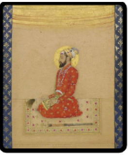
- He took over the reins afer Aurangzeb, but the real control lay in the hands of prime Minister, Zulfiqar Khan.
- Policies:
- Adopted a “Pacific policy” towards other powers. His reign saw the recognition of Marwar and Mewarʼs autonomy.
- Bahadur Shah allowed the Maratha Prince Shahu, held as Mughal captive since 1689, to go back to Marathaʼs and also conceded to Marathaʼs demand of Sardesmukhi in the Deccan.
- Challenges:
- Sikhs under Leadership of Banda Bahadur revolted against the Mughal Authority, Bahadur Shah defeated Banda Bahadur at Lohgarh.
- Jahandar Shah (1712 -1713)
-
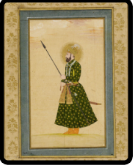
- Jahandar Shah won the war of Succession, with the support of noble kingmaker Zulfiqar Khan (Irani Party), First Puppet Mughal Ruler.
- Policies:
- Abolished Jaziya and had a subtle pacifying approach towards other regions and religions. Under him, Marathas were further granted Sardesmukhi rights over Deccan. (Collection by Mughals)
- Under him, Evil practice of Revenue Farming or Ijarah was introduced.
- Downfall:
- Killed by Farukhsiyar with the help of Sayyid Brothers.
- Farrukh Siyar (1713 - 1719)
-
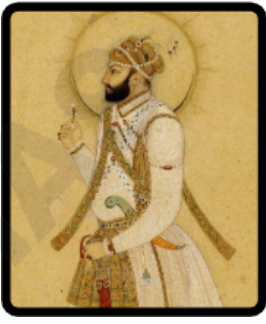
- FS came to power with the help of Sayyid Brothers.
- Policies:
- Adopted policy of Religious Tolerance - Abolished Jaziya.
- Issued Farman of 1717.
- Events:
- During his reign, Mughals executed Banda Bahadur.
- Downfall:
- Killed by the conspiracy of Sayyid Brothers and Peshwa Balaji Vishwanath (It was the first time in Mughal History that an Emperor was killed by his nobles)
- Muhammad Shah (1719 - 1748)
-
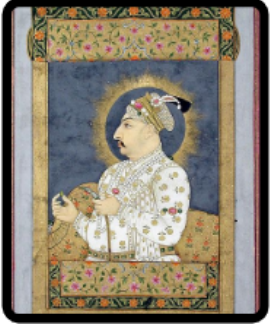
- Sayyid's now placed Muhammad Shah on the throne, but Muhammad Shah colluded ( secretly cooperating or conspiring) with Nizam ul Mulk and killed SayyidBrothers.
- Character:
- Muhammad was not the Man of Moment to save the Mughal Empire - He was weak Minded and Frivolous and came to be known as 'Rangeela'.
- Developments:
- During his tenure -
- Powerful nobles began to carve Semi Independent States. (Hyderabad, Bengal, Awadh)
- Marathas began their northern expansion.
- Invasions:
- 1739 - Nadir Shah & Ahmed Shah Abdali (one of Nadir Shah's top generals) (7) invaded India and defeated Mughals in various Battles.
- 1739 - Battle of Karnal - Nadir Shah defeated Mughals and imprisoned Muhammad Shah and annexed areas west of Indus into Persian Empire.
- During this time Nadir Shah became the Mughal Emperor for 57 Days.
- During this battle only, the Kohinoor and Peacock throne was looted from Mughals.
- Nadir Shah gained the strategically important Mughal territories to the west of Indus including Kabul.
- Ahmad Shah (1748 - 1754)
-
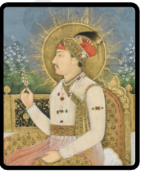
- He was an incompetent ruler who lef the state affairs in the hands of Udham Bai (Queen Mother)
- Challenges:
- During his reign, Ahmad Shah Abdali invaded India twice. Ahmad Shah surrendered Punjab and Multan to Persian invaders to appease him.
- Power Shift:
- During Ahmad Shah reign, Imad-ul-Mulk became the new wazir and kingmaker
- Succession:
- Afer his death till 1757, Muhammad Shah was succeeded by several weak and inefficient rulers.
- Alamgir II (1754 - 1759)
-
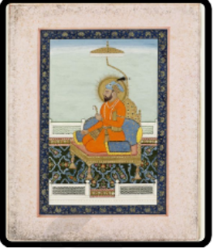
- Came to the throne with the help of Imad-ul-Mulk.
- Key Events:
- It was during his reign that the Battle of Plassey (1757) happened.
- Ahmad Shah Abdali invaded and plundered India in 1757 & 1759.
- In 1757, Abdali captured Delhi and before his return Abdali had recognised Alamgir II as the Mughal Emperor and Rohilla chief, Najib-ud-Daula as Mir Bakshi of Empire, who was to act as personal 'Supreme Agent' of Abdali.
- In 1758, Najib-ud-Daula was expelled from Delhi by Maratha Chief, Raghunath Rao, who also captured Punjab (Ceded to Persians by Ahmed Shah)
- Downfall:
- In Nov 1759, Wazir Imad-ul-Mulk got the emperor murdered and raised Shah Jahan III on throne (who again didn't amount to much)
- Shah Alam II (1760 - 1806)
-
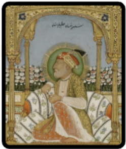
- Maratha power by 1760 had swept Northern India, and thus Shah Alam II was installed as rightful heir by Marathas.
- Major Battles:
- His reign saw the Third Battle of Panipat (1761) & Battle of Buxar (1764).
- Third Battle of Panipat (1761)
- In 1758, Najib-ud-Daula (Installed as Mir Bakshi by Adbali) was expelled from Delhi by Maratha Chief, Raghunath Rao, who also captured Punjab (Ceded to Persians by Ahmed Shah) and thus in order to take revenge, Abdali invaded India again in 1761 and defeated Marathas in the Third Battle of Panipat.
- Legacy:
- He is the first Mughal Emperor who became an East India Company Pensioner.
- “Sultant-e-Shah Alam, Az Dili ta Palam”
- It was used sarcastically to describe the weak rule of Mughal Emperor Shah Alam II (ruled 1759-1806), whose actual control was so diminished that his authority barely extended beyond Delhi to Palam (a small area near modern-day Delhi Airport).
- Akbar Shah II (1806 - 37)
-
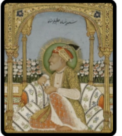
- Policies:
- Akbar Shah II gave the Title of ʻRajaʼ to Ram Mohan Roy and sent him to England to seek a raise in his pension.
- Decline:
- In 1835, EIC stopped calling itself a subject of the Mughal Emperor.
- Also, discontinued issuing coins in his name by deleting Persian lines on Companyʻs coins to this effect.
- Bahadur Shah II (1837 - 57)
-
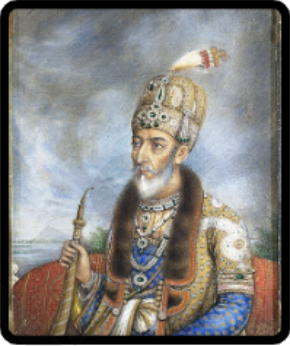
- Last Mughal Ruler of India.
- Key Event:
- During his tenure - Revolt of 1857 occurred.
- Fate:
- Afer the Revolt of 1857, He was captured and deported to Rangoon (Burma, now Myanmar) where he died in November 1862.
- And with him died - ʻThe Mughal Empireʼ
- Causes of Decline of Mughal Empire
- Aurangzeb's misguided policies
- His reimposition of Jizya in 1679 alienated Rajputs, Marathas, and Sikhs; prolonged Deccan campaigns from 1681-1707 drained treasury and military resources.
- Weak successors
- Post-Aurangzeb rulers like Bahadur Shah I, Jahandar Shah, and Muhammad Shah lacked the military prowess or administrative skill to maintain centralized control.
- Wars of succession & Role of kingmakers
- Frequent succession conflicts, such as Jahandar Shah vs. Farrukh Siyar, empowered nobles like Zulfiqar Khan and Sayyid Brothers to manipulate emperors, weakening imperial authority.
- Nature of mughal state
- A centralized feudal system dependent on loyal governors crumbled as provincial loyalty eroded after Aurangzeb, leading to fragmentation.
- Degeneration of Mughal nobility
- Factionalism between Irani and Turani nobles, coupled with corruption—e.g., revenue farming under Jahandar Shah—undermined governance and military cohesion.
- Jagirdari Crisis
- Over-allocation of jagirs—land grants—by the early 18th century reduced imperial revenue, as nobles hoarded income, crippling the state financially.
- Rise of Regional powers
- Marathas, Sikhs, and successor states like Hyderabad exploited Mughal weakness, asserting autonomy and challenging imperial dominance by the 1730s.
- Invasions of Irani & Durrani Kingdoms
- Nadir Shah's 1739 sack of Delhi and Ahmad Shah Abdali's seven invasions—e.g., 1748, 1757—looted wealth and annexed territories like Punjab, exposing Mughal vulnerability.
- Advent of European Powers
- East India Company's victories, like Plassey in 1757 and Buxar in 1764, shifted power to the British, reducing Mughals to pensioners by Shah Alam II's reign.
- Disintegration of Mughal Empire & Aftermath
-
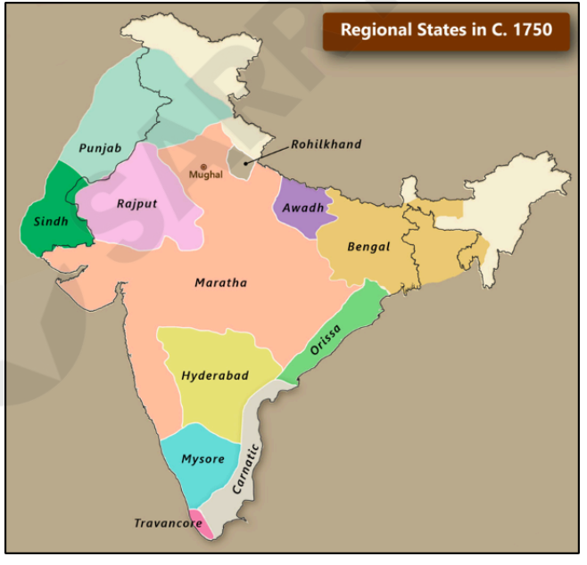
- Successor States (Hyderabad, Carnatic, Bengal, Awadh)
- New States (Sikh, Marathas)
- Independent States (Mysore, Kerala, Rohilkhand)
- Rise of Regional States
-
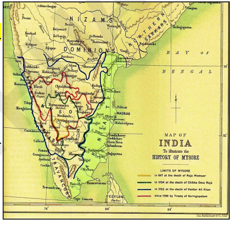
- Successor States
- Hyderabad
- Hyderabad founded in 1724 by Qlich Khan (Nizam-ul-Mulk)
- He fought in the Battle of Shaker-Kheda against Mubariz Khan - Viceroy of Deccan at that time.
- Carnatic
- In the 18th century, the Mughal sub of Carnatic came under the authority of the Governor of Deccan (Nizam of Hyderabad).
- Following the lines of the Governor of Deccan, they also declared Independence.
- Accordingly, the Nawab Saadatullah of Carnatic, appointed his nephew Dost Ali as his successor, without the prior approval of his superior, the Nizam.
- However, in 1740, Marathas invaded Carnatic, killed Nawab Dost Ali and took his son-in-law Chanda Sahib as prisoner to Satara.
- Thereafer the affairs of Carnatic deteriorated and this proved an opportunity to European counterparts to interfere in the affairs of Carnatic which eventually led to Carnatic Wars.
- Bengal
- In Bengal, Murshid Quli Khan started the process of autonomy in about 1717.
- He was appointed as Diwan of Bengal along with the position of Subahdar of Bengal given later on. (An Exception).
- Murshid Quli Khan is also known for his new revenue system introduced in Bengal known as Malzamani System.
- The Dynastic Rule of Quli Khan was challenged by Alivardi Khan (Battle of Gheria) who assumed power through a coup and killed Sarfaraz Khan.
- Thus under Alivardi's rule the areas of Bengal, Bihar and Orissa were essentially established as a sovereign state in Eastern India.
- In 1765, Alivardi Khan died and nominated his grandson Siraj ud Daula as his successor.
- Awadh
- Saadat Khan (popularly known as Burhan-ul-Mulk) became the Subahdar of Awadh in 1722, aiming to establish Awadh as an independent power center and decline of the Mughal Empire - provided a perfect opportunity for this.
- Successors faced numerous rebellions and challenges while at the same time enlarging their empire.
- Safdar Jung and later on Shuja ud Daula, further solidified Awadhʼs autonomous political framework by 1764.
- New States
- Marathas
-
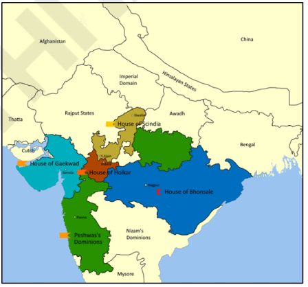
- Chhatrapati Shivaji established the Maratha Kingdom in the areas of western Deccan near about the 17th century.
- Internal conflicts among Maratha chiefs led to the establishment of a new Maratha Governance system under Balaji Vishwanath Peshwa (Prime Minister to King Shahu).
- First Peshwa - Balaji Vishwanath made the post Hereditary making his son Baji Rao next Peshwa.
- Under the Baji Rao Maratha confederacy, emerged supreme represented Gaekwads at Baroda, Bhosle at Nagpur, Holkar at Indore, Scandia at Gwalior and Peshwa at Poona.
- He also captured Bassein and Salsette ports from the Portuguese.
- Marathas fought the Third Battle of Panipat (1761) against Abdali as a protectorate of the Mughal Empire under Peshwa Balaji Baji Rao, famously known as Nana Saheb.
- Sikhs
- Sikh confederacy emerged in response to intense Mughal suppression in the later half of 18th century.
- Sikhs initially organized themselves under 12 Misls (Groups) each under a local chief.
- This confederation transitioned into the Sikh empire following the accession of Misldar Ranjit Singh Sukerchakiya (Originally a Governor under the Afghan King) as the sovereign Maharaja of Punjab, marking the beginning of a new Era of Sikh domination in north India.
- Independent Kingdoms
- Mysore
- Mysore historically was not under the Mughal Empire; Mysore was originally a viceroyalty of the Vijayanagar Empire.
- Mysore was transformed from Viceroyalty to an independent state under Wodeyar Dynasty.
- Haidar Ali and Tipu Sultan overthrew the Wodeyar rulers in the late 18th century.
- Kerala
- Martanda Varma established an independent state of Kerala with Travancore as his capital.
- He extended the boundaries of his state from Kanyakumari to Cochin.
- Jats
- Churaman and Badan Singh succeeded in setting up the Jat Kingdom of Bharatpur in the 18th century,
- But it was under Suraj Mal that Jat power reached its zenith.
- Rohilkhand
- Ali Muhammad Khan took advantage of the collapse of authority in North India following Nadir Shah's invasion to set up a petty kingdom, Rohilkhand
- Other Important Battles
- Battle of Palkhed - 1728 - Marathas vs Nizam
- Fought on February 28, 1728, near Palkhed in present-day Maharashtra; Peshwa Baji Rao I used guerrilla tactics to encircle and defeat Nizam-ul-Mulk's larger army, forcing the Nizam to recognize Maratha rights to collect chauth and sardeshmukhi in the Deccan, marking an early Maratha victory in their northern expansion.
- Battle of Kharda - 1795 - Marathas vs Nizam
- Fought on March 11, 1795, near Kharda in Maharashtra; the Maratha Confederacy under Peshwa Madhavrao II and generals like Daulat Rao Scindia decisively defeated Nizam Ali Khan of Hyderabad, extracting a large indemnity and territorial concessions, showcasing Maratha dominance over the Nizam in the late 18th century.
- Advent of Europeans in India
- Overview of European Arrival
-
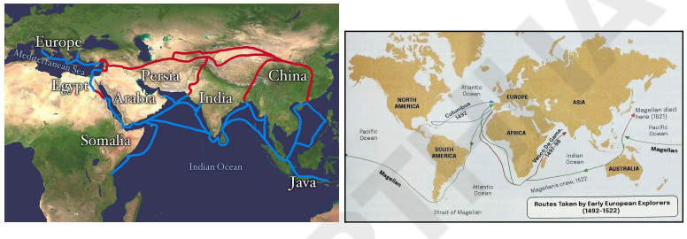
- Introduction
- In the 15th century, the Ottoman Empire seized control of the sea route to India through the Mediterranean , making it difficult for Europeans to reach India by their traditional route.
- This prompted European countries to compete with one other from the 15th century onwards to discover new maritime routes to India.
- This quest for new routes was fuelled by a strong desire to do trade with India, which was regarded as the land abundant with superior goods.
- By the 17th century, all European nations had established commercial empires in India.
- Their operations were primarily focused on coastal port cities in India and did not infringe upon the sovereignty of indigenous polities.
- They utilised existing trade networks to exchange goods for bullion, shifing the balance of foreign trade in Indiaʼs favour and feeling economic growth.
- However, conflicts emerged among these European powers as they sought to secure trade monopolies and territorial control.
- By the 1750ʼs British East India Company emerged as a dominant force in India, surpassing all other European trading companies.
- Prelude to European Arrival in India
-
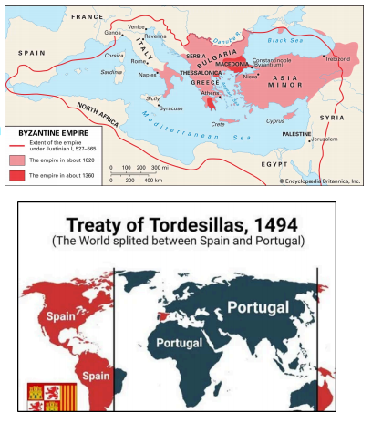
- Key Events Leading to Exploration
- Fall of Constantinople in 1453
- Age of Discovery - direct sea route to South East Asia (Image)
- Treaty of Tordesillas between Spain and , 1494
- Fun Fact
- In the year 1519, a Spanish Fleet under the command of Ferdinand Magellan set out to find a westward sea route to Asia, Ship returning to Spain three years later. Making it first circumnavigation of the world in Human History.
- Major European Powers in India
-
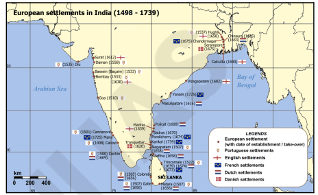
- Overview
- Portuguese (1498)
- Arrived first, establishing a maritime empire focused on spice trade and coastal control, led by Vasco da Gama.
- Dutch (1602)
- Focused on Southeast Asia but traded in India for cloth and spices, competing with the Portuguese and English.
- English (1608)
- Formed the East India Company, eventually dominating India through trade and territorial conquests.
- Danes (1616)
- Established minor trading posts, with limited commercial success but notable missionary impact.
- French (1664)
- Last to arrive, set up factories and competed with the British, leading to the Carnatic Wars.
- Portuguese (1498)
- The Beginning of Portuguese Exploration
-
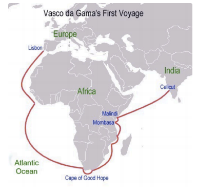
- Portuguese king Henry (1393-1460) encouraged maritime navigation by opening training and research institutes for the Purpose, Thus Portuguese became the first one to have navigated the entire African coastline.
- Bartholomew Dias (Bartolomeu Dias) in 1488 became the first known European to sail around the southern tip of Africa, reaching the Indian Ocean from the Atlantic.
- He originally named the cape "Cape of Storms" (Cabo das Tormentas) due to the rough seas.
- However, King John II of Portugal later renamed it "Cape of Good Hope" (Cabo da Boa Esperança) as it symbolized the promise of a new sea route to India.
- Early Portuguese Ventures
-
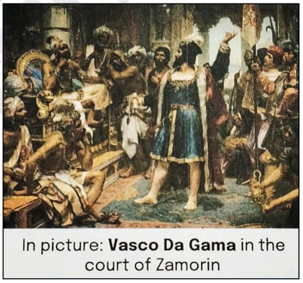
- In 1497, Vasco da Gama under the patronage of King Emmanuel reached Calicut on May 17,1498 which was ruled by a king named Zamorin (Local Hindu ruler) (Samuhtri Mana Veda)
- He came over as a trader and the cargo he bought from India was sold for 60 times the cost of his voyage. (He returned to India two more times)
- He successfully established a sea route from Europe to India that would permit trade with the far East, without the use of costly and unsafe silk road caravan routes, of the Middle East and central Asia.
- Pedro Alvarez Cabral (1500), he came over with the intention of striking a treaty with the local ruler of Calicut and setting up the Portuguese factory.
- However, a conflict ensued with the Arab merchants because of which plan was dropped. (Some sources mention the first factory of Portuguese to be in Calicut (1500))
- Eastern Spices were very important for European traders as without refrigeration, food spoiled easily, and spices were important for masking the flavour of rancid or spoiled meat.
- In 1503, the 1st Portuguese factory was set up at Cochin (Kochi)
- In 1505, the 2nd Portuguese factory was set up at Cannanore (Kannur)
- Their factories were called Feitorias and it also served as bases for a naval fleet called Armadas.
- Formation of Portuguese State of India
- Formation of Portuguese State of India ( Estado da India, 1503 -1504)
- The Portuguese State of India was meant to be a governing body of the various Portuguese fortresses and colonies overseas and it was required to function under a viceroy.
- In effect, the formation of this body indicated that the Portuguese would no longer be content with the mere spice trade but would set out to establish a Christian Portuguese state in the East and launch a holy war against Islam there.
- Another important post - Vendor da Fazenda, responsible for revenues and the cargoes and dispatch of fleets.
- Key Portuguese Viceroys
- Francisco De Almeida (1505-1509) became the 1st Portuguese Viceroy in India. (3 Year Term)
- He initiated the Blue Water Policy which aimed at Portuguese Mastery over the Sea.
- Blue water policy involved
- Strong Navy:
- Maintaining powerful naval fleets (armadas) to patrol the Indian Ocean.
- Strategic Fortresses:
- Building fortified bases at key coastal locations (like Kilwa, Kannur, Anjadiva, Cochin) to control entry points, choke points, and support naval operations, rather than deep inland expansion.
- Cartaz System:
- Implementing a system where non-Portuguese ships were required to purchase a license or pass (cartaz) from the Portuguese to trade in the Indian Ocean. Ships found without a cartaz could be confiscated or sunk. This enforced Portuguese control and generated revenue.
- Naval Warfare:
- Actively engaging and destroying rival naval powers (like the fleets of Egypt, Gujarat, and the Zamorin of Calicut) to eliminate competition, culminating in the decisive Battle of Diu (1509).
- He is credited with construction of Fort Anjediva on Anjediva Island lying at the Border of Muslim Bijapur and Hindu Vijayanagara states.
- Additional Point
- The combined forces of Egyptian and Gujarat navies defeated Portuguese armies off the coast of Diu. Next year he avenged his defeat by crushing both the armies combined.
- Alfonso de Albuquerque was the greatest Viceroy of Portuguese in India,
- He expanded the trading centres which till his reign were confined to Calicut and Cochin. (Headquarters at Cochin)
- He conquered Goa from the Sultan of Bijapur in 1510 (Adil Shah) (Helped by Timmaya (a privateer or admiral, possibly under the Vijayanagara Empire or operating independently from Honavar) in lieu of supply of Horses (instead of, in place of, or as a substitute for)), (First bit of Indian territories to be under Europeans since the time of Alexander the Great)
- Similarly other areas such as Malaysia, Daman & Diu were also brought under the Portuguese.
- In Bengal, Hooghly and Balasore became the Portuguese trading centres.
- He was an efficient administrator and brought natives into the administration of these areas and also encouraged the Propagation of Christianity and inter marriages.
- He abolished Sati in the regions under his rule.
- He introduced new plants such as Tobacco and Cashew nuts and also new varieties of Coconut.
- Nino de Cunha
- Next Portuguese Viceroy, he transferred the Government head office from Cochin to Goa, thus making Goa the official Capital of Portuguese in India.
- He secured Bassein (Vasai) from Bahadur Shah of Gujarat by helping him in battle against Humayun (1534).
- Few Years later he killed Bahadur Shah of Gujarat by deceit by inviting him to a Portuguese Ship (1537)
- He set up settlements in Bengal with their headquarters at Hooghly.
- Decline of Portuguese Power
- The Viceroys afer him were not that efficient and thus the result was that Portuguese began to decline in India.
- In 1661, The Portuguese were at war with the Spain and needed support from England, which led to marriage of Princess Catherine elf Portugal to Charles II of England, who imposed a dowry that included the insular and less inhabited areas of Southern Bombay while the Portuguese managed to retain all the mainland territory north of Bandra up to Thana and Bassein - Beginning of strong English presence in India as well.
- In 1739, the Marathas, under Chimaji Appa, captured Salsette and Bassein (Vasai), dealing a major blow to Portuguese power in western India.
- The Battle of Bassein (1739) marked the beginning of the Portuguese territorial decline in India.
- The Portuguese finally lef India in the mid 17th century AD, but three of their settlements - Goa,, Daman and Diu remained in their hands till 1961. (First one to come to India and the last one to Leave) (Operation Vijay 1961)
- Causes of Failure of Portuguese in India
- Lack of Good Leadership
- While the early Portuguese efforts were spearheaded by capable and often ruthless leaders like Vasco da Gama, Francisco de Almeida, and especially Afonso de Albuquerque (who established key territorial bases like Goa, Malacca, and Hormuz), the quality of leadership that followed often proved inadequate for the challenges faced.
- Many subsequent Viceroys and Governors lacked the strategic vision, administrative competence, and military acumen of their predecessors.
- Corrupt Administration
- Neglected by the home Government, The salaries of the officials were low and thus they indulged in corruption and malpractice.
- In 1580, Portugal was merged with Spain (This union lasted for 60 years) which neglected the Portuguese interests in India and moreover they discovered Brazil which diverted their attention from India.
- Treaty of Tordesillas between Spain and Portugal, 1494 (Image)
- It divided the non-European world between Spain and Portugal along a specific meridian. Portugal was granted Africa, Asia, and the eastern part of South America (which included Brazil), while Spain received the lands to the west (most of the Americas).
-
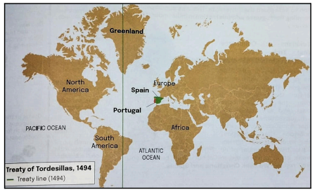
- Portuguese society was dominated by the aristocracy and merchants did not enjoy the social influence necessary to mould state policy according to their interests, making it difficult for Portugal to maintain its maritime empire.
- Religious Policy and their forceful conversion of natives into Christianity
- Rise of Dutch and English Maritime Power.
- Impact of Portuguese Coming to India
- Spread of Christianity to Malabar and the Konkan Coast.
- Missionaries like Saint Francis Xaviers, Father Monserrate played a crucial role in propagating the Christianity faith in India. In 1540, all temples of Goa were destroyed.
- Western Education was imparted in the native Language as they opened up schools and colleges.
- Also,
- They brought the Printing Press to India - Bible came to be printed in Kannada and Malayalam Language.
- Brought Some crops with them for production such as Tobacco, Some fruits and vegetables. - Potato, Lady Finger, Sweet Potato, tobacco, corn, lady finger, Pineapple, Groundnuts, Cashew, Almond etc.
- Portuguese contributed to the Mughal use of field guns (Matchlocks), and the artillery of the stirrup.
-
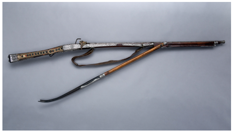
- Cartaz System
- The Portuguese East India Company introduced Sea Pass in the Indian Ocean Region in the early 16th century.
- In the 15th century, both the Arab and Persians were dominant in the Indian Ocean region, However by the 16th century due to their strong naval Power Portuguese superseded the Muslim dominance and thus introduced the carat system as a mark of their sovereignty and dominance.
- The carat pass issued by the Portuguese entitled the holder freedom of movement in the Indian Ocean.
- First time it was issued in 1502. As a result, Indian and Perso-Arab merchants suffered and eventually, the maritime trade declined.
- The Dutch (Netherlands/Holland)
- Introduction to Dutch Presence
-
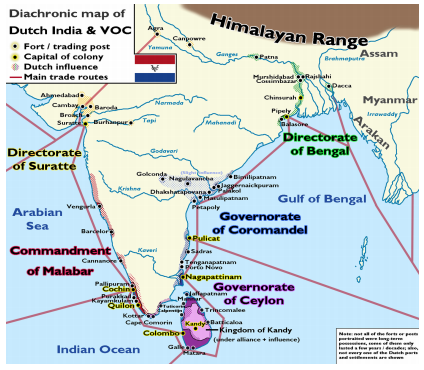
- Afer the Portuguese came the Dutch, they were innovative people in business and in shipping techniques.
- By 1600 they had established an elaborate system of Eastern Trade from the Persian Gulf to Japan and traded mainly in redistribution of goods to Northern Europe.
- In 1596, Cornelius de Houtman was the first Dutch traveler to reach India.
- Their main Interest was in the Indonesian Archipelago and the Spice Islands and not India.
- However they discovered that Indian Trade was necessary to carry out trade with South-West Asia, as there was a good demand for Indian cloth in the Indonesia region.
- In return, Indians demanded pepper and spices.
- Hence, the FIRST credit of making ʻIndian Clothʼ as an item of export goes to the Dutch.
- Dutch Factories
- In 1605, the first factory was established at Masulipatnam (AP), which was under the Sultan of Golconda
- Second factory at Pettopoli (Nizampatnam)
- In 1610, they signed a treaty with the king of Chandragiri and established their headquarters at Pulicat.
- Here they minted their gold coins called pagoda.
- Soon they established various trading depots and factories all over India.
- In 1690, their headquarters were transferred from Pulicat to Nagapattinam.
- The heads of Dutch factories were called factors who were classified as traders and the Dutch model of Trade was based on the Cartel (refers to an agreement or association between competing firms or entities to control aspects of a market) or Cooperative System.
- Anglo-Dutch Rivalry - Battle of Bedra
- In 1623, the Amboyna massacre took place in Indonesia where the Dutch killed 10 Englishmen and 9 Japanese.
- Afer this event, the Dutch restricted themselves to the Malay Archipelago and the English to India.
- In 1759, The Dutch were defeated by the English in the decisive Battle of Bedara/ Hooghly (Bengal)/Chinsurah, thus ending the Dutch power in India.
- The English (1608)
- Establishment of the English East India Company
- In 1599, a company to trade with the East was formed under the auspices of the group of merchants known as Merchant Adventurers, the Company popularly came to be known as East India Company.
- In 1600, EIC was granted a royal charter by Queen Elizabeth giving it the exclusive privilege of trading east of the Cape of Good Hope for a period of 15 years.
- Initially, their main area of interest was Spice Islands in Indonesia, however due to the overwhelming presence of Dutch, they shifed their preference towards India and thus in 1608, Surat in Gujarat was established as the trade transit point and the company ships were docked there.
- The Company now planned to open up a factory in Surat and sent Captain Hawkins for the same.
- He was the first Englishmen to set foot on Indian soil.
- He could speak Turkish and came in a ship called ʻHectorʼ.
- On arrival, he went to Jahangir's court in Agra.
- In 1609, the English were given the royal Farman to set up factories on the west Coast.
- However, Hawkins had to leave India at that time due to Portuguese intrigues.
- Early English Factories
- In 1612, The English, under the command of Captain Thomas Best, defeated the Portuguese at Swally near Surat.
- Impressed by this triumph, Emperor Jahangir granted the English a Royal Farman in 1613 allowing them to open their first permanent factory at Surat in 1613 and trade in Cambar, Ahmedabad and Goa.
- Imp - First temporary factory at Masulipatnam in 1611.
- In 1615, Sir Thomas Roe arrived in India, sent by King James I as an ambassador to the court of Jahangir.
- He was successful in obtaining a royal Farman according to which English were allowed to set up their factories in the whole of India.
- In 1616, English opened their first factory in the south at Masulipatnam. (First one on in South East Coast)
- English Factories in the South
- 1. In 1632, Sultan of Golconda issued a Golden Farman in favour of the English, permitting them to trade freely from the ports of Golconda on annual payment gf 500 pagodas.
- 2. In 1639, Francis Day was able to obtain Madras on lease from the Raja of Chandragiri and shifed the centre of their activity to Madras.
- Raja allowed the Company to fortify Madras.
- Thus the English set up a small factory and built a small fort around it called Fort St. George.
- 3. In 1690, The British bought the Fort Devanpatnam, near Madras and renamed it to Fort David.
- English Factories in Deccan
- In 1622, King Charles II of England received Bombay as dowry on marrying a Portuguese Princess.
- In 1668, the Crown transferred it to the Company on an annual rent of ten pounds.
- Bombay quickly replaced Surat as the Company's main depot on the West Coast.
- English Factories in Bengal
- On the SOUTH-EASTERN coast, the first English factory was set up in Orissa in 1633
- In 1651, at Hugli, the first English factory was set up in Bengal upon receiving permission from Sultan Shuja.
- In 1658, all establishments of the Company in Bengal, Bihar and Orissa and Coromandel Coast were brought under the control of Fort St. George.
- In 1667, Company was given a farman for trade in Bengal by the Emperor Aurangzeb.
- In 1690, Job Charnock established a factory at Sutanati which was fortified in 1697 and called Fort Williams.
- In 1698, the Bengal factories were placed under Fort Williams.
- The Farman of 1691 granted by Aurangzeb exempted the company from payment of custom duties in Bengal in return for an annual payment .
- Later In 1717, Company secured from Mughal Emperor Farukh Siyar a Farman confirming the privileges granted EARLIER and extending them to Gujarat and Deccan. (Mission led by John Surman)
- Farman of 1717 - The "Magna Carta of the Company"
- Main Provisions:
- In Bengal:
- Taxes on the Company's import and export were waived for an annual payment of ₹3,000.
- The Company was permitted to issue dastaks (trade passes) for the transportation of its goods.
- The Company was allowed to rent more land around Calcutta.
- In Hyderabad:
- The Company retained its existing privileges of duty-free trade.
- The Company had to pay the prevailing rent for Madras, but no additional trade duties were imposed.
- In Surat:
- For an annual payment of ₹10,000, the East India Company was exempted from all trade duties.
- Other Provisions:
- The coins minted by the Company in Bombay were to have legal currency throughout the Mughal Empire.
- The original company faced opposition to its monopoly, which led to the establishment of a rival company and the fusion (1708) of the two as the United Company of Merchants of England trading to the East Indies.
- The United Company was organized into a court of 24 directors who worked through committees.
- Danes (1616)
- Danish Presence in India
- The Danish East India Company was established in 1616 and they set up trading outposts in 1620 at Tranquebar near Tanjore (Tamil Nadu). (Nayak king of Thanjavur)
- In 1755, they founded a colony called Frederick Nagore near Serampore in Bengal.
- Occupied twice by English, they failed as a commercial venture.
- In 1771, the Danish Company went bankrupt and Serampore was transferred to the Danish crown.
- Serampore became a safe haven for missionaries in India and earned immense fame for the cultural and educational activities of the missionaries.
- In 1845, Serampore was ceded to English, thus ending the Danish presence in India.
- Two Danish Missionaries, the first protestant missionaries, arrived on 9 June 1706.
- The Danish settled in Andaman and Nicobar in 1755, but due to the threat of malaria they abandoned it in 1848.
- Danish Presence in India, which also included the Nicobar Islands, played a notable role in missionary activities.
- In 1801, the Danish were defeated at Tranquebar by the British army.
- In 1845, Denmark sold all its Indian colonies to Britain, ending its presence in India and transferring these areas to British control.
- French (1664)
-
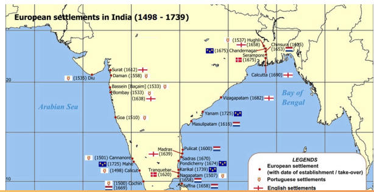
- Introduction to French Presence
- The French were the last colonial power to set up their foot in India.
- In 1664, Colbert formed the Company des Indes Orientales.
- King Louis IV granted the French Company licence to trade with India and the East Indies.
- French Factories
- In 1668, they set up their first factory at Surat with Francis Caron as the Director General.
- In 1669, they set up a factory at Masulipatnam.
- In 1672, Caron was succeeded by Francois Martin who received a village as a grant from the King of Bijapur Sher Khan Lodhi and founded Pondicherry, which later became their capital.
- In 1693, The Dutch snatched Pondicherry but it was restored to the French under the Treaty of Ryswick.
- In this way, French established its firm base in India.
- Afer that, they further consolidated their position by adding several bases including Mahe, Karaikal, Balasore and Kasimbazar.
- The real trouble started when the French won control of Tanjore which the British considered vital for their trade security and the Anglo-French rivalry.
- Rise of British Supremacy: Carnatic Wars - The Anglo-French Rivalry
- Overview of British Ascendancy
- Introduction
- The mid-18th century saw the gradual transformation of the English East India Company from a trading company into a political power.
- During the period 1600 to 1744, the slowly expanded its trade network in India, simultaneously easing out the rivals though a strategy combining diplomacy and war.
- Though the rise of British supremacy in India is usually traced to 1757 with the British victory in the Battle of Plassey, the ground for the victory was laid in South India where the British might was successfully tested out against the French Company.
- Anglo-French Struggle for Supremacy - The Carnatic Wars
-
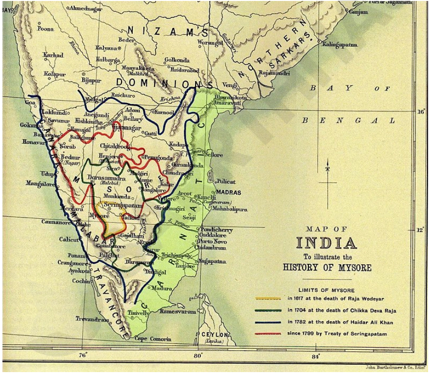
- Reasons for Political Power Acquisition
- Why did these foreign powers start gaining Political Power ?
- When the decline of Mughal Authority (Nadir Shah Invasion of 1740) and the weak regional powers (Marathas - Nizam of Hyderabad) proved incapable of safeguarding the interests of European companies in India, they saw the necessity to empower themselves militarily.
- Further, they were commercial entities, seeking to maximize their profit margins, which necessitated the elimination of competition and establishment of monopoly.
- Not that they only wanted to monopolize their trade and sell dear, but they also wanted to acquire power, necessitating the acquisition of some political control over the country they traded with.
- Emergence of Rivalry in South India
- Why this rivalry emerged in the South India
- In this context, the emergence of hostilities between the English and the French was but natural.
- South India emerged as the arena for Anglo-French rivalry as it had become the main centre for French activities with Pondicherry as capital.
- The French had also begun to wield influence in the neighbouring states of Hyderabad and Mysore.
- Besides, there was not much scope in western India because of powerful Marathas, while Eastern India was under the direct control of Alivardi Khan, therefore it was only in Southern India that conditions became favourable, especially after the death of Nizam-ul-Mulk of Hyderabad in 1748.
- First Carnatic War (1740-1748)
- Background of Hostility - Austrian War of Succession
-
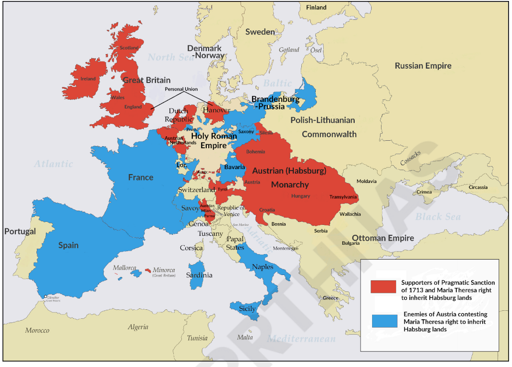
- The immediate context for conflict between two European rivals in India was provided by the War of Austrian Succession in Europe which broke out in Europe in 1740 between Austria and Prussia.
- In this war, Britain and France joined opposite camps.
- Perhaps conscious of their relatively weaker position, the French tried hard to prevent the extension of war to India and Dupleix (The French General) advised his English counterpart to maintain neutrality.
- Dupleix - Introduced the innovative concept of Subsidiary Alliance in India
- But the English did not agree, instead deliberately adopting an aggressive stand and seized some French ships off the south-eastern coast of India to provoke France.
- The French had no fleet in India, hence Dupelix messaged La Bourdonnais (The French Governor of Mauritius) for reinforcements .
- He immediately siphoned 3000 men towards the Coromandel Coast.
- As soon as the help arrived, French attacked the English and captured the British possessions in Fort St. George, Madras and nearby areas, and Robert Clive was taken as prisoner of War, and thus the First Carnatic War had begun.
- Battle of St. Thomas (River Adyar)
- Anwarrudin, the Nawab of Carnatic, disapproved of the hostilities in his kingdom, thus when the English appealed to him for protection, Nawab asked the French to quit Madras, but the French were in no mood to retreat and neglected the advice.
- The Nawab now sent a large army to fight the French.
- A large Indian Army of 10,000 men met a small French army of 230 European and 700 Indians soldiers on the bank of River Adyar near St. Thomas in 1746.
- But to everyone's surprise, a handful of properly trained soldiers of the French army routed Anwaruddin's vast army.
- This highlighted the superiority of the European army and exposed the weakness of the military of the Indian rulers.
- End of the War - Treaty of Aix-la-Chapelle
- Thereafter in 18th century political chaos, there was no dearth of Indian princes who would invite Dupleix's assistance to turn the scales in their favour.
- In this way, it was Duplex who first showed the way of intervening in disputes of the Indian rulers and thereby acquiring political control - a technique which was later perfected by the English company.
- Even as the French continued the siege, the War of Austrian Succession came to an end by the Treaty of Aix la Chapelle on the basis of mutual restitution of conquests.
- This ended the first round of Anglo French rivalry in India too.
- Madras was restored to the English and the French got Louisburg in North America, and thus the first war ended in a draw.
- Second Carnatic War (1749-1755)
- Background - Succession Disputes in Carnatic and Hyderabad
- Dynastic feuds in South India proved the content for the second round of Anglo-French conflict in the South.
- The succession disputes at both Carnatic and Hyderabad provided the French Governor General Dupelix an opportunity to intervene in Indian Politics.
- In 1740, The Marathas had invaded the Carnatic and killed Nawab Dost Ali (Ruler of Carnatic) and took his son-in-law Chanda Sahib as prisoner to Satara.
- In 1743, The Nizam of Hyderabad (Nizam ul Mulk) felt prompted to come to the Carnatic and appoint Anwarrudin Khan as the Nawab of Carnatic.
- But in 1748, the Chanda Sahib was freed by the Marathas and the same year, Nizam-ul-Mulk died.
- His son Nasir Jung succeeded him but his grandson, Muzaffar Jung laid claim to the throne.
- Muzaffar Jung now allied with Chanda sahib to gain their respective seats in Hyderabad and the Carnatic.
- Intervention by Dupleix
- He was able to intervene in the wars of succession that started after the death of Nizam ul Mulk.
- He pledged support to Muzaffar Jung and Chanda Sahib, thus a tripartite struggle was developed.
- In August 1749, the three allies ambushed and killed Anwaruddin at the Battle of Ambur, near Vellore.
- His son Muhammad Ali fled to Trichinopoly and Chanda Sahib became the Nawab of Carnatic and thus began the second phase of the Anglo-French War (2nd Carnatic War).
- After this the allies marched to Deccan, The French army surprised and killed Nasir Jung and installed Muzaffar Jung as the Nizam of Hyderabad.
- He rewarded Dupleix by appointing his honorary Governor of all the Mughal Dominions south of the River Krishna and other territories were ceded to the French.
- In return, Dupleix placed at the disposal of Muzaffar Jung the service of his best officer named Bussy.
- Soon afterwards, Muzzafar Jung was killed in an accidental skirmish (a minor, unplanned, or preliminary fight between small groups of troops).
- However, Bussy maintained French influence in the Deccan by quickly placing his nominee Salabat Jung on the throne.
- In this way, Bussy went on to control Deccan's political fortune for 7 years.
- Thus the French power in the South was now at its heights from where it was going to fall badly.
- Emergence of Robert Clive
- Meanwhile, Muhammad Ali had taken refuge in the fortress of Trichinopoly and the repeated attempts of Chanda Sahib and the French to capture the fortress had failed.
- The British, realising that the situation implied a serious threat to their position in Southern India, now decided to put their entire strength behind Muhammad Ali.
- Robert Clive saves the day for the British, He suggested that French pressure on Muhammad Ali could be released by attacking Arcot, the capital of Carnatic.
- Thus, attack upon Arcot was to be used as a diversionary tactic and thus Chanda Sahib would have to divert an effective part of his army for the protection of Arcot.
- Siege of Arcot
- Clive stormed Arcot with a small force of only 210 men and captured it, Thus Chanda Sahib alarmed by the attack on his capital, sent the best troops from Trichinopoly which comprised 4000 men to recapture Arcot.
- Clive successfully sustained the famous siege for 53 days.
- In the meantime, Clive received help in the form of reinforcements from Madras and some Indian allies (Mysore, Tanjore and Marathas).
- Clive then came out of the besieged town, attacked and defeated Chanda Sahib (Beheaded), Muhammad Ali then became the undisputed Nawab of Carnatic.
- The fate of French Governor Dupleix was sealed after the defeat of Arcot, The Directors of the French Company did not appreciate his political ambitions and disproved of the expenses they involved and recalled him.
- On 1 August 1754, Godeheu succeeded Dupleix as French Governor General in India.
- Treaty of Pondicherry
- Godeheu signed a peace treaty, The Treaty of Pondicherry with the English in 1755.
- As per this treaty, both the companies agreed not to interfere in the quarrels of the Indian princes.
- After this treaty, French continued to maintain their hold over Hyderabad for some time, but they had lost much of their prestige and their predominant position in the Deccan had been definitely undermined.
- On the other hand, English influence had been established in Carnatic, with their candidate Mohammad Ali installed as the Nawab of Carnatic.
- Third Carnatic War (1757-1763)
- Background - Seven Years War
-
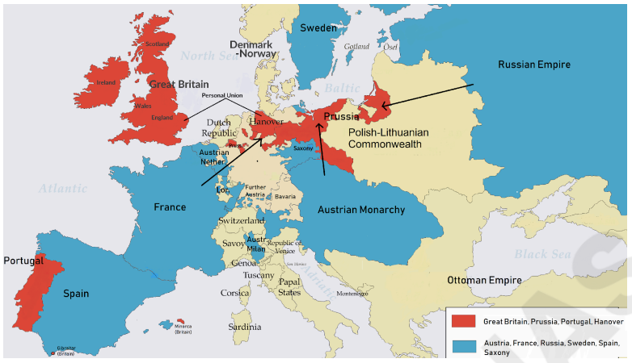
- Like the first Carnatic War, This Third war was also the echo of the Hostilities happening in Europe Between the British and the French.
- The Seven Years War broke out in Europe and both the forces joined the opposite camps and this ended the short peace between the European companies in India as well.
- Arrival of Count De Lally (April 1758)
- This time the French Government made a determined effort to oust the English from India, For this purpose, The French sent an impressive French army headed by Count De Lally, who reached India after a long voyage of 12 Months in April 1758.
- Lally started his work vigorously and attacked Fort St. David and captured it and other small English possessions in this region.
- But the French victory was only short-lived as problems of varying nature began to surface on the horizon.
- Lally's attack on Madras ended in failure as he could not get naval support in time.
- The French Company also faced shortage of ammunition and lack of funds to pay the troops.
- Upon that, Lally was rude and overbearing in his conduct with the subordinates I.e the Company's servants of Pondicherry.
- He held a very low opinion of them and looked down upon them as dishonest rogues to be set right with threats and punishments.
- In such circumstances, both Lally and his soldiers distrusted each other and the French troops felt badly demoralised.
- At this critical juncture, rash and headstrong Lally committed another great blunder of fighting personal battles with the British.
- Having assessed the situation, The English sent an army from Bengal to the Northern Circars.
- They occupied Rajahmundry and Masulipatnam and also concluded a favourable treaty with Nizam Salabat Jung.
- French Influence in Deccan was thus irrevocably lost.
-
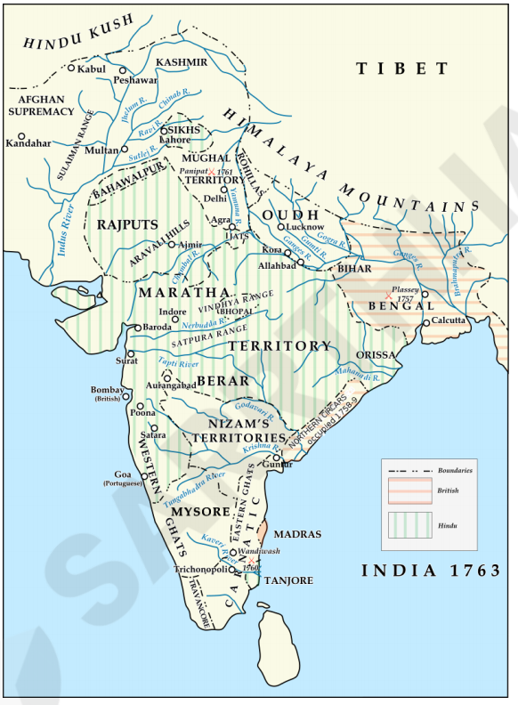
- Battle of Wandiwash (1760) - The Final Blow to French Rule in India
- The Battle of Wandiwash took place on 22 January 1760 in present-day Tamil Nadu.
- It was a decisive confrontation between the British (led by General Eyre Coote) and the French (led by Count de Lally).
- The British completely defeated the French, capturing Bussy, one of Lally's key commanders.
- After their defeat, the French retreated to Pondicherry, their main stronghold in India.
- Lally sought help from Nawab Hyder Ali of Mysore, but due to miscommunication, Hyder's forces returned without fighting.
- The British laid siege to Pondicherry, and after months of struggle, the French surrendered on 16 January 1761.
- With this, French power in India collapsed. The British soon captured Jinje and Mahe, ensuring that the French had no remaining territories in India.
- Peace of Paris (1763)
- The Third Carnatic War ended officially in 1763 with the conclusion of the Peace of Paris, at the end of Seven Years' War.
- As per the treaty, Pondicherry and some other French settlements were no doubt returned to France, but these were never to be fortified again and could only function as mere trading centres.
- The worst fate awaited Lally, He was detained as a prisoner of war for two years, after which he was allowed to return to his home country, where far from receiving any favourable treatment, he was first imprisoned and then executed.
- Thus the Third Carnatic War brought down the curtain to the Anglo-French rivalry in India and cleared the way for the establishment of the British Empire.
- Reasons for Defeat of the French Against the English
- Continental Ambitions of France
- France in the 18th century remained preoccupied with its continental ambitions, which considerably strained its resources.
- The French Monarchs of the time were fighting for the 'natural frontiers' of their country, which meant acquisition of territory towards the Rhine and towards Italy.
- Such an expansionist policy of France kept it perpetually trapped in the wars of Europe and diverted its energies away from colonial acquisition.
- In the end, the French gained almost nothing on the continent and even lost their colonial possessions.
- On the other hand, England did not covet an inch of European territory but followed its single minded objective of colonial expansion, an objective in which it achieved considerable success.
- Difference in the Organisation of the Two Companies
- The French East India Company was largely funded by the monarch, with guaranteed dividends for shareholders.
- As a result, the company's directors were appointed by the king and had little personal interest in its success.
- When facing financial difficulties, the French government provided subsidies to keep it running.
- This made the company financially weak and unable to support Dupleix's costly wars.
- On the other hand, the British East India Company was an independent commercial corporation.
- It was managed by a court of directors who had a strong interest in the company's growth.
- The company maintained good financial health and was even considered a major source of revenue for the British government.
- Different Systems of Government
- The French Government was autocratic and suffered from corruption and inefficiency.
- The English Government was run by an enlightened oligarchy, under which it was making immense progress towards a constitutional set up.
- Other Reasons
- Seats of Power
- The French centered their power in Pondicherry, a single coastal enclave vulnerable to siege, while the English diversified their strongholds across Madras, Bombay, and Calcutta, giving them strategic resilience and broader influence over Indian rulers.
- Naval Strength
- British naval superiority, exemplified by control of the seas during the Seven Years' War, allowed them to disrupt French supply lines and reinforce their own positions, whereas the French navy, often delayed or under-resourced, failed to support Lally effectively, as seen at Madras and Wandiwash.
- Lack of Enthusiasm and Enterprise
- French efforts in India lacked consistent enthusiasm from the home government and company directors, who prioritized European wars over colonial ventures, contrasting with the English East India Company's proactive and profit-driven leadership, which eagerly backed military campaigns like Clive's at Arcot.
- Personal Incompetence of Commanders and Generals
- French commanders like Lally, despite initial vigor, displayed arrogance and poor coordination—e.g., alienating subordinates and failing to secure Hyder Ali's aid—while English leaders like Clive and Eyre Coote demonstrated adaptability, strategic foresight, and effective alliances with Indian powers.
- Rise of British Supremacy (2): Conquest of Bengal (1757-1765)
- Overview of British Conquest
- Introduction
- The Beginning of British conquest in India may be traced back to the Battle of Plassey in 1757, in which the English forces defeated the Nawab of Bengal Siraj-ud-Daulah.
- In fact, the history of British conquest in Bengal is the history of gradual transfer of power from Nawabs to British during the short period of eight years, from 1757 to 1764, the main cause of conflict being the commercial rivalry between the British and the Bengal Nawabs.
- Why All Eyes on Bengal?
- High agricultural production particularly rice.
- Great Water Transport system for moving goods.
- By mid 1700ʼs, Bengal was top producer of silk and cotton textiles in India.
- Bengal was also a big supplier of saltpeters, needed for making gunpowder in Europe.
- Therefore in the initial years of settlement, British, Dutch and French all had settlements in Bengal -
- British in Calcutta
- Dutch in Chinsurah
- French in Chandernagore
- Background to British Dominance in Bengal
- Early European Presence
- Since the 17th century, Bengal had emerged as a happy hunting ground of the Dutch, the English and the French company who were attracted to Bengal mainly owing to its rich resources.
- In 1651, at Hugli The first English factory was set up upon receiving permissions from Sultan Shuja, the subahdar of Bengal.
- Then he also granted the English East Indian Company the privilege of free trade in Bengal, Bihar and Orissa in return for lump sum payment of 350 pounds at a time when Companyʼs exports from Bengal were worth more than 50,000 pounds a year. (This was because Sultan Shuja was pleased by the service of British Doctor who successfully cured a royal lady of a disease).
- Thereafer, English factories were set up at Kasimbazar, Patna etc.
- In 1698, they obtained the zamindari of the villages of Sutanati, Kalikata and Gobindpura from Subahdar (Azim us Shan) on payment of Rs 1200.
- In 1700, the Bengal factories were placed under Fort William.
- Soon the villages grew into a city known as Calcutta.
- Rise of Independent Nawabs
- In 1717, Emperor Farrukhsiyar appointed Murshid Quli Khan, the Diwan of Bengal and also at the same time Subahdar of Bengal.
- Taking advantage of his position, Murshid Quli Khan now declared himself as the Nawab of Bengal and became the first independent Nawab of Bengal. (F.S Farman of 1717)
- In 1740, Alivardi Khan, the Deputy Governor of Bihar, deposed and killed Nawab Sarfaraz khan (Grandson of Murshid Quli).
- Alivardi Khan rightly did not allow fortification of French and English factories at Chandernagore and Calcutta.
- In 1755, Alivardi Khan dies nominating his grandson Siraj-ud-Daulah as his successor.
- Siraj-ud-Daulah (April 1756 - June 1757)
- Succession Challenges
- Two other contenders for the throne, Shaukat Jung (Faujdar) and Ghaseti Begum (Alivardi's Daughter) challenged Siraj's succession.
- This resulted in intense court factionalism and support was offering to different warring groups by a dominant group in the Nawabʼs court comprising Jagat Seth, Amir Chand, Mir Jaffar, zamindars and others who were also opposed to Siraj.
- This seriously destabilised the administration of Bengal and the advantage was taken by English East India Company.
- Main Reasons for Conflict with the English Company
- Farman of 1717 - This Farman became a perpetual source of conflict between the Bengal Nawabs and the English Company.
- It meant loss of revenue to the Bengal Government and second, the Company's servants misused Dastaks to evade taxes on their private trade.
- Shelter to Krishna Das - The English Company had given shelter to Krishna Das, a traitor , who fled with immense treasures against the Nawabʼs will.
- Support to Ghaseti Begum - The Company had also offended the Nawab by giving support to the claims of Ghaseti Begum (Daughter of Alivardi Khan)
- Immediate Cause - The breaking point cam when the English Company, anticipating another round of Anglo-French struggle, began to strengthen the fortification of Fort William and mounted guns on its walls.
- Siraj pleased repeatedly with the English to desist from further fortification, but to no avail.
- Seeing his own authority flouted in his own dominion, Siraj-ud-Daulah decided to launch an offensive.
- Capture of Fort William & Black Hole Tragedy
- On 15 June 1756, Siraj-ud-Daulah surrounded Fort William.
- The siege lasted for five days.
- During this, some of the 146 persons escaped through the back door down the Hooghly River, took refuge and waited for held from Madras.
- When the fort fell on 20 June, The Nawab renamed Calcutta as Alinagar, placed it under the charge of Manik Chand, and himself returned to Murshidabad.
- Subsequently, these 146 persons were captured and and put in a small room of the fort popularly known as Black Hole, in conditions of excessive heat and crowding owing to summer solstice.
- It is believed out of 146 persons, only 26 survived the next morning, this is known as Black Hole tragedy.
- This incident was held up as an example of British heroism and Nawabʼs callousness.
- Siraj-ud-Daulah was portrayed a cruel monster and held directly responsible for the deaths.
- Aftermath of Black Hole Tragedy
- Meanwhile, help came from Madras in the form of strong naval force under the command of Robert Clive.
- Manik Chand, the Nawabʼs officer in charge of Fort William, was bribed and he surrendered afer a brief pretence (A reason or excuse that is not true) of resistance.
- Consequently, In February 1757, The Nawabs had to make peace with the English and sign the humiliating Treaty of Alinagar.
- As per the Treaty, the Nawabs had to restore to the English their -
- Former privilege of trade
- Grant permission to fortify Calcutta.
- Pay compensation amount for the losses suffered by the English.
- British Still Not Satisfied
- In this way, Clive had regained Calcutta and even forced the Nawab to concede to all English demands.
- Still, the English were not satisfied, They had decided to replace the Nawabs with Mir Jafar.
- With this in mind, they placed an impossible set of demands before the Nawab, thus making a war inevitable.
- Clive organised a web of intrigue with the leaders in the Nawabʼs court.
- Mir Jafar - Mir Bakshi (Commander in chief of Nawabʼs Army)
- Manik Chand - Officer in charge of Calcutta.
- Jagat Seth (Rich Bankers of Bengal)
- These disaffected nobles of Sirajʼs court joined hands with the English to oust Siraj and install their protege, leading to Plassey conspiracy of 1757.
- The Battle of Plassey (23 June 1757)
- Battle Details
- On 23 June 1757, both armies met at Plassey, 30 km south of Murshidabad.
- The English force comprised of 950 European infantry and 2100 Indian sepoys, while that of the Nawab comprised of 50,000 men commanded by the treacherous (Deceptive or betraying trust) Mir Jafar.
- Only a small group of Nawabʼs soldiers fought bravely, they were led by Mir Madan and Mohan Lal.
- Afer Mir Madan was killed, Mir Zafar played upon the fears of Nawab and advised him to retire from the battlefield, leaving the command in the hands of his generals.
- The trick was well played, once the Nawab retired with 2000 men, a large part of Nawabʼs army led by Mir Jafar and Rai Durlabh merely looked upon, as Clive routed the rest of Nawabʼs forces.
- As a result, the Nawab had to flee but was captured and put to death by an assassin, Muhammad Ali Beg.
- ʻPlassey was a transaction in which the rich bankers of Bengal and Mir Jafar sold out the Nawab to the Englishʼ
- Aftermath of Battle of Plassey
- Mir Jafar was proclaimed as the Nawab of Bengal (he was promised the Nawabship by Clive even before the Battle of Plassey)
- Robert Clive was confirmed as the Governor of Bengal (Cliveʼs first Governorship : 1757 - 1760) along with that English got -
- The Company was granted undisputed right to free trade in Bengal, Bihar and Orrisa.
- It was also understood that British officials would no longer need to pay any taxes on their private trade.
- The Company received the zamindari of 24 Parganas near Calcutta.
- Mir Jafar paid out a sum of Rs 50 Lakh as gif to bribe to the Companyʼs officials, besides a large amount as personal present to Clive and compensation for Companyʼs losses.
- All French settlements in Bengal were surrendered to the English.
- Significance of Battle of Plassey
- The battle was hardly significant from the military point of view as the English army showed no military superiority.
- It was a mere skirmish, resulting in 65 casualties on the English side and 500 on the Nawabʼs side.
- More than the might of the English, it was treachery of the Nawabʼs confidants that decided the fate of the battle of Plassey
- The British emerged as kingmakers in Bengal
- British now appointed their man, Mir Zafar, as the new Nawab.
- Zafar was completely dependent on the English for maintenance of his position in Bengal.
- Hence, an English force of 6000 troops was stationed in Bengal for Nawabʼs protection with the natural consequence that all real power passed into Companyʼs hand and Mr. Watts, the British Resident at Murshidabad, began to wield considerable influence.
- Transformation in the position of the English Company
- The victory in Plassey brought about a great transformation in the position of the English Company in Bengal.
- Until now the English Company was just one of the European companies trading in Bengal.
- Afer Plassey, the Company emerged supreme and established its monopoly over Bengal trade by marginalising the French and the Dutch companies.
- The English also emerged as powerful contenders in Bengal politics.
- Vast Resources of Bengal placed at British disposal -
- The first instalments of wealth paid to the company immediately afer Plassey was paid in silver coins, carried in more than 100 boats.
- Bengal was then the most prosperous province in India - its manufactures were in huge demand not only in India but also in world outside.
- Victory in Bengal played a decisive role in Anglo-French struggle.
- In fact, with the revenues of Bengal, the English were able to meet the cost of conquest of rest of the country.
- Thus, the ʻPlassey Revolutionʼ as it is called, proved to be a battle with far-reaching consequences.
- The victory in Plassey marked the beginning of British conquest of Bengal and later of India.
- It helped the company and it servants to amass unimaginable wealth at the cost of the people of Bengal.
- ʻThere never was a battle in which the consequences were so vast, so immediate and so permanentʼ
- ʻThe Battle of Plassey was followed by “A night of eternal gloom for India”ʼ
- Mir Jafar (June 1757 - October 1760)
- Challenges Faced by Mir Jafar
- Immediately afer his succession, Mir Jafar began to face some serious problems
- Some Zamindars refused to accept Mir Jafar as their ruler.
- Mir Jafar also suspected the loyalty of some of his soldiers, who had not been receiving their regularly their regular salary, and that of his officials like Rai Durlabh.
- Deposition of Mir Jaffar - Mir Jafarʼs growing dependence on the Company for military support was used by the Company to demand more finances and other privileges from the Nawab, Thus He failed to meet the heavy demand of money promised.
- Mir Jafar, who had played the role of ʻCliveʼs jackalʼ, soon began to repent the deal he had struck and to shed off the British yoke, Jafar began intriguing with the Dutch against the British.
- Clive however thwarted this design by defeating the Dutch in the decisive Battle of Bedra.
- But by now the English Company had grown considerably suspicious of the Nawab and had begun to look for a suitable replacement.
- Major Events Between Battle of Plassey and Buxar
- Third Anglo Carnatic War - Battle of Wandiwash
- Fought in January 1760, the British under Eyre Coote defeated the French at Wandiwash, ending French ambitions in South India and securing British dominance in the Carnatic region.
- Third Battle of Panipat - Marathas (Mughals) vs Ahmed Shah Abdali
- Fought on January 14, 1761, Ahmad Shah Abdali's victory over the Marathas weakened their power in North India, indirectly benefiting British expansion by reducing a major rival.
- Mir Qasim Comes to the Throne (October 1760 - 1763)
- Succession and Initial Relations
- Meanwhile, Mir Jafarʼs son, Miran, died and once again conflict over succession followed.
- The conflict was between Miranʼs son and Mir Qasim, the son-in-law of Mir Zafar.
- Mir Qasim secretly promised the necessary funds if the the English Company agreed to support his claim to the Nawabship.
- Mir Zafar was ultimately forced to abdicate in favour of his son-in-law, Mir Qasim.
- In this way, Mir Jafar sowed as he had repeat, got betrayal in return for betrayal.
- Mir Qasim rewarded his benefactors by granting the Company the Zamindari of Burdwan, Mindapore and Chittagong.
- He also promised to give the Company half of the share in chunam trade of Sylhet.
- The first few months of Mir Qasimʼs reign went very well, but soon the relationship with the British embittered due to several reasons, But Mir Qasim belied English hopes.
- He was able and efficient ruler and wanted to free himself from foreign control.
- Changes Introduced by Mir Qasim
- He moved the capital from Murshidabad to Monghyr in Bihar, away from the influence of the Company at Calcutta and court intrigues at Murshidabad.
- Completely overhauled the bureaucracy by Men of his choice and sought to improve the finances of the state.
- Sought to modernise his army along European line and preparations were made for the manufacture of guns at Monghyr
- Conflict Between Mir Qasim and Company
- The misuse of Companyʼs dastaks for private trade was perpetual cause of tension between the English Company and the Nawabs.
- The Companyʼs servants were not paying any duty on their goods, whereas the local merchants had to pay duty with the following consequences -
- The Nawab lost tax revenue
- The local merchants faced unequal competition
- Further, the Companyʼs servants even sold the dastaks to Indian merchants for a commission.
- Frustration Increases Between Mir Qasim and Company
- The Companyʼs servants were not even constant with duty free trade and used coercive methods to get things at cheaper rate.
- They ignored the officials of the Nawab and forcibly took away the good and commodities of the peasants and merchants for a fourth part of their value.
- They also used violence and oppression to force the peasants into buying goods at prices many times higher their value.
- An Attempt at Settlement
- In such conditions, though Mir Qasim did not seek independence from the British, he did seek to limit the fast expanding encroachments of the English on his jurisdiction, which were driving him to desperation.
- Afer he appealed to British, A compromise was made that the Nawab would give the English traders a share in the inland trade provided they paid 9% duty.
- It was also agreed that the Nawab alone would be competent to grant dastaks and his authority would be ultimate in the resolution of disputed regarding trade.
- Unfortunately, the agreement was disproved by the Calcutta Council, as most of the Council members themselves participated in Inland trade and they rather favoured the deposition of Mir Qasim, which would provide them with yet another opportunity for receiving bribes.
- A Masterstroke or Blunder by Mir Qasim
- Out of desperation, Mir Qasim abolished all inland duties to bring the Indian merchants on the same footing as the English, provoking hostilities by an attack on Patna town.
- In this way, war between the Nawab and the English broke out in 1763 and the Nawab was defeated in a series of battles that year.
- Subsequently, he fled to Awadh and formed an alliance with Shuja-ud-Daulah (Nawab of Awadh) and Shah Alam II (fugitive Mughal Emperor) in a final bid to overthrow the English, which will ultimately lead to the Battle of Buxar (1764).
- Battle of Buxar (22 October 1764)
- Battle Details
- The three allies closed with the Companyʼs army at the battlefield of Buxar.
- Allies forces stood at nearly 40,000 to 60,000 whereas the English forces stood at nearly 7,000 commanded by Major Munro.
- It was a close contested battle with heavy casualties on both sides and ended in the victory of the superior military power, the British.
- This was one of the most decisive battles in Indian History.
- It firmly established the British as masters of Bengal, Bihar and Orissa.
- Awadh was placed at their mercy.
- Consequences of Battle of Buxar
- Buxar sealed the fate of Bengal Nawabs and transferred it into the hands of the English Company.
- Mir Jafar was Brought back to the throne of Bengal, this time on much harsher terms.
- Hand over the districts of Midnapore, Burdawan and Chittagong to the English
- Permitted them duty free trade in Bengal (with exception of 2% duty on salt).
- He and his successors had to pay Rs 5 Lakh per month to the English Company, allow Companyʼs intervention in matters of appointments and reduce military establishments.
- Mir Jafar died shortly thereafer and his minor son, Nizam-ud-Daulh was appointed as Nawab.
- Clive was appointed as Governor and Commander-in-Chief of Bengal (Clive second Governorship).
- Primarily he took up the tasks of defining relations with the defeated powers and showed considerable practical wisdom in his settlements.
- Settlement with Nawab of Awadh
- Clive went to Awadh, met Shuja-ud-Daula at Allahabad and concluded with him the first Treaty of Allahabad.
- As per the treaty,
- Nawab of Awadh was to pay a war indemnity of Rs 50 Lakh to company.
- Nawab was made to surrender Allahabad and Kora to emperor Shah Alam.
- The Nawab was made to enter an offensive and defensive treaty with the Company.
- In this way, Nawab of Awadh became dependent on the Company.
- Settlement with Mughal Emperor, Shah Alam II
- Clive concluded with the Second Treaty of Allahabad with the Mughal Emperor Shah Alam II, as per the treaty -
- The Emperor was taken into Companyʼs protection and given the districts of Kora and Allahabad ceded by Awadh (The Emperor resided in the fort of Allahabad for 6 years as a virtual prisoner of the English).
- In return, the Emperor issued a Farman dated 12 August 1765 granted to the Company the Diwani of Bengal, Bihar and Orissa in return for the Company making an annual payment of Rs 26 Lakhs to him and providing for the expenses of the Nizamat of Bengal, Bihar and Orissa which was fixed at Rs 53 Lakhs.
- In this way, the Farman legalised the Companyʼs gain in Bengal, it established a Dual system in Bengal in theory and converted the Emperor into useful ʻrubber stamp of the companyʼ
- Afer the death of Mir Zafar, Nizam-ud-Daulah was allowed to succeed his father on the following conditions -
- The Nawab would surrender Defense and Foreign Affairs (both were Nizamat functions) into the hands of the Company and civil administration into the hands of a Naib-Subahdar nominated by the Company.
- Going by this strategy, Company gained Diwani from the Emperor and Niamat functions form the Nawab of Bengal.
- In this way, the infamous dual system was ʻdualʼ only in theory, while in practice the Company acquired all real power in Bengal.
- The Nawab lost all independent military or financial power and become a mere figurehead.
- Dual System of Administration in Bengal (Dyarchy or Double Governance System)
- Structure and Functioning
- Dual System meant the system of Governance where the Company exercised Diwani (right to collect revenue) functions while the Nawab of Bengal exercised the Nizamat functions (defence, Law and order and administration of justice).
- However, Nizam-ud-Daulah was allowed to succeed as Nawab of Bengal only on the condition that he surrendered the Nizamat functions.
- Hence in reality, Dual System was just a sham as it was company that exercised all political power and merely used the Nawab and his administrate as an instrument for its purposes.
- Thus, in practice, dual system referred to the system of Government whereby the Company acquired all real power while the ʻresponsibilityʼ for administration rested on the shoulders of the Nawab.
- A fatal divorce of power form responsibility was inherent in this dual system.
- Impacts of the Dual System
- The advantage of this system was that British had power without responsibility.
- This had adverse consequences for the people of Bengal, as neither the company nor the Nawab cared for their welfare.
- In the words of Clive himself - ʻSuch a state of confusion, bribery, corruption and extortion was never seen or head of in any country but Bengalʼ
- Thus began the Drain of Wealth from Bengal.
- The Company stopped sending money from England to buy Indian goods.
- These goods were now purchased form the revenue of Bengal and sold abroad.
- This Drain of Wealth greatly improvised Bengal and was a major factor responsible for the terrible Bengal famine of 1770.
- Though the famine was caused by failure of rains, the devastating effects were accentuated by policies of British.
- Due to the Dual System of Government, The English Company acquired a real power without any responsibility while the position of Nawab was virtually reduced to a cipher.
- Other Adverse impacts include -
- Disruption of trade and Commerce - Company merchants exercised strict monopoly and would undersell the Indian merchants in Bengal, pushing many of them in destitution and beggary.
- It ruined Indigenous Industry and skill - Company used its political power to compel the cotton weavers of Bengal to buy raw material from and sell woven cloths to the Company exclusively at arbitrary prices.
- The Company also encouraged the industries selectively.
- Significance of Battle of Buxar
- Afer this battle, the English emerged as the supreme power.
- Now the Nawab of Bengal was their puppet, the Nawab of Awadh a pliant ally and the Mughal Emperor their pensioner.
- Lands from Bengal upto Allahabad lay at their feet and the roads to Delhi were open.
- While the Plassey made them, a powerful factor in Bengal politics, Buxar made them a powerful factor in the politics of north India.
- Battle of Plassey decided the fate of Bengal while Battle of Buxar decided the Fate of India.
- In fact, the British now emerged as strong contenders for the Indian Empire.
- Rise of British Supremacy (3): Anglo Mysore Wars
- Kingdom of Mysore
-
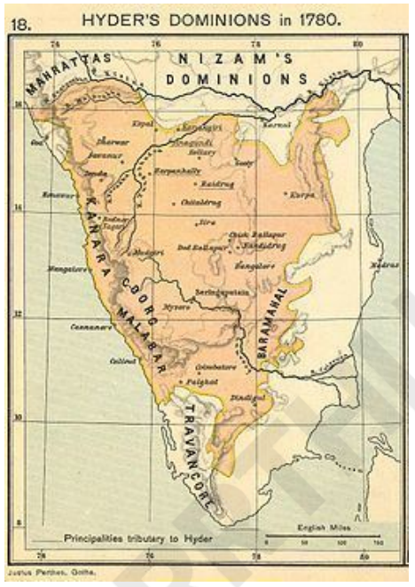
- Political History of Mysore
- Mysore was located south of Hyderabad at the junction of eastern and western Ghats.
- Originally a viceroyalty under the Vijayanagar Empire in the 16th century.
- With the decline of the Vijayanagara Empire, they declared themselves as Independent and were only a nominal part of the Mughal Empire.
- In the early 18th century, Wadiyar/Wodeyar King Chikka Krishnaraja ruled Mysore.
- Two of his ministers, Nanjaraja (Prime Minister) and Devaraja (Commander in Chief) seized power and reduced the king to a mere puppet.
- The mid 18th century saw the emergence of Mysore as the second most significant power in south India, afer Hyderabad.
- The foundation of Mysore power were laid by Hyder Ali, which was later consolidated by his able son, Tipu Sultan
- Hyder Ali
-
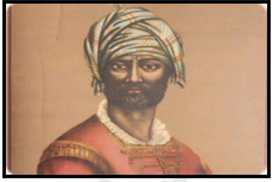
- Rise to Power
- He began his career as a petty officer in the Mysore Army.
- Though Uneducated, he was a man of great energy and intellect.
- He gradually rose in the Mysore Army to be a brilliant commander.
- In 1761, Hyder overthrew Nanjaraja and established authority over Mysore.
- He established his control over rebellious poligars (Zamindars) and conquered Bindur, Malabar etc.
- Military and Expansionist Ambitions
- He was an expansionist at heart and naturally clashed with other regional powers - Maratha, Nizam and the English.
- Faced Maratha raids in 1764, 1766, and again in 1771 as the Marathas recovered fast under Peshwa Madhav Rao.
- He also inflicted a heavy defeat on the English near Madras in 1769.
- His most remarkable achievement was his vision to modernise his army along the European lines and this way he had the best standing army among the regional powers of India.
- He inducted French Experts and established a modern Arsenal at Dindigul.
- Formed the first Indian controlled corps of sepoys armed with firelocks, bayonets, and backed by artillery served by Europeans
- Hyder died during the course of the second Anglo Mysore War (1782) and was succeeded by his son, Tipu Sultan.
- Tipu Sultan
-
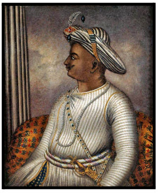
- Assertion of Autonomy
- Afer assuming the throne, he strongly asserted his autonomy.
- In 1787, he assumed the title of Padshah, issued coins in his own name with any reference to the Mughal Emperor.
- He even issued a new Calendar.
- He also sought a Sanad (Royal order) from the Ottoman Khalif to legitimize his rule.
- Being a realist, he recognised Mughal authority when it suited him and defied it when it did not.
- Administration and Welfare
- For the General Public - he took great care for the welfare and happiness of his people.
- More than any other 18th century Indian ruler, Tipu thoroughly recognised the threat that the English posed to South India and thus raised an efficient military force, employed French officers to train his troops and even raised a French corps, Made efforts to build modern Navy in 1796.
- Economically - He was very sound and understood the importance of modern trade and Industry.
- Hence promoted both Inland and Foreign Trade but imposed tight government regulations and control over it.
- Set up a number of Factories in Mysore Territory such as those of sugar, silk fabrics etc.
- Sent Emissaries to France, Turkey, Iran, Myanmar etc.
- Tried to set up trading companies on the European Lines - which did not fructify,
- Pioneered iron cased rocket technology,
- Worked for modernisation of Agriculture and introduced sericulture in Mysore.
- Under his Administration, He acted like a despotic one - Himself being the civil. Political and military authority of the State.
- There was no office of Wazir in his office but there were separate departments each under a different officer such as Military department, Finance department etc.
- Personal Interests and Legacy
- He was an avid learner and had a library with books on different subjects.
- Tipu showed keen interest in the French Revolution and is believed to have planted the ʻTree of Libertyʼ at Seringapatam, became a member of the Jacobian Club and allowed himself to be addressed as Citizen Tipu.
- His famous Line - “Better to live a day as a lion than a lifetime as a Sheep”.
- He ruled Mysore till his death at the hands of the British in 1799 - where he died defending his capital during the course of Fourth Anglo Mysore War.
- British Expansion in South India
- Threats to British Interests
- Hyder and Tipuʼs dominance over the rich trade of Malabar Coast was seen as the threat to the English Companyʼs Trade in pepper and cardamom.
- In 1785, Tipu declared an embargo (an official ban or restriction on trade, commerce, or communication with a particular country or entity) on export of pepper and cardamom through the ports within his kingdom.
- In 1788, he clearly forbade dealings with English traders.
- Thus Mysore was also seen as a threat to English control over Madras.
- Moreover, The French Alliance with Mysore was seen as a threat to English dominance.
- The British home government was in need of finances for growing expenditure in Napoleonic wars, and so it encouraged an aggressive expansionist policy of the Companyʼs merchants.
- Anglo Mysore Wars (1767 - 1799)
-
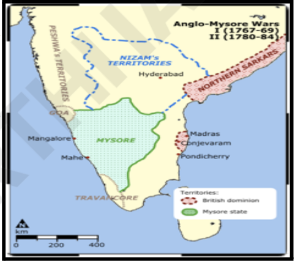
- Overview
- The rise of Mysore under Hyder Ali was viewed as a threat by the neighbouring states - the Marathas - The Nawabs of Carnatic and The Nizam of Hyderabad.
- The Marathas and the Nizam formed an alliance against Mysore and also co-operated with the English Company to curb Mysore.
- But the Nizam was equally apprehensive of the Marathas and therefore cooperated with the English company against the Marathas also.
- First Anglo Mysore War (1767 - 1769)
- Hyder Aliʼs friendship with French alongside the Mysore border dispute with Nawab of Carnatic is considered as one of the main reasons for this war.
- The immediate context of war was provided by the rivalry over control of Northern Circars.
- This part was under the Nizam of Hyderabad and The English Company was seeking an overland connection between its territories in Madras and Bengal, and the Northern Circars was a series of coastal territories that lay in between.
- The Nizam of Hyderabad initially rejected the British demand, however later signed a treaty with the Company in view of his poor financial condition.
- As per this treaty, the Company got the Northern Circars and in return promised to give military support to the Nizam in his endeavours against Hyder Ali.
- At the same time, Nizam had formed an alliance with the Marathas as both felt threatened by the expansionist attitude of Hyder Ali.
- Hyder himself was annoyed with the English as they had set up a fortified outpost at Vellore.
- In this way, The Marathas, The Nizam and the English entered into a tripartite treaty against Hyder Ali and attacked Mysore in 1766.
- Hyder successfully persuaded the Nizam and the Marathas to join hands with him against the English.
- He then launched an offensive attack against the Company and reached upto the gates of Madras, He forced the Madras Council to sign peace on his terms in 1769, known as the Treaty of Madras.
- As per the treaty, both the powers agreed to help each other in case of an attack by a third party.
- Second Anglo Mysore War (1780 - 1784)
- The British had no intention of abiding by the Madras treaty.
- When the Marathas invaded Hyderʼs territory in 1771, the English Company did not come to his help.
- So this feeling of being betrayed laid the foundation of the Second Mysore War, On the other hand the French proved more helpful to Hyder with his military demands.
- Further, The American War of Independence had broken out in 1775 and the French help to American colonists made Governor General Warren Hastings extremely anxious of Hyderʼs reaction with the French.
- Under these circumstances, The Company attempted to capture Mahe (A French settlement on the Malabar Coast within Hyderʼs Jurisdiction), which was a direct challenge to Hyder Ali.
- The English had also offended Hyder Ali when an English force trespassed on Hyderʼs territory in order to take over Guntur in Northern Circars.
- The English capture of Mahe provided the immediate context for the second Mysore War, The English won over the Marathas and the Nizam (Bribery).
- In July 1781, The English Army under Sir Eyre Coote defeated Hyder Ali at Porto-Novo.
- Skirmishes continued for the time being.
- But later Hyder Ali died of cancer in December 1782 during the course of the second Mysore War.
- Tipu, son and successor continued the war.
- However in 1783, The American War of Independence ended, and the French sailed back to Europe leaving Tipu to fight his own battles.
- The Madras Government also desired peace due to lack of resources and uncertainty of the Maratha attitude.
- Tipu also needed time to strengthen his own administration.
- Thus the war ended with the Treaty of Mangalore (March 1784) signed on the basis of mutual restitution of each otherʼs territories.
- This was the last British treaty with an Indian ruler on an equal footing.
- Third Anglo Mysore War (1790 - 1792)
-
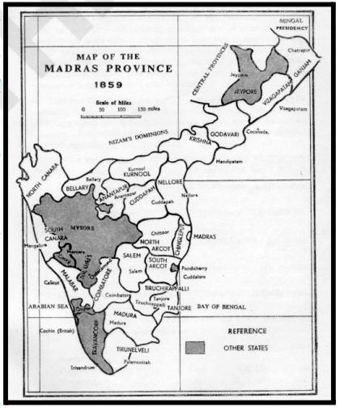
- The above treaty was only a temporary respite before a final showdown.
- Lord Cornwallis had become the Governor General in 1786 and through his diplomacy he brought the Marathas and The Nizam to the English side.
- Convinced of the inevitability of the war, Tipu also sought help from the Turks and the French by sending embassies to Constantinople and France during 1784-1787.
- However, Tipuʼs attack on Travancore became the immediate cause of the Third-Mysore War as the English were already itching for a war and decided to side with the ruler of Travancore.
- The War started in 1790, supported by the Marathas and the Nizamʼs troops, Cornwallis himself headed a large army and approached Seringapatanam.
- Tipu suffered a serious setback and showed initiative for peace.
- Thus, the Treaty of Srirangapatnam was signed in 1792 under which -
- Tipu had to surrender half of his territory to the Company and his allies.
- While the Company acquired Baramahal, Dindigul and Malabar
- The Marathas gained territory on the Tungabhadra side.
- Nizam acquired territories form the Krishna to beyond the Pennar.
- Tipu also had to pay war indemnity with Rs. 3 crore, but as he was unable to pay this sum indemnity, his two sons were kept as prisoners with Cornwallis.
- Afer Cornwallis, Sir John Shore became the Governor General but he adopted the Policy of non-intervention towards Mysore.
- For this reason, John Shore is known as the Father of policy of non-intervention.
- Fourth Anglo Mysore War (1799)
- Lord Wellesly sailed for India in 1797, this was a period when English were struggling against the French all over the world.
- Napoleon Bonaparte had captured Egypt and Syria and he now turned towards India.
- In 1801, he made an alliance with Czar Paul of Russia and drew up a serious plan to invade India via Herat and Kandahar.
- The English realised that the consequences of a defeat at the hands of Napoleon would mean an end to its commerce that had brought immense financial and political gains.
- In Napoleonʼs plan, Tipu Sultan of Mysore saw the right opportunity to oust the English from India.
- He entered into negotiations with the French and started making elaborate preparations for war with the Company.
- He planted a ʻFlag of Libertyʼ at Srirangapatna, styled himself ʻCitizen Tipuʼ.
- He employed the French Commandant Monsieur Raymond and raised a corps of 14000 men with his help.
- Wellesly alarmed by this, Tried to convert as many as Indian states into the subsidiary allies of the Company, either by persuasion or by force.
- War began in February 1799 and was over by May, The English Company won a decisive victory at the Battle of Serinagapatnam.
- Tipu was killed while defending the city before French help could reach him.
- He died a heroes death defending the capital.
- The Company, The Nizam and The Marathas annexed much of the remaining Mysorean territory.
- The remaining core around Mysore and Serinagapatnam, was restored to the minor Indian prince, two year old Krishnaraj belonging to the Wadiyar Dynasty, whose forefathers had been the actual rulers before Hyder Ali became the defacto ruler.
- A special Treaty of Subsidiary Alliance was imposed on the Wadiyar King and Mysore virtually became a dependance of the British.
- Tipuʼs family was imprisoned in Vellore and his two sons pensioned.
- Afer the success , Wellesley arrogantly pronounced “Now the Kingdom of the East is under our feet”
- Rise of British Supremacy (4) - Anglo Maratha Wars (1777 - 1818)
- Overview
- From the ashes of the Mughal Empire had emerged the Marathas and the English East India Company.
- Both had emerged victorious in their own spheres - The Marathas among other Indian states, The English among other European contenders in India.
- But now, Towards the last quarter of the 18th century, the two came face to face and indulged in direct clash and conflict.
- The 1st, 2nd and 3rd Anglo Maratha Wars were fought between the army of the English East India Company, which afer the 1757 was de facto ruler of Bengal, and the Maratha Empire, in the Deccan.
- Maratha Empire comprised of five major chiefs
- The Peshwas of Poona
- Bhonsle of Nagpur
- Scindia at Gwalior
- Holkar at Indore
- Gaekwad at Baroda.
- Peshwa was the nominal head of this Maratha confederacy and there existed bitter mutual rivalry among all of them, Particularly Scindia and Holkar.
- Their strength had already been weakened by their defeat in the Third battle of Panipat (1761), in which the Marathas were defeated by the Ahmed Shah Abdali.
- The wars started in 1777 and ended with British victory in 1818.
- This lef the British in control, directly or indirectly via treaties of Princely states, of a vast proportion of India, making India the jewel in the crown of the British Empire.
- First Anglo-Maratha War (1775 - 1782)
- Background
- It was a result of the excessive ambition of the English, accentuated by the internal strife of the Marathas.
- The Bombay Government under the British had its longing eyes upon the Maratha territories, particularly the ports of Salsette and Bassein and hoped to gain political influence at the Poona Court.
- The dispute over succession to the Peshwaship afer the death of fourth Peshwa Madhav Rao gave the English the much needed opportunity to intervene in the Maratha affairs.
- Story - Afer Madhav Rao's death in 1772, his brother Narayan Rao succeeded him as the fifh Peshwa.
- However, Narayan Raoʼs uncle Raghunath Rao got him assassinated and named himself as the next Peshwa, although he was not a legal heir.
- Narayan Raoʼs widow Gangabai then gave birth to a son afer her Husbands death (Swaii) and he was legally the next Peshwa.
- Then happened the Barbhai conspiracy under Nana Phadnavis which removed Raghunath Rao from the seat.
- Treaty of Surat
- Thus out of frustration, Raghunath Rao went over to the British and tried to capture power with their help.
- This was the immediate background of the Anglo-Maratha War.
- The war began with the Treaty of Surat and ended with the Treaty of Salbai.
- In Raghunath Rao, the Bombay government saw a plaint tool and hoped to set up in Maharashtra the type of Dual Government as Clive had done in Bengal.
- This treaty was signed between Raghunath Rao and the British Government at Bombay on 7 March 1775.
- As per the treaty it was decided that the British would help Raghunath Rao in becoming the Peshwa by sending 2500 soldiers.
- In return, Raghoba would cede territories of Salsette and Bassein and revenues from Surat and Bharauch to the British.
- Treaty of Surat and Battle of Adas
- In accordance with the Treaty of Surat, A British Army reached Surat led by Colonel Keating.
- On 18 May 1775, at Adas (Battle of Adas) there took place a terrible battle between the English and the Maratha Armies.
- In this battle, though the Marathas were defeated, however they retained control over Poona.
- The Reversal with Treaty of Purandar
- When a copy of Treaty of Surat reached the superior British Government in Bengal, it condemned the treaty as unjust and unauthorised.
- Further, Warren Hastings sent Colonel Upton to Poona Darbar and signed the Treaty of Purandar.
- Thus the Treaty of Purandar was signed between the British Government at Calcutta and Poona Court and it stated the following.
- The Treaty of Surat was annulled.
- The British lef the side of Raghunath and it was decided that Raghunath will be given a monthly pension of Rs 25,000 by Peshwa Government and he will reside in Gujarat.
- Plot Twist - Treaty of Purandar Not Implemented
- However, The Treaty of Purandar was not implemented due to a sudden turn of events.
- The American War of Independence had erupted.
- In 1775 and 1778, France joined on the American side against England.
- At the same time, A French adventurer, Chevailer de St. Lubin, reached Poona.
- This greatly alarmed Warren Hastings, who immediately scrapped the Treaty of Purandar, sent a large force to reinforce Bombay Government and sanctioned operations against the Marathas.
- Movie Begins - First Anglo-Maratha War
- Thus the Bombay Government resumed the war and sent an army towards Poona under Colonel Egerton (Later replaced by Colonel Cockburn).
- The English and Maratha forces met on the outskirts of Poona.
- The Maratha Army was led by the brilliant General Mahadji Schinde.
- He lured the English Army into valleys of the Western Ghats near Talegaon (Battle of Talegaon) and trapped them from all side.
- The Marathas also used the ʻScorched Earth Policyʼ, burning farmlands and poisoning wells.
- Treaty of Wadgaon
- The English were forced to retreat to villages named Wadgaon.
- Finally by mid January 1779, The English surrendered and the Bombay Government was forced to sign a humiliating treaty with Poona Darbar called as Treaty of Wadgaon.
- A per this treaty, it was decided that Bombay Government would return all territory conquered by it afer 1773 and the Scindias would get a part of revenue from Bharuch.
- Humiliation Too Much for Hastings
- Hastings refused to accept this humiliating treaty of Wadgaon.
- He quickly sent an army from Bengal which soon captured Ahmedabad and Vasai.
- But the British Army got defeated by Marathas in poona.
- But meanwhile Gwalior was captured by British and eventually Scndia was seated in the Battle of Sipri.
- Finally the Treaty of Salbai was signed between the British and the Poona Government.
- Treaty of Salbai
- This treaty between the British and The Poona Government was signed with the mediation by the Mahdji Scindia.
- The treaty was signed on the basis of mutual restitution of each otherʼs territories or ʻstatus quo ante bellumʼ.
- The main provision of this territory were -
- Madhav Narayan Rao will be accepted as Peshwa.
- British will give up the cause of Raghunath Rao and he be given an yearly pension of Rs 3.5 Lakhs.
- The Company gave up Bassein and other territories captured since the Treaty of Purandar , but retained Salsette and The Elephanta Island.
- Scinida got back the entire territory on the west of Yamuna.
- Treaty of Salbai - First War Ends in Draw
- In this way, the British attempt to gain supremacy in the Marahta state proved premature.
- The First Anglo Maratha war was drawn.
- Both sides had a taste of each otherʼs strength which ensured mutual respect and peace for the next 20 years.
- It also gave British the required time to concentrate on other fronts especially Mysore.
- Second Anglo-Maratha War (1803 - 1805)
- Prelude to War
- Lord Wellesly came to India in 1798 and aggressively followed his policy his subsidiary alliance.
- The Marathas earlier refused all offers to accept subsidiary alliance, however their internal differences ultimately drove them into Wellesleyʼs trap.
- Story -
- Due to internal ongoing politics among the Marathasm Peshwa Baji Rao II murdered the brother of Jaswant Rao Holkar.
- It led to Holkar forces defeating Sindhia and the Peshwa and installing an adopted brother on the throne of Pune.
- The Peshwa of Poona sought assistance from Wellesley, resulting in Wellesley singing a treaty on December 31, 1802 known as the Treaty of Bassein.
- This treaty, essentially a subsidiary alliance with the Peshwa, would ultimately mark the downfall of the Maratha Empire.l)
- Imp Point - Subsidiary Alliance - Hyderabad (1798), Mysore (1799), Tanjore (1799), Awadh (1801), Peshwa (1802), Scindia (1803), Gaekwad (1803)
- Treaty of Bassein (Subsidiary Alliance, 31 December 1802)
- This treaty of ʻperpetual and general allianceʼ was signed between Peshwa Bajirao II and the English Company.
- It was a treaty of the Subsidiary Alliance.
- The main provisions of this treaty were -
- Peshwa accepted the Companyʼs protection and had to pay a large annual subsidy.
- Peshwa accepted that an English army and Resident will be stationed at Poona and no European enemy of the English will be kept in the Maratha Army.
- Peshwa accepted that his foreign relations with other states will go under under British control.
- Also -
- To surrender the city of Surat
- To give up all claims of Chauth on the Nizamʼs dominion
- In this way, The Peshwa lost his independent authority and eventually the other Maratha chiefs were reduced to a similar position of subordination to the Company.
- Company received a native infantry regiment permanently stationed at Poona.
- City of Surat was surrounded by the British along with other territories.
- Peshwa gave up all the claims on Chauth on the Nizamʼs dominion.\
- Peshwa also agreed not to sign any future negotiations with any other power without the consent of East India Company.
- This treaty, sometimes described as granting the English - “Key to India”
- According to Sir Thomas Munro, as a result of the Second Anglo Maratha War, the British became the “complete masters of India and nothing can shake our power, if we take proper measure to confirm it”
- This affected the patriotic feeling of other Maratha chiefs and provoked the Second Anglo - Maratha War that began the breakup of Maratha confederacy.
- Daulat Rau Sindhia and Raghuji Bhonsle immediately formed an alliance against the English.
- They tried to include Yashwant Rao Holkar but could not success.
- Gaekwad remained neutral.
- In this way, even in times of national danger, the Maratha chiefs did not unite.
- Course of the War
- The English decided to attack all Maratha Regions.
- The War was fought in 2 main centres - in Deccan under Arthur Wellesley and in north India under General Lake.
- The Maratha Forces due to disunity had to face bitter losses on both sides.
- It is noteworthy that now the control of Delhi passed from the Marathas into British hands and once again the blind Mughal ruler, Shah Alam II, became a pensioner of the Company (He had first became a pensioner of the Company afer his defeat in the Battle of Buxar in 1764).
- In this way, Scindia and Bhonsle faced total defeat within five months and had to sign two separate treaties with the English Company.
- Alarmed by the defeat of Bhonsle and Scinida, This Time Holkars made an attempt to form a coalition of Indian rulers to fight against the British, but all his attempts proved to be unsuccessful, thus the Marathas were defeated, reduced to British vassalage and isolated from one another.
- Defeat of Bhonsle led to - Treaty of Deogaon
- Defeat of Scindia led to - Treaty of Surji-Anjangaon
- Defeat of Holkar - Led to Treaty of Rajpurghat
- Third Anglo Maratha War (1817 - 1819)
- Background
- The third and final phase of the Anglo-Maratha war started with the arrival of British Governor Lord Hastings.
- He tried to establish the supremacy of English East India Company in India and resumed the threads of aggressive policy abandoned in 1805 with the recall of Wellesley.
- The breathing space that the Marathas had got since 1805 was not utilised by consolidating their power but wasted in mutual conflicts.
- Hastingsʼ main objective now was to destroy the independence of the three Maratha rulers - The Bhonsle, The Scindia and the Holkar.
- Course of the War
- Peshwa Baji Rao II who had earlier signed the Treaty of Bassein with time, began to feel strangulated and began to show signs of Independence.
- Also the Treaty of Bassein, described as a Treaty with the Cipher, wounded the feelings of other Maratha Leaders, and they saw this treaty as absolute surrender of Independence.
- Immediate Cause - Lord Hastingsʼ actions against the Pindaris were seen as a transgression of the sovereignty of the Marathas, there served to once again unite the Maratha confederacy.
- A repentant Bajirao II made a last bid in 1817 by rallying together the Maratha Chiefs against the English in the course of the Third Anglo Maratha War.
- But Marathas were now too weak to win against British
- Different Battles were fought at different end by the British and the various powers of Marathas, however they all were defeated and forced to sign isolated treaties all together (Peshwa was defeated at Khirki, Bhonsle at Sitabuldi and Holkar at Mahidpur)
- June 1817 - Treaty of Poona with Peshwa
- November 1817 - Treaty of Gwalior with Scinida
- January 1818 - Treat of Mandsaur with Holkar
- Aftermath of Anglo Maratha War
- In this way, The entire Maratha force was routed by superior military power of EIC.
- Peshwa was forced to breakup the Maratha confederacy
- Hastings decided to get rid of both - Peshwa and the Peshwaship.
- Hence the Peshwa was dethroned, pensioned off and ordered to spend last days of his life in Bithoor near Kanpur.
- His kingdom was brought under British Control and the enlarged Presidency of Bomday was brought into existence.
- To satisfy the Maratha pride, a small kingdom of Satara was carved out of Peshwaʼs kingdom and given to Partap Singh, a direct descendant of Shivaji.
- Thus by 1818, The entire Indian subcontinent except Sindh and Punjab had been brought under British Control, directly or indirectly.
- Why Marathas Lost?
- Inept Leadership
- Maratha leaders like Baji Rao II lacked the strategic vision and unity of earlier figures like Shivaji, often prioritizing personal gain over collective resistance, weakening their response to British aggression.
- Defective Nature of Maratha State
- The Maratha Confederacy's decentralized structure, with autonomous chiefs like Scindia and Holkar, fostered rivalry rather than cooperation, undermining a unified front against the British.
- Loose Political Setup
- The lack of a strong central authority after the Third Battle of Panipat left the Marathas politically fragmented, making it easier for the British to exploit divisions through diplomacy and treaties.
- Inferior Military System
- Despite early adoption of European tactics, the Marathas failed to modernize consistently, relying on outdated cavalry against the British's disciplined infantry and artillery.
- Unstable Economic Policy
- Frequent internal conflicts and reliance on plunder rather than a stable revenue system drained Maratha resources, leaving them financially unable to sustain prolonged wars against the well-funded EIC.
- Superior English Diplomacy and Espionage
- The British, under leaders like Wellesley and Hastings, masterfully used treaties like Bassein and espionage to turn Maratha factions against each other, securing allies like the Nizam and isolating opponents.
- Progressive English Outlook
- The British leveraged industrial advancements and organizational efficiency, contrasting with the Marathas' traditional feudal approach, giving them an edge in logistics, communication, and sustained warfare.
- War Years Summary
-
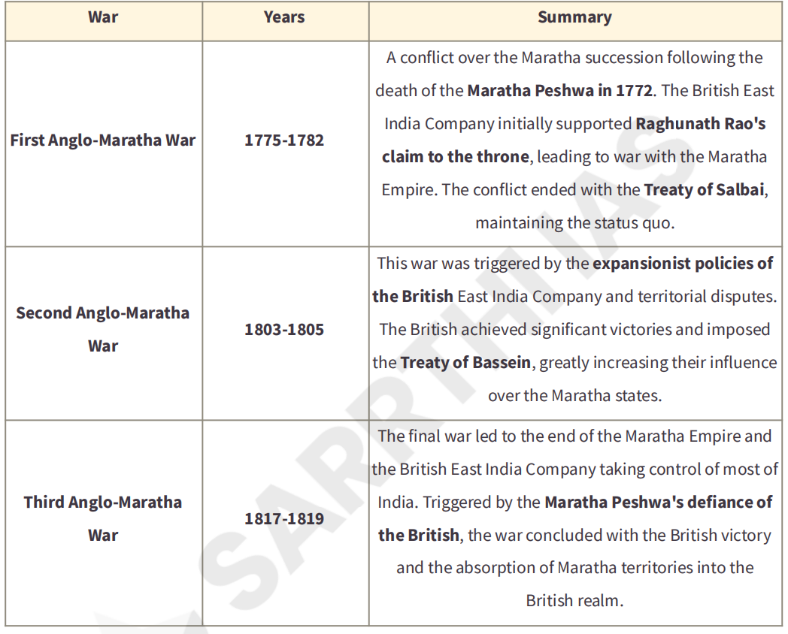
- Rise of British Supremacy (5) - Annexation of Punjab, Sindh and Awadh
- Conquest of Sindh (1843)
- Background
- In the 18th century, Sindh was ruled by Kallora chiefs, in 1758, an English Factory was built at Thatta, owing to a royal order given by the chief.
- This advantage was taken by the English up to 1775 when a not-too-friendly ruler, Sarfaraz Khan, made the English close their factory.
- In 1780's, Sindh was captured by Talpuras, a Baloch Tribe, led by Mir Fateh Ali Khan.
- After his death, it came to be shared by his 4 brothers, Known as 'Char Yar' who called themselves the Amirs of Sind.
- Context of Anglo-French Rivalry
- After 1807, The Anglo French rivalry shifted to North West.
- After the French defeat in naval conflict, Napoleon planned to invade India via land route.
- Alarmed by this, various diplomatic missions were sent to the frontier states and likewise Selton mission was sent to Sindh by Lord Minto, with the help of these diplomatic missions, friendly treaties were concluded with the respective governments to counter French Challenge.
- Thus, in 1809, The Treaty of Eternal Friendship was signed with the Amirs, who promised not to allow the French to settle in Sindh.
- In 1820, the treaty was renewed further to exclude Americans also from Sindh.
- But soon the commercial and navigational value of the Indus began to attract the attention of the Company's authorities, therefore a new treaty was signed in 1832 between the Sindh and the English (Lord Bentick) according to which -
- Amirs allowed a free passage to English travellers and merchants thorough Sindh and also allowed the use of Indus for commercial pursuits.
- No English merchant would settle down in Sindh, and passports would be needed for travellers.
- During the Great Game, Sindh was seen from a larger perspective of defence for Indian from the Russian threat.
- Therefore, Sindh was a necessary prelude to annexation of Afghanistan.
- Thus Sindh was conquered to counter Russia.
- Soon Ranjit Singh captured Rojhan, a town on the Sindh frontier giving the Company a chance to offer protection to the Amirs.
- The Amirs had neither desired nor asked for foreign help, yet they were forced to sign a Subsidiary Treaty in 1839 and accept a British Resident at Hyderabad.
- Therefore the Amirs had virtually passed under British protection.
- Context of Afghan War
- During the Afghan War, Amirs found themselves saddled with the responsibility of helping the British forces, Parts of their territory were taken up for this and also they had to donate large amounts of money in order to maintain the troops which in reality they did not want.
- In 1842, when Ellenborough succeeded Auckland, he was eager to find a pretext for the annexation of Sindh and in doing so, regain the English prestige which had suffered during the first Afghan War.
- In September 1842, Chalres Napier was appointed as British Resident in Sindh.
- He charged the Amirs for hostility and disaffection towards the British Government and therefore Sindh was annexed.
- After all this he said - 'We have no right to seize Sindh, but we shall do so and a very advantageous, useful, humane, piece of rascality it will be'.
- Sindh was finally annexed in 1843 after a brief campaign (Battle of Miani and Dabo) led by Sir Charles Napier.
- Napier called the Sindh war as 'The tail of the Afghan Storm'.
- Napier meant that the war in Sindh was a continuation or aftereffect of Britain's involvement in Afghanistan.
- In 1847, Sindh was made part of British India's Bombay Presidency.
- Please note - British annexation of Sindh in the 19th century was also intricately linked to the control of opium trade.
- Side note
- There were three Anglo-Afghan Wars
- 1st Anglo-Afghan War (1839-1842)
Cause: British feared Russian influence in Afghanistan and wanted to install a pro-British ruler.
Key Event: British installed Shah Shuja as ruler, but faced strong resistance.
Outcome: British forces suffered a disastrous retreat from Kabul in 1842, with almost the entire army being massacred.
Result: British defeat and withdrawal from Afghanistan.
- 2nd Anglo-Afghan War (1878-1880)
Cause: British again feared Russian influence in Kabul after Sher Ali welcomed a Russian envoy but rejected a British envoy.
Key Event: British invaded Afghanistan and captured Kabul.
Outcome: Treaty of Gandamak (1879), making Afghanistan a British protectorate in foreign affairs.
Result: British victory, but internal instability continued.
- 3rd Anglo-Afghan War (1919)
Cause: After World War I, Afghanistan sought to reclaim its independence from British control.
Key Event: Afghan forces under Amanullah Khan attacked British India.
Outcome: Treaty of Rawalpindi (1919), granting Afghanistan full independence in foreign affairs.
Result: Afghan victory—Afghanistan regained control over its foreign policy.
- Conquest of Punjab (Anglo Sikh Wars)
- Background - Punjab under Ranjit Singh
- In 1799, Ranjit Singh was recognised as the Governor of Lahore by Zaman Shah, the ruler of Afghanistan.
- In 1801, He proclaimed himself as the Maharaja of Punjab and by 1805, Ranjit Singh had acquired Jammu and Amritsar, making him the ruler of Punjab.
- Due to the Russian French Threat, Metcalfe was sent to Punjab to conclude a favourable treaty with Ranjit Singh which was done on the condition that English would remain neutral in case of Sikh Afghan War and would consider Ranjit Singh the sovereign of the entire Punjab.
- However the negotiations failed, but with time he agreed to sign the Treaty of Amritsar (April 25,1809) with the Company.
- Sutlej as the boundary line for his dominions.
- In 1838, Ranjit Singh was coerced into singing the Tripartiate Treaty with the English and Shah Shuja in oder to invade Afghanistan and install Shah Shuja as the ruler.
- However, Ranjit Singh declined to allow British Troops.
- Punjab after Ranjit Singh
- Maharaja Ranjit Singh died in June 1839, His death was followed by political instability. (Sukerchakia Misl)
- He left behind a military state which was guarded by 40,000 soldiers and the strength of this army increased three fold within 5 years of his death which proved to be a great burden on the shrinking resources of the state.
- When the soldiers could not be paid properly, they went out of control and interfered in politics.
- Alongside, death of his successors one after the another proved to be another big issue which deteriorated the affairs of the state, and the incompetent heirs were unable to check the forces of disorder.
- In 1843, Dalip Singh, a minor son of Maharaja, was proclaimed king under the guardianship of Rani Jindan.
- English had long been casting their eyes over the waters and the rich fertile lands of Punjab and waited for the right opportunity to interfere and moreover only the Punjab was the only dominion left in the entire India subcontinent which was outside their domination.
- In 1843, Major Broadfoot was appointed as Company's political agent in Punjab.
- He stressed on the disorder in Punjab and recounted every tale of corrupt behaviour at the court.
- In 1844, Lord Ellenborough was succeeded by Lord Hardinge as Governor-General, he undertook various rigorous measures to strengthen the Company's military position.
- The Company took a hypocritical stand and contended that the preparation were only defensive in nature and calculated to meet a possible attack from the Sikhs so that they could shift the responsibility of war on the shoulders of the Sikhs.
- Rani Jindan dreaded the absolute power of the Khalsa army and found her only hope of security in urging it on to challenge British supremacy.
- In 1845, Lal Singh, a lover of Rani Jindan, had won over the army on his side and became the wazir and made Teja Singh the new commander of the Sikh forces.
- To the Sikhs, The British moves appeared more as an act of aggression rather than defence.
- Therefore the Sikh troops led by Lal Singh, crossed the Satluj and took offensive actin against the English troops commanded by Sir Hugh Gough.
- On 13 December, Hardinge, waiting for the opportunity, made his declaration of war.
- First Anglo Sikh War (1845-46)
- Five successive battles were fought between the British and the Sikh Army.
- These were the battles of Mudki, Ferozshah, Baddowal and Aliwal and Sabroan
- The fifth and the most decisive battle - Battle of Sobraon was fought on 10 February.
- Due to treachery by Lal Singh and Teja Singh, ,who gave critical information to the British, the battle resulted in defeat of Sikhs, after which the British occupied Lahore and forced the Sikhs to sign the Treaty of Lahore which meant -
- Maharaja gave up all these territories south of River Satluj.
- To pay Rs. 1 crore war indemnity, and upon its failure in order to compensate British sold Kashmir to Gulab Singh for Rs 75 Lakhs.
- Minor Dalip Singh was accepted as king with Queen Jindan as guardian and Lal Singh was Wazir.
- Sir Henry Lawrence became the British Resident at Lahore.
- Sikhs disliked Kashmir begin sold to Gulab Singh and once again revolted under the leadership of Lal Singh, the revolt was suppressed by the British and once again Treaty of Bharioval was signed which included -
- Rani Jindan's guardianship was cancelled and she was pensioned off.
- A Council of 8 Sikh Chiefs under the Chairmanship of British Resident was appointed for governance work.
- It was decided that a permanent British Army will be placed at Lahore until Dalip Singh became a major.
- Second Anglo Sikh War (1848 - 1849)
- After the Treaty of Bhairowal, The British Resident became the virtual ruler of Punjab with unlimited civil and military powers.
- When Rani Jindan showed her resentment towards such usurpation of powers, her jewellery was seized and she was sent to Sheikhpura.
- Her pension was also arbitrarily reduced.
- The New Governor General Dalhousie soon got his opportunity for annexation when 2 British officers, Vans Angew and Lt. Anderson were murdered and other Sikh chiefs joined hands together in order to refer against the British.
- Thus Dalhousie declared war and three battles were fought
- Battle of Ramnagar - Indecisive
- Battle of Chillianwala - Indecisive
- Battle of Gujarat - Sikh Army was defeated due to treachery by its officials - Battle of Guns.
- Conquest of Punjab
- After the collapse of the Sikh army, Dalhousie advocated for annexation, stating,
- “There never can be now any guarantee for the tranquility of India until we shall have effected the entire subjugation of the Sikh People and destroyed its power as an Independent Nation.”
- On 29 March 1849, Punjab was formally annexed (forcible or legal incorporation of one territory into another) by the British.
- Maharaja Dalip Singh was pensioned off and sent to England.
- The Kohinoor Diamond was taken from Dalip Singh and surrendered to the British Crown.
- For administration, Punjab was initially governed by a three-member board.
- In 1853, the board was abolished, and Punjab was placed under a Chief Commissioner.
- John Lawrence became the first Chief Commissioner of Punjab.
- Annexation of Awadh
- Early Confrontation
- The state of Awadh came into direct confrontation with the British during the Battle of Buxar in 1764 when Shuja-ud-Daula (Nawab of Awadh) joined the opposing forces.
- Awadh then lay at the mercy of the British, but Clive decided not to annex it.
- At that time, Awadh was restored to the Nawab after signing the Treaty of Allahabad (1765).
- The Treaty of 1801 (Subsidiary Alliance)
- When Governor-General Lord Wellesley came to India, he forced the new Nawab, Saadat Ali Khan, to sign a new treaty in the year 1801.
- As per this treaty, the Nawab had to cede half of his territory.
- He was also required to act as per the advice of the Council of British officers.
- This treaty of 1801 laid the foundation for the annexation of Awadh, as British interference in its administration led to rampant corruption and misgovernance, with the blame placed entirely on Saadat Ali Khan.
- Final Annexation
- By the mid-19th century, British opinion strongly favored the annexation of Awadh.
- The British imperialists believed that only Britain had the capacity for good governance.
- However, Dalhousie's primary interest lay in Awadh's economic potential as a market for Manchester goods.
- Accordingly, in 1848, when Lord Dalhousie became Governor-General, he skillfully planned the annexation of Awadh.
- He appointed Colonel Sleeman as Resident in Lucknow, who actively sought evidence of misgovernance in Awadh.
- Finally, in 1856, Awadh was annexed by Lord Dalhousie on the pretext of maladministration, based on Outram's report (who succeeded Sleeman).
- The Nawab, Wajid Ali Shah, was placed under house arrest in Calcutta.
- This incident particularly angered the sepoys of the British Army, as many of them were from Awadh.
- The new land revenue system introduced after the annexation further intensified the people's discontent, leading to nearly three-fourths of the adult population of Awadh, including landholders, peasants, and sepoys, participating in the Revolt of 1857.
- British Expansion Beyond Borders
- Anglo Nepal War
-
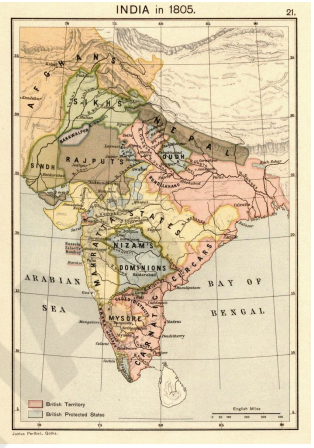
- Overview
- The British wanted protection from the Chinese in the North, therefore they looked at Nepal as a stable buffer state between India and Tibet or China.
- However, the Gorkhas also wanted to expand their territories in the south (As they were unable to do it in the Chinese territory of the North), so in May 1814, they attacked three police stations at Butwal, then under the EICʼs authority.
- Governor General Hasting took it as a challenge to Companyʼs authority and decided to launch an offensive campaign against them.
- This led to the Nepal War in October 1814, finally the Nepalis were defeated and forced to sign the Treaty of Sugauli (March 1816).
- Nepal accepted a British Resident.
- it means Nepal agreed to allow a British official (Resident) to be stationed in its capital, Kathmandu, to act as a diplomatic representative of the British East India Company.
- Nepal ceded (to give up control of land, rights, or power, usually through a treaty, war, or agreement) the territories of Garhwal, Kumaon and abandoned claims to Terai region.
- Nepal also withdrew from Sikkim
- The British gained the districts of Garhwal and Kumaon and a resident was placed at Kathmandu and even they allowed no diplomatic mission, other than that of Britain into Nepal , but in return they treated the Nepalese ruler as sovereign.
- British Expansion beyond Borders - Burma
-
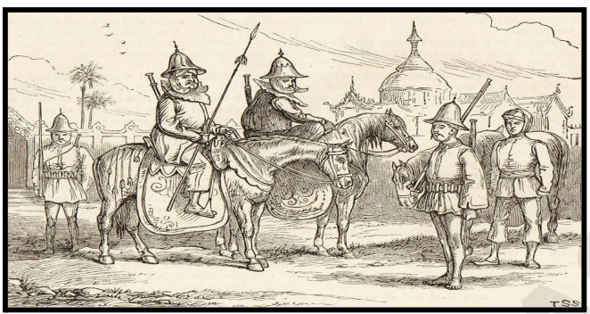
-
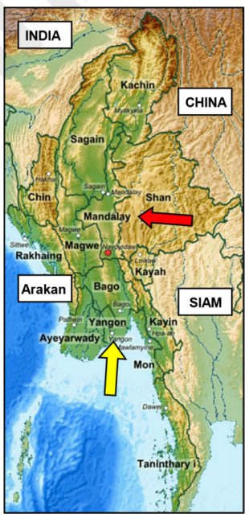
- First Anglo Burmese War (1824 - 1826)
- Immediate Cause
- In 1823-24, The Burmese Military, in its pursuit for rebels, entered and occupied Assam and Manipur and prepared to attack Chittagong.
- These territories were, however, claimed by the English in India.
- The British Indian Army attacked Burma in retaliation, which came to be known as the First Anglo Burmese War.
- Course and Outcome
- In 1824, The British Indian army attacked Burma.
- The Burmese forces led by Maha Bandula were easily defeated and the King was forced to sign a peace treaty, Treaty of Yandabo.
- As per the Treaty, The English regained control over Assam, Manipur and occupied Arakan and Tenasserim region, Thus the King lost most of his coast.
- The King was forced to accept a British resident at his capital and pay war indemnity
- Second Anglo Burmese War (1852)
- Background
- In 1839, an English resident claimed that the Burmese Officials did not treat him well and lef.
- Meanwhile, Burma emerged as a major supplier of timber and other costly items like tin, pepper and ivory.
- The delta of Irrawaddy river also emerged as a major supplier of rice to Bengal and to the growing settlements in south-east Asia.
- These developments tempted the British to look for an opportunity to annex Burma.
- Immediate Context
- Two British captains were heavily fined by Burmese Government on certain charges brought against them.
- Following the incident, the British merchants sent a petition to then Governor General Lord Dalhousie, providing the desired opportunity.
- Thus in 1852, Dalhousie decided to attack Burma on the pretext of restoring the dignity of the English.
- Finally the Burmese were defeated, territories annexed gaining the entire coast of Bay of Bengal and the Burmese King was forced to shif his capital to Mandalay.
- Third Anglo Burmese War (1885)
- It took place in 1885 when the English attacked Burma on the pretext that the King was intriguing with the French in Vietnam to weaken English control over Asia.
- The war ended in English victory and annexation of Upper Burma, thus Burma was turned into a province of British India (1937 onwards, Burma was governed as a separate colony)
- British Expansion beyond Borders - Afghanistan
-
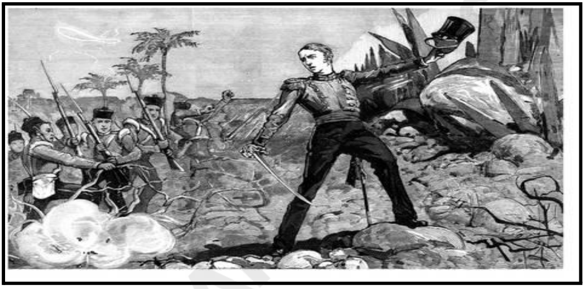
- Afghanistan - The Russian Threat
- The 19th century was a period of diplomatic competition between the British and Russian empires for spheres of influence in Asia known as ʻthe Great Gameʼ to the British and the ʻTournament of Shadowsʼ to the Russians.
- Thus, any Russian advance in Central Asia was always assumed in London to be directed towards the conquest of India.
- In 1832, British had expanded its franchise which was condemned by Emperor Nicolas I of Russia.
- This set the stage for ʻcold war between autocratic Russia and democratic Britainʼ.
- In 1837, British fearing the instability of Afghanistan, The Sindh and the increasing power of the Sikh Kingdom in the northwest, raised the spectre of a possible Russian invasion of British India through Afghanistan, the only entrance to India from Central Asia.
- Afghanistan - British Reaction to Russian Threat
- Forward Policy - One reaction was to secure commanding influence in Afghanistan, either by Annexation or by creating it as a buffer stage. (View held by conservatives)
- Policy of Masterly Inactivity (Also known as ʻStationary Schoolʼ) - Another reaction was to reach a diplomatic understanding with Russia and follow as policy of non-intervention as far as Afghanistan was concerned. (View held by Liberals).
- First Anglo Afghan War (1838 - 1842)
- British Reaction to Russian Threat
- In 1830s, The British became over anxious to protect Afghanistan leading the the First Anglo Afghan War which proved to be a great disaster for the British.
- A direct consequence of this was the annexation of Sindh (1843) and Punjab (1849) and made the British Indiaʼs frontier directly co-terminus with that of Afghanistan.
- The concern for imperial defence and search for a scientific border in the north-west brought the English in contact with the Afghans.
- Afghanistan was considered as a buffer state against the Napoleonic France and Czarist Russia.
- It was felt that Afghanistan should be under the control of a friendly prince.
- Initially, the Relations with Dost Mohammad (Amir of Afghanistan) was good but with time he began showing signs of friendship with Russia.
- The concern for imperial defence and search for a scientific border in the north-west brought the English in contact with the Afghans.
- Afghanistan was considered as a buffer state against the Napoleonic France and Czarist Russia.
- It was felt that Afghanistan should be under the control of a friendly prince.
- Initially, the Relations with Dost Mohammad (Amir of Afghanistan) was good but with time he began showing signs of friendship with Russia.
- In September 1837, British sent a commercial mission to Afghanistan (Burnes Mission), but in reality it was to judge the political situation there.
- During the rounds of negotiation which could not lead to any fruitful result, Dost Mohammad received the Russian ambassador and with much warmth.
- Afer the failure of this Burns Mission, Governor General Auckland decided to follow a ʻForward Policyʼ, he planned to depose Dost Muhammad and entrust the country in the hands of some Friendly prince.
- Course of the War
- Tripartite Treaty - Between English, Shah Shuja (Ex-ruler of Afghanistan) and Ranjit Singh - combined forces of the three parties, known as ʻArmy of the Indusʼ launched an attack on Kabul.
- The combined forces won but there were glitches in this plan as Shah Shuja (New Amir of Afghanistan) was unacceptable to the people of Afghanistan and his position could be maintained only with the help of British Army.
- Thus a small garrison was placed at Kabul under the command of General Elphinstone, but the English continued to face retaliation.
- Thereafer, numerous battles were fought and in the end - disastrous retreat began from Kabul in 1842.
- Elphinstone along with his garrison were annihilated in the snow covered passes and Shah Shuja was murdered.
- Aucklandʼs grandiose plan had exploded like ballon and he was soon replaced by Lord Ellenborough, He ordered the retreat of forces and securing the release of prisoners and subsequently Dost Mohammad was re-established his authority in Kabul.
- Second Anglo Afghan War (1878 - 1880)
- The Second Afghan war (1878 -1880) occurred at the time of Governor-General Lytton and ended with the Treaty of Gandamak.
- As per this treaty, the Amir Yakub Khan Agreed to station a permanent British Resident at Kabul and conduct his foreign policy on advise of the Government of India.
- Thus, Afghanistan was created as a buffer state between the British Indian and Russian Empire.
- Reasons for Expansion beyond Indian Frontiers
- Shifting Financial Base of the East India Company (From Trade to Land Revenue)
- As trade profits declined due to European competition and monopolies eroded, the EIC increasingly relied on land revenue from conquered territories to sustain its operations and fund further expansion.
- Need for New Markets and Supplies
- The Industrial Revolution in Britain demanded raw materials like cotton, timber, and opium, and new markets for manufactured goods, driving the EIC to secure regions like Burma and Awadh.
- Need to Safeguard Indian Empire
- The perceived threats from Russia, France, and local powers like the Gorkhas necessitated buffer states—Nepal, Afghanistan, Burma—to protect British India's frontiers and trade routes.
- Tibet & History with British
- Treaty of Lhasa (1904) - with Tibet
- Tibet would respect the frontier to Sikkim
- Tibet would not grant any concessions to any foreign power, but would give some control over the foreign affairs of Tibet.
- Thus reducing Tibet to the status of a protectorate of the British.
- Afer the Chinese Revolution of 1911, the British accepted Chinaʼs suzerainty over eastern Tibet, and the western zone was declared autonomous.
- It was decided to draw a boundary line between Tibet and British India known as the Manmohan Line
- Other Important Points
- Duran Line - British India and Afghanistan
- Established in 1893 by Sir Mortimer Durand, this line demarcated the border between British India and Afghanistan, aimed at securing a scientific frontier against Russian influence, though it remains contested to this day.
- Treaty of Punakha (1910) - recognising the Bhutanese ruler as sovereign in all matters expect foreign relations, which were placed under British control.
- Revolt of 1857
- Political Causes
- Discontent among Ruling Chiefs and Royal Families
- Broken pledges and oaths resulted in loss of political prestige for some.
- Policies such as 'Subsidiary Alliance' and 'Doctrine of Lapse' caused alarm and suspicion in the minds of others.
- Doctrine of lapse
- The Doctrine of Lapse was formally introduced in 1848 by Lord Dalhousie, who was the Governor-General of India from 1848 to 1856.
- However, the policy had been informally applied even before Dalhousie's tenure, but he aggressively implemented it to annex several princely states that had no direct male heirs.
- Key Features of the Doctrine of Lapse:
- Applied mainly to Hindu states where adoption was a customary way to continue dynastic rule.
- Justified under the pretext of ensuring "good governance" but primarily used for British expansion.
- Several states were annexed under this policy, including:
- Satara (1848)
- Sambalpur (1850)
- Jhansi (1853)
- Nagpur (1854)
- Subsidiary alliance
- The Subsidiary Alliance was a diplomatic and military strategy introduced by Lord Wellesley in 1798 to expand British influence in India.
- Key Features of the Subsidiary Alliance:
- British troops in Indian states:
- The Indian ruler had to accept a British contingent within their territory for protection.
- Ban on foreign alliances:
- The ruler could not form alliances with any other foreign power or Indian state without British approval.
- No employment of Europeans:
- The state was prohibited from employing any European officials without British consent.
- British Resident:
- A British Resident (official representative) was stationed in the state to oversee administration.
- Financial burden:
- The Indian ruler had to pay for the maintenance of British troops. If they failed, part of their territory would be annexed.
- States that Accepted the Alliance:
- Hyderabad (1798) : First state to sign.
- Mysore (1799) : After Tipu Sultan's defeat.
- Awadh (1801) : Forced to cede half of its territory.
- Peshwa (1802) : Signed under pressure after defeat by Holkars.
- Collapse of Rulers (Erstwhile Aristocracy)
- Adversely affected sections of Indian society dependent on cultural and religious pursuits for sustenance (Basic Necessities for Survival).
- Alien Rule of the British
- Practice of 'Absentee Sovereignty' embittered (feeling resentful, angry, or full of bitterness due to past experiences, unfair treatment, or disappointments) Indians against the British.
- Absentee Sovereignty refers to a situation where a ruler or sovereign exercises control over a territory without being physically present there.
- The governance is typically conducted through appointed officials or local representatives.
- Example in British India:
- The British exercised absentee sovereignty over India, meaning the British Crown ruled India while the actual governance was carried out by the East India Company (till 1858) and later by British officials under the British Raj (1858-1947).
- The decisions affecting India were made in London, while Indians had little to no direct representation in their own governance.
- Anti-British feelings particularly strong in regions like Burma, Assam, Coorg, Sind, and Punjab, unjustly annexed to the British Empire.
- Abolition of Regal Titles
- Mughal Emperor Bahadur Shah II had grown old and weak.
- Lord Dalhousie recognized succession of Mughal Prince Faqir-Ud-Din but imposed strict conditions, opposing an imperium in imperio (a Latin phrase meaning "a state within a state.").
- In 1856, Faqir-Ud-Din died, and Lord Canning declared the next prince in succession would renounce (To formally give up, reject, or abandon something) the regal (Relating to a king or queen; majestic, royal, or dignified) title and ancestral Mughal palaces.
- British abolished regal titles of Nawabs of Carnatic and Tanjore.
- Economic Causes
- Exploitative Land Revenue Settlements Introduced by British
- Huge drain of wealth, destruction of industry, and increasing land revenue (Permanent, Ryotwari, and Mahalwari settlements) were common in the latter half of the eighteenth century.
- Summary Settlement of Awadh
- Proceeded to remove taluqdars wherever possible.
- Pre-British times: Taluqdars held 67% of villages in Awadh; post-Summary Settlement, reduced to 38%.
- Southern Awadh taluqdars hardest hit, some losing over half their villages.
- British land revenue officers aimed to settle land with actual owners, reducing peasant exploitation while increasing state revenue.
- East India Company used political power to fund British trade and commerce at the cost of Indians.
- New Plantation System (1833)
- Resulted in incalculable misery for Indian peasants.
- Permitted Englishmen to acquire land plantations in India.
- Hardest hit: Peasants on indigo plantations in Bengal and Bihar (Teen Kathiya System).
- Zamindars (traditional landed aristocracy) often lost land rights, leading to loss of status in villages.
- Dispossessed taluqdars seized opportunities during the sepoy revolt, especially in Awadh.
- Destruction of Indian Trade, Handicraft, and Industry
- High tariffs in Britain against Indian goods damaged Indian trade and manufacture.
- Encouraged import of British goods to India.
- Ruin of millions of artisans and craftsmen not accompanied by new industrial growth.
- Annexation of Indian states cut off major sources of patronage.
- Moneylenders and Traders as New Landlords
- Peasants, compelled by new revenue settlements, resorted to loans from moneylenders/traders at usurious rates.
- Moneylenders often evicted peasants for nonpayment of debts.
- Ruination of Indian industry increased pressure on agriculture and land.
- Social Causes
- Arrogant Attitude of the British and Racial Discrimination
- Racial overtones and superiority complex characterized British behavior.
- Indiscrimination and assaults on Indians by Englishmen became common.
- British Interference in Religion and Culture
- Activities of Christian missionaries raised alarm among Hindus and Muslims (Charter Act of 1813).
- Missionary-established educational institutions inculcated Western education and culture, replacing oriental learning.
- The Charter Act of 1813 was a significant legislation passed by the British Parliament that renewed the East India Company's charter but also introduced major changes in the governance of India.
- Key Provisions of the Charter Act of 1813
- End of Trade Monopoly (Except for Tea & China Trade)
- The Act abolished the East India Company's monopoly over Indian trade, except for tea and trade with China.
- This allowed private British merchants to trade freely with India.
- Company's Political Authority Continued
- Though the trade monopoly ended, the Company's political and administrative control over British India was renewed for another 20 years.
- Permission for Christian Missionaries
- For the first time, Christian missionaries were officially allowed to enter India for propagation of Christianity and establishing educational institutions.
- Financial Provision for Education
- A sum of ₹1 lakh was allocated annually for the promotion of education in India.
- This laid the foundation for British-sponsored education policies.
- Regulation of Indian Trade & Commercial Policies
- The British Crown asserted sovereignty over British India, making it clear that the Company ruled in trust for the British Government.
- Restrictions were placed on the activities of Indian merchants and artisans in certain trades.
- Power of Governors Extended
- The Governor-General and Governors of Presidencies were given more legislative powers to regulate and administer their territories.
- Significance of the Charter Act of 1813
- It marked the beginning of free trade in India under British rule.
- Led to increased missionary activities, influencing Indian society and culture.
- Laid the groundwork for British intervention in Indian education.
- Strengthened British control over the Indian subcontinent.
- Legislations
- Prohibition of female infanticide, sati, and slavery.
- Widow marriage legislation.
- Religious Disabilities Act (1850) modified Hindu customs (e.g., a change of religion did not debar (To exclude or prevent someone from doing something) inheritance from a heathen (A person who does not belong to a widely practiced religion) father).
- Military Causes
- Low Salary and Poor Prospects of Promotion
- Conditions of service in the Company's Army conflicted with sepoys' religious beliefs and prejudices.
- Vellore Mutiny (a rebellion or open resistance against authority, especially by soldiers or sailors against their commanding officers) (1806) was a precursor to 1857, reflecting such tensions.
- Indian sepoys unhappy with emoluments (salary, wages, or other benefits received as compensation for holding an office or employment) compared to British counterparts.
- No foreign service allowance (batta) when serving in Sindh or Punjab.
- Racial discrimination in promotion and privileges; sepoys felt subordinate.
- Sepoys as 'peasants in uniform,' consciousness tied to rural population.
- Post Office Act (1854) withdrew sepoys' free postage privilege.
- Rumours
- Reports of bone dust in flour rations close to 1857.
- The most infamous rumor was that the new Enfield rifle cartridges were greased with cow and pig fat.
- A rumor spread that the British planned to gradually replace Indian sepoys with European soldiers, leading to fear of mass unemployment among sepoys.
- Religious reasons
- Crossing seas meant loss of caste for religious Hindus.
- General Service Enlistment Act (1856) required Bengal Army recruits to serve anywhere needed, decreed (officially ordered or declared by an authority) by Lord Canning's Government.
- Restrictions on wearing caste/sectarian marks and rumors of chaplains' (Religious officials or priests, usually Christian) proselytizing (act of trying to convert someone to a different religion or belief) who were maintained at Company expense was seen as interference in religious affairs.
- Invincibility of British Rule Shattered
- British losses in Afghan Wars (1838-1842), Punjab Wars (1845-1849), and Crimea War (1854-1856) emboldened (given courage or confidence to act boldly or assertively) sepoys.
- Sepoys awaited a trigger (greased cartridge event) to express anger.
- Long history of revolts: Bengal (1764), Vellore (1806), Barrackpore (1825), Afghan Wars (1838-1842).
- Events Leading to the Revolt
- 19th Native Infantry at Berhampur
- The regiment refused to use the newly introduced Enfield rifles, as the cartridges were rumored to be greased with cow and pig fat, which hurt religious sentiments.
- The soldiers mutinied in February 1857, but the British quickly suppressed it.
- As punishment, the regiment was disbanded in March 1857.
- 34th Native Infantry
- On March 29, 1857, Mangal Pandey, a soldier of the 34th Native Infantry at Barrackpore, attacked a British officer in protest against the use of greased cartridges.
- He was captured, tried, and executed on April 6, 1857.
- The entire regiment was disbanded in May 1857 for failing to stop Pandey's actions.
- 7th Awadh Regiment
- On May 3, 1857, soldiers of the 7th Awadh Regiment refused to obey their British officers, showing signs of rebellion.
- The British took strict action, and the regiment was dissolved.
- 3rd Native Cavalry
- April 24, 1857: Ninety soldiers of the 3rd Native Cavalry at Meerut refused to use the greased cartridges, considering it a violation of their religious beliefs.
- May 9, 1857: Eighty-five of these soldiers were court-martialed, dismissed from service, sentenced to 10 years of imprisonment, and publicly shackled as punishment.
- May 10, 1857: The remaining soldiers revolted against the British.
- They freed their imprisoned comrades.
- Killed several British officers and unfurled the banner of rebellion.
- Marched to Delhi, marking the beginning of the larger uprising of 1857.
- The Great Revolt
- Began at Meerut (58 km from Delhi) on May 10, 1857; spread to Punjab (north), Narmada (south), Bihar (east), Rajputana (west).
- Delhi
- Local infantry joined, killed European officers (e.g., Simon Fraser), seized city.
- Bahadur Shah Zafar proclaimed emperor; traditional symbol of India's unity.
- Indian chiefs proclaimed loyalty to Mughal emperor.
- May 12: Rebelling sepoys overcame Lt. Willoughby, seized Delhi—a blow to British prestige.
- Bahadur Shah urged chiefs/rulers to form a confederacy against British.
- Spread of Revolt
- Bengal Army rose; Awadh, Rohilkhand, Doab, Bundelkhand, central India, Bihar, East Punjab shook off British authority.
- Civil population rebelled, especially in north-western provinces and Awadh.
- Widespread participation: Peasantry, artisans, shopkeepers, laborers, zamindars, mendicants, priests, civil servants gave it popular character.
- Peasants/petty zamindars attacked moneylenders/zamindars, destroyed debt records, targeted British law courts, revenue offices, police stations.
- Limited spread: North of Narmada largely undisturbed.
- Notable Hindu-Muslim unity during revolt.
- Storm Centres and Leaders of the Revolt
-
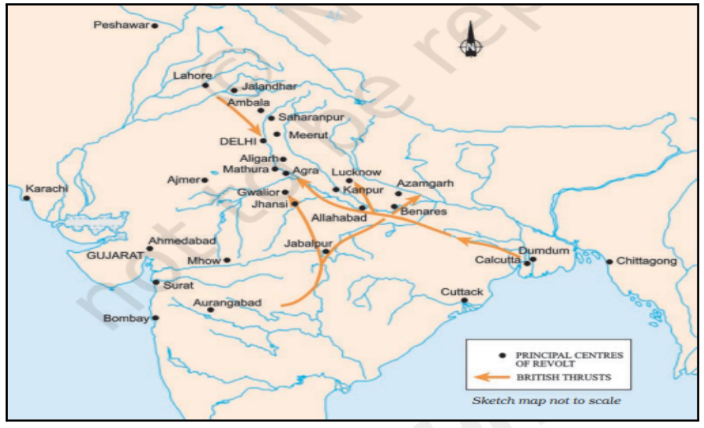
- Delhi:
- Bahadur Shah II was declared the symbolic leader of the revolt, though he had little real power.
- The actual command was held by General Bakht Khan, who led troops from Bareilly.
- Kanpur:
- Nana Saheb, the adopted son of Baji Rao II, led the rebellion in Kanpur.
- He expelled the British, declared himself Peshwa, and recognized Bahadur Shah II as the emperor.
- Tantya Tope played a key role in the military operations.
- Lucknow:
- Begum Hazrat Mahal led the revolt on June 4, 1857.
- She gained massive local support, especially from those loyal to the deposed Nawab of Awadh.
- Jhansi:
- The British had rejected the claim of Damodar Rao, the adopted son of Rani Lakshmibai and Gangadhar Rao, under the Doctrine of Lapse.
- Rani Lakshmibai took up arms against the British, emerging as one of the most prominent leaders of the revolt.
- Bareilly:
- Khan Bahadur Khan led the rebellion against the British in this region.
- Bihar:
- Kunwar Singh, a zamindar from Jagdishpur, joined the sepoys in Arrah.
- He had a deep resentment against the British, as he had lost his estates due to their policies.
- Faizabad:
- Maulvi Ahmadullah played a key role in the rebellion in Awadh.
- He led a strong resistance against the British and was acknowledged as a leader in May 1857.
- Singhbhum (Chotanagpur region):
- Gonoo, a tribal cultivator, led the Kol tribals in their uprising.
- Chaurasee Des:
- Shah Mal mobilized local cultivators and acted as an independent ruler.
- He established a justice system and an intelligence network.
- He was eventually killed in July 1857.
- Suppression of Revolt
- Fall of Delhi (September 20, 1857)
- British forces led by General John Nicholson captured Delhi after intense fighting.
- Bahadur Shah II taken prisoner; his sons publicly executed by William Hodson.
- Mughal rule effectively ended; Bahadur Shah exiled to Rangoon, died in 1862.
- Kanpur Campaign
- Nana Saheb expelled the British and declared himself Peshwa.
- British forces under Havelock and later Colin Campbell recaptured Kanpur.
- Nana Saheb fled to Nepal (1859); fate uncertain.
- Tantya Tope continued guerrilla warfare, captured April 1859, executed.
- Fall of Jhansi and Death of Rani Lakshmibai (June 1858)
- Jhansi besieged by Sir Hugh Rose; Rani Lakshmibai escaped to Kalpi.
- Joined Tantya Tope, fought at Gwalior; died in battle.
- Suppression in Bihar and Awadh
- Kunwar Singh led the rebellion in Bihar; wounded in battle, died April 1858.
- Begum Hazrat Mahal led resistance in Awadh; fled to Nepal after defeat.
- Maulvi Ahmadullah fought in Faizabad; killed in battle (1858).
- Other Centers of Revolt
- Bareilly: Khan Bahadur Khan led resistance; captured and executed.
- Chotanagpur: Gonoo led Kol tribal revolt; British suppressed rebellion.
- Chaurasee Des: Shah Mal led peasant resistance; killed in July 1857.
- Final Defeat and Reestablishment of British Rule
- By 1859, major leaders dead or in exile; British fully reestablished control.
- Harsh retribution: mass executions, village destruction, and land confiscations.
- Key British Officers
- Delhi and Lucknow: Sir Colin Campbell.
- Jhansi and Gwalior: Sir Hugh Rose.
- Banaras: Colonel James Neill.
- Reasons for Failure
- Limited Territorial Spread
- No all-India veneer; eastern, southern, western India largely unaffected.
- Certain classes/groups (e.g., Scindia of Gwalior) worked against revolt.
- Opposition by Big Zamindars
- Acted as "breakwaters to storm"; Awadh tehsildars backed off with land restitution promises.
- Moneylenders/merchants saw interests protected under British.
- Support by Educated Indians
- Viewed revolt as backward-looking, hoped British would modernize India.
- Most Indian rulers refused to join, often aided British.
- European Modern War Machinery
- Indian soldiers poorly equipped (swords, spears, few guns) vs. British with Enfield rifles.
- Electric telegraph kept British commanders informed.
- Poor Organization
- No coordination or central leadership.
- Leaders (Nana Saheb, Tantya Tope, Kunwar Singh, Laxmibai) outmatched by British generals.
- Rebels lacked clear understanding of colonial rule, forward-looking program, ideology, or societal alternative.
- Diverse elements with differing grievances and political concepts.
- Consequences
- End of Company Rule and Beginning of Crown Rule
- The British Crown assumed direct control over India; the East India Company was abolished.
- Announced by Lord Canning at the Allahabad Durbar through the Queen's Proclamation on November 1, 1858.
- Proclamation assured non-interference in religious practices, equal treatment under British law, and protection of princely states.
- Administrative Changes
- A new position, Secretary of State for India, created to oversee governance.
- Viceroy replaced the Governor-General as the highest authority in India.
- The British Indian Army reorganized to reduce reliance on Indian soldiers, increasing European troop ratio.
- Sepoy recruitment favored non-rebellious communities like Sikhs, Gurkhas, and Pathans.
- Strengthening of British Control
- Policy of divide and rule intensified; communal divisions were subtly encouraged.
- Indian princely states, previously under threat from the Doctrine of Lapse, were assured their sovereignty under British suzerainty (a situation where a powerful state (suzerain) controls the foreign affairs and overall authority of a weaker state while allowing it internal autonomy).
- Land and property of rebels were confiscated (forcibly taken away, usually by a government or authority, without compensation), weakening Indian elites and zamindars.
- Social and Economic Impact
- British policies became more conservative, avoiding social reforms that could trigger unrest.
- Heavy economic exploitation continued, draining India's wealth.
- Large-scale displacement due to land confiscations and repressive revenue policies led to worsening conditions for peasants.
- Impact on Indian Nationalism
- The brutal suppression and racial policies of the British fueled resentment (feeling of anger, bitterness, or deep dissatisfaction, often due to perceived injustice, unfair treatment, or oppression).
- The Revolt, despite its failure, inspired later nationalist movements, laying the groundwork for the Indian freedom struggle.
- Awareness grew among Indians about the need for unity against British rule.
- Military Reforms
- British increased European troop strength in India.
- Artillery was kept exclusively under British control.
- Indian regiments were divided to prevent large-scale mutinies in the future.
- Psychological Impact
- The British viewed Indians with increased suspicion and treated them as an inferior race.
- The revolt instilled both fear and realization among Indians, leading to the emergence of organized political movements in later decades.
- Post 1857 Scenario
- Aftermath of Revolt of 1857
- The Act for Better Government of India, 1858
- Passed August 2, 1858, before revolt fully suppressed.
- Exposed Company's administrative limitations.
- Provisions
- India governed by Crown via Secretary of State and 15-member council (advisory).
- Initiative/final decision with Secretary of State; dual system of Pitt's India Act ended.
- Governor-General became Viceroy (increased prestige, not authority).
- Formal assumption of power by Crown; end of Company administration.
- Queen's Proclamation, 1858
- Announced by Lord Canning at Allahabad durbar, November 1, 1858.
- Governor-General titled 'Viceroy'.
- Provisions
- End of annexations/expansion; respect for native princes' dignity/rights.
- Indian states to recognize British Crown's paramountcy.
- Freedom of religion without British interference.
- Equal/impartial protection under law, equal opportunities in government services, respect for old Indian rights/customs in law-making.
- Changes in the Army
- Thorough reorganization; “division and counterpoise” policy.
- Reduced Indian soldiers, increased European soldiers.
- Recruits from 'martial' (related to war, the military, or soldiers) races (Punjab, Nepal, NW frontier) loyal during revolt.
- Army separated from civilians.
- Indian artillery units (except mountain batteries) defunct (something that is no longer in existence, operation, or function); higher posts reserved for Europeans.
- Military Policy Changes
- European soldier ratio: Bengal (1:2), Bombay/Madras (1:3 or 2:5).
- Big positions/artillery reserved for Europeans.
- Awadh, Bihar, Central India soldiers deemed non-martial; Punjabis, Gorkhas, Pathans (loyalists) recruited heavily (half of army by 1875).
- Changes in Approach
- Reformist zeal faded; conservatives in Britain viewed Indians as beyond reform, ending reform era.
- Empire became more autocratic, denying educated Indians' power-sharing aspirations.
- Divide-and-rule policy intensified, using one class/community against another.
- Systematic economic exploitation began without fear.
- Government structure remodeled on 'master race' notion, widening ruler-ruled gulf.
- Other Changes
- Policy towards Upper Class (Princes and Landlords)
- Annexation policy abandoned.
- Princes/landlords rewarded and befriended.
- Britain as paramount power; Queen Victoria titled 'Empress of India' (1876).
- Hostility (unfriendly, aggressive, or opposed to something) towards Higher Education
- British became hostile, curtailed (reduced, limited, or cut short) education post-Indian National Congress (1885).
- Indian Civil Services Act of 1861
- Annual competitive exam in London for equality/transparency.
- Rules framed to keep civil services a British preserve.
- Change in Attitude towards Educated Indians
- Indian Councils Act of 1861
- Sir Bartle Frere's 1860 Minute pushed for Indian representation in Legislative Council due to ruler-ruled miscommunication.
- Marked start of active Indian representation.
- Indian Civil Services Act of 1861 (repeated for emphasis)
- Exam in London; rules preserved British dominance.
- The Azamgarh Proclamation of 1857
- Authored mostly by Firoz Shah (grandson of Bahadur Shah II).
- Highlights
- Detailed complaints of social groups against unfair colonial authority.
- Proclaimed Mughals' capacity to establish suzerainty over India.
- Advised rulers/chieftains to accept Delhi throne, defend people.
- Claimed both Hindus and Muslims ruined under English tyranny.
- Assured brighter future post-English defeat; urged acceptance of Badshahi Government.
- British Portrayal of the Revolt
- The Clemency of Canning
- Governor-General Canning's leniency to win sepoy loyalty mocked in British press.
- The British magazine Punch published a cartoon/illustration showing Canning as father figure over bloodied sepoy, titled 'The Clemency of Canning'.
- The phrase "Clemency of Canning" became a symbol of British hypocrisy—where brutal repression was expected, and any attempt at mercy was ridiculed.
- Ironically, while he was mocked in Britain, in India, his policies were still seen as oppressive, as he upheld British control while trying to pacify the population.
- Political Associations before 1885 & Formation of Indian National Congress
- Political Associations before the Indian National Congress
- Early Nineteenth Century Associations
- Dominated by wealthy and aristocratic elements.
- Local or regional in character.
- Demands through long petitions to British Parliament:
- Administrative reforms.
- Association of Indians with the administration.
- Spread of education.
- Second Half of Nineteenth Century Associations
- Increasingly dominated by educated middle class (lawyers, journalists, doctors, teachers, etc.).
- Wider perspective and larger agenda.
- Political Associations in Bengal
- Raja Ram Mohan Roy
- Morning Star of Reform Movement; first great leader of modern India.
- Pioneer of political movement in India.
- Well-read, influenced by Western ideas; first to focus Englishmen's attention on Indian grievances (complaints, injustices, or issues that cause dissatisfaction and resentment).
- Bangabhasha Prakasika Sabha (1836)
- Formed by associates of Raja Rammohan Roy.
- Aim: Discuss government policy, seek redressal through petitions and memorandums.
- Landholders Society/Zamindari Association (1838)
- Founded by Dwarka Nath Tagore, RadhaKanta Deb, and others.
- Purpose: Safeguard interests of Bengal, Bihar, and Orissa.
- Credited with launching organized political activity in India using constitutional methods for grievance redressal.
- Marked beginning of organized political activity and constitutional agitation.
- Bengal British India Society (1843)
- Objectives:
- Collection and dissemination of information on the actual condition of British India's people.
- Employ peaceful, lawful means to secure welfare, extend just rights, and advance interests of all classes.
- British Indian Association (1851)
- Merger of Landholders' Society and Bengal British India Society.
- Suggestions to British Parliament for Company Charter:
- Establishment of a separate, popular legislature.
- Separation of executive from judicial functions.
- Reduction in salaries of higher officers.
- Abolition of salt duty, abkari, and stamp duties.
- Charter Act of 1853 partially met demands by adding 6 legislative members to Governor General's Council.
- Continued functioning post-Indian National Congress formation.
- Branches established in Bombay (Bombay Association) and Madras (Madras Native Association) in 1852.
- Political Associations in Bombay
- Poona Sarvajanik Sabha (1870)
- Founded in 1867 by Mahadeo Govind Ranade and others.
- Objective: Serve as a bridge between government and people.
- Platform for voicing political concerns:
- Demanded Indian representation in Parliament.
- Protested Vernacular Press Act.
- Involved in settling agrarian disputes.
- Considered a precursor to Indian National Congress (also formed in Maharashtra).
- Bombay Presidency Association (1885)
- Started by Badruddin Tyabji, Pherozshah Mehta, and K.T. Telang.
- Championed Indian interests.
- Hosted first Indian National Congress meeting in Bombay, end of 1885.
- Political Associations in Madras
- Madras Native Association (1852)
- Branch of British Indian Association of Calcutta, founded by Gazulu Lakshminarasu Chetty.
- Madras Mahajan Sabha (1884)
- Founded by M. Viraraghavachari, B. Subramanya Aiyar, and P. Anandacharlu.
- Purpose: Coordinate activities of local associations.
- Political Associations in England
- East India Association (1866)
- Organized by Dadabhai Naoroji in London.
- Purpose: Discuss Indian issues, influence English public men to promote Indian welfare.
- Later established branches in prominent Indian cities.
- Other National Associations
- India League (1875)
- Started by Sisir Kumar Ghosh.
- Objective: Stimulate nationalism and encourage political education.
- Ghosh: Noted journalist, founder of Amrita Bazar Patrika (Bengali newspaper).
- Indian Association (1876)
- Most important pre-Congress organization.
- Also known as Indian National Association of Calcutta.
- Founded by Surendra Nath Banerjee and younger Bengal nationalists.
- Aims:
- Create strong public opinion on political questions.
- Unify Indians in a common political program.
- Demands:
- Simultaneous civil service exams in England and India.
- Indianization of higher administrative posts.
- Campaigned against repressive Arms Act and Vernacular Press Act.
- Arms Act (1878)
- This act disarmed Indians by prohibiting them from possessing firearms without a license.
- The law excluded Europeans and Anglo-Indians, which was seen as a racial discrimination tactic.
- The British justified it as a measure to prevent uprisings after the 1857 Revolt.
- It was heavily criticized by nationalists like Surendranath Banerjee, who saw it as an insult to Indians and a way to weaken their ability to resist British rule.
- Vernacular Press Act (1878)
- This act curbed the freedom of Indian-language newspapers, preventing them from criticizing British policies.
- Any newspaper publishing “seditious” material could be shut down without trial.
- The law mainly targeted Indian-owned vernacular newspapers, while English newspapers run by the British were exempt.
- Indian editors and journalists protested strongly, with newspapers like Amrita Bazar Patrika switching from Bengali to English overnight to evade the law.
- Sponsored all-India conference in Calcutta, December 28-30, 1883:
- Attended by over 100 delegates from across India.
- Annual subscription: Rs 5; showed signs of a broad-based nationalist movement.
- Became leading representative of Bengal's educated community and major force in Indian politics.
- Indian Civil Service Agitation:
- Response to Lytton reducing ICS exam age from 21 to 19 in 1876.
- Organized pan-India agitation.
- Formation of Indian National Congress
- The word "Congress" means an assembly or gathering of people to discuss issues and make collective decisions.
- It was commonly used for deliberative bodies and political organizations in various parts of the world, including the United States Congress and the Congress of Vienna (1815).
- Factors Promoting the Growth of Nationalism in India
- Political Unity
- Most regions united politically/administratively under British rule for the first time.
- Introduced uniform system of law and government.
- Development of Communication and Transport
- Railways, telegraphs, postal services, roads, and canals facilitated communication.
- Enabled organization of national movement on an all-India basis.
- English Language and Western Education
- English-educated Indians led the national movement, developed nationalism.
- Western education spread liberty, equality, freedom, and nationalism concepts.
- The Role of the Press
- English and vernacular press aroused national consciousness.
- Social and Religious Movements of the Nineteenth Century
- Leaders of Brahmo Samaj, Ramakrishna Mission, Arya Samaj, Theosophical Society fostered pride in the motherland.
- Economic Exploitation by the British
- Systematic ruin of Indian trade and native industries.
- Racial Discrimination
- Post-1857 Revolt bitterness and suspicion; Indians faced insults, humiliation, contemptuous treatment.
- Administration of Lytton
- Delhi Durbar during famine.
- Vernacular Press Act curbed press liberty.
- Arms Act prevented Indians from keeping arms.
- Measures created widespread discontent.
- The Ilbert Bill Controversy
- Presented under Lord Ripon to remove racial inequality between Indian and European judges.
- Opposed by British residents; bill modified.
- Rise of Middle-Class Intelligentsia
- Understood contradictions between Indian and colonial interests.
- Impact of Contemporary Movements in the World
- Influenced Indian nationalism.
- Indian National Conference
- Two sessions in 1883 and 1885 with representatives from major Indian towns.
- Main architects: Surendranath Banerjee and Ananda Mohan Bose (Indian Association).
- Role of Nationalist Art and Literature
- Neel Darpan (1860s, Dinbandhu Mitra): Bengali play reflecting indigo farmers' plight.
- Anand Math (Bankim Chandra Chatterjee): Contains 'Vande Mataram'.
- Bhartendu Harishchandra (father of modern Hindi): Urged Swadeshi in plays and poems.
- Role of Political Associations prior to INC
- Set stage for national body.
- A.O. Hume's Contribution
- Retired English civil servant; mobilized intellectuals.
- Organized first Indian National Congress session at Gokuldas Tejpal Sanskrit College, Bombay, December 1885.
- Governor-General: Lord Dufferin.
- Hume: General Secretary of Congress (1885-1906).
- Hume and Lord Ripon viewed educated middle class as legitimate, with aspirations to be met.
- Initial Plans and Changes
- Originally named 'Indian National Union'.
- First session planned for Poona; shifted to Bombay due to cholera outbreak.
- Phases of Congress
- First Phase (1885-1905): Moderate Phase; vision and activities dim and vague.
- Second Phase (1905-1918): Extremist Phase; Swaraj (Self-Government) as political goal.
- Third Phase (1919-1947): Mass Mobilization under Mahatma Gandhi; Purna Swaraj (Complete Independence) as goal.
- 1st Congress Session
- Attended by 72 delegates; presided by Womesh Chandra Bonnerjee (barrister, first Indian to contest British House of Commons election, lost).
- Bonnerjee's Speech:
- Declared Congress's faith in British sense of justice.
- Positioned Congress as loyal well-wisher of government.
- Demanded greater Indian representation in government and higher posts.
- Delegates: 39 lawyers out of 72.
- Proceedings conducted in strict parliamentary fashion; 9 resolutions adopted.
- Bipan Chandra's Observation:
- 'If Hume wanted to use the Congress as a safety valve, the early Congress leaders hoped to use him as a “lightening conductor”'.
- Safety Valve Theory (British Perspective)
- Proposed by British officials, particularly William Wedderburn and others.
- They believed that A.O. Hume (a retired British civil servant) helped create the INC to provide a controlled platform for expressing Indian grievances.
- The British feared that growing discontent among Indians, if left unchecked, could lead to another revolt like 1857.
- By allowing Indians to vent their frustrations in a moderate, loyalist manner, the British hoped to prevent a more radical rebellion.
- Lightning Conductor Theory (Indian Leaders' Perspective)
- Early nationalist leaders, including Dadabhai Naoroji, Surendranath Banerjee, and Gopal Krishna Gokhale, saw the INC as a means to channel Indian aspirations toward self-governance.
- Instead of being passive participants in a British-controlled political setup, they aimed to use the Congress as a "lightning conductor" to safely direct growing nationalist energy into constitutional agitation and political awareness.
- They hoped that Hume's involvement would provide protection from harsh British repression, as direct confrontation could lead to a crackdown.
- Controversies on Origin:
- Safety Valve Theory (Official Conspiracy Theory).
- Annual Meetings:
- Congress met every December in different parts of India post-1885.
- Women's Participation:
- 1890: Kadambini Ganguly (first woman graduate of Calcutta University) addressed session, symbolizing commitment to women's status in national life.
- Consolidation of British Empire in India
- Evolution of the East India Company (EIC)
- Transition from Trading to Political Power
- Initially established as a trading enterprise.
- Gradually expanded control over India through conquests.
- Evolved into a formidable political force.
- Shift from Commercial to Territorial Entity
- Transformed from primarily commercial to predominantly territorial in nature.
- Issues with Company Administration
- Misuse of Power
- Widespread abuse of authority by company officials.
- Led to growing concerns in Britain about governance in Indian territories.
- Financial Crisis
- Continuous wars and administrative mismanagement caused severe financial distress.
- Revenue Maximisation
- British Government sought to maximize revenue from EIC territories.
- British Parliament's Intervention
- Concerns about Company's administration pressured Parliament.
- Introduced constitutional laws to regulate and control Company operations.
- Let's Understand Company Structure - Important Learning from the Past
-
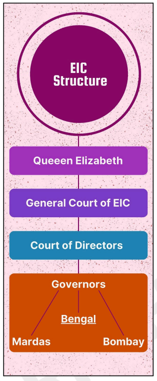
- Dual Government of Bengal
-
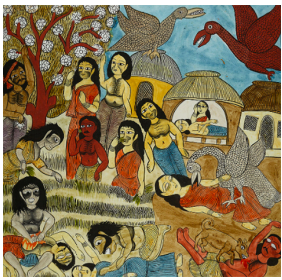
- Failed dual government in Bengal, coupled with abuse of power and corruption, prompted British Parliament to regulate EIC activities.
- Abolished by Warren Hastings in 1772.
- Additional Fact
- Bengal Famine of 1770 (Chhiattorer Monnontor)
- Estimated 10 million deaths.
- Causes of the Famine
- Natural Causes
- Failure of Monsoons (1768-1769):
- The famine was triggered by a severe drought in 1769, leading to crop failure.
- Scarcity of water affected agriculture, reducing rice and grain production drastically.
- Floods and Pestilence (1770):
- After the drought, Bengal experienced floods, destroying whatever little crops were left.
- Epidemics spread due to malnutrition and contaminated water.
- British Economic Policies
- Excessive Taxation by the East India Company:
- The Company did not lower land taxes despite widespread starvation.
- The revenue demand was fixed at 10% even during the famine, forcing farmers to sell what little food they had.
- Destruction of Local Economy:
- The British forced farmers to grow cash crops (indigo, opium, and jute) instead of food grains.
- This reduced food availability and made the population vulnerable to starvation.
- Profiteering by British Officials:
- The East India Company and British merchants hoarded grain and sold it at high prices instead of distributing it to the starving population.
- Exports Continued During the Famine:
- While millions starved, the Company continued exporting rice and wheat to England and other British territories.
- Consequences of the Famine
- Massive Population Decline
- Nearly 10 million deaths, reducing Bengal's population by one-third.
- Entire villages were wiped out, and the region became severely underpopulated.
- Collapse of Agriculture and Economy
- With fewer farmers left, agricultural production fell drastically for years.
- The famine weakened Bengal's economy, allowing the British to tighten their control over the region.
- Social and Political Impact
- Forced Migration: Survivors fled to neighboring regions, leaving Bengal devastated.
- Rise of Banditry: Many famine victims turned to crime, leading to lawlessness.
- Stronger British Rule: With the local economy and ruling class weakened, British dominance increased.
- Regulating Act of 1773
- Background
- Company had acquired political power and revenue-yielding territories, becoming an empire.
- British Parliament realized Company could no longer remain outside state control.
- Subjected Company to constitutional laws and Acts.
- Regulating Act of 1773 (Factors Leading to the Act)
- Dual Government of Bengal
- Led to rampant corruption and a fatal divorce of power from law and order.
- Abuses of private trade peaked (e.g., Clive returned to England at 34 with wealth yielding £40,000/year).
- Wealth attracted British Parliament's interest, suggesting Crown takeover.
- 1767 intervention demanded £400,000 annually from Bengal's plunder.
- Jealousy in Britain
- Company officials dubbed 'Nabobs' (corrupt Nawab analogy), symbolizing exploitation.
- Military Setbacks
- Defeat against Hyder Ali of Mysore in 1769.
- Financial Crisis in EIC
- Continuous wars and expansion pushed Company to bankruptcy by 1770.
- Committee formed; Lord North presented bill on May 18, 1773, becoming Regulating Act.
- Loan
- Separate Act granted Company £1,40,000 at 4% interest.
- Regulating Act of 1773 (Main Provisions)
- Main Aim
- Regulate Company activities in India and England.
- Control by British Government
- Allowed Company to retain territories but regulated its activities.
- Restructuring of Company
-
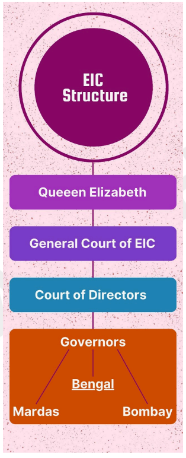
- Direct Parliamentary control over Court of Directors (CoD) for the first time.
- Raised qualifications for Court of Proprietors (CoP) and Court of Directors CoD (no re-election, no private trade).
- CoD required to report all civil, military, and revenue matters of Bengal to British Government.
- Provided liberal salaries, prohibited private trade, bribes, and money lending.
- In India
- Established empowered central authority to address lack of supreme authority.
- New Bengal Presidency to check corruption.
- Governor of Bengal designated 'Governor General of Bengal' with 4-member Executive Council.
- Decisions by majority, binding on GG (Governor-General); GG had ordinary and casting vote, no veto.
- Warren Hastings: First Governor General.
- Established Supreme Court of Justice at Calcutta.
- Composed of Chief Justice (Sir Elijah Impey) and three puisne judges.
- Regulating Act of 1773 (Limitations)
- Intentionally vague in provisions.
- Neither gave state definite control over Company nor Company definite control over servants.
- Broke down under its own defects when implemented.
- Amending Act (Act of Settlement 1781)
- Objective
- Resolve conflicts over Supreme Court jurisdiction left vague in 1773 Act.
- Key Provisions
- Jurisdiction Exemptions
- Governor-General (GG) and Council, plus Company servants, exempted from Supreme Court jurisdiction for official actions.
- Exclusion from Revenue Matters
- Supreme Court excluded from revenue matters or collection issues.
- Calcutta Jurisdiction
- Supreme Court authority over all Calcutta residents.
- Hindus and Muslims tried under respective personal laws.
- Regulatory Authority
- GG and Council empowered to establish rules for Provincial Courts and Councils.
- First effort to delineate (describe, outline, or portray something in detail) executive and judiciary functions in India.
- Pitt's India Act of 1784
- Background
- Introduced by William Pitt to address Regulating Act weaknesses.
- Aimed to bring Company administration under British Parliament's supreme control.
- Fox-North Coalition's similar bill defeated, causing ministry resignation (first British ministry wrecked on Indian issue).
- Pitt's India Act of 1784 (Main Provisions)
- Increased Control of British Government
- Areas controlled by Company officially termed “British Possessions in India.”
- Governance Structure
- Court of Directors managed commercial affairs.
- Board of Control (6 commissioners) appointed for political affairs.
- Introduced Double Government: Company ruled, Board controlled.
- Civil and military government subordinated to British Government until 1858.
- Anti-Corruption Measures
- Mandated EIC officials to declare assets; introduced stringent corruption penalties (framework lasted until 1858).
- Changes with Respect to Company's Governance in India
- Governor General and Council
- Council reduced to 3 members (including Commander-in-Chief).
- Madras and Bombay presidencies subordinated to Bengal; Calcutta became capital.
- GG and Council subordinated to British Government; war declaration required Directors' sanction.
- Non-Intervention Principle
- Introduced to end further wars and conquests in Indian princely states.
- Significance
- Increased British Control
- Board of Control shifted power from EIC to British Government.
- Ambiguity in Governance
- Confusion in power division between Board of Control and Court of Directors.
- Allegation of Favouritism and Anti-Corruption Measures
- Addressed through asset declarations and penalties.
- Act of 1786
- Background
- Pitt introduced bill to convince Cornwallis to accept Governor-Generalship.
- Cornwallis sought combined GG and Commander-in-Chief powers.
- Provisions
- Merged offices of GG and Commander-in-Chief in one person.
- Empowered GG to override Council majority on war and peace matters.
- Charter Act of 1793
- Background
- Concerns about:
- Power concentration in GG's hands.
- Need to regulate Company's financial and commercial activities.
- Codify laws for fairness and transparency in governance.
- Provisions
- Extension of Company's Charter
- Extended trade monopoly and political control for 20 years.
- Increased Power of Governor General
- GG could bypass Council decisions.
- Revenue Collection and Economic Reforms
- Company empowered to issue trade licenses to individuals and employees.
- Separated revenue collection and legal duties, ending Maal Adalats (revenue courts).
- Codification of Laws
- Laid foundation for governance by written laws (started in Bengal).
- Laws to be printed and translated into Indian languages for public familiarity with rights.
- Charter Act of 1813
- Background
- Britain's Industrial Revolution sought markets and raw materials.
- Public and parliamentary opposition to EIC trade monopoly demanded free trade and laissez-faire policies.
- Company's expanded territories made dual commercial-political role nearly impossible.
- Napoleonic Wars shifted British trade focus to India.
- Christian missionaries pushed for access against Company restrictions.
- Charter Act of 1813 (Main Provisions)
- Retention of Territories and Revenue
- Renewed Company's Charter for 20 years; allowed territory possession and revenue collection.
- Declared Crown sovereignty over Company territories.
- Ending Company's Monopoly
- Trade monopoly broken, except for tea, opium, and China trade.
- Expanded Jurisdiction of Indian Courts
- Granted greater jurisdiction over British and European subjects.
- Christian Missionaries Allowed
- Permitted missionaries to settle in India under license (facilitated Bishop appointment in Calcutta).
- Funding for Education
- Allocated Rs. 1 Lakh yearly for literature and sciences among Indian subjects.
- Civil Services Reforms
- Proposed open competition for civil service; Indians eligible but opposed and unimplemented.
- Charter Act of 1813 (Assessment of the Act)
- Economic Liberalisation
- Encouraged competition and growth by allowing Indian and European trade.
- Social and Religious Changes
- Facilitated Christianity spread and social reforms.
- Educational Advancement
- Funded Indian education, recognizing its importance.
- Charter Act of 1833
- Background
- Also known as Saint Helena Act (transferred Saint Helena island to Crown).
- EIC trade monopoly seen as harmful to British administration and Indians.
- Industrial Revolution drove demand for export markets.
- Whigs (Liberals) in power (1830); Macaulay and James Mill influenced Act.
- Charter Act of 1833 (Main Provisions)
- Legal British Colony
- India made a British colony; Government of India (GOI) established over all British territories.
- Removed restrictions on Europeans/British acquiring property in India.
- Office of GG - Executive Powers
- GG of Bengal became GG of India (William Bentinck, first GG); Council called Indian Council.
- Controlled civil, military, and revenue matters.
- Financial centralization under GG's Council.
- For the first time, Government officially termed Government of India.
- Office of GG - Legislative Powers
- GG in Council gained exclusive legislative powers:
- Repeal (to officially revoke, cancel, or annul a law, rule, or decision), alter (to change or modify something), or amend (to make changes or improvements to a law, document, or policy, often to correct errors or make it more suitable) laws for all persons in British India territory.
- Deprived Bombay/Madras Governors of legislative powers (restored in 1861).
- From now on, the rules made by company are called 'Acts' (earlier called regulations).
- Act provided for appointment of 4th Council member (no voting rights).
- His addition to the council was to help in making laws, thus his work was fully legislative. Macauly was the first one to be appointed.
- Court of Directors could veto GG's laws.
- GG's decision prevailed in Council disputes.
- Abolition of Commercial Privileges
- Ended Company's trade privileges; ordered to wind up commercial business.
- Role shifted from that of purely commercial body to purely administrative.
- Charter extended 20 years for non-trade functions (e.g., raising armies, ruling territories).
- Minister for Indian Affairs
- Replaced President of Board of Control.
- Formation of Law Commission
- Appointed in 1834 under Lord Macaulay to codify laws.
- Resulted in Indian Penal Code and Civil/Criminal Procedure Codes.
- Civil Service Reform
- First Act to allow Indian natives in administration.
- Court of Directors to nominate via competitive exams; 'fitness' as eligibility criterion.
- No discrimination based on religion, birth, descent, or color.
- System not effectively implemented soon after.
- Slavery Abolition
- GG directed to work towards abolition (achieved via Indian Slavery Act of 1843).
- New Presidency
- Proposed Agra and Fort William presidency from Bengal division (never implemented).
- Charter Act of 1833 (Significance)
- Culmination of centralization process begun with Regulating Act.
- Paved way for British India unification and strong central government.
- Transfer of powers from Madras/Bombay to GG restrained government's ability to resolve public matters.
-
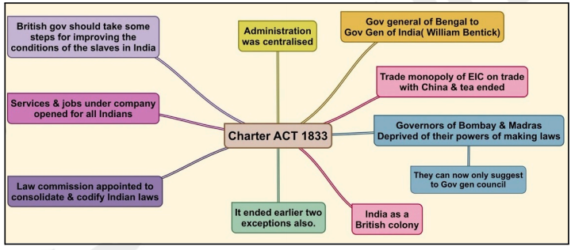
- Charter Act of 1853
- Background, Significant Challenges
- High costs and delays from Board of Control and Court of Directors raised EIC efficiency concerns.
- Politically informed Indians (e.g., Bombay Association, Madras Native Association) demanded decentralization and greater governance participation.
- Charter Act of 1853 (Main Provisions)
- Indian Territories
- Held 'in trust for the Crown' until Parliament directed otherwise.
- Company ceased as commercial agency, remained political agent for Crown.
- Legislative Provisions
- Separated GG Council's legislative and executive functions.
- Added 6 legislative councillors, forming Indian Legislative Council (ICS):
- Chief Justice and puisne judge of Calcutta Supreme Court.
- Four representatives (Bengal, Madras, Bombay, NW Provinces; civil servants with 10+ years).
- Powers of Legislative Councillors:
- Ask questions, discuss Executive Council policy, highlight government lapses.
- Bills referred to Select Committees; business conducted publicly.
- GG assent required for laws; GG could veto bills.
- Executive Provisions
- Law member became full member of GG Executive Council (strength back to 4).
- Directors and Their Powers
- Reduced from 24 to 18 (6 Crown-appointed).
- Divested of patronage; appointments opened to competitive exams (Macaulay Committee).
- Empowered to:
- Constitute new Presidency.
- Alter state boundaries.
- Incorporate newly acquired states.
- Created Lt. Governorship of Punjab (1859) due to administrative difficulties.
- Governor of Bengal
- Separate post created.
- Open Competition System
- Established for civil servant selection; opened covenant civil service to Indians.
- Assessment of the Act
- Marked beginning of Parliamentary system in India:
- Verbal discussions in legislative capacity (previously written).
- Bills passed through stages, referred to select committees.
- Legislative business conducted publicly; proceedings officially published.
- Indian National Movement (1885 - 1905) - Early Nationalism
- Events Leading to Formation of INC
- By 1885, need for a pan-Indian political organization evident, recognized by nationalists since 1870s through various initiatives:
- Laws Causing Discontent
- Vernacular Press Act (1878) and Arms Act (1878) met with widespread opposition.
- Ilbert Bill Controversy
- The bill aimed to allow Indian judges and magistrates to try British and European offenders in criminal cases.
- However, this faced massive backlash from the British community in India, leading to racial tensions and ultimately, a compromise that diluted the bill's original intent.
- British women were at the forefront, spreading fear that "uneducated Indian judges" could misuse power against British women.
- European businesses, clubs, and officials opposed the idea of being tried by "native" judges.
- The British government diluted the bill to pacify the European community.
- The final version (passed in 1884) allowed Indian judges to try Europeans, but only if a jury consisting of at least half Europeans was present.
- Early Political Groupings
- Indian National Association established by Surendranath Banerjee in Kolkata.
- Theosophical Society Meeting (1884)
- Annual meet in Madras; delegates from across India recognized need for a mediator to unite regional leaders.
- Chose A.O. Hume as mediator due to his wide acceptance and liberal views.
- Formation of Indian National Union (May 1885)
- Hume secured Viceroy's approval to create “Indian National Union.”
- Affiliated with government; platform to voice Indian public opinion.
- Led to inception (beginning or starting point of something) of Indian National Congress (INC).
- The Indian National Congress
- First Session
- Held at Gokuldas Tejpal Sanskrit College, Bombay, December 25-31, 1885.
- Governor-General: Lord Dufferin.
- Hume: General Secretary (1885-1906).
- Originally named 'Indian National Union'; planned for Poona but shifted to Bombay due to cholera outbreak.
- Views of Hume and Lord Ripon
- Educated middle class in India was permanent; its legitimate aspirations should be met, grievances addressed.
- Controversies Surrounding Inception of Indian National Congress
- Safety Valve Theory
- A safety valve is a device in a steam engine that releases excess pressure to prevent an explosion.
- Proposed by Lala Lajpat Rai and nationalist historians.
- Suggests British, fearing another 1857-like revolt, allowed educated Indians to express grievances in a controlled manner.
- A.O. Hume, a retired British officer, played a key role in founding INC, raising suspicions of British influence.
- Hume as a ‘Lightning Conductor'
- A lightning conductor (or lightning rod) is a device used to safely direct lightning to the ground, preventing damage to buildings.
- Early leaders like Dadabhai Naoroji saw Hume as a shield against British repression.
- Believed Hume's role gave INC legitimacy and prevented direct British crackdowns.
- Role of Elite Indians and Limited Representation
- Initially dominated by Western-educated elites, lawyers, and professionals.
- Limited participation from peasants, workers, and the masses.
- Criticized for being a bourgeois organization with little mass appeal in its early years.
- Hindu-Muslim Representation
- British attempted to portray INC as Hindu-dominated.
- However, early INC had Muslim leaders like Badruddin Tyabji and R.M. Sayani.
- Divide-and-rule policy later led to the creation of the Muslim League in 1906.
- First Session Details
- Attended by 72 delegates; presided by Womesh Chandra Bonnerjee.
- Bonnerjee: Barrister, first Indian to contest British House of Commons election (lost).
- 9 Resolutions Passed (General Idea, No Need to Memorize):
- Abolish Indian Council of Secretary of State for India.
- Expand and reform Imperial and Local Legislative Councils (Indian Councils Act of 1861).
- Establish Legislative Councils for Punjab, etc.
- Implement simultaneous Public Service Exams in England and India; raise candidate minimum age.
- Early Composition of INC
- Educated middle class had largest representation.
- Legal profession most heavily represented.
- Brahmins prominent among castes.
- Bombay, Calcutta, and Madras presidencies led participation.
- Masses and landed class largely absent.
- Early Nationalists (1885 - 1905) - The Moderates
- Moderate Phase (1885-1905)
- Known as period of Tea-Party Politics or Political Mendicancy.
- Grew from 72 delegates (Bombay, 1885) to 434 (Calcutta, 1886).
- Delegates elected from local bodies nationwide; decided to meet annually in different regions.
- Called Moderates for trusting British justice, protesting within legal bounds.
- Method of Work of the Moderates
- Peaceful, constitutional agitations within law.
- Relied on prayers, petitions, meetings, speeches, resolutions (via press and Congress sessions).
- Sent deputations (official groups of representatives sent to present demands, grievances, or requests to an authority) to Britain:
- Dadabhai Naoroji became British MP, worked for Indian interests.
- 1889: British Committee of INC established.
- 1890: Weekly journal 'India' started to educate British public on Indian issues.
- 1892: Planned INC session in London postponed due to British objections, never resumed.
- Indian Councils Act of 1892
- The Indian Councils Act of 1892 was a significant constitutional reform introduced by the British government to address growing political demands in India.
- While it fell short of Congress's expectations, it was the first step toward legislative representation for Indians. Key Provisions of the Act:
- Expansion of Legislative Councils
- Increased the number of members in the Imperial Legislative Council and Provincial Legislative Councils.
- However, the majority of the members were still British officials, ensuring continued government control.
- Indirect Representation of Indians
- Some non-official seats were reserved for Indians.
- These Indians were nominated rather than elected.
- The British government carefully controlled nominations, ensuring only loyal Indians were selected.
- Budget Discussions Introduced
- For the first time, council members were allowed to discuss the budget.
- However, they could not vote on it or influence financial decisions.
- Right to Ask Questions
- Members could now ask questions to the government on administrative matters.
- However, supplementary questions (follow-ups) were not permitted, limiting accountability.
- Achievements via Indian Councils Act of 1892:
- The Indian Councils Act of 1892 was one of the first major political victories for early Congress leaders. This led them to further put their other demands.
- Demands
- Political Demands
- Congress leaders saw the 1892 Act as inadequate and continued pushing for more substantial political reforms.
- Formation of Provincial Councils
- Provincial Councils were legislative bodies established at the provincial level in British India to assist in governance and administration.
- They were introduced as part of constitutional reforms to decentralize power and involve Indians in governance, albeit in a limited manner.
- Congress wanted independent legislative councils for major provinces.
- This would decentralize governance and allow Indians to influence regional policies.
- Abolition of the Indian Council
- The Indian Council in London advised the Secretary of State for India.
- Congress demanded its abolition, as it was an unrepresentative body dominated by British officials, with no Indian voice in policymaking.
- Increased Indian Opportunities in Civil Services
- Congress demanded simultaneous ICS (Indian Civil Service) exams in London and India.
- At the time, the ICS exam was conducted only in London, which restricted Indian participation due to financial and logistical barriers.
- End of Aggressive Foreign Policy Against Indian Neighbors
- The British followed an imperialistic foreign policy in Afghanistan, Burma, and Tibet.
- Congress leaders argued that India was being forced to bear the financial and military burden of unnecessary wars for British expansion.
- They demanded a peaceful and non-aggressive foreign policy to avoid excessive taxation and exploitation of Indian resources.
- Economic Demands
- End economic drain.
- Enquire into economic and industrial conditions.
- Reduce land revenue.
- Abolish salt tax.
- Encourage modern industry via direct government aid.
- Agriculture-Related Demands
- Develop agricultural banks to curb moneylender atrocities.
- Extend irrigation facilities to prevent famines.
- Introduce permanent settlement nationwide.
- Permanent Settlement (1793) in Bengal fixed revenue permanently, benefiting zamindars but providing stability to peasants.
- So, they requested its implementation nationwide.
- Military Demands
- Repeal Arms Act.
- Appoint Indians to commissioned army ranks.
- Reduce military expenditure.
- Social Demands
- Increase welfare expenditure.
- Secure civil rights: freedom of speech, thought, association, press.
- Improve plantation laborers' conditions.
- British Reaction to Congress
- Initially flexible; post-1887, attitude stiffened.
- Branded nationalists as 'Disloyal Babus,' 'Seditious Brahmins,' 'Violent Villains.'
- Lord Dufferin: Congress represented a 'Microscopic Minority.'
- Encouraged pro-British elements (e.g., Sir Sayed Ahmed Khan, Raja Shiv Prasad of Banaras).
- Formed Aligarh Movement and United India Patriotic Association to counter Congress.
- Advanced 'Divide and Rule' policy to widen Hindu-Muslim divide.
- 1890s: Government employees forbidden from attending Congress meetings.
- Achievements of the Moderates
- Political Achievements
- Indian Councils Act of 1892.
- ICS Examination in India (1893): House of Commons resolution for simultaneous exams.
- Demand for Swaraj:
- 1905 Benaras Session: First demand for self-rule within British Empire (GK Gokhale).
- 1906 Calcutta Session: Explicit demand by Dadabhai Naoroji.
- Birth of democratic ideas.
- Trained Indians in political work; laid foundation for Extremists.
- Economic Achievements
- Economic Critique of British Rule:
- Dadabhai Naoroji, RC Dutt, DE Wacha advanced 'Drain of Wealth' theory.
- Naoroji's 'Poverty and Un-British Rule in India': Per capita income Rs 20 (1867-68).
- RC Dutt's 'Economic History in India' detailed exploitation.
- Welby Commission (1895): Enquired into Indian expenditure.
- Constitutional Agitation Within Law
- Believed British wanted justice but were unaware of real conditions.
- Two-pronged methodology:
- Create public opinion, arouse consciousness, unite people on political questions.
- Persuade British Government and public for reforms.
- Used 'prayer and petition'; resorted to constitutional agitation if unsuccessful.
- A petition is a formal written request submitted to an authority, typically signed by multiple people, to express grievances, seek redressal, or demand action on a specific issue.
- Extremists
- Rise of the Extremists (Phase of Militant Nationalism or Radical Politics)
- Note: 'Militant' and 'Terrorists' had different meanings then; described extremist approaches vs. Moderates. Revolutionaries were a militant extremist faction.
- Growth of Militant Nationalism
- Radical trend emerged in 1890s; took shape by 1905 (Bengal Partition).
- Recognition of the True Nature of British Rule
- Economic Miseries (1890s):
- Severe famines killed 90 lakh (1896-1900).
- Bubonic plague hit Deccan; large-scale riots followed.
- Government curtailed rights:
- Tilak's imprisonment (sedition), Official Secrets Act, Indian Universities Act.
- Official Secrets Act, 1923
- The Official Secrets Act (OSA), 1923 is a law enacted by the British government in India to prevent the disclosure of classified information related to state security.
- It was primarily aimed at controlling espionage, unauthorized communication of secret information, and protecting government interests.
- Key Features
- Protection of Classified Information
- Prohibits sharing of government documents or sensitive state information.
- Espionage and National Security
- Any attempt to collect, record, or publish official information can be considered a criminal offense.
- Severe Penalties
- Violations can lead to imprisonment up to 14 years, fines, or both.
- Applies to Both Government & Citizens
- Not just officials but any individual leaking sensitive information can be prosecuted.
- Restrictions on Journalists & Whistleblowers
- Used to control media disclosures, sometimes criticized for suppressing transparency.
- Indian Universities Act, 1904
- The Indian Universities Act, 1904, was introduced by Lord Curzon as part of his educational reforms to increase British control over Indian higher education institutions.
- Key Features
- Increased Government Control
- Viceroy gained greater authority over university governance, administration, and finances.
- Changes in University Senates
- Size of the governing body was reduced, giving more power to nominated British officials.
- Strict Affiliation Rules
- New colleges had to meet stricter standards before being recognized by universities.
- More Funding, but Less Autonomy
- Universities received increased government grants, but their independence was curtailed.
- Restrictions on Nationalist Activities
- Universities and colleges were discouraged from supporting nationalist movements.
- Growth of Confidence and Self-Respect
- Faith in self-effort grew; Tilak, Aurobindo, Bipin Chandra Pal urged reliance on Indian character and capacities.
- Belief that masses could make sacrifices to win freedom.
- International Influences
- Defeat of European powers:
- Italians by Ethiopians (1896).
- The Battle of Adwa (1896) marked Ethiopia's victory over Italy, proving that a non-European nation could resist colonial rule.
- This challenged the myth of European superiority and inspired anti-colonial struggles worldwide.
- British reverses in Boer Wars (1899-1902).
- The Boer Wars (South African Wars) saw the British Empire struggling against Afrikaner (Dutch-descended) settlers in South Africa.
- Japan's victory over Russia (1905).
- Japan's victory in the Russo-Japanese War (1904-1905) was the first time an Asian power defeated a major European nation.
- Inspiration from nationalist movements in Ireland, Russia, Egypt, Turkey, Persia, China.
- Growth of Education
- Spread of education increased awareness.
- Unemployment/underemployment among educated highlighted poverty and underdevelopment.
- Reaction to Increasing Westernisation
- Intellectuals (Swami Vivekananda, Bankim Chandra Chatterjee, Dayananda Saraswati) inspired nationalists.
- Countered Western superiority myth with India's rich past; Dayananda's 'India for Indians.'
- Dissatisfaction with Achievements of Moderates
- Young Congress members dissatisfied with Moderates' 15-20-year record.
- Criticized 'Three P's' (prayer, petition, protest) as 'political mendicancy.'
- Indian Councils Act of 1892 disappointing.
- Repressive Measures:
- 1897: Natu brothers deported without trial (linked to 'Poona Vaibhav' editorials).
- 1897: Tilak and editors imprisoned for anti-government rhetoric.
- 1898: 'Feeling of disaffection' made an offence.
- 1899: Reduced Indian members in Calcutta Corporation.
- 1904: Indian Official Secrets Act restricted press freedom.
- Tilak's Views:
- Called Congress 'a Congress of flatterers,' sessions 'holiday recreation.'
- Founded New English School (1880, later Fergusson College).
- Opposed armed struggle; advocated Swaraj via self-help, determination, sacrifice.
- Slogan: 'Swaraj is my birthright and I shall have it.'
- First Congress leader with multiple imprisonments for outspokenness.
- Reactionary Policies of Curzon
- Curzon's seven-year rule (missions, commissions, omissions) provoked reaction.
- Refused to recognize India as a nation.
- Measures: Official Secrets Act, Indian Universities Act, Calcutta Corporation Act, Bengal Partition.
- The Calcutta Corporation Act of 1899 was a legislation introduced by the British government to reduce Indian control over municipal governance in Calcutta (now Kolkata).
- It was part of British efforts to curb the rising influence of educated Indians in local administration.
- Key Provisions of the Act
- Reduced Indian Representation
- The act reduced the number of elected Indian members in the Calcutta Municipal Corporation and increased the number of nominated (British) officials.
- Increased British Control
- The majority of the corporation was placed under British officials, ensuring government dominance over municipal decisions.
- Reversal of 1888 Reforms
- Earlier, the Calcutta Municipal Act of 1888 had given Indians greater representation, but this new act undid those reforms, limiting self-governance.
- Lord Curzon's Policy
- The act was part of Lord Curzon's repressive policies, aimed at restricting Indian political aspirations.
- Existence of a Militant School of Thought
- Early 20th-century nationalist thinkers advocated militancy:
- Bengal: Raj Narain Bose, Ashwini Kumar Datta, Aurobindo Ghosh, Bipin Chandra Pal.
- Maharashtra: Vishnu Shastri Chiplunkar, Bal Gangadhar Tilak.
- Punjab: Lala Lajpat Rai.
- Tilak as leading representative.
- Tenets (a principle, belief, or doctrine that is held to be true):
- Hatred for foreign rule.
- Swaraj as national goal.
- Direct political action.
- Belief in masses' capacity to challenge authority.
- Readiness for personal sacrifices.
- Emergence of a Trained Leadership
- New leadership channeled masses' political struggle potential.
- Energy released during Swadeshi agitation against Bengal Partition.
- Believed Swaraj required direct action, self-reliance, sacrifice, strong will.
- Faith in masses; aimed to make Congress and national movement mass-based.
- Inspired by India's past but focused on building the future.
- Mode of Action - The Extremists' Ideology
- Inspired by Swami Vivekananda, Dayananda Saraswati, Bankim Chandra Chatterjee.
- Programmes:
- Boycott and Swadeshi.
- National Education:
- National Scheme of Education for students boycotting government institutions.
- Bengal Council of National Education set up by Gurudas Banerjee.
- Non-Cooperation or Passive Resistance.
- Co-operative Organizations.
- Work of Extremists
- Tilak's Actions:
- 1891: Opposed Age of Consent Bill (raised age from 10 to 12); argued against British interference in private life.
- The Age of Consent Bill of 1891 was a legislative measure introduced by the British government to raise the age of consent for girls in India from 10 to 12 years.
- The bill was intended to curb child marriages and reduce instances of marital rape, but it sparked strong opposition from conservative sections of Indian society, including many nationalists.
- Organized Ganpati and Shivaji Festivals.
- Published newspapers: Mahratta (English), Kesari (Marathi).
- 1895: Ousted Gokhale and Ranade from Poona Sarvajanik Sabha, giving Extremists control.
- Gokhale formed Deccan Sabha, completing Moderate-Extremist split in Maharashtra.
- Aurobindo's Contributions:
- 1893-94: 'New Lamps for the Old' articles in Indu Prakash; criticized Congress as out of touch with 'proletariat,' 'dying of consumption.'
- Extremist Groups:
- Maharashtra: Led by Bal Gangadhar Tilak.
- Bengal: Led by Bipin Chandra Pal, Aurobindo Ghosh.
- Punjab: Led by Lala Lajpat Rai (Lal-Bal-Pal trio).
- The Lal-Bal-Pal trio refers to three prominent leaders of the Indian nationalist movement during the late 19th and early 20th centuries:
- Lala Lajpat Rai ("Lal") - Punjab
- Bal Gangadhar Tilak ("Bal") - Maharashtra
- Bipin Chandra Pal ("Pal") - Bengal
- Difference Between Moderates and Extremists
- Understanding of Swaraj
- Moderates: Demanded gradual self-governance within the British Empire.
- Extremists: Demanded complete independence (Swaraj) as a birthright.
- Attitude towards British Benevolence
- Moderates: Believed in British justice and fair play; sought reforms through loyalty and dialogue.
- Extremists: Considered British rule exploitative and oppressive; saw British promises as deceptive.
- Methodology: 3 P's (Moderates) vs. 3 S's (Extremists)
- Moderates (3 P's - Prayer, Petition, Protest)
- Used constitutional means: appeals, petitions, and peaceful protests.
- Relied on debates and resolutions in councils and British Parliament.
- Example: Opposition to Vernacular Press Act (1878) through petitions.
- Extremists (3 S's - Self-Reliance, Swaraj, Swadeshi)
- Advocated self-sufficiency in governance, economy, and education.
- Used mass mobilization, boycotts, and direct action.
- Example: Partition of Bengal (1905) → Swadeshi Movement & Boycott of British goods.
- View on Public Mobilization
- Moderates: Relied on the educated elite and legal discussions.
- Extremists: Mobilized the masses, including peasants and youth, for nationalistic fervor.
- Response to British Repression
- Moderates: Avoided confrontation; believed in dialogue and resolutions.
- Extremists: Advocated active resistance and saw repression as a reason for intensified struggle.
- Key Leaders
- Moderates: Dadabhai Naoroji, Gopal Krishna Gokhale, Surendranath Banerjee.
- Extremists: Bal Gangadhar Tilak, Bipin Chandra Pal, Lala Lajpat Rai.
- Some Important Moderates
- Surendranath Banerjee
- Known as the Indian Burke.
- Opposed Bengal Partition.
- Founded Indian Association (1876) for political reforms.
- Convened Indian National Conference (1883), merged with INC in 1886.
- G. Subramanya Aiyar
- Preached nationalism via Madras Mahajana Sabha.
- Founded The Hindu and Swadesamitran.
- Dadabhai Naoroji
- Grand Old Man of India; India's unofficial ambassador in England.
- First Indian British MP.
- Wrote 'Poverty and Un-British Rule in India,' detailing Drain Theory:
- Wealth drained via salaries, savings, pensions, British troop payments, company profits.
- Dayananda Saraswati
- First to call for Swaraj (1876: 'India for Indians'); some call him 'Grandfather of Indian Nation.'
- Bankim Chandra Chatterjee (1838-1894)
- Wrote 'Vande Mataram' in Anandmath (1882, Sanyasi Rebellion backdrop) to counter British influence.
- First sung by Rabindranath Tagore at 1896 Congress Session.
- First 2 verses adopted as National Song in October 1937 by Congress.
- Lord Curzon
- Curzonian Attack - Governor-General and Viceroy of India (1899-1905)
- Believed to know more about India and its problems than any prior Viceroy.
- Arrived amid 1896-97 famine and plague; aimed to reform every department.
- Method: Appoint expert commissions, then enact legislation.
- Reforms and Policies
- Police Reforms
- 1902 Police Commission under Sir Andrew Frazer.
- Found police corrupt, oppressive, lacking public trust.
- Recommendations: Increase salaries, establish training schools, provincial police service, Central Department of Criminal Intelligence.
- Education Reforms
- 1902 Universities Commission to address discipline and declining standards.
- Curzon viewed universities as factories of political revolutionaries.
- Indian Universities Act of 1904: Increased control over universities, strict affiliation rules for private colleges.
- Army Reforms
- Led by Lord Kitchener, Commander-in-Chief.
- Indian Army split into Northern and Southern Commands.
- Battalions subjected to rigorous “Kitchener Test.”
- Foreign Policy
- Mission to Tibet (Colonel Younghusband) to counter Russian influence.
- Mission to Persian Gulf (Sir Henry McMahon).
- Other Works
- Famine Commission under Sir Anthony MacDonnell.
- Irrigation Commission under Sir Colin Scott Moncrieff.
- Co-Operative Credit Societies Act, 1904: Cheap loans for cultivators.
- Ancient Monuments Act, 1904: Protected historical monuments.
- Partition of Bengal announced (1905).
- PUSA Agricultural Institute established (1903).
- Indian National Movement (1905 - 1917) - Extremist Phase & Swadeshi Movement
- Key Events
- Partition of Bengal
- Swadeshi Movement
- Surat Split
- National movement vs national struggle
- The term movement implies a more structured, ideological, and mass-based approach to achieving independence.
- It often includes political, social, economic, and cultural dimensions.
- National struggle is a more intense, direct, and often confrontational effort against oppression or foreign rule
- The term struggle implies sporadic, unorganized, or passive resistance, often without a clear long-term strategy.
- Partition of Bengal
-
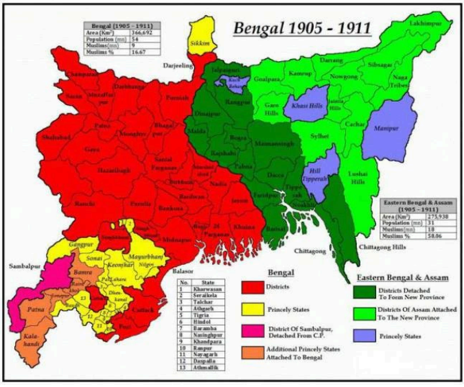
- Background
- British claimed Bengal (78 million people, a quarter of British India's population) was too large for efficient administration.
- Originally included Bengal, Bihar, Orissa, Assam.
- 1874: Assam separated as Chief Commissioner's Province.
- Decision publicized in December 1903.
- Plan: Divide into two provinces:
- Bengal (Western Bengal, Bihar, Orissa).
- Eastern Bengal and Assam.
- Motives:
- Linguistic division to reduce Bengalis to a minority in Bengal.
- Religious division: Western half Hindu-majority, Eastern half Muslim-majority.
- Note: Nationalists supported separating linguistically divergent Orissa and Bihar for administrative efficiency.
- Implementation
- Scheme began with Curzon's Minute on Terrestrial Redistribution, June 1, 1903.
- July 20, 1905: Curzon ordered division:
- Eastern Bengal and Assam: 31 million.
- Rest of Bengal: 54 million (18 million Bengalis, 36 million Biharis/Oriyas).
- Anti-Partition Campaign
- Leadership: Surendranath Banerjee, K.K. Mitra, Prithwishchandra Ray.
- Methods: Petitions, public meetings, memoranda, propaganda via newspapers (Hitabadi, Sanjibani, Bengalee).
- Objective: Pressure government through educated public opinion in India and England to prevent partition.
- July 1905: Government ignored opposition, announced partition.
- August 7, 1905: Boycott Resolution passed at Calcutta Town Hall meeting; launched Swadeshi Movement targeting Manchester cloth and Liverpool salt.
- October 16, 1905: Partition effective; observed as mourning day in Bengal.
- Vande Mataram became movement's anthem.
- Rabindranath Tagore composed 'Amar Sonar Bangla' (later Bangladesh's anthem, 1971).
- Tagore called for Raksha Bandhan (Rakhi) as unity symbol.
- Ramendra Sunder Trivedi urged Aradhana (unlit hearths) as mourning sign.
- Leaders Surendranath Banerjee and Ananda Mohan Bose addressed large gatherings.
- Movement spread beyond Bengal:
- Poona/Bombay: Tilak.
- Punjab: Lala Lajpat Rai, Ajit Singh.
- Delhi: Syed Haider Raza.
- Madras: Chidambaram Pillai.
- INC 1905 Session (Gokhale's presidency):
- Condemned partition and Curzon's reactionary policies.
- Supported anti-partition and Swadeshi Movement.
- Militant Nationalists (Tilak, Lajpat Rai, Bipin Chandra Pal, Aurobindo Ghosh):
- Wanted movement to extend nationwide, evolve into mass struggle for Swaraj.
- Moderates: Limited scope to Bengal, opposed broader escalation.
- Swadeshi Movement
- INC Calcutta Session (1906, Dadabhai Naoroji's presidency)
- Declared goal: 'Self-government or Swaraj like the UK or colonies.'
- Four resolutions: Swaraj, Swadeshi, Boycott, National Education.
- Moderate-Extremist Dispute
- Deadlock at Surat Session (1907, Rash Behari Ghosh): Congress split.
- Extremist Expression
- Periodicals:
- New India (Bipin Chandra Pal).
- Vande Mataram (Aurobindo Ghosh).
- Sandhya (Brahmabandhav Upadhyaya).
- Yugantar (Bhupendranath Dutt).
- New Forms of Struggle
- Boycott of Foreign Goods
- Public burning of foreign cloth, boycotts of foreign salt/sugar.
- Priests refused to solemnize marriages with foreign goods; washermen refused to wash foreign clothes.
- First suggested by Krishna Kumar Mitra in Sanjibani.
- Public Meetings and Processions
- Key methods for mass mobilization and popular expression.
- Corps of Volunteers (Samitis)
- Swadesh Bandhab Samiti (Ashwini Kumar Dutta, Barisal) highly effective.
- Imaginative Use of Festivals and Melas
- Spread political messages via traditional events.
- Tilak's Ganapati and Shivaji festivals in western India and Bengal.
- Bengal's folk theatre used for propaganda.
- Emphasis on Self-Reliance (Atma Shakti)
- Swadeshi Enterprises:
- Textile mills, soap/match factories, tanneries, banks, insurance companies, shops.
- Reasserted national dignity, honor, confidence; regenerated villages economically/socially.
- Acharya P.C. Ray founded Bengal Chemicals Factory.
- Programme of National Education
- Bengal National College (inspired by Tagore's Shantiniketan) with Aurobindo Ghosh as principal.
- National schools/colleges emerged nationwide.
- National Council of Education (August 15, 1906): Organized literary, scientific, technical education on national lines, using vernaculars.
- Bengal Institute of Technology for technical education; funds raised to send students to Japan.
- Charly's Circular: Bengal Chief Secretary threatened student activists with disciplinary action.
- Workers
- October 1905: Printer's Union formed after strikes in government presses; first real labor union.
- Peasants
- Minimal peasant mobilization; participation negligible.
- 1906: Southern Andhra/Tamil Nadu held Vandemataram Movement gatherings supporting Bengal.
- Muslims
- Failed to gain Muslim support; a key weakness.
- 1906: All India Muslim League formed under Nawab Salimullah of Dacca with government patronage to advance Muslim interests.
- Eastern Bengal saw communal riots at movement's peak.
- The Surat Split
- Benaras Session (December 1905, Gokhale's presidency)
- Moderate-Extremist differences emerged.
- Extremists: Extend Boycott/Swadeshi beyond Bengal, include all associations (government service, courts, councils) for a nationwide mass movement.
- Moderates: Limit movement to Bengal, opposed boycotting councils; favored constitutional methods.
- Calcutta Session (December 1906)
- Moderate enthusiasm waned due to Extremist/revolutionary popularity.
- Dadabhai Naoroji elected president; Swaraj defined as self-government like UK/colonies.
- Extremists called for widespread passive resistance, boycotts of schools, colleges, councils, courts, municipalities.
- Moderates' Shift
- Encouraged by rumored council reforms, toned down Calcutta programme.
- Misjudged reforms as rewards rather than a tactic to isolate Extremists.
- Surat Session (1907)
- Extremists: Wanted session in Nagpur with Tilak or Lajpat Rai as president, reaffirming Swadeshi, boycott, education resolutions.
- Moderates: Chose Surat to exclude Tilak; elected Rashbehari Ghosh, sought to drop resolutions.
- Government Strategy
- Three-pronged approach: Repression, Conciliation, Suppression.
- Stage 1: Mild repression of Extremists to intimidate Moderates.
- Stage 2: Placate Moderates with concessions, hint at further reforms if Extremists distanced, isolating Extremists.
- Post-Swadeshi
- Stage 3: With Moderates aligned, government suppressed Extremists fully, then ignored Moderates.
- 1907-1911 Laws to Check Anti-Government Activity:
- Seditious Meetings Act, 1907:
- Prohibited public gatherings deemed seditious.
- Required prior approval for political meetings.
- Aimed at curbing nationalist protests and anti-British speeches.
- Indian Newspapers (Incitement to Offences) Act, 1908:
- Targeted newspapers publishing content inciting violence or rebellion.
- Allowed confiscation of printing presses and penalization of publishers.
- Suppressed nationalist journalism and free speech.
- Criminal Law Amendment Act, 1908:
- Declared certain organizations as unlawful for anti-government activities.
- Empowered the government to detain individuals without trial.
- Used against extremist nationalist groups and revolutionary societies.
- Indian Press Act, 1910:
- Imposed heavy security deposits on newspapers critical of the government.
- Allowed seizure of newspapers publishing seditious material.
- Further tightened control over the press after earlier laws proved ineffective.
- Extremist Leaders' Fate:
- Tilak: Jailed in Mandalay (Burma) for 6 years.
- Aurobindo and B.C. Pal: Retired from active politics.
- Lajpat Rai: Left for abroad.
- First World War and Nationalist Response in India
- Home Rule League Movement
- Overview of the Home Rule League Movement
- The Home Rule Movement emerged as India's response to the First World War, reflecting a growing demand for self-governance.
- It was inspired by the Irish Home Rule Leagues and marked the rise of a more aggressive approach to Indian politics.
- First World War (1914-1918)
- When the First World War began, the Moderates chose to support British war efforts, seeing it as both a duty and a strategic move to negotiate concessions later.
- The Extremists disagreed with this approach, but Bal Gangadhar Tilak took a unique stance. He pledged loyalty to the British Crown and encouraged Indians to assist Britain during its time of need, hoping this support would yield political gains.
- Opinion of Industrialists
- Wealthy Indian industrialists viewed the war as a chance to profit. The conflict disrupted British industrial production, creating shortages that increased demand for goods from Indian industries.
- This economic boost fueled the growth of Indian industries, and industrialists wanted to maintain this momentum after the war. They were eager to organize and back nationalist movements to protect their interests.
- Reasons for the Home Rule League Movement (HRLM - Why?)
- Some nationalists believed that only popular pressure could force the British government to grant political concessions.
- The Moderates grew disillusioned with the limited reforms of the Morley-Minto Reforms (1909), which failed to meet their expectations.
- Ordinary people were suffering from wartime hardships, including high taxes and rising prices, making them ready to join aggressive protests.
- The war exposed the hypocrisy of imperialist powers. As major nations fought each other and spread propaganda, the myth of white superiority weakened, inspiring Indians to challenge British rule.
- Tilak, released from prison in June 1914, was prepared to lead. He reassured the government of his loyalty and signaled to the Moderates that he sought administrative reform, not revolution, similar to the Irish Home Rule model.
- Annie Besant, an Irish theosophist living in India since 1896 and president of the Theosophical Society, decided to expand her work by launching a movement for Home Rule, modeled on the Irish example. She later became INC president in 1917.
- Background on Theosophical Society: Founded in 1875 by H.P. Blavatsky and Colonel Olcott in New York, it established its first headquarters in Adyar, near Madras, in 1882.
- Objectives of the Movement (What?)
- The Home Rule League campaign aimed to educate the common person about home rule, presenting it as self-government within the British Empire.
- Methods of the Movement (How?)
- The movement sought to achieve its goals through widespread political education and engagement.
- This included holding public meetings, setting up libraries and reading rooms with books on national politics, organizing conferences, conducting classes for students on political issues, and spreading propaganda through newspapers, pamphlets, posters, illustrated postcards, plays, and religious songs.
- It also involved collecting funds, organizing social work, and participating in local government activities.
- Composition of the Leagues
- Both Tilak and Besant understood that success required the support of the Moderate-dominated Indian National Congress (INC) and full cooperation from the Extremists.
- After failing to bridge the Moderate-Extremist divide at the 1914 INC session, Tilak and Besant chose to launch their own political initiatives.
- By early 1915, Annie Besant began campaigning for post-war self-government, inspired by white colonies like Canada and Australia. She used her newspapers, *New India* and *Commonweal*, and organized public meetings and conferences.
- At the 1915 INC session, Tilak and Besant's efforts gained traction. The Congress agreed to admit Extremists, committed to educative propaganda, and revived local-level Congress committees.
- Tilak's League
- Established in April 1916 during the Bombay Provincial Conference in Belgaum, with G.S. Khaparde as a founding member.
- Operated in Maharashtra (excluding Bombay city), Karnataka, Central Provinces, and Berar, with six branches.
- Demands included Swarajya (self-rule), formation of linguistic states, and education in vernacular languages.
- Tilak famously declared, “Swaraj is my birthright and I shall have it,” during this agitation.
- In his speeches, Tilak avoided religious appeals, opposed untouchability, and urged Brahmins to tolerate non-Brahmins. He stated, “If God were to tolerate untouchability, I would not recognize him as God at all.”
- The British government issued Tilak a show-cause notice, but the High Court cleared him, giving the Home Rule Movement legal legitimacy. By 1917, Tilak's league had 14,000 registered members.
- Besant's League
- Launched in September 1916 in Madras, covering the rest of India, including Bombay city.
- Had 200 branches, loosely organized compared to Tilak's League. George Arundale served as organizing secretary, and Sir S. Subramaniam Aiyer (Grand Old Man of South India) was honorary president.
- Earlier in 1916, impatient followers like Jamnadas Dwarkadas, Shankerlal Banker, and Indulala Yagnik set up Home Rule groups, started the Bombay newspaper *Young India*, and created an All India Propaganda Fund for pamphlets.
- Key figures like Motilal Nehru, Jawaharlal Nehru, Bhulabhai Desai, Chittaranjan Das, Madan Mohan Malaviya, Mohammad Ali Jinnah, Tej Bahadur Sapru, and Lala Lajpat Rai later joined, some leading local branches. Joseph “Kaka” Baptista was another prominent Bombay activist.
- Government Response
- The government responded with harsh repression, especially in Madras, where students were banned from political meetings.
- In June 1917, Annie Besant, B.P. Wadia, and George Arundale were arrested. In protest, Sir S. Subramaniya Aiyar renounced his knighthood, and Tilak called for passive resistance.
- Annie Besant was released in September 1917.
- Shortcomings and Fade-Out
- The movement lacked effective organization.
- Communal riots in 1917-18 weakened its momentum.
- Moderates were pacified by Montagu's 1917 statement promising reforms and Besant's release.
- Extremists' talk of passive resistance from September 1918 distanced Moderates.
- The Montagu-Chelmsford Reforms, announced in July 1918, further divided nationalists.
- Leadership weakened: Tilak went abroad in September 1918 for a legal case, while Besant wavered on reforms and passive resistance strategies.
- Contributions
- By amplifying the Moderates' political education program, the movement gained support from many Moderates. Members of Gokhale's Servants of India Society, though barred from joining, actively promoted Home Rule nationwide.
- It shifted focus from the educated elite to the masses, altering the nationalist movement's trajectory away from the Moderate path.
- Established organizational links between urban and rural areas.
- Inspired a generation of passionate nationalists.
- Prepared the masses for Gandhian-style politics.
- Tilak and Besant's efforts led to a Moderate-Extremist reunion at the 1916 Lucknow Session, revitalizing the Congress as a tool of Indian nationalism.
- Post-1916 Congress session, a joint meeting of both leagues addressed over 1,000 delegates under one canopy.
- Lucknow Session of the Indian National Congress, 1916
- Readmission of the Extremists to Congress
- Presided over by Moderate Ambika Charan Majumdar, the session welcomed back Extremists led by Tilak.
- Facilitated by the deaths of staunch Moderate opponents Gopal Krishna Gokhale and Pherozshah Mehta in 1915.
- Tilak's League organized a “Congress Special” or “Home Rule Special” train to transport Western India delegates to Lucknow, starting a new Congress tradition.
- Tilak's proposal for a Congress Working Committee (to handle daily operations and implement resolutions) was rejected.
- Lucknow Pact Between Congress and Muslim League
- Opposed by Madan Mohan Malaviya.
- The Muslim League agreed to joint constitutional demands with Congress, accepting separate electorates until any community requested joint ones.
- In later stages Jinnah declared Congress as Hindu party and Muslim League is only body for muslims
- Muslims received a fixed proportion of seats in all-India and provincial legislatures.
- Joint Demands
- Expand representative assemblies at central and provincial levels with elected majorities and greater powers.
- Set a 5-year term for the Legislative Council.
- Ensure half the members of the Viceroy's and provincial governors' executive councils were Indian.
- Montagu's Statement (August 1917)
- Government policy aimed at “increasing participation of Indians in every branch of administration and gradual development of institutions with a view to the progressive realization of responsible government.”
- Nationalist Resurgence After the War
- Post-War Economic Hardships
- Industry
- Rising prices followed by a recession, coupled with increased foreign investment, pushed many Indian industries toward closure. They demanded protection from imports and government aid.
- Workers and Artisans
- Faced unemployment and struggled with high prices.
- Peasantry
- Burdened by high taxes and poverty, peasants awaited leadership to protest.
- Soldiers
- Returning from foreign battlefields, they shared experiences with rural communities, shocked by India's poverty and reduced liberties.
- Educated Urban Classes
- Suffered unemployment and were acutely aware of British racism.
- Expectation of Political Gains for War Cooperation
- India's contribution to the British war effort was immense, with nationalists offering support and countless troops sacrificing their lives.
- Nationalist Disillusionment with Imperialism Worldwide
- Allied powers promised democracy and self-determination to colonial allies during the war, but post-war actions betrayed these pledges.
- Wartime propaganda exposed colonial misdeeds, yet the Paris Peace Conference and treaties showed imperialist powers intent on retaining and redistributing colonies, not freeing them.
- Gandhiji Before 1915
- Introductory Note
- Message by Kawal Sir
- From an exam perspective, detailed knowledge of Gandhi's life before 1915 isn't critical. However, understanding his South African experiences is key to grasping his philosophy and methods, which shaped his role in India's independence struggle. Learning history this way turns it into a compelling story.
- Feel free to skip this section if time is short!
- Gandhi Before India
- Early Life
- Born on October 2, 1869, in Porbandar, Kathiawar, Gujarat, into a well-to-do Vaishya family deeply influenced by Jainism, where ahimsa (non-violence) is a core principle.
- In 1881, at age 12, he went to England to study law. He returned after 10 years as a young barrister and began practicing at the Bombay High Court.
- Struggling to build a successful practice in Bombay, he moved to Rajkot, earning a living by drafting petitions.
- Move to South Africa
- In 1893, at age 24, Gandhi traveled to Durban in Natal Province, South Africa, for a one-year contract related to a legal case for his client, Dada Abdullah. He was the first Indian barrister to arrive there.
- He faced racism and humiliation, notably when, despite holding a first-class ticket, he was thrown off a train to Pretoria after a white passenger objected to sharing the compartment with an Indian.
- Intended as a brief (short and concise) stay, he remained in South Africa for 20 years, dedicating himself to organizing Indian workers to fight for their rights.
- Conditions of Indians in South Africa
- Indians faced severe racial discrimination, denied citizenship rights, freedom to trade, and property ownership.
- They were barred from voting, restricted to specific residential areas, and prohibited from using footpaths or leaving home at night without permits.
- First- and second-class railway compartments were off-limits to them, and all Indians were derogatorily (showing a lack of respect) labeled “coolies,” meaning laborers.
- First Phase: Moderate Phase of Struggle (1894-1906)
- Struggle Against Disenfranchisement Bill
- Gandhi opposed the Disenfranchisement Bill, relying on petitions and memorials sent to South African and British authorities. He believed that informing them of the Indians' plight would prompt action, as Indians were British subjects.
- He founded the Natal Indian Congress to unite diverse Indian groups and launched the newspaper *Indian Opinion* to amplify their voice.
- This organization led non-violent protests against the oppressive treatment of Indians and native Africans by white authorities.
- Early Actions
- In 1896, Gandhi briefly visited India, recruiting 800 Indians to join him in South Africa. On their arrival, an angry mob attacked them, injuring Gandhi. He exercised self-restraint, marking the start of his philosophy of winning over opponents with peaceful resistance. This approach paid off, as British pressure forced the abandonment of the disenfranchisement effort.
- During the Boer War (1899), Gandhi organized the Natal Indian Ambulance Corps with 1,100 Indians to aid the British, despite ongoing discrimination against Indians.
- Connection with Indian National Congress (INC)
- In 1901, Gandhi attended the Calcutta INC session (presided by W.E. Wacha), his first contact with the organization. He successfully passed a resolution highlighting the plight of Indians in South Africa.
- Leadership and Lifestyle
- By 1903, Gandhi was the recognized leader of South Africa's Indian community, living a disciplined life of self-restraint.
- Inspired by John Ruskin's *Unto This Last*, which praised rustic living, Gandhi established Phoenix Farm near Durban. Here, he trained cadres in non-violent Satyagraha—peaceful defiance of unjust laws, mass arrests, occasional hartals (economic shutdowns), and bold marches—fostering a fearless spirit against repression. He also published *Indian Opinion* from the farm.
- Second Phase: Phase of Passive Resistance (1906-1914)
- Introduction to Satyagraha
- Starting in 1906, this phase marked Gandhi's use of passive resistance or civil disobedience, which he named Satyagraha—devotion to truth through non-violent resistance.
- Satyagraha Against Registration Certificates (1906)
- The Asiatic Registration Bill required Indians to carry registration certificates with fingerprints, a discriminatory measure. Gandhi formed the Passive Resistance Association to defy this law, encouraging Indians to face penalties rather than comply.
- He and others were jailed for refusing registration. When authorities tricked some into registering, Gandhi led a public burning of the certificates. A compromise eventually ended the standoff.
- During this campaign, Gandhi abandoned his legal practice to focus fully on the struggle.
- Campaign Against Restriction on Indian Migration
- The movement expanded to oppose new laws restricting Indian migration between provinces. Indians defied these by crossing borders and refusing to show licenses, leading to many arrests.
- Campaign Against Poll Tax
- A £3 poll tax burdened ex-indentured Indians earning less than 10 shillings monthly. Gandhi's campaign to abolish it broadened the movement's support base.
- Campaign Against Invalidation of Indian Marriages
- A Supreme Court ruling invalidated non-Christian marriages, affecting Hindu, Muslim, and Parsi unions and deeming their children illegitimate. This insulted Indian women, drawing many into the movement.
- Tolstoy Farm (1910)
- As Satyagrahis courted arrests, funds to support their families dwindled. Gandhi established Tolstoy Farm, funded by Hermann Kallenbach (a German architect friend), Jamshedji Tata, the Nizam of Hyderabad, the INC, and the Muslim League, to house these families.
- Indian Relief Act of 1914
- Through negotiations with Lord Hardinge, C.F. Andrews, and General Smuts, an agreement was reached. The South African government conceded key demands: abolishing the poll tax, easing registration certificate rules, recognizing Indian marriages, and promising sympathetic treatment of immigration issues.
- Gandhi in India (January 9, 1915)
- Feeling his South African mission was complete, Gandhi planned to return to India. Gokhale, his political mentor, urged him to stop in London first. Arriving during the First World War, Gandhi organized an Ambulance Corps to aid the British, earning the Kaiser-e-Hind Gold Medal in 1915.
- He arrived in India on January 9, 1915, at age 46. Gokhale wanted him to join the Servants of India Society, but opposition from some members prevented this.
- Gandhi spent his first year traveling India, studying its issues, and establishing the Satyagraha Ashram in Ahmedabad (later moved to the Sabarmati River banks, becoming Sabarmati Ashram).
- Annie Besant invited him to join her Home Rule League Movement, but he declined, not wanting to trouble the British during the war.
- At the 1916 Lucknow INC session, Gandhi remained neutral between Moderates and Extremists, successfully passing a resolution to end indentured labor recruitment.
- Early Experiments in India
- Champaran Satyagraha (1917) - First Civil Disobedience Movement
- Issue
- European planters forced Champaran (Bihar) peasants to grow indigo on 3/20 of their land (tinkathia system). When German synthetic dyes replaced indigo, planters demanded high rents and illegal dues to maximize profits, forcing peasants to sell at fixed low prices.
- Action
- Invited by local farmer Rajkumar Shukla, Gandhi investigated despite initial ignorance of the issue (noted at the 1916 Lucknow session). Authorities ordered him to leave, but he defied them with passive resistance, a novel tactic then.
- Permitted to inquire, Gandhi joined the Champaran Agrarian Committee, convincing authorities to abolish the tinkathia system and compensate peasants (25% of illegal dues, per the Champaran Agrarian Act of 1917).
- Support
- Leaders like Rajendra Prasad, Mazharul-Haq, Mahadeo Desai, Narhari Parekh, J.B. Kripalani, Brajkishore Prasad, Anugrah Narayan Sinha, Ramnavmi Prasad, and Shambhusharan Varma assisted.
- Kheda Satyagraha (1918) - First Non-Cooperation Movement
- Issue
- A 1918 drought in Kheda, Gujarat, caused crop failure. The Revenue Code entitled farmers to tax remission if yields fell below one-fourth normal, but the government refused despite Gujarat Sabha petitions (Gandhi as president).
- Action
- Gandhi urged farmers to withhold taxes. Sardar Vallabhbhai Patel, Narahari Parikh, Mohanlal Pandya, and Ravi Shankar Vyas organized villagers, maintaining discipline across communities.
- When property was seized, buyers were ostracized. Over 2,000 peasants pledged non-payment, but a good Rabi crop and government concessions (tax only from those able to pay) led Gandhi to end the agitation, despite limited participation (70 of 559 villages).
- Impact
- Though a token victory, it expanded Gandhi's rural Gujarat base.
- Ahmedabad Mill Strike (1918) - First Hunger Strike
- Issue
- A dispute arose between Ahmedabad cotton mill owners and workers over ending a plague bonus. Wartime inflation doubled prices, prompting workers to demand a 50% wage hike; owners offered 25%. Workers struck, facing arbitrary dismissals.
- Action
- Anusuya Sarabhai, sister of mill owner Ambalal Sarabhai, sought Gandhi's mediation. He advised a 35% demand and non-violent strike. When talks stalled, Gandhi fasted unto death—his first—bolstering workers and pressuring owners. A tribunal awarded a 35% hike, ending the strike.
- Rowlatt Satyagraha (1919)
- Background
- In 1917, the Rowlatt Committee (chaired by Justice Sydney Rowlatt) investigated “revolutionary crime,” recommending repressive laws alongside the Montagu-Chelmsford report. The Rowlatt Act (March 21, 1919) continued wartime restrictions, allowed trials by special courts (no appeals, in-camera evidence), warrantless arrests, and detention up to two years.
- Rowlatt Act (1919)
- The Rowlatt Act, officially known as the Anarchical and Revolutionary Crimes Act, 1919, was a draconian law passed by the British government to curb revolutionary activities in India.
- Provisions of the Act:
- Allowed arrests without trial and detention without evidence.
- Restricted freedom of speech and press.
- Enabled the government to detain political activists indefinitely.
- Empowered British officials to conduct secret trials without juries.
- Gandhi's Response
- On February 24, 1919, Gandhi formed the Satyagraha Sabha in Bombay to resist the Act, with members pledging defiance. He said, “We shall obtain salvation only through suffering, not by reforms from the English—they use brute force, we soul force.”
- Phrase analysis
- "We shall obtain salvation only through suffering"
- This suggests that freedom and justice require enduring hardships and struggles rather than expecting favors from rulers.
- "Not by reforms from the English"
- It rejects the idea that British-led reforms (such as constitutional changes or legal amendments) can bring real independence.
- "They use brute force, we soul force"
- This contrasts British military power (brute force) with the moral and spiritual strength of Indians (soul force), which became the foundation of nonviolent resistance movements.
- He called for a nationwide hartal on April 6, 1919 (initially March 30), involving work stoppage, fasting, and prayer, and sold banned books like *Hind Swaraj* as defiance.
- Arrested on April 8 en route to Punjab, his detention sparked violence, including the Jallianwala Bagh Massacre (April 13, 1919) in Amritsar under General Dyer. Gandhi halted the Satyagraha on April 18, calling it a “Himalayan Blunder” due to unprepared participants.
- Jallianwala Bagh Massacre (April 13, 1919)
- The Jallianwala Bagh Massacre was one of the most brutal events in Indian history, where British forces under General Reginald Dyer fired on a peaceful gathering, killing hundreds of innocent Indians.
- Background:
- The British government passed the Rowlatt Act (1919), allowing arrests without trial, leading to widespread protests.
- On April 10, 1919, two nationalist leaders, Dr. Saifuddin Kitchlew and Dr. Satyapal, were arrested in Amritsar, sparking further outrage.
- The Massacre:
- Date: April 13, 1919 (Baisakhi - a major Sikh festival).
- Location: Jallianwala Bagh, Amritsar (a walled garden with only one narrow exit).
- Event: Thousands of men, women, and children gathered to protest peacefully.
- Action: General Reginald Dyer, without warning, ordered firing on the crowd, blocking the only exit.
- Casualties:
- Official British figures: ~379 killed, 1,200 wounded.
- Indian estimates: Over 1,000 deaths.
- Aftermath:
- Dyer justified his actions, calling it a necessary lesson to "teach Indians obedience."
- Rabindranath Tagore renounced his knighthood in protest.
- Mahatma Gandhi intensified the Non-Cooperation Movement (1920).
- Impact:
- Exposed British brutality and shattered Indian trust in British rule.
- Strengthened Indian nationalism and the demand for complete independence.
- Led to the formation of the Hunter Commission, which condemned Dyer, but he was still honored by the British in England.
- Hunter Commission (1919-1920)
- After the Jallianwala Bagh Massacre, the British government appointed the Hunter Commission in October 1919 to investigate the incident.
- Composition of the Commission:
- Led by Lord William Hunter.
- Included British and Indian members but had a British majority.
- Findings and Report:
- Condemned General Dyer for his actions but did not hold him criminally accountable.
- Acknowledged that the firing was excessive but did not suggest strict punishment for Dyer.
- Dyer was forced to retire, but in Britain, he was hailed as a hero.
- Indian Reaction:
- Indians rejected the commission's findings as biased and unjust.
- Rabindranath Tagore renounced his knighthood in protest.
- Gandhi intensified Non-Cooperation Movement (1920).
- Opposition
- Liberals (Surendranath Banerjee, D.E. Wacha, T.B. Sapru, Srinivas Shastri), Annie Besant (no civil resistance warranted), and Tilak's followers (N.C. Kelkar, G.S. Khaparde) opposed it, fearing it would derail constitutional reforms.
- Support
- Young Home Rule League members and Pan-Islamic leaders (Abdul Bari, Dr. M.A. Ansari) backed Gandhi, spurred by the Khilafat issue post-World War I.
- Gandhian Ideology
- Influences
- In My Experiments with Truth, Gandhi credits his parents, his family's socio-religious milieu (environment), the Bhagavad Gita, Jainism, and later, thinkers like Tolstoy, Thoreau, and Ruskin for shaping his philosophy.
- Leo Tolstoy's "The Kingdom of God is Within You" reinforced his belief in non-violence.
- Henry David Thoreau's "Civil Disobedience" influenced his concept of passive resistance.
- John Ruskin's "Unto This Last" shaped his ideas on economic decentralization and dignity of labor.
- Fundamental Principles
- Satya (Truth) - The foundation of Gandhi's thought; he saw truth as inseparable from morality and God.
- Ahimsa (Non-Violence) - Inspired by Jainism and the Bhagavad Gita, he believed in non-violent resistance against oppression.
- Asteya (Non-Stealing) - Extending beyond theft, he saw it as refraining from exploitation of any kind.
- Aparigraha (Non-Possession) - Advocated minimalism, rejecting material excess.
- Brahmacharya (Self-Control) - Initially referring to celibacy, he later expanded it to self-discipline in all aspects of life.
- Tools
- Swaraj (Self-rule) - More than political independence, he viewed it as moral and spiritual self-governance.
- Swadeshi (Self-reliance) - Promotion of indigenous industries, particularly Khadi, to counter economic dependence on Britain.
- Sarvodaya (Upliftment of all) - Based on egalitarian principles, advocating welfare for all sections of society.
- Swaraj
- In Hind Swaraj (1909), Gandhi saw modern Western civilization, not just British rule, as the real enemy. He criticized industrialization for exploiting rural India, arguing that railways and mechanization facilitated famines by enabling food exports while Indians starved.
- Critics called him obscurantist (opposing progress), but he emphasized modernization's human cost. His vision of Swaraj evolved from a simple, traditional Indian lifestyle to village reconstruction, Khadi promotion, and Harijan welfare.
- Swadeshi
- He rejected Western cultural domination but encouraged Indian industries. Despite his opposition to capitalism, he collaborated with industrialists like Ambalal Sarabhai and G.D. Birla, believing in the Trusteeship theory - where capitalists were stewards of wealth meant for society's welfare.
- Sarvodaya
- Meaning “upliftment of all,” it sought universal welfare through voluntary effort. Gandhi's ideal society, Ram Rajya, was a cooperative, stateless entity thriving on self-sufficiency.
- Echoing Thoreau's philosophy (“the best government governs least”), he envisioned villages self-regulating through moral principles rather than legal enforcement.
- Religion
- He believed religion should permeate (spread or diffuse through something completely) all actions, not remain confined to private life. His universalism allowed him to appreciate all faiths while remaining deeply rooted in his own.
- “I want all cultures to blow about my house freely, but I refuse to be blown off my feet.”
- This quote by Gandhi means that he was open to learning from and appreciating all cultures, allowing their ideas and values to influence him. However, he would not let them shake or uproot his own core beliefs and identity.
- Economic Decentralization
- Advocated small-scale, community-driven industries over large-scale industrialization to prevent economic disparity and alienation.
- Varna System and Non-Possession
- He interpreted varna (caste-based division of labor) as a system of duty rather than privilege, though this stance was widely criticized.
- Education
- The 1937 Wardha Scheme (published in Harijan) proposed "Nai Talim" (Basic Education), advocating skill-based learning integrated with moral values.
- Women
- He opposed all forms of gender discrimination, advocating perfect equality in both personal and public spheres.
- Untouchability
- He called it a “crime against humanity” and devoted a significant part of his activism to its eradication, renaming Dalits as "Harijans" (Children of God).
- Indian National Movement (1917-1934) - Gandhian Phase
- Non-Cooperation and Khilafat Movement
- Overview
- The Khilafat Movement and Non-Cooperation Movement, though distinct in their origins and aims, converged in the early 1920s into a unified mass campaign under Mahatma Gandhi's leadership, marking a pivotal moment in India's struggle against British rule.
- The Khilafat Movement stemmed from Muslim outrage over the dismantling of the Ottoman Caliphate post-World War I, while the Non-Cooperation Movement sought broader Indian self-governance, leveraging widespread discontent with colonial policies.
- Their alliance fostered unprecedented Hindu-Muslim unity, amplifying resistance until its abrupt halt in 1922.
- The Khilafat Movement
- Background
- Muslims globally, including India's 70 million-strong community, revered the Sultan of Turkey as the Khalifa, their spiritual leader. During World War I (1914-1918), Turkey allied with the Axis powers against Britain, earning Indian Muslim sympathy as a religious cause.
- Post-war, the Treaty of Sèvres (August 1920) dismembered the Ottoman Empire, stripped the Khalifa of authority, and redistributed territories, igniting global Muslim fury and fueling agitation in India.
- Muslim Demands from the British
- Retention of the Khalifa's control over Islamic holy sites (e.g., Mecca, Medina) to preserve religious authority.
- Assurance of sufficient territories for the Khalifa in post-war arrangements, opposing the severe territorial losses imposed by the Allies.
- Formation of the Khilafat Committee
- In early 1919, leaders like Shaukat Ali and Muhammad Ali (the Ali brothers), Maulana Abul Kalam Azad, Hakim Ajmal Khan, and Hasrat Mohani formed the Khilafat Committee to lobby Britain for a reversal of its Turkey policy.
- Initially, it employed moderate tactics—public meetings, petitions, and delegations—to advocate for the Khalifa's reinstatement.
- By late 1919, a militant faction emerged, pushing for active resistance, including non-cooperation with British authorities, aligning with growing anti-colonial sentiment.
- All India Khilafat Conference (November 22-23, 1919)
- Held in Delhi, this conference saw militant leaders escalate their call for non-cooperation with the British government in India to force concessions on Turkey.
- In April 1920, Shaukat Ali threatened a joint Hindu-Muslim non-cooperation campaign under Gandhi if demands went unmet, leading to Gandhi's appointment as president of the All-India Khilafat Committee.
- Early Actions
- Early 1920: A joint Hindu-Muslim deputation met Viceroy Lord Chelmsford to press Khilafat grievances, but achieved little, intensifying agitation.
- The Non-Cooperation Movement
- Background
- Sparked by mounting frustration with British rule, the movement was catalyzed by the Jallianwala Bagh massacre (April 1919) and the inadequate Government of India Act 1919, which offered limited self-governance under continued British dominance.
- Gandhi envisioned it as a non-violent mass campaign to achieve Swaraj (self-rule), capitalizing on national unrest beyond the Khilafat issue.
- Objectives
- Redress of Punjab wrongs, notably the Jallianwala Bagh atrocities and martial law excesses of 1919.
- Attainment of Swaraj through peaceful, extra-constitutional means, shifting from Congress's earlier goal of gradual self-government within the empire.
- Initial Steps
- February 1920: Gandhi declared the Khilafat issue, alongside Punjab grievances and stalled reforms, as justification for non-cooperation, threatening action if the peace treaty dissatisfied Indians.
- June 1920: An all-party conference in Allahabad approved boycotts of schools, colleges, and law courts, appointing Gandhi to lead, marking a shift to mass resistance.
- Indian National Congress (INC) Dynamics
- Gandhi favored Satyagraha and non-cooperation, but the INC was split: some opposed his broad program, especially the council boycott, reflecting tensions between radicals and moderates like Annie Besant and Madan Mohan Malaviya.
- Bal Gangadhar Tilak resisted a Hindu-Muslim alliance, advocating a secular nationalist approach, a stance shared by much of the INC's old guard.
- Convergence of Khilafat and Non-Cooperation Movements
- Muslim League and Congress Alliance
- The Muslim League pledged full support to Congress-led agitations, forging a Hindu-Muslim partnership despite Tilak's secular objections and resistance from INC conservatives.
- Gandhi bridged the movements, merging Khilafat's religious fervor with Non-Cooperation's nationalist goals.
- Launch of Joint Campaign (August 1920)
- August 31, 1920: Tilak's death on August 1—a major blow to moderates—preceded the Khilafat Committee's formal non-cooperation launch in September, aligning with Gandhi's broader strategy.
- Calcutta Special Session (September 1920)
- Presided by Lala Lajpat Rai, this INC session endorsed non-cooperation until Punjab and Khilafat wrongs were rectified and Swaraj achieved.
- Despite widespread support, opposition from C.R. Das, Madan Mohan Malaviya, and Annie Besant highlighted internal divisions over Gandhi's radical tactics.
- Nagpur Session (December 1920)
- Presided by C. Vijayaraghavachariar, this session solidified non-cooperation for Khilafat redress, Punjab justice, and Swaraj, redefining Congress's aim to Swaraj via peaceful, legitimate mass struggle.
- Organizational Changes (New Constitution by Gandhi)
- Congress Committees established from village to provincial levels for grassroots mobilization.
- An All-India Committee of 350 members, with a 15-member executive, enabled year-round operations, fulfilling Tilak's 1916 demand.
- Provincial committees reorganized on linguistic lines for regional coherence.
- Hindi promoted as the language for Congress work, enhancing accessibility.
- Membership opened to all over 21 for a four-anna annual fee, democratizing participation.
- Gandhi's Vision
- Defined Swaraj as self-government within the empire if feasible, or independence if necessary, predicting its realization within a year with full commitment.
- Dissenters' Exodus
- Leaders like Muhammad Ali Jinnah, Annie Besant, G.S. Khaparde, and Bipin Chandra Pal left Congress for constitutional methods; Surendranath Banerjee founded the Indian National Liberal Federation as an alternative.
- Phases of the Joint Non-Cooperation Khilafat Movement
- Program of Non-Cooperation
- Destructive Steps
- Boycott of government schools and colleges, promoting national alternatives.
- Boycott of law courts, with justice dispensed through local panchayats.
- Boycott of foreign cloth, encouraging khadi and hand-spinning as symbols of self-reliance.
- Renunciation of government honors and titles, rejecting British legitimacy.
- Boycott of legislative councils, with massive participation—Congress candidates withdrew, and voters abstained, though some leaders dissented.
- Constructive Steps
- Establishment of national institutions and promotion of Hindu-Muslim unity to build a self-governing framework.
- First Phase (January to March 1921)
- Gandhi and the Ali brothers toured India, inspiring thousands of students to abandon government institutions for about 800 national schools and colleges, led by Acharya Narendra Dev, C.R. Das, Lala Lajpat Rai, Zakir Hussain, and Subhash Chandra Bose (principal of National College, Calcutta).
- Key institutions included Jamia Millia Islamia, Kashi Vidyapeeth, Gujarat Vidyapeeth, and Bihar Vidyapeeth.
- Prominent lawyers—Motilal Nehru, Jawaharlal Nehru, C.R. Das, C. Rajagopalachari, Saifuddin Kitchlew, Vallabhbhai Patel, Asaf Ali, T. Prakasam, and Rajendra Prasad—quit their practices, embracing the boycott.
- Foreign cloth imports halved as public bonfires consumed imports; picketing (a form of protest in which individuals assemble outside an establishment to dissuade others from entering or conducting business with it) targeted foreign liquor and toddy shops to promote temperance (refers to the movement aimed at reducing or eliminating the consumption of alcohol).
- Second Phase (April to June 1921)
- Focused on raising one crore rupees for the Tilak Swaraj Fund by August 1921, enrolling one crore Congress members, and installing 20 lakh charkhas by June 1930 (an extended target). The Fund exceeded its goal, collecting one crore rupees, reflecting robust public support.
- Third Phase (July to November 1921)
- Emphasized boycotting foreign cloth, opposing the Prince of Wales' visit (November 17, 1921), and promoting charkhas and khadi, with Gandhi—nicknamed a “half-naked fakir” by Winston Churchill—leading symbolically.
- Congress volunteer corps (a group of people organized for a specific purpose, usually within a military, professional, or specialized context) acted as a parallel police force; local bodies initiated civil disobedience where ready, sparking no-tax movements in Midnapore (Bengal) against union board taxes and Guntur (Andhra) against municipal levies.
- In Assam, strikes disrupted tea plantations, steamer services, and the Assam-Bengal Railways, signaling widespread defiance.
- The Prince of Wales' arrival triggered nationwide strikes and protests; Gandhi lit a massive bonfire of foreign cloth at Elphinstone Mill, Bombay, owned by nationalist Umar Shobhani, amplifying Swadeshi fervor.
- Local movements—Awadh Kisan Movement (UP), Eka Movement (UP), Mappila Revolt (Malabar), and Sikh agitation against mahants in Punjab—flourished, blending regional grievances with national goals.
- Government Response
- May 1921: The Gandhi-Reading Talks saw Viceroy Lord Reading urge Gandhi to restrain the Ali brothers' inflammatory speeches, aiming to divide leaders, but the effort failed as unity held.
- Late 1921: Repression intensified—Congress and Khilafat volunteer corps were outlawed, public gatherings banned, newspapers censored, offices raided at midnight, police deployed lathis and gunfire against Satyagrahis, and by December, most leaders except Gandhi were jailed.
- INC vs. Government
- Ahmedabad Session (December 1921)
- Presided by C.R. Das (jailed, with Hakim Ajmal Khan), this session, amid growing grassroots pressure, made Gandhi sole authority on launching civil disobedience.
- Hasrat Mohani demanded Poorna Swaraj (complete independence) and coined "Inqalab Zindabad" (Long Live Revolution), a radical call Gandhi opposed, favoring phased self-rule.
- Bardoli Ultimatum
- February 1, 1922: Gandhi threatened civil disobedience from Bardoli, Gujarat, starting February 5 unless political prisoners were freed and press curbs lifted, a plan derailed by Chauri Chaura.
- Chauri Chaura Incident
- Event (February 5, 1922)
- In Chauri Chaura (UP), the police brutally assaulted a volunteer leader who was campaigning against liquor sales and high food prices. In retaliation, an enraged crowd gathered in protest. The police opened fire on the demonstrators, escalating tensions further. In response, the mob set fire to the police station, killing 22 officers. Those attempting to escape were caught, attacked, and thrown back into the flames.
- Congress Response
- February 1922: The Congress Working Committee convened in Bardoli and decided to halt all law-breaking activities. Instead, the movement was redirected toward constructive programs such as the promotion of khadi, establishment of national schools, advocacy for temperance, Hindu-Muslim unity, and campaigns against untouchability.
- Internal Dissent
- Prominent leaders, including C.R. Das, Motilal Nehru, Subhash Chandra Bose, and Jawaharlal Nehru, strongly opposed Gandhi's decision to suspend the movement. They argued that calling off the agitation over a localized incident weakened national momentum and demoralized activists.
- Gandhi's Arrest
- On March 10, 1922, Gandhi was arrested and charged with sedition. He was sentenced to six years of imprisonment at Yerwada Jail, Poona. However, due to deteriorating health and an appendicitis surgery, he was released early on February 5, 1924.
- Participation of Various Sections
- Middle Class
- In elite centers like Calcutta, Bombay, and Madras, enthusiasm was tepid (lukewarm or unenthusiastic), with few resigning government posts or titles. Newcomers like Rajendra Prasad (Bihar) and Vallabhbhai Patel (Gujarat) emerged as key voices.
- Business Class
- Supported economic boycotts, benefiting from Swadeshi, though some industrialists hesitated, fearing labor unrest—a concern later validated by strikes in Bombay and Ahmedabad.
- Peasants
- Channeled frustrations against landlords and traders, often exceeding Gandhi's non-violent framework to target both British rule and local oppressors.
- Students
- Thousands abandoned government schools and colleges, becoming vital volunteers, infusing the movement with youthful energy.
- Women
- Participated in unprecedented numbers, picketing shops and marching, significantly bolstering (strengthening, supporting, or reinforcing) the campaign.
- Hindu-Muslim Unity
- Achieved remarkable solidarity (unity or agreement of feeling or action), a major success despite communal flare-ups like the Mappila Uprisings in Malabar, where violence marred (damaged, spoiled, or impaired) the alliance.
- Mappila Uprisings (1836-1921)
- Background
- Mappilas were a Muslim community in Malabar, consisting of peasants, traders, and fishermen.
- The oppressive agrarian system under British rule heavily favored Hindu landlords (jenmis), leading to severe exploitation of Mappila tenants.
- Over time, economic distress and religious grievances fueled multiple uprisings.
- Key Uprisings Before 1921
- Early Revolts (1836-1919)
- Uprisings began in the early 19th century as small, localized acts of resistance against landlords and British authorities.
- The British crushed these uprisings with extreme force, using martial law and mass executions.
- Mappila Rebellion (1921)
- Part of the larger Khilafat and Non-Cooperation Movement, this revolt was more organized and widespread.
- Mappila peasants, influenced by Khilafat leaders and anti-British sentiment, attacked British officials and landlords.
- The British brutally suppressed the rebellion, killing thousands and deporting many rebels to the Andaman Islands.
- Consequences
- The rebellion led to harsher repression by the British, including mass arrests, executions, and the infamous Wagon Tragedy, where 64 Mappila prisoners suffocated to death in a closed railway wagon.
- The revolt created tensions between Hindus and Muslims, as some Hindu landlords were also targeted.
- The Congress and Khilafat leaders distanced themselves from the rebellion, calling it misdirected violence.
- Aftermath and Transition
- Why Withdrawal? (Gandhi's Rationale)
- Gandhi believed the masses had not fully internalized non-violence, and the Chauri Chaura incident gave Britain an opportunity to suppress the movement with harsher repression.
- He feared that continued agitation could escalate into widespread violence, which would not only undermine the movement's credibility but also justify British retaliation.
- Gandhi viewed Satyagraha as a moral force rather than just a political tool. The turn toward violence, in his view, compromised the ethical foundation of the movement.
- Other Causes for Decline
- By late 1921, exhaustion and disillusionment had set in among the masses. Repetitive boycotts and protests were proving unsustainable, especially as they did not yield immediate political gains.
- Khilafat Movement's Decline:
- The fall of the Caliphate following Mustafa Kemal Pasha's reforms in Turkey (abolishing the Sultanate in 1922 and the Caliphate in 1924) weakened Muslim support for the Non-Cooperation Movement.
- With its religious anchor gone, Hindu-Muslim unity, which had been a key driving force, began to weaken.
- Congress's Reaction and Internal Dissent
- Gandhi's unilateral decision to call off the movement stunned and divided the Congress leadership.
- Leaders such as Motilal Nehru, C.R. Das, and Subhash Chandra Bose strongly opposed the decision:
- Subhash Bose, in his book *The Indian Struggle*, called the withdrawal a national calamity, arguing that it weakened India's resistance against British rule.
- He questioned why the entire nation should suffer for the actions of a small group of villagers.
- Bose believed that all mass movements carried risks, and occasional incidents of violence should not justify abandoning a nationwide struggle.
- Though Bose do not align with Gandhi Ji, yet he called/declared him "Father of the Nation"
- End of the Movement
- The Civil Disobedience Enquiry Committee, set up by the Congress, concluded that India was not yet ready for large-scale civil disobedience. This reinforced the view that the movement had to be called off.
- Bardoli Resolution (February 12, 1922):
- Congress officially condemned the Chauri Chaura violence and called for an end to non-cooperation.
- The resolution urged peasants to resume tax and rent payments, marking a strategic retreat rather than an outright failure.
- The movement shifted focus towards constructive programs such as khadi promotion, Hindu-Muslim unity, and anti-untouchability efforts, keeping the spirit of nationalism alive.
- Impact of the Withdrawal
- The movement's abrupt end disheartened the masses, leading to political demobilization for a few years. Many people lost faith in Gandhi's methods, believing that non-violence alone could not secure independence.
- It created divisions within the Congress, with many leaders favoring a more aggressive approach rather than passive resistance. This eventually led to the rise of the Swarajists, who sought to engage with the British government from within legislative councils.
- Despite its premature end, the movement succeeded in mobilizing Indians on an unprecedented scale, proving that mass resistance could challenge British rule.
- The British government, realizing the power of mass movements, grew more cautious and introduced repressive laws to prevent future uprisings.
- Post Non-Cooperation Era: Swarajists & No Changers
- Overview
- The abrupt end of the Non-Cooperation Movement in February 1922 fractured Congress into two factions: Swarajists (Pro-Changers), who sought to enter legislative councils to obstruct British rule from within, and No-Changers, who favored continuing Gandhi's original non-violent, constructive program outside councils.
- Formation of Swaraj Party (January 1, 1923)
- Context
- Gandhi's suspension caused widespread disappointment and a leadership rift. The All India Congress Committee (AICC) formed the Civil Disobedience Inquiry Committee in 1922, advising President C.R. Das that India wasn't ready to relaunch Non-Cooperation. It recommended a mass movement rooted in non-violence, educating farmers and laborers, and promoting khadi, village enterprises, and Hindu-Muslim unity.
- Post-1922, communal tensions flared—Multan (September 1922), Amritsar (April 1923), and Calcutta (May 1923)—complicating unity efforts.
- Gaya Congress Session (December 1922)
- Presided by C.R. Das, this session saw his council-entry proposal defeated by No-Changers. Das resigned as president, and Motilal Nehru stepped down as General Secretary, though both remained in Congress.
- Establishment
- On January 1, 1923, C.R. Das, with Motilal Nehru as secretary, founded the Congress-Khilafat Swaraj Party (Swaraj Party). Leaders included N.C. Kelkar, Huseyn Shaheed Suhrawardy, Subhash Chandra Bose, and Vithalbhai Patel.
- The deadlock between equally dominant factions led to a compromise to avoid a repeat of the 1907 Surat Split.
-
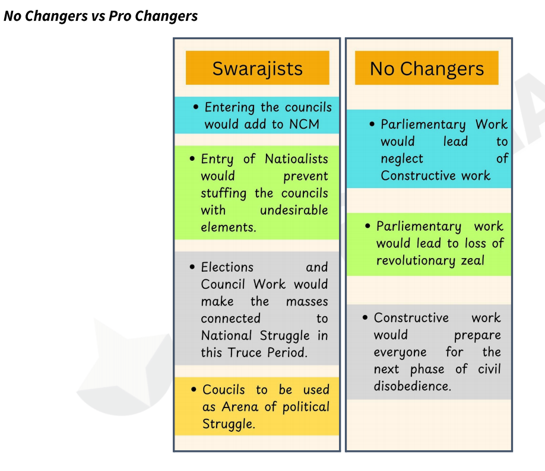
- A Group Within the Congress
- Strategy
- Following Gandhi's advice, Swarajists stayed within Congress but operated independently to maintain unity.
- Congress Special Session (Delhi, September 1923)
- Presided by Maulana Azad, this session permitted Congressmen to contest elections, balancing Swarajist ambitions with No-Changer principles.
- Kakinada Session (December 1923)
- Allowed council entry, positing (to put forward an idea, argument, or assumption) non-cooperation could be practiced within councils, averting (preventing or avoiding something, especially a negative event or consequence) a formal split.
- Swarajists in Action
- First Gathering (Allahabad, 1923)
- Declared ‘Dominion Status' as an interim goal, leaving long-term aims vague, reflecting strategic flexibility.
- Election Manifesto
- Emphasized Indian control over governance, disrupting the 1919 reforms, halting administrative functions, aligning policies with Indian perspectives, and supporting Gandhi's constructive initiatives outside councils.
- Evolution
- The party's constitution and ideology solidified at the 1924 Belgaum Session, presided by Gandhi, aiming for Swaraj through lawful, non-violent means, though skeptical of mass political involvement.
- Party Makes Its Mark
-
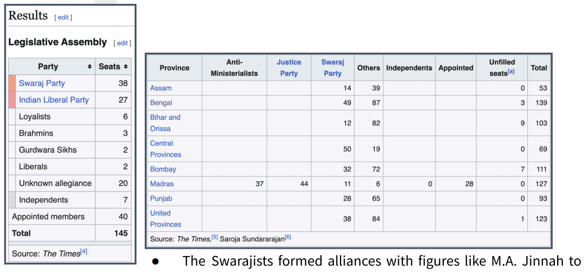
- General Elections (November 1923)
- Contested the Central Legislative Assembly (145 seats, 105 elected) and Provincial Assemblies.
- Allied with M.A. Jinnah to form the Nationalist Party in the Central Assembly, with Motilal Nehru as opposition leader, dubbed the ‘Parliamentary Wing of the Congress.'
- In March 1925, elected Vithalbhai Patel as President (Speaker) of the Central Legislative Assembly, a historic first for an Indian.
- Emerged as the largest party in Bombay, Central Assembly, and Bengal Councils, forming alliances to challenge the government consistently.
-
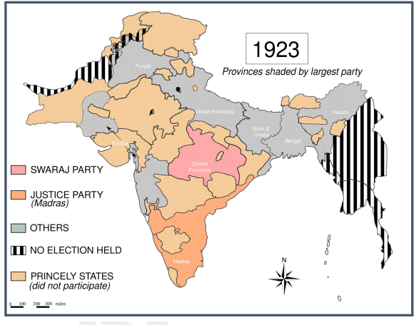
- Swarajists Mean Business
- Obstructionist Strategy
- Focused on blocking reforms internally, a tactic British authorities found harder to counter than outright rebellion. Rejected votable budget parts, vetoed bureaucratic legislation, and affirmed Indian rights.
- C.R. Das declared: “I want you to enter the Councils, secure a majority, and put forward national demands. If rejected, oppose the Government in every measure, good, bad, or indifferent, and make Council work impossible.”
- Constructive Aims
- Established economic policies to curb wealth outflow, boosted local industries, and championed workers' rights, aligning with Swadeshi ideals.
- Gandhi's Evolving Stance
- Initial Opposition
- Released from jail in February 1924, Gandhi ideologically opposed council entry, clashing with Swarajists.
- Ahmedabad AICC Meeting (June 1924)
- Pushed the Hand Spinning Resolution, mandating dissenters to resign from AICC, aiming to sideline Swarajists, but their growing strength forced a rethink.
- Compromise
- Gandhi moderated his stance, eventually endorsing Swarajists as Congress's official negotiators with the government.
- Belgaum Session (December 1924)
- The only session Gandhi presided over, it established a truce: Swarajists gained a Working Committee majority, while constructive programs remained the primary Swaraj strategy.
- Achievements of Swarajists
- Legislative Achievements
- Advocated for political prisoners' release, provincial autonomy, and an immediate Round Table Conference for self-governance.
- Defeated the Public Safety Bill (1928), which targeted socialists and communists with detention without trial.
- Public Safety Bill (1928)
- Background
- The Public Safety Bill (1928) was introduced by the British government in response to growing revolutionary activities in India, particularly the increasing influence of Bhagat Singh, Hindustan Republican Association (HRA), and Communist movements.
- The British feared that socialist and revolutionary ideas were spreading rapidly, especially among workers and peasants.
- Provisions of the Bill
- Allowed the government to detain and deport individuals suspected of engaging in anti-government activities, particularly communists and revolutionaries.
- Targeted trade unions and labor movements, fearing they were influenced by communist ideology.
- Provided sweeping powers to suppress political dissent without fair trials.
- Opposition and Rejection
- The bill was strongly opposed by nationalists, especially Motilal Nehru and Jinnah, who viewed it as an attack on civil liberties.
- Jinnah's famous speech: He criticized the bill, stating it would "establish a lawless state under the pretext of safeguarding law and order."
- Due to massive opposition, the bill was defeated in the Legislative Assembly.
- Aftermath and Impact
- Despite its failure in the Assembly, the British government later enforced similar provisions under the Trade Disputes Act of 1929 and Public Safety Ordinances.
- The bill's rejection symbolized growing Indian unity against repressive colonial laws.
- It fueled further radicalization, leading revolutionaries like Bhagat Singh to adopt more aggressive methods against British rule.
- Overthrew dyarchy in Bengal and Central Provinces, cut salt tax and train fares, secured tax relief, scrapped excise duties, and pushed tariffs for local industries.
- Passed key laws: Workmen's Compensation Act (1923), Indian Trade Union Act (1926), Indian Bar Councils Act (1926), and Child Marriage Prevention Act (1926).
- Workmen's Compensation Act (1923)
- Objective: Provided financial compensation to workers injured or killed in industrial accidents.
- Key Provisions:
- Employers were mandated to compensate workers for injuries or death caused during employment.
- Compensation was based on the severity of the injury and the worker's wage.
- Exempted cases where workers were at fault due to negligence or intoxication.
- Impact:
- Marked the first step toward labor welfare legislation in India.
- Reduced financial burden on injured workers and their families.
- Laid the foundation for future labor laws and social security measures.
- Indian Trade Union Act (1926)
- Objective: Legalized trade unions and provided them with protections.
- Key Provisions:
- Recognized trade unions as legal entities, allowing them to represent workers.
- Gave unions immunity from prosecution for legitimate strike activities.
- Required unions to register with the government and follow certain rules.
- Impact:
- Strengthened the labor movement by giving unions legal standing.
- Encouraged workers to organize and demand better wages and working conditions.
- Set the stage for future labor rights and union protections.
- Indian Bar Councils Act (1926)
- Objective: Regulated the legal profession and established autonomous bar councils.
- Key Provisions:
- Created Bar Councils in each High Court jurisdiction to regulate lawyers.
- Gave councils the power to discipline lawyers and uphold ethical standards.
- Ensured representation of lawyers in legal affairs and professional governance.
- Impact:
- Enhanced self-regulation of the legal profession.
- Strengthened lawyers' autonomy and their role in nationalist politics.
- Became the foundation for the Bar Council of India, formed after independence.
- Child Marriage Prevention Act (1929) (Sarda Act)
- Objective: Raised the legal marriage age to curb child marriage.
- Key Provisions:
- Increased the minimum marriage age to 14 for girls and 18 for boys.
- Penalized those involved in child marriages, including parents and priests.
- Empowered courts to intervene and annul child marriages.
- Impact:
- Marked the first major legal reform against child marriage in India.
- Faced strong opposition from orthodox communities but set a precedent for later reforms.
- Post-independence, the minimum age was further increased to 18 for girls and 21 for boys under the Prohibition of Child Marriage Act (2006).
- Repealed (revoke or annul) repressive laws like the State Prisoners Act (1850) and Prevention of Seditious Meetings Act (1921).
- State Prisoners Act (1850)
- Objective: Gave the British government the power to detain individuals deemed a threat to the state.
- Key Provisions:
- Allowed the detention of any person without trial if they were considered dangerous to the colonial government.
- The government could imprison political dissidents, revolutionaries, or individuals suspected of plotting against British rule.
- Provided no right to appeal or legal representation for the detainees.
- Impact:
- Used to suppress political activists and revolutionaries during the 19th and early 20th centuries.
- Enabled the government to arbitrarily arrest nationalists without needing evidence or a trial.
- Laid the foundation for later preventive detention laws in colonial and post-independence India.
- Prevention of Seditious Meetings Act (1921)
- Objective: Controlled public gatherings to prevent anti-British protests and movements.
- Key Provisions:
- Gave district magistrates the power to prohibit public meetings that could incite rebellion.
- Required government permission for political meetings in designated areas.
- Allowed officials to disperse gatherings and arrest participants if they were deemed seditious.
- Impact:
- Used to curb nationalist movements, particularly after the Non-Cooperation Movement and the Rowlatt Act protests.
- Restricted Gandhian satyagrahas, trade union activities, and peasant uprisings.
- Became a tool to stifle freedom of speech and assembly, leading to growing resentment against British rule.
- Vithalbhai Patel's election as Speaker in 1925 marked a symbolic victory.
- Muddiman Commission
- Swarajist pressure led to a 1924 committee investigating defects in the 1919 Act, though its recommendations were limited.
- Filling the Political Vacuum
- Bridged the gap left by Non-Cooperation's withdrawal, maintaining momentum until mass movements resumed.
- Constructive Work Outside Councils
- Promoted khadi (resisting its mandatory status for Congress membership), supported the Vaikom Satyagraha against untouchability, and advocated alcohol prohibition.
- Failure of Swarajists
- Challenges
- Lacked coordination with mass struggles, limiting broader impact.
- Obstructionist strategy reached its limits without a mass base.
- Faced ideological conflicts with coalition partners like Jinnah's group.
- Some succumbed to office perks, diluting their stance.
- Failed to support peasant causes, alienating rural masses.
- Bipin Chandra's Critique
- “The Swarajists failed to provide a coherent strategy for the national movement, and their reliance on councils alone was a strategic error.”
- Decline of Swaraj Party
- Turning Points (1925 Onward)
- C.R. Das's sudden death (June 1925) weakened leadership; communal riots eroded unity; loss of popular support and a Responsivist-Non-Responsivist split diminished cohesion.
- Major losses in the 1926 elections signaled decline.
- Shifting Landscape
- The Simon Commission's arrival (1928) shifted focus to mass protests; the 1929 Lahore Congress resolution for Poorna Swaraj and the 1930 Civil Disobedience Movement prompted (caused, triggered, or encouraged an action or response) Swarajists to leave councils and merge with Congress for a unified independence push.
-
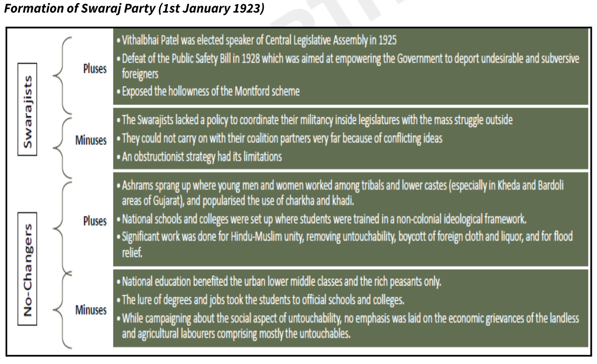
- Understanding Responsivists and Non-Responsivists
- Responsivists
- Favored cooperation with the government and accepting office when possible; led by Madan Mohan Malaviya and Lala Lajpat Rai.
- Non-Responsivists
- Opposed office acceptance, prioritizing obstruction; led by Motilal Nehru.
- March to Civil Disobedience Movement and Its Evolution
- Overview
- The Civil Disobedience Movement (CDM) of 1930-1934 marked a transformative escalation in India's struggle for independence, shifting from non-cooperation to direct defiance of British laws under Mahatma Gandhi's leadership. Building on the Non-Cooperation Movement's momentum (1920-1922), it aimed for Poorna Swaraj (complete independence) following disillusionment with British promises.
- Preparatory Phase (1929-1930)
- Gandhi's Mobilization Efforts
- Nationwide Campaign
- In 1929, Gandhi toured India extensively, rallying public support for direct action. He urged youth to brace for sacrifices and emphasized village-level constructive work—khadi promotion, education, and social reform—as a foundation for resistance.
- Boycott of Foreign Goods
- The Congress Working Committee (CWC) established a Foreign Cloth Boycott Committee in mid-1929, organizing public bonfires of foreign cloth and promoting Swadeshi goods to undermine British economic control, echoing the Non-Cooperation Movement's tactics.
- Lord Irwin's Declaration (October 31, 1929) - Diwali Declaration
- Viceroy Lord Irwin reaffirmed Dominion Status as India's ultimate constitutional goal, referencing the 1917 Montagu Declaration, and promised a Round Table Conference post-Simon Commission report. Lacking a timeline, this vague pledge disappointed Indian leaders expecting concrete steps toward self-rule.
- Delhi Manifesto (November 2, 1929)
- Prominent leaders—Gandhi, Jawaharlal Nehru, Motilal Nehru, and others—issued demands for participating in the Round Table Conference:
- It must draft a Dominion Status constitution and act as a constituent assembly.
- Congress should hold majority representation.
- General amnesty for political prisoners must be granted.
- Irwin's rejection of these terms heightened tensions, pushing Congress toward confrontation.
- Lahore Congress Session (December 26-31, 1929)
- Presided by Jawaharlal Nehru, elected president at 40, symbolizing youth leadership.
- Key Resolutions:
- Declared Poorna Swaraj as Congress's ultimate goal, rejecting Dominion Status.
- Decided to boycott the Round Table Conference, signaling distrust in British negotiations.
- Authorized the CWC to launch civil disobedience, including tax non-payment.
- Called for Congress legislators to resign, severing ties with British institutions.
- Context: Held amid rising radicalism post-Simon Commission protests (1928) and Bhagat Singh's revolutionary acts, reflecting a shift from constitutionalism to mass action.
- First Independence Day (January 26, 1930)
- Designated Swarajya Day, observed nationwide on January 26, 1930, following the Lahore resolution.
- December 31, 1929: Nehru hoisted the tricolor on the Ravi River's banks in Lahore, amid “Inquilab Zindabad” slogans, symbolizing a break from imperial allegiance.
- Public meetings across India recited the Independence Pledge in local languages, raising the national flag in towns and villages, galvanizing mass participation.
- Gandhi's 11-Point Ultimatum (January 31, 1930)
- Presented to Viceroy Irwin, demands addressed diverse interests:
- General Interest:
- Reduce Army and high-grade civil service salaries by 50% to curb expenditure.
- Enforce total prohibition of intoxicants, targeting revenue and social ills.
- Reform the CID, notorious for political surveillance.
- Release all political prisoners, including those from Non-Cooperation and revolutionary trials.
- Accept the Postal Reservation Bill to reserve jobs for Indians.
- Amend the Arms Act of 1878 for popular control over firearm licenses, challenging British monopoly on force.
- Capitalists' Interests:
- Lower the rupee-sterling exchange rate to 1s 4d (from 1s 6d), aiding Indian exports.
- Reserve coastal shipping for Indians, boosting domestic trade.
- Protect Indian textiles against British imports, supporting industrialists.
- Peasants' Interests:
- Cut agricultural tax by 50% and place it under legislative control, easing rural burdens.
- Abolish the salt tax and government salt monopoly, a universal grievance.
- Government Response:
- Irwin's dismissive reply offered no concessions, prompting the CWC (Congress Working Committee) to authorize Gandhi to launch the CDM at his discretion.
- Gandhi remarked: “On bended knees I asked for bread and received a stone instead. The English nation responds only to force.”
- Analysis of the statement
- "On bended knees I asked for bread"
- This signifies Gandhi's willingness to seek justice and reforms through non-violent means, negotiation, and moral persuasion. He believed in appealing to the British conscience, hoping for a fair response.
- "Received a stone instead"
- Instead of responding positively, the British government resorted to repression—passing draconian laws (like the Rowlatt Act, 1919), violent crackdowns (Jallianwala Bagh massacre), and continued economic exploitation.
- "The English nation responds only to force"
- This highlights Gandhi's realization that moral appeals alone were ineffective against colonial rulers. While he remained committed to non-violence, he recognized that mass resistance and direct action (e.g., Non-Cooperation, Civil Disobedience, Quit India Movements) were necessary to force the British to concede ground.
- Additional Context:
- The Royal Commission on Indian Currency and Finance (1926), or Hilton Young Commission, recommended establishing the Reserve Bank of India (founded 1935), reflecting broader economic demands in Gandhi's ultimatum.
- Launch of Civil Disobedience Movement (March-April 1930)
- Preparations
- February 1930: The CWC empowered Gandhi to choose the CDM's timing and focus. He selected the salt tax—levied since the 1882 Salt Act, affecting all classes—as a unifying symbol of British exploitation.
- Dandi Salt March (March 12-April 6, 1930)
- On March 2, Gandhi informed Irwin of his plan. Starting with 78 followers from Sabarmati Ashram, he marched 240 miles to Dandi, Gujarat, addressing swelling crowds en route.
- April 6: Gandhi broke the salt law by picking up a lump of natural salt, triggering nationwide defiance as millions followed suit.
- Salt Act (1882)
- Overview
- The Salt Act of 1882 was a British colonial law in India that gave the government a monopoly over the production, sale, and taxation of salt.
- It prohibited Indians from producing or selling salt independently, forcing them to buy heavily taxed salt from British authorities. Given salt's essential role in daily life, this law was deeply resented and symbolized British economic exploitation.
- Key Provisions
- The act restricted salt manufacture and sale to licensed producers approved by the British government.
- It imposed heavy taxes on salt, making it unaffordable for poor Indians.
- Indians were banned from freely collecting natural salt from coastal regions or salt lakes.
- Violation of the act led to fines and imprisonment.
- Impact on Indians
- The law disproportionately affected the poor, for whom salt was a basic necessity.
- It became a symbol of British economic oppression, as it forced Indians to pay excessive amounts for a natural resource.
- The act was one of the key triggers for nationalist resistance against British rule.
- Symbolism: A nonviolent act of resistance, it showcased India's collective will; Subhas Chandra Bose likened it to Napoleon's march to Paris from Elba (1815), highlighting its strategic audacity.
- Napoleon's March to Paris from Elba (1815)
- Background
- After his defeat in the War of the Sixth Coalition, Napoleon Bonaparte was forced to abdicate (formally renounce or give up a position of power, authority, or responsibility, especially a throne or leadership role) in April 1814 and was exiled to the small Mediterranean island of Elba.
- The victorious European powers, led by Britain, Austria, Prussia, and Russia, restored the Bourbon monarchy in France under King Louis XVIII.
- However, discontent grew under the new regime due to economic problems, unpopular policies, and the return of the aristocracy.
- The Escape from Elba
- On February 26, 1815, Napoleon escaped from Elba with a small force of about 1,000 men, including loyal soldiers and officers.
- He landed on the French coast at Golfe-Juan (near Cannes) on March 1, 1815, beginning what is known as the Hundred Days—his dramatic return to power.
- The March to Paris
- Napoleon avoided royalist strongholds and took a route through the Alps, knowing he could win support among soldiers and peasants.
- At Grenoble (March 7, 1815), the first significant confrontation occurred. Instead of attacking, Napoleon walked unarmed towards the royalist troops, declaring, "If any among you will shoot his Emperor, here I am!" The soldiers joined him instead of resisting.
- By the time he reached Lyon (March 10, 1815), he had gathered thousands of troops, and the city welcomed him enthusiastically.
- King Louis XVIII sent Marshal Ney, a former Napoleonic general, to stop him. Ney initially declared loyalty to the king but, upon meeting Napoleon on March 14, 1815, famously pledged, "I would not fight against the bravest of the brave" and joined him.
- As Napoleon advanced, the French army and people overwhelmingly supported him, and the Bourbon monarchy collapsed without significant resistance.
- On March 20, 1815, Napoleon entered Paris unopposed, forcing King Louis XVIII to flee to Belgium.
- Impact and Consequences
- Napoleon's dramatic return reignited war in Europe, as the Seventh Coalition (Britain, Prussia, Austria, Russia, and others) quickly mobilized against him.
- He ruled France for 100 days, attempting to consolidate power and reform the army.
- His comeback ended at the Battle of Waterloo (June 18, 1815), where he was decisively defeated by the Duke of Wellington and Prussian forces under Blücher.
- After his final defeat, Napoleon was exiled to the remote island of Saint Helena, where he died in 1821.
- Civil Disobedience Movement: Phase 1 (April-December 1930)
- Regional Spread
- Tamil Nadu: C. Rajagopalachari led a salt march to Vedaranniyam, bolstered by anti-liquor campaigns targeting excise revenue.
- Malabar: K. Kelappan organized salt marches; P. Krishna Pillai faced police brutality at Calicut, amplifying defiance.
- Andhra Pradesh: Salt protests erupted in East and West Godavari, Krishna, and Guntur districts, disrupting British salt production.
- Bengal: Midnapur and rural areas saw salt protests and tax resistance, challenging land revenue systems.
- Assam: Students defied the Cunningham Circular (banning political activity), sparking widespread unrest.
- Peshawar: Khan Abdul Ghaffar Khan's Khudai Khidmatgars led protests; Garhwal Rifles soldiers refused to fire on unarmed crowds, signaling military dissent.
- Sholapur: Workers struck, destroyed British symbols, and briefly ran a parallel government, showcasing industrial militancy.
- Manipur and Nagaland: Rani Gaidinliu, a 13-year-old Naga leader, inspired by her cousin Haipou Jadonang, raised a revolt, blending tribal resistance with nationalism.
- Dharasana Raid (May 21, 1930): Post-Gandhi's arrest on May 4, Sarojini Naidu, Imam Sahib, and Manilal Gandhi led a nonviolent raid on Dharasana Salt Works. Police brutality—captured by journalist Webb Miller—shocked the world, injuring over 300.
- Mobilization Methods
- Prabhat pheris (dawn processions), vanar senas (youth brigades), manjari senas (women's brigades), secret patrikas (pamphlets), and magic lantern shows spread awareness and morale.
- Forest Law Violations: Central Provinces and Karnataka saw defiance of British forest monopolies, reclaiming resources.
- No-Tax Campaigns: Gujarat villagers migrated to princely states like Baroda to evade taxes, disrupting revenue collection.
- Government Response
- Repression: June 1930 ordinances—Prevention of Intimidation and Unlawful Instigation—banned Congress affiliates, imposed press censorship, and arrested over 60,000 by year-end.
- During the Civil Disobedience Movement (CDM) in 1930, the British government, under Viceroy Lord Irwin, responded with severe repression. A series of ordinances were issued in June 1930 to curb the movement's momentum, including the Prevention of Intimidation and Unlawful Instigation Ordinance.
- These ordinances aimed to suppress nationalist activities, particularly those involving mass mobilization, boycotts, and civil disobedience.
- Key Features of the Ordinance:
- Restrictions on Public Gatherings
- Prohibited large meetings, particularly those instigating defiance against the British authorities.
- Criminalization of Intimidation
- Any form of coercion, whether verbal threats or physical intimidation, against government officials or those refusing to participate in the movement was penalized.
- Censorship and Press Suppression
- Nationalist newspapers and pamphlets that encouraged resistance were banned or heavily censored.
- Arrests Without Trial
- Authorities were given the power to detain individuals indefinitely without formal charges.
- Confiscation of Property
- Properties of movement leaders and active participants could be seized.
- Impact of the Ordinance:
- Widespread Arrests:
- Prominent leaders, including Mahatma Gandhi, were arrested, leading to an escalation of tensions.
- Increased Repression:
- British officials used force to disperse protests, often leading to violence and further radicalization of the movement.
- Public Defiance:
- Despite the harsh measures, civil disobedience persisted, with volunteers continuing salt satyagrahas, picketing liquor shops, and boycotting foreign goods.
- International Condemnation:
- The crackdown attracted global criticism, increasing sympathy for the Indian cause, particularly in Britain and the United States.
- Negotiation Attempt: July 1930, Irwin proposed a Round Table Conference emphasizing Dominion Status. Liberals Tej Bahadur Sapru and M.R. Jayakar mediated, meeting Gandhi, Motilal, and Jawaharlal Nehru in Yerwada Jail in August, but Congress demands—independence, defense control, and an independent tribunal—were unmet.
- First Round Table Conference (November 12, 1930-January 19, 1931)
- Participants: British officials, princely states, and minorities (Muslims, Sikhs, depressed classes); Congress and major business leaders boycotted it.
- Outcomes: Agreed on an All-India Federation, provincial autonomy, and Dr. B.R. Ambedkar's push for separate electorates for depressed classes, but lacked Congress input, limiting legitimacy.
- Gandhi-Irwin Pact (March 5, 1931)
- Negotiation Process
- Liberal Appeal: Indian Liberal Party members—Tej Bahadur Sapru, C.Y. Chintamani, Srinivasa Sastri—urged Gandhi to negotiate post-First RTC failure.
- Releases: January 25, 1931, Gandhi and CWC members were freed unconditionally; the CWC authorized Gandhi to meet Irwin.
- Talks: February 17-March 5, Gandhi and Irwin held eight meetings, culminating in the pact.
- British Concessions (a thing that is granted, especially in response to demands)
- Immediate release of non-violent political prisoners.
- Remission of uncollected fines.
- Return of confiscated lands not sold to third parties.
- Lenient reinstatement for resigned government servants.
- Permission for coastal villages to make salt for personal use (not sale).
- Right to peaceful picketing of liquor and foreign goods shops.
- Withdrawal of emergency ordinances.
- Rejected Demands
- No public inquiry into police excesses, despite widespread brutality reports.
- Refusal to commute Bhagat Singh, Rajguru, and Sukhdev's death sentences (executed March 23, 1931), despite Gandhi's plea, sparking public outrage.
- Congress Commitments
- Suspend CDM, attend the Second Round Table Conference, and halt boycotts temporarily.
- Karachi Special Congress Session (March 26-31, 1931)
- Presided by Sardar Vallabhbhai Patel, reflecting his rising stature.
- Key Developments:
- Ratified (to officially approve, confirm, or validate a decision, treaty or agreement) the Gandhi-Irwin Pact, despite dissent over Bhagat Singh's execution.
- Adopted Fundamental Rights and National Economic Programme (drafted by Nehru with M.N. Roy), outlining civil liberties and economic justice.
- Condemned political violence but admired martyrs' sacrifices, balancing Gandhi's non-violence with revolutionary sentiment.
- Reaffirmed Poorna Swaraj as the goal.
- Significance: First clear articulation of Swaraj's socio-economic dimensions for the masses.
- Second Round Table Conference (September 7-December 1, 1931)
- Participants: Congress joined, with Gandhi, Madan Mohan Malaviya, Sarojini Naidu, G.D. Birla, and others, alongside Muslim League, Hindu Mahasabha, and Ambedkar for depressed classes.
- Challenges:
- Shift from Labour to National Government in Britain diluted focus; Irwin's replacement, Lord Willingdon, adopted a hardline stance.
- Communal issues dominated, culminating in a Minorities' Pact for separate electorates, deepening divisions.
- Outcome: No agreement; Prime Minister Ramsay MacDonald announced a unilateral Communal Award (August 1932), establishing NWFP and Sindh as Muslim-majority provinces and forming advisory committees on finance, franchise, and federation.
- Civil Disobedience Movement: Phase 2 (January 1932-April 1934)
- Relaunch
- December 29, 1931: Post-Second RTC failure, the CWC relaunched CDM amid (surrounded by; in the middle of) Willingdon's refusal to negotiate further.
- January 4, 1932: Gandhi was arrested; Congress organizations were banned, properties like Sabarmati Ashram seized, and media curbs tightened.
- Public Reaction
- [Your opinion placeholder: As per your instruction, list your view here first.]
- Nationwide protests erupted, with over 120,000 arrests by 1933; rural defiance persisted via no-tax campaigns and urban picketing, though momentum waned under repression.
- Government Crackdown
- Willingdon's regime intensified arrests, banned Congress nationwide, and suppressed dissent, contrasting Irwin's conciliatory (intended or likely to placate or pacify) approach.
- Third Round Table Conference (November 17-December 24, 1932)
- Limited Participation: Minimal Indian representation; Congress boycotted, rendering it ineffective.
- Outcome: Produced a White Paper (March 1933) outlining constitutional reforms, criticized for lacking Indian input.
- Government of India Act, 1935
- Background
- Based on the Third RTC's White Paper, it aimed to appease Indian demands while retaining British control, facing universal criticism from Congress and others for falling short of independence.
- Key Provisions
- All-India Federation:
- Proposed uniting British provinces and princely states (never implemented, as states' accession failed).
- Provincial Autonomy:
- Granted provinces control over all departments via elected governments, free from GOI oversight except in emergencies, with governors retaining ordinance (an authoritative order) powers.
- Dyarchy at Center:
- Reserved subjects (defense, foreign affairs) under Governor General's counselors; transferred subjects (e.g., education) with ministers answerable to legislature.
- Safeguards:
- Vested special powers in executives to override legislatures, ensuring British dominance.
- Structural Changes
- National Level:
- Federation required states to fill half of 52 Council of States seats and represent 50% of princely populations—conditions unmet by 1939.
- Abolished the Indian Council (1858), long a target of nationalist ire (ire).
- The Indian Councils Acts (1861, 1892, 1909):
- These were Acts passed by the British Parliament to change the structure and functions of the councils in India. They are often collectively referred to when discussing constitutional reforms.
- Act of 1861:
- This act marked a beginning for representative institutions by allowing the Viceroy to nominate Indians as non-official members to his expanded Legislative Council.
- It also restored legislative powers to the Bombay and Madras presidencies (decentralization) and introduced the portfolio system for the Viceroy's Executive Council.
- Act of 1892:
- This act increased the number of non-official members in the Central and Provincial Legislative Councils.
- It introduced a limited system of indirect election (members recommended by local bodies like municipalities, district boards, universities, etc.) and gave the councils the power to discuss the budget and ask questions to the executive.
- Act of 1909 (Morley-Minto Reforms):
- Further expanded the legislative councils and introduced separate electorates for Muslims, significantly impacting Indian politics.
- It also allowed members to ask supplementary questions and move resolutions.
- Central Government:
- Bicameral (divided into two separate assemblies, chambers, or houses) legislature—Council of States (upper house) and Federal Assembly (lower house)—with princely states overrepresented to counter nationalists.
- Provincial Government:
- Ended provincial dyarchy (government by two independent authorities), establishing fully responsible governments subject to governors' safeguards.
- Introduced bicameral legislatures in Bengal, Madras, Bombay, United Provinces, Bihar, and Assam.
- Other Features:
- Created Burma as a separate entity (1937).
- Lowered franchise but tied it to property, limiting voters to 14% of the population.
- Extended separate electorates to women, following Ambedkar's advocacy.
- Established Federal Bank (Reserve Bank of India, 1935), Federal Court (1937), and Federal Railway Authority, insulated from ministerial control.
- Critique: Lacked a preamble defining self-governance goals, reinforcing British intent to delay full independence.
- British Acts and Regulations (1858-1935)
- GOI Act, 1858
- Background
- Key Context
- The Revolt of 1857 dealt a fatal blow to the existing governance system, accelerating demands for transferring power from the East India Company to the Crown.
- Lord Palmerston (British PM) first introduced a bill for this transfer.
- Later, Edward Henry Stanley (the first Secretary of State for India) introduced “An Act for the Better Government of India,” passed on August 2, 1858.
-
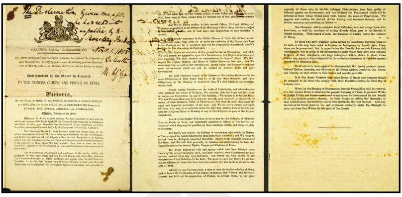
- Main Provisions
- Power Transfer
- Ended the Company's rule in India, transferring power to the Crown.
- Abolished the Court of Directors and Board of Control, shifting their powers to the Secretary of State for India and a 15-member Indian Council.
- The Indian Council assisted and advised the Secretary of State, governing India in the Crown's name. All 15 members were British (not Indians).
- The council operated from London, UK. It was part of the India Office (located at London), which handled British governance over India.
- The Secretary of State, a British Cabinet member, was accountable to Parliament and required to submit periodic reports on India's moral and material progress.
- The Secretary of State was declared a corporate body, capable of suing and being sued in England and India.
- The Governor General was titled Viceroy, becoming the Crown's direct representative.
- Significance
- Impact of the Act
- Marked the end of Company rule, though the power transfer was more formal than substantial.
- The name change aimed to erase past grievances and offer a fresh start for the empire.
- Followed by Queen Victoria's Proclamation on November 1, 1858, at a grand Durbar in Allahabad, known as the “Magna Carta of the People of India,” outlining future British policy in India.
- Indian Councils Act, 1861
- Background
- Historical Context
- The Regulating Act initiated centralization, culminating in the 1833 Act, which stripped provinces of legislative powers. The 1861 Act reversed this trend, starting decentralization.
- Lord Canning (Governor General) and Sir Charles Wood (Secretary of State) facilitated its passage.
- Main Provisions
- Changes in Governance
- Changes in the Viceroy's Executive Council
- Expanded by adding a fifth member, a jurist.
- Changes in the Central Legislature
- Size and Composition
- Enlarged by adding 6-12 additional members, nominated by the Governor General for two years, with at least half being non-officials. Legislative functions were strictly limited to law-making.
- Functions
- Restored legislative powers to Bombay and Madras Councils, though laws required the Governor General's assent, imposing rigid restrictions.
- Other Changes Introduced
- Allowed establishment of new councils in provinces like North Western Provinces (1886), Burma, and Punjab (1897).
- Empowered the Governor General to issue ordinances in emergencies (valid for six months) without Legislative Council concurrence.
- Authorized the Governor General to create new provinces, appoint Lieutenant Governors, and adjust territorial boundaries.
- Decentralization of Business
- The Governor General could make rules for efficient council transactions.
- Lord Canning introduced the portfolio system, dividing departments among council members, laying the foundation for India's cabinet system.
- Limitations
- Legislative Constraints
- No clear demarcation of legislative powers between Central and Local Legislatures; the Governor General retained authority to legislate for all of India.
- Indian Councils Act, 1892
- Main Provisions
- Legislative Adjustments
- Changes in the Central Legislature
- Increased additional members to 10-16, with at least half non-officials.
- Provided for 8-12 non-official members in Provincial Legislatures, though official majorities were maintained centrally and provincially.
- Other Changes
- Empowered the Governor General to introduce limited elections.
- Regulations for nominating additional members were set by the Governor General-in-Council, though nominees were not representatives but appointees.
- Introduced a cautious, indirect election system, avoiding the term “election.”
- Expanded Functions
- Members could discuss the annual financial statement (unalterable) and ask questions on public interest matters with six days' notice, though supplementary questions were barred.
- Criticism
- The Indian National Congress criticized the Act in its 1892 and 1893 sessions for failing to introduce direct elections.
- Indian Councils Act of 1909 (Morley-Minto Reforms)
- Background
- Political Climate
- Introduced amid rising political unrest and dissatisfaction with British rule.
- The 1906 British Liberal Party victory raised reform prospects, believing Indian legislative participation would strengthen British control.
- The 1906 Shimla Deputation, led by Aga Khan, proposed separate Muslim electorates to Lord Minto.
- Main Provisions
- Structural Reforms
- Indian Entry in Viceroy's Executive Council
- Satyendra Sinha became the first Indian appointed in 1909.
- Expansion of Members
- Increased elected members in Imperial and Provincial Legislative Councils, with non-official majorities in provinces.
- Central Legislative Council: 69 members (37 officials, 5 nominated non-officials, 27 elected non-officials), with seats for Muslims, British capitalists, landlords, and a general electorate.
- Emphasized representation by classes and interests over territorial representation.
- Legislative Powers
- Members could discuss financial statements, move resolutions (as recommendations only), and ask supplementary questions, though some topics (e.g., foreign relations) were restricted.
- Introduction of Elections
- Indirect elections for non-officials, based on class and community, with recognized bodies recommending candidates.
- Provision of Separate Electorates
- Introduced for Muslims in the Central Legislative Council, with overrepresentation and low-income voting qualifications serving British strategic interests.
- Government of India Act of 1919 (Montagu-Chelmsford Reforms)
- Background
- Foundational Declaration
- Based on the Montagu Declaration of August 20, 1917, promising increased Indian administrative participation and gradual self-governance within the British Empire.
- Provisions
- Governance Changes
- Changes in Home Government
- Appointed a High Commissioner for India in London for trade, funded by Indian revenue, not the British Exchequer.
- Changes in Government of India
- Viceroy's Executive Council
- Three of eight members were to be Indian, aligning with the policy of Indian association.
- Bicameral System
- Replaced the single Legislative Council with the Council of States (Upper House) and Legislative Assembly (Lower House), with elected members under limited franchise.
- Expansion of Functions
- All members could ask supplementary and short-notice questions, enjoying freedom of speech.
- Changes in Provincial Governments
- Provincial Autonomy
- Introduced via “Devolution Rules,” defining independent provincial powers in finance, legislation, and administration.
- Legislative Devolution
- Divided legislative items into Central and Provincial Lists, with residual powers vested in the Governor General-in-Council.
- Provincial List split into “Transferred” (managed by Indian ministers accountable to the Legislative Council) and “Reserved” subjects (managed by Governors and their Executive Councils), creating dyarchy.
- Financial Devolution
- Separated revenue sources: land revenue, excise, irrigation, and stamps became provincial; budgets were split from the center, with provinces authorized to frame their own.
- Other Provisions
- Introduced direct elections with limited franchise.
- Extended communal representation to Sikhs, Indian Christians, Anglo-Indians, and Europeans, alongside Muslims.
- Established the Central Public Service Commission (1926) for civil servant recruitment.
- Provided for a Statutory (required, permitted, or enacted by statute (legislative body)) Commission to review the Act after 10 years.
- Points to Know
- Additional Insights
- Initially applied to eight provinces (Bengal, Madras, Bombay, UP, Punjab, Bihar, Orissa, Central Provinces), extended to Burma (1923) and NWFP (North-West Frontier Provinc) later.
- Women could neither vote nor contest elections, reflecting Britain's own post-1918 suffrage timeline.
- The Muddiman Report analyzed dyarchy's implementation.
- Simon Commission and Its Aftermath (1927-1929)
- Overview
- The Simon Commission, formally the Indian Statutory Commission, was appointed in November 1927 to review the Government of India (GOI) Act 1919, sparking widespread Indian resistance due to its all-British composition.
- Its arrival in 1928 catalyzed political unity efforts, notably the Nehru Report, and intensified demands for independence, setting the stage for the Civil Disobedience Movement.
- Formation and Context of the Simon Commission
- Background
- The GOI Act 1919 mandated a decennial review of constitutional progress. In 1927, Britain's Conservative government under Stanley Baldwin preempted a potential Labour-led review by advancing it to November 8, fearing more progressive reforms.
- Named after its chairman, Sir John Simon, the seven-member, all-white commission excluded Indians, justified by its accountability to the British Parliament rather than Indian stakeholders.
- Appointed amid rising nationalist activity, including the Swaraj Party's legislative disruptions and youth movements led by Jawaharlal Nehru and Subhas Chandra Bose.
- Purpose
- Assessed India's readiness for further self-governance under the 1919 Act, focusing on dyarchy's effectiveness and administrative structures, amid growing demands for Dominion Status or independence.
- Preceding Reports
- Lee Commission (1924): Investigated racial disparities in the Imperial Civil Services, recommending increased Indian recruitment.
- Muddiman Commission (1924): Examined dyarchy's operational flaws, suggesting minor adjustments rather than overhaul.
- Linlithgow Commission (1926): Addressed agricultural crises and rural economy, highlighting peasant distress as a nationalist rallying point.
- Indian Reactions to the Simon Commission
- Political Opposition and Boycotts
- Congress Response
- At the Madras Session (December 1927), presided by M.A. Ansari, Congress resolved to boycott the commission “at every stage and in every form,” reflecting outrage at Indian exclusion.
- Jawaharlal Nehru advocated complete independence over Dominion Status, galvanizing radical youth.
- Congress launched the All Parties Conference to draft an alternative constitution, seeking cross-party unity.
- Broader Opposition
- Hindu Mahasabha, Liberal Federation (led by Tej Bahadur Sapru), Jinnah's Muslim League faction, and the Indian Industrial and Commercial Congress joined the boycott, decrying the commission as unrepresentative.
- Supporters
- Unionists in Punjab (landlord-dominated), Justice Party in South India (non-Brahmin elites), and All India Achyut Federation (pro-British untouchable groups) endorsed it, aligning with colonial interests.
- Delhi Proposals (December 1927)
- Unity Initiative
- Presided by Jinnah, this Muslim League-led effort aimed to align Congress and Muslim demands:
- Joint electorates with reserved Muslim seats.
- One-third Muslim representation in the Central Legislative Assembly.
- Proportional representation in Punjab and Bengal.
- Creation of Muslim-majority provinces: Sindh, Balochistan, North-West Frontier Province (NWFP).
- Congress accepted most terms, but internal Muslim League splits (e.g., Shafi faction's dissent) and Hindu Mahasabha's rejection of concessions derailed unity.
- All Parties Conference and the Nehru Report (1928)
- Establishment
- Convened in February 1928 by M.A. Ansari, it included Congress, Muslim League, Hindu Mahasabha, Sikh Central League, and others, agreeing on Dominion Status as a compromise goal.
- Resulted in the Nehru Report (released August 1928, finalized May), India's first indigenous constitutional draft, chaired by Motilal Nehru.
- Key Recommendations of Nehru Report
- Constitutional Framework
- Dominion Status: India as a self-governing Commonwealth member.
- Fundamental Rights: Universal adult suffrage, equal rights (religion, speech, gender), and legal equality.
- Minority Safeguards: Joint electorates with reserved seats for minorities; special status for Muslim-majority provinces (e.g., Sindh separated from Bombay, NWFP granted provincial status).
- Provincial Reorganization: Linguistic basis for provinces, enhancing regional identity.
- Federal Structure: Centralized federal government with provincial autonomy, residual powers retained centrally (more unitary than federal in practice).
- Responsible Government: Bicameral legislature (upper and lower houses) and a judicial hierarchy culminating in a supreme court.
- Additional Provisions
- Balochistan elevated to full province status; communal representation to be reviewed after 20 years.
- Princely States Dilemma
- The Nehru Committee grappled with integrating Princely States.
- The 1927 States People Conference demanded self-governance, but the Butler Committee (1927-1928, under Sir Harcourt Butler) reinforced British paramountcy, preserving princely autonomy under Crown suzerainty.
- British Perspective
- Lord Birkenhead, Secretary of State, defended Indian exclusion, citing irreconcilable political divisions and challenging Indians to produce a unified constitution—a dare that spurred the Nehru Report.
- Opposition and Divisions
- Political Reactions
- Muslim League (Jinnah faction), Hindu Mahasabha, and Sikh League opposed the Nehru Report, rejecting its unitary tilt and inadequate communal safeguards.
- Jinnah's Amendments (Rejected):
- One-third Muslim representation in the central legislature.
- Proportional representation in Punjab and Bengal.
- Residual powers to provinces, favoring federalism over centralization.
- Outcome: Jinnah's 14 Points (March 1929) emerged as a counterproposal, shaping Muslim League's future separatism.
- Compromises in Nehru Report
- Final Adjustments: Adopted joint electorates except in Muslim-majority areas; Sindh separation contingent on Dominion Status; retained centralized residual powers.
- Submission: Approved by the All Parties Conference without Jinnah's amendments, signaling partial unity but exposing communal fissures.
- Calcutta Congress Session (December 1928)
- Internal Dynamics
- Presided by Motilal Nehru, the session endorsed the Nehru Report but faced dissent from younger leaders—Jawaharlal Nehru, Subhas Chandra Bose, and S. Satyamurthy—who rejected Dominion Status for complete independence.
- Independence of India League: Formed April 1928 by Nehru, Bose (Secretary), and S. Srinivasa Iyengar (President), it pushed for radical action over constitutional compromise.
- Ultimatum
- Congress set a one-year deadline (until December 31, 1929) for Britain to grant Dominion Status, threatening civil disobedience for Poorna Swaraj if unmet—a decisive shift toward mass agitation.
- Outcomes and Legacy
- Simon Commission's Reception
- Arrived in India on February 3, 1928, met with nationwide protests—“Simon Go Back” slogans, black flags, and hartals—reflecting unified Indian rejection.
- Submitted its report in May 1930, recommending provincial autonomy, dyarchy abolition in provinces, and a federal framework, but ignored by Congress due to its exclusionary process.
- Catalyst for Unity and Radicalization
- Spurred the Nehru Report as a nationalist counter-narrative, though its failure to bridge communal divides foreshadowed future tensions.
- Pushed Congress toward Poorna Swaraj at the Lahore Session (December 1929), launching the Civil Disobedience Movement in 1930.
- Government of India Act of 1935
-
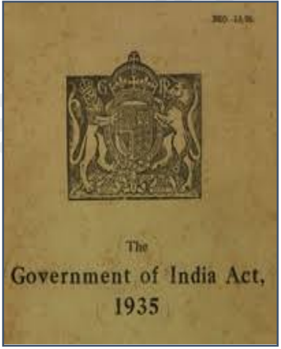
- Background
- Policy Foundation
- Based on the White Paper on the Indian Constitution post-Third Round Table Conference, criticized by all political parties for falling short of complete independence.
- Main Provisions
- Structural Reforms
- Contained four major provisions: All India Federation, Provincial Autonomy, dyarchy at the center, and safeguards vesting special powers with central and provincial executives.
- Provided legal safeguards against misbehavior by Indian ministers and legislators; notably lacked a preamble.
- Changes at National Level
- Proposal for an All India Federation (never materialized)
- Voluntary accession for states, requiring at least half of the 52 allotted Council of States seats and 50% of the states' population to join.
- Abolished the Indian Council (from the 1858 Act) due to anti-India policy agitations.
- Changes in Government of India
- Dyarchy at the Centre
- Introduced dyarchy centrally: Reserved Departments under the Governor General with appointed counselors; Transferred subjects advised by ministers answerable to the legislature.
- Bicameral Central Legislature
- Comprised the Governor General, Council of States, and Federal Assembly, with representation from British India and Princely States (disproportionate weightage for states as nationalist checks).
- Changes in Provincial Government
- Provincial Autonomy
- All departments controlled by elected members, provinces recognized as separate legal entities deriving power from the Crown, free from GOI (Government Of India) and SOS (Secretary of State) control except for specific purposes.
- Governors could issue ordinances or enact Governor's Acts.
- Abolition of Dyarchy in Provinces
- Eliminated the distinction between Reserved and Transferred subjects, establishing fully responsible government with safeguards.
- Bicameral Legislature
- Introduced in six provinces: Bengal, Madras, Bombay, United Provinces, Bihar, and Assam.
- Other Provisions
- Created new provinces (e.g., Burma separated from India).
- Lowered franchise, though tied to property qualifications.
- Extended separate electorates to women.
- Established Federal Bank, Federal Court (1935, 1937), and Federal Railway Authority (free from ministerial control).
- Indian National Movement Post CDM (1935-1942) - Legislative Engagement & Growing Radicalism phase
-
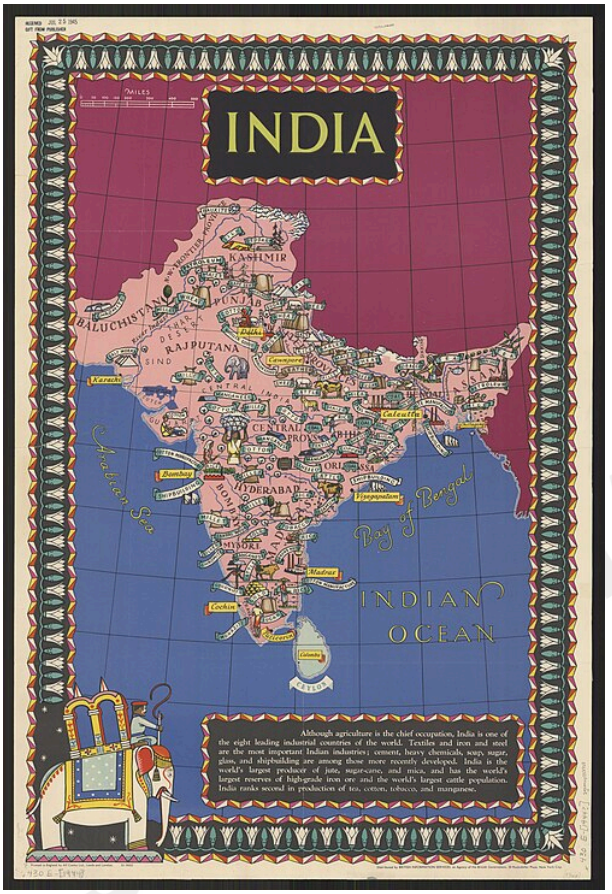
- Understanding Depressed Classes Politics in the 1900s
- Introduction
- The early 20th century marked a transformative period for the Depressed Classes in India. British colonialism opened new avenues for social mobility, challenging the rigid caste hierarchy.
- Awareness of rights grew among the Depressed Classes, intensifying tensions with caste Hindus.
- Representation and equality emerged as central issues, shaped by key leaders and policies in their fight for political and social justice.
- Key Developments: The Minorities Pact
- Context
- During the Round Table Conference (RTC), Dr. B.R. Ambedkar initially supported joint electorates with reservations but shifted his stance when his demand for universal adult suffrage (right to vote) was rejected.
- He aligned with Muslim, Anglo-Indian, and Christian representatives to form the Minorities Pact.
- Provisions
- Proposed separate electorates for the Depressed Classes, with a referendum planned after 20 years to reassess the arrangement.
- Reason for Shift
- Ambedkar's universal adult suffrage proposal was opposed by the Muslim League, princely states, and the British government, which hesitated to adopt it.
- Without universal suffrage, Dalit representatives risked being elected mainly by caste Hindus, leaving their political influence stagnant (motionless).
- Key Developments: The Rajah-Moonje Pact (1932)
-
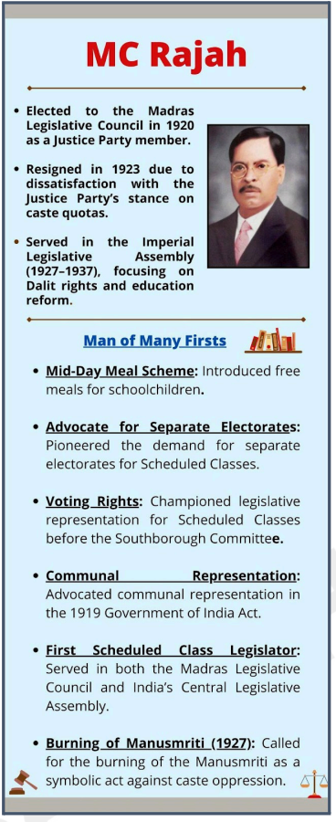
- Overview (No Need to Memorize)
- In 1932, the Hindu Mahasabha, aiming to preserve Hindu unity, collaborated with M.C. Rajah.
- Provisions included reserved seats for Dalits within joint electorates to promote unity while consolidating Hindu interests.
- Impact: Rajah's shift from supporting separate electorates to joint electorates split Dalit opinion, reflecting the evolving political landscape and lack of consensus among Dalit leaders.
- The Communal Award (August 16, 1932)
- Background
- Announced by British PM Ramsay MacDonald, based on the Lothian Committee (Indian Franchise Committee) recommendations after the Second RTC, to ensure representation for minorities and marginalized groups, including Muslims, Sikhs, Christians, Anglo-Indians, Europeans, and Depressed Classes.
- Lothian Committee Recommendations (For Understanding)
- Expansion of electorates for provincial and federal assemblies.
- Reservation of 2-5% of seats for women.
- Specific provisions treating Depressed Classes as a distinct minority.
- Left representation decisions for princely states to the states themselves.
- Key Provisions
- Allocated separate electorates for Muslims, Sikhs, Christians, Anglo-Indians, Europeans, and Depressed Classes.
- Reserved 71 seats for Depressed Classes in provincial legislatures (later raised to 148 under Gandhi) and 18% of total seats in the central legislature.
- Provided weightage to Muslims in minority provinces.
- Doubled the number of seats in provincial legislatures for better representation.
- Reserved 3% of seats for women in most provinces.
- Allotted seven seats for Marathas in Bombay.
- Included educational grants to improve facilities for Depressed Classes.
- Responses
- Congress: Opposed separate electorates but avoided altering the Award without minority consent, adopting a stance of neither acceptance nor rejection.
- Gandhi: Saw it as a threat to Indian unity, opposed segregating Depressed Classes politically, and launched an indefinite fast to demand joint electorates with reserved seats.
- Poona Pact (September 1932)
- Agreement signed between Mahatma Gandhi and Dr. B.R. Ambedkar at Yerwada Jail, Poona, to resolve the dispute over separate electorates for Depressed Classes.
- Key Provisions
- Increased reserved seats for Depressed Classes from 71 to 148 in provincial legislatures and maintained 18% in the central legislature.
- Established joint electorates with reserved seats for Depressed Classes.
- Introduced a primary election system, where an electoral college of Depressed Class candidates would finalize nominations.
- Provided educational grants and ensured no disabilities for Depressed Classes.
- Made the reservation system subject to future mutual agreement.
- Outcome
- Amended the Communal Award and was approved by the British government.
- Post-CDM and the Transition to Constitutional Politics
- End of Civil Disobedience Movement (CDM)
- In April 1934, Gandhi withdrew the CDM, shifting from mass struggles to a phase of non-mass political activity.
- Three perspectives emerged on the next steps:
- Gandhian Constructive Work: Focused on Harijan upliftment and rural reconstruction.
- Constitutional Struggle: Advocated by M.A. Ansari and Asaf Ali for participating in elections and working within legislative frameworks.
- Leftist Perspective: Nehru and others pushed for continued non-constitutional mass movements, criticizing Gandhi's “Struggle-Truce-Struggle” approach and favoring “Struggle-Victory.”
- Gandhi's "Struggle-Truce-Struggle" Approach
- Gandhi believed in alternating between mass movements and negotiations to achieve constitutional concessions.
- Examples:
- Non-Cooperation Movement (1920-22): Ended abruptly after the Chauri Chaura incident.
- Civil Disobedience Movement (1930-34): Suspended after the Gandhi-Irwin Pact.
- Quit India Movement (1942): A final push after failed negotiations with the British.
- Gandhi's strategy aimed at gradual progress through moral and political pressure rather than an all-out confrontation.
- Leftist "Struggle-Victory" Approach
- Nehru, Bose, and other left-leaning leaders argued for unrelenting struggle until complete victory, rejecting temporary compromises.
- Their key beliefs:
- The British would never concede independence voluntarily through negotiations.
- Movements should not pause for political deals but should escalate until colonial rule was completely dismantled.
- Greater emphasis on mass mobilization, socialism, and direct action.
- This led to tensions within the Congress, as younger and more radical leaders like Subhas Chandra Bose and Nehru often found Gandhi's methods too conservative or cautious.
- Impact of This Divide
- The leftist faction influenced Congress towards a more assertive stance, culminating in the 1930 Purna Swaraj resolution and the Quit India Movement (1942).
- Subhas Chandra Bose, who strongly opposed any truce with the British, eventually left Congress to lead the Indian National Army (INA) for armed struggle.
- Nehru, though critical of truce-based strategies, remained within the Congress framework and later shaped India’s socialist-leaning post-independence policies.
- Understanding These Factions: Neo-Swarajists
- Council Entry
- Congress leaders, dubbed Neo-Swarajists, advocated participating in the 1934 Central Legislative Assembly (CLA) elections.
- In 1933, S. Satyamurthy founded the Madras Swaraj Party to support council entry.
- C. Rajagopalachari pushed for council entry to broaden Congress's political base and prepare for future mass struggles.
- Unlike earlier Swarajists, they aimed for cooperation in legislative councils, including assuming office and forming ministries.
- Understanding These Factions: Socialists
- Class Struggle
- Led by Jawaharlal Nehru, Subhas Chandra Bose, and Jayaprakash Narayan, socialists within Congress focused on:
- Mobilizing workers and peasants for a more equitable society.
- Nationalizing key industries and resources and undertaking land reforms.
- Establishing a planned economy.
- They opposed council entry, believing it diverted focus from the anti-imperialist struggle, with Nehru strongly against participating in elections.
- Gandhi Resigns from Congress (1934)
- By 1934, Gandhi felt out of sync with Congress currents:
- Many favored parliamentary politics, which he opposed.
- His emphasis on spinning and Harijan work alienated some workers.
- Nehru's socialist group was gaining influence.
- In October 1934, Gandhi resigned from Congress to serve better through thought, word, and deed.
- Shift to Constitutional Politics
- May 1934 (AICC at Patna): Congress established a Parliamentary Board to contest upcoming elections.
- November 1934 (CLA Elections): Congress won 45 of 75 seats reserved for Indians, becoming the largest party and marking a shift from confrontation to constitutional politics.
- Congress Nationalist Party
- Formed by M.M. Malaviya and Madhav Shrihari Aney, who split from Congress to protest the 1932 Communal Award. After the 1934 elections, Congress and the Nationalist Party together held a majority in the CLA.
-
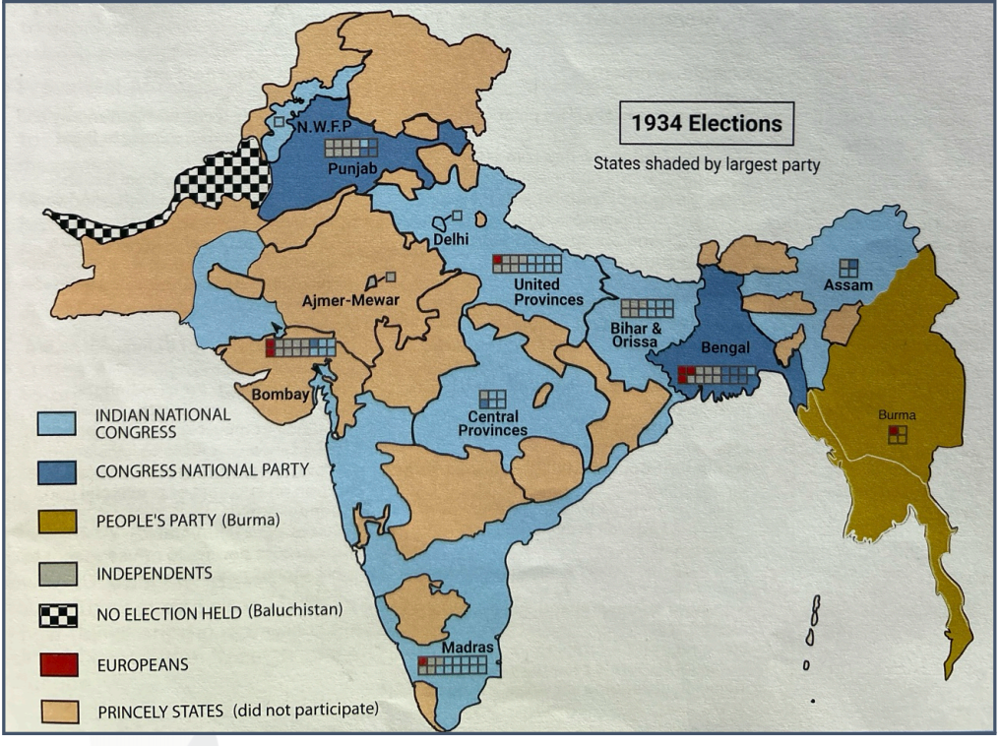
- Lucknow Session (April 1936)
- President: Jawaharlal Nehru.
- Key Outcomes:
- Highlighted socialism as vital for global and Indian issues, with three socialists—Jayaprakash Narayan, Acharya Narendra Dev, and Achyut Patwardhan—in the CWC.
- Resolved to contest elections based on an election manifesto.
- Advocated equal rights for princely state residents, matching the rest of India.
- Left the question of office acceptance pending.
- Faizpur Congress Session (December 1936) - First Rural Session
- President: Jawaharlal Nehru.
- Key Outcomes:
- Nehru condemned fascism (far-right, authoritarian, and ultranationalist political ideology).
- Called for a Constituent Assembly to draft India's constitution.
- Adopted an Agrarian Programme:
- Reduced land tax and rent by 50%.
- Recognized peasant unions (Kisan Sabhas).
- Aimed to abolish taxes paid to landlords completely.
- 1937 Provincial Elections
- Held in eleven provinces under the GOI Act 1935; Congress won majorities in seven, forming ministries except in Bengal, Punjab, and Sindh.
- Performed poorly in Upper House elections due to a limited franchise favoring landlords and moneylenders.
- Note: CLA (Central Legislative Assembly) elections of 1934 were under the GOI Act 1919, while 1937 provincial elections followed the GOI Act 1935.
-
- Question of Office Acceptance (1937)
- March 1937 (AICC Meeting, Presided by Rajendra Prasad): Conditionally accepted office if governors refrained from using special powers under the GOI Act 1935 to interfere with ministries.
- June 1937: Viceroy clarified governors would not intervene in government affairs regarding special powers.
- July 1937 (CWC at Wardha): Authorized office acceptance.
- Congress formed a Parliamentary Sub-Committee (Sardar Patel, Maulana Abul Kalam Azad, Rajendra Prasad) to prevent British divide-and-rule tactics.
- Resulted in 28 months of Congress rule focused on public welfare and reforms.
- Gandhi in Harijan: “These offices have to be held lightly and not tightly. They are crowns of thorns.”
- Analysis of this quote
- This reflects his philosophy on leadership, power, and public service.
- Leadership as a Responsibility, Not a Privilege
- Detachment from Authority
- Critique of Power-Hungry Politics
- Note: Leftists opposed office acceptance as collaboration with imperialism, while right-wing leaders like C. Rajagopalachari supported it for enabling peasant and worker reforms.
- Key Developments During Congress Rule (1937-1939)
- Administrative Reforms
- Repealed emergency laws (e.g., Public Safety Act) and lifted press restrictions.
- Released political prisoners and removed bans on groups like Hindustan Seva Dal (Communist Party ban remained).
- Social Reforms
- Promoted Harijan welfare through temple entry and scholarships.
- Expanded educational facilities and public health initiatives.
- Economic Reforms
- Encouraged khadi production with subsidies.
- Imposed prohibition in certain areas.
- Labour Reforms
- Mediated trade union protests (e.g., Industrial Disputes Bill 1938).
- Agrarian Focus
- Adopted a radical agrarian program at the 1936 Faizpur Session.
- Resignation of Congress Ministries (October 1939)
- Congress ministries resigned due to India's involvement in World War II without consultation.
- Subhas Chandra Bose and Ideological Divides
- Early Political Journey
- 1921: Joined the Non-Cooperation Movement (NCM), mentored by C.R. Das; edited *Forward*, the Swaraj Party’s newspaper, amplifying its radical voice.
- 1930: Founded the Congress Democratic Party within Congress; elected president of the All India Trade Union Congress (AITUC), championing labor rights during the Civil Disobedience Movement (CDM).
- 1933-1936: Exiled to Europe after CDM imprisonment; returned in 1936, invigorated by socialist ideas from abroad.
- Haripura Congress Session (February 1938)
- Elected Congress president, Bose saw Congress ministries (formed post-1937 elections) as revolutionary platforms.
- Advocated economic planning, establishing the National Planning Committee under Jawaharlal Nehru to draft industrial policies.
- Resolutions included:
- Vision of a Socialist State in India.
- Abolition of landlordism (zamindari system).
- Protection of workers’ rights and welfare for peasants and farmers.
- Sent a medical mission to aid Chinese forces against Japanese aggression, reflecting anti-imperialist solidarity.
- Ideological Clash with Congress Leadership
- Bose criticized senior leaders in *The Indian Struggle* (1935), labeling them “Rightists” for compromising with Britain via the Government of India Act 1935’s federal scheme, questioning their nationalist commitment.
- Congress leaders struggled to collaborate with Bose’s confrontational stance, deepening internal divides.
- Tripuri Congress Session (March 1939)
- Re-elected president, defeating Gandhi’s nominee, Pattabhi Sitaramayya (1,581 vs. 1,375 votes), despite Gandhi’s opposition.
- Gandhi called Sitaramayya’s loss “my own defeat,” signaling a personal rift.
- Bose proposed a six-month ultimatum to Britain for independence, favoring immediate struggle; Gandhi opposed, citing unpreparedness of Congress and the masses.
- Resignation and Forward Bloc
- April 29, 1939: Resigned as president due to lack of CWC support; Rajendra Prasad succeeded him.
- May 3, 1939: Formed the Forward Bloc within Congress to rally radical elements, advocating mass action.
- Faced disciplinary action after calling an All India Protest against an AICC resolution diluting anti-British resolve:
- Removed as Bengal Provincial Congress Committee president.
- Banned from Congress elective offices for three years (1939-1942).
- Congress and World War II: From Resignation to Cripps Mission
- Overview
- The outbreak of World War II in September 1939 tested the Indian National Congress’s strategies, revealing internal divisions and escalating demands for independence.
- From ministry resignations to the Cripps Mission, this period marked a shift from conditional cooperation to renewed agitation, culminating in the prelude to Quit India.
- Congress Ministries Resign and Initial War Response (October-November 1939)
- Context
- Britain’s unilateral declaration of India as a belligerent (hostile and aggressive) in World War II without consulting Indian leaders sparked outrage, prompting Congress to reassess its position.
- Congress Demands and Actions
- October 23, 1939: The Congress Working Committee (CWC) met in Wardha, condemning Britain’s decision and demanding consultation and self-determination.
- Resignation of Ministries: By November 10, Congress-led provincial governments (e.g., Bombay, Madras) resigned, protesting lack of autonomy.
- Gandhi’s Stance: Welcomed resignations as a “bitter pill” to purify Congress’s anti-imperialist resolve.
- Divergent Views Within Congress
- Support for Allies: Gandhi and C. Rajagopalachari sympathized with Britain’s anti-fascist fight but tied support to Indian freedom.
- Opposition to War: Nehru opposed participation without independence; socialists saw it as an imperialist conflict.
- Government Response
- Viceroy Linlithgow’s White Paper (October 17, 1939):
- Framed war aims vaguely as resisting aggression, avoiding democratic commitments for India.
- Offered post-war Dominion Status and more Indian members in the Viceroy’s Executive Council.
- Proposed a consultative committee instead of a national government, reinforcing colonial control.
- CWC Reaction: Dismissed it as a rehash of colonial policies, opting out of war support and solidifying resignations.
- Muslim League Reaction
- Jinnah supported Britain, demanding recognition as the sole Muslim voice and veto power over constitutional changes, celebrating resignations as a “Day of Deliverance” on December 22, 1939.
- Congress Articulates War Conditions (September-October 1939)
- Congress Demands via CWC Resolution
- Argued India couldn’t fight for democracy abroad while denied it at home.
- Sought an end to colonial rule and full democracy in India.
- Specific Conditions:
- Britain to clarify war goals and their application to India’s democratization.
- Post-war constituent assembly to frame India’s constitution.
- Immediate establishment of a responsible central government.
- Government Response
- Linlithgow’s Rejection: Deemed significant power transfers unsuitable during wartime, leveraging Muslim League and princely state support to counter Congress.
- Outcome: Strengthened Congress’s resolve to withhold war cooperation, deepening the standoff.
- Debate on Mass Struggle (Late 1939-Early 1940)
- Internal Deliberations
- Arguments Against Immediate Action:
- Allies’ just cause warranted restraint to avoid embarrassment during the war.
- Risk of communal violence disrupting Hindu-Muslim unity.
- Congress’s organizational weaknesses—disarray and lack of discipline post-resignations—hindered mass protests.
- Radical Push: Socialists and others pressed for immediate resistance, viewing the war as an imperialist opportunity.
- Ramgarh Congress Session (March 19-20, 1940)
- Context
- Presided by Maulana Abul Kalam Azad (editor of *Al-Hilal*), amid growing war pressures and internal debates.
- Congress Demands and Resolutions
- Nehru reiterated complete independence as a prerequisite for support, rejecting Dominion Status within the imperial structure.
- Declared sovereignty must rest with India’s people, not the Crown.
- Authorized Gandhi to launch Civil Disobedience Movement (CDM) when deemed fit, signaling readiness for struggle.
- Government Response
- No immediate British counteroffer; Linlithgow maintained a hardline stance, ignoring Congress’s escalating demands.
- August Offer (August 8, 1940)
- Context
- After the fall of Belgium, Holland, and France (May-June 1940), Britain sought Indian support; Congress proposed an interim government, but Linlithgow issued his own terms.
- British Proposal (Linlithgow’s Offer)
- Dominion Status post-war, with a largely Indian constituent assembly.
- Expanded Viceroy’s Executive Council with majority Indian members from major parties.
- Right to frame India’s constitution post-war, subject to minority consent.
- Indian Responses
- Congress Rejection: Criticized delayed independence and lack of immediate power transfer.
- Muslim League Support: Welcomed minority veto but insisted on partition, foreshadowing Pakistan.
- Individual Satyagraha (October 1940-December 1941)
- Context
- Launched as a limited protest amid stalled negotiations and Japan’s rising threat in Asia.
- Congress Objectives and Actions
- Demonstrated nationalist resolve, countering perceptions of weakness.
- Protested India’s forced war involvement.
- Demanded free speech via anti-war declarations (“Delhi Chalo Andolan”).
- Execution: Began October 17, 1940, with Vinoba Bhave as the first satyagrahi; Nehru followed (arrested October 31); 25,000 arrested by May 1941.
- Government Response
- Mass arrests and suppression of anti-war activities, signaling intolerance for dissent.
- Congress Dilemma and Shift
- Japan’s aggression (e.g., Pearl Harbor, December 1941) heightened urgency; CWC offered cooperation if full independence was assured post-war and power transferred immediately.
- Gandhi named Nehru his successor, solidifying leadership for future struggles.
- Cripps Mission (March-April 1942)
- Context
- Japan’s advance (e.g., Singapore’s fall, February 1942) prompted Britain to send Sir Stafford Cripps, arriving March 23, to secure Indian war support.
- British Proposal (Cripps’ Offer)
- Dominion Status post-war, with an elected Indian constituent assembly.
- Provinces could join or secede from the Indian Union, forming separate entities.
- Defence and communications under British control during the war; post-war, India could retain British forces.
- Minority safeguards via a commission; secession option if rights were unprotected.
- Princely states to join voluntarily or form a separate union.
- Indian Responses
- Congress Rejection:
- Opposed Dominion Status over full independence.
- Criticized princely state nominees (not elected), provincial secession, and lack of immediate power transfer (Governor-General’s supremacy retained).
- Muslim League: Rejected a single union, arguing it denied Muslim self-determination and Pakistan.
- Hindu Mahasabha: Opposed secession as fragmenting India.
- Depressed Classes: Feared partition would expose them to upper-caste dominance.
- Sikhs: Objected to losing Punjab in potential Muslim-majority secession.
- Assessment and Outcome
- Rigid “take it or leave it” stance and vague accession process alienated all parties.
- Gandhi called it a “post-dated cheque”; Nehru criticized its autocratic retention, paving the way for Quit India (August 1942).
- Indian National Movement (1942 - 1947) - Final phase
- Quit India Movement (August 1942)
- August Resolution - 'Quit India' “Bharat Chodo Andolan”
- July 1942 - CWC meeting Wardha - Resolution giving Gandhi the command to launch mass movement - 8 August 1942 Resolution formally ratified.
- Directives given to Various Sections of Society
- Government Servants: - Do not resign but declare allegiance to Congress.
- Soldiers: Stay in the Army but refrain from firing on compatriots.
- Students: If confident, leave studies to join the movement.
- Peasants: If zamindars are anti-government, pay mutually agreed rent & If zamindars are pro-government, do not pay rent.
- Princes: Support the masses and acknowledge the sovereignty of the people.
- People in Princely States: Support rulers only if they are anti-government & Declare allegiance to being part of the Indian nation.
- Who All Opposed
- Muslim League
- Communist Party of India
- Hindu Mahasabha
- Course of Movement
- In a single Sweep, (9 August 1942) all the Top Leaders of Congress were arrested and taken to unknown locations.
- Declared Congress organisations unlawful, Public meeting banned under Defense of India Act, 1919.
- Led to emergence of Local Level Leaders and unregulated mass movements - Leading to violent incidents.
- Parallel Governments (September 1942)
- Balliya Sarkar - Chittu Pandey - Ballia (UP) - Low Budget Gandhi Marriages
- Tamluk Sarkar = Satish C. Samanta - Tamluk (Bengal) - Vidyut Vahini (Armed Militia)
- Satara Sarkar - Nana Patil = Satara (MH) - Nyayadan Mandals (People's Court) & Toofan Senas (Youth Militia)
- Emergence of Underground Activities
- Disrupting Communications
- Underground Radio Station - Bombay - Usha Mehta (Movie - Ae Watan Mera Watan)
- Govt Response to Movement
- Utilised Large Military Force - initially stationed to confront Japanese.
- Wartime censorship.
- In Feb 1943, Gandhi took fast unto death - Govt, anticipated Gandhi's death and made arrangements for his funeral.
- Bengal Famine of 1943 - One of the reasons for decline of movement initially, later emerged as a strong reason for independence
- Bengal Famine of 1943
- The Bengal Famine of 1943 was one of the deadliest humanitarian disasters in modern Indian history, leading to the deaths of an estimated 2-3 million people due to starvation, malnutrition, and disease.
- Causes of the Famine
- British War Policies & Economic Exploitation
- The famine occurred during World War II, when British policies prioritized war efforts over Indian welfare.
- "Denial Policy" (1942): To prevent a Japanese invasion, the British destroyed boats and food stocks in coastal Bengal, disrupting local economies.
- Rice export bans were lifted for British war allies, worsening domestic shortages.
- Hoarding and Inflation
- Wartime policies created hyperinflation, making food unaffordable.
- Wealthy traders and speculators hoarded rice, creating an artificial scarcity.
- British Apathy and Churchill's Indifference
- Winston Churchill refused to send food aid, blaming Indians for "breeding like rabbits."
- When Indian officials requested 1 million tons of grain, Britain sent only 50,000 tons, prioritizing European stockpiles.
- Cyclones and Crop Failures
- A cyclone in October 1942 and fungal diseases reduced the rice yield in Bengal, worsening the crisis.
- Impact of the Famine
- Deaths and Suffering
- 2-3 million people died due to starvation, disease, and malnutrition.
- Malaria and cholera outbreaks worsened the death toll.
- Political Fallout
- The famine exposed British colonial neglect, increasing nationalist sentiments.
- Subhas Chandra Bose used it as propaganda to rally Indians against British rule.
- The Indian National Congress and Mahatma Gandhi condemned the British, calling for immediate independence.
- Economic Collapse
- Rural Bengal's economy collapsed, pushing millions into poverty.
- The famine devastated farmers, laborers, and fishermen, many of whom migrated or died.
- Significance of Movement
- Unprecedented Mass Participation with Grassroot leadership
- Use of Violence
- Indian National Army (1942 - 1945)
- Indian Independence League (IIL)
- In March 1942, Rash Behari Bose, a revolutionary leader in Japan since 1915, organized a meeting in Tokyo with other Indian leaders to form the IIL.
- In June 1942, during a meeting in Bangkok, Rash Behari Bose was appointed as the President of the IIL.
- A resolution was passed to establish the Indian National Army (INA), also known as the Azad Hind Fauz.
- It was decided that Subhas Chandra Bose would lead the movement in the future.
- Formation of the INA
- INA enlisted volunteers from Indians overseas and ex-British Indian soldiers in Southeast Asia.
- Captain Mohan Singh was made the Commander-in-Chief.
- The INA grew to about 40,000 members, preparing to confront British forces in India.
- Disagreements between Captain Mohan Singh and the Japanese led to the transfer of INA leadership to Subhas Chandra Bose.
- INA under Subhas Chandra Bose
- In July 1943, Rash Behari Bose handed over the leadership to Subhas Chandra Bose.
- Subhas Bose established the Arzi Hukumat-e-Azad Hind (Provisional Government of Free India) in Singapore on October 21, 1943.
- The Provisional Government declared war on Britain and the USA and was recognized by the Axis powers.
- In Dec 1943, Japanese handed over Andaman and Nicobar Island to Bose - Renaming Shaheed and Swaraj Dweep.
- INA HQ's shifted from Singapore to Rangoon in January 1944 and army prepared to march towards Delhi (Dilli Chalo)
- At this time regiment of INA were named after Gandhi, Nehru, Azar, Bose, Rani Jhansi (Captain Lakshmi Sehgal)
- INA Army was arrested by Allied Forces in 1945 meanwhile Subash Bose died in an air crash on August 18, 1945 in Taipei, Taiwan
- The Story Continues - CR (C. Rajagopalachari) Formula (1944)
- Following Gandhi's release from Jail on May 5, 1944 - He tried to revive Congress and also initiated discussions with Muslim League in July 1944.
- C. R. Formula (1944)
- Proposed by: C. Rajagopalachari
- Objective: To resolve the deadlock between the Indian National Congress and the Muslim League over the demand for Pakistan and to facilitate cooperation between the two parties for achieving Indian independence.
- Main Points
- The Muslim League was to cooperate with the Congress in forming a Provisional Interim Government for a transitional period and in return League's demand for Pakistan was recognized, but only through a democratic process involving a plebiscite (vote or referendum).
- All parties would be allowed to express their views on partition before the plebiscite.
- After World War II, a plebiscite would decide whether Muslim-majority areas in the North-West and North-East would:
- Form a separate sovereign state (Pakistan), or Remain a part of India.
- If separation occurred, agreements would be entered into for essential services such as:
- Defence
- Communication
- Commerce.
- Reactions to C. R. Formula (1944)
- Muslim League's Stand
- Supported the concept of a two-nation theory.
- Muhammad Ali Jinnah proposed that
- Only Muslims in the North-West and North-East should vote in the plebiscite.
- The rest of the Indian population should not be involved in the decision-making process.
- Congress's Stand
- Congress was willing to work with the Muslim League to achieve independence.
- However, Congress rejected the formula as
- It accepted the principle of partition.
- The League's primary goal was the creation of a separate nation, which Congress opposed.
- Other Reactions
- Hindu Leaders
- Led by Vir Savarkar, Hindu leaders opposed the formula, as they disagreed with conceding to the demand for Pakistan.
- Sikh Leaders
- Leaders like Master Tara Singh opposed the plan, fearing division of the Sikh community in Punjab, leaving Sikhs on both sides of the dividing line.
- Desai Liaquat Pact (1945)
- Context
- The failure of the Gandhi-Jinnah Talks (1944) left a deadlock between the INC and the Muslim League.
- Secret talks were held between Bhulabhai Desai, a senior Congress leader, and Liaquat Ali Khan, a prominent leader of the Muslim League, in January 1945.
- Objective
- To negotiate an agreement for a future coalition government representing both Hindus and Muslims equally in the independent government of India.
- Key Points of the Pact
- Recognition of the Muslim League: - Desai acknowledged the Muslim League as the representative of Muslims.
- Formation of an Interim Government: An interim government would be formed with equal representation of the Congress and the League.
- Liaquat's Concessions: Liaquat Ali Khan gave up the demand for a separate Muslim state (Pakistan).
- Seats for Minorities: The pact proposed 20% reserved seats for minorities in the government.
- Outcome
- The Desai-Liaquat Pact was never formally endorsed by either the Congress or the Muslim League.
- Special Mention - Sapru Committee Report (1945)
- Wavell Plan (1945)
- Background
- By the end of 1944, with the war turning in favor of the Allies, the British realized that
- The Indian situation, post-Quit India Movement, could not be ignored and prolonged use of force to subdue India indefinitely was impractical
- Urgency of Finding a Solution - The upcoming 1945 General Elections in England required the Conservatives to urgently address Indian issues
- The plan was designed to prevent Congress leaders from exploiting the post-war climate of unemployment and economic challenges.
- Key Features of the Wavell Plan
- Restructured Executive Council: - The Executive Council was to be restructured with all members, except the Governor-General and Commander-in-Chief, being Indian representatives.
- Interim Government: - The interim government would function within the framework of the 1935 Government of India Act and would remain answerable to the Central Assembly.
- Joint List of Nominees
- Political parties were to collaborate in creating a joint list of nominees for the Executive Council.
- If consensus was not achieved, separate lists could be submitted.
- Equal Representation - Equal representation was to be provided to caste Hindus and Muslims in the Executive Council.
- Governor-General's Powers -The Governor-General would exercise veto power, but only on the advice of his ministers.
- Future Constitution - Provisions were made to explore negotiations for a new constitution after the war.
- Simla Conference (June 1945)
- To implement the Wavell Plan, Lord Wavell organized a conference in Simla
- Congress was represented by Maulana Azad, while Jinnah represented the Muslim League.
- Mahatma Gandhi also advised the Viceroy during the talks.
- Reactions to the Wavell Plan
- Muslim League's Response
- Feared loss of representation if other minority groups (like Sikhs, Christians, and Depressed Classes) aligned with the Congress.
- Demanded that all Muslim members in the Executive Council be nominated by the League.
- Congress's Response
- Perceived the plan as an attempt to limit Congress's influence, seeing it as a measure to make Congress solely a caste Hindu party.
- Asserted its right to nominate representatives from all communities.
- Political Negotiations and Developments
- The Release of Congress Leaders (Post-1944)
- Post-World War II, the British sought to establish a coalition government in India. (Wavell Plan 1945)
- Congress leaders were released from prison in May 1944 on grounds of ill health.
- Public enthusiasm for these leaders signaled renewed resolve to fight for independence.
- Elections in Britain (1945)
- The Labour Party, sympathetic to India, won the July 1945 elections.
- Clement Attlee became Prime Minister, replacing Winston Churchill.
- The Labour Party manifesto highlighted promoting India's self-government within the Commonwealth.
- In August 1945, elections for India's central and provincial legislatures were announced.
- Viceroy Wavell indicated in September that following the election, Government would intend to
- Hold Negotiations for establishing a Constitution making body.
- Form an Executive Council with support from the major political parties.
- Election in India (1945 & 1946)
- Muslim League Manifesto
- Asserted Muslims of India are One Nation.
- Emphasized Pakistan as the solution to India's constitutional problem.
- Congress Manifesto
- Advocated for Indian unity and opposed partition.
- Raised public issues like Police excesses during QIM and INA Trials.
- Election Results (1946): The Elections to Central Legislative Assembly were held in December 1945 and the provincial elections were held in January 1946.
- Congress dominated the elections, winning 91.3% of non-Muslim votes and 57/102 seats in the Central Legislative Assembly.
- Muslim League secured 86.6% of Muslim votes, winning 30/30 Muslim seats in the Assembly and 402/509 Muslim seats in provinces.
- Congress formed ministries in 8 provinces (Majority everywhere except Sindh, Punjab and Bengal), while the Muslim League led in Sindh and Bengal.
- In Punjab, Congress, Union Party and Akalis formed a coalition Government.
- Popular Uprising - INA Trials (1945-46)
- Importance and Impact of INA Trials
- Widespread Political Support
- All major political parties, including Congress, Akalis, Communist Party of India, Hindu Mahasabha, Justice Party, Muslim League, RSS, and Unionist Party.
- Broadened Appeal
- Attracted new social groups like government officials, armed forces members, and loyalists who were previously outside the nationalist movement.
- Geographic Spread of Support
- Support extended beyond major cities like Delhi, Bombay, Calcutta, and Madras to remote regions such as Assam, Balochistan, and Coorg.
- Public Symbolism and Outrage
- Held publicly at the Red Fort, the trials symbolized British oppression and sparked mass public outrage.
- Prominent Figures
- Key INA leaders, Shah Nawaz Khan, Prem Sehgal, and Gurbaksh Dhillon, were charged with treason (betrayel one's country).
- INA Defence Committee and Trial Outcome
- Formation of INA Defence Committee (1945)
- The INC established the INA Defence Committee, including prominent lawyers like
- Jawaharlal Nehru, Bhulabhai Desai, Asaf Ali, and Tej Bahadur Sapru.
- Outcome of the Trial
- INA members were convicted of conducting war but were not executed.
- They were terminated from service with no long-term punishment.
- Popular Uprising - RIN Mutiny
- Growth of the Royal Indian Navy
- The Royal Indian Navy expanded rapidly during World War II, becoming 10 times larger between 1939 and 1945.
- Surge in Nationalism
- A growing sense of nationalism among Indian sailors played a crucial role in shaping the mutiny.
- Contributing Factors
- Disparities in pay and working conditions.
- Racial discrimination and unequal treatment by British officers.
- Poor living conditions and inadequate food supplies.
- Resentment over being used to suppress freedom movements in other colonies.
- Influence of the INA trials and broader anti-colonial sentiment.
- Mutiny Events
- Started on December 1, 1945 at HMIS Talwar in Bombay. (Training Facility for Royal Indian Navy)
- Formation of Naval Central Strike Committee formed with Lt. M.S. Khan (President) and officer Madan Singh (Vice President). This committee had representatives from all Bombay ships and barracks and renamed RIN to Indian National Navy.
- The Committee presented demands like
- Release of all political prisoners including that of INA Trials.
- Equal Pay and Better food quality.
- End of British Rule in India.
- Expanded to include 20,000 ratings (enlisted sailors or non-commissioned personnel in the navy) and several naval stations across India.
- Ratings raised Congress, Muslim League, and Communist Party flags, symbolizing unity.
- Political Response
- Clement Attlee called for a forceful resolution.
- Congress and Muslim League opposed the mutiny, fearing violence, Gandhi too opposed the unplanned revolt.
- Communist Party of India fully supported the naval ratings and mobilised workers in Bombay by shutting down textile mills.
- End of Mutiny & Significance
- Mutiny was eventually quelled after negotiations, Principal demands were met and under pressure from Congress Naval Central Strike Committee was forced to surrender.
- Following the RIN Mutiny, all participating Navy personnels were dismissed and many faced court martials. However in 1972, GOI recognised their contribution and granted them freedom fighter's pensions.
- The timing of Cabinet Missions announcement, just a day after the Mutiny starts underscores its influence on British Policies towards India.
- Cabinet Mission (1946)
- The Labour Government, led by Clement Attlee, sent the Cabinet Mission to India to explore solutions to Indian problems and resolve constitutional deadlock - The mission comprised three British officials
- Lord Pethick-Lawrence (Secretary of State for India).
- Sir Stafford Cripps (President of the Board of Trade and a supporter of Indian self-determination).
- A.V. Alexander (First Lord of the Admiralty).
- Objectives of the Cabinet Mission
- Resolve Constitutional Issues
- Design a framework for India's constitution to address competing demands of Congress and the Muslim League.
- Avoid Partition
- Prevent the division of India into separate sovereign states (India and Pakistan).
- Negotiate Interim Government
- Facilitate the formation of an interim government to oversee the transition.
- After initial dialogue, Mission proposed its plan for composition of new Government on 16 May 1946.
- Mission came with short term (Formation of Interim Government) and long term proposals (Federal and Constituent Assembly proposals) to ensure a peaceful transition while addressing the complex political and communal issues in India
- Interim Government
- An Interim Government was to be established with representatives from major political parties to manage the transition.
- Rejection of a Separate Pakistan
- Geographical impracticality of dividing provinces like Bengal and Punjab.
- Risk of economic and administrative challenges in divided territories.
- Constituent Assembly
- It was to be elected by provincial assemblies by proportional representation
- Recommended the formation of a 389-member Constituent Assembly
- 292 members from British provinces.
- 93 members from princely states.
- 4 members from chief commissioners' provinces.
- Federal Structure
- Proposed a three-tier government system
- Union Government: Control over foreign affairs, defense, and communications.
- Communal Questions in the Central Legislature were to be decided by simple majority in both communities present and voting.
- Provincial Governments: Autonomy in other areas and also Residual Powers.
- Groups of Provinces
- Section A - Hindu Majority Provinces (Madras, Bombay, United Provinces, Bihar and Orissa)
- Section B - Punjab, NWFP (North-West Frontier Provinc), Sindh (Muslim majority provinces of North West)
- Section C - Bengal and Assam (Muslim dominated provinces of North East)
- After the first General Elections, a province was to be free to come out of a group and also eligible for reconsideration.
- Princely States were no longer to be under the paramountcy of the British Govt. They would be free to enter into an agreement with successor governments of the British Govt.
- Reaction to the Cabinet Mission
- Congress's Response
- Accepted the idea of a Constituent Assembly and went ahead to form the Constituent Assembly (15 June)
- Rejected the groupings of provinces, (10 July) as it contradicted their vision of a unified India. (Initially, thought that grouping was optional for provinces and free to join or not)
- Muslim League's Response
- Muslim League took the grouping of provinces to be compulsory and thus leading realization of Pakistan indirectly.
- Initially accepted (June 6) the plan but later withdrew, accusing Congress of undermining the grouping principle (29 July) and the right of Muslim League only to nominate Muslim candidates (Zakir Hussain from Congress)
- Called for Direct Action Day (August 16, 1946) to press for the creation of Pakistan after Congress was invited by Wavell to form Interim Govt at center sidelining Muslim League.
- Princely States' Response
- The princely states were reluctant to join the proposed federal structure, fearing loss of autonomy.
- Formation of Interim Government with Congress Alone
- Invitation to Congress
- On 12 August 1946, the Viceroy invited Jawaharlal Nehru to form the Interim Government as Prime Minister.
- A 12-member cabinet was formed, representing diverse sections of society
- 5 Hindus
- 3 Muslims
- 1 each from Scheduled Castes, Sikhs, Christians, and Parsis.
- Provincial Governments
- At the provincial level, Congress-led governments were formed in most provinces, including
- North-West Frontier Province (NWFP).
- Punjab: Coalition with Akali Dal and Unionist Muslim League.
- Bengal and Sindh: Muslim League formed governments.
- Constituent Assembly's Role
- The Constituent Assembly was instructed to commence work on drafting a new constitution for India.
- Muslim League's Opposition
- Muhammad Ali Jinnah condemned the Interim Government and pledged to continue the fight for Pakistan.
- This led to widespread unrest and violence in Punjab, Delhi, Bombay, and other regions.
- Wavell's Appeal
- In light of communal tensions, Viceroy Wavell urged Nehru to include the Muslim League in the Interim Government, hoping it would restore peace.
- Despite this, the Muslim League did not abandon its demand for Pakistan and direct action to achieve it.
- League's Inclusion
- On 26 October 1946, the Muslim League joined the Interim Government, with Liaqat Ali Khan appointed as Finance Minister. The League aimed to disrupt the functioning of the government, using its position to block key decisions.
- These tactics convinced Congress leaders of the futility (pointlessness) of the Interim Government.
- Breakdown of the Interim Government
- Mountbatten's Arrival: With the arrival of the new Viceroy, Lord Mountbatten, in early 1947, Congress leaders expressed that the coalition was unworkable.
- Acceptance of Partition: The failure of the Interim Government, coupled with escalating communal tensions, led to the acceptance of the idea of Partition, paving the way for the division of India.
- Constituent Assembly: Formation and Election
- The Cabinet Mission aimed to make immediate arrangements for Indians to decide the future constitution of India, resolving political conflicts. The assembly was constituted under the Government of India Act, 1935, using restricted adult franchise.
- Composition and Electoral College
- Composition of Assembly
- The Constituent Assembly had 389 seats
- 296 seats for British India provinces (e.g., Bengal, Bihar, Odisha, etc.).
- 93 seats for princely states.
- Division of Seats
- Seats were distributed based on population: (Roughly one seat per million people)
- Seats in British provinces were also divided among: Muslims, Sikhs, and General communities based on their population.
- Election Process
- Representatives of each community were elected by members of that community in the provincial legislative assembly.
- Voting followed the method of proportional representation.
- Princely States
- Representatives were nominated by the heads of princely states.
- First Session (9 December 1946)
- Only 207 of the 296 members attended the inaugural session.
- Members from the Muslim League boycotted the session due to disagreements over partition.
- J.B. Kripalani invited Dr. Sachchidanand Sinha to act as the temporary chairman due to his seniority.
- Election of Permanent Chairman (10 December 1946)
- Dr. Rajendra Prasad was elected as the permanent chairman of the Constituent Assembly.
- Objective Resolution (13 December 1946)
- Jawaharlal Nehru proposed the Objective Resolution, which later formed the basis of the Preamble to the Indian Constitution.
- Dual Role
- Acted as the Constituent Assembly, framing the Constitution.
- Functioned as the Legislative Assembly, governing and making laws.
- Timeframe
- The Assembly held 11 sessions over 2 years and 11 months for a total of 166 days.
- It completed the Constitution of India in 1950.
- Partition and Freedom (1946–1947)
- Overview
- The partition of British India into the independent dominions of India and Pakistan on August 15, 1947, marked the culmination of a complex process driven by communal tensions, nationalist demands, and British withdrawal plans.
- Sparked by the Muslim League’s push for a separate Pakistan and Congress’s vision for a united India, the partition involved violent communal riots, mass migrations, and the integration of princely states. Finalized through the Mountbatten Plan and Indian Independence Act 1947, it resulted in two sovereign nations, reshaping South Asia’s political landscape, per historians Sumit Sarkar and Judith Brown.
- Objectives
- End British colonial rule by transferring power to Indian-led governments.
- Resolve communal demands, particularly the Muslim League’s call for Pakistan.
- Ensure a stable exit for Britain amid global post-war pressures.
- Scope
- Partition displaced ~15 million people and caused ~1 million deaths due to communal violence, per Yasmin Khan’s The Great Partition.
- Divided Punjab and Bengal, created Pakistan (West and East), and integrated ~565 princely states, per Census 1951.
- Background and Prelude
- Communal Tensions
- The Muslim League, led by Muhammad Ali Jinnah, demanded Pakistan post-1940 Lahore Resolution, citing Muslim minority concerns, while Congress, under Jawaharlal Nehru and Mahatma Gandhi, sought a united India, per Ayesha Jalal’s The Sole Spokesman.
- British policies, like separate electorates (1909), deepened Hindu-Muslim divides, per Bipan Chandra’s India’s Struggle for Independence.
- World War II Impact
- Britain’s weakened economy and global commitments post-1945 necessitated a swift exit, per Clement Attlee’s 1946 statements.
- The 1946 Naval Mutiny and rising unrest (~100,000 protesters in Bombay) pressured British withdrawal, per Sumit Sarkar’s Modern India.
- Cabinet Mission (1946)
- Proposed a federal India with grouped provinces (Hindu, Muslim, mixed), rejected by both Congress (opposing grouping) and League (demanding full sovereignty), per Mission Plan texts.
- Failure led to escalated communal demands, setting the stage for partition, per Jalal’s accounts.
- Additional Detail
- By 1946, ~30% of India’s population supported partition (per League rallies), while Congress’s mass campaigns (e.g., Quit India remnants) pushed unity, per Barbara Ramusack’s Indian Princes.
- Muslim League’s Direct Action Day and Aftermath
- Direct Action Day (August 16, 1946)
- Declared by Jinnah to demand Pakistan, mobilizing Muslim support through rallies, per League’s Calcutta resolution.
- Triggered the Great Calcutta Killings; ~4,000 deaths and ~100,000 displaced in Bengal, per Suranjan Das’s Communal Riots in Bengal.
- League’s Position
- Refused cooperation in the Interim Government (formed September 1946 under Nehru), citing inadequate representation, per Wavell’s correspondence.
- Declined participation in the Constituent Assembly (convened December 1946), demanding a separate Pakistan assembly, per League’s Delhi resolution.
- Escalation
- Communal violence spread to Bihar, Noakhali (~5,000 deaths combined), and Punjab, creating a crisis, per Ian Talbot’s Divided Cities.
- On February 5, 1947, Congress demanded League members’ resignation from the Interim Government, per Nehru’s letters.
- Prime Minister Clement Attlee acknowledged the breakdown in Parliament on February 20, 1947, signaling an irreversible crisis, per Hansard records.
- Two-Nation Theory and Gandhi’s Opposition
- Overview
- The Two-Nation Theory, articulated by the Muslim League, posited that Hindus and Muslims constituted distinct nations with irreconcilable cultural, religious, and political identities, necessitating a separate Muslim state—Pakistan. Formalized in the 1940 Lahore Resolution, it drove India’s partition in 1947. Mahatma Gandhi, a proponent of Hindu-Muslim unity, vehemently opposed the theory, advocating a composite Indian identity rooted in pluralism. His resistance, grounded in non-violence and secularism, clashed with the League’s separatist vision, shaping the contentious path to independence, per historians Bipan Chandra and Ayesha Jalal.
- Significance
- The theory justified partition, creating India and Pakistan, affecting ~400 million people, per Census 1941.
- Gandhi’s opposition influenced Congress’s stance, delaying but not preventing partition, per Sumit Sarkar’s Modern India.
- Context
- Communal tensions, fueled by British policies like separate electorates (1909), set the stage for the theory, per Chandra’s India’s Struggle for Independence.
- Gandhi’s vision of Ram Rajya (inclusive governance) contrasted with Jinnah’s demand for Muslim sovereignty, per Louis Fischer’s Life of Mahatma Gandhi.
- Origins and Development of the Two-Nation Theory
- Early Roots
- Emerged from 19th-century anxieties among Muslim elites post-1857, fearing Hindu dominance in a democratic India, per Sir Syed Ahmad Khan’s 1888 speeches.
- Aligarh Movement (1875) emphasized Muslim distinctiveness, promoting modern education while fostering separatism, per David Lelyveld’s Aligarh’s First Generation.
- Key Proponents
- Syed Ahmad Khan argued Muslims formed a separate “qaum” (community), advocating political safeguards, per his 1887 Lucknow address.
- Allama Iqbal’s 1930 Allahabad speech envisioned a Muslim state in northwest India, framing Islam as a unifying political identity, per Iqbal’s presidential address.
- Muhammad Ali Jinnah, initially a Congress leader, embraced the theory post-1937, citing Muslim marginalization after Congress’s provincial victories, per Jalal’s The Sole Spokesman.
- Lahore Resolution (March 23, 1940)
- Formally adopted by the Muslim League, demanded “independent states” for Muslim-majority regions (Punjab, NWFP, Sindh, Bengal), per Resolution text.
- Claimed Muslims and Hindus had distinct “civilizations, cultures, and histories,” requiring separate sovereignties, per Jinnah’s speech.
- Arguments
- Religious Identity: Islam’s monotheism and practices clashed with Hinduism’s diversity, per League’s 1940 manifesto.
- Political Security: Muslims (~25% of India’s population) feared Hindu-majority rule, citing Congress’s 1937 governance (e.g., Hindi imposition), per Fazlur Rahman’s studies.
- Cultural Distinction: Separate languages (Urdu vs. Hindi), customs, and histories justified nationhood, per League’s propaganda.
- Growth and Impact
- Gained traction post-1940; ~10 million Muslims supported League rallies by 1946, per Stanley Wolpert’s Jinnah of Pakistan.
- Fueled communal polarization, culminating in Direct Action Day (1946) riots (~4,000 deaths in Calcutta), per Suranjan Das’s Communal Riots in Bengal.
- Additional Detail
- British policies, like the 1935 Act’s communal electorates, amplified the theory’s appeal, giving League ~80% of Muslim votes by 1946, per Election Commission data.
- Gandhi’s Opposition to the Two-Nation Theory
- Ideological Basis
- Gandhi viewed India as a composite nation, rooted in shared history and pluralism, per his 1921 Young India articles.
- Believed Hindu-Muslim unity was essential for swaraj (self-rule), drawing from Indian traditions of syncretism (e.g., Mughal-era Sufi-Bhakti exchanges), per Fischer’s Gandhi biography.
- Rejected religious nationalism, arguing that faith should unite, not divide, per Harijan editorials (1930s).
- Key Arguments
- Cultural Unity: Hindus and Muslims shared festivals (e.g., Diwali, Eid), languages, and regional identities, per Gandhi’s 1940 speeches.
- Secular Governance: Envisioned a state where all communities coexisted under equal laws, opposing Jinnah’s “two nations” as divisive, per 1946 prayer meetings.
- Moral Resistance: Argued partition betrayed India’s spiritual heritage, predicting violence (e.g., ~1 million deaths in 1947), per Rajmohan Gandhi’s Mohandas.
- Practical Efforts
- Khilafat Movement (1919–24): Supported Muslim demands to preserve the Ottoman Caliphate, fostering Hindu-Muslim alliances, with ~50,000 joint protests, per Gail Minault’s The Khilafat Movement.
- Non-Cooperation Movement (1920–22): Mobilized both communities against British rule, emphasizing unity; ~10 million participated, per Chandra’s Struggle.
- Post-1946 Peace Missions: Visited riot-hit Noakhali (1946, ~5,000 deaths) and Calcutta (1947), fasting to curb violence, saving ~100,000 lives, per Fischer’s accounts.
- Engagement with League
- Met Jinnah in 1944 (Rajagopalachari Formula talks), proposing a plebiscite for Muslim areas post-independence, rejected by Jinnah for demanding immediate partition, per Wolpert’s Jinnah.
- Urged Congress to accommodate Muslim concerns, but opposed partition, per 1946 Congress Working Committee letters.
- Challenges
- Gandhi’s Hindu imagery (e.g., Ram Rajya) alienated some Muslims, fueling League’s narrative of Congress as Hindu-centric, per Jalal’s critiques.
- Rising violence (e.g., Bihar riots, ~7,000 deaths) weakened his influence, with ~30% of Muslims backing partition by 1947, per Wolpert’s estimates.
- Outcome
- Failed to prevent partition; Congress accepted the Mountbatten Plan (June 1947), prioritizing stability, per Nehru’s June 4 speech.
- Gandhi’s fasts post-partition (e.g., Delhi, January 1948) restored peace, but his assassination by a Hindu nationalist (January 30, 1948) reflected partition’s tensions, per Guha’s India After Gandhi.
- Additional Detail
- Gandhi’s opposition inspired India’s secular Constitution (1950), but partition’s ~15 million migrations entrenched communal divides, per Yasmin Khan’s The Great Partition.
- Broader Impacts and Perspectives
- Two-Nation Theory’s Legacy
- Justified Pakistan’s creation, shaping South Asia’s geopolitics; India-Pakistan conflicts (1947, 1965, 1971) trace to this divide, per Sugata Bose’s Modern South Asia.
- Deepened communalism; ~70% of 1947 riot victims were from mixed communities, per Paul Brass’s Production of Hindu-Muslim Violence.
- Gandhi’s Influence
- His unity model guided India’s secular policies, but communal riots (e.g., 1969 Gujarat) showed limits, per Christophe Jaffrelot’s Hindu Nationalism.
- Inspired global non-violence
- Additional Detail
- Violence displaced ~500,000 by early 1947; League’s non-cooperation paralyzed governance, forcing British reassessment, per Yasmin Khan’s accounts.
- Attlee’s Declaration (February 20, 1947)
- Key Provisions
- Set British withdrawal by June 30, 1948, regardless of a finalized constitution, per Attlee’s speech.
- Stipulated that if the Constituent Assembly lacked full representation (e.g., Muslim-majority provinces opting out), power would transfer to multiple central governments, per declaration text.
- Ended British suzerainty over princely states, leaving them independent without transferring authority to successor governments, per India Office records.
- Appointed Lord Louis Mountbatten as Viceroy (March 1947), replacing Archibald Wavell, to oversee transition, per Attlee’s announcement.
- Reactions
- Congress: Accepted potential multi-government transfers, prioritizing early independence, per Patel’s statements.
- Muslim League: Jinnah intensified Pakistan demands, launching campaigns to destabilize non-League governments in Punjab, Assam, and NWFP through violence and civil disobedience, per Jinnah’s speeches.
- Punjab’s Khizr Hayat Khan ministry collapsed (March 1947) under League-led protests, per Punjab Assembly records.
- Additional Detail
- Attlee’s deadline reflected Britain’s post-war urgency; ~70% of Britons supported withdrawal per 1947 polls, per David Butler’s British Political Facts.
- This hasty withrawal caused irresposibily demarcaded boundaries based on outdated maps and demographic data (later confirmed by Radcliffe)
- Mountbatten Plan (June 3, 1947)
- Initial Proposals
- The Balkan/Dickie Bird Plan suggested provinces (e.g., Punjab, Bengal) could choose independence, India, or Pakistan via votes, per Mountbatten’s papers.
- Opposed by Nehru for fragmenting India, leading to its abandonment, per Durga Das’s India from Curzon to Nehru.
- Key Features
- Partitioned India into two dominions—India and Pakistan—with Dominion Status and separate Constituent Assemblies, per Plan text.
- Divided Punjab and Bengal; legislative assemblies to vote on partition, with majority consent triggering division, per Mountbatten’s guidelines.
- Mandated referendums in Sylhet and NWFP, and a vote in Sindh’s Assembly to choose India or Pakistan, per Plan provisions.
- Established a Boundary Commission under Sir Cyril Radcliffe to demarcate Punjab and Bengal boundaries, per Radcliffe’s appointment.
- Ended British suzerainty over princely states, granting them theoretical independence but urging accession to India or Pakistan, per Mountbatten’s addresses.
- Set power transfer for August 15, 1947, accelerating Attlee’s timeline, per Plan announcement.
- Indian Reactions
- Nehru, Jinnah, and Sardar Baldev Singh (representing Sikhs) endorsed the Plan on June 4, 1947, per All India Radio broadcasts.
- Bengal Assembly (June 20) and Punjab Assembly (June 23) voted for partition, per Assembly minutes.
- Referendums allocated NWFP and Sylhet to Pakistan; Sindh Assembly chose Pakistan on June 26, 1947, per provincial records.
- Boundary Commission
- Radcliffe’s award, finalized August 12, 1947, divided Punjab (Lahore to Pakistan, Amritsar to India) and Bengal (Calcutta to India, Chittagong to Pakistan), per Award report.
- Announced post-independence (August 17) to curb violence, but ambiguities sparked disputes, per Talbot’s Partition studies.
- Additional Detail
- The Plan’s haste (10 weeks) reflected Mountbatten’s urgency to avoid civil war; ~80% of Assembly members supported partition, per Constituent Assembly debates.
- Indian Independence Act 1947
- Passage
- Passed by British Parliament on July 4, 1947, and received royal assent on July 18, enacting the Mountbatten Plan, per Hansard records.
- Declaration of Independence
- Declared India and Pakistan as sovereign dominions from August 15, 1947, partitioning British India into two nations, per Act text.
- Removed “Emperor of India” from the British monarch’s title, symbolizing imperial withdrawal, per Act provisions.
- Separation of India and Pakistan
- India, led by Nehru as Prime Minister and Rajendra Prasad as Assembly President, included Hindu-majority provinces, parts of Punjab/Bengal, and most princely states, per Act’s schedule.
- Pakistan, under Jinnah as Governor-General and Liaquat Ali Khan as Prime Minister, comprised West Pakistan (Punjab, Sindh, NWFP, Baluchistan) and East Pakistan (East Bengal), per Act’s demarcation.
- Formal separation occurred at midnight, August 14–15, 1947, with ceremonies in Delhi (India) and Karachi (Pakistan), per Mountbatten’s diaries.
- "Tryst with Destiny" is the historic speech delivered by Jawaharlal Nehru, India's first Prime Minister, on the midnight of August 14–15, 1947, as India transitioned from a British colony to an independent nation. It is considered one of the most powerful speeches in modern history.
- Status of Princely States
- British paramountcy lapsed, granting ~565 princely states autonomy to join India, Pakistan, or remain independent, per Act’s Clause 7.
- Most acceded by August 15 (e.g., Hyderabad, Mysore to India; Swat to Pakistan); exceptions like Kashmir and Junagadh caused disputes, per V.P. Menon’s Integration of States.
- Governance Changes
- Abolished the Viceroy’s office; each dominion appointed a Governor-General (Mountbatten for India, Jinnah for Pakistan) as nominal heads, advised by dominion governments, per Act’s Clause 9.
- Dissolved the Secretary of State for India’s office, transferring duties to the Commonwealth Affairs Secretary; preserved pre-1947 civil servants’ rights, per Act provisions.
- Legislative Functions
- Constituent Assemblies of India and Pakistan served as legislatures, empowered to annul British Acts, including the Independence Act, per Clause 6.
- The Government of India Act 1935 acted as interim law until new constitutions (India: 1950, Pakistan: 1956), per Act’s framework.
- Dissolved the Central Legislative Assembly and Council of State, vesting powers in dominion assemblies, per Act schedules.
- British Role Post-Partition
- Britain bore no governance responsibility after August 15, 1947; British laws required dominion consent to apply, per Clause 7.
- Additional Detail
- The Act formalized partition but ignored migration logistics; ~10 million crossed Punjab’s borders by September 1947, per Khan’s The Great Partition.
- Communal Violence and Migration
- Scale
- Partition triggered massive violence; ~1 million died, and ~15 million migrated (Hindus/Sikhs to India, Muslims to Pakistan), per Penderel Moon’s Divide and Quit.
- Punjab saw ~500,000 deaths, Bengal ~200,000, with riots in Delhi, Lahore, and Amritsar, per Talbot’s Partition studies.
- Key Events
- Post-August 15, violence peaked; ~50,000 died in Punjab’s train massacres (August–September 1947), per Khushwant Singh’s Train to Pakistan.
- Delhi faced ~20,000 deaths; Gandhi’s fasts (September 1947) curbed riots, per Louis Fischer’s Life of Mahatma Gandhi.
- Government Response
- India and Pakistan formed military escorts for refugees; ~1 million escorted by October 1947, per Menon’s accounts.
- Rehabilitation schemes housed ~5 million by 1948, but ~2 million remained displaced, per Census 1951.
- Additional Detail
- Violence strained new governments; India spent ~10% of its 1947 budget on relief, per Finance Ministry records.
- Integration of Princely States
- Process
- Sardar Patel and V.P. Menon negotiated accession; ~560 states joined India by 1948, ~5 joined Pakistan, per Menon’s Integration of States.
- Standstill Agreements preserved trade, communications; Accession Instruments ceded defense, foreign affairs, and communications to dominions, per States Department files.
-
- Challenges
- Hyderabad (Nizam’s refusal) joined India via military action (Operation Polo, September 1948), per Lucien Benichou’s From Autocracy to Integration.
- Junagadh’s Nawab chose Pakistan; a plebiscite (February 1948) favored India, per Menon’s accounts.
- Kashmir’s Maharaja Hari Singh delayed, sparking Indo-Pak conflict (October 1947); acceded to India post-invasion, per Victoria Schofield’s Kashmir in Conflict.
- Additional Detail
- Accession unified ~40% of India’s territory; Patel’s diplomacy prevented Balkanization, per Ramachandra Guha’s India After Gandhi.
- Impacts and Outcomes
- Political
- India and Pakistan emerged as sovereign nations, but partition entrenched communal divides, shaping future politics, per Ayesha Jalal’s The Pity of Partition.
- Kashmir’s dispute fueled the 1947–48 war, unresolved till today, per Schofield’s studies.
- Social
- Migration disrupted communities; ~50% of Punjab’s population moved, per Census 1951.
- Communal distrust lingered; riots recurred in India (e.g., 1969 Gujarat), per Paul Brass’s Production of Hindu-Muslim Violence.
- Economic
- Partition split resources; Pakistan inherited ~20% of British India’s economy but only ~10% of industries, per C.N. Vakil’s Economic Consequences.
- India faced refugee costs (~Rs. 500 crore, 1947–50), straining budgets, per Finance Ministry data.
- Additional Detail
- Partition’s trauma inspired literature (e.g., Manto’s Toba Tek Singh), reflecting enduring scars, per Alok Bhalla’s Partition Dialogues.
- Legacies in Post-Independence India and Pakistan
- Constitutional Development
- India’s Constitution (1950) and Pakistan’s (1956) drew from the 1935 Act, establishing secular and Islamic frameworks, respectively, per Granville Austin’s The Indian Constitution.
- Communal Relations
- Partition’s divides fueled tensions; India’s secularism faced challenges (e.g., 1992 Babri Masjid), per Christophe Jaffrelot’s Hindu Nationalism.
- Pakistan’s identity debates persisted, per Farzana Shaikh’s Making Sense of Pakistan.
- Regional Dynamics
- India-Pakistan rivalry shaped South Asia; three wars (1947, 1965, 1971) and ongoing conflicts trace to partition, per Sugata Bose’s Modern South Asia.
- Rehabilitation
- India integrated ~10 million refugees by 1955; Pakistan resettled ~7 million, per UNHCR records.
- Additional Detail
- Partition’s legacy endures; ~70% of South Asians view it as a defining event, per 2017 Pew surveys, per Guha’s India After Gandhi.
- Broader Perspectives
- Global Context
- Partition paralleled decolonization (e.g., Palestine 1948), reflecting Britain’s post-war retreat, per Ferguson’s Empire.
- The UN monitored refugee crises, but no intervention occurred, per UNHCR 1947 reports.
- Nationalist Roles
- Congress’s acceptance and League’s insistence shaped outcomes; Gandhi’s unity pleas failed, per Fischer’s Gandhi biography.
- Women activists (e.g., Mridula Sarabhai) aided refugees, per Aparna Basu’s Women in India’s Freedom Struggle.
- Socio-Cultural Impact
- Partition disrupted syncretic traditions; Punjab’s Sufi shrines lost cross-community worship, per Anna Bigelow’s Sharing the Sacred.
- Films (e.g., Garm Hava) and novels captured trauma, per Bhalla’s Partition literature studies.
- Economic Linkages
- Division skewed development; India retained ~80% of industries, Pakistan struggled, per Vakil’s economic studies.
- Refugee labor boosted India’s urban growth (e.g., Delhi’s 1947–60 boom), per Census 1961.
- Additional Detail
- Historians debate responsibility: Jalal blames British haste, Chandra cites communal politics, reflecting complex legacies, per The Pity of Partition.
- More info related to partition in post-independence notes
- British Governance and Administration in India (1757-1947)
- Overview
- The British administrative system, evolving from the East India Company’s trade-centric operations post-1757 Battle of Plassey to a sophisticated governance framework under Crown rule after 1857, aimed to entrench British supremacy, extract resources, and reshape India’s socio-political landscape. Built on judicial, civil, military, and police pillars, it integrated central, provincial, and local governance to balance control with limited Indian participation, ensuring stability and imperial profit. This system, while efficient, marginalized Indians, fueled nationalist resistance, and left enduring legacies, per historians like Bipan Chandra and Judith Brown.
- Objectives
- Execute British policies to consolidate territorial and economic dominance.
- Secure revenue and maintain law and order to sustain colonial rule.
- Transform India into a supplier of raw materials and a market for British goods, aligning with imperial interests.
- Scope
- Established authority over 60% of India’s territory by 1856 through conquest and diplomacy.
- Governed ~400 million people by 1947, managing diversity via centralized control and selective co-option of elites.
- Historical Context and Expansion
- Pre-Colonial Governance
- Mughal and regional systems relied on decentralized authority, with zamindars, jagirdars, and panchayats managing local affairs, per Satish Chandra. Courts used customary or Sharia law, varying by community.
- Village panchayats resolved disputes, allocated resources (e.g., irrigation), and maintained social order, fostering autonomy, per Tapan Raychaudhuri.
- British Expansion Strategies
- Direct Conquest
- Military victories annexed key regions: Bengal (1757 Plassey), Mysore (1799), Maratha territories (1818), Sindh (1843), Punjab (1849). Leaders like Robert Clive and Arthur Wellesley secured territorial dominance, per John Keay’s India: A History.
- Ring Fence Policy
- Warren Hastings (1772-1785) created buffer zones around British territories, neutralizing threats (e.g., Marathas, French) via treaties with neighbors, per Percival Spear.
- Subsidiary Alliance
- Lord Wellesley (1798-1805) bound rulers (e.g., Hyderabad, Awadh) to British protection. They paid for Company troops, accepted Residents, and ceded foreign policy, losing sovereignty, per Barbara Metcalf.
- Doctrine of Lapse
- Lord Dalhousie (1848-1856) annexed states like Satara (1848), Jhansi (1853), and Nagpur (1854) if rulers lacked male heirs or were deemed unfit, sparking resentment that fueled the 1857 Revolt, per R.C. Majumdar.
- Additional Detail
- Exploiting Indian disunity (e.g., Mughal decline, Maratha rivalries), the British controlled ~1 million square miles by 1857, leveraging diplomacy and force, per Philip Mason’s The Men Who Ruled India.
- Central Governance
- Structure and Evolution
- East India Company (1757-1857)
- Governed via a London-based Court of Directors and a Calcutta-based Governor-General, established by the Regulating Act 1773. The Board of Control (Pitt’s India Act 1784) oversaw policies, balancing trade and governance.
- Key Acts
- Regulating Act 1773:
- Created Governor-General post (Warren Hastings first), Supreme Court in Calcutta.
- Pitt’s India Act 1784:
- Strengthened Crown oversight, curbed Company autonomy.
- Charter Act 1833:
- Ended Company’s trade monopoly, centralized legislation under Governor-General.
- Charter Act 1853:
- Expanded Governor-General’s Council, introduced civil service exams.
- Crown Rule (1858-1947)
- Government of India Act 1858 transferred authority to the Crown, with a Secretary of State for India (London) and Viceroy (India) replacing the Governor-General.
- Legislative Framework
- Indian Councils Act 1861:
- Added Indian nominees to Viceroy’s Council (e.g., Satyendra Nath Tagore), advisory only.
- Indian Councils Act 1892:
- Allowed limited elections for legislative councils, elite-based.
- Government of India Act 1919:
- Introduced dyarchy in provinces, expanded Indian roles.
- Government of India Act 1935:
- Proposed federation, granted provincial autonomy, expanded legislatures, though princely states stalled federation.
- Additional Detail
- Viceroys like Lord Curzon (1899-1905) centralized power (e.g., Bengal Partition 1905), while Lord Ripon (1880-1884) pushed liberal reforms, per Sumit Sarkar’s Modern India.
- Key Governors and Viceroys
- Warren Hastings (1772-1785):
- Laid judicial, revenue foundations; faced impeachment for corruption.
- Lord Cornwallis (1786-1793):
- Reformed judiciary, civil services; introduced Permanent Settlement.
- Lord Wellesley (1798-1805):
- Expanded via Subsidiary Alliance; founded Fort William College.
- Lord Dalhousie (1848-1856):
- Annexed states, built railways, telegraph.
- Lord Ripon (1880-1884):
- Promoted local governance, repealed Vernacular Press Act.
- Lord Curzon (1899-1905):
- Partitioned Bengal, centralized control.
- Lord Irwin (1926-1931):
- Negotiated Gandhi-Irwin Pact (1931) amid unrest.
- Lord Linlithgow (1936-1943):
- Oversaw 1935 Act, World War II policies.
- Lord Mountbatten (1947):
- Managed independence, partition.
- Additional Detail
- Viceroys balanced imperial directives with Indian demands; Curzon’s partition sparked Swadeshi, while Ripon’s reforms inspired Congress’s founding (1885), per Barbara Ramusack.
- Voting Rights
- Limited Franchise
- Pre-1909:
- No elections; councils appointed by British.
- Morley-Minto Reforms (1909):
- Introduced separate electorates (e.g., Muslims), with ~100,000 voters (0.03% of population), restricted to propertied men.
- Government of India Act 1919:
- Expanded electorate to ~1 million (0.3%), still elite-based (landowners, professionals).
- Government of India Act 1935:
- Increased voters to ~35 million (10%), including some women, but property and literacy barriers excluded 90%.
- Additional Detail
- Voting rights co-opted elites while marginalizing masses, fueling demands for universal suffrage, achieved in 1950, per Granville Austin’s The Indian Constitution.
- Provincial Governance
- Structure
- Provinces (e.g., Bengal, Bombay, Madras) were led by Governors or Lieutenant-Governors under the Viceroy, with Executive and Legislative Councils. Indian representation grew post-1861, though British retained veto power.
- Post-1919 dyarchy assigned “transferred” subjects (e.g., education, health) to Indian ministers, “reserved” subjects (e.g., finance, police) to British officials.
- Key Reforms
- Morley-Minto Reforms (1909): Expanded councils (e.g., 27 non-officials in Imperial Council), introduced communal electorates.
- Montagu-Chelmsford Reforms (1919): Implemented dyarchy, with elected Indian ministers, though Governors could override via “certification.”
- Government of India Act 1935: Granted full autonomy, with elected ministries (e.g., Congress governments 1937-39), but Governors held emergency powers.
- Advantages
- Trained Indian leaders (e.g., C.R. Das in Bengal) in governance, per Judith Brown.
- Improved provincial services (e.g., Bombay’s schools doubled, 1920-1930).
- Drawbacks
- British control over key sectors limited Indian influence; dyarchy confused accountability.
- Communal electorates deepened Hindu-Muslim divides, per Ayesha Jalal’s The Sole Spokesman.
- Additional Detail
- Provincial autonomy under 1935 Act empowered Congress, but resignations in 1939 (over World War II) exposed British overreach, per Sumit Sarkar.
- Local Self-Governance
- Pre-Colonial Legacy
- Village panchayats managed disputes, irrigation, and festivals, while urban guilds oversaw trade, per Irfan Habib. Autonomy varied by region, strongest in South India.
- British Reforms
- Ripon’s Resolution (1882)
- Lord Ripon established municipal boards (e.g., Calcutta, Madras) and rural District/Taluka Boards to manage sanitation, roads, schools. Funded by local taxes (e.g., octroi), with limited elections (~1% voted, propertied men).
- Post-1919 Expansion
- Montagu-Chelmsford Reforms devolved local governance, creating Zilla Parishads (district councils) and Mandal Panchayats (village clusters) in provinces like Bombay, UP.
- Functions: Oversaw primary education, health, water, but relied on provincial grants, limiting autonomy.
- Government of India Act 1935
- Mandated elected councils; Zilla Parishads coordinated ~10-20 Mandal Panchayats per district. Electorate grew to ~5% (property-based), excluding women and lower castes broadly.
- Structures
- Municipalities (Urban Local Bodies)
- Structure: Municipal Committees and Corporations
- Introduced: Significantly developed after Lord Ripon’s Resolution on Local Self-Government (1882).
- Functions:
- Sanitation, roads, water supply, lighting, markets
- Limited taxation and spending powers
- Composition:
- Partially elected, mostly nominated members
- British officials (like District Magistrates) held veto and supervisory powers
- Example: Calcutta, Bombay, and Madras Municipal Corporations
- District Boards (Zilla Parishads)
- Role: Managed rural district-level development
- Functions:
- Primary education, district roads, hospitals, and budget allocations
- Control:
- Headed by the District Collector or British officials
- Elected Indian members had little power
- Taluka or Tehsil Boards
- Level: Sub-district administrative units
- Functions:
- Coordinated between village and district boards
- Handled local roads, minor irrigation, schools
- Village Panchayats (Rural Local Bodies)
- Revived in some provinces as advisory bodies
- Functionality:
- Dispute resolution, basic sanitation, and village-level issues
- Challenges:
- Often dominated by zamindars, landlords, and moneylenders
- Lacked financial independence and legal powers
- Cantonment Boards
- Setup: In military or garrison towns
- Controlled by: British military authorities
- Purpose: Civic administration of areas occupied by British troops
- Port Trusts
- Cities: Bombay, Calcutta, Madras
- Function: Managed ports, docks, and shipping trade
- Controlled by: British officials and commercial elites
- Advantages
- Fostered Indian participation; leaders like Gokhale emerged via municipal boards.
- Improved urban infrastructure (e.g., Bombay’s waterworks, 1890s).
- Inspired post-1947 Panchayati Raj, per Ambedkar’s 1948 vision.
- Drawbacks
- Restricted franchise (95% excluded) reinforced elitism, per David Washbrook.
- British oversight (Collectors, Governors) curtailed independence.
- Rural neglect; <10% villages had schools by 1900, per Famine Commission.
- Additional Detail
- Local bodies served as safety valves, co-opting elites to defuse nationalism, but their inefficacy fueled Congress’s rural campaigns, per Gandhi’s 1920s programs.
- Judicial System
- Pre-Colonial Context
- Hindu disputes followed customary law, resolved by panchayats or zamindars. Muslim cases used Sharia via Qazis, per Satish Chandra. Systems varied, lacking uniformity.
- British Reforms
- Warren Hastings (1772-1785)
- Goals: Resolve disputes (tenants, officials), codify laws (e.g., A Code of Gentoo Laws, 1776).
- Structure
- Mofussil Diwani Adalat: Civil cases (property, contracts) in districts.
- Faujdari Adalat: Criminal cases (theft, assault) under Qazis/Muftis.
- Sadar Diwani/Nizamat Adalats: Appellate courts in Calcutta.
- Regulating Act 1773: Created Supreme Court (Calcutta) for Europeans, clashing with Company courts.
- Lord Cornwallis (1786-1793)
- Plan of 1787:
- Collectors handled Maal Adalats (revenue) and Diwani Adalats (civil).
- Plan of 1790:
- Shifted criminal justice to Company officers; Faujdari Courts became Circuit Courts.
- Plan of 1793:
- Separated revenue and judiciary; District Judges ran Diwani Adalats, Collectors focused on taxes.
- Lord William Bentinck (1828-1835)
- Abolished sati (1829), streamlined courts, promoted Indian judges (Munsifs).
- Indian High Courts Act 1861
- Established High Courts (Calcutta, Bombay, Madras), merging Supreme and Sadar courts, blending British and Indian law.
- Advantages
- Standardized procedures, reducing arbitrary rulings, per Philip Woodruff.
- Trained Indian legal professionals (~1,000 Munsifs by 1900).
- Drawbacks
- Ignored customary law, alienating communities (e.g., Hindu inheritance cases).
- Costly, slow; Bengal litigation rose 300% (1800-1850), per Ranajit Guha.
- Favored British interests, shielding Company officials, per Eric Stokes.
- Additional Detail
- Judicial biases (e.g., lenient trials for Europeans) fueled unrest, with 1857 sepoys citing unfair courts, per Rudrangshu Mukherjee.
- Civil Services
- Overview
- The Indian Civil Service (ICS) managed revenue, law, and governance, evolving from traders to a “steel frame” bureaucracy, per David Gilmour’s The Ruling Caste.
- Evolution
- Formative Stage (1675-1765)
- Covenanted Civil Service handled trade posts under contracts, separating from military roles.
- Administrative Growth (1765-1853)
- Regulating Act 1773:
- Banned private trade, bribery.
- Pitt’s India Act 1784:
- Set recruitment rules; Cornwallis split Covenanted (European) and Uncovenanted (Indian) services.
- Charter Act 1793:
- Filled posts internally.
- Wellesley (1800):
- Founded Fort William College, replaced by Haileybury (1806-1857).
- Charter Act 1833:
- Proposed open exams (delayed).
- Charter Act 1853:
- Introduced competition via Macaulay Committee; exams began 1855 (London).
- Imperial Era (1858-1947)
- Indian Civil Service Act 1861:
- Allowed 7-year residents to qualify.
- Statutory Civil Service (1879):
- Reserved 20% posts for elite Indians.
- Aitchison Commission (1886):
- Proposed Imperial, Provincial, Subordinate services.
- Islington Commission (1912):
-Reserved 25% posts for Indians.
- Government of India Act 1919:
- Created All India, Central, Provincial services; exams in India from 1922.
- Government of India Act 1935:
- Retained ICS, Police, Medical Services as All India; others provincialized.
- Advantages
- Professionalized governance; ~1,000 ICS officers managed 300 million by 1900, per Woodruff.
- Standardized revenue collection, per John Strachey.
- Drawbacks
- Indian underrepresentation: 5% ICS officers Indian by 1910, per Aitchison data.
- London exams cost Indians £500-£1,000, favoring British, per Gokhale’s critiques.
- Loyalty to Crown alienated nationalists, per 1918 Congress demands.
- Additional Detail
- The ICS’s efficiency masked exclusion, sparking Indianization calls; Satyendra Nath Tagore’s 1864 entry was a rare milestone, per Bernard Cohn.
- Military System
- Overview
- The British Indian Army, vital for conquest and control, comprised Company troops (pre-1858) and Queen’s army (post-1858), blending Indian sepoys with British officers, per Douglas Peers.
- Structure
- Presidency Armies (pre-1895):
- Bengal, Bombay, Madras armies, ~250,000 troops by 1857 (80% Indian), led by British.
- Indian Army (1895):
- Unified under a Commander-in-Chief, split into Punjab, Bengal, Madras, Bombay commands.
- Kitchener Reforms (1902):
- Reorganized into North/South commands; divisions had two Indian, one British battalion. Kitchener Test ensured readiness.
- Composition
- Company Troops:
- Local recruits (e.g., Awadh sepoys), paid Rs. 7/month, under-equipped, per Kaushik Roy.
- Queen’s Army:
- British regiments (e.g., Royal Fusiliers) and Indian units, ~150,000 by 1900, better armed post-1857.
- Strategies
- Rival Spirits:
- Pitted Sikhs, Pathans, Gurkhas against each other to curb unity, per Lord Roberts (1880s).
- Apolitical Soldiers:
- Barred sepoys from politics (e.g., no newspapers), per Tan Tai Yong.
- Martial Races:
- Post-1857, favored “loyal” groups (Punjabis, Gurkhas) over Bengal Brahmins, per Lionel Caplan.
- Related Committees
- Peel Commission (1859):
- Reorganized post-1857 army, increased British troops.
- Eden Commission (1879):
- Improved sepoy conditions (e.g., pensions).
- Rawlinson Committee (1923):
- Modernized equipment.
- Skeen Committee (1925):
- Proposed Indian officer training (Sandhurst model).
- Advantages
- Secured empire; defeated Marathas, Sikhs, and external threats (e.g., Afghanistan 1878).
- Employed ~2 million Indians in World Wars, per Srinath Raghavan.
- Drawbacks
- Sepoy grievances (low pay, cultural insensitivity) sparked 1857 Revolt.
- Indian officer exclusion (only 500 by 1939) fueled nationalism, per Chandar Sundaram.
- Additional Detail
- The army’s loyalty strategies failed in 1946 Naval Mutiny, reflecting nationalist penetration, per Sumit Sarkar.
- Police System
- Pre-Colonial Context
- Mughal faujdars (rural) and kotwals (urban) maintained order, supported by zamindars and thanedars, per Radhika Singha.
- British Reforms
- Warren Hastings (1774-1775)
- Restored faujdars to curb dacoity, violence; set up faujdar thanas (major stations) and minor posts.
- Lord Cornwallis (1791)
- Relieved zamindars of policing; created thanas under darogas (Indian officers), led by District Superintendents of Police (SPs).
- Lord William Bentinck (1828-1835)
- Abolished SP role; Collectors/Magistrates led police, with Commissioners as divisional SPs, reducing efficiency.
- Indian Police Act 1861
- Created state-level forces, defined recruitment, training, and powers for order, crime prevention, and law enforcement, per 1860 Police Commission.
- Indian Police Commission (1902)
- Andrew Fraser’s reforms established provincial CIDs, a Central Intelligence Bureau, and split services into Imperial (British) and Provincial (Indian) branches.
- Objectives
- Maintain order, suppress rebellions, control crimes (e.g., dacoity, theft).
- Advantages
- Reduced dacoity; Bengal thanas cut robberies by 50% (1860-1900), per David Arnold.
- CID improved intelligence, thwarting early nationalist plots, per John Beames.
- Drawbacks
- No All-India Police Service; regional disparities persisted, per 1902 Commission.
- Brutality (e.g., torture in thanas) alienated Indians, per Radhika Singha.
- Indian exclusion from senior ranks fueled resentment, per Gokhale’s 1900s speeches.
- Additional Detail
- Police loyalty to British, evident in 1919 Jallianwala Bagh, deepened distrust, inspiring Congress’s non-cooperation, per Shahid Amin.
- Liberalization and Political Reforms
- Context
- British reforms, driven by nationalist pressure and liberal ideals, gradually expanded Indian participation, though control remained paramount, per Anil Seal’s The Emergence of Indian Nationalism.
- Key Milestones
- Indian Councils Act 1892
- Allowed limited elections; ~10,000 elite voters chose council members, per Ramachandra Guha.
- Morley-Minto Reforms (1909)
- Expanded councils, introduced separate electorates; ~100,000 voters, per John Morley’s diaries.
- Montagu-Chelmsford Reforms (1919)
- Established dyarchy, enlarged electorate to 1 million; Indian ministers gained limited powers, per E.S. Montagu.
- Government of India Act 1935
- Granted provincial autonomy, expanded voters to 35 million (10%), included women, per Lionel Carter.
- Advantages
- Trained Indian leaders (e.g., Nehru, Patel) in governance, per Judith Brown.
- Paved way for 1950 Constitution’s democracy, per Granville Austin.
- Drawbacks
- Restricted franchise excluded 90%, per Sumit Sarkar.
- Communal electorates sowed division, per Ayesha Jalal.
- British vetoes undermined reforms, per Gandhi’s 1930s critiques.
- Additional Detail
- Reforms, while progressive, aimed to delay self-rule; Congress’s 1928 Nehru Report demanded full dominion status, reflecting frustration, per B.R. Nanda.
- Advantages of British Governance
- Administrative Efficiency
- ICS streamlined revenue, governance; Collectors managed ~1 million people each, per John Strachey.
- Infrastructure
- Railways (54,000 km by 1947), telegraph, ports aided connectivity, per Ian Derbyshire.
- Legal Framework
- High Courts standardized justice, trained ~5,000 Indian lawyers by 1900, per David Washbrook.
- Political Training
- Local boards, councils nurtured leaders (e.g., Gokhale, Bose), per Anil Seal.
- Additional Detail
- English education, via 1835 Minute, created a class (e.g., Tagore, Ranade) that drove reform, per Thomas Macaulay’s vision.
- Drawbacks of British Governance
- Indian Exclusion
- ICS had 5% Indian officers (1910); police, army senior ranks were British, per Aitchison Commission.
- Economic Exploitation
- Revenue systems impoverished peasants; ~80% lived below subsistence by 1900, per Dadabhai Naoroji.
- Cultural Alienation
- Ignored customary law, suppressed vernacular press (1878 Act), per Ranajit Guha.
- Communal Tensions
- Separate electorates deepened divides, culminating in 1947 partition, per Ayesha Jalal.
- Repression
- Police brutality, army deployments (e.g., Jallianwala 1919) fueled unrest, per Shahid Amin.
- Additional Detail
- Governance prioritized British interests; famines (30 million deaths, 1770-1943) reflected neglect, per Amartya Sen’s Poverty and Famines.
- Legacies in Independent India
- Administrative Framework
- ICS evolved into IAS (1947), retaining district governance (Collectors), per Granville Austin.
- Zilla Parishads, Panchayati Raj (1959 Balwant Rai Mehta Committee) built on Ripon’s model, per Rajni Kothari.
- Political Structures
- 1935 Act’s federalism inspired India’s Constitution; provincial autonomy shaped state governments, per B.R. Ambedkar.
- Judicial System
- High Courts became Supreme Court’s foundation (1950), per George Gadbois.
- Military and Police
- Indian Army retained unified structure; police reforms (1977 Prakash Singh) addressed colonial brutality, per K.S. Subramanian.
- Challenges
- Communal electorates’ legacy fueled partition, Hindu-Muslim tensions, per Sugata Bose.
- Elitist governance delayed universal suffrage, tackled in 1950, per Ornit Shani.
- Rural neglect (e.g., <20% villages electrified, 1947) required decades of redress, per Planning Commission.
- Additional Detail
- Colonial legacies—efficiency vs. exclusion—shaped India’s mixed democracy; Nehru’s 1950s policies countered underdevelopment, per Ramachandra Guha’s India After Gandhi.
- Broader Perspectives
- Global Context
- India’s governance mirrored British colonies (e.g., Nigeria), but its scale (~400 million governed) was unique, per Niall Ferguson’s Empire.
- ICS inspired bureaucracies globally (e.g., Malaya), per Anthony Kirk-Greene.
- Nationalist Resistance
- Governance flaws drove Congress (1885), Swadeshi (1905), Quit India (1942), per Sumit Sarkar.
- Gandhi’s satyagraha targeted judicial, police repression, per Dennis Dalton.
- Socio-Cultural Impact
- English education created a reformist elite, but marginalized vernacular traditions, per Gauri Viswanathan.
- Army’s martial races policy entrenched ethnic stereotypes, per Mridu Rai.
- Economic Linkages
- Governance enabled resource extraction; railways served revenue, not welfare, per Dadabhai Naoroji’s drain theory.
- Local boards’ tax focus foreshadowed India’s fiscal federalism, per Arvind Panagariya.
- Additional Detail
- Historians debate legacies: Amiya Bagchi sees deliberate underdevelopment, while Ferguson credits infrastructure, reflecting polarized views, per India: A History.
- Economic Impact of British Rule in India (1757-1947)
- Overview
- British rule, starting with the East India Company’s control after the 1757 Battle of Plassey and transitioning to Crown governance post-1857, transformed India’s economy from a self-reliant, globally significant system to a colonial dependency. Policies like land revenue systems, commercialization of agriculture, and deindustrialization prioritized British profits, causing agrarian distress, industrial decline, and mass poverty. The Drain of Wealth theory, nationalist critiques, and economic legacies shaped India’s post-independence struggles, leaving challenges like underdevelopment, inequality, and infrastructural imbalances.
- Pre-Colonial Economic Framework
- Village Economy
- Demographics
- In the mid-18th century, ~90% of India’s population resided in villages, forming the economic core.
- Occupations
- Agriculture was primary, with landowners and tenants growing crops for self-consumption. Artisans (weavers, blacksmiths), village officials (headmen, accountants), and menial laborers (sweepers, washermen) sustained communities.
- Structure
- Villages, called “Little Republics” by Sir Charles Metcalfe, were self-sufficient, producing food, cloth, and tools. Traditional customs regulated rent, wages, and prices, ensuring local stability.
- Additional Detail
- The Jajmani system governed inter-caste exchanges, with farmers providing grain for artisanal services, fostering social and economic cohesion, as noted by historian Irfan Habib. Villages often maintained granaries for famine relief, a practice disrupted under British rule.
- Urban Economy
- Demographics
- Urban centers housed ~10% of the population, serving diverse functions.
- Types of Centers
- Religious Hubs: Gaya, Banaras, Mathura, and Puri attracted pilgrims, supporting temples, scholars, and markets.
- Administrative Capitals: Delhi, Agra, Lucknow, Hyderabad hosted Mughal and regional courts, driving bureaucratic and craft economies.
- Commercial Ports: Surat, Cambay, Calicut, Masulipatnam linked inland markets to global trade routes.
- Additional Detail
- Cities like Murshidabad (Bengal’s banking hub with Jagat Seths) and Ahmedabad (textile center) thrived, financing Mughal armies and exporting goods to Europe and Asia, per Fernand Braudel’s accounts.
- Agriculture
- Characteristics
- Subsistence farming dominated, with surplus crops bartered or shared with artisans. Monsoon dependency constrained growth, supplemented by wells and tanks.
- Crops
- Food Crops: Rice, wheat, bajra, jowar, barley, minor cereals like ragi sustained local diets.
- Commercial Crops: Jute, raw cotton, groundnut, indigo, sugarcane fueled regional trade.
- Land Tenure
- Land was held communally or by hereditary owners (e.g., Mirasidars in South India). Village headmen allocated plots, balancing community needs.
- Additional Detail
- Mughal-era irrigation, like Shah Jahan’s Punjab canals, boosted yields, contributing to India’s 24% global GDP share in 1700, per Angus Maddison’s estimates.
- Industries
- Handicraft Industries
- Contribution
- Accounted for ~6% of 18th-century GDP, per Tirthankar Roy.
- Systems
- Jajmani/Balutedar: Artisans crafted for villages, paid in kind.
- Urban Production: High-quality goods (silks, metalwork) for elites and exports.
- Dadni System: Merchants advanced cash for bulk artisanal orders.
- Karkhanas: Royal workshops in Delhi, Agra made luxury items (jewelry, carpets).
- Centers
- Textiles: Dhaka’s muslins, Banaras’s brocades, Ahmedabad’s calicoes, Coromandel’s chintzes were globally prized.
- Additional Detail: Dhaka muslin, with 200-thread counts, fetched £100 per bolt in 1750s London, symbolizing India’s craft supremacy.
- Shipbuilding
- Centers: Bombay, Surat, Tuticorin, Chittagong built durable teak ships.
- Leadership: Wadia Group (Bombay) supplied Mughal and British navies, outlasting European oak vessels.
- Additional Detail: Indian ships, costing 20% less than European ones, carried 30% of Indian Ocean trade in the 1750s, per naval records.
- Metallurgy and Others
- Products: Wootz steel (South India), used in Damascus swords; jute ropes, paper, oils, perfumes, Kashmir shawls.
- Additional Detail: Golconda’s diamond trade and Mysore’s iron forges exported to Persia, cementing India’s metallurgical fame.
- Trade
- Nature
- Robust domestic (Grand Trunk Road) and global trade (Silk Road, Indian Ocean) connected India to Asia, Europe, Africa.
- Exports
- Cotton textiles, raw silk, indigo, opium, rice, wheat, sugar, pepper, spices (saffron, cloves), precious stones, medicinal drugs.
- Imports
- Pearls, wool, dried fruits, rosewater (Persia); coffee, gold (Arabia); tea, sugar (China); metals, paper (Europe).
- Ports
- Surat, Cambay, Calicut, Masulipatnam, Hooghly.
- Trade Balance
- A favorable surplus absorbed bullion, earning India the “sink of precious metals” title, per Braudel.
- Communities
- Hindu, Jain, Bohra merchants (Gujarat); Khatris, Lohanis (Punjab); Marwari Banias (Rajasthan); Chettiars (South India).
- Additional Detail
- Hundis (bills of exchange) and Sarrafs (bankers) enabled trade from Kabul to Canton, with Surat’s brokers financing Mughal campaigns.
- Economic Terms
- Aurang
- Permanent market/warehouse for goods storage and trade, vital in Mughal and early British eras.
- Banian
- Indian brokers aiding European traders in finance and commerce, key in ports.
- Mirasidar
- Hereditary landowner in South India, holding permanent rights under Ryotwari.
- Hundi
- Financial instrument for credit and transfers, akin to cheques.
- Jotedar
- Wealthy Bengal landholders, rivaling zamindars in revenue control.
- Additional Detail
- Hundis, backed by trust networks, rivaled European banking, with some honored across Asia by the 1700s.
- British Economic Policies
- Land Revenue Systems
- Context
- In 1765, the Company gained Diwani (revenue rights) for Bengal, Bihar, Orissa via the Treaty of Allahabad. Robert Clive relied on Nawab’s corrupt officials, who overtaxed peasants, siphoning profits. Warren Hastings’ reforms (e.g., 1772 five-year settlements) failed to curb inefficiencies, necessitating new systems.
- Permanent Settlement (1793)
- Introduction
- Initiated by Lord Cornwallis as a decennial trial (1790), made permanent in 1793. Known as Zamindari System, covered 19% of British India (Bengal, Bihar, Orissa, parts of UP).
- Features
- Hereditary Rights: Zamindars could sell or transfer land, formalizing landlord status.
- Revenue Split: Paid 10/11th of rent to Company, kept 1/11th.
- Sunset Law: Non-payment by deadlines triggered estate auctions.
- Tenant Contracts: Zamindars issued pattas specifying land and rent.
- Drawbacks
- Zamindars: High taxes (89% of rent) caused defaults; ~50% of Bengal estates auctioned by 1800, per B.B. Chaudhuri.
- Peasants: Faced evictions, seizures, beatings; borrowed at 50-100% interest, trapping them in debt.
- Agriculture: Absentee landlordism (zamindars in Calcutta) neglected irrigation, stagnating yields.
- Additional Detail
- Jotedars, sub-leasing land, exploited ryots more than zamindars, amassing wealth, per Sugata Bose’s studies.
- Ryotwari System (1820)
- Introduction
- Piloted by Alexander Reed (1792, Baramahal); formalized by Thomas Munro (1820). Covered 51% of British India (Madras, Bombay, Assam, Coorg).
- Features
- Direct Collection: Taxes levied on ryots, bypassing intermediaries.
- Ownership: Ryots gained rights to own, occupy, transfer land.
- Flexible Taxes: Rates tied to soil output, adjustable.
- Barren Land: Government leased uncultivated plots, sharing revenue.
- Revisions: Taxes revisited every 20-30 years.
- Drawbacks
- Over-Assessment: Taxes at 50-60% of produce ignored droughts, bankrupting ryots.
- Coercion: Officials used flogging, confiscation to enforce payments.
- Debt Traps: ~40% of Madras ryots lost land by 1850, per Dharma Kumar.
- Additional Detail
- Munro’s vision of ryots as “yeoman farmers” failed as inflated surveys mirrored Zamindari oppression.
- Mahalwari System (1822)
- Introduction
- Devised by Holt Mackenzie (1819), implemented by R.M. Bird (1822), revised by William Bentinck (1833). Covered 30% of British India (North-West Provinces, Punjab, Central India).
- Features
- Village Units: Mahals (village clusters) assessed collectively; headmen collected taxes.
- State Share: 50% of net produce, raised to 66% by 1840s; revised every 30 years.
- Net Produce: Taxes deducted expenses and wages.
- Drawbacks
- Faulty Surveys: Inflated assessments drove debt; ~20% of UP land sold by 1870s.
- High Rates: Taxes hit 70% of output, impoverishing peasants.
- Leadership Loss: British-appointed headmen eroded traditional authority.
- Additional Detail
- Outdated Mughal records (e.g., Ain-i-Akbari) misjudged yields, fueling unrest like the 1857 Revolt.
-
- Additional Impact
- Revenue systems generated ~50% of British India’s budget by 1900, per Maddison, but over-taxation caused landlessness; ~30% of rural households were tenants by 1901 census.
- Commercialization of Agriculture
- Definition
- Shift to cash crops for export, driven by British industrial and trade demands.
- Key Crops
- Silk, opium, indigo, pepper, sugarcane, tea, cotton, jute.
- Causes
- British factories needed cotton (Lancashire), indigo (textiles); opium funded China trade (£2 million/year, 1820s).
- Revenue pressures forced ryots to grow cash crops to pay taxes.
- Railways (post-1853) linked farms to ports, boosting exports.
- Positive Outcomes
- Export Surge: Cotton bales rose from 50,000 (1800) to 1 million (1860).
- Specialization: Bengal (jute), Assam (tea), Deccan (cotton).
- Monetization: Cash crops integrated rural areas into markets.
- Negative Outcomes
- Price Volatility: 1860s cotton crash post-Civil War ruined farmers.
- Bonded Labor: Indigo ryots worked unpaid, sparking 1859 Bengal revolt.
- Moneylender Grip: Loans at 20-100% interest led to foreclosures.
- Food Shortages: Cash crops displaced grains, worsening famines (e.g., 1943 Bengal, 2-3 million deaths).
- Additional Detail
- Tea plantations (Assam, 1830s) employed ~1 million indentured workers by 1900, under brutal conditions, per Lucassen’s labor studies.
- Deindustrialization
- Definition
- Collapse of India’s manufacturing due to policies favoring British imports and raw material exports.
- Causes
- Import Flood: 1813 Charter Act removed trade barriers; British cotton imports soared, taxed at 2% vs. Indian exports at 10-30%.
- Patronage Loss: Mughal courts’ decline slashed demand for crafts (e.g., Dhaka muslins).
- No Modernization: Britain blocked Indian factories, keeping crafts manual.
- Railways: Enabled British goods’ rural reach and raw material extraction.
- Mechanisms
- Textiles: Pre-1780s, weavers sold freely; post-1780s, gomasthas’ Khatbandi system forced sales to Company at low rates.
- Shipbuilding: Post-1820s, British policies favored English yards; Wadia’s Bombay docks declined.
- Outcomes
- Ruralization: Artisans joined agriculture; farming population grew from 70 million (1881) to 100 million (1931), industrial workers fell from 21 million to 13 million, per census data.
- Trade Shift: Cotton cloth exports dropped from 81% (1750) to 3.7% (1850); raw cotton, opium dominated, per R.C. Dutt’s Economic History.
- Social Distress: Unemployed artisans fueled 1857 Revolt, reflecting economic grievances.
- Additional Detail
- India’s textile exports, once rivaling China’s silk, collapsed as Manchester’s mills produced 50 times faster, per Eric Hobsbawm.
- Phases of Economic Exploitation (R.P. Dutt’s Framework)
- Mercantile Phase (1757-1813)
- Aims
- Trade Monopoly: Company controlled textiles, spices.
- Bullion Solution: Indian goods offset Britain’s silver shortage for Asian trade.
- Features
- Plundered Bengal’s treasury (~£18 million by 1770, per Edmund Burke).
- Forced artisans into low-price contracts, undermining markets.
- Additional Detail
- The 1770 Bengal famine (10 million deaths) stemmed from tax hikes, exposing mercantile greed.
- Industrial Phase (1813-1860)
- Aims
- Raw Materials: Cotton, indigo, opium for British factories.
- Market Creation: Sell British goods in India.
- Features
- 1813 Charter Act enforced one-way free trade, crippling textiles.
- India’s GDP share fell from 24% (1700) to 12% (1870), per Maddison.
- Additional Detail
- The 1857 Revolt reflected artisans’ and peasants’ anger over industrial displacement.
- Financial Phase (1860-1947)
- Aims
- Capital Investment: British firms profited from railways, plantations.
- Debt Servicing: India’s revenues funded British loans, costs.
- Features
- Railways (£150 million by 1900) served colonial extraction.
- Home Charges (£20 million/year by 1900) covered British salaries, pensions, debt.
- Additional Detail
- India’s debt, £200 million by 1914, tied revenues to London, limiting local investment.
- Drain of Wealth Theory
- Definition
- Concept that Britain extracted India’s wealth through trade imbalances, taxes, and administrative costs, impoverishing India while enriching the metropole.
- Origins
- Articulated by Dadabhai Naoroji in Poverty and Un-British Rule in India (1871), expanded by R.C. Dutt and M.G. Ranade.
- Mechanisms
- Home Charges: India paid £20-30 million annually (1900s) for British salaries, pensions, military costs, and debt interest, per Naoroji’s calculations.
- Trade Imbalance: Exported raw materials (cotton, opium) at low prices; imported British goods at high costs, draining ~5% of India’s GDP yearly.
- Revenue Extraction: High taxes (e.g., 50-70% of produce) left no surplus for reinvestment.
- Investment Bias: British capital (£1 billion by 1914) built railways, ports for extraction, not local development.
- Estimates
- Naoroji estimated £200-300 million drained annually by 1900, equivalent to 30-40% of India’s revenues, per his speeches in London.
- William Digby (1901) pegged total drain at £6 billion from 1757-1900, dwarfing India’s economy.
- Impact
- Stifled industrialization, deepened poverty, and funded Britain’s global dominance, including its Industrial Revolution, per Eric Hobsbawm.
- Additional Detail
- The drain, termed “tribute” by Marx in 1853, was unique to India among colonies, as no reciprocal benefits (e.g., infrastructure) matched the outflow.
- Nationalist Views on British Economic Policies
- Dadabhai Naoroji
- Argued Britain’s “moral drain” impoverished India, contrasting its 1700 prosperity with 1900 destitution. Advocated self-rule to retain wealth, per Poverty and Un-British Rule.
- R.C. Dutt
- Criticized revenue systems for ruining agriculture, estimating Bengal’s land tax at 60% of output vs. Mughal-era 20%, in Economic History of India (1901).
- M.G. Ranade
- Lamented deindustrialization’s “ruralization,” urging protective tariffs and state-led factories, per Essays on Indian Economics (1898).
- Madan Mohan Malaviya
- Blamed British imports for artisans’ unemployment, noting weavers’ wages fell 80% by 1880s, per 1905 Congress speeches.
- Gopal Krishna Gokhale
- Highlighted famines as policy failures, estimating 15 million deaths (1876-1900) due to revenue pressures, per 1906 budget critiques.
- Bal Gangadhar Tilak
- Linked economic exploitation to cultural decay, advocating Swadeshi to revive industries, per Kesari editorials (1900s).
- Additional Detail
- Nationalists’ critiques fueled Congress’s economic resolutions (e.g., 1885 demand for tax reform), shaping Swadeshi (1905) and Non-Cooperation (1920) movements.
- Poverty Under British Rule
- Scale
- By 1900, ~80% of Indians lived below subsistence, per Naoroji’s estimates, with per capita income at £2/year vs. Britain’s £30.
- National income stagnated at ~£500 million (1870-1947), while population grew from 250 to 400 million, per Sivasubramonian’s data.
- Causes
- Revenue Burdens: Taxes consumed 50-70% of peasant income, leaving no savings.
- Deindustrialization: Artisans’ unemployment swelled rural labor, halving wages (e.g., weavers earned 2 annas/day by 1880s).
- Famines: 30 million died in major famines (1770-1943), worsened by cash crop shifts and British inaction, per Amartya Sen.
- Trade Drain: Wealth outflow reduced capital for local growth, locking India in agrarian poverty.
- Regional Patterns
- Bengal: Jotedar dominance and indigo coercion impoverished ryots; 1943 famine killed 2-3 million.
- Deccan: Ryotwari taxes and 1876-78 famine (5 million deaths) deepened landlessness.
- Punjab: Canal colonies benefited elites, but small farmers faced debt, per Imran Ali’s studies.
- Social Impact
- Malnutrition rose; life expectancy fell to 23 years by 1921 (vs. 40 in 1700).
- Caste and gender gaps widened, with landless laborers (often Dalits) and women hit hardest.
- Additional Detail
- The 1901 Famine Commission admitted 25% of India’s population was “chronically hungry,” yet relief (e.g., workhouses) offered starvation wages (1 lb grain/day).
- Economic and Social Consequences
- Land Fragmentation
- Cause: Deindustrialization pushed artisans into farming, subdividing plots. Average holdings shrank to ~2 acres in Bengal by 1900, per Famine Commission.
- Impact: Lower yields, tenancy disputes, rural poverty; ~30% of farmers were landless by 1931.
- Additional Detail: Fragmentation empowered Jotedars, who leased tiny plots at high rents, fueling 1859 revolts.
- Middlemen Exploitation
- Role: Moneylenders, gomasthas, sub-zamindars profited from revenue and crop sales.
- Impact: Peasants faced usurious loans (20-100% interest); ~25% of Bengal’s farmland mortgaged by 1880s.
- Additional Detail: The 1875 Deccan riots targeted moneylenders’ debt records, reflecting widespread anger.
- Famines and Distress
- Frequency: Major famines—1770 Bengal (10 million deaths), 1876-78 Deccan (5 million), 1896-97 North India (5 million), 1943 Bengal (2-3 million)—killed ~30 million total.
- Causes: Revenue pressures, cash crops, British inaction (e.g., Churchill’s 1943 rice exports).
- Additional Detail: Lytton’s 1878 famine policy prioritized exports over relief, sparking nationalist critiques.
- Trade Imbalance
- Shift: From 18th-century textile surplus to 19th-century raw material exports and British imports.
- Impact: India’s global trade share fell from 15% (1700) to 2% (1900), per Paul Bairoch.
- Additional Detail: Opium exports (£10 million/year by 1850s) balanced Britain’s China trade, tying India to colonial drug networks.
- Social Polarization
- Outcome: Absentee landlordism and urban migration widened gaps. Calcutta’s bhadralok contrasted with indebted ryots.
- Additional Detail: The 1905 Bengal Partition protests reflected economic divides, uniting elites and peasants against British policies.
- Economic Legacies in Independent India
- Legacy of Poverty
- Scale: At independence (1947), ~70% of Indians lived below poverty, with per capita income at Rs. 250/year (~$50), per Planning Commission data.
- Causes
- Colonial stagnation left India’s GDP growth at 0.5% annually (1870-1947), vs. 2% pre-1750.
- Landlessness (40% of rural households) and low wages persisted, hampering savings.
- Famines eroded human capital; 1943 Bengal famine’s orphans swelled urban slums.
- Impact
- Post-1947, India faced food shortages (e.g., 1950s PL-480 imports) and low literacy (18% in 1951), delaying development.
- Poverty fueled social unrest, like Telangana peasant revolts (1946-51), demanding land reform.
- Additional Detail
- Nehru’s 1950s Five-Year Plans prioritized industry to counter poverty, but rural neglect sparked critiques from Ambedkar, who linked caste to economic exclusion.
- Agrarian Imbalances
- Issue: Colonial revenue systems left fragmented holdings (average 1.5 acres by 1950) and unequal ownership; 10% of landlords held 50% of land, per 1951 census.
- Impact
- Zamindari abolition (1950s) redistributed land slowly; tenant exploitation persisted.
- Green Revolution (1960s) benefited Punjab but bypassed eastern India, deepening regional disparities.
- Additional Detail
- Bihar’s 1970s land reform failures, rooted in Jotedar resistance, fueled Naxalite movements, reflecting colonial legacies.
- Industrial Underdevelopment
- Issue: Deindustrialization left India with ~1% of global manufacturing by 1947, vs. 15% in 1700, per Bairoch.
- Impact
- Weak industrial base forced reliance on imports; India’s steel output was 1 million tons (1947) vs. Britain’s 13 million.
- Post-1947 public sector (e.g., SAIL, BHEL) aimed to rebuild industry, but faced capital shortages.
- Additional Detail
- TISCO (1907), a rare colonial-era Indian firm, inspired Swadeshi but couldn’t scale without state support, a gap addressed by Nehru’s plans.
- Infrastructural Bias
- Issue: Colonial railways (54,000 km by 1947) and ports served extraction, not integration; rural roads covered <5% of villages.
- Impact
- Post-1947, India invested heavily in roads (PMGSY, 2000s) and irrigation to counter urban bias.
- Uneven growth favored Bombay, Calcutta over interior regions like Odisha.
- Additional Detail
- The 1956 Industrial Policy Resolution prioritized balanced growth, but colonial port-centric trade delayed hinterland development.
- Fiscal and Trade Constraints
- Issue: Colonial drain left India with £1 billion debt (1947) and a weak rupee, devalued 30% in 1949.
- Impact
- Foreign exchange shortages forced import controls (1950s), delaying industrialization.
- Export reliance on tea, jute persisted, limiting diversification until 1980s reforms.
- Additional Detail
- The 1991 liberalization traced roots to colonial trade imbalances, as India sought global integration to overcome inherited deficits.
- Social and Economic Inequality
- Issue: Colonial policies entrenched landlordism, caste hierarchies, and urban-rural divides.
- Impact
- Post-1947, affirmative action (e.g., reservations) tackled caste disparities, but rural poverty (50% below poverty line, 1970s) lingered.
- Women’s low workforce participation (15% in 1951) reflected colonial neglect of education.
- Additional Detail
- Ambedkar’s 1948 Constitution drafting emphasized economic justice to counter colonial-era inequities, shaping India’s welfare policies.
- Broader Perspectives
- Global Context
- India’s economic decline mirrored other colonies (e.g., China’s opium trade), but its drain was unique, funding Britain’s Industrial Revolution, per Immanuel Wallerstein’s world-systems theory.
- India’s 2% global GDP share by 1947 contrasted with rising powers like the US (25%), underscoring colonial exploitation’s scale.
- Environmental Impact
- Colonial forest laws (1878, 1927) and cash crop monocultures degraded soil; ~30% of India’s forests were cleared by 1900, per Ramachandra Guha.
- Post-1947, India faced desertification and water shortages, addressed by 1970s afforestation programs.
- Cultural Shifts
- Deindustrialization eroded artisanal pride, weakening guild traditions; Swadeshi revived khadi to restore dignity, per Gandhi’s 1920s campaigns.
- Colonial education prioritized clerks over technicians, delaying scientific growth until IITs (1950s).
- Resistance and Agency
- Economic exploitation fueled revolts (1857, 1859 Indigo, 1875 Deccan) and Swadeshi, shaping nationalist economics.
- Post-1947, India’s mixed economy balanced colonial critiques (socialism) with global integration, per Manmohan Singh’s 1991 reforms.
- Additional Detail
- The colonial legacy’s complexity—exploitation alongside railways, English education—sparked debates; historians like Amiya Bagchi see it as deliberate underdevelopment, while Niall Ferguson credits infrastructure, reflecting polarized views.
- Socio-Religious Reform Movements
- Understanding Socio-Religious Reform Movements
- Aim
- To transform society and religion by addressing social evils and promoting enlightenment for overall improvement.
- Key Issues Addressed
- Women's Emancipation (liberation):
- Abolition of practices like sati, infanticide, and child marriage, alongside advocacy for widow remarriage.
- Caste Reform:
- Eradication of caste discrimination and untouchability to promote social equality.
- Promotion of Education:
- Fostered (encouraged) societal enlightenment through widespread education initiatives.
- Religious Reforms:
- Combated idolatry and polytheism, and countered exploitation by priests to purify religious practices.
- Factors Leading to Socio-Religious Reforms
- Contact with the West:
- Exposure to modern ideas of liberty, equality, and democracy influenced India's emerging middle class.
- Christian Missionary Efforts:
- The Charter Act of 1813 permitted missionaries to critique Indian religious practices, sparking reformist responses.
- Education:
- Indian and European scholars fostered pride in India's heritage, empowering reform movements through knowledge and awareness.
- Reform Strategies and Approaches
- Reforms from Within:
- Advocated self-initiated changes through raising societal awareness.
- Reforms through Legislation:
- Sought legal solutions to social issues, though colonial support was often limited.
- Reforms through Symbols of Change:
- Employed radical actions, such as those by the Derozians, to symbolize transformation.
- Reforms through Social Work:
- Combined practical efforts with intellectual endeavors to effect change.
- Types of Reformers
- Revivalists:
- Aimed to restore religion to its original greatness, exemplified by movements like Wahabi and Deobandi.
- Reformists:
- Reshaped society with modern ideas, as seen in organizations like Brahmo Samaj and the Aligarh movement.
- Eastern India
- Raja Ram Mohan Roy and Brahmo Samaj
- Known as the Father of Modern India for his pioneering reform efforts.
- Key Contributions
- Authored “Tuhfat-ul-Muwahhidin” (A Gift to Monotheists) in Persian in 1805, promoting monotheistic ideas.
- Founded Atmiya Sabha in 1815 to critique idolatry and polytheism, advocating monotheism and rational thought.
- Established the Calcutta Unitarian Committee in 1823 with Dwarka Nath Tagore, uniting prominent Brahmins and European residents to promote Hindu social reforms.
- Influenced the abolition of sati in 1829 with Governor-General William Bentinck's support, drawing on Dayabhaga and Mitakshara legal schools, and championed widow rights and women's education.
- Supported the establishment of Hindu College in 1817 to advance education.
- Founded Vedanta College in 1825 to blend Western and Indian sciences for a holistic education.
- Translated Vedas and Upanishads into accessible languages and published Sambad Kaumudi (Bengali) and Mirat-ul-Akbar (Persian) to spread reformist ideas.
- Brahmo Samaj (1828)
- Focused on monotheism, social equality, and human dignity as core principles.
- Evolution of Brahmo Samaj After Raja Ram Mohan Roy
- After Roy's death in 1833, leadership passed to Debendranath Tagore, father of Rabindranath Tagore.
- Debendranath Tagore's Contributions
- Founded Tattvabodhini Sabha in 1839 to promote rationalism, focusing on India's history and indigenous languages, continuing Roy's legacy.
- Worked to reform Hinduism internally by eliminating idolatry and irrational customs, while resisting Christian missionaries' critiques and conversion efforts.
- Expanded Brahmo Samaj's influence beyond Bengal to regions like the United Provinces, Punjab, Bombay, and Madras.
- Keshab Chandra Sen's Role
- A prominent reformer who joined Brahmo Samaj in the mid-19th century, bringing new directions.
- Established the Tabernacle of New Dispensation in 1867 to integrate Hinduism, Islam, and Christianity into a unified spiritual framework.
- Founded the Indian Reform Association in 1870 to address women's rights, caste discrimination, and education.
- His radical ideas, including support for inter-caste marriages and teachings from all religions, led to a split in 1866: Brahmo Samaj of India (led by Keshab Chandra Sen) and Adi Brahmo Samaj (led by Debendranath Tagore).
- Sadharan Brahmo Samaj (1878)
- Emerged after Keshab Chandra Sen conducted his underage daughter's marriage using orthodox rituals, contradicting reformist principles.
- Disgruntled members formed this group, focusing on original Brahmo ideals: faith in a singular supreme being, emphasis on reason and morality, and opposition to orthodox practices.
-
- Henry Vivian Derozio and Young Bengal Movement
- Derozio: An Anglo-Indian radical thinker and professor at Hindu College, Kolkata, who founded the Academic Association and championed free thought, liberty, equality, and fraternity.
- Young Bengal Movement: Influenced by Western thinkers, it promoted Raja Ram Mohan Roy's ideas, emphasizing education, press freedom, and justice.
- Ishwar Chandra Vidyasagar
- Key Contributions
- Reformed Sanskrit education by admitting non-Brahmins to Sanskrit College in 1851.
- Led the Hindu Widow Remarriage Act of 1856 to legalize widow remarriage.
- Advocated women's education and established schools for girls.
- Authored Barna Parichay, a foundational text for modern Bengali grammar, significantly contributing to societal reform.
- Western India
- Balshastri Jambhekar
- Known as the "Father of Marathi Journalism" for his pioneering media work.
- Key Contributions: Founded Darpan, the first Marathi newspaper, in 1832.
- Social Reforms: Opposed caste discrimination, sati, and child marriage, while advocating women's education and widow remarriage.
- Manav Dharma Sabha
- Founded in Surat in 1844 by Durgaram Manchharam, Dadoba Pandurang, and Dalpatram Bhagubai.
- Focus: Challenged caste systems and societal superstitions through weekly meetings discussing rationalism and equality.
- Paramahansa Mandali
- Established in Bombay in 1849 by Ram Bal Krishna Jayakar and Dadoba Pandurang as a radical socio-religious group.
- Teachings: Advocated monotheism and morality over rituals, opposed caste discrimination, and supported widow remarriage and women's education.
- Prarthana Samaj
- Founded by Atmaram Pandurang in Bombay in 1867, influenced by Brahmo Samaj ideals.
- Goals: Promoted women's education and the abolition of caste discrimination.
- Jyotirao Phule and the Satyashodhak Samaj
- Jyotirao Phule: Criticized orthodox Brahmins and caste dominance, advocating education for women and lower castes, earning the title “Mahatma” for his social reform works. Published Gulamgiri and other equality-focused writings.
- Savitribai Phule (Wife): Opened India's first school for girls in 1851 and founded Mahila Seva Mandal in 1852.
- Satyashodhak Samaj (1873): Promoted inter-caste marriages, elimination of child marriage, widow remarriage, and education for marginalized sections to achieve societal equality.
- Gopal Hari Deshmukh (Lokhitwadi)
- A prominent social reformer and writer from Maharashtra.
- Key Contributions: Advocated modern human values and criticized social evils through his journal Prabhakar (1848-1889), supported the Swadeshi movement for self-reliance, and championed women's education while opposing caste discrimination and untouchability.
- Gopal Ganesh Agarkar
- Co-founded New English School (1880) in Poona, Deccan Education Society (1884), and Fergusson College (1885).
- Advocated for the Age of Consent Act (1891) to raise the legal marriage age, worked for women's rights, opposed child marriage, and supported legislative reforms over traditional methods.
- Maharshi Dhondo Keshav Karve
- Known as a pioneer for widow remarriage and women's education.
- Key Achievements: Founded Vidhwa Vivah Uttejak Mandali (1893) to encourage widow remarriage, Hindu Widows Home Association (1896) for shelter and education, and SNDT Women's University (1916), India's first women's university in Maharashtra. Advocated women's self-reliance through education and vocational training, married a widow after his first wife's death as an example, and was honored with the Bharat Ratna in 1958.
- Servants of India Society
- Founded by Gopal Krishna Gokhale in 1905 at Poona.
- Core Ideals: Promoted selfless service to the underprivileged, rural communities, and tribal populations, focusing on education, sanitation, and health care reforms.
- Gopal Krishna Gokhale: Leader of the moderate Indian National Congress faction, mentored Mahatma Gandhi, coined the phrase “What Bengal thinks today, India thinks tomorrow,” and published The Hitavada (Nagpur, 1911) to spread reformist ideas.
- Behramji Malabari
- A Parsi social reformer focused on women's rights.
- Key Contributions: Advocated for the Age of Consent Act (1891) to raise the marriageable age, founded Seva Sadan (1908) for shelter, education, and vocational training for destitute women, and inspired change through writings like The Indian Muse in English Garb.
- Pandita Ramabai
- First Indian woman awarded “Pandita” and “Saraswati” titles by the University of Calcutta for her scholarship.
- Reforms and Contributions: Founded Sharada Sadan (Bombay) for widows and Mukti Mission (1890s) in Pune as a Christian charity for destitute women, toured the US to raise funds for widows, authored Stri Dharma Niti (Morals for Women) in 1882 and The High-Caste Hindu Woman critiquing child marriage and widow exploitation, and received the Kaisar-i-Hind Medal in 1919.
- Rukhmabai Case
- Rukhmabai (1864-1955): A physician and feminist, one of India's first women doctors.
- Legal Battle: Fought against child marriage in Rukhmabai vs. Dadaji Bhikaji (1885), refusing to live with her husband, resulting in a landmark verdict questioning child marriage legality and highlighting women's rights.
- Social Service League
- Founded by N.M. Joshi in Bombay in 1911 to promote social welfare.
- Vishnushastri Chiplunkar
- Co-founded Mahratta and Kesari newspapers with Bal Gangadhar Tilak and Gopal Ganesh Agarkar to advocate reform and nationalism.
- Pan India
- Ramakrishna Movement
- Founded by Ramakrishna Paramahansa (1834-1886).
- Core Teachings: All religions lead to the same goal, emphasizing spiritual equality and service to mankind as service to God.
- Objectives: Establish a monastic order for spiritual pursuit and engage in philanthropic and charitable works across caste, color, and creed.
- Paramahansa's disciples, led by Vivekananda, formed Ramakrishna Math in 1887 and Ramakrishna Mission in 1897, headquartered at Belur near Calcutta.
- Swami Vivekananda (Narendra Nath Dutta)
- Disciple of Ramakrishna Paramahansa and key Vedantic philosophy proponent.
- Key Contributions: Represented Hinduism at the World Parliament of Religions (1893) in Chicago, elevating India's spiritual legacy, founded Ramakrishna Mission (1897) for education, health care, and social welfare, established Belur Math as its headquarters, and published Prabuddha Bharata (monthly in English) and Udbodhan (fortnightly in Bengali).
- Swami Dayanand Saraswati and Arya Samaj
- Founder: Swami Dayananda Saraswati (originally Mool Shankar Tiwari), established Arya Samaj in Bombay in 1875 with the slogan “Go Back to the Vedas.”
- Ideology: Opposed idolatry, ritualism, and priesthood, advocated returning to Vedic principles as ultimate truth, opposed child marriages, and encouraged widow remarriage.
- Key Contributions: Authored Satyarth Prakash (The Light of Truth), coined “India for Indians” in 1876 (known as Martin Luther of India), wrote Veda Bhasya and Veda Bhasya Bhumika, introduced the Shuddhi Movement for reconversion of Hindus (Ghar Wapsi), and promoted cow protection via Gokarunanidhi.
- Post-Dayananda Era
- Divisions: College Party (led by Lala Hansraj, Lala Lajpat Rai, and Lala Lal Chand) focused on modern education through DAV schools and colleges (e.g., DAV College, Lahore); Mahatma Party (later Gurukul Party, led by Swami Shraddhanand and Guru Datta Vidyarthi) emphasized Sanskrit and Vedic education via Kanya Mahavidyalaya for widows and Gurukuls.
- Arya Mahila Samaj (Arya Women Society): Founded by Pandita Ramabai in 1882.
- Indian Social Conference
- Founded in 1887 by M.G. Ranade and Raghunath Rao as the social reform cell of the Indian National Congress, addressing caste discrimination and women's rights.
- The Theosophical Society
- Founded in 1875 in New York by Madame Helena Blavatsky and Colonel H.S. Olcott, shifted headquarters to Adyar, Madras, in 1882.
- Key Tenets: Promoted brotherhood without distinction of race, creed, or gender, studied religion and philosophy concurrently, and investigated nature's hidden laws and mysticism.
- Social Reform Work: Advocated caste abolition and untouchability eradication, founded Central Hindu School (1898) in Varanasi, which evolved into Banaras Hindu University led by Madan Mohan Malviya.
- Radha Swami Satsang
- Founded in 1861 by Shiv Dayal Saheb, emphasizing belief in one supreme being, spiritual equality, rejection of idol worship, and focus on moral living and ethical practices.
- Dev Samaj
- Founded by Shiv Narayan Agnihotri in 1887, focused on caste integration, women's education, and moral reform, with teachings compiled in Dev Shastra.
- Bharat Dharma Mahamandal
- Founded in 1902 in Varanasi to unify organizations like Sanatana Dharma Sabha and Dharma Maha Parishad, defending Hinduism against reformist movements like Arya Samaj and Theosophists.
- Caste Reform Movements
- Causes for the Rise of Caste Movements
- Grievances of Educated Men:
- Discrimination by upper castes and challenges to centuries-old caste-based inequality.
- Social Mobility Aspirations:
- Lower castes sought upward movement through Sanskritization, adopting upper-caste customs, manners, and taboos.
- Radical Leaders:
- Figures like Jyotirao Phule and Periyar opposed Brahminical dominance.
- British Interventions:
- The 1901 Census categorized castes hierarchically, reinforcing rigid social divisions.
- Caste Reform Movements in South India
- Ayya Vaikundar (Tamil Nadu)
- Advocated equality and fraternity, abolishing caste-based discrimination.
- Contributions: Simplified marriage customs without Sanskrit rituals, organized Sampanthi Bhojana (community meals) for diverse castes, dug common wells for lower castes, and inspired priests to apply sacred paste to all regardless of caste.
- Ezhava Movement (Kerala)
- Founder: Sree Narayana Guru Swamy among the Ezhava community.
- Actions: Installed a Shivalinga in 1888 to challenge higher-caste monopoly, led Aruvippuram Kshetra Yogam (1889) for temple entry, education, and government representation for Ezhavas.
- Legacy: Formed SNDP (Sree Narayana Dharma Paripalana Yogam) for rights to school admission, government jobs, road access, temple entry, and political representation.
- Palli Movement (Tamil Nadu)
- Focused on lower-caste Pallis adopting Kshatriya customs for social upliftment.
- Vokkaliga Sangha (Mysore Region)
- Founded in 1905 as an anti-Brahmin movement, promoting social, cultural, and educational upliftment of the Vokkaliga community.
- Nadar Movement (Tamil Nadu)
- Focused on toddy-tappers achieving Kshatriya status, established Nadar Mahajana Sangam in 1910.
- Justice Movement (Madras)
- Leaders: C.N. Mudaliar, T.M. Nair, P. Tyagaraja Chetti.
- Demands: Greater representation in government services and politics for intermediate castes.
- Self-Respect Movement (E.V. Ramaswamy Periyar)
- Advocated weddings without Brahmin priests, forcible temple entry, and rejection of Manusmriti.
- Periyar (E.V. Ramaswamy Naicker) - Tamil Nadu
- Ideology: Rejected Brahminical culture and superstitions, promoted Dravidian leadership via Dravida Kazhagam, and advocated atheism, education, and anti-caste reforms.
- Symbolism: Used black shirts and flags to protest caste hierarchies.
- Vaikom Satyagraha (1924) (Kerala)
- Leaders: K.P. Kesava, Sree Narayana Guru, T.K. Madhavan.
- Objectives: Demanded temple entry for Dalits, supported by Gandhi, leading to state-managed temples opening to all in 1936.
- Caste Reform Movements in Rest of India
- Gopal Baba Walangkar (Maharashtra)
- Founded Anarya Dosh-Parihar Mandali in 1886, challenged untouchability and caste oppression through writings like Vital Viddhwansak.
- Kisan Faghu Bansode (Maharashtra)
- Founded Antyaj Samaj for Dalit education, wrote plays, poems, and articles advocating emancipation.
- Shivram Janba Kamble (Maharashtra)
- Edited Somvanshiya Mitra, focusing on the Dalit cause, and organized India's first Dalit conference.
- Maharshi Vitthal Ramji Shinde (Maharashtra)
- Founded India Depressed Classes Mission in 1906, advocated untouchability eradication and Dalit upliftment, established the “All India Untouchability League.”
- Mahad Movement
- Led by Dr. B.R. Ambedkar in March 1927, targeting caste-based Hindu traditions. Earlier, in 1924, he founded Bahishkrit Hitkarini Sabha to voice Dalit challenges, guided by the principle “Educate, Agitate, and Organize.”
- Parsi Reform Movements
- Rahnomae Mazdayasanan Sabha (1851)
- Focused on restoring Zoroastrian religion, led by Naoroji Furdonji and Dadabhai Naoroji (Rast Goftar).
- Muslim Reform Movements
- Wahhabi Movement (Revivalist)
- Founder: Syed Ahmad Barelvi.
- Advocated unity in Islamic interpretation and resistance against British rule and Sikh authority.
- Fairaizi Movement (Revivalist)
- Founder: Haji Shariatullah.
- Aimed to protest un-Islamic practices among Muslims, influenced by the Wahhabi Movement.
- Ahmadiyya Movement (Punjab) (Reformist)
- Founder: Mirza Ghulam Ahmad in 1889, promoted universal brotherhood, Western liberal education, and religious tolerance.
- Syed Ahmed Khan (Reformist)
- Established Muhammadan Anglo-Oriental College in 1875 (later Aligarh Muslim University), founded the Scientific Society of Aligarh modeled on the Royal Society of London, and sought British support to modernize Muslim society through education and employment post-revolt politics.
- Sikh Reform Movements
- Nirankari Movement
- Founder: Baba Dayal Das (1783-1855).
- Rejected idol worship, emphasized Guru Nanak's teachings, and opposed evils like meat-eating and liquor consumption.
- Namdhari Movement
- Founder: Baba Ram Singh (1816-1885).
- Objectives: Revitalized Sikhism and enforced strict vegetarianism.
- Singh Sabha Movement (1873)
- Led by Thakur Singh Sandhawalia and Giani Gian Singh, established Singh Sabha of Amritsar to counter Christian and Muslim conversion efforts, promote Gurumukhi and Punjabi literature, and founded Khalsa College in Amritsar in 1892.
- Akali Movement
- Targeted corrupt Mahants managing Sikh gurdwaras and aimed to restore control of Khalsa College to the Sikh community, supported the Non-Cooperation Movement, and resulted in the Sikh Gurdwara Act of 1925 for democratic management.
- People's Resistance Against British Rule
- Meaning of People's Resistance
- Definition
- The term "people" refers to diverse segments of Indian society adversely affected by foreign domination, including peasants, artisans, tribals, ruling classes (both active and dispossessed), military personnel (serving under the Company or demobilized from ex-rulers' armies), and religious leaders (both Hindu and Muslim).
- Purpose of Resistance
- To safeguard their interests, these groups fought both independently and in collaboration with others against British rule.
- Factors for People's Uprisings Against the British
- Economic and Social Grievances
- Collapse of indigenous industries due to British economic policies.
- Exploitation by non-tribal people like moneylenders and traders.
- Discontent stemming from oppressive land policies.
- Impact of East India Company's Rule
- Resentment from zamindars and artisans over lost privileges and livelihoods.
- Erosion of traditional rights and ownership systems under Company governance.
- Cultural Factors
- Desire for autonomy within the Indian cultural and political framework.
- Resistance to imposed cultural influences like Sanskritization, which threatened local identities.
- Civil and Peasant Uprisings During British Rule (Pre-1857)
- Sanyasi Revolt (1760s-1800)
- Nature of Revolt
- An uprising by Hindu Sanyasis and Muslim Fakirs in Eastern India, supported by rural impoverished communities and minor zamindars.
- Causes
- Religious Restrictions: British restrictions on pilgrimage and taxes on religious donations angered spiritual leaders.
- Economic Hardship: The Bengal Famine of 1770 worsened conditions, fueling rebellion.
- Major Areas
- Purnea, Malda, Dhaka, Rangpur, Cooch Behar, and Murshidabad in Bengal Province.
- Notable Leaders and Activities
- Leaders included Bhawani Pathak, Majnu Shah, Chirag Ali, and Musa Shah, who launched surprise raids on British outposts, treasuries, and factories.
- Outcome
- Eventually suppressed after a prolonged struggle by British forces.
- Significance
- Inspired literary works like "Devi Chaudhurani" and "Anandamath" by Bankim Chandra Chatterjee, reflecting its cultural legacy.
- Rangpur Dhing (1783)
- Area of Revolt
- Rangpur District of Bengal in 1783.
- Nature of Revolt
- A protest by peasants and zamindars against excessive revenue demands under the Ijaradari System (land auctioned to the highest bidder).
- Leader
- Kena Sarkar.
- Outcome
- Highlighted flaws in the Ijaradari System, contributing to reforms like the Permanent Settlement.
- Paika Rebellion (1817)
- Location
- Odisha.
- Causes
- Resistance against British policies, particularly high land revenue demands.
- Leaders
- Bakshi Jagabandhu Bidyadhar and Mukunda Deva.
- Outcome
- Suppressed by 1818 but led to governance changes, including large remission of arrears, reduced assessments, and a new settlement on fixed tenures.
- Additional Fact
- In 2017, Odisha urged recognition as the First War of Independence, though the Indian Council of Historical Research (ICHR) disagreed.
- Who Were Paikas?
- Paikas were foot soldiers recruited since the 16th century by Odisha kings for martial services in exchange for hereditary rent-free lands.
- Mysore Rebellion (1830)
- Location
- Mysore (Nagar District).
- Causes
- Exploitative taxation after the Wodeyar dynasty's reinstatement and enforcement of subsidiary alliances, burdening peasants and lower societal sections.
- Leader
- Sardar Malla.
- Outcome
- Resulted in direct British administration of the region.
- Kuka Movement (1840-1850)
- Nature
- Also known as the Namdhari Movement, it aimed at religious purification and political resistance against British rule.
- Founder
- Bhagat JawaharMal.
- Leader
- Baba Ram Singh, who emphasized military training and structured resistance; Kukas boycotted British goods, institutions, and laws.
- Outcome
- Suppressed by the British; Baba Ram Singh was deported to Rangoon.
- Peasant Movements with Religious Overtones
- Narkelberia Uprising (1830s)
- Leader
- Syed Mir Nisar Ali (Titu Mir).
- Nature
- Muslim tenants rose against Hindu landlords and British indigo planters imposing a bread tax on Faraizi Muslims; initially economic, it merged into the Wahabi movement with religious overtones.
- The Pagal Panthis (1825-1833)
- Nature
- Peasant uprisings led by a religious sect in present-day Bangladesh, initiated by Karam Shah as a religious movement, later turned political under his son Tipu with local tribes.
- Activities
- Directed against zamindar oppression, refusing excessive rent and attacking their houses.
- Outcome
- Suppressed by British large-scale military operations.
- Faraizi Revolt (1818-1857)
- Leaders
- Haji Shariatullah, later Dudu Mian of the Faraizi sect.
- Nature
- Sought to cleanse Islam and support tenants' rights against zamindars; many Faraizis joined the Wahhabi Movement.
-
- Tribal Uprisings During British Rule
- Overview
- Tribes in the 18th century lived in isolation with distinct agricultural methods, traditions, and societal structures, mainly in forested lands encroached upon by the British, leading to recurrent uprisings.
-
- Understanding the Evolution of Tribal Movements Under British Rule
- First Phase (1795-1860)
- Rise of the British Empire; leadership from traditional sections like zamindars whose privileges were undermined.
- Second Phase (1860-1920)
- Intensive colonialism and mercantilism impacted tribal economy, land, and forests; leadership emerged from lower tribal ranks.
- Third Phase (1920-1947)
- Tribals engaged in nationalist, agrarian, and separatist movements; leadership from educated tribal leaders and outsiders.
-
- Plight of the Tribals Under Colonial Rule - Key Issues
- Debt Spirals and Outsider Dominance
- Traders and moneylenders offered loans for non-local goods, leading to dependency, high interest rates, and debt cycles.
- Eroded Chieftaincy (From Leaders to Enforcers)
- Tribal leaders reduced to enforcers of British policies, losing respect among their people.
- The Agrarian Dilemma (Forced Settlements and Fallow Fields)
- Forced settlement and farming under unsuitable conditions increased hardships.
- Forests Under Siege (Land Now State Property of British)
- Forest laws restricted access, impacting livelihoods, forcing relocation, and reducing autonomy.
- Labour Traps (Plantations and Mines)
- Recruitment for tea plantations and mining led to loss of mobility and freedom.
- Indian Forest Act
- Background
- A key conflict source due to timber demand in the 1850s for railways (fuel and sleepers) and shipbuilding (Indian teak for British naval dominance).
- Forest Policy (1864)
- Established by Lord Dalhousie, declaring forests state property and enabling British control over tree-containing land.
- Forest Act of 1878
- Divided forests into Reserved (fully government-controlled for heavy commercial use), Protected (partly government-controlled), and Village Forests (controlled by nearby villages); tribes lost traditional rights like grazing and agriculture, receiving only limited privileges.
- Forest Act of 1927
- Did not acknowledge community rights; individuals or communities had to claim rights before a Forest Officer; traditional practices like shifting agriculture and collecting forest produce were made illegal.
- Revolt by Mainland Indian Tribes
- Pahariyas' Rebellion (1778)
- Area
- Rajmahal Hills (Jharkhand).
- Cause
- Protest against British disruption of their lifestyle.
- Main Tactic
- Engaged British in guerrilla warfare.
- Result
- British declared the Pahariya region “Daman-i-Koh” (forbidden territory), agreeing not to extend administration further.
- Chuar Uprising (1798-1799)
- Area
- Midnapore and Bankura districts of Bengal.
- Cause
- Protest against British revenue policies.
- Activities
- Multiple waves between 1766 and 1798, led by Durjan Singh, a deprived zamindar; also known as the Revolt of Jungle Mahal; brutally suppressed by British.
- Kol Revolt (1831)
- Location
- Chotanagpur.
- Cause
- Against land transfers to non-tribal settlers and oppressive British colonial policies.
- Leader
- Budho Bhagat, under whom rebels killed about a thousand perceived oppressors.
- Outcome
- Suppressed with large-scale military operations.
- Ho and Munda Uprisings (1820-1837)
- Location
- Singhbhum and broader Chotanagpur region.
- Cause
- Resistance to British revenue systems and Bengali settlers.
- Leadership
- Raja of Parahat.
- Activities
- Ho Revolt persisted until 1827 when Ho tribals surrendered; in 1831, they rebelled again with Mundas, subdued by 1837.
- Koli Uprising (1822-1829)
- Location
- Maharashtra (particularly Akola hills).
- Cause
- British interventions in tribal rights and exploitation by moneylenders and zamindars.
- Leader
- Ramji Bhangre.
- Activities
- Rebels targeted Baniya moneylenders, attacking and looting financial documents; British responded with military force.
- Ramosi Uprisings (1820s-1830s)
- Location
- Western Ghats.
- Cause
- Protest against livelihood loss after Maratha territory annexation.
- Leaders
- Chittur Singh and Umaji Naik.
- Activities
- Armed attacks on British establishments; brutally suppressed by British.
- Santhal Rebellion (1855-1856)
- Area
- Santhal Pargana (Jharkhand and West Bengal).
- Causes
- Encroachment by outsiders (Dikus) invading land rights, economic exploitation by zamindars, and loss of traditional lifestyle.
- Leaders
- Sidhu and Kanhu Murmu, who rallied Santhals, believing they were divinely chosen to end oppression and restore their way of life.
- Tactics
- Armed insurrection with traditional weapons.
- Outcome
- Suppressed by British; Santhal Pargana created as an administrative district in 1855 for some autonomy; the 1876 Santhal Parganas Tenancy Act prohibited land transfer to non-tribals.
- Khond Uprisings (1837-1856)
- Causes
- Resentment against British control, cultural disruption, loss of territorial rights, abolition of the Meriah System (human sacrifices for fertility), and economic exploitation via taxes and moneylenders.
- Regions
- Hilly tracts of Odisha and Andhra Pradesh.
- Leader
- Chakra Bisoi, uniting tribes like Ghumusar and Kalahandi against British policies.
- Methods
- Used traditional weapons like tangi (axes), bows, arrows, and swords.
- Outcome
- Suppressed due to superior British military strength.
- Koya Revolts (1803-1886)
- Causes
- Oppression by police and moneylenders, exploitation under British forest laws.
- Notable Leaders
- Tomma Sora (1879-1880 rebellion) and Raja Anantayyar.
- Methods
- Guerrilla tactics exploiting terrain.
- Outcome
- Suppressed by British forces.
- Bhil Revolts
- Causes
- Famine, economic hardship, and British misgovernance, with revolts in 1817, 1825, 1831, 1846, and 1913.
- Regions
- Western Ghats, southern Rajasthan (Banswara district), and Dhule district (Maharashtra), strategically linking central India to the western coast.
- Notable Events
- Sindwa Treasury Loot (1857): Around 500 Bhils, led by Kazi Singh, plundered the treasury.
- Mangarh Massacre (1913) (Adivasi Jallianwala): Bhils, inspired by Govind Guru, protested peacefully for land and rights; British killed over 1,500, including women and children.
- Methods
- Guerrilla warfare and exploitation of mountainous terrain for plundering state treasures.
- Outcome
- Revolts suppressed by British.
- Munda Rebellion (1899-1900) (Ulgulan, meaning Uprising)
- Region
- Chotanagpur region (Jharkhand).
- Causes
- Loss of tribal lands under the Khuntkatti System (collective ownership), seized by non-tribal settlers (Dikus) becoming jagirdars and zamindars, forcing Mundas into landless labor; protected forests deprived forest rights; exploitation via beth begari (forced labor) and missionary interference.
- Leader
- Birsa Munda, who declared himself a messenger of God, started the Birsait faith, blending Hindu-Christian elements into Munda ideology.
- Methods
- Transformed into the “Sardari Fight,” a political and religious campaign to establish Munda Raj.
- Outcome
- Birsa's arrest and death in 1900 ended the movement; the Chotanagpur Tenancy Act (1908) recognized Khuntkatti rights, banned begari, and restricted land transfer to non-tribals.
- Tribal Uprisings of North East
- Ahom Revolt (1828)
- Causes
- British refusal to leave Assam after the 1826 Treaty of Yandaboo, contrary to promises post-Anglo-Burmese War.
- Regions
- Sibsagar district, Assam.
- Leaders
- Gomadhar Konwar and Dhanjay Borgohain.
- Outcome
- Suppressed by British; leaders executed.
- Anglo-Khasi War (1829-1833)
- Causes
- Khasi resistance to British colonization.
- Leader
- Tirath Singh, who organized an armed revolt.
- Outcome
- Tirath Singh captured and exiled to Dhaka.
- Singhpo Rebellions (1830, 1843)
- Regions
- Arunachal Pradesh.
- Leaders
- Bom Singhpo (1830): Attacked British armory but was captured.
- Beesa Gaum (1843): Led armed resistance but sentenced to life imprisonment.
- Tai Khamti Resistance (1839-1844)
- Location
- Arunachal Pradesh.
- Causes
- Fear of British-imposed taxes.
- Leader
- Chow Rang Pha Gohain.
- Outcome
- British defeated the Khamtis and asserted control over Arunachal Pradesh.
- Military Mutinies During British Rule
- Overview
- Military mutinies in British India, primarily by Indian sepoys, were significant acts of resistance against colonial authority, driven by cultural, economic, and political grievances. These uprisings, occurring between 1806 and 1857, reflected tensions within the East India Company’s armies, often sparked by insults to religious practices, discriminatory treatment, or fears of annexation. While smaller than the 1857 Revolt, they foreshadowed widespread rebellion, highlighting sepoy discontent and inspiring later nationalist movements, per historians Bipan Chandra and Stanley Wolpert.
- Objectives
- Resist British cultural and political impositions within military structures.
- Protect sepoy rights, traditions, and regional loyalties.
- Scope
- Involved ~10,000 sepoys across multiple incidents, impacting British military control, per Company records and Eric Stokes’s Peasant Armed.
- Context
- Mutinies arose amid Company’s expansion (~50% of India by 1806), annexation policies (e.g., Awadh, 1856), and economic pressures on sepoys (~20% pay cuts post-1800), per Home Ministry archives.
- Key Mutinies
- Vellore Mutiny (1806)
- Date and Location
- July 10, 1806, Vellore Fort, Tamil Nadu.
- Nature
- Early armed revolt by Indian sepoys against British rule, per Madras Army dispatches.
- Causes
- Cultural Interference: British banned religious symbols (e.g., caste marks, turbans) and mandated European hats, violating Hindu and Muslim practices, per General Order 1806.
- Resentment: Racial discrimination, poor pay (~7 rupees/month vs. British soldiers’ 20), and sympathy for Tipu Sultan’s family imprisoned in Vellore Fort, per Fort records.
- The Revolt
- Sepoys (~1,500 from 1st and 23rd Regiments) killed 14 British officers, unfurled Tipu Sultan’s flag, and briefly seized the fort, per Colonel Gillespie’s report.
- Sparked by a sepoy’s warning to Tipu’s sons, per Company inquiries.
- Outcome
- Suppressed within hours by British reinforcements under Gillespie; ~800 sepoys killed, 600 executed or imprisoned, per Court of Inquiry 1806.
- Tipu’s family relocated to Calcutta to prevent further agitation, per Madras Government orders.
- Dress code relaxed, restoring caste marks, per Company reforms.
- Significance
- Precursor to 1857 Revolt, exposed sepoy grievances, and alarmed British (~10% of Madras Army involved), per Wolpert’s History of India.
- Additional Detail
- Mutiny involved ~5% of Vellore’s garrison; public executions deterred further unrest, per Calcutta Gazette 1806.
- Barrackpore Mutiny (1824)
- Date and Location
- November 2, 1824, Barrackpore, Bengal.
- Nature
- Sepoy rebellion against deployment to the Anglo-Burmese War, per Bengal Army records.
- Causes
- Religious Concerns: Hindu sepoys feared overseas travel (to Burma) violated caste purity, as crossing “Kala Pani” was taboo, per sepoy petitions.
- Logistical Grievances: Inadequate transport (no bullocks for baggage), delayed pay (~2 months arrears), per Company correspondence.
- Context: Resentment over British disregard for sepoy customs post-Plassey expansion, per Stokes’s studies.
- The Revolt
- 47th Native Infantry (~800 sepoys) refused orders to march, led by Bindee Tiwari, and gathered armed on the parade ground, per Barrackpore logs.
- Demanded pay and transport assurances, per eyewitness accounts.
- Outcome
- Suppressed by British cavalry and artillery; 180 sepoys killed, 11 executed (including Tiwari), 50 imprisoned, per Court Martial 1824.
- 47th Regiment disbanded, erasing its colors, per Bengal Army orders.
- British introduced transport reforms, per Company directives 1825.
- Significance
- Highlighted sepoy sensitivity to religious customs, influencing 1857’s greased cartridge issue, per Chandra’s India’s Struggle.
- Affected ~2% of Bengal Army, per Army estimates.
- Additional Detail
- Mutiny fueled rumors of wider unrest; ~1,000 locals witnessed executions, per Bengal Gazette 1824.
- Bharatpur Mutiny (1850)
- Date and Location
- January 1850, Bharatpur, Rajasthan.
- Nature
- Sepoy unrest over pay deductions and annexation fears, per North-Western Provinces records.
- Causes
- Economic Grievances: Deductions for uniforms (~10% of pay) amid rising grain prices (~50% hike post-1849 famine), per sepoy complaints.
- Political Fears: Rumors of Bharatpur’s annexation after princely disputes, per Company intelligence.
- Context: Growing distrust post-Sikh Wars, per Dalhousie’s dispatches.
- The Revolt
- 34th Native Infantry (~500 sepoys) protested deductions, refused parade duties, and clashed with officers, per Bharatpur logs.
- Led by junior sepoys, no named leader, per inquiry reports.
- Outcome
- Suppressed by loyal troops; ~50 sepoys arrested, 10 executed, per Court Martial 1850.
- Pay reforms introduced, restoring full salaries, per Agra Government orders.
- Significance
- Exposed economic strains on sepoys, foreshadowing 1857’s broader unrest, per Stokes’s Peasant Armed.
- Involved ~1% of local garrison, per Army estimates.
- Additional Detail
- Mutiny contained locally; British increased surveillance in Rajputana, per Home Ministry files.
- Berhampore Mutiny (1857)
- Date and Location
- February 26, 1857, Berhampore, Bengal.
- Nature
- Early spark of 1857 Revolt, driven by fears of religious violation, per Bengal Army records.
- Causes
- Greased Cartridges: Rumors that Enfield rifle cartridges were coated with cow/pig fat, offending Hindus and Muslims, per sepoy letters.
- Cultural Tensions: British insistence on new drill despite objections, per Company orders 1857.
- Context: Annexation of Awadh (1856) fueled distrust, per Oudh Gazette.
- The Revolt
- 19th Native Infantry (~1,000 sepoys) refused to accept cartridges, broke open armories, and defied officers, per Berhampore reports.
- Led by sepoy agitators, no formal leader, per inquiry findings.
- Outcome
- Regiment disarmed and marched to Barrackpore; disbanded March 31, 1857, per Canning’s orders.
- No casualties, but heightened tensions, per Calcutta Review 1857.
- British delayed cartridge use, per Army reforms.
- Significance
- Catalyzed 1857 Revolt, spreading unrest to Meerut, per Chandra’s Struggle.
- Involved ~3% of Bengal Presidency troops, per Army estimates.
- Additional Detail
- Mutiny followed Mangal Pandey’s March 29 Barrackpore outburst, linking to wider rebellion, per 1857 chronicles.
- Broader Impacts and Perspectives
- Political Impact
- Mutinies exposed vulnerabilities in British military control, necessitating reforms (e.g., post-Vellore dress code, post-Berhampore cartridge delays), per India Office records.
- Fueled 1857 Revolt, involving ~100,000 sepoys, per Stokes’s estimates.
- Social Dynamics
- United Hindu-Muslim sepoys against British cultural impositions, fostering temporary communal solidarity, per Sumit Sarkar’s Modern India.
- Disbandments (e.g., 47th, 19th Regiments) disrupted sepoy communities, per Census 1861.
- Cultural Legacy
- Inspired nationalist narratives; Vellore’s Tipu flag symbolized resistance, per Bankim Chandra’s Anandamath.
- Berhampore’s cartridge issue became a 1857 rallying cry, per 1857 ballads.
- Historiographical Views
- Chandra sees mutinies as proto-nationalist, linking to 1857, per India’s Struggle.
- Stokes views them as localized but cumulative, per Peasant Armed.
- Wolpert emphasizes sepoy agency, per History of India.
- Global Context
- Paralleled colonial unrest (e.g., Haiti 1804), reflecting anti-imperial trends, per Niall Ferguson’s Empire.
- British reinforced Indian garrisons post-mutinies, diverting ~10% of global troops by 1850, per British Army records.
- Additional Detail
- Mutinies cost Britain ~£1 million in suppression (1806–57), per Financial Reports 1858.
- Sepoy grievances persisted, with ~30% of 1857 rebels citing pay or religion, per Mutiny Papers.
- Peasant Movement Post-1857
- Overview
- Post-1857 peasant movements showed greater organization, coordination, and political consciousness, forming unions to fight for rights and participating in political movements for legislative representation.
- Indigo Revolt (1859-60)
- Cause
- Exploitation by British planters under Nij (planters forced workers on owned/rented lands) and Ryoti (peasants coerced into growing indigo, degrading soil and trapping them in loan cycles) systems.
- Key Events
- 1859: Digambar Biswas and Bishnu Biswas led Bengal peasants to refuse indigo cultivation.
- 1860: "Nil Darpan" play by Dinabandhu Mitra and "Hindoo Patriot" newspaper highlighted peasant struggles.
- Outcome
- Formation of the Indigo Commission (1860) and passage of the Indigo Act (1862) restricted planter exploitation; cultivation shifted to Bihar and later declined due to German synthetic dyes.
- Pabna Agrarian Leagues (1870-1880)
- Overview
- Location: East Bengal region.
- Cause
- Zamindars raised rents beyond legal limits and blocked tenant ownership rights, violating the 1859 Rent Act.
- Key Leaders
- Ishan Chandra Roy, Shambhu Nath Pal, and Khodi Mulla formed agrarian leagues to resist oppression.
- Outcome
- Government suppressed the movement but initiated an inquiry; resulted in the Bengal Tenancy Act of 1885, defining landlord-tenant rights.
- Deccan Peasant Uprisings (1860s-1870s)
- Causes
- Harsh taxation under the Ryotwari System worsened by consecutive bad harvests, a crash in cotton prices post-American Civil War, a 50% rise in land revenue demand (1867), and moneylender exploitation.
- Tactics
- Social boycotts against moneylenders, escalating to agrarian riots targeting their properties and destroying debt receipts and documents.
- Outcome
- Passage of the Deccan Agriculturists Relief Act (1879), protecting peasants from excessive debts and exploitation.
- Bijolia Peasant Movement (1897-1941)
- Location
- Bijolia, Mewar (feudal estate).
- Causes
- Heavy tax burden by jagirdars, including Talwar Bandhi Tax (successor tax) and Chouthan Tax (tax on human trade).
- Key Leaders
- Vijay Singh Pathik, Manakya Lal Verma, and Sadhu Sitaram Das.
- Outcome
- 1922 agreement reduced taxes, but unrest persisted until independence.
- Kisan Sabha Movement (1919-1922)
- Location
- United Provinces.
- Key Leaders
- Gauri Shankar Mishra, Madan Mohan Malaviya, and Baba Ramchandra organized peasants under Kisan Sabhas; founded United Provinces Kisan Sabha in 1918, followed by Awadh Kisan Sabha in 1920.
- Objectives
- Abolish forced gifts (Nazrana), unpaid labor (Begar), and unjust evictions.
- Outcome
- Peasant demands incorporated into the Awadh Rent (Amendment) Act (1921).
- Eka Movement (1921-1922)
- Location
- Hardoi, Bahraich, and Sitapur districts (UP).
- Demands
- Pay only recorded rent, resist land eviction, and refuse forced labor.
- Moplah Uprising (1921)
- Region
- Malabar, Kerala.
- Cause
- 19th-century British legislation granted landlords (mostly upper-caste Hindus) exclusive land ownership, stripping Moplahs (Malayali Muslims) of traditional rights.
- Activities
- Sparked by the 1920 Non-Cooperation Movement; driven by Muslim clerics' speeches and anti-British sentiment, Moplahs launched a violent uprising against British and Hindu landlords.
- Outcome
- Violent communal uprising suppressed by the Malabar Special Force.
- Bardoli Satyagraha (1926-1932)
- Leader
- Vallabhbhai Patel, earning the title Sardar.
- Cause
- 30% land revenue hike in Surat, Gujarat.
- Tactics
- Peasants withheld taxes, formed worker camps, published Bardoli Patrika, and imposed social boycotts on opponents.
- Outcome
- Hike withdrawn, strengthening the non-cooperation movement.
- All India Kisan Congress/Sabha (1936)
- Formation
- Established in Lucknow under Swami Sahajanand Saraswati, originating from Bihar Provincial Kisan Sabha; released a “Kisan Manifesto” and a periodical under Indulal Yagnik.
- Objectives
- Abolish the zamindari system, reduce land revenue, and transfer land to actual tillers.
- Leaders
- N.G. Ranga, R.M. Lohia, and others.
- Evolution
- Initially Gandhian, it gravitated toward the Socialist faction within the Indian National Congress.
- Tebhaga Movement (1946)
- Region
- North Bengal.
- Course of Action
- In September 1946, Bengal Provincial Kisan Sabha initiated a mass movement to implement the Flood Commission's Tebhaga recommendations, ensuring bargardars (sharecroppers) received two-thirds of the harvest; supported by communist cadres and urban student militias.
- Outcome
- Faded after the Bargardari Bill was introduced.
- Revolutionary Movement of Indian Independence
- Phases of the Revolutionary Movement
- Phase 1: Pre-World War I
- Focused on individual acts of defiance, inspired by religious and cultural symbols.
- Phase 2: Post-World War I
- Marked by coordinated group activities blending nationalism and socialism, influenced by the Russian Revolution.
- Reasons Behind the Growth of Revolutionary Movement
- Failure of Existing Political Trends
- Moderate approaches' inability to sway colonial authorities drove support for radical methods.
- Inspiration from Indian Ideologues
- Aurobindo Ghosh: Advocated militant nationalism via “Bande Mataram,” emphasizing spiritual revival, cultural renewal, and armed resistance.
- Vinayak Savarkar: His book “Indian War of Independence” celebrated revolutionary martyrdom.
- Swami Vivekananda: Teachings on spiritual resilience, cultural pride, and social reform indirectly inspired youth revolutionary mindset.
- Influence of International Movements
- Irish Nationalist Movement, Ethiopia's 1896 defeat of Italy, and Japan's 1905 victory over Russia showed colonial powers could be resisted.
- Economic and Social Conditions in India
- Widespread poverty, social disparity, and economic hardship fostered revolutionary sentiments.
- Attitude of Colonial Rule
- Exploitative and repressive British policies amplified resentment, fueling the movement.
- Prominent Revolutionary Activities in India
- Maharashtra
- Vasudev Phadke
- Known as the “Father of Armed Indian Rebellion,” he organized insurgent activities post-Deccan Famine (1876-77), forming a 40-person band to raid and rob for rebellion funds.
- Chapekar Brothers (Poona Conspiracy Case)
- Outraged by oppressive plague control measures during the 1897 Bubonic Plague in Bombay and Poona, they assassinated plague commissioner Rand and Lt. Ayrest, marking a significant post-1857 aggressive nationalist act.
- VD Savarkar and Abhinav Bharat
- Formation: Founded Mitra Mela Secret Society, evolving into Abhinav Bharat in 1904; set up bomb-making centers in Nasik, Poona, and Bombay.
- Activities: Sent pistols from London, used in the Nasik Conspiracy Case to assassinate Nasik magistrate Jackson; his book “1857: First War of Independence” influenced revolutionaries like Bhagat Singh, Lala Hardyal, and Rash Behari Bose.
- Bengal
- Anushilan Samiti and Yugantar Group
- Origins of militant nationalism in early 20th-century Bengal via Anushilan Samiti, founded by Satishchandra Bose, Jatindranath Banerji, and others.
- Influential Publications
- Bhawani Mandir (Aurobindo Ghosh): Written during Bengal's partition, inspired by Anandmath, used as evidence in the Alipore Bomb Case.
- Yugantar (Barindrakumar Ghosh): Advocated sedition to build a revolutionary mindset.
- Dacca Anushilan Samiti and Yugantar Split (1906)
- Split into Dacca Anushilan Samiti in East Bengal (led by Pulin Behari Das) and Yugantar as a Calcutta subgroup (led by Barindrakumar Ghosh and Bhupendranath Dutta).
- Notable Activities
- Muzaffarpur Murders (1908): Failed attempt to assassinate Judge Kingsford (from Yugantar trials) by Khudiram Bose and Prafulla Chaki; led to the Alipore Conspiracy Case (1908, aka Maniktala Bomb Conspiracy), arresting Aurobindo and Barindra Ghosh.
- Post-event, Bengal's revolutionary movement decentralized but remained active, pressuring the appointment of an Indian law member in the Viceroy's council.
- Revolutionary Activities in Other Regions
- Tirunelveli Conspiracy Case (1911)
- Vanchinathan Iyer assassinated Robert Ashe, the British officer who ordered shootings in Tirunelveli.
- Delhi Conspiracy Case (1912)
- Rash Behari Bose and Sachin Sanyal attempted to assassinate Viceroy Hardinge in Delhi.
- International Revolutionary Activities Before WW1
- India House (London)
- Established by Shyamji Krishna Varma in 1905 (a Maharashtra revolutionary who fled to England after the Rand Murder Case) to propagate revolutionary ideas via Indian Sociologist and offer scholarships for radical youth training.
- Madan Lal Dhingra (1909)
- Assassinated Curzon Wyllie in London, becoming the first Indian revolutionary executed on foreign soil.
- Ghadar Movement (USA)
- Based in San Francisco, the Ghadar Party, formed in 1913 with Baba Sohan Singh Bhakhna as President and Lala Hardyal as General Secretary, published The Ghadar, advocating rebellion among Indian soldiers; comprised mainly ex-soldiers and peasants from Punjab seeking better opportunities in the USA.
- Key Events
- Komagata Maru Incident and WW1 intensified revolutionary zeal; leaders like GD Kumar and Taraknath Das launched Swadesh Sevak and formed United India House in Seattle.
- Berlin Committee (Germany)
- Revolutionaries like Virendranath Chattopadhyay and Lala Hardyal formed the Berlin Committee (Indian Independence Committee), securing German support for uprisings in India.
- Zimmerman Plan
- Junagatar Group of Bengal, with Bagha Jatin and Rashbehari Bose, planned to import German arms during WW1 for an all-India insurrection in Upper India (German Plot); aimed to seize Fort William and incite an armed forces mutiny, but failed due to an infiltrator (Balasore Betrayal).
- Silk Letter Movement
- Reshami Rumal Andolan collaborated with Deobandi leaders, the Ottoman Empire, Afghanistan, and Germany to destabilize British rule.
- Provisional Indian Government (Kabul)
- Led by Raja Mahendra Pratap Singh, Barkatullah, and others in 1915, aimed to recruit Indian soldiers and rally international support by establishing a provisional government in Kabul.
- Singapore Mutiny (1915)
- Muslim soldiers in Singapore rebelled against deployment to fight the Ottoman Empire; suppressed with executions.
- Revolutionary Activities After World War I
- Hindustan Republican Association (HRA)
- Founded by Sachindranath Sanyal to unify revolutionary groups across India.
- Kakori Conspiracy (1925)
- Train robbery to fund HRA activities; post-Kakori, it transformed into Hindustan Socialist Republican Association (HSRA) under Bhagat Singh and Chandrashekhar Azad, adopting socialism.
- Notable Activities
- Saunders' assassination avenging Lala Lajpat Rai's death; bomb-throwing in the Central Legislative Assembly protesting civil liberty restrictions (Public Safety Bill & Trade Disputes Bill), using harmless bombs.
- Bhagat Singh formed Naujawan Bharat Sabha in 1926 and wrote “Why I am an Atheist” in prison".
- Context
- Bhagat Singh was criticized for not believing in God, especially when facing death. Some even claimed that he would “turn to God” in his final days. This essay was his reply to those critics
- Main srguments
- Rejection of Divine Inspiration
- He firmly denies that his revolutionary zeal came from religious faith.
- Singh argues that attributing courage to divine backing undermines human reason, willpower, and ideological commitment.
- Evolution of Thought
- Singh admits he wasn’t always an atheist—he once believed in God.
- His transition came through reading and rational inquiry, not emotional trauma.
- Influenced by rationalists like M.N. Roy, Bakunin, and Marx, he adopted atheism as a natural extension of revolutionary materialism.
- Rationalism Over Blind Faith
- He critiques religion for fostering fatalism, superstition, and passivity, especially among oppressed masses.
- Religion, he argues, often diverts attention from real-world suffering to hopes of an afterlife.
- He emphasizes the importance of reason, logic, and scientific temper in revolutionary thought.
- Morality Without God
- Singh challenges the idea that ethics and morality require religion.
- For him, morality arises from social needs, human empathy, and collective progress—not divine commandments.
- The Courage to Die Without Illusions
- He says belief in God or afterlife might comfort a dying man, but his decision to embrace death without such illusions is a sign of stronger conviction.
- His choice reflects not despair but a firm stand for his ideology and his belief in human agency.
- Revolutionaries from Bengal
- Chittagong Armoury Raid (1929)
- Surya Sen attempted to seize arms and inspire an uprising in Chittagong; Pritilata Wadedar and Kalpana Dutt participated, leading to severe British suppression.
- Bina Das
- Attempted to assassinate Bengal Governor Stanley Jackson at a Calcutta University convocation.
- Important Writings
- Bandi Jeevan (A Life of Captivity)
- Written by Sachindranath Sanyal, called the Bible of revolutionaries.
- Pathar Dabi
- By Sharatchandra Chatterjee.
- Reasons for Decline of Revolutionary Activities
- Government Repression
- Stringent laws like the Defence of India Act (1915) and Rowlatt Act (1919) curbed activities.
- Lack of Coordination and Unified Leadership
- Fragmented efforts across regions hindered success.
- Financial Constraints
- Limited resources impacted sustainability.
- Shift to Alternative Strategies
- Rise of mass movements like Gandhi's Non-Cooperation offered new resistance avenues.
- Leftist Movement in India National Struggle
- Origins and Influences
- Emergence
- Rooted in modern industrial expansion and inspired by socialist movements in Great Britain and Russia.
- M.N. Roy's Role
- Influenced by the Bolshevik Revolution, M.N. Roy founded the Communist Party of India (CPI) in exile in 1920 in Tashkent, Soviet Russia, with Communist International support.
- Military School
- Established in Tashkent to train Indian frontier tribes for resistance against British rule.
- Key Events
- Peshawar Conspiracy Case (1922)
- Nature
- Trainees from Tashkent, upon returning to India, were arrested and tried for spreading communist ideas.
- Leaders
- Mohammed Akbar and Gauhar Rahman Khan sentenced to rigorous imprisonment.
- Formation of CPI in India (1925)
- Kanpur Conference (1924)
- Marked a significant step toward forming an all-India communist party.
- Key Figures
- Nalini Gupta, Mujaffar Ahmed, and Singaravelu (elected president).
- Development
- By 1930, CPI affiliated with the Communist International and released its first publication, The Communist.
- Workers' and Peasants' Parties (WPP)
- Formation and Activities (1925-1929)
- Nature
- Functioned within the Indian National Congress (INC) as CPI front organizations.
- Prominent Regional Parties
- Labour Swaraj Party (Bengal, 1925).
- Kirti-Kisan Party (Punjab, 1926).
- Bombay Workers' and Peasants' Party (Maharashtra, 1927).
- WPPs in the United Province (1928).
- Decline
- Repression
- Severe government actions weakened the WPPs.
- Isolation
- Following Communist International directives, CPI severed ties with INC, labeling it bourgeoisie, leading to WPP disintegration.
- Reorganization of CPI (1934-1935)
- Leadership of P.C. Joshi
- Reorganized the Communist Party, forging alliances with socialists and INC; communists operated underground and within the Congress Socialist Party (CSP).
- Formation of Congress Socialist Party (CSP)
- Reason
- Disillusionment with Gandhi's methods led young Congress members to embrace Marxism.
- Establishment
- Formed in Bombay in October 1934 by Jayaprakash Narayan, Acharya Narendra Dev, and Minoo Masani.
- Objectives
- Promote socialism in India, land reforms, workers' rights, abolition of princely states, women's emancipation, and national independence.
- Impact
- Influence
- Significantly shaped Indian politics, though repression and isolation reduced momentum, forcing alignment with broader nationalist efforts.
- Workers' Movement in India
- Early Initiatives by Individuals and Groups
- Sasipada Banerjee (Bengal)
- Established the “Working Men's Club” in 1870.
- Published the monthly journal Bharat Shramjibi in Bengali in 1874.
- Sorabji Shapoorji Bengali (Bombay)
- Led the first organized labor agitation in 1875 to improve conditions for women and children.
- Outcome
- Prompted the First Factory Commission (1875) and the First Factories Act (1881).
- Highlighted mill workers' conditions through his newspaper, Rast Goftar.
- N.M. Lokhande (Bombay)
- Founded the Bombay Millhands' Association for cotton mill workers.
- Published the Marathi journal Dinbandhu in 1898.
- N.M. Joshi
- Established the Social Service League in 1911, training volunteers for disaster relief and welfare programs.
- Kamgar Hitvardhak Sabha
- Formed by S.K. Bole and others to assist workers.
- Factories Act of 1881 (Under Lord Ripon)
- Key Focus
- Regulation of child labor (ages 7-12).
- Provisions
- Banned employment of children under 7.
- Limited children's work hours to 9 hours/day.
- Granted four holidays per month for children.
- Required fencing of hazardous machinery.
- Factories Act of 1891
- Focus
- Women and child labor.
- Provisions
- Limited children (ages 9-14) to 9 hours/day.
- Limited female laborers to 11 hours/day.
- Mandated a half-hour daily meal break.
- Required one compulsory rest day per week.
- Factories Act of 1911
- Influence
- Driven by Lancashire mill owners.
- Provisions
- Limited adult males' work hours in textile factories to 12 hours/day.
- Restricted children to a maximum of 6 hours/day.
-
-
- Communalism in British India (1857–1947)
- Overview
- Communalism, defined as the prioritization of religious identity—particularly Hindu or Muslim—over shared national interests, emerged as a divisive force in British India, culminating in the 1947 partition. Fueled by British divide-and-rule policies, elite rivalries, and socio-political reforms, it transformed from localized tensions into mass movements, notably through the Muslim League’s Two-Nation Theory. Hindu-Muslim divides deepened through events like separate electorates and communal riots, undermining nationalist unity and shaping South Asia’s future, per historians Bipan Chandra and Ayesha Jalal.
- Objectives
- Understand how British policies and Indian responses fostered religious separatism.
- Trace communalism’s evolution from elite politics to mass mobilization.
- Scope
- Affected ~25% of India’s 400 million population (Muslims) and led to ~1 million deaths in partition riots, per Census 1941 and Yasmin Khan’s The Great Partition.
- Clarification
- Communalism here refers to religious group alignment, not communism (shared living or Marxist ideology), focusing on Hindu-Muslim divisions.
- Roots of Communalism
- Pre-Colonial Context
- Hindu-Muslim coexistence thrived in syncretic traditions (e.g., Sufi-Bhakti movements), but Mughal decline sparked regional rivalries, per Irfan Habib’s Agrarian System.
- Elite competition (e.g., Muslim zamindars vs. Hindu merchants) set early divides, per Tapan Raychaudhuri’s Bengal Under Akbar.
- Post-1857 Triggers
- British suspicions post-Revolt targeted Muslims, reducing their administrative roles (~50% job loss by 1870), fostering insecurity, per Thomas Metcalf’s Aftermath of Revolt.
- Hindu revivalism (e.g., Arya Samaj, 1875) and Muslim reform (Aligarh Movement, 1875) emphasized distinct identities, per Barbara Metcalf’s Islamic Revival.
- Additional Detail
- By 1880, ~10% of elite discourse in Bengal focused on communal grievances, per Amrita Bazar Patrika archives.
- Key Events and Manifestations
- Anti-Congress Appeal (1887)
- United Indian Patriotic Association
- Founded by Syed Ahmad Khan in 1887 to counter the Indian National Congress, seen as Hindu-dominated, per David Lelyveld’s Aligarh’s First Generation.
- Aimed to align Muslim elites with British interests, per Khan’s Lucknow speech.
- Muslim Response
- Khan urged educated Muslims to avoid Congress, citing underrepresentation; still, ~5% of Congress members were Muslim by 1890, per Congress records.
- Partition of Bengal (1905)
- Objective
- British divided Bengal to curb nationalist agitation, creating Muslim-majority East Bengal and Hindu-majority West Bengal, per Lord Curzon’s dispatches.
- Impact
- Intensified communal identities; Muslim elites welcomed it, while Hindus launched Swadeshi protests, per Sumit Sarkar’s Swadeshi Movement.
- Sparked riots (~1,000 deaths), deepening divides, per Bengal Police reports.
- Formation of All-India Muslim League (1906)
- British Patronage
- Established in Dhaka with British support to counter Congress, per Viceroy Minto’s correspondence.
- Leadership
- Led by elites like Aga Khan and Nawab Salimullah, representing ~1% of Muslims, per Francis Robinson’s Separatism Among Indian Muslims.
- Purpose
- Diverted Muslim youth from nationalism, sowing seeds for separatism, per League’s founding charter.
- Separate Electorates (1909)
- Morley-Minto Reforms
- Introduced reserved seats for Muslims, institutionalizing communal voting, per Indian Councils Act 1909.
- Impact
- Weakened Congress’s unified platform; ~30% of Muslim voters opted for League candidates by 1916, per Election Commission data.
- Entrenched divides, per Chandra’s India’s Struggle for Independence.
- Khilafat Movement (1919–1924)
- Focus
- United Muslims to preserve the Ottoman Caliphate, aligning religious identity with global politics, per Gail Minault’s The Khilafat Movement.
- Gandhi’s support briefly bridged Hindu-Muslim unity, with ~50,000 joint protests, per Congress reports.
- Outcome
- Collapse post-1924 (Caliphate abolished) revived Muslim separatism; League membership grew ~20%, per Minault’s data.
- Nehru Report (1928)
- Proposal
- Advocated a unitary constitution with no separate electorates, per Motilal Nehru’s report.
- Reaction
- Alienated Jinnah, who proposed Fourteen Points (1929) demanding Muslim quotas, per Stanley Wolpert’s Jinnah of Pakistan.
- Widened Congress-League rift, per Jalal’s The Sole Spokesman.
- Mass Communalism Post-1937
- Context
- Congress’s 1937 election sweep (716 seats vs. League’s 109) fueled Muslim fears of Hindu dominance, per Election Commission 1937.
- League’s Strategy
- Reduced fees to ~1 anna, boosting membership to ~1 million by 1940, per League records.
- Alleged Congress’s “Hindu bias” (e.g., Hindi promotion), rallying Muslims, per Jinnah’s 1938 speeches.
- Impact
- Polarized communities; ~10,000 communal incidents occurred (1937–40), per Home Ministry files.
- Pakistan Resolution (1940)
- Lahore Session
- Muslim League demanded “independent states” for Muslim-majority areas (Punjab, Sindh, NWFP, Bengal), per Resolution text.
- Two-Nation Theory
- Argued Hindus and Muslims were distinct nations, per Jinnah’s March 22 speech.
- Support
- Gained ~10 million followers by 1946, per Wolpert’s Jinnah.
- Additional Detail
- Events built a communal crescendo; ~70% of 1946 Muslim votes backed the League, per Election Commission.
- British Policies and Communalism
- Divide-and-Rule Strategy
- Encouraged communal groups to counter nationalism; ~50% of British official correspondence (1900–40) strategized communal leverage, per India Office records.
- Patronized League formation (1906) and supported Bengal’s partition, per Curzon’s letters.
- Cripps Mission (1942)
- Offered provincial autonomy, legitimizing Pakistan’s demand by allowing opt-outs, per Cripps’ proposals.
- Strengthened League’s bargaining; Jinnah rejected it for not guaranteeing Pakistan, per Wolpert’s accounts.
- Cabinet Mission Plan (1946)
- Proposed a federal India with grouped provinces, rejected by League for denying full sovereignty, per Mission texts.
- Failure sparked Direct Action Day, escalating tensions, per Sarkar’s Modern India.
- Direct Action Day (August 16, 1946)
- Trigger
- League’s rejection of Cabinet Mission, demanding Pakistan, per Jinnah’s Calcutta call.
- Outcome
- Calcutta riots killed ~4,000, spread to Bihar (~7,000 deaths) and Noakhali (~5,000), per Suranjan Das’s Communal Riots.
- Displaced ~500,000, per Yasmin Khan’s The Great Partition.
- Role in Partition
- British backing of League demands (e.g., Mountbatten Plan) facilitated partition, per Attlee’s 1947 parliamentary statements.
- Radcliffe’s boundary award (August 1947) ignored mixed populations, fueling riots, per Ian Talbot’s Divided Cities.
- Additional Detail
- British policies amplified communalism; ~80% of 1946–47 riots tied to political triggers, per Home Ministry data.
- Culmination: Two-Nation Theory and Partition
- Two-Nation Theory
- Formalized in 1940, claimed Muslims and Hindus were irreconcilable nations, justifying Pakistan, per Jinnah’s Lahore address.
- Drove partition, creating India and Pakistan on August 15, 1947, per Indian Independence Act.
- Partition Outcomes
- Divided Punjab and Bengal, displaced ~15 million, and caused ~1 million deaths, per Khan’s The Great Partition.
- Established Pakistan (West and East) and India, reshaping geopolitics, per Sugata Bose’s Modern South Asia.
- Communal Legacy
- Entrenched distrust; ~50% of post-1947 riots (e.g., 1969 Gujarat) traced to partition, per Paul Brass’s Production of Violence.
- Shaped India’s secularism and Pakistan’s Islamic identity, per Granville Austin’s The Indian Constitution.
- Additional Detail
- Communalism’s peak saw ~10 million cross borders; cultural losses (e.g., Punjab’s syncretic shrines) endured, per Anna Bigelow’s Sharing the Sacred.
- Broader Perspectives
- Indian Resistance
- Gandhi’s Khilafat support and Nehru’s secular vision countered communalism, but Congress’s 1937 policies alienated Muslims, per Chandra’s Struggle.
- Nationalist schools (e.g., BHU, 1916) fostered unity, yet communal propaganda prevailed, per Rosinka Chaudhuri’s Bengal Renaissance.
- Socio-Cultural Impact
- Communalism eroded syncretism; ~70% of mixed festivals (e.g., Holi-Eid) declined post-1940, per Bigelow’s studies.
- Literature (e.g., Manto’s Toba Tek Singh) captured trauma, per Alok Bhalla’s Partition Dialogues.
- Global Context
- Mirrored colonial divisions (e.g., Ireland’s 1921 partition), reflecting Britain’s exit strategy, per Niall Ferguson’s Empire.
- UN’s 1947 refugee reports noted India’s crisis but offered no aid, per UNHCR archives.
- Historiographical Debate
- Jalal sees Jinnah’s demands as tactical, not ideological, per The Sole Spokesman.
- Chandra blames British policies over Indian agency, per India’s Struggle.
- Guha views communalism as elite-driven, later mass-adopted, per India After Gandhi.
- Additional Detail
- Communalism’s legacy persists; ~60% of South Asians in 2017 Pew surveys cited partition as divisive, per Bose’s Modern South Asia.
- Development of Education in British India (1757–1947)
- Overview
- Education under British rule transformed from a decentralized, community-driven system to a colonial framework designed to serve imperial needs. Initially neglected by the profit-focused East India Company, education became a tool for governance, cultural influence, and resource exploitation post-1813. Balancing missionary zeal, Orientalist preservation, and Anglicist modernization, British policies prioritized English education, elite training, and administrative efficiency, often at the cost of mass literacy and traditional learning. These reforms, shaped by debates and landmark acts, left a complex legacy, fostering a nationalist intelligentsia while deepening social inequalities, per historians Bipan Chandra and Sumit Sarkar.
- Objectives
- Support colonial administration by creating a loyal, English-educated Indian elite.
- Promote British cultural values, often through missionary and Western education.
- Facilitate economic exploitation by aligning education with imperial trade and governance needs.
- Scope
- By 1947, literacy rose to ~16% from ~5% in 1800, but only ~2% accessed higher education, per 1951 Census.
- Universities (e.g., Calcutta, Bombay) and ~100,000 schools emerged, yet 80% of villages lacked schools, per Planning Commission 1951.
- Pre-Colonial Educational Context
- Structure
- Indigenous systems included pathshalas (Hindu schools), madrasas (Islamic seminaries), and tols (Sanskrit centers), teaching vernaculars, Persian, Sanskrit, and practical skills, per Irfan Habib’s studies.
- Village-based, funded by community donations or rulers, with ~1 school per 500 people in Mughal Bengal, per Adam’s 1835 Report.
- Curriculum
- Focused on religious texts (Vedas, Quran), arithmetic, literature, and ethics; gurukuls emphasized holistic learning, per Dharma Kumar’s South India accounts.
- Access
- Varied by caste, region; Brahmins and elites dominated, but artisanal classes accessed basic literacy, per Tapan Raychaudhuri.
- Additional Detail
- Mughal patronage (e.g., Akbar’s madrasas) and regional endowments (e.g., Vijayanagara’s mathas) sustained learning, disrupted by colonial revenue policies, per Barbara Metcalf’s Islamic Revival.
- Early British Period (1757–1813)
- East India Company’s Approach
- Prioritized trade over education; viewed Indian systems as irrelevant to commercial goals, per Philip Hartog’s educational histories.
- Avoided funding schools, fearing cultural backlash, per Company records 1800.
- Missionary Initiatives
- Objectives
- Evangelical missionaries, led by figures like William Carey, aimed to convert Indians, linking social issues (e.g., sati) to Hindu and Muslim practices, per Michael Laird’s Missionaries and Education.
- Promoted English education to instill Christian values, prioritizing moral reform over practical skills.
- Cultural Perception
- Viewed Indian traditions as inferior, advocating Western superiority, per Thomas Macaulay’s later writings.
- Achievements
- Carey, Marshman, and Ward founded Serampore Mission (1800, Danish territory), establishing a printing press (1800) for vernacular texts and Serampore College (1818) for theology and sciences.
- Translated Bible into Bengali, Tamil; published ~200,000 books by 1820, per Serampore Mission records.
- Challenges
- Company resistance until 1813 Charter Act, fearing missionary activities would provoke unrest, per John Keay’s India: A History.
- Limited reach; <1% of Bengal’s population accessed mission schools by 1810, per Adam’s Report.
- Additional Detail
- Missionaries laid groundwork for English education, indirectly fostering secular learning; Carey’s botanical studies advanced agricultural knowledge, per David Arnold’s Science in India.
- Rise of Orientalist Education (1780–1835)
- Context
- Political needs (e.g., governing Bengal post-1765) prompted study of Indian languages and laws, per Bernard Cohn’s Colonialism and Its Forms of Knowledge.
- Orientalists sought cultural understanding to stabilize rule, avoiding rejection of Western systems.
- Key Contributions
- Scholars like Sir William Jones (founded Asiatic Society 1784), Warren Hastings, and James Prinsep studied Sanskrit, Persian, and regional texts, translating works like Manusmriti and Kalidasa’s Shakuntala.
- Established Calcutta Madrasa (1781) for Persian-Arabic studies and Sanskrit College, Benares (1791) for Hindu texts, per Gauri Viswanathan’s Masks of Conquest.
- Promoted vernacular education to train local officials; ~1,000 students enrolled in Orientalist schools by 1800, per Company surveys.
- Philosophy
- Advocated preserving Indian traditions, viewing classical languages as equal to European ones, per Jones’s Asiatic Researches.
- Additional Detail
- Orientalist efforts preserved manuscripts (e.g., 10,000 in Asiatic Society by 1820), but their elite focus ignored mass education, per Ranajit Guha’s Dominance Without Hegemony.
- Charter Act of 1813
- Provisions
- Allocated Rs. 1 lakh annually for Indian education, marking Company’s first educational responsibility, per Act’s Clause 43.
- Permitted missionary schools and proselytizing, ending Company’s earlier restrictions.
- Implementation
- Funds unused until 1823 due to debates over Western vs. traditional education, per Hartog’s accounts.
- General Committee of Public Instruction (1823) formed to oversee spending, favoring Orientalist colleges.
- Impact
- Enabled missionary expansion; ~5,000 students in mission schools by 1825, per Missionary Register.
- Sparked Orientalist-Anglicist divide, shaping future reforms, per David Kopf’s British Orientalism.
- Additional Detail
- The Act reflected Britain’s shift from trade to governance, but limited funds (0.1% of Company budget) constrained impact, per Thomas Trautmann’s Aryans and British India.
- Orientalist-Anglicist Controversy (1823–1835)
- Background
- Committee of Public Instruction (1823), led by H.T. Prinsep, faced internal splits over education’s mode and medium, per Viswanathan’s studies.
-
- Orientalist Position
- Advocated Sanskrit, Persian, and vernaculars; supported colleges in Calcutta (1824), Agra, and Delhi, enrolling ~2,000 students by 1830, per Committee reports.
- Leaders: William Jones, Warren Hastings, Prinsep emphasized cultural continuity, per Asiatic Society records.
- Anglicist Position
- Pushed English-medium Western education (science, mathematics); argued for modernizing India, per Charles Grant’s Observations (1792).
- Proponents: Thomas Macaulay, Grant, William Wilberforce saw Indian systems as outdated, per Macaulay’s correspondence.
- Debate Dynamics
- Reflected broader tensions: tradition vs. modernity, governance vs. reform, per Kopf’s Orientalism debates.
- Orientalists held sway until 1835, funding ~10 traditional colleges, per Company records.
- Additional Detail
- The controversy delayed mass education; only ~0.5% of Bengal’s children attended schools by 1830, per Adam’s Report, highlighting elite bias.
- Macaulay’s Minute (1835)
- Context
- Thomas Macaulay’s 1835 Minute resolved the Orientalist-Anglicist debate, advocating English education, per Minute text.
- Key Provisions
- Declared English as the medium for higher education to create “a class of interpreters” between British and Indians.
- Abolished Persian as court language, replaced by English, per Government Resolution 1835.
- Redirected funds from Orientalist colleges to English schools, per Bentinck’s endorsement.
- Downward Filtration Theory
- Aimed to educate elites, expecting knowledge to “filter” to masses, per Macaulay’s writings.
- Failed in practice; only ~5,000 English-educated Indians by 1850, per Wood’s Dispatch data.
- Impacts
- Established English schools (~500 by 1840), reduced support for madrasas and pathshalas, per Viswanathan.
- Alienated traditional scholars; Sanskrit College enrollment dropped 50% by 1845, per Calcutta records.
- Fostered an English-speaking elite (e.g., Raja Ram Mohan Roy), shaping nationalist thought, per Sumit Sarkar.
- Additional Detail
- Macaulay’s Eurocentrism (“a single shelf of European books” worth more than Indian libraries) sparked cultural resistance, per Jyotiba Phule’s 1870s critiques.
- Wood’s Dispatch (1854)
- Overview
- Known as the Magna Carta of Indian Education, Sir Charles Wood’s Dispatch set a comprehensive policy, per Hartog’s histories.
- Key Provisions
- Promoted vernacular primary schools, English for higher education, and secular curricula (science, history).
- Advocated women’s education, vocational training, and teacher training institutes.
- Introduced grants-in-aid for private schools (missionary, Indian-run), per Dispatch text.
- Proposed universities in presidency towns and a Department of Public Instruction.
- Implementation
- Established Department of Public Instruction (1855), universities in Calcutta, Bombay, Madras (1857), enrolling ~1,000 students by 1860, per University Acts.
- Funded ~10,000 vernacular schools by 1870, per Wood’s reports.
- Outcomes
- Literacy rose to ~8% by 1881; ~20% of school-age boys attended primary schools, per Census 1881.
- Women’s schools grew (~500 by 1870), but female literacy remained <1%, per Hunter Commission.
- Vocational training lagged; only ~1,000 technical students by 1880, per Wood’s data.
- Additional Detail
- The Dispatch balanced Western and vernacular education, but urban bias (70% funds to cities) neglected rural areas, per Amartya Sen’s educational studies.
- Education Under Crown Rule (1858–1919)
- Context
- Post-1857, Crown rule centralized education to curb nationalism, per Anil Seal’s Indian Nationalism.
- Lord Mayo’s Policy (1870)
- Transferred primary/secondary education to provinces, funded by assigned revenues, limiting resources, per Mayo’s Resolution.
- University legislation remained central, stifling provincial innovation, per Hartog’s accounts.
- Hunter Commission (1882–83)
- Objectives
- Evaluated Wood’s Dispatch, focused on state-sponsored primary/secondary education, per Commission Report.
- Recommendations
- Strengthen vernacular primary schools; transfer control to district/municipal boards.
- Split secondary education: literary (university-bound) and vocational (commercial).
- Promote female education, private schools, and teacher training.
- Outcomes
- Implemented 1884; ~30,000 primary schools by 1900, literacy at 10%, per Census 1901.
- Punjab (1882), Allahabad (1887) universities established, enrolling ~5,000 students, per University records.
- Female literacy rose to 1%, but rural access lagged, per Commission data.
- Raleigh Commission (1902)
- Goals
- Addressed university growth amid nationalist concerns, per Curzon’s correspondence.
- Focus
- Reformed university governance, curricula, and affiliations.
- Outcome
- Led to Indian Universities Act 1904, enhancing research, inspections, and government control, per Act text.
- Indian Universities Act (1904)
- Reforms
- Reduced governing body tenures, mandated college inspections, and allowed government vetoes, per Act provisions.
- Emphasized science, humanities; ~10,000 university students by 1910, per University reports.
- Impact
- Curbed nationalist influence but alienated students, fueling unrest (e.g., 1905 Swadeshi), per Sarkar’s Modern India.
- Additional Detail
- Crown policies prioritized control; only ~2% of education budget went to rural schools by 1900, per Famine Commission 1901.
- Education Under Dyarchy and Reforms (1919–1937)
- Montagu-Chelmsford Reforms (1919)
- Devolved education to provinces, increasing autonomy under Indian ministers, per Government of India Act 1919.
- Primary Education Acts: Bombay (1923), Assam (1926), UP (1926), Bengal (1930) expanded schools, per provincial records.
- Saddler Commission (1917–19)
- Scope
- Reviewed school-to-university systems, per Commission Report.
- Recommendations
- 12-year school course, 3-year degrees, and separate secondary/intermediate boards.
- Promoted female education, vocational training, and centralized universities.
- Outcomes
- Implemented in ~20 universities by 1925; ~50,000 students enrolled, per University data.
- Female colleges grew (~1,000 students by 1930), per Census 1931.
- Hartog Committee (1929)
- Context
- Formed under Simon Commission to address quality, dropouts, and unemployment, per Hartog Report.
- Objectives
- Assess post-1913 policies, reform primary-to-higher education, and tackle educated unemployment.
- Recommendations
- Primary: Focus on quality, retention; slow expansion to improve ~100,000 schools.
- Secondary: Practical curricula, less exam focus, technical training.
- Higher: Limit admissions, emphasize research, professional courses to align with jobs.
- Teachers: Enhance training; low teaching quality caused poor outcomes.
- Outcomes
- Reduced dropout rates by 10% (1930–35); ~1,000 teacher institutes by 1937, per Hartog data.
- Unemployment persisted; ~30% graduates jobless by 1935, per Simon Commission.
- Educational Growth
- Schools doubled (~200,000) by 1937; secondary enrollment rose to ~2 million, per Census 1931.
- Vernaculars dominated primary education; ~70% of schools used regional languages, per provincial reports.
- Additional Detail
- Provincial autonomy empowered Congress ministries (1937–39) to push rural education, but World War II stalled progress, per B.R. Nanda’s Indian National Congress.
- Nationalist and Alternative Initiatives (1880–1947)
- Context
- British education’s elitism and cultural bias spurred Indian-led efforts, per Sumit Sarkar’s critiques.
- Key Movements
- Deccan Education Society (1884): Founded Fergusson College, Pune, for vernacular and nationalist education, enrolling ~5,000 students by 1900, per society records.
- Aligarh Muslim University (1875–1920): Sir Syed Ahmad Khan’s initiative promoted modern education for Muslims; became a university in 1920, per David Lelyveld’s Aligarh’s First Generation.
- Banaras Hindu University (1916): Founded by Madan Mohan Malaviya, blended Indian and Western learning, with ~10,000 students by 1930, per BHU archives.
- Wardha Scheme (1937)
- Proposed by Gandhi, emphasized craft-based, self-supporting education in mother tongues, per Zakir Husain’s Basic Education Report.
- Piloted in ~1,000 schools (1938–39), but halted by World War II, per Congress records.
- Impact
- Fostered nationalist leaders (e.g., Tilak, Azad); ~20% of Congress leaders by 1920 were from Indian institutions, per Seal’s Nationalism.
- Challenged colonial curricula, reviving vernaculars and cultural pride, per Jyotiba Phule’s educational writings.
- Additional Detail
- Nationalist schools faced British scrutiny; Aligarh’s loyalty debates (1900s) reflected tensions, per Lelyveld’s accounts.
- Sargent Plan (1944)
- Context
- Proposed post-war reforms amid independence talks, per John Sargent’s Report.
- Provisions
- Pre-primary (3–6 years), compulsory elementary (6–11 years), and high school (academic/vocational) education.
- 20-year adult literacy plan, teacher training, and specialized schools (e.g., technical).
- Aimed for 50% literacy by 1964, per Plan projections.
- Impact
- Limited implementation due to 1947 partition; guided post-independence policies, per National Education Conference 1948.
- Additional Detail
- The Plan’s ambition (Rs. 2,000 crore budget) was unrealized, but its focus on mass education inspired Nehru’s 1950s policies, per Ramachandra Guha’s India After Gandhi.
- Impacts and Outcomes
- Educational Growth
- Schools grew from ~10,000 (1850) to ~200,000 (1947); universities rose from 0 to ~20, per Census 1951.
- Literacy increased to 16%, but rural areas lagged (5% literacy), per Hartog data.
- Social Transformation
- Created an English-educated elite (~1 million by 1947), driving reform (e.g., Roy, Tagore) and nationalism (Nehru, Gandhi), per Anil Seal.
- Widened inequalities; only 10% of lower castes accessed schools, per 1931 Census.
- Cultural Shifts
- Eroded traditional learning; madrasas declined by 70% (1800–1900), per Barbara Metcalf.
- Fostered hybrid identities; Bengal Renaissance blended Western and Indian thought, per Rosinka Chaudhuri’s Gentlemen Poets.
- Economic Effects
- Trained administrators (~10,000 ICS clerks by 1900), but unemployment rose; ~30% graduates jobless by 1935, per Hartog Report.
- Neglected technical education; only ~5,000 engineers trained by 1947, per Planning Commission.
- Additional Detail
- Education fueled Swadeshi (1905) and Quit India (1942); students led protests (e.g., 1905 Bengal Partition), per Sarkar’s Modern India.
- Legacies in Independent India
- Institutional Framework
- Universities (e.g., Calcutta) became models; ~50 founded by 1960, per UGC Reports.
- School system inspired universal education policies (1950 Constitution), per Kothari Commission 1966.
- Policy Continuity
- Sargent Plan shaped free education (Article 45); vernacular focus guided language policies, per Nehru’s speeches.
- Teacher training institutes (~10,000 by 1960) built on Hartog’s vision, per NCERT data.
- Challenges
- Rural neglect persisted; 70% villages lacked schools in 1951, per Census 1951.
- Elite bias delayed mass literacy (27% by 1971), per Amartya Sen’s Development as Freedom.
- Communal divides from colonial policies (e.g., Aligarh vs. BHU) lingered, per Sugata Bose’s Modern South Asia.
- Additional Detail
- Post-1947, India’s IITs (1951) and IIMs (1961) addressed technical gaps, while Sarva Shiksha Abhiyan (2000) tackled literacy, per Guha’s India After Gandhi.
- Broader Perspectives
- Global Context
- British India’s education mirrored colonial models (e.g., Nigeria), prioritizing elites over masses, per Niall Ferguson’s Empire.
- Macaulay’s model influenced Ceylon, Malaya, per Viswanathan’s Masks of Conquest.
- Nationalist Resistance
- Education’s elitism spurred Congress (1885); Gandhi’s Wardha Scheme countered Western bias, per Dennis Dalton’s Mahatma Gandhi.
- Student protests (e.g., 1920 Non-Cooperation) linked education to freedom, per Shahid Amin’s Event, Metaphor, Memory.
- Socio-Cultural Impact
- English education created reformers (e.g., Phule, Ambedkar), but marginalized vernacular traditions, per Gauri Viswanathan.
- Women’s education (1% literacy 1931) laid feminist roots, per Geraldine Forbes’s Women in Modern India.
- Economic Linkages
- Education supported colonial extraction; clerks aided revenue systems, per Naoroji’s drain theory.
- Technical neglect delayed industrialization, addressed by 1991 reforms, per Arvind Panagariya’s India: The Emerging Giant.
- Additional Detail
- Historians debate impacts: Bagchi sees cultural erosion, while Ferguson credits modernization, reflecting polarized views, per India: A History.
- Why the British Wanted to Introduce Education in India
- Administrative Efficiency
- After gaining Bengal’s Diwani in 1765, the British needed educated Indians as clerks, translators, and officials to manage revenue, courts, and governance, reducing dependence on Persian-speaking elites, per Bernard Cohn’s Colonialism and Its Forms of Knowledge.
- English education trained intermediaries for colonial bureaucracy; by 1850, ~10,000 Indian clerks served the East India Company, per Company records.
- Cultural Hegemony
- Education aimed to instill British cultural and moral superiority, countering perceived Indian “backwardness,” as articulated in Thomas Macaulay’s 1835 Minute.
- Missionaries (e.g., Charles Grant) and Anglicists saw Western education as a tool to spread Christianity and British values, weakening Hindu and Muslim traditions, per Michael Laird’s Missionaries and Education.
- Economic Exploitation
- An English-educated elite facilitated trade by managing exports (e.g., indigo, opium) and contracts, aligning India with British markets, per Dadabhai Naoroji’s Poverty and Un-British Rule.
- Education supported industrial needs, training professionals for colonial enterprises, per Eric Stokes’s English Utilitarians and India.
- Political Stability
- The British sought to co-opt Indian elites to prevent unrest, creating a loyal class “Indian in blood, English in tastes,” per Macaulay’s vision.
- Post-1857, education channeled dissent into reform, acting as a safety valve, per Anil Seal’s Emergence of Indian Nationalism.
- Global Imperial Strategy
- Education standardized governance across colonies like Ceylon and Nigeria, producing English-speaking administrators for Britain’s empire, per Niall Ferguson’s Empire.
- It reinforced Britain’s global dominance by integrating India into imperial networks, per Philip Hartog’s educational histories.
- Additional Detail
- Motives blended pragmatism and ideology; education received only ~1% of colonial revenue by 1900, reflecting control over development, per Famine Commission 1901.
- Why British Education Backfired Against Them
- Rise of Nationalist Consciousness
- English education created an educated elite (~1 million by 1947) exposed to Western ideas of liberty and democracy, inspiring leaders like Raja Ram Mohan Roy, Gopal Krishna Gokhale, and Jawaharlal Nehru to challenge colonial rule, per Sumit Sarkar’s Modern India.
- Universities (e.g., Calcutta, Bombay) became hubs for nationalist thought; ~20% of Congress leaders by 1920 were graduates, per Anil Seal’s Indian Nationalism.
- Political Mobilization
- Educated Indians formed organizations like the Indian National Congress (1885), using English to articulate grievances and demand self-rule, per Bipan Chandra’s India’s Struggle for Independence.
- Student protests, notably during the 1905 Bengal Partition and 1920 Non-Cooperation Movement, disrupted colonial stability, with ~50,000 students boycotting schools, per Shahid Amin’s Event, Metaphor, Memory.
- Cultural Resistance
- The emphasis on English alienated traditional scholars, fueling revivalist movements; Jyotiba Phule and Mahatma Gandhi criticized Western bias, advocating vernacular education, per Phule’s Gulamgiri (1873).
- Institutions like Banaras Hindu University (1916) and Aligarh Muslim University (1920) blended Indian identity with modern learning, countering colonial narratives, per David Lelyveld’s Aligarh’s First Generation.
- Socio-Economic Discontent
- Education’s elitism (only 2% accessed higher education by 1947) and unemployment (~30% graduates jobless by 1935, per Hartog Report) bred resentment, fueling anti-British sentiment among youth, per Judith Brown’s Gandhi’s Rise.
- Neglect of technical education (~5,000 engineers by 1947) hindered industrialization, strengthening nationalist critiques of economic exploitation, per Naoroji’s drain theory.
- Amplification of Inequalities
- Limited access for lower castes (10% in schools, per 1931 Census) and women (1% literacy) sparked reformist movements; Ambedkar’s educational advocacy challenged colonial hierarchies, per Gail Omvedt’s Ambedkar.
- Regional disparities (e.g., Bengal’s 50% university share vs. South India’s lag) deepened local unrest, per Rosinka Chaudhuri’s Bengal Renaissance.
- Additional Detail
- Education’s unintended consequences—nationalism, unrest—culminated in movements like Quit India (1942), with educated youth driving independence, per Ramachandra Guha’s India After Gandhi.
- Modern History PYQs
- [1995]
- Q1: In the interim government formed in 1946, the Vice-President of the Executive Council was:
- Options:
(a) Jawaharlal Nehru
(b) Dr. S. Radhakrishnan
(c) C. Rajagopalachari
(d) Dr. Rajendra Prasad
- Answer:
(a) Jawaharlal Nehru
- Analysis:
- Historical Context:
- The Interim Government of India, formed on September 2, 1946, was a transitional body established under the Cabinet Mission Plan (1946) to pave the way for India’s independence from British rule.
- Headed by Viceroy Lord Wavell as President of the Executive Council, it initially comprised Indian National Congress leaders, with the Muslim League joining on October 26, 1946, after initial reluctance.
- Jawaharlal Nehru, as Vice-President of the Executive Council, functioned as the de facto Prime Minister, leading the Congress contingent and holding the External Affairs and Commonwealth Relations portfolios, signaling India’s emerging global role.
- The inclusion of the Muslim League, with Liaquat Ali Khan as Finance Minister, introduced tensions, as the League used its position to influence budgetary decisions, foreshadowing the eventual Partition in 1947.
- Why Not Others?:
- (b) Dr. S. Radhakrishnan:
- Incorrect—Dr. Sarvepalli Radhakrishnan, a renowned philosopher, was not involved in the 1946 Interim Government. He later served as India’s first Vice-President (1952-1962) and President (1962-1967).
- (c) C. Rajagopalachari:
- Incorrect—C. Rajagopalachari, a senior Congress leader, was a member of the Interim Government but held the Education and Arts portfolio, not the Vice-Presidency.
- (d) Dr. Rajendra Prasad:
- Incorrect—Dr. Rajendra Prasad, later India’s first President (1950-1962), was Minister of Food and Agriculture in the 1946 Interim Government, not Vice-President.
- Key Figures and Roles:
- Jawaharlal Nehru:
- His leadership in the Interim Government solidified his position as India’s foremost nationalist leader, shaping policies on foreign affairs and laying the groundwork for post-independence governance.
- Liaquat Ali Khan:
- As Finance Minister, he wielded significant influence, notably through the 1947 budget, which strained Congress-League relations.
- Sardar Vallabhbhai Patel:
- Handled Home Affairs and Information, focusing on internal security and national integration during a volatile period.
- Maulana Abul Kalam Azad:
- As Education Minister, he emphasized cultural and intellectual development, aligning with Congress’s vision for a modern India.
- Significance of the Interim Government:
- The government marked a critical step toward self-governance, testing the ability of Indian leaders to administer a diverse nation amidst communal tensions.
- Its functioning highlighted the deepening Congress-League divide, particularly over financial and administrative control, which contributed to the decision for Partition.
- Broader Connection:
- Ties to questions on the Indian independence movement (e.g., Q45 [2003] on the Cabinet Mission Plan), communal politics (e.g., Q76 [2006] on Partition causes), or leadership dynamics (e.g., Q105 [2015-I] on Nehru’s role in nation-building).
- Reflects the broader context of decolonization, with parallels to other British colonies transitioning to independence in the 1940s.
- Key Takeaway:
- Nehru’s role as Vice-President of the 1946 Interim Government underscored his pivotal leadership in India’s transition to independence, navigating complex political challenges and setting the stage for modern India’s governance.
- Q2: Hooghly was used as a base for piracy in the Bay of Bengal by:
- Options:
(a) the Portuguese
(b) the French
(c) the Danish
(d) the British
- Answer:
(a) the Portuguese
- Analysis:
- Historical Context:
- Hooghly, located on the Hooghly River in Bengal, emerged as a key trading port in the 16th century due to its strategic position connecting inland trade routes to the Bay of Bengal.
- The Portuguese, arriving in India in 1498 under Vasco da Gama, established a settlement in Hooghly around 1537, using it as a base for both legitimate trade (e.g., textiles, spices) and piracy.
- Their piratical activities included attacking Mughal and regional merchant ships, as well as rival European vessels, to control maritime trade routes in the Bay of Bengal.
- In 1632, Mughal emperor Shah Jahan expelled the Portuguese from Hooghly after conflicts over their unauthorized fortifications and piracy, marking a significant Mughal assertion of control.
- Why Not Others?:
- (b) the French:
- Incorrect—The French established Chandernagore near Hooghly in 1673, focusing on trade rather than piracy, with no significant record of piratical activities in the Bay of Bengal.
- (c) the Danish:
- Incorrect—The Danish set up a trading post in Serampore (near Hooghly) in 1616 but were minor players, concentrating on commerce, not piracy.
- (d) the British:
- Incorrect—The British founded Calcutta (Kolkata) in 1690, prioritizing trade and later colonial administration, with no notable piracy from Hooghly.
- Other Relevant Ports and Trade Hubs:
- Chittagong:
- Another Bengal port, also used by the Portuguese for trade and occasional piracy, later controlled by the Mughals and Arakanese pirates.
- Satgaon:
- A declining port near Hooghly, used by the Portuguese before they shifted to Hooghly due to its better navigational access.
- Masulipatnam:
- A Coromandel Coast port, used by the Dutch and British, highlighting the broader European competition in the Bay of Bengal.
- Significance of Portuguese Piracy:
- Portuguese piracy disrupted local trade networks, prompting Mughal intervention and reshaping Bengal’s maritime dynamics.
- Their expulsion from Hooghly in 1632 facilitated the rise of other European powers, particularly the Dutch and British, in Bengal’s trade.
- Related Figures:
- Vasco da Gama:
- Pioneered Portuguese exploration in India, setting the stage for settlements like Hooghly.
- Shah Jahan:
- Mughal emperor who ordered the siege of Hooghly, curbing Portuguese influence.
- Afonso de Albuquerque:
- Early Portuguese governor, whose policies of maritime dominance influenced Hooghly’s strategic use.
- Broader Connection:
- Links to questions on European colonialism (e.g., Q83 [2010-I] on Portuguese trade), maritime trade routes (e.g., Q105 [2015-I] on Indian Ocean trade), or Mughal-European interactions (e.g., Q34 [1998] on Mughal administration).
- Reflects the global context of European mercantilism and the Portuguese Estado da Índia’s aggressive trade strategies in the 16th century.
- Key Takeaway:
- The Portuguese use of Hooghly as a piracy base underscores their early maritime dominance in the Bay of Bengal, which provoked Mughal resistance and shifted regional power dynamics.
- Q3: The ‘Modi script’ was employed in the documents of the:
- Options:
(a) Wodeyars
(b) Zamorins
(c) Hoysalas
(d) Marathas
- Answer:
(d) Marathas
- Analysis:
- Historical Context:
- The Modi script, a cursive derivative of Devanagari, was developed in the 17th century to expedite administrative and commercial writing in Marathi-speaking regions.
- It was extensively used by the Maratha Empire, particularly under Shivaji (r. 1674-1680) and the Peshwas (1713-1818), for official documents, revenue records, and correspondence.
- The script’s streamlined letter forms suited the Maratha bureaucracy’s need for efficient record-keeping, especially in Pune and Satara, the administrative centers.
- Its use persisted until the 19th century, when British colonial administration promoted Balbodh (standardized Devanagari) for uniformity.
- Why Not Others?:
- (a) Wodeyars:
- Incorrect—The Wodeyars of Mysore used Kannada script for administrative records, with Sanskrit in Devanagari for religious texts, not Modi.
- (b) Zamorins:
- Incorrect—The Zamorins of Calicut employed Malayalam scripts like Vatteluttu and Grantha, suited to their Dravidian linguistic context, not Modi.
- (c) Hoysalas:
- Incorrect—The Hoysalas (10th-14th centuries) used Old Kannada script for inscriptions and records, predating the Modi script’s development.
- Other Relevant Scripts:
- Balbodh:
- A standardized Devanagari variant, adopted in the 19th century to replace Modi under British influence.
- Grantha:
- Used in South India for Sanskrit and Tamil, distinct from Modi’s Marathi context.
- Tigalari:
- A script used in Karnataka and Kerala, unrelated to Maratha administration.
- Shorthand Scripts:
- Other regional scripts like Takri (Punjab) and Kaithi (North India) served similar administrative purposes but were distinct from Modi.
- Linguistic Evolution:
- Modi evolved from Devanagari through scribal innovations, reducing strokes for faster writing, reflecting the Maratha Empire’s administrative sophistication.
- Its decline under British rule highlights colonial standardization efforts, which prioritized uniformity over regional diversity.
- Related Figures:
- Shivaji:
- Maratha founder, whose Ashtapradhan system relied on Modi for efficient governance.
- Balaji Vishwanath:
- Peshwa who expanded Maratha bureaucracy, standardizing Modi’s use.
- Hemadpant:
- 13th-century minister credited with early script reforms, though Modi’s formalization occurred later.
- Broader Connection:
- Ties to questions on Maratha administration (e.g., Q76 [2006] on Peshwa records), Indian scripts (e.g., Q22 [1997] on writing systems), or cultural history (e.g., Q150 [2024-I] on Maratha legacy).
- Connects to the broader theme of linguistic diversity and administrative innovation in pre-colonial India.
- Key Takeaway:
- The Modi script’s adoption by the Marathas reflects their bureaucratic efficiency, distinguishing their administration in the context of India’s diverse script traditions.
- Q4: The places marked 1, 2, 3 and 4 were respectively the seats of powers of the:
-
- Options:
(a) Scindias, Holkars, Gaekwads and Bhonsles
(b) Holkars, Scindias, Gaekwads and Bhonsles
(c) Gaekwads, Bhonsles, Scindias and Holkars
(d) Scindias, Holkars, Bhonsles and Gaekwads
- Answer:
- (a) Scindias, Holkars, Gaekwads and Bhonsles
- Q5: Which one of the following pairs is correctly matched?
- Options:
(a) Battle of Buxar—Mir Jafar vs. Clive
(b) Battle of Wandiwash—French vs. East India Company
(c) Battle of Chilianwala—Dalhousie vs. Marathas
(d) Battle of Kharda—Nizam vs. East India Company
- Answer:
(b) Battle of Wandiwash—French vs. East India Company
- Analysis:
- Historical Context:
- The Battle of Wandiwash (January 22, 1760) was a pivotal conflict in the Third Carnatic War (1756-1763), part of the global Seven Years’ War between Britain and France.
- Fought in Vandavasi (Tamil Nadu), the British East India Company, led by Sir Eyre Coote, defeated the French forces under Comte de Lally, securing British dominance in South India.
- The victory weakened French colonial ambitions, limiting them to Pondicherry (captured in 1761), and strengthened British control over the Carnatic region.
- Why Not Others?:
- (a) Battle of Buxar—Mir Jafar vs. Clive:
- Incorrect—The Battle of Buxar (1764) involved the British (under Hector Munro) against a coalition of Mir Qasim (Nawab of Bengal), Shuja-ud-Daula (Nawab of Awadh), and Mughal emperor Shah Alam II. Mir Jafar, a British ally after Plassey (1757), was not involved.
- (c) Battle of Chilianwala—Dalhousie vs. Marathas:
- Incorrect—The Battle of Chilianwala (1849) was part of the Second Anglo-Sikh War, with British forces (under Lord Gough) against the Sikhs. Lord Dalhousie was Governor-General but not a combatant, and the Marathas were not involved.
- (d) Battle of Kharda—Nizam vs. East India Company:
- Incorrect—The Battle of Kharda (1795) was fought between the Marathas (under Peshwa Madhavrao II) and the Nizam of Hyderabad, with British support to the Nizam but not as direct combatants.
- Other Relevant Battles:
- Battle of Plassey (1757):
- Robert Clive’s victory over Siraj-ud-Daula, establishing British control in Bengal.
- Battle of Arcot (1751):
- Early Carnatic War victory by Clive, showcasing British military tactics.
- Battle of Talikota (1565):
- Vijayanagara’s defeat by Deccan Sultanates, unrelated but often in UPSC for medieval context.
- Significance of Wandiwash:
- The battle marked a turning point in Anglo-French rivalry, ensuring British supremacy in South India and paving the way for their dominance in Bengal post-Buxar.
- It reflected the global Anglo-French conflict, with India as a key theater, influencing colonial trajectories worldwide.
- Related Figures:
- Sir Eyre Coote:
- British commander whose tactics secured victory at Wandiwash.
- Comte de Lally:
- French general, whose defeat marked the decline of French power in India.
- Robert Clive:
- His earlier successes (e.g., Plassey) complemented Wandiwash’s impact.
- Broader Connection:
- Links to questions on European colonialism (e.g., Q83 [2010-I] on Anglo-French rivalry), Carnatic Wars (e.g., Q105 [2015-I] on British expansion), or military history (e.g., Q76 [2006] on Plassey).
- Connects to the global Seven Years’ War, highlighting India’s role in colonial power struggles.
- Key Takeaway:
- The Battle of Wandiwash’s correct pairing underscores its critical role in establishing British colonial dominance over French rivals, shaping India’s colonial history.
- Q6: The word Adivasi was used for the first time to refer to the tribal people by:
- Options:
(a) Mahatma Gandhi
(b) Thakkar Bappa
(c) Jyotiba Phule
(d) B.R. Ambedkar
- Answer:
(b) Thakkar Bappa
- Analysis:
- Historical Context:
- The term “Adivasi” (Sanskrit for “original inhabitants”) was coined in the 1930s by Amritlal Vithaldas Thakkar, known as Thakkar Bappa, to denote India’s tribal communities.
- Thakkar Bappa, a social reformer with the Servants of India Society, worked extensively for tribal welfare, founding the Bhil Seva Mandal (1922) and advocating for tribal rights during the colonial era.
- The term emerged during the Indian independence movement to emphasize the distinct cultural and historical identity of tribal groups, distinguishing them from caste-based society.
- It gained traction in political discourse, notably through the Adivasi Mahasabha (1938), and was later formalized as “Scheduled Tribes” in the Indian Constitution.
- Why Not Others?:
- (a) Mahatma Gandhi:
- Incorrect—Gandhi used terms like “Girijan” (hill people) or included tribals in his Harijan framework but did not coin “Adivasi.”
- (c) Jyotiba Phule:
- Incorrect—Phule, a 19th-century reformer, focused on caste oppression, using terms like “Shudra” and “Ati-Shudra,” not “Adivasi” for tribals.
- (d) B.R. Ambedkar:
- Incorrect—Ambedkar addressed tribal issues in the Constituent Assembly, using “Scheduled Tribes,” but did not originate “Adivasi.”
- Other Relevant Terms:
- Scheduled Tribes:
- Constitutional term for tribals, ensuring affirmative action under Articles 341 and 342.
- Girijan:
- Gandhi’s term for hill tribes, used in his tribal welfare initiatives.
- Vanvasi:
- A later term used by some organizations (e.g., RSS), implying “forest dwellers,” less common in official discourse.
- Significance of the Term Adivasi:
- The term highlighted tribal communities’ marginalization, advocating for their land rights, cultural preservation, and socio-economic upliftment.
- It influenced post-independence policies, including the Fifth and Sixth Schedules for tribal autonomy and protection.
- Related Figures:
- Thakkar Bappa:
- His tribal welfare work shaped early advocacy, influencing leaders like Nehru.
- Jaipal Singh Munda:
- Tribal leader who founded the Adivasi Mahasabha, popularizing the term politically.
- Verrier Elwin:
- Anthropologist who worked with Thakkar Bappa, documenting tribal cultures.
- Broader Connection:
- Links to questions on tribal movements (e.g., Q150 [2024-I] on Adivasi identity), social reforms (e.g., Q33 [2004] on tribal welfare), or constitutional provisions (e.g., Q76 [2006] on Scheduled Tribes).
- Connects to the broader theme of marginalized communities’ recognition, paralleling Dalit and backward caste movements.
- Key Takeaway:
- Thakkar Bappa’s coinage of “Adivasi” was a landmark in recognizing tribal identity, driving advocacy for their rights in colonial and independent India.
- [1996]
- Q7: Match List-I with List-II and select the correct answer using the codes given below the lists:
- List-I:
A. Governor-General of Presidency of Fort William in Bengal (under Regulating Act, 1773)
B. Governor-General of India (under Charter Act, 1833)
C. Governor-General and Viceroy of India (under Indian Council Act, 1858)
D. Governor-General and Crown Representative (under Government of India Act, 1935)
- List-II:
1. Archibald Percival Wavell, Viscount and Earl Wavell
2. James Andrew Broun-Ramsay, Earl and Marquess of Dalhousie
3. Charles Cornwallis, 2nd Earl and first Marquess of Cornwallis
4. Gilbert John Elliot-Murray-Kynynmound, Earl of Minto
5. Louis Mountbatten, Earl Mountbatten of Burma
- Options:
(a) A-3, B-2, C-4, D-1
(b) A-1, B-2, C-3, D-4
(c) A-2, B-5, C-3, D-1
(d) A-2, B-4, C-5, D-3
- Answer:
(a) A-3, B-2, C-4, D-1
- Analysis:
- Historical Context:
- The titles and roles of British colonial administrators in India evolved through key legislative acts, reflecting the growing control of the British Crown over Indian territories.
- Correct matches:
- A. Charles Cornwallis (1786-1793, 1805): Governor-General under the Regulating Act, 1773, which centralized British administration in Bengal.
- B. James Andrew Broun-Ramsay (Dalhousie, 1848-1856): Governor-General under the Charter Act, 1833, which made the Governor-General of Bengal the Governor-General of India.
- C. Gilbert John Elliot-Murray-Kynynmound (Minto, 1905-1910): Governor-General and Viceroy under the Indian Council Act, 1858, post-1857 Revolt, transferring power to the Crown.
- D. Archibald Percival Wavell (1943-1947): Governor-General and Crown Representative under the Government of India Act, 1935, overseeing the transition to independence.
- Why Not Others?:
- (b) A-1, B-2, C-3, D-4:
- Incorrect—Wavell (1943-1947) was not active in 1773; Cornwallis (1786-1793) does not fit 1858; Minto (1905-1910) does not match 1935.
- (c) A-2, B-5, C-3, D-1:
- Incorrect—Dalhousie (1848-1856) was not under 1773; Mountbatten (1947-1948) does not fit 1833; Cornwallis (1786-1793) mismatches 1858.
- (d) A-2, B-4, C-5, D-3:
- Incorrect—Dalhousie (1848-1856) does not fit 1773; Minto (1905-1910) mismatches 1833; Mountbatten (1947-1948) does not align with 1858.
- Other Relevant British Administrative Titles:
- Governor of Fort St. George:
- Headed Madras Presidency, subordinate to Bengal after 1773.
- Lieutenant-Governor:
- Administered provinces like Bengal post-1858, under the Viceroy.
- Secretary of State for India:
- Created by the Indian Council Act, 1858, overseeing Indian affairs from London.
- Significance of Legislative Acts:
- Regulating Act, 1773:
- First step to centralize British control, creating the Governor-General of Bengal.
- Charter Act, 1833:
- Expanded authority to all of British India, ending the East India Company’s trade monopoly.
- Indian Council Act, 1858:
- Transferred governance to the Crown post-1857, introducing the Viceroy title.
- Government of India Act, 1935:
- Introduced provincial autonomy and the Crown Representative role, prelude to independence.
- Related Figures:
- Warren Hastings:
- First Governor-General under the Regulating Act, 1773, preceding Cornwallis.
- William Bentinck:
- Governor-General under the Charter Act, 1833, before Dalhousie, known for social reforms.
- Lord Canning:
- First Viceroy under the 1858 Act, post-1857 Revolt.
- Louis Mountbatten:
- Last Viceroy and first Governor-General of independent India, relevant to Wavell’s era.
- Broader Connection:
- Links to questions on British colonial administration (e.g., Q76 [2006] on Dalhousie’s reforms), legislative evolution (e.g., Q45 [2003] on 1858 Act), or independence (e.g., Q150 [2024-I] on Mountbatten).
- Reflects the gradual consolidation of British power, culminating in direct Crown rule and eventual independence.
- Key Takeaway:
- The evolution of Governor-General and Viceroy titles, as matched here, traces the British administrative framework’s development, pivotal to India’s colonial and independence history.
- Q8: His principal forte was social and religious reform. He relied upon legislation to do away with social ills and worked unceasingly for the eradication of child marriage and the purdah system.
To encourage consideration of social problems on a national scale, he inaugurated the Indian National Social Conference, which for many years met for its annual session alongside the Indian National Congress.
The reference in this passage is to:
- Options:
(a) Ishwar Chandra Vidyasagar
(b) Behramji Merwanji Malabari
(c) Mahadev Govind Ranade
(d) B.R. Ambedkar
- Answer:
(c) Mahadev Govind Ranade
- Analysis:
- Historical Context:
- Mahadev Govind Ranade (1842-1901), a prominent social reformer and judge, was a leading figure in 19th-century India’s social reform movement, particularly in Maharashtra.
- He founded the Indian National Social Conference in 1887 to address social issues like child marriage, purdah, and widow remarriage, holding sessions alongside the Indian National Congress to promote national discourse.
- Ranade advocated legislative reforms, notably supporting the Age of Consent Act, 1891, which raised the marriageable age for girls, and worked through organizations like the Prarthana Samaj to challenge orthodox practices.
- Why Not Others?:
- (a) Ishwar Chandra Vidyasagar:
- Incorrect—Vidyasagar focused on widow remarriage (Hindu Widows’ Remarriage Act, 1856) and education but did not found the Indian National Social Conference.
- (b) Behramji Merwanji Malabari:
- Incorrect—Malabari campaigned against child marriage and supported the Age of Consent Act, but he was not associated with founding the Social Conference.
- (d) B.R. Ambedkar:
- Incorrect—Ambedkar focused on Dalit rights and constitutional reforms in the 20th century, not 19th-century social conferences or child marriage legislation.
- Other Relevant Reform Movements:
- Brahmo Samaj:
- Founded by Raja Rammohan Roy, addressed similar issues like sati and child marriage.
- Arya Samaj:
- Led by Dayananda Saraswati, promoted Vedic revivalism and opposed purdah.
- Widow Remarriage Association:
- Supported by Vidyasagar, focused on legalizing widow remarriage.
- Significance of Ranade’s Reforms:
- Ranade’s legislative approach bridged traditional and modern values, influencing later reformers and shaping India’s social reform landscape.
- The Indian National Social Conference provided a platform for reformers, fostering unity across regions on social issues, though it faced orthodox resistance.
- Related Figures:
- Raja Rammohan Roy:
- Pioneer of social reform, influenced Ranade through the Brahmo Samaj.
- Gopal Krishna Gokhale:
- Ranade’s disciple, carried forward his reformist legacy via the Servants of India Society.
- Kandukuri Veeresalingam:
- South Indian reformer, paralleled Ranade’s efforts in Andhra Pradesh.
- Broader Connection:
- Links to questions on social reform movements (e.g., Q33 [2004] on 19th-century reforms), women’s rights (e.g., Q105 [2015-I] on Age of Consent Act), or nationalism (e.g., Q76 [2006] on Congress history).
- Reflects the interplay of social and political reform in colonial India, a key UPSC theme.
- Key Takeaway:
- Ranade’s establishment of the Indian National Social Conference and legislative advocacy marked a pivotal moment in India’s social reform movement, fostering national dialogue on critical issues.
- Q9: The following advertisement: THE MARVEL OF THE CENTURY, THE WONDER OF THE WORLD, LIVING PHOTOGRAPHIC PICTURES IN LIFE-SIZED REPRODUCTIONS BY MESSERS LUMIERE BROTHERS CINEMATOGRAPHIE, A FEW EXHIBITIONS WILL BE GIVEN AT WATSON’S HOTEL TONIGHT
Appeared in the Times of India dated 7th August:
- Options:
(a) 1931
(b) 1929
(c) 1921
(d) 1896
- Answer:
(d) 1896
- Analysis:
- Historical Context:
- The Lumière Brothers, Auguste and Louis, pioneered cinematography, introducing their Cinematographe to India in 1896.
- On July 7, 1896, the first film screening in India took place at Watson’s Hotel (now Esplanade Mansion) in Bombay, advertised in the Times of India, marking the advent of cinema in the subcontinent.
- The event showcased short films like “Arrival of a Train” and “Leaving the Factory,” captivating colonial and Indian audiences.
- Why Not Others?:
- (a) 1931:
- Incorrect—By 1931, Indian cinema had evolved, with the first talkie, Alam Ara, released, far beyond the Lumière Brothers’ initial screenings.
- (b) 1929:
- Incorrect—Silent films were dominant in 1929, but the Lumière screenings were much earlier.
- (c) 1921:
- Incorrect—Indian filmmakers like Dadasaheb Phalke were active by 1921 (e.g., Raja Harishchandra, 1913), postdating the 1896 event.
- Other Relevant Early Cinema Events:
- Dadasaheb Phalke’s Films:
- Raja Harishchandra (1913), India’s first feature film, built on the Lumière legacy.
- H.S. Bhatavdekar:
- Filmed “The Wrestlers” (1899), one of India’s earliest short films, inspired by Lumière screenings.
- Bioscope Shows:
- Traveling cinema exhibitions in the early 1900s, popularizing films in rural India.
- Significance of the 1896 Screening:
- The Lumière Brothers’ exhibition introduced motion pictures to India, sparking interest among Indian filmmakers and laying the foundation for Bollywood.
- Held at Watson’s Hotel, a colonial hub, it symbolized the intersection of Western technology and Indian cultural adaptation.
- Related Figures:
- Lumière Brothers:
- Innovators of the Cinematographe, globalized early cinema.
- Dadasaheb Phalke:
- Father of Indian cinema, inspired by early screenings to create indigenous films.
- Hiralal Sen:
- Early Indian filmmaker, active in Calcutta post-1896, producing short films.
- Broader Connection:
- Links to questions on cultural history (e.g., Q150 [2024-I] on Indian cinema), colonial influences (e.g., Q105 [2015-I] on technology transfers), or media history (e.g., Q76 [2006] on print media).
- Reflects the global spread of cinema as a cultural phenomenon in the late 19th century.
- Key Takeaway:
- The 1896 Lumière screening at Watson’s Hotel marked the birth of cinema in India, catalyzing the development of a vibrant film industry.
- Q10: Who among the following was the first European to initiate the policy of taking part in the quarrels of Indian princes with a view to acquire territories?
- Options:
(a) Clive
(b) Dupleix
(c) Albuquerque
(d) Warren Hastings
- Answer:
(b) Dupleix
- Analysis:
- Historical Context:
- Joseph François Dupleix, French Governor-General of Pondicherry (1742-1754), was the first European to systematically intervene in Indian princely disputes to expand French influence.
- During the Carnatic Wars (1740s-1750s), Dupleix supported local rulers (e.g., Chanda Sahib in Arcot) against British-backed rivals, aiming to establish French dominance in South India.
- His policy of manipulating succession disputes and offering military aid set a precedent for European territorial expansion, later adopted by the British.
- Why Not Others?:
- (a) Clive:
- Incorrect—Robert Clive (active 1740s-1760s) built on Dupleix’s strategies, notably at Plassey (1757), but was not the first to initiate this policy.
- (c) Albuquerque:
- Incorrect—Afonso de Albuquerque (early 16th century) focused on Portuguese maritime dominance, capturing ports like Goa, not princely disputes.
- (d) Warren Hastings:
- Incorrect—Hastings (Governor-General, 1773-1785) expanded British territories, but Dupleix’s earlier interventions predated him.
- Other Relevant European Strategies:
- Subsidiary Alliance:
- Later British policy under Wellesley, formalizing control over Indian states, inspired by Dupleix’s tactics.
- Doctrine of Lapse:
- Dalhousie’s policy (1848-1856), annexing princely states without heirs, a later evolution of territorial acquisition.
- Portuguese Factories:
- Albuquerque’s trade-focused approach, distinct from Dupleix’s political interventions.
- Significance of Dupleix’s Policy:
- Dupleix’s interventions marked a shift from trade to political dominance, escalating Anglo-French rivalry and shaping colonial India’s trajectory.
- His recall in 1754 due to French government disapproval allowed the British to capitalize on his strategies, notably under Clive.
- Related Figures:
- Robert Clive:
- Adopted Dupleix’s tactics, securing Bengal at Plassey.
- Chanda Sahib:
- Dupleix’s ally in the Carnatic, illustrating his princely alliances.
- Anwaruddin Khan:
- British-backed Nawab of Arcot, opposed Dupleix’s schemes.
- Broader Connection:
- Links to questions on European colonialism (e.g., Q83 [2010-I] on Anglo-French rivalry), Carnatic Wars (e.g., Q105 [2015-I] on British expansion), or territorial policies (e.g., Q76 [2006] on Plassey).
- Reflects the broader European scramble for influence in 18th-century India.
- Key Takeaway:
- Dupleix’s pioneering policy of intervening in Indian princely disputes set the stage for European territorial expansion, profoundly influencing colonial India’s history.
- Q11: Consider the following landmarks in Indian education:
- List:
1. Hindu College, Calcutta
2. University of Calcutta
3. Adam’s Report
4. Wood’s Despatch
- The correct chronological order of these landmarks is:
- Options:
(a) 1, 3, 4, 2
(b) 1, 4, 3, 2
(c) 3, 1, 4, 2
(d) 3, 2, 4, 1
- Answer:
(a) 1, 3, 4, 2
- Analysis:
- Historical Context:
- The 19th century saw significant developments in Indian education under British rule, transitioning from traditional to Western systems.
- Correct chronological order:
- 1. Hindu College, Calcutta (1817): Founded by Raja Rammohan Roy and others, introduced Western education for Indians.
- 3. Adam’s Report (1835-1838): William Adam’s survey of indigenous education, informing British policy.
- 4. Wood’s Despatch (1854): “Magna Carta of Indian Education,” advocating universities and vernacular education.
- 2. University of Calcutta (1857): Established post-Wood’s Despatch, formalizing higher education.
- Why Not Others?:
- (b) 1, 4, 3, 2:
- Incorrect—Wood’s Despatch (1854) precedes Adam’s Report (1835-1838).
- (c) 3, 1, 4, 2:
- Incorrect—Adam’s Report (1835-1838) follows Hindu College (1817).
- (d) 3, 2, 4, 1:
- Incorrect—University of Calcutta (1857) and Wood’s Despatch (1854) precede Hindu College (1817).
- Other Relevant Educational Landmarks:
- Serampore College (1818):
- Founded by missionaries, promoted Western and Christian education.
- Macaulay’s Minute (1835):
- Advocated English education, influencing Wood’s Despatch.
- Hunter Commission (1882):
- Post-Wood’s Despatch, reviewed primary and secondary education.
- Significance of These Landmarks:
- Hindu College marked the rise of Indian initiative in Western education, fostering reformist thought.
- Adam’s Report highlighted indigenous education’s strengths, shaping balanced policies.
- Wood’s Despatch laid the foundation for modern education, leading to universities like Calcutta.
- The University of Calcutta standardized higher education, producing India’s early modern intellectuals.
- Related Figures:
- Raja Rammohan Roy:
- Co-founder of Hindu College, championed Western education.
- William Adam:
- Authored reports on indigenous education, influencing policy.
- Charles Wood:
- Architect of the 1854 Despatch, shaping colonial education.
- Alexander Duff:
- Missionary educator, supported Western education initiatives.
- Broader Connection:
- Links to questions on colonial education (e.g., Q105 [2015-I] on Wood’s Despatch), social reform (e.g., Q33 [2004] on educational reforms), or cultural history (e.g., Q150 [2024-I] on Bengal Renaissance).
- Reflects the colonial project of reshaping Indian society through education, a key UPSC theme.
- Key Takeaway:
- The chronological sequence of Hindu College, Adam’s Report, Wood’s Despatch, and the University of Calcutta traces the evolution of modern education in colonial India, blending Indian and British initiatives.
- Q12: Which one of the following is an important historical novel written during the latter half of the nineteenth century?
- Options:
(a) Rast Goftar
(b) Durgesh Nandini
(c) Maratha
(d) Nibandhamala
- Answer:
(b) Durgesh Nandini
- Analysis:
- Historical Context:
- Durgesh Nandini (1865), written by Bankim Chandra Chattopadhyay, is considered one of India’s first historical novels, published in Bengali during the Bengal Renaissance.
- Set in 16th-century Bengal, it fictionalizes the conflict between Mughal and Pathan forces, blending romance and patriotism, and is notable for its literary style and historical backdrop.
- The novel marked the rise of vernacular literature, influencing nationalist sentiments in colonial India.
- Why Not Others?:
- (a) Rast Goftar:
- Incorrect—A Gujarati newspaper founded by Dadabhai Naoroji in 1851, not a novel.
- (c) Maratha:
- Incorrect—A newspaper associated with Bal Gangadhar Tilak, not a historical novel.
- (d) Nibandhamala:
- Incorrect—A collection of essays by Vishnushastri Chiplunkar, not a novel.
- Other Relevant 19th-Century Literary Works:
- Anandamath (1882):
- Another Bankim Chandra novel, famous for “Vande Mataram,” with nationalist themes.
- Rajmohan’s Wife (1864):
- Bankim’s first English novel, a precursor to Durgesh Nandini.
- Neel Darpan (1860):
- Dinabandhu Mitra’s play on indigo planters’ oppression, reflecting social issues.
- Significance of Durgesh Nandini:
- As India’s first major historical novel, it popularized the genre, blending historical accuracy with fictional narrative, inspiring later writers.
- Its patriotic undertones contributed to the cultural awakening of the Bengal Renaissance, influencing the Indian National Congress’s early nationalism.
- Related Figures:
- Bankim Chandra Chattopadhyay:
- Pioneer of Bengali literature, shaped nationalist consciousness.
- Bhudev Mukhopadhyay:
- Contemporary writer, explored historical themes in essays.
- Ishwar Chandra Vidyasagar:
- Literary reformer, supported vernacular literature development.
- Broader Connection:
- Links to questions on Bengal Renaissance (e.g., Q105 [2015-I] on Bankim Chandra), vernacular literature (e.g., Q76 [2006] on nationalist literature), or cultural history (e.g., Q150 [2024-I] on 19th-century reforms).
- Reflects the role of literature in fostering national identity under colonial rule.
- Key Takeaway:
- Durgesh Nandini’s status as a pioneering historical novel underscores Bankim Chandra’s role in shaping modern Indian literature and nationalist thought during the 19th century.
- [1997]
- Q13: Who among the following was associated with suppression of thugs?
- Options:
(a) General Henry Prendergast
(b) Captain Sleeman
(c) Alexander Burres
(d) Captain Robert Pemberton
- Answer:
(b) Captain Sleeman
- Analysis:
- Historical Context:
- Thuggee was a notorious system of organized robbery and murder by groups called Thugs, primarily in Central and North India, active from medieval times into the 19th century.
- Captain (later Major-General) William Henry Sleeman led the British campaign to suppress Thuggee in the 1830s, establishing the Thuggee and Dacoity Department in 1835.
- Sleeman’s efforts involved intelligence-gathering, informant networks, and trials, resulting in the arrest and conviction of thousands of Thugs, significantly reducing their activities by the 1840s.
- Why Not Others?:
- (a) General Henry Prendergast:
- Incorrect—Prendergast was a British military officer involved in the Third Anglo-Burman War (1885), not Thuggee suppression.
- (c) Alexander Burres:
- Incorrect—No historical record links Alexander Burres to Thuggee; this appears to be a fictitious or misnamed figure.
- (d) Captain Robert Pemberton:
- Incorrect—Pemberton was involved in Northeast India and Burma surveys (1830s), not Thuggee suppression.
- Other Relevant Anti-Crime Campaigns:
- Dacoity Suppression:
- Post-Thuggee, Sleeman’s department targeted dacoits (armed robbers), expanding British law enforcement.
- Pindari Suppression:
- Early 19th-century campaign against Pindari bandits, led by Lord Hastings, preceding Thuggee efforts.
- Criminal Tribes Act, 1871:
- Later British policy targeting nomadic groups, influenced by Thuggee suppression tactics.
- Significance of Thuggee Suppression:
- Sleeman’s campaign strengthened British colonial control by enforcing law and order, portraying the British as protectors against indigenous criminality.
- It introduced modern policing methods, including informant networks and centralized departments, shaping colonial governance.
- Related Figures:
- William Sleeman:
- Authored “Rambles and Recollections of an Indian Official,” documenting Thuggee practices.
- Lord William Bentinck:
- Governor-General (1828-1835), supported Sleeman’s anti-Thuggee operations.
- James Outram:
- Assisted Sleeman in intelligence operations against Thugs.
- Broader Connection:
- Links to questions on British colonial administration (e.g., Q76 [2006] on Bentinck’s reforms), law enforcement (e.g., Q105 [2015-I] on colonial policies), or social history (e.g., Q150 [2024-I] on colonial interventions).
- Reflects the British narrative of “civilizing” India, a key theme in colonial historiography.
- Key Takeaway:
- Sleeman’s suppression of Thuggee marked a significant British effort to impose law and order, enhancing colonial authority while shaping modern policing in India.
- Q14: What is the correct chronological sequence of the following?
- List:
1. Wood’s Education Despatch
2. Macaulay’s Minute on Education
3. The Sargent Education Report
4. Indian Education (Hunter Commission)
- Options:
(a) 2, 1, 4, 3
(b) 2, 1, 3, 4
(c) 1, 2, 4, 3
(d) 4, 3, 1, 3
- Answer:
(a) 2, 1, 4, 3
- Analysis:
- Historical Context:
- The 19th and early 20th centuries saw transformative British educational policies in India, shifting from indigenous to Western systems.
- Correct sequence:
- 2. Macaulay’s Minute on Education (1835): Advocated English as the medium of instruction, prioritizing Western education.
- 1. Wood’s Education Despatch (1854): “Magna Carta of Indian Education,” proposed universities and vernacular education.
- 4. Indian Education (Hunter Commission, 1882): Reviewed primary and secondary education, recommending government support.
- 3. The Sargent Education Report (1944): Proposed a national education system, influencing post-independence policies.
- Why Not Others?:
- (b) 2, 1, 3, 4:
- Incorrect—Sargent Report (1944) follows Hunter Commission (1882).
- (c) 1, 2, 4, 3:
- Incorrect—Wood’s Despatch (1854) follows Macaulay’s Minute (1835).
- (d) 4, 3, 1, 3:
- Incorrect—Hunter Commission (1882) precedes Sargent Report (1944), and Wood’s Despatch (1854) is misplaced.
- Other Relevant Educational Reforms:
- Charter Act, 1813:
- Allocated funds for Indian education, preceding Macaulay’s Minute.
- Adam’s Report (1835-1838):
- Surveyed indigenous education, influencing Wood’s Despatch.
- Wardha Scheme (1937):
- Gandhi’s basic education plan, a nationalist response to colonial policies.
- Significance of These Landmarks:
- Macaulay’s Minute established English education, creating an educated Indian elite.
- Wood’s Despatch laid the foundation for modern universities (e.g., Calcutta, 1857).
- Hunter Commission expanded access to primary education, addressing rural needs.
- Sargent Report envisioned universal education, shaping India’s post-1947 system.
- Related Figures:
- Thomas Babington Macaulay:
- Authored the 1835 Minute, shaping colonial education policy.
- Charles Wood:
- Architect of the 1854 Despatch, promoting structured education.
- William Hunter:
- Led the 1882 Commission, focusing on vernacular education.
- John Sargent:
- Authored the 1944 Report, influencing independent India’s education.
- Broader Connection:
- Links to questions on colonial education (e.g., Q105 [2015-I] on Wood’s Despatch), social reform (e.g., Q33 [2004] on educational reforms), or nationalism (e.g., Q150 [2024-I] on Bengal Renaissance).
- Reflects the colonial agenda of cultural transformation, countered by nationalist education movements.
- Key Takeaway:
- The sequence of Macaulay’s Minute, Wood’s Despatch, Hunter Commission, and Sargent Report traces the evolution of British educational policy, shaping modern India’s education system.
- Q15: Match List-I with List-II and select the correct answer using the codes given below the lists:
- List-I:
A. Moplah Revolt
B. Pabna Revolt
C. Eka Movement
D. Birsa Munda Revolt
- List-II:
1. Kerala
2. Bihar
3. Bengal
4. Awadh
- Options:
(a) A-1, B-3, C-4, D-2
(b) A-2, B-3, C-4, D-1
(c) A-1, B-2, C-3, D-4
(d) A-3, B-4, C-1, D-2
- Answer:
(a) A-1, B-3, C-4, D-2
- Analysis:
- Historical Context:
- The 19th and early 20th centuries saw numerous peasant and tribal revolts against British colonial policies, landlord oppression, and economic exploitation.
- Correct matches:
- A. Moplah Revolt (1921, Kerala): Muslim tenants (Moplahs) in Malabar revolted against Hindu landlords and British authorities.
- B. Pabna Revolt (1873-1876, Bengal): Peasants protested against zamindari oppression and high rents.
- C. Eka Movement (1921-1922, Awadh): Peasant uprising led by Madari Pasi, demanding fair rents and tenancy rights.
- D. Birsa Munda Revolt (1899-1900, Bihar): Tribal rebellion led by Birsa Munda against British land policies and missionary activities in Chotanagpur.
- Why Not Others?:
- (b) A-2, B-3, C-4, D-1:
- Incorrect—Moplah Revolt was in Kerala, not Bihar; Birsa Munda Revolt was in Bihar, not Kerala.
- (c) A-1, B-2, C-3, D-4:
- Incorrect—Pabna was in Bengal, not Bihar; Eka was in Awadh, not Bengal; Birsa Munda was in Bihar, not Awadh.
- (d) A-3, B-4, C-1, D-2:
- Incorrect—Moplah was in Kerala, not Bengal; Pabna was in Bengal, not Awadh; Eka was in Awadh, not Kerala.
- Other Relevant Peasant/Tribal Revolts:
- Santhal Rebellion (1855-1856, Bihar):
- Led by Sidhu and Kanhu, against zamindars and British revenue policies.
- Indigo Revolt (1859-1860, Bengal):
- Peasants protested forced indigo cultivation, a precursor to Pabna.
- Kuka Movement (1870s, Punjab):
- Sikh peasant uprising against British rule, with agrarian grievances.
- Significance of These Revolts:
- Moplah Revolt highlighted communal tensions and anti-colonial sentiment, influencing the Khilafat Movement.
- Pabna Revolt showcased peasant agency, leading to tenancy reforms like the Bengal Tenancy Act, 1885.
- Eka Movement reflected Gandhian influence, aligning with the Non-Cooperation Movement.
- Birsa Munda Revolt symbolized tribal resistance, inspiring later Adivasi movements.
- Related Figures:
- Variyamkunnath Kunjahmed Haji:
- Leader of the Moplah Revolt, blended anti-landlord and anti-British goals.
- Ishan Chandra Roy:
- Key organizer in the Pabna Revolt, mobilized peasants.
- Madari Pasi:
- Eka Movement leader, united peasants in Awadh.
- Birsa Munda:
- “Bhagwan Birsa,” led the Ulgulan revolt, a tribal icon.
- Broader Connection:
- Links to questions on peasant movements (e.g., Q150 [2024-I] on tribal revolts), colonial policies (e.g., Q76 [2006] on land revenue), or nationalism (e.g., Q105 [2015-I] on Non-Cooperation).
- Reflects the socio-economic grievances fueling India’s anti-colonial struggle.
- Key Takeaway:
- The Moplah, Pabna, Eka, and Birsa Munda revolts highlight diverse regional responses to colonial exploitation, shaping India’s resistance movements.
- [1998]
- Q16: The educated middle class in India:
- Options:
(a) opposed the revolt of 1857
(b) supported the revolt of 1857
(c) remained neutral to the revolt of 1857
(d) fought against native rulers
- Answer:
(c) remained neutral to the revolt of 1857
- Analysis:
- Historical Context:
- The Revolt of 1857, also known as the First War of Independence, was a widespread uprising against British rule, involving sepoys, princes, and peasants, primarily in North and Central India.
- The educated middle class, emerging in urban centers like Calcutta, Bombay, and Madras, consisted of professionals (e.g., lawyers, teachers) educated in Western institutions like Hindu College (1817).
- This class, influenced by British education and reforms, largely remained neutral during the 1857 Revolt, as their interests aligned with colonial stability and opportunities, though some sympathized with the rebels’ cause.
- Why Not Others?:
- (a) opposed the revolt of 1857:
- Incorrect—While some middle-class individuals (e.g., in Calcutta) benefited from British rule, active opposition was minimal; neutrality was more common.
- (b) supported the revolt of 1857:
- Incorrect—Support was rare, as the middle class lacked the organization or ideological drive to join the revolt, unlike later nationalists.
- (d) fought against native rulers:
- Incorrect—The middle class did not engage in conflicts against native rulers during 1857; their focus was on reform and professional advancement.
- Other Relevant Middle-Class Responses:
- Bengal Renaissance:
- Middle-class intellectuals like Raja Rammohan Roy (pre-1857) focused on social reform, not rebellion.
- Young Bengal Movement:
- Led by Henry Derozio, this group critiqued orthodoxy but remained aloof from 1857’s violence.
- Post-1857 Nationalism:
- The middle class later formed groups like the Indian National Congress (1885), reflecting a shift to political activism.
- Significance of Neutrality:
- The middle class’s neutrality preserved their socio-economic status under British rule, enabling them to later lead nationalist movements.
- It highlighted the disconnect between urban elites and rural rebels, a recurring theme in India’s anti-colonial struggle.
- Related Figures:
- Raja Rammohan Roy:
- Pre-1857 reformer, shaped middle-class reformist ideology, though deceased by 1857.
- Ishwar Chandra Vidyasagar:
- Middle-class leader, focused on education and widow remarriage, neutral in 1857.
- Dadabhai Naoroji:
- Emerging middle-class figure, later nationalist, uninvolved in 1857.
- Broader Connection:
- Links to questions on the 1857 Revolt (e.g., Q76 [2006] on its causes), middle-class nationalism (e.g., Q105 [2015-I] on Congress formation), or social reform (e.g., Q33 [2004] on Bengal Renaissance).
- Reflects the complex socio-political dynamics of colonial India, with the middle class as a bridge between tradition and modernity.
- Key Takeaway:
- The educated middle class’s neutrality in 1857 underscores their early reformist focus and socio-economic dependence on British rule, setting the stage for their later nationalist leadership.
- [1999]
- Q17: The paintings of Abanindranath Tagore are classified as:
- Options:
(a) realistic
(b) socialistic
(c) revivalistic
(d) impressionistic
- Answer:
(c) revivalistic
- Analysis:
- Historical Context:
- Abanindranath Tagore (1871-1951), a key figure in the Bengal School of Art, pioneered a revivalistic approach in the early 20th century, emphasizing Indian cultural and artistic traditions.
- His paintings, such as “Bharat Mata” (1905) and “The Passing of Shah Jahan,” drew inspiration from Mughal miniatures, Rajput art, and Ajanta frescoes, countering Western academic realism.
- As a leader of the Bengal Renaissance, Abanindranath sought to revive indigenous aesthetics, aligning with the Swadeshi movement’s nationalist ideals.
- Why Not Others?:
- (a) realistic:
- Incorrect—Realism, associated with European academic art, was rejected by Abanindranath in favor of stylized Indian forms.
- (b) socialistic:
- Incorrect—Socialistic art, linked to Soviet-inspired realism, was unrelated to Abanindranath’s focus on cultural revival.
- (d) impressionistic:
- Incorrect—Impressionism, a French movement emphasizing light and color, differed from Abanindranath’s narrative and symbolic style.
- Other Relevant Art Movements:
- Company School:
- Hybrid Indo-European style of the 18th-19th centuries, contrasting with Abanindranath’s anti-colonial revivalism.
- Progressive Artists’ Group:
- Post-independence modernist movement (1947), diverging from the Bengal School’s traditionalism.
- Kalighat Paintings:
- 19th-century Bengali folk art, influencing Abanindranath’s use of local idioms.
- Significance of Revivalistic Art:
- Abanindranath’s work fostered a national artistic identity, challenging colonial cultural dominance and inspiring artists like Nandalal Bose.
- It aligned with Swadeshi ideology, promoting self-reliance in art and culture during India’s freedom struggle.
- Related Figures:
- Abanindranath Tagore:
- Founder of the Bengal School, mentored artists like Gaganendranath Tagore.
- E.B. Havell:
- British art historian, supported Abanindranath’s revival of Indian art traditions.
- Rabindranath Tagore:
- Abanindranath’s uncle, influenced his cultural nationalism through Visva-Bharati.
- Broader Connection:
- Links to questions on Indian art (e.g., Q150 [2024-I] on Bengal School), Swadeshi movement (e.g., Q105 [2015-I] on nationalism), or cultural history (e.g., Q76 [2006] on Bengal Renaissance).
- Reflects the broader theme of cultural nationalism in colonial India.
- Key Takeaway:
- Abanindranath Tagore’s revivalistic paintings, rooted in Indian traditions, played a pivotal role in fostering national identity through art during the Swadeshi era.
- Q18: There was no independent development of industries in India during British rule because of the:
- Options:
(a) absence of heavy industries
(b) scarcity of foreign capital
(c) scarcity of natural resources
(d) preference of the rich to invest in land
- Answer:
(a) absence of heavy industries
- Analysis:
- Historical Context:
- During British rule (1757-1947), India’s industrial development was severely constrained due to the absence of a foundation for heavy industries.
- The colonial government focused on exploiting India as a market for British finished goods and a source of raw materials.
- Industrial growth, especially in core sectors like iron, steel, and machinery, was minimal before independence, impeding forward and backward linkages for broader industrialization.
- Why Not Others?:
- (b) scarcity of foreign capital:
- Incorrect—Foreign capital did flow into India but was primarily invested in British-controlled sectors like railways, plantations, and trade, not indigenous industries.
- (c) scarcity of natural resources:
- Incorrect—India had abundant natural resources (e.g., coal, iron ore), but these were exploited for British benefit and not used for domestic industrial development.
- (d) preference of the rich to invest in land:
- Incorrect—While investment in land was common, it was a symptom of the lack of industrial infrastructure and incentives, not the primary reason for the absence of industrial development.
- Other Relevant Colonial Economic Policies:
- Deindustrialization:
- Traditional industries like textiles declined due to British imports and policy bias against local manufacturing.
- Railways and Infrastructure:
- Built primarily to aid resource extraction and export, not internal industrial connectivity.
- Fiscal Policy:
- High taxation and the “Drain of Wealth” restricted capital accumulation within India.
- Significance of Lack of Heavy Industries:
- Without core industries, India lacked the industrial base necessary for self-sustained growth, delaying economic transformation.
- This structural deficiency was only addressed in the post-independence period through state-led industrialization (e.g., Five-Year Plans).
- Related Figures:
- Dadabhai Naoroji:
- Criticized colonial policies in “Poverty and Un-British Rule in India,” highlighting economic drain.
- R.C. Dutt:
- Documented the economic consequences of colonialism in “Economic History of India.”
- Jamsetji Tata:
- Pioneered industrial development with Tata Steel (1907), despite lack of state support.
- Broader Connection:
- Links to questions on deindustrialization (e.g., Q110 [2014-I]), railways and colonial economy (e.g., Q78 [2011-I]), and post-independence industrial policy (e.g., Q150 [2024-I]).
- Reflects larger themes of economic stagnation and colonial underdevelopment.
- Key Takeaway:
- The absence of heavy industries, a direct result of colonial priorities, was the principal barrier to independent industrial development in India under British rule.
- Q19: The first feature film (talkie) to be produced in India was:
- Options:
(a) Hatimtai
(b) Alam Ara
(c) Pundalik
(d) Raja Harishchandra
- Answer:
(b) Alam Ara
- Analysis:
- Historical Context:
- Alam Ara, directed by Ardeshir Irani and released on March 14, 1931, was India’s first feature-length talkie (sound film), produced by Imperial Movietone in Bombay.
- A Hindi-Urdu musical, it marked the transition from silent films to sound cinema, featuring songs and dialogue, and was a commercial success.
- Its release at Majestic Cinema, Bombay, capitalized on the global advent of sound technology post-The Jazz Singer (1927, USA).
- Why Not Others?:
- (a) Hatimtai:
- Incorrect—Hatimtai (1929) was a silent film, not a talkie, directed by Prafulla Ghosh.
- (c) Pundalik:
- Incorrect—Pundalik (1912), by R.G. Torney, was a silent film, often debated as an early feature but not a talkie.
- (d) Raja Harishchandra:
- Incorrect—Raja Harishchandra (1913), by Dadasaheb Phalke, was India’s first silent feature film, not a talkie.
- Other Relevant Early Indian Films:
- Raja Harishchandra (1913):
- First Indian silent feature, foundational to Indian cinema.
- Shirin Farhad (1931):
- Another early talkie, released soon after Alam Ara, also by Irani.
- Kalidas (1931):
- First Tamil talkie, marking regional cinema’s sound era.
- Significance of Alam Ara:
- Alam Ara’s success popularized talkies, shaping Bollywood’s musical narrative style and establishing Hindi cinema’s dominance.
- It marked a technological and cultural milestone, integrating sound to reflect India’s oral traditions.
- Related Figures:
- Ardeshir Irani:
- Director of Alam Ara, pioneered sound in Indian cinema.
- Dadasaheb Phalke:
- Father of Indian cinema, laid the groundwork with silent films.
- H.M. Reddy:
- Directed Kalidas, expanding talkies to South India.
- Broader Connection:
- Links to questions on Indian cinema (e.g., Q150 [2024-I] on film history), cultural history (e.g., Q105 [2015-I] on technological advances), or colonial media (e.g., Q76 [2006] on cultural shifts).
- Reflects the global spread of sound cinema and its localization in India.
- Key Takeaway:
- Alam Ara, as India’s first talkie, revolutionized Indian cinema, blending technology and cultural storytelling to lay the foundation for Bollywood.
- Q20: The Governor-General who followed a spirited “Forward” policy towards Afghanistan was:
- Options:
(a) Minto
(b) Dufferin
(c) Elgin
(d) Lytton
- Answer:
(d) Lytton
- Analysis:
- Historical Context:
- Lord Lytton (Governor-General, 1876-1880) pursued the “Forward Policy” to counter perceived Russian threats in Central Asia during the Great Game, focusing on Afghanistan.
- His aggressive stance led to the Second Anglo-Afghan War (1878-1880), aiming to install a pro-British ruler and secure India’s northwest frontier.
- The policy involved military intervention and diplomacy, culminating in the Treaty of Gandamak (1879), though it faced resistance from Afghan tribes.
- Why Not Others?:
- (a) Minto:
- Incorrect—Minto (1905-1910) focused on reforms (Morley-Minto Reforms, 1909), not Afghanistan.
- (b) Dufferin:
- Incorrect—Dufferin (1884-1888) dealt with Burma (Third Anglo-Burmese War), not a forward policy in Afghanistan.
- (c) Elgin:
- Incorrect—Elgin (1894-1899) managed frontier issues but did not initiate the Forward Policy.
- Other Relevant Frontier Policies:
- Masterly Inactivity:
- John Lawrence’s (1864-1869) policy of non-intervention in Afghanistan, contrasting Lytton’s approach.
- Close Border Policy:
- Post-Lytton, a defensive strategy to secure frontiers without direct intervention.
- Durand Line (1893):
- Agreement defining the Afghan-India border, influenced by Lytton’s frontier focus.
- Significance of the Forward Policy:
- Lytton’s policy escalated Anglo-Russian tensions, shaping British India’s foreign policy and frontier administration.
- The Second Anglo-Afghan War’s mixed outcomes highlighted the challenges of controlling Afghanistan, influencing later British restraint.
- Related Figures:
- Lord Lytton:
- Architect of the Forward Policy, also known for controversial Vernacular Press Act (1878).
- Sher Ali Khan:
- Afghan Emir, resisted British influence, triggering the war.
- John Lawrence:
- Advocated Masterly Inactivity, Lytton’s predecessor in frontier policy.
- Broader Connection:
- Links to questions on British foreign policy (e.g., Q76 [2006] on Anglo-Afghan Wars), colonial administration (e.g., Q105 [2015-I] on frontier policies), or Great Game (e.g., Q150 [2024-I] on geopolitics).
- Reflects the imperial rivalries of the 19th century, with India as a strategic hub.
- Key Takeaway:
- Lytton’s Forward Policy towards Afghanistan, culminating in the Second Anglo-Afghan War, underscored British imperial ambitions and the complexities of frontier governance.
- Q21: At a time when empires in Europe were crumbling before the might of Napoleon, which one of the following Governors-General kept the British flag flying high in India?
- Options:
(a) Warren Hastings
(b) Lord Cornwallis
(c) Lord Wellesley
(d) Lord Hastings
- Answer:
(d) Lord Hastings
- Analysis:
- Historical Context:
- The Napoleonic Wars (1790s-1815) disrupted European empires, including Britain’s continental influence.
- Lord Hastings (Governor-General, 1813–1823) assumed office as the Napoleonic threat waned in Europe but continued its geopolitical implications globally.
- He maintained and extended British supremacy in India through decisive wars and expansionist policies, ensuring stability when British focus was divided between Europe and the colonies.
- Why Not Others?:
- (a) Warren Hastings:
- Incorrect—Served earlier (1773–1785), focused on administrative consolidation, unrelated to Napoleonic threats.
- (b) Lord Cornwallis:
- Incorrect—Governor-General (1786–1793), engaged in the Third Anglo-Mysore War, prior to Napoleon’s major European influence.
- (c) Lord Wellesley:
- Incorrect—Wellesley (1798–1805) countered French influence via Tipu Sultan but his tenure ended before the peak European collapse caused by Napoleon.
- Major Actions under Lord Hastings:
- Defeated the Pindaris and curbed Maratha power in the Third Anglo-Maratha War (1817–1818), consolidating British control.
- Led the Anglo-Nepalese War (1814–1816), securing British territorial interests in the Himalayas.
- Reformed administration and improved civil-military integration, asserting central authority.
- Significance of Hastings’ Tenure:
- Stabilized and expanded British India during a time of shifting European dynamics post-Napoleon.
- His campaigns completed the process of subjugating major Indian powers, laying groundwork for future British dominance.
- Related Figures:
- Lord Hastings:
- Key figure in the final consolidation phase of Company rule; aggressive militarist and reformer.
- Pindaris:
- Irregular warriors raiding British territories, crushed under Hastings.
- Maratha Confederacy:
- Major Indian power decisively weakened by Hastings’ military campaigns.
- Broader Connection:
- Links to questions on British consolidation (e.g., Q95 [2017-I] on Anglo-Maratha Wars), post-Napoleonic expansion (e.g., Q134 [2019-I] on Pindaris), and military policy (e.g., Q121 [2022-I]).
- Reflects the continuity of imperial expansion despite European distractions, highlighting India's strategic value.
- Key Takeaway:
- Lord Hastings ensured British supremacy in India during a critical transitional period in global politics, effectively keeping the British flag flying high as empires in Europe faltered after Napoleon.
- Q22: Which one of the following statements is not correct?
- Options:
(a) ‘Neel Darpan’ was a play based on the exploitation of the Indigo farmers
(b) The author of the play ‘Ghashiram Kotwal’ is Vijay Tendulkar
(c) The play ‘Navann’ by Nabin Chandra Das was based on the famine of Bengal
(d) Urdu theatre used to depend heavily on Parsi theatre
- Answer:
(c) The play ‘Navann’ by Nabin Chandra Das was based on the famine of Bengal
- Analysis:
- Historical Context:
- Neel Darpan (1860), by Dinabandhu Mitra, is a Bengali play portraying the indigo farmers' exploitation, sparking social consciousness.
- Ghashiram Kotwal (1972), by Vijay Tendulkar, is a noted Marathi play criticizing power abuse.
- Urdu theatre in the late 19th and early 20th century adopted the stylized, melodramatic format of Parsi theatre.
- However, there is no evidence of a play called “Navann” by Nabin Chandra Das based on the Bengal famine—this statement is factually incorrect.
- Why Not Others?:
- (a) Correct—Neel Darpan is indeed a play (not a novel), depicting the Indigo Revolt; often confused in UPSC exams to mislead candidates.
- (b) Correct—Tendulkar’s Ghashiram Kotwal is a landmark modern Indian play exploring despotism and morality.
- (d) Correct—Parsi theatre influenced the development of Urdu theatre through format, themes, and presentation styles.
- Other Relevant Indian Plays:
- Nil Darpan (1860):
- Inspired public sympathy for indigo cultivators and shaped socio-political theatre.
- Ghashiram Kotwal:
- Satirical, rooted in 18th-century Pune politics, criticized Brahminical power structures.
- Inder Sabha (1853):
- Early Urdu play, showcasing Parsi theatre’s influence.
- Significance of Theatre in Social Reform:
- Indian theatre evolved as a vehicle of critique and resistance, addressing colonial exploitation, social injustices, and power hierarchies.
- Plays like Neel Darpan and Ghashiram Kotwal helped politicize theatre and shape public discourse.
- Related Figures:
- Dinabandhu Mitra:
- Pioneer in vernacular social theatre with Neel Darpan.
- Vijay Tendulkar:
- Revived Marathi theatre, emphasized political and moral dilemmas.
- Agha Hashr Kashmiri:
- Urdu dramatist who blended Parsi techniques with indigenous themes.
- Broader Connection:
- Links to questions on socio-political consciousness through art (e.g., Q76 [2006] on Indigo Revolt), theatre and cultural history (e.g., Q150 [2024-I]), and Bengal Renaissance movements.
- Reinforces how drama reflected and shaped resistance and reform in colonial India.
- Key Takeaway:
- The incorrect attribution of “Navann” to Nabin Chandra Das exposes factual inaccuracies, emphasizing the importance of precise cultural knowledge in UPSC questions.
- Q23: Match List-I with List-II and select the correct answer using the codes given below the lists:
- List-I (Books):
A. The First Indian War of Independence
B. Anand Math
C. Life Divine
D. Sadhana
- List-II (Authors):
1. Rabindranath Tagore
2. Sri Aurobindo
3. Bankim Chandra Chatterji
4. Vinayak Damodar Savarkar
- Options:
(a) A-4, B-3, C-2, D-1
(b) A-3, B-4, C-1, D-2
(c) A-4, B-3, C-1, D-2
(d) A-3, B-4, C-2, D-1
- Answer:
(a) A-4, B-3, C-2, D-1
- Analysis:
- Historical Context:
- These books reflect diverse strands of Indian thought—nationalism, spirituality, and cultural identity—during the colonial and early 20th-century periods.
- Correct matches:
- A. The First Indian War of Independence (1909): Vinayak Damodar Savarkar, framed the 1857 Revolt as a nationalist uprising.
- B. Anand Math (1882): Bankim Chandra Chatterji, a novel inspiring nationalism with “Vande Mataram.”
- C. Life Divine (1914-1921): Sri Aurobindo, a philosophical work on spiritual evolution.
- D. Sadhana (1913): Rabindranath Tagore, essays on spirituality and humanism.
- Why Not Others?:
- (b) A-3, B-4, C-1, D-2:
- Incorrect—Savarkar, not Chatterji, wrote The First Indian War; Tagore, not Aurobindo, wrote Sadhana.
- (c) A-4, B-3, C-1, D-2:
- Incorrect—Tagore wrote Sadhana, not Life Divine; Aurobindo wrote Life Divine, not Sadhana.
- (d) A-3, B-4, C-2, D-1:
- Incorrect—Chatterji wrote Anand Math, not The First Indian War; Savarkar wrote The First Indian War, not Anand Math.
- Other Relevant Literary Works:
- Gitanjali (1910):
- Tagore’s poetry collection, Nobel Prize-winning, complementing Sadhana.
- Hind Swaraj (1909):
- Gandhi’s treatise, paralleling Savarkar’s nationalist writings.
- Ghare Baire (1916):
- Tagore’s novel, exploring nationalism, akin to Anand Math’s themes.
- Significance of These Works:
- Savarkar’s book redefined 1857 as a unified nationalist struggle, influencing revolutionary movements.
- Anand Math fueled cultural nationalism, with “Vande Mataram” becoming a freedom movement anthem.
- Life Divine established Aurobindo’s spiritual philosophy, impacting Indian thought.
- Sadhana reflected Tagore’s universal humanism, shaping global perceptions of Indian culture.
- Related Figures:
- Vinayak Damodar Savarkar:
- Revolutionary, coined “Hindutva,” wrote The First Indian War.
- Bankim Chandra Chatterji:
- Pioneer of Bengali literature, authored Anand Math.
- Sri Aurobindo:
- Spiritual philosopher, transitioned from nationalism to Life Divine.
- Rabindranath Tagore:
- Nobel laureate, wrote Sadhana and Gitanjali.
- Broader Connection:
- Links to questions on nationalism (e.g., Q105 [2015-I] on 1857 Revolt), Indian literature (e.g., Q76 [2006] on Bankim), or spiritual thought (e.g., Q150 [2024-I] on Aurobindo).
- Reflects the interplay of nationalism, spirituality, and literature in colonial India.
- Key Takeaway:
- The correct matching of these books with their authors highlights their diverse contributions to India’s nationalist and intellectual landscape during the colonial era.
- Q24: Consider the following events:
- List:
1. Indigo Revolt
2. Santhal Rebellion
3. Deccan Riot
4. Mutiny of the Sepoys
- The correct chronological sequence of these events is:
- Options:
(a) 4, 2, 1, 3
(b) 4, 2, 3, 1
(c) 2, 4, 3, 1
(d) 2, 4, 1, 3
- Answer:
(d) 2, 4, 1, 3
- Analysis:
- Historical Context:
- These events reflect agrarian unrest and anti-colonial uprisings during the 19th century.
- Correct chronological order:
- 2. Santhal Rebellion (1855-1856): A major tribal uprising in present-day Jharkhand against British land policies and moneylenders, led by Sidhu and Kanhu.
- 4. Mutiny of the Sepoys (1857): Also known as the Revolt of 1857, it was a widespread but ultimately unsuccessful uprising against British rule.
- 1. Indigo Revolt (1859-1860): A peasant movement in Bengal against forced indigo cultivation by British planters.
- 3. Deccan Riot (1875): Peasant uprising in Maharashtra, particularly Pune and Ahmednagar, against moneylenders and indebtedness.
- Why Not Others?:
- (a) 4, 2, 1, 3:
- Incorrect—Places Santhal Rebellion after the 1857 Mutiny, which is factually wrong.
- (b) 4, 2, 3, 1:
- Incorrect—Deccan Riot (1875) occurred after Indigo Revolt (1859-60), not before.
- (c) 2, 4, 3, 1:
- Incorrect—Indigo Revolt must come before Deccan Riot.
- Other Relevant 19th-Century Uprisings:
- Pabna Revolt (1873-76):
- Similar agrarian movement in Bengal against zamindari oppression.
- Kuka Movement (1870s):
- Sikh religious and political movement in Punjab against British rule.
- Moplah Revolt (1921):
- Though later, it continues the trend of agrarian discontent against colonial rule.
- Significance of These Events:
- Santhal Rebellion revealed tribal discontent with land revenue and exploitation.
- 1857 Mutiny marked the first large-scale resistance against British rule.
- Indigo Revolt led to the Indigo Commission and reforms in peasant rights.
- Deccan Riot exposed rural indebtedness and led to legal reforms like the Deccan Agriculturists’ Relief Act (1879).
- Related Figures:
- Sidhu and Kanhu:
- Led thousands of Santhals in organized rebellion.
- Mangal Pandey:
- One of the first sepoys to rebel in 1857.
- Digambar Biswas:
- Led protests during Indigo Revolt.
- Vasudev Balwant Phadke:
- Inspired by agrarian unrest like the Deccan Riots.
- Broader Connection:
- Links to questions on tribal and peasant movements (e.g., Q150 [2024-I]), causes of the 1857 Revolt (e.g., Q76 [2006]), and colonial land and revenue policies.
- Highlights the continuity of resistance in rural India through the 19th century.
- Key Takeaway:
- Understanding the chronological sequence of these uprisings offers insights into the nature of popular resistance and socio-economic conditions under British colonial rule.
- Q25: Match List-I with List-II and select the correct answer using the codes given below the lists:
- List-I (Year):
A. 1775
B. 1780
C. 1824
D. 1838
- List-II (Event):
1. First Anglo-Burmese War
2. First Anglo-Afghan War
3. First Anglo-Maratha War
4. Second Anglo-Mysore War
- Options:
(a) A-4, B-3, C-2, D-1
(b) A-4, B-3, C-1, D-2
(c) A-3, B-4, C-1, D-2
(d) A-3, B-4, C-2, D-1
- Answer:
(c) A-3, B-4, C-1, D-2
- Analysis:
- Historical Context:
- The late 18th to early 19th centuries saw British expansion through wars against Indian and neighboring powers, consolidating colonial rule.
- Correct matches:
- A. 1775: First Anglo-Maratha War (1775-1782), fought against the Maratha Confederacy, ended with the Treaty of Salbai.
- B. 1780: Second Anglo-Mysore War (1780-1784), against Hyder Ali and Tipu Sultan, concluded with the Treaty of Mangalore.
- C. 1824: First Anglo-Burmese War (1824-1826), led to British annexation of Assam and Manipur via the Treaty of Yandabo.
- D. 1838: First Anglo-Afghan War (1838-1842), aimed at installing a pro-British ruler, ended in British retreat.
- Why Not Others?:
- (a) A-4, B-3, C-2, D-1:
- Incorrect—Mysore War was 1780, not 1775; Afghan War was 1838, not 1824; Burmese War was 1824, not 1838.
- (b) A-4, B-3, C-1, D-2:
- Incorrect—Mysore War was 1780, not 1775; Maratha War was 1775, not 1780.
- (d) A-3, B-4, C-2, D-1:
- Incorrect—Afghan War was 1838, not 1824; Burmese War was 1824, not 1838.
- Other Relevant Colonial Wars:
- Third Anglo-Mysore War (1790-1792):
- Under Cornwallis, weakened Tipu Sultan, postdating Second Mysore War.
- Second Anglo-Maratha War (1803-1805):
- Under Wellesley, expanded British control, following First Maratha War.
- Anglo-Nepal War (1814-1816):
- Under Hastings, secured northern frontiers, between Maratha and Burmese wars.
- Significance of These Wars:
- First Anglo-Maratha War established British resilience against Marathas, setting the stage for later dominance.
- Second Anglo-Mysore War checked Mysore’s power, though temporarily, highlighting Hyder Ali’s resistance.
- First Anglo-Burmese War expanded British territory in Northeast India, shaping regional geopolitics.
- First Anglo-Afghan War exposed British overreach, influencing cautious frontier policies.
- Related Figures:
- Warren Hastings:
- Oversaw First Anglo-Maratha and Second Anglo-Mysore Wars, early expansionist.
- Hyder Ali:
- Mysore leader, resisted British in Second Anglo-Mysore War.
- Lord Amherst:
- Governor-General during First Anglo-Burmese War.
- Lord Auckland:
- Initiated First Anglo-Afghan War, faced backlash for its failure.
- Broader Connection:
- Links to questions on British expansion (e.g., Q105 [2015-I] on Anglo-Maratha Wars), colonial wars (e.g., Q76 [2006] on Mysore Wars), or frontier policies (e.g., Q150 [2024-I] on Afghan conflicts).
- Reflects Britain’s imperial strategy to secure India against regional powers and European rivals.
- Key Takeaway:
- The correct matching of these wars with their years highlights the phased expansion of British colonial power, shaping India’s geopolitical landscape.
- [2000]
- Q26: The last major extension of British Indian territory took place during the time of:
- Options:
(a) Dufferin
(b) Dalhousie
(c) Lytton
(d) Curzon
- Answer:
(b) Dalhousie
- Analysis:
- Historical Context:
- Lord Dalhousie (Governor-General, 1848-1856) pursued an aggressive expansionist policy, significantly extending British Indian territory through annexations.
- Key annexations included Punjab (1849, Second Anglo-Sikh War), Satara (1848), Jaitpur and Sambalpur (1849), Nagpur and Jhansi (1853-1854) via the Doctrine of Lapse, and Awadh (1856) on grounds of misgovernance.
- These were the last major territorial expansions before the 1857 Revolt, after which the British Crown assumed direct control (1858), focusing on consolidation rather than further annexations.
- Why Not Others?:
- (a) Dufferin:
- Incorrect—Dufferin (1884-1888) oversaw the Third Anglo-Burmese War (1885), annexing Upper Burma, but this was a minor extension compared to Dalhousie’s widespread annexations.
- (c) Lytton:
- Incorrect—Lytton (1876-1880) focused on the Second Anglo-Afghan War, with no major territorial gains in India.
- (d) Curzon:
- Incorrect—Curzon (1899-1905) partitioned Bengal (1905) but did not annex new territories; his focus was administrative reorganization.
- Other Relevant British Expansion Policies:
- Doctrine of Lapse:
- Dalhousie’s policy, annexing princely states without a natural heir, e.g., Satara, Nagpur.
- Subsidiary Alliance:
- Wellesley’s earlier policy, indirectly controlling states, precursor to Dalhousie’s annexations.
- Misgovernance Clause:
- Used to annex Awadh, reflecting Dalhousie’s pretext for expansion.
- Significance of Dalhousie’s Annexations:
- Dalhousie’s policies nearly doubled British-controlled territory, consolidating the British Empire in India but fueling discontent that contributed to the 1857 Revolt.
- The shift to Crown rule post-1857 marked the end of large-scale annexations, focusing on princely state alliances.
- Related Figures:
- Lord Dalhousie:
- Architect of the Doctrine of Lapse, modernized infrastructure but provoked unrest.
- Ranjit Singh:
- Sikh ruler whose death (1839) enabled Punjab’s annexation under Dalhousie.
- Nana Saheb:
- Adopted heir of Baji Rao II, resisted Dalhousie’s lapse policy in Kanpur (1857).
- Broader Connection:
- Links to questions on British expansion (e.g., Q105 [2015-I] on Doctrine of Lapse), 1857 Revolt (e.g., Q76 [2006] on causes), or colonial policies (e.g., Q150 [2024-I] on princely states).
- Reflects the peak of British territorial ambition, a key UPSC theme in colonial history.
- Key Takeaway:
- Dalhousie’s tenure marked the last major territorial expansion of British India, driven by policies like the Doctrine of Lapse, shaping the prelude to the 1857 Revolt.
- Q27: Which one of the following statements is incorrect?
- Options:
(a) Goa attained full statehood in 1987
(b) Diu is an island in the Gulf of Khambhat
(c) Daman and Diu were separated from Goa by the 56th Amendment of the Constitution of India
(d) Dadra and Nagar Haveli were under French colonial rule till 1954
- Answer:
(d) Dadra and Nagar Haveli were under French colonial rule till 1954
- Analysis:
- Historical Context:
- Correct statements:
- (a) Goa attained statehood in 1987 through the Goa, Daman and Diu Reorganisation Act, following liberation from Portuguese rule in 1961.
- (b) Diu is an island off the southern coast of Saurashtra in the Arabian Sea. While some mistakenly place it in the Gulf of Khambhat, it is geographically located further west.
- (c) The 56th Constitutional Amendment (1987) separated Daman and Diu from Goa, allowing Goa to become India’s 25th state while the others remained Union Territories.
- Incorrect statement:
- (d) Dadra and Nagar Haveli were under Portuguese rule, not French. They were liberated in 1954 by local forces and integrated into India formally in 1961.
- Why Not Others?:
- (a) Correct—Goa’s transition to statehood in 1987 is well documented.
- (b) Not factually wrong enough—Though often confused geographically, Diu’s location in the Arabian Sea is technically not in the Gulf of Khambhat, but this is not as critical an error as misidentifying colonial rulers.
- (c) Correct—The 56th Amendment did indeed restructure Goa, Daman, and Diu appropriately.
- Other Relevant Post-Colonial Reorganizations:
- Pondicherry’s Integration (1954–1962):
- Former French territories merged with India in stages, providing contrast with Portuguese territories.
- Liberation of Goa (1961):
- Operation Vijay led to the integration of Portuguese territories into India.
- Dadra and Nagar Haveli:
- Liberated in 1954 by Indian nationalists and volunteers, administered by a local body before integration.
- Significance of the Error:
- Confusing French and Portuguese rule reflects a common pitfall in understanding colonial legacies.
- UPSC often tests subtle distinctions between French, Portuguese, and British colonial footprints.
- Related Figures:
- K.G. Badlani:
- IAS officer who acted as the first administrator of liberated Dadra and Nagar Haveli.
- Jawaharlal Nehru:
- Oversaw diplomatic decisions on Goa and Dadra-Nagar Haveli integration.
- Broader Connection:
- Relevant to themes of post-independence integration (e.g., Q150 [2024-I] on statehood), colonial legacies (e.g., Q105 [2015-I]), and Indian geography.
- Helps clarify the difference in timelines and actors involved in the liberation and reorganization of French vs Portuguese enclaves.
- Key Takeaway:
- The incorrect attribution of French rule to Dadra and Nagar Haveli underscores the importance of precisely distinguishing between different colonial powers in India—a subtle but high-yield topic for UPSC.
- [2001]
- Q28: Who among the following Indian rulers established embassies in foreign countries on modern lines?
- Options:
(a) Haider Ali
(b) Mir Qasim
(c) Shah Alam II
(d) Tipu Sultan
- Answer:
(d) Tipu Sultan
- Analysis:
- Historical Context:
- Tipu Sultan (r. 1782-1799), ruler of Mysore, was a visionary leader who established diplomatic missions on modern lines, sending envoys to France, Ottoman Turkey, and Persia to secure alliances against the British.
- In 1787, Tipu sent ambassadors to Versailles (France) to negotiate military support, and to Constantinople (Ottoman Empire) and Muscat, adopting structured diplomatic protocols akin to European models.
- These missions aimed to counter British expansion and leverage global alliances, reflecting Tipu’s modernizing approach to statecraft.
- Why Not Others?:
- (a) Haider Ali:
- Incorrect—Haider Ali (r. 1761-1782), Tipu’s father, focused on military campaigns against the British but did not establish formal embassies abroad.
- (b) Mir Qasim:
- Incorrect—Mir Qasim (Nawab of Bengal, 1760-1763) sought alliances with local powers but had no record of foreign embassies.
- (c) Shah Alam II:
- Incorrect—Shah Alam II (Mughal Emperor, 1759-1806) was a nominal ruler under British influence, lacking the authority to establish foreign missions.
- Other Relevant Diplomatic Efforts:
- Maratha Diplomacy:
- Peshwas sent envoys to regional courts but not abroad on modern lines.
- Mughal Envoys:
- Earlier Mughals (e.g., Jahangir) exchanged letters with Persia, but these were not structured embassies.
- Ranjit Singh’s Diplomacy:
- Sikh ruler engaged with British and Afghan leaders but focused on regional alliances.
- Significance of Tipu’s Diplomacy:
- Tipu’s embassies were pioneering, introducing modern diplomatic practices to Indian statecraft and challenging British dominance through global outreach.
- Though unsuccessful due to European politics and British interception, they highlighted Tipu’s strategic foresight and anti-colonial stance.
- Related Figures:
- Tipu Sultan:
- “Tiger of Mysore,” modernized Mysore’s administration and diplomacy.
- Louis XVI:
- French king, received Tipu’s envoys, though alliances faltered.
- Hyder Ali:
- Tipu’s father, laid the groundwork for Mysore’s resistance but not diplomacy.
- Broader Connection:
- Links to questions on anti-colonial resistance (e.g., Q76 [2006] on Anglo-Mysore Wars), Tipu’s reforms (e.g., Q105 [2015-I] on Mysore), or global diplomacy (e.g., Q150 [2024-I] on Napoleonic era).
- Reflects the intersection of Indian and global politics in the late 18th century.
- Key Takeaway:
- Tipu Sultan’s establishment of modern embassies abroad marked a pioneering effort in Indian diplomacy, aiming to counter British power through international alliances.
- Q29: Which of the following pairs is not correctly matched?
- Options:
(a) India’s first technicolour film—Jhansi ki Rani
(b) India’s first 3-D film—My dear Kuttichathan
(c) India’s first insured film—Taal
(d) India’s first actress to win the Bharat Ratna—Meena Kumari
- Answer:
(d) India’s first actress to win the Bharat Ratna—Meena Kumari
- Analysis:
- Historical Context:
- Correct pairs:
- (a) Jhansi ki Rani (1953), directed by Sohrab Modi, was India’s first technicolour film, a historical drama on Rani Lakshmibai.
- (b) My Dear Kuttichathan (1984), a Malayalam film by Jijo Punnoose, was India’s first 3-D film, pioneering stereoscopic technology.
- (c) Taal (1999), directed by Subhash Ghai, was India’s first insured film, introducing film insurance to mitigate production risks.
- Incorrect pair:
- (d) Meena Kumari, a legendary actress, never received the Bharat Ratna; Lata Mangeshkar (2001) was the first film personality (singer) to win it, and no actress has won it to date.
- Why Not Others?:
- (a) Correct—Jhansi ki Rani is recognized as India’s first technicolour film.
- (b) Correct—My Dear Kuttichathan holds the distinction of India’s first 3-D film.
- (c) Correct—Taal pioneered film insurance in India, a notable milestone.
- Other Relevant Indian Cinema Milestones:
- Alam Ara (1931):
- First talkie, marking the sound era (Q19).
- Kisan Kanya (1937):
- Early colour film, though not fully technicolour like Jhansi ki Rani.
- Chori Chori (1956):
- Early insured film, but Taal is credited as the first formally insured.
- Significance of These Milestones:
- Jhansi ki Rani and My Dear Kuttichathan showcased India’s adoption of global cinematic technologies, enhancing visual storytelling.
- Taal’s insurance model mitigated financial risks, professionalizing Bollywood.
- The absence of a Bharat Ratna for actresses highlights the award’s limited scope in cinema, favoring other fields.
- Related Figures:
- Sohrab Modi:
- Director of Jhansi ki Rani, a pioneer in historical epics.
- Jijo Punnoose:
- Directed My Dear Kuttichathan, introduced 3-D to India.
- Subhash Ghai:
- Directed Taal, innovated with film insurance.
- Lata Mangeshkar:
- First film personality to win Bharat Ratna, relevant to (d).
- Broader Connection:
- Links to questions on Indian cinema (e.g., Q150 [2024-I] on film history), technological advances (e.g., Q105 [2015-I] on media), or cultural awards (e.g., Q76 [2006] on Bharat Ratna).
- Reflects India’s evolving film industry and its global integration.
- Key Takeaway:
- The incorrect pairing of Meena Kumari with the Bharat Ratna underscores the need for precise knowledge of Indian cinema milestones, with Jhansi ki Rani, My Dear Kuttichathan, and Taal marking key technological advancements.
- Q30: Under the Permanent Settlement, 1793, the Zamindars were required to issue pattas to the farmers which were not issued by many of the Zamindars. The reason was:
- Options:
(a) the Zamindars were trusted by the farmers
(b) there was no official check upon the Zamindars
(c) it was the responsibility of the British government
(d) the farmers were not interested in getting pattas
- Answer:
(b) there was no official check upon the Zamindars
- Analysis:
- Historical Context:
- The Permanent Settlement of 1793, introduced by Lord Cornwallis in Bengal, fixed land revenue permanently, making zamindars hereditary landlords responsible for revenue collection.
- Zamindars were required to issue pattas (land leases) to farmers, specifying rent and rights, to ensure transparency and protect tenants.
- Many zamindars failed to issue pattas, exploiting tenants by demanding arbitrary rents, as there was no effective British oversight or enforcement mechanism.
- Why Not Others?:
- (a) the Zamindars were trusted by the farmers:
- Incorrect—Zamindars often exploited farmers, leading to distrust, as seen in revolts like the Pabna Revolt (Q15).
- (c) it was the responsibility of the British government:
- Incorrect—The British delegated patta issuance to zamindars, not assuming direct responsibility.
- (d) the farmers were not interested in getting pattas:
- Incorrect—Farmers sought pattas for legal protection against exploitative rents, but zamindars withheld them.
- Other Relevant Land Revenue Systems:
- Ryotwari System:
- Introduced in Madras and Bombay, dealt directly with farmers, avoiding zamindar intermediaries.
- Mahalwari System:
- In North India, revenue was fixed for village communities, differing from Permanent Settlement.
- Bengal Tenancy Act, 1885:
- Later reform addressing patta issues, prompted by tenant agitations.
- Significance of Patta Non-Issuance:
- The lack of oversight on zamindars led to tenant exploitation, fueling agrarian unrest and necessitating reforms like the Bengal Tenancy Act.
- It highlighted the flaws of the Permanent Settlement, prioritizing revenue over tenant welfare.
- Related Figures:
- Lord Cornwallis:
- Introduced the Permanent Settlement, shaping Bengal’s agrarian structure.
- R.C. Dutt:
- Critiqued the Settlement’s impact on farmers in “Economic History of India.”
- Ishan Chandra Roy:
- Pabna Revolt leader, protested zamindari abuses (Q15).
- Broader Connection:
- Links to questions on colonial land revenue (e.g., Q76 [2006] on Permanent Settlement), peasant revolts (e.g., Q105 [2015-I] on Pabna), or economic policies (e.g., Q150 [2024-I] on agrarian issues).
- Reflects the socio-economic tensions of colonial India, a key UPSC theme.
- Key Takeaway:
- The non-issuance of pattas by zamindars, due to lack of official checks, exposed the exploitative nature of the Permanent Settlement, driving agrarian discontent.
- Q31: Consider the following statements:
- List:
1. Arya Samaj was founded in 1835
2. Lala Lajpat Rai opposed the appeal of Arya Samaj to the authority of Vedas in support of its social reform programme
3. Under Keshab Chandra Sen, the Brahmo Samaj campaigned for women’s education
4. Vinoba Bhave founded the Sarvodaya Samaj to work among refugees
- Which of these statements are correct?
- Options:
(a) 1 and 2
(b) 2 and 3
(c) 2 and 4
(d) 3 and 4
- Answer:
(d) 3 and 4
- Analysis:
- Historical Context:
- Correct statements:
- 3. Keshab Chandra Sen, a Brahmo Samaj leader (1860s-1880s), campaigned for women’s education, founding institutions like the Native Ladies Normal School and advocating widow remarriage.
- 4. Vinoba Bhave founded the Sarvodaya Samaj in the 1940s to promote Gandhian principles, working among partition refugees through initiatives like the Bhoodan Movement.
- Incorrect statements:
- 1. Arya Samaj was founded in 1875 by Dayananda Saraswati, not 1835, which predates its formation.
- 2. Lala Lajpat Rai, an Arya Samaj member, supported its Vedic-based reforms, not opposed them, promoting social changes like widow remarriage.
- Why Not Others?:
- (a) 1 and 2:
- Incorrect—Both statements 1 and 2 are false.
- (b) 2 and 3:
- Incorrect—Statement 2 is false; only 3 is correct.
- (c) 2 and 4:
- Incorrect—Statement 2 is false; only 4 is correct.
- Other Relevant Social Reform Movements:
- Prarthana Samaj:
- Founded in 1867, focused on monotheism and social reform, similar to Brahmo Samaj.
- Ramakrishna Mission:
- Established by Vivekananda (1897), promoted education and social service.
- Bhoodan Movement:
- Vinoba Bhave’s post-Sarvodaya initiative, redistributing land to the landless.
- Significance of These Reforms:
- Keshab Chandra Sen’s Brahmo Samaj advanced gender equality, influencing legislative reforms like the Age of Consent Act (1891).
- Vinoba Bhave’s Sarvodaya Samaj addressed post-partition refugee crises, extending Gandhian ideals into social reconstruction.
- Related Figures:
- Keshab Chandra Sen:
- Brahmo Samaj leader, pioneered women’s education reforms.
- Vinoba Bhave:
- Gandhian, founded Sarvodaya Samaj, led Bhoodan Movement.
- Dayananda Saraswati:
- Founded Arya Samaj (1875), relevant to statement 1’s correction.
- Lala Lajpat Rai:
- Arya Samaj nationalist, relevant to statement 2’s correction.
- Broader Connection:
- Links to questions on social reforms (e.g., Q33 [2004] on Brahmo Samaj), Gandhian movements (e.g., Q105 [2015-I] on Sarvodaya), or partition (e.g., Q150 [2024-I] on refugee rehabilitation).
- Reflects the 19th-20th century reformist and humanitarian responses to colonial challenges.
- Key Takeaway:
- The correct statements about Keshab Chandra Sen’s Brahmo Samaj and Vinoba Bhave’s Sarvodaya Samaj highlight their contributions to education and refugee welfare, key aspects of India’s social reform landscape.
- Q32: Who amongst the following Englishmen first translated Bhagavad-Gita into English?
- Options:
(a) William Jones
(b) Charles Wilkins
(c) Alexander Cunningham
(d) John Marshall
- Answer:
(b) Charles Wilkins
- Analysis:
- Historical Context:
- Charles Wilkins, a British Orientalist and East India Company official, published the first English translation of the Bhagavad-Gita in 1785, titled “The Bhagvat-Geeta, or Dialogues of Kreeshna and Arjoon.”
- His work, supported by Warren Hastings, introduced Indian philosophy to the West, fostering cross-cultural understanding during the colonial period.
- The translation was a landmark in Indology, published in London and praised for its fidelity to the original Sanskrit text.
- Why Not Others?:
- (a) William Jones:
- Incorrect—Jones, founder of the Asiatic Society (1784), translated other texts like Shakuntala but not the Bhagavad-Gita.
- (c) Alexander Cunningham:
- Incorrect—Cunningham, an archaeologist, focused on Buddhist sites and epigraphy, not translations.
- (d) John Marshall:
- Incorrect—Marshall, an archaeologist, led Indus Valley excavations (1920s), unrelated to translations.
- Other Relevant Indological Contributions:
- Shakuntala (1789):
- William Jones’ translation of Kalidasa’s play, a key Orientalist work.
- Manusmriti (1794):
- Translated by Jones, influenced colonial legal studies.
- Upanishads (1801-1802):
- Later translated by Henry Thomas Colebrooke, building on Wilkins’ work.
- Significance of Wilkins’ Translation:
- The 1785 Bhagavad-Gita translation bridged Indian and Western intellectual traditions, influencing thinkers like Emerson and Thoreau.
- It marked the beginning of systematic British Indology, shaping colonial cultural policies and global interest in Indian spirituality.
- Related Figures:
- Charles Wilkins:
- Pioneer of Sanskrit studies, first to translate the Bhagavad-Gita.
- Warren Hastings:
- Patron of Wilkins, promoted Orientalist scholarship.
- William Jones:
- Contemporary Orientalist, founded Asiatic Society, contextual to Wilkins’ work.
- Broader Connection:
- Links to questions on Indology (e.g., Q105 [2015-I] on Orientalist studies), colonial cultural policies (e.g., Q76 [2006] on Asiatic Society), or Indian philosophy (e.g., Q150 [2024-I] on Bhagavad-Gita).
- Reflects the colonial era’s complex engagement with Indian heritage, a key UPSC theme.
- Key Takeaway:
- Charles Wilkins’ 1785 translation of the Bhagavad-Gita was a pioneering Indological effort, introducing Indian philosophy to the West and shaping cross-cultural exchanges.
- [2002]
- Q33: Which one of the following submitted in 1875 a petition to the House of Commons demanding India’s direct representation in the British parliament?
- Options:
(a) The Deccan Association
(b) The Indian Association
(c) The Madras Mahajan Sabha
(d) The Poona Sarvajanik Sabha
- Answer:
(d) The Poona Sarvajanik Sabha
- Analysis:
- Historical Context:
- The Poona Sarvajanik Sabha, founded in 1870 by Mahadev Govind Ranade and others, was among the earliest socio-political organizations in India.
- In 1875, it submitted a historic petition to the British House of Commons, demanding direct Indian representation in the British Parliament.
- This act was a landmark in the evolution of Indian constitutional agitation, highlighting a growing awareness among Indian elites of the need for political representation.
- Why Not Others?:
- (a) The Deccan Association:
- No credible historical record exists of an organization with this name submitting a petition in 1875; likely a distractor.
- (b) The Indian Association:
- Incorrect—Though a major political body, it was founded in 1876, after the 1875 petition by the Poona Sabha.
- (c) The Madras Mahajan Sabha:
- Incorrect—Formed in 1884, well after the petition, with a focus on South Indian regional issues and moderate reform.
- Other Relevant Early Nationalist Organizations:
- East India Association (1866):
- Founded by Dadabhai Naoroji in London, also aimed to influence British political opinion.
- Bombay Association (1852):
- A predecessor in Western India advocating legal and administrative reforms.
- British Indian Association (1851):
- Focused more on elite zamindar interests than on democratic representation.
- Significance of the Petition:
- The 1875 petition was one of the earliest formal attempts to demand constitutional reform within the framework of the British Empire.
- It marked a shift from localized social reform to broader political engagement, influencing later formations like the Indian National Congress (1885).
- Related Figures:
- Mahadev Govind Ranade:
- Key founder of the Sabha, promoted legal and constitutional reforms.
- Ganesh Vasudeo Joshi:
- Prominent member of the Sabha, represented it at the Delhi Durbar (1877) in a coat of coarse cloth, symbolizing Indian poverty.
- Broader Connection:
- Ties into early constitutionalism (e.g., Q76 [2006] on pre-INC politics), political awakening (e.g., Q150 [2024-I]), and proto-nationalism.
- Demonstrates the early moderate phase of Indian nationalism, relying on petitions and legislative appeals.
- Key Takeaway:
- The Poona Sarvajanik Sabha’s 1875 petition to the British Parliament was a critical milestone in Indian political history—an early voice for representation, laying intellectual groundwork for the nationalist movement to come.
- Q34: With which one of the following mountain tribes did the British first come into contact with after the grant of Diwani in the year 1765?
- Options:
(a) Garos
(b) Khasis
(c) Kukis
(d) Tipperahs
- Answer:
(b) Khasis
- Analysis:
- Historical Context:
- The Grant of Diwani (1765) by Mughal Emperor Shah Alam II gave the East India Company revenue rights over Bengal, Bihar, and Orissa, prompting British expansion into frontier regions.
- The Khasis, a matrilineal tribe in the Khasi Hills (present-day Meghalaya), were among the first mountain tribes the British contacted post-1765, as they sought to secure trade routes and control Northeast India.
- Initial British-Khasi interactions occurred in the late 1760s-1770s, with formal engagements intensifying by the 1820s, culminating in the Anglo-Khasi War (1826-1828).
- Why Not Others?:
- (a) Garos:
- Incorrect—The British contacted the Garos (Garo Hills) later, primarily in the 19th century, post-Khasi engagements.
- (c) Kukis:
- Incorrect—Kuki interactions began in the 19th century, notably during the Kuki Rebellion (1917-1919), much later than 1765.
- (d) Tipperahs:
- Incorrect—The Tipperahs (Tripura’s tribal groups) were contacted later, with significant British influence post-1800s.
- Other Relevant Northeast Tribal Interactions:
- Anglo-Garo Conflicts (1830s):
- Followed Khasi engagements, aimed at securing frontier stability.
- Anglo-Naga Relations (1830s-1840s):
- British expansion into Naga Hills, post-Khasi contact.
- Anglo-Mizo Wars (1870s-1890s):
- Later frontier conflicts, reflecting British Northeast policy.
- Significance of Khasi Contact:
- Early British-Khasi interactions marked the beginning of colonial penetration into Northeast India, shaping frontier policies and trade networks.
- The Khasi resistance, notably under leaders like Tirot Sing, highlighted tribal autonomy, influencing later British treaty-based approaches.
- Related Figures:
- Tirot Sing:
- Khasi leader, resisted British expansion in the 1820s.
- David Scott:
- British administrator, negotiated early Khasi agreements in the Northeast.
- Robert Lindsay:
- Early British official in Sylhet, engaged with Khasis post-1765.
- Broader Connection:
- Links to questions on British frontier policies (e.g., Q105 [2015-I] on Northeast expansion), tribal resistance (e.g., Q150 [2024-I] on Khasi uprising), or colonial administration (e.g., Q76 [2006] on Diwani).
- Reflects the British strategy of controlling strategic frontier regions post-Diwani.
- Key Takeaway:
- The British first contacted the Khasis post-1765 Diwani, initiating colonial expansion into Northeast India’s tribal regions, a pivotal step in frontier consolidation.
- Q35: Match List-I with List-II and select the correct answer using the codes given below the lists:
- List-I (Acts of Colonial Government of India):
A. Charter Act, 1813
B. Regulating Act
C. Act of 1858
D. Pitt’s India Act
- List-II (Provisions):
1. Set up a Board of Control in Britain to fully regulate the East India Company’s trade
2. Company’s trade monopoly in India was ended
3. The power to govern was transferred from the East India Company to the British Crown
4. The Company’s directors were asked to present to the British government all correspondence and documents pertaining to the administration of the company
- Options:
(a) A-2, B-4, C-3, D-1
(b) A-1, B-3, C-4, D-2
(c) A-2, B-3, C-4, D-1
(d) A-1, B-4, C-3, D-2
- Answer:
(a) A-2, B-4, C-3, D-1
- Analysis:
- Historical Context:
- British colonial governance in India evolved through key legislative acts, balancing East India Company autonomy with Crown oversight.
- Correct matches:
- A. Charter Act, 1813: Ended the Company’s trade monopoly in India (2), opening trade to private merchants, though retaining China trade rights.
- B. Regulating Act, 1773: Required Company directors to submit all administrative correspondence to the British government (4), introducing oversight.
- C. Act of 1858: Transferred governance from the Company to the British Crown (3), post-1857 Revolt, creating the Viceroy’s office.
- D. Pitt’s India Act, 1784: Established a Board of Control in Britain to regulate the Company’s trade and administration (1), strengthening government control.
- Why Not Others?:
- (b) A-1, B-3, C-4, D-2:
- Incorrect—Charter Act did not set up the Board of Control; Regulating Act did not transfer governance; Pitt’s Act did not end the monopoly.
- (c) A-2, B-3, C-4, D-1:
- Incorrect—Regulating Act did not transfer governance; Act of 1858 did not involve correspondence submission.
- (d) A-1, B-4, C-3, D-2:
- Incorrect—Charter Act ended the monopoly, not set up the Board; Pitt’s Act established the Board, not ended the monopoly.
- Other Relevant Colonial Legislative Acts:
- Charter Act, 1833:
- Ended Company’s China trade monopoly, centralized Indian administration (Q7).
- Indian Councils Act, 1861:
- Expanded legislative councils, post-1858 governance changes.
- Government of India Act, 1935:
- Introduced provincial autonomy, building on 1858’s Crown control.
- Significance of These Acts:
- Regulating Act (1773) initiated British government oversight, curbing Company autonomy.
- Pitt’s India Act (1784) formalized control, balancing commercial and political interests.
- Charter Act (1813) liberalized trade, integrating India into global markets.
- Act of 1858 marked direct Crown rule, reshaping India’s colonial administration post-1857.
- Related Figures:
- Warren Hastings:
- First Governor-General under Regulating Act, faced its oversight.
- William Pitt:
- Architect of Pitt’s India Act, strengthened British control.
- Lord Canning:
- First Viceroy under Act of 1858, oversaw transition to Crown rule.
- Lord Ellenborough:
- Governor-General during Charter Act, 1813, navigated trade changes.
- Broader Connection:
- Links to questions on colonial governance (e.g., Q76 [2006] on 1858 Act), British administration (e.g., Q105 [2015-I] on Regulating Act), or economic policies (e.g., Q150 [2024-I] on trade reforms).
- Reflects the gradual shift from Company to Crown rule, a central UPSC theme.
- Key Takeaway:
- The correct matching of these acts with their provisions traces the evolution of British colonial governance, from Company oversight to direct Crown control.
- Q36: Which one of the following Acts of British India strengthened the Viceroy’s authority over his Executive Council by substituting “Portfolio” or departmental system for corporate functioning?
- Options:
(a) Indian Council Act, 1861
(b) Government of India Act, 1858
(c) Indian Council Act, 1892
(d) Indian Council Act, 1909
- Answer:
(a) Indian Council Act, 1861
- Analysis:
- Historical Context:
- The Indian Council Act, 1861, introduced significant administrative reforms post-1857 Revolt, enhancing the Viceroy’s authority to streamline governance.
- It replaced the Executive Council’s corporate (collective) decision-making with a “portfolio” or departmental system, assigning specific departments (e.g., finance, home) to individual council members, reporting directly to the Viceroy.
- This reform, implemented under Lord Canning, centralized power, improving efficiency in colonial administration.
- Why Not Others?:
- (b) Government of India Act, 1858:
- Incorrect—It transferred governance to the Crown and created the Viceroy’s office but did not reform the Executive Council’s functioning.
- (c) Indian Council Act, 1892:
- Incorrect—It expanded legislative councils and introduced indirect elections, not portfolio system reforms.
- (d) Indian Council Act, 1909:
- Incorrect—Known as Morley-Minto Reforms, it expanded councils and introduced separate electorates, not Executive Council restructuring.
- Other Relevant Administrative Reforms:
- Act of 1858:
- Established the Viceroy and Secretary of State, setting the stage for 1861 reforms.
- Government of India Act, 1919:
- Introduced dyarchy, decentralizing some powers, contrasting 1861’s centralization.
- Government of India Act, 1935:
- Further restructured governance, building on earlier centralizing measures.
- Significance of the Portfolio System:
- The portfolio system enhanced the Viceroy’s control, enabling faster decision-making and specialization in colonial governance.
- It modernized British administration, addressing post-1857 administrative challenges and setting a precedent for later bureaucratic reforms.
- Related Figures:
- Lord Canning:
- First Viceroy, implemented the 1861 Act’s reforms.
- Charles Wood:
- Secretary of State for India, influenced the 1861 Act’s provisions.
- James Wilson:
- Finance member under the new portfolio system, introduced income tax.
- Broader Connection:
- Links to questions on colonial administration (e.g., Q105 [2015-I] on 1861 Act), Viceroy’s powers (e.g., Q76 [2006] on post-1857 reforms), or governance reforms (e.g., Q150 [2024-I] on British bureaucracy).
- Reflects the British response to the 1857 Revolt, strengthening centralized control.
- Key Takeaway:
- The Indian Council Act, 1861, introduced the portfolio system, significantly strengthening the Viceroy’s authority and modernizing colonial governance post-1857.
- [2003]
- Q37: During the colonial period in India, what was the purpose of the Whitley Commission?
- Options:
(a) To review the fitness of India for further political reforms
(b) To report on existing conditions of labour and to make recommendations
(c) To draw up a plan for financial reforms for India
(d) To develop a comprehensive scheme for Civil Services in India
- Answer:
(b) To report on existing conditions of labour and to make recommendations
- Analysis:
- Historical Context:
- The Whitley Commission, officially the Royal Commission on Labour in India, was appointed in 1929 under John Henry Whitley to investigate labour conditions in colonial India.
- Its purpose was to examine issues like wages, working hours, and factory conditions, and to recommend improvements, addressing growing labour unrest and trade union activism.
- The Commission’s 1931 report led to reforms like the Factories Act, 1934, improving worker protections and shaping India’s labour laws.
- Why Not Others?:
- (a) To review the fitness of India for further political reforms:
- Incorrect—Political reforms were addressed by commissions like the Simon Commission (1927), not Whitley.
- (c) To draw up a plan for financial reforms for India:
- Incorrect—Financial reforms were handled by bodies like the Hilton Young Commission (1926), not Whitley.
- (d) To develop a comprehensive scheme for Civil Services in India:
- Incorrect—Civil Services were reformed via the Lee Commission (1923-1924), not Whitley.
- Other Relevant Colonial Labour Reforms:
- Trade Unions Act, 1926:
- Legalized trade unions, preceding Whitley’s recommendations.
- Factories Act, 1934:
- Implemented Whitley’s suggestions, regulating factory conditions.
- Payment of Wages Act, 1936:
- Ensured timely wage payments, influenced by labour reforms.
- Significance of the Whitley Commission:
- The Commission’s findings highlighted the plight of Indian workers, fostering labour welfare policies and strengthening trade union movements.
- It marked a shift towards recognizing labour rights in colonial policy, influenced by global labour standards and Indian nationalist demands.
- Related Figures:
- John Henry Whitley:
- Chaired the Commission, applied his expertise from British labour reforms.
- N.M. Joshi:
- Indian labour leader, provided evidence to the Commission, advocated worker rights.
- B.R. Ambedkar:
- Engaged with labour issues, influenced post-Whitley reforms.
- Broader Connection:
- Links to questions on colonial labour policies (e.g., Q150 [2024-I] on trade unions), social reforms (e.g., Q105 [2015-I] on worker welfare), or economic history (e.g., Q76 [2006] on industrialization).
- Reflects the colonial response to labour unrest, a key UPSC theme in modern Indian history.
- Key Takeaway:
- The Whitley Commission’s focus on labour conditions and recommendations shaped colonial India’s labour reforms, addressing worker exploitation and influencing post-independence policies.
- Q38: With reference to the entry of European powers into India, which one of the following statements is not correct?
- Options:
(a) The Portuguese captured Goa in 1499
(b) The English opened their first factory in South India at Masulipatam
(c) In Eastern India, the English Company opened its first factory in Orissa in 1633
(d) Under the leadership of Dupleix, the French occupied Madras in 1746
- Answer:
(a) The Portuguese captured Goa in 1499
- Analysis:
- Historical Context:
- Correct statements:
- (b) The English established their first South Indian factory at Masulipatam (1611), a key trade hub in the Golconda Sultanate.
- (c) The English opened their first factory in Eastern India at Hariharpur, Orissa, in 1633, marking early expansion in the region.
- (d) Joseph François Dupleix, French Governor-General, occupied Madras in 1746 during the First Carnatic War, a move later reversed by the Treaty of Aix-la-Chapelle (1748).
- Incorrect statement:
- (a) The Portuguese captured Goa in 1510 under Afonso de Albuquerque, not 1499, which predates their significant Indian conquests (Vasco da Gama’s arrival was 1498).
- Why Not Others?:
- (b) Correct—Masulipatam was the English East India Company’s first South Indian factory.
- (c) Correct—Orissa’s 1633 factory marked English expansion in Eastern India.
- (d) Correct—Dupleix’s capture of Madras in 1746 is historically accurate.
- Other Relevant European Colonial Milestones:
- Portuguese Capture of Diu (1535):
- Strengthened Portuguese control after Goa.
- English Factory at Surat (1612):
- First major English factory in Western India, preceding Masulipatam.
- French Establishment at Pondicherry (1674):
- Dupleix’s later base, post-Madras occupation.
- Significance of Portuguese Goa:
- The incorrect 1499 date for Goa’s capture is a common UPSC trap; the correct 1510 conquest established Portugal as a maritime power in India, influencing later European entries.
- Goa remained a Portuguese stronghold until India’s liberation in 1961 (Q27).
- Related Figures:
- Afonso de Albuquerque:
- Portuguese governor, captured Goa in 1510.
- Joseph François Dupleix:
- French leader, key in Carnatic Wars, captured Madras (Q10).
- Thomas Roe:
- English envoy, secured Surat factory rights, contextual to English expansion.
- Broader Connection:
- Links to questions on European colonialism (e.g., Q105 [2015-I] on Portuguese), Carnatic Wars (e.g., Q76 [2006] on Dupleix), or trade networks (e.g., Q150 [2024-I] on factories).
- Reflects the competitive European scramble for Indian trade in the 16th-18th centuries.
- Key Takeaway:
- The incorrect claim of Goa’s capture in 1499 highlights the Portuguese establishment in 1510, a pivotal moment in European colonial entry into India.
- Q39: In India, the first Dutch factory was established at:
- Options:
(a) Surat
(b) Pulicat
(c) Cochin
(d) Cassimbazar
- Answer:
(b) Pulicat
- Analysis:
- Historical Context:
- The Dutch East India Company (VOC), formed in 1602, entered India to compete with the Portuguese and English, focusing on spice trade and textiles.
- The Dutch established their first factory in India at Pulicat (Tamil Nadu) in 1610, a strategic port north of Madras, serving as their primary base until Fort Geldria was built.
- Pulicat’s location facilitated trade with the Coromandel Coast and Southeast Asia, marking the Dutch’s early colonial presence.
- Why Not Others?:
- (a) Surat:
- Incorrect—The Dutch established a factory at Surat in 1616, after Pulicat.
- (c) Cochin:
- Incorrect—Cochin became a Dutch base in 1663 after capturing it from the Portuguese, post-Pulicat.
- (d) Cassimbazar:
- Incorrect—Cassimbazar (West Bengal) was a later Dutch factory, established in the 1650s for Bengal trade.
- Other Relevant Dutch Colonial Sites:
- Negapatam (1658):
- Captured from the Portuguese, a later Dutch stronghold.
- Chinsura (1653):
- Dutch Bengal factory, complementing Cassimbazar.
- Sadras (1647):
- Another Coromandel factory, post-Pulicat expansion.
- Significance of Pulicat Factory:
- Pulicat’s establishment marked the Dutch entry into Indian trade, challenging Portuguese dominance and setting the stage for Anglo-Dutch rivalry.
- It facilitated Dutch control over Coromandel textiles, influencing global trade networks until their decline in the 18th century.
- Related Figures:
- Pieter van den Broecke:
- Dutch merchant, instrumental in establishing Pulicat factory.
- Francisco Pelsaert:
- Dutch chronicler, documented early Dutch trade in India.
- Afonso de Albuquerque:
- Portuguese rival, whose Goa conquest (1510) preceded Dutch entry.
- Broader Connection:
- Links to questions on European colonialism (e.g., Q105 [2015-I] on Dutch trade), Coromandel Coast (e.g., Q76 [2006] on factories), or global trade (e.g., Q150 [2024-I] on spice trade).
- Reflects the competitive European mercantile expansion in India, a key UPSC theme.
- Key Takeaway:
- The Dutch establishment of their first factory at Pulicat in 1610 marked their entry into Indian trade, shaping colonial competition on the Coromandel Coast.
- Q40: The aim of education as stated by the Wood’s Despatch of 1854 was:
- Options:
(a) the creation of employment opportunities for native Indians
(b) the spread of western culture in India
(c) the promotion of literacy among the people using English medium
(d) the introduction of scientific research and rationalism in the traditional Indian education
- Answer:
(d) the introduction of scientific research and rationalism in the traditional Indian education
- Analysis:
- Historical Context:
- Wood’s Despatch of 1854, drafted by Sir Charles Wood, President of the Board of Control, is often called the “Magna Carta of English Education in India.” It provided a comprehensive plan for education from primary to university level.
- While creating a class of Indians for administrative support and spreading Western cultural values were underlying consequences and likely intents, a key *stated* aim was the diffusion of European knowledge, including improvements in Arts, Science, Philosophy, and Literature of Europe, to raise the intellectual level and moral character of Indians.
- Why (d) is Correct:
- The Despatch explicitly aimed to introduce Western knowledge systems. This included the empirical methods of scientific inquiry and the philosophical traditions emphasizing rationalism, contrasting with existing traditional Indian modes of learning.
- The goal was to impart "useful and practical knowledge" suited for material prosperity and to foster intellectual development through subjects like European science and philosophy. Therefore, introducing scientific research (as a concept and body of knowledge) and rationalism (as a mode of thought intrinsic to Western philosophy/science of the time) into the educational system provided *to* Indians fits this objective. "Traditional Indian education" here likely refers to the existing landscape onto which this new system, infused with science and rationalism, was introduced.
- Why Not Others?:
- (a) the creation of employment opportunities for native Indians: While the system did produce clerks and administrative staff (a practical outcome desired by the British), generating employment was not the primary *stated educational aim* of the Despatch itself; it was more focused on intellectual and moral development (through Western knowledge) and practical skills.
- (b) the spread of western culture in India: This was certainly a major *consequence* and arguably an underlying *goal* of introducing Western education. However, the *stated* aim in the Despatch was often framed more specifically in terms of imparting superior European knowledge (including science/rationalism) for intellectual and moral improvement, rather than just broadly stating "cultural spread." Option (d) focuses on the specific intellectual content intended.
- (c) the promotion of literacy among the people using English medium: Incorrect because Wood's Despatch explicitly recommended using vernacular languages at the primary level and supported a grants-in-aid system for vernacular schools, although English was the medium for higher education. It did not aim *solely* for English-medium literacy.
- Other Relevant Educational Policies:
- Macaulay’s Minute (1835): Advocated English as the medium of instruction for higher education, influencing the Despatch's emphasis on English at the university level.
- Hunter Commission (1882): Reviewed the progress of education since the Despatch, focusing particularly on primary and secondary education and the role of private enterprise.
- Indian Universities Act, 1904: Aimed to reform university administration and raise academic standards, building upon the universities established following the Despatch's recommendations (Calcutta, Bombay, Madras in 1857).
- Significance of Wood’s Despatch:
- It laid the foundation for a structured, hierarchical education system in India (Primary -> Secondary -> University).
- Led to the establishment of formal universities and promoted secular education.
- While aiming to introduce Western science/rationalism, its implementation contributed significantly to creating an anglicized Indian middle class and had long-term effects on Indian society and culture.
- Related Figures:
- Charles Wood: President of the Board of Control, oversaw the drafting of the Despatch.
- Thomas Macaulay: His earlier Minute strongly advocated for Western education through English, setting a precedent.
- Lord Dalhousie: Governor-General when the Despatch was issued, responsible for its initial implementation steps.
- Broader Connection:
- Connects to themes of colonial education policy, the introduction of Western thought systems, the anglicization debate, and the formation of modern Indian intellectual traditions.
- Understanding the *stated* aims versus the *actual impact* is crucial for analyzing colonial policies.
- Key Takeaway:
- Wood’s Despatch of 1854 formally aimed to establish a comprehensive education system diffusing European knowledge, including science and rational modes of thought, to improve the intellectual capacity and provide practical skills to Indians, using both vernacular languages and English at different levels.
- Q41: Which one of the following statements is not correct?
- Options:
(a) Ali Mardan Khan introduced the system of revenue farming in Bengal
(b) Maharaja Ranjit Singh set up modern foundries to manufacture cannons at Lahore
(c) Sawai Jai Singh of Amber had Euclid’s Elements of Geometry translated into Sanskrit
(d) Sultan Tipu of Mysore gave money for the construction of the idol of Goddess Sharda in the Shringeri temple
- Answer:
(a) Ali Mardan Khan introduced the system of revenue farming in Bengal
- Analysis:
- Historical Context:
- Correct statements:
- (b) Maharaja Ranjit Singh (r. 1801-1839) modernized the Sikh army, establishing foundries in Lahore to manufacture cannons, aided by European experts.
- (c) Sawai Jai Singh II of Amber (r. 1699-1743), a scholar-king, commissioned the translation of Euclid’s Elements of Geometry into Sanskrit, reflecting his interest in astronomy and mathematics.
- (d) Tipu Sultan (r. 1782-1799) donated funds for the Shringeri temple’s Goddess Sharda idol, showcasing his patronage of Hindu institutions despite his Islamic faith (Q28).
- Incorrect statement:
- (a) Ali Mardan Khan, a Mughal governor under Shah Jahan, was known for canal construction (e.g., in Punjab) and military campaigns, not introducing revenue farming in Bengal. Revenue farming was introduced later by Murshid Quli Khan in the early 18th century.
- Why Not Others?:
- (b) Correct—Ranjit Singh’s foundries modernized Sikh artillery, a historical fact.
- (c) Correct—Jai Singh’s translation of Euclid reflects his scientific patronage.
- (d) Correct—Tipu’s donation to Shringeri temple is well-documented, showing his religious inclusivity.
- Other Relevant Pre-Colonial Contributions:
- Murshid Quli Khan’s Revenue System:
- Introduced revenue farming in Bengal, correcting statement (a).
- Jaipur’s Jantar Mantar:
- Jai Singh’s observatories, complementing his mathematical translations.
- Tipu’s Rocket Technology:
- Advanced Mysore’s military, paralleling Ranjit Singh’s foundries.
- Significance of These Contributions:
- Ranjit Singh’s foundries strengthened the Sikh Empire, resisting British expansion.
- Jai Singh’s translations bridged Indian and Western knowledge, enriching Rajput scholarship.
- Tipu’s temple patronage highlighted his pragmatic governance, fostering Hindu-Muslim unity.
- The incorrect attribution to Ali Mardan Khan underscores the need for precise historical knowledge.
- Related Figures:
- Ali Mardan Khan:
- Mughal governor, known for canals, not revenue farming.
- Maharaja Ranjit Singh:
- Sikh ruler, modernized military with European techniques.
- Sawai Jai Singh II:
- Rajput astronomer-king, patron of scientific translations.
- Tipu Sultan:
- Mysore ruler, supported diverse religious institutions.
- Broader Connection:
- Links to questions on pre-colonial India (e.g., Q105 [2015-I] on Tipu), Sikh history (e.g., Q76 [2006] on Ranjit Singh), or Mughal administration (e.g., Q150 [2024-I] on revenue systems).
- Reflects the diverse contributions of Indian rulers before British dominance.
- Key Takeaway:
- The incorrect claim about Ali Mardan Khan’s revenue farming highlights the accurate contributions of Ranjit Singh, Jai Singh, and Tipu, showcasing pre-colonial India’s military, scientific, and cultural advancements.
- Q42: Which one of the following provisions was not made in the Charter Act of 1833?
- Options:
(a) The trading activities of the East India Company were to be abolished
(b) The designation of the supreme authority was to be changed as the Governor-General of India in Council
(c) All law-making powers to be conferred on Governor-General in Council
(d) An Indian was to be appointed as a Law Member in the Governor-General’s Council
- Answer:
(d) An Indian was to be appointed as a Law Member in the Governor-General’s Council
- Analysis:
- Historical Context:
- The Charter Act of 1833, enacted under Lord William Bentinck, reformed the East India Company’s structure, centralizing governance and ending its commercial role.
- Correct provisions:
- (a) Abolished the Company’s trading activities, transforming it into an administrative body.
- (b) Changed the title from Governor-General of Bengal to Governor-General of India in Council, reflecting expanded authority (Q7).
- (c) Conferred all law-making powers to the Governor-General in Council, creating a centralized legislative framework.
- Incorrect provision:
- (d) The Act appointed a Law Member (Macaulay as the first) to the Governor-General’s Council but did not mandate an Indian; Indian representation came later with the Indian Councils Act, 1861.
- Why Not Others?:
- (a) Correct—The Act ended the Company’s trade monopoly, a key reform.
- (b) Correct—The redesignation to Governor-General of India formalized centralized rule.
- (c) Correct—Law-making powers were centralized, strengthening colonial governance.
- Other Relevant Provisions of 1833 Act:
- Slavery Mitigation:
- Declared slavery illegal, a social reform under Bentinck.
- Education Funding:
- Allocated funds for Indian education, influencing Wood’s Despatch (Q40).
- Open Competition for Civil Services:
- Proposed competitive exams, though implemented later.
- Significance of the Charter Act, 1833:
- The Act marked the transition of the Company from a commercial to an administrative entity, consolidating British rule in India.
- Its exclusion of Indian representation highlighted the colonial focus on British control, sparking later nationalist demands for inclusion.
- Related Figures:
- Lord William Bentinck:
- Governor-General, oversaw the Act’s implementation.
- Thomas Macaulay:
- First Law Member, shaped legal and educational policies.
- Charles Trevelyan:
- Supported administrative reforms under the Act.
- Broader Connection:
- Links to questions on colonial governance (e.g., Q105 [2015-I] on 1833 Act), British administration (e.g., Q76 [2006] on Bentinck), or Indian representation (e.g., Q150 [2024-I] on councils).
- Reflects the shift towards centralized colonial rule, a key UPSC theme.
- Key Takeaway:
- The Charter Act of 1833 did not mandate an Indian Law Member, focusing instead on ending Company trade, centralizing governance, and empowering the Governor-General, shaping colonial India’s administration.
- Q43: With reference to colonial rule in India, what was sought by the Ilbert Bill in 1883?
- Options:
(a) To bring Indians and Europeans at par as far as the criminal jurisdiction of courts was concerned
(b) To impose severe restrictions on the freedom of the native press as it was perceived to be hostile to colonial rulers
(c) To encourage the native Indians to appear for civil service examinations by conducting them in India
(d) To allow native Indians to possess arms by amending the Arms Act
- Answer:
(a) To bring Indians and Europeans at par as far as the criminal jurisdiction of courts was concerned
- Analysis:
- Historical Context:
- The Ilbert Bill, introduced in 1883 by Viceroy Lord Ripon and drafted by Courtenay Ilbert, aimed to allow Indian judges in the Bengal Presidency to try Europeans in criminal cases, aligning with judicial equality.
- It sought to remove racial discrimination in criminal jurisdiction, where previously only European judges could try Europeans, reflecting Ripon’s liberal reforms.
- The Bill faced fierce opposition from European planters and officials, leading to its dilution in 1884, allowing Europeans to demand jury trials.
- Why Not Others?:
- (b) To impose severe restrictions on the native press:
- Incorrect—Press restrictions were imposed by the Vernacular Press Act, 1878, not the Ilbert Bill.
- (c) To encourage the native Indians to appear for civil service examinations:
- Incorrect—Civil service reforms were addressed by the Aitchison Commission (1886), not the Ilbert Bill.
- (d) To allow native Indians to possess arms:
- Incorrect—The Arms Act, 1878, restricted Indian arms possession; the Ilbert Bill was unrelated.
- Other Relevant Colonial Judicial Reforms:
- Indian High Courts Act, 1861:
- Established High Courts, setting the stage for judicial debates like Ilbert’s.
- Age of Consent Act, 1891:
- Later liberal reform, influenced by Ripon’s progressive policies.
- Jury System Expansion (1884):
- Compromise post-Ilbert controversy, allowed European jury trials.
- Significance of the Ilbert Bill:
- The Bill exposed deep racial tensions in colonial India, galvanizing Indian nationalist sentiment and European opposition, notably from indigo planters.
- Its failure highlighted the limits of liberal reforms under British rule, fueling demands for equality and self-governance.
- Related Figures:
- Lord Ripon:
- Liberal Viceroy, championed the Ilbert Bill, faced European backlash.
- Courtenay Ilbert:
- Legal member, drafted the Bill, aimed for judicial equality.
- Surendranath Banerjea:
- Nationalist leader, supported the Bill, mobilized Indian opinion (Q33).
- Broader Connection:
- Links to questions on colonial reforms (e.g., Q105 [2015-I] on Ripon), racial discrimination (e.g., Q76 [2006] on Ilbert controversy), or nationalism (e.g., Q150 [2024-I] on early protests).
- Reflects the tensions between liberal reforms and colonial racism, a key UPSC theme.
- Key Takeaway:
- The Ilbert Bill of 1883 sought judicial equality by allowing Indian judges to try Europeans, sparking a major controversy that highlighted colonial racial divides and fueled nationalist movements.
- Q44: In India, the first Bank of limited liability managed by Indians and founded in 1881 was:
- Options:
(a) Hindustan Commercial Bank
(b) Oudh Commercial Bank
(c) Punjab National Bank
(d) Punjab and Sind Bank
- Answer:
(b) Oudh Commercial Bank
- Analysis:
- Historical Context:
- The Oudh Commercial Bank, established in 1881 in Faizabad (Awadh), was the first bank of limited liability managed entirely by Indians, a significant step in indigenous banking during colonial India.
- Founded by Indian merchants and professionals, it operated on modern banking principles, offering loans and savings accounts, reflecting the growing economic agency of the Indian middle class.
- Limited liability protected shareholders from personal financial risk, a modern banking feature distinguishing it from earlier unregulated banks.
- Why Not Others?:
- (a) Hindustan Commercial Bank:
- Incorrect—No historical record exists of a Hindustan Commercial Bank in 1881; likely a fictitious option.
- (c) Punjab National Bank:
- Incorrect—Founded in 1894 in Lahore, it was a later Indian-managed bank with limited liability.
- (d) Punjab and Sind Bank:
- Incorrect—Established in 1908, it postdates Oudh Commercial Bank.
- Other Relevant Early Indian Banks:
- Allahabad Bank (1865):
- Early Indian bank, but initially British-managed, not fully Indian-run.
- Bank of Bombay (1840):
- Part of Presidency Banks, British-controlled, not Indian-managed.
- Central Bank of India (1911):
- Later Indian initiative, post-Oudh Commercial Bank.
- Significance of Oudh Commercial Bank:
- As the first Indian-managed bank with limited liability, it marked a milestone in economic self-reliance, challenging British-dominated banking like the Presidency Banks.
- It paved the way for later Indian banks like Punjab National Bank, supporting nationalist economic aspirations.
- Related Figures:
- Lala Harkishen Lal:
- Early Indian banker, associated with Punjab National Bank, contextual to Oudh’s era.
- Rai Bahadur Lala Sohan Lal:
- Influential Awadh merchant, likely involved in Oudh Commercial Bank’s founding.
- Dadabhai Naoroji:
- Advocated economic nationalism, indirectly supported indigenous banking.
- Broader Connection:
- Links to questions on economic nationalism (e.g., Q105 [2015-I] on Indian enterprises), colonial economy (e.g., Q76 [2006] on banking), or Swadeshi movement (e.g., Q150 [2024-I] on indigenous industries).
- Reflects the growing Indian economic agency under colonial constraints, a key UPSC theme.
- Key Takeaway:
- The Oudh Commercial Bank, founded in 1881, was India’s first Indian-managed bank with limited liability, symbolizing early economic nationalism and modern banking initiatives.
- [2004]
- Q45: Which of the following pairs are correctly matched?
- List:
1. AD 1767-69: First Anglo-Maratha War
2. AD 1790-92: Third Mysore War
3. AD 1824-26: First Anglo-Burmese War
4. AD 1845-46: Second Sikh War
- Options:
(a) 2 and 4
(b) 3 and 4
(c) 1 and 2
(d) 2 and 3
- Answer:
(d) 2 and 3
- Analysis:
- Historical Context:
- Correct pairs:
- 2. Third Mysore War (1790-1792): Fought under Lord Cornwallis against Tipu Sultan, ended with the Treaty of Seringapatam, ceding half of Mysore’s territory.
- 3. First Anglo-Burmese War (1824-1826): Led by Lord Amherst, resulted in British annexation of Assam, Manipur, and Arakan via the Treaty of Yandabo (Q25).
- Incorrect pairs:
- 1. First Anglo-Maratha War: Occurred in 1775-1782, not 1767-1769, under Warren Hastings, ended with the Treaty of Salbai (Q25).
- 4. Second Sikh War: Took place in 1848-1849, not 1845-1846, under Lord Dalhousie, leading to Punjab’s annexation (Q26).
- Why Not Others?:
- (a) 2 and 4:
- Incorrect—Pair 4 is wrong (Second Sikh War was 1848-1849).
- (b) 3 and 4:
- Incorrect—Pair 4 is wrong (Second Sikh War was 1848-1849).
- (c) 1 and 2:
- Incorrect—Pair 1 is wrong (First Anglo-Maratha War was 1775-1782).
- Other Relevant Colonial Wars:
- Second Anglo-Maratha War (1803-1805):
- Under Wellesley, expanded British control, post-First Maratha War.
- Fourth Anglo-Mysore War (1799):
- Defeated Tipu Sultan, followed Third Mysore War (Q21).
- First Sikh War (1845-1846):
- Preceded Second Sikh War, weakened Sikh power.
- Significance of These Wars:
- The Third Mysore War curtailed Tipu’s power, strengthening British dominance in South India.
- The First Anglo-Burmese War expanded British territory in Northeast India, shaping regional geopolitics.
- Correct dating is crucial for UPSC, as misattributions (e.g., Maratha, Sikh wars) are common traps.
- Related Figures:
- Lord Cornwallis:
- Led Third Mysore War, secured British gains.
- Lord Amherst:
- Governor-General during First Anglo-Burmese War.
- Warren Hastings:
- Oversaw First Anglo-Maratha War, relevant to pair 1’s correction.
- Lord Dalhousie:
- Led Second Sikh War, relevant to pair 4’s correction.
- Broader Connection:
- Links to questions on British expansion (e.g., Q105 [2015-I] on Anglo-Mysore Wars), colonial wars (e.g., Q76 [2006] on Sikh Wars), or frontier policies (e.g., Q150 [2024-I] on Burmese conflicts).
- Reflects Britain’s phased conquest of India, a key UPSC theme.
- Key Takeaway:
- The Third Mysore War (1790-1792) and First Anglo-Burmese War (1824-1826) are correctly matched, highlighting British territorial expansion in South and Northeast India.
- Q46: Which of the following pairs is not correctly matched?
- Options:
(a) Pitt’s India Act—Warren Hastings
(b) Doctrine of Lapse—Dalhousie
(c) Vernacular Press Act—Curzon
(d) Ilbert Bill—Ripon
- Answer:
(c) Vernacular Press Act—Curzon
- Analysis:
- Historical Context:
- Correct pairs:
- (a) Pitt’s India Act (1784): Enacted during Warren Hastings’ tenure, established a Board of Control to regulate the East India Company (Q35).
- (b) Doctrine of Lapse (1848-1856): Introduced by Lord Dalhousie, used to annex princely states like Satara and Jhansi (Q26).
- (d) Ilbert Bill (1883): Proposed by Lord Ripon, aimed at judicial equality for Indians and Europeans, sparking controversy (Q43).
- Incorrect pair:
- (c) Vernacular Press Act (1878): Enacted under Lord Lytton, not Curzon, to curb the Indian press; Curzon (1899-1905) was associated with the Bengal Partition (1905).
- Why Not Others?:
- (a) Correct—Pitt’s India Act aligned with Hastings’ governorship, enhancing British oversight.
- (b) Correct—Dalhousie’s Doctrine of Lapse was a key annexation policy.
- (d) Correct—Ripon’s Ilbert Bill was a landmark liberal reform.
- Other Relevant Colonial Policies:
- Regulating Act, 1773:
- Preceded Pitt’s India Act, also under Hastings (Q35).
- Bengal Tenancy Act, 1885:
- Ripon’s reform, complemented Ilbert Bill’s liberal agenda.
- Universities Act, 1904:
- Curzon’s actual policy, contrasting with Vernacular Press Act.
- Significance of the Vernacular Press Act:
- The Act, wrongly attributed to Curzon, suppressed nationalist newspapers under Lytton, fueling Indian discontent and early nationalism.
- Its misattribution to Curzon is a UPSC trap, testing precise knowledge of Viceroys’ tenures.
- Related Figures:
- Warren Hastings:
- First Governor-General, governed under Pitt’s India Act.
- Lord Dalhousie:
- Architect of Doctrine of Lapse, expanded British India.
- Lord Lytton:
- Enacted Vernacular Press Act, not Curzon.
- Lord Ripon:
- Proposed Ilbert Bill, championed liberal reforms.
- Broader Connection:
- Links to questions on colonial governance (e.g., Q105 [2015-I] on Viceroys), press freedom (e.g., Q76 [2006] on Vernacular Press Act), or annexation policies (e.g., Q150 [2024-I] on Doctrine of Lapse).
- Reflects the diverse strategies of British control, from censorship to territorial expansion.
- Key Takeaway:
- The Vernacular Press Act, incorrectly paired with Curzon, was Lytton’s 1878 policy, underscoring the need for accurate Viceroy-policy associations in colonial history.
- Q47: Consider the following Viceroys of India during the British rule:
- List:
1. Lord Curzon
2. Lord Chelmsford
3. Lord Hardinge
4. Lord Irwin
- The correct chronological order of their tenure is:
- Options:
(a) 1, 3, 2, 4
(b) 2, 4, 1, 3
(c) 1, 4, 2, 3
(d) 2, 3, 1, 4
- Answer:
(a) 1, 3, 2, 4
- Analysis:
- Historical Context:
- Correct chronological order:
- 1. Lord Curzon (1899-1905): Known for Bengal Partition and administrative reforms.
- 3. Lord Hardinge (1910-1916): Oversaw Delhi Durbar (1911) and shifted capital to Delhi.
- 2. Lord Chelmsford (1916-1921): Implemented Montagu-Chelmsford Reforms (1919).
- 4. Lord Irwin (1926-1931): Negotiated Gandhi-Irwin Pact (1931), faced Civil Disobedience.
- Why Not Others?:
- (b) 2, 4, 1, 3:
- Incorrect—Chelmsford (1916-1921) and Irwin (1926-1931) postdate Curzon (1899-1905).
- (c) 1, 4, 2, 3:
- Incorrect—Irwin (1926-1931) follows Chelmsford (1916-1921), not precedes.
- (d) 2, 3, 1, 4:
- Incorrect—Chelmsford (1916-1921) follows Hardinge (1910-1916), not precedes.
- Other Relevant Viceroys:
- Lord Minto (1905-1910):
- Preceded Hardinge, introduced Morley-Minto Reforms.
- Lord Willingdon (1931-1936):
- Followed Irwin, oversaw Government of India Act, 1935.
- Lord Linlithgow (1936-1943):
- Post-Irwin, managed early WWII challenges.
- Significance of Their Tenures:
- Curzon’s partition fueled nationalist unrest, shaping early 20th-century politics.
- Hardinge’s capital shift and Delhi Durbar symbolized imperial consolidation.
- Chelmsford’s reforms introduced limited self-governance, a precursor to later constitutional changes.
- Irwin’s pact with Gandhi marked a turning point in British-Indian negotiations.
- Related Figures:
- Lord Curzon:
- Partitioned Bengal, centralized administration.
- Lord Hardinge:
- Shifted capital to Delhi, faced nationalist protests.
- Lord Chelmsford:
- Co-authored 1919 reforms with Montagu.
- Lord Irwin:
- Engaged with Gandhi, navigated Civil Disobedience.
- Broader Connection:
- Links to questions on Viceroys (e.g., Q105 [2015-I] on Curzon), constitutional reforms (e.g., Q76 [2006] on Montagu-Chelmsford), or nationalist movements (e.g., Q150 [2024-I] on Gandhi-Irwin Pact).
- Reflects the evolving British response to Indian nationalism, a key UPSC theme.
- Key Takeaway:
- The correct chronological order (Curzon, Hardinge, Chelmsford, Irwin) traces the progression of British Viceroys, each shaping colonial governance and nationalist responses.
- Q48: Consider the following princely States of the British rule in India:
- List:
1. Jhansi
2. Sambalpur
3. Satara
- The correct chronological order in which they were annexed by the British is:
- Options:
(a) 1, 2, 3
(b) 1, 3, 2
(c) 3, 2, 1
(d) 3, 1, 2
- Answer:
(c) 3, 2, 1
- Analysis:
- Historical Context:
- Correct chronological order (under Lord Dalhousie’s Doctrine of Lapse):
- 3. Satara (1848): Annexed after the death of Raja Appa Sahib, lacking a natural heir.
- 2. Sambalpur (1849): Annexed following the death of Raja Narayan Singh, without a direct heir.
- 1. Jhansi (1853): Annexed after Raja Gangadhar Rao’s death, rejecting the adopted heir Damodar Rao (Q26).
- Why Not Others?:
- (a) 1, 2, 3:
- Incorrect—Jhansi (1853) was annexed after Satara (1848) and Sambalpur (1849).
- (b) 1, 3, 2:
- Incorrect—Jhansi (1853) follows Satara (1848) and Sambalpur (1849).
- (d) 3, 1, 2:
- Incorrect—Sambalpur (1849) precedes Jhansi (1853).
- Other Relevant Annexations under Doctrine of Lapse:
- Nagpur (1854):
- Annexed post-Jhansi, under Dalhousie’s policy.
- Jaitpur (1849):
- Annexed alongside Sambalpur, due to lack of heirs.
- Awadh (1856):
- Annexed on grounds of misgovernance, not Doctrine of Lapse.
- Significance of These Annexations:
- Dalhousie’s Doctrine of Lapse expanded British territory but provoked resentment among Indian rulers, contributing to the 1857 Revolt, notably in Jhansi under Rani Lakshmibai.
- The annexations centralized British control, reducing princely autonomy and fueling nationalist sentiments.
- Related Figures:
- Lord Dalhousie:
- Architect of Doctrine of Lapse, drove annexations.
- Rani Lakshmibai:
- Jhansi’s queen, led 1857 Revolt against annexation.
- Appa Sahib:
- Satara’s ruler, whose death triggered annexation.
- Broader Connection:
- Links to questions on Doctrine of Lapse (e.g., Q105 [2015-I] on Dalhousie), 1857 Revolt (e.g., Q76 [2006] on Jhansi), or princely states (e.g., Q150 [2024-I] on annexations).
- Reflects British territorial consolidation, a key UPSC theme.
- Key Takeaway:
- The correct annexation order (Satara, Sambalpur, Jhansi) under Dalhousie’s Doctrine of Lapse highlights the aggressive British expansion that fueled the 1857 Revolt.
- Q49: Consider the following statements:
- List:
1. In the Third Battle of Panipat, Ahmed Shah Abdali defeated Ibrahim Lodi
2. Tipu Sultan was killed in the Third Anglo-Mysore War
3. Mir Jafar entered in a conspiracy with the English for the defeat of Nawab Siraj-ud-Daulah in the Battle of Plassey
- Which of the statements given above is/are correct?
- Options:
(a) 1, 2 and 3
(b) 3 only
(c) 2 and 3
(d) None
- Answer:
(b) 3 only
- Analysis:
- Historical Context:
- Correct statement:
- 3. Mir Jafar, a commander under Nawab Siraj-ud-Daulah, conspired with the English (Robert Clive) to betray the Nawab at the Battle of Plassey (1757), securing British control over Bengal.
- Incorrect statements:
- 1. Third Battle of Panipat (1761): Ahmed Shah Abdali defeated the Marathas under Sadashivrao Bhau, not Ibrahim Lodi, who was defeated by Babur in the First Battle of Panipat (1526).
- 2. Tipu Sultan was killed in the Fourth Anglo-Mysore War (1799), not the Third (1790-1792), during the Siege of Seringapatam under Lord Wellesley (Q21).
- Why Not Others?:
- (a) 1, 2 and 3:
- Incorrect—Statements 1 and 2 are false.
- (c) 2 and 3:
- Incorrect—Statement 2 is false; only 3 is correct.
- (d) None:
- Incorrect—Statement 3 is correct.
- Other Relevant Pre-Colonial and Colonial Conflicts:
- First Battle of Panipat (1526):
- Babur defeated Ibrahim Lodi, relevant to statement 1’s correction.
- Battle of Buxar (1764):
- Consolidated British power post-Plassey, involving Mir Jafar’s successors.
- Second Anglo-Mysore War (1780-1784):
- Preceded Third Mysore War, involved Tipu’s resistance.
- Significance of These Events:
- The Plassey conspiracy (statement 3) marked the beginning of British political dominance in India, enabling the East India Company’s expansion.
- Misattributions in statements 1 and 2 (Panipat, Mysore) are UPSC traps, testing precise historical knowledge.
- Related Figures:
- Mir Jafar:
- Betrayed Siraj-ud-Daulah, installed as Nawab post-Plassey.
- Ahmed Shah Abdali:
- Afghan leader, won Third Panipat, not against Lodi.
- Tipu Sultan:
- Killed in Fourth Mysore War, not Third.
- Robert Clive:
- Led English at Plassey, orchestrated Mir Jafar’s conspiracy.
- Broader Connection:
- Links to questions on early British expansion (e.g., Q105 [2015-I] on Plassey), Anglo-Mysore Wars (e.g., Q76 [2006] on Tipu), or pre-colonial battles (e.g., Q150 [2024-I] on Panipat).
- Reflects the transition from Mughal to British dominance, a key UPSC theme.
- Key Takeaway:
- Only the statement about Mir Jafar’s conspiracy at Plassey is correct, underscoring the pivotal role of betrayal in establishing British control in India.
- [2005]
- Q50: Which one of the following places did Kunwar Singh, a prominent leader of the Revolt of 1857 belong to?
- Options:
(a) Bihar
(b) Madhya Pradesh
(c) Rajasthan
(d) Uttar Pradesh
- Answer:
(a) Bihar
- Analysis:
- Historical Context:
- Kunwar Singh, a Rajput zamindar from Jagdishpur (Arrah district, Bihar), was a prominent leader of the 1857 Revolt, leading resistance against the British in Bihar at the age of nearly 80.
- He mobilized local forces, captured Arrah, and coordinated with other rebels like Nana Saheb, despite facing British counterattacks, until his death in 1858 from wounds sustained in battle.
- His leadership in Bihar was crucial in extending the revolt beyond the Gangetic plain, challenging British control in eastern India.
- Why Not Others?:
- (b) Madhya Pradesh:
- Incorrect—No historical record links Kunwar Singh to Madhya Pradesh; the region saw leaders like Rani Lakshmibai (Jhansi).
- (c) Rajasthan:
- Incorrect—Kunwar Singh had no connection to this region.
- (d) Uttar Pradesh:
- Incorrect—U.P. was a major revolt center (e.g., Lucknow, Kanpur), but Kunwar Singh’s base was Jagdishpur, Bihar.
- Other Relevant 1857 Revolt Leaders:
- Rani Lakshmibai:
- Led the revolt in Jhansi, Central India (Q48).
- Nana Saheb:
- Rebel leader in Kanpur, coordinated with Kunwar Singh.
- Bahadur Shah Zafar:
- Symbolic Mughal leader in Delhi, linked to Bihar rebels.
- Significance of Kunwar Singh’s Role:
- Kunwar Singh’s leadership in Bihar demonstrated the revolt’s widespread appeal, uniting zamindars, peasants, and sepoys against British policies like land revenue and annexation.
- His guerrilla tactics and regional influence prolonged resistance, contributing to the revolt’s legacy as a proto-nationalist uprising.
- Related Figures:
- Kunwar Singh:
- Zamindar and rebel leader, symbolized Bihar’s resistance.
- William Tayler:
- British Commissioner in Patna, opposed Kunwar Singh’s forces.
- Lord Canning:
- Viceroy during 1857, managed British response to Bihar rebellion.
- Broader Connection:
- Links to questions on 1857 Revolt (e.g., Q105 [2015-I] on rebel leaders), regional resistance (e.g., Q76 [2006] on Bihar), or colonial policies (e.g., Q150 [2024-I] on zamindari discontent).
- Reflects the diverse leadership of the 1857 Revolt, a key UPSC theme.
- Key Takeaway:
- Kunwar Singh, from Bihar, was a key 1857 Revolt leader, whose Jagdishpur-based resistance highlighted the uprising’s regional diversity and anti-colonial fervor.
- Q51: Which one of the following territories was not affected by the Revolt of 1857?
- Options:
(a) Jhansi
(b) Chittor
(c) Jagdishpur
(d) Lucknow
- Answer:
(b) Chittor
- Analysis:
- Historical Context:
- The Revolt of 1857 primarily affected North and Central India, including Bengal, Bihar, Uttar Pradesh, and parts of Madhya Pradesh, driven by sepoys, zamindars, and princes.
- Affected territories:
- (a) Jhansi: Led by Rani Lakshmibai, a major revolt center, annexed by Dalhousie (Q48).
- (c) Jagdishpur: Kunwar Singh’s base in Bihar, a focal point of rebellion (Q50).
- (d) Lucknow: Key center under Begum Hazrat Mahal, saw prolonged siege by British forces.
- Unaffected territory:
- (b) Chittor (Rajasthan): No significant revolt activity; Rajasthan saw some unrest (e.g., Kota, Ajmer), but Chittor remained largely unaffected.
- Why Not Others?:
- (a) Jhansi:
- Incorrect—Jhansi was a major revolt hub under Rani Lakshmibai.
- (c) Jagdishpur:
- Incorrect—Jagdishpur was central to Kunwar Singh’s rebellion.
- (d) Lucknow:
- Incorrect—Lucknow was a key revolt site, with intense fighting.
- Other Relevant Unaffected Regions:
- South India:
- Madras Presidency, Hyderabad, and Travancore remained largely loyal to the British.
- Punjab:
- Controlled by British allies like Sikh chiefs, suppressed revolt spread.
- Bombay Presidency:
- Limited unrest, quickly contained by British forces.
- Significance of Chittor’s Non-Involvement:
- Chittor’s lack of revolt activity reflects the uneven spread of the 1857 uprising, limited by regional loyalties, British alliances, and communication barriers.
- It underscores the revolt’s concentration in areas affected by British annexation and revenue policies, sparing regions like parts of Rajasthan.
- Related Figures:
- Rani Lakshmibai:
- Jhansi’s leader, epitomized revolt’s intensity (Q48).
- Kunwar Singh:
- Jagdishpur’s rebel, drove Bihar’s uprising (Q50).
- Begum Hazrat Mahal:
- Led Lucknow’s resistance, symbolizing Awadh’s defiance.
- Broader Connection:
- Links to questions on 1857 Revolt (e.g., Q105 [2015-I] on affected areas), regional dynamics (e.g., Q76 [2006] on Rajasthan), or British policies (e.g., Q150 [2024-I] on annexation impacts).
- Reflects the geographic scope of the 1857 Revolt, a key UPSC theme.
- Key Takeaway:
- Chittor was unaffected by the 1857 Revolt, unlike Jhansi, Jagdishpur, and Lucknow, highlighting the uprising’s regional limitations and British control in Rajasthan.
- Q52: Consider the following statements:
- List:
1. Ishwar Chandra Vidyasagar founded the Bethune School at Calcutta with the main aim of encouraging education for women
2. Bankim Chandra Chattopadhyay was the first graduate of the Calcutta University
3. Keshav Chandra Sen’s campaign against Sati led to the enactment of a law to ban Sati by the Governor General
- Which of the statements given above is/are correct?
- Options:
(a) 1 only
(b) 1 and 2
(c) 2 and 3
(d) 1, 2 and 3
- Answer:
(b) 1 and 2
- Analysis:
- Historical Context:
- Correct statements:
- 1. Ishwar Chandra Vidyasagar, a key figure in the Bengal Renaissance, was deeply involved with the Bethune School in Calcutta. Founded by John Drinkwater Bethune in 1849, Vidyasagar served as its Secretary and was instrumental in its functioning and promotion, aligning perfectly with his lifelong aim of encouraging women's education. His association was so crucial that the statement crediting him with founding it *with the main aim* of women's education is considered correct in this context.
- 2. Bankim Chandra Chattopadhyay, the renowned Bengali novelist, along with Joddu Nath Bose, was one of the first two individuals to graduate from Calcutta University in 1858. He is frequently cited as the first graduate or among the very first, making this statement correct within the scope of commonly accepted historical facts or the likely perspective of the question setter.
- Incorrect statement:
- 3. The campaign against Sati that led to its legal abolition in 1829 was spearheaded by Raja Rammohan Roy, leading Governor-General Lord William Bentinck to enact the law. Keshav Chandra Sen was a later Brahmo Samaj leader (prominent from the 1860s) who campaigned vigorously against child marriage (leading to the Native Marriage Act of 1872), but he was not involved in the Sati abolition movement decades earlier.
- Why Not Others?:
- (a) 1 only:
- Incorrect—Statement 2 is also considered correct.
- (c) 2 and 3:
- Incorrect—Statement 3 is false regarding Keshav Chandra Sen's role in the Sati ban.
- (d) 1, 2 and 3:
- Incorrect—Statement 3 is false.
- Other Relevant Social Reform Initiatives:
- Widow Remarriage Act, 1856:
- Vidyasagar’s successful campaign, closely linked to his work for women's upliftment seen in his support for Bethune School.
- Brahmo Samaj Reforms:
- Keshav Chandra Sen later championed reforms related to child marriage and women's education within the Brahmo movement.
- Anandamath (1882):
- Bankim Chandra Chattopadhyay's famous novel, highlighting his literary and nationalist contributions (distinct from his status as an early graduate).
- Significance of Statements:
- Statement 1 highlights Vidyasagar's pivotal role in pioneering women's education.
- Statement 2 notes Bankim Chandra Chattopadhyay's place in the early history of Western university education in India.
- Statement 3's incorrectness underscores the importance of associating the correct reformers with specific movements and timelines (Rammohan Roy with Sati abolition, Sen with later reforms).
- Related Figures:
- Ishwar Chandra Vidyasagar:
- Champion of women's education (Bethune School) and widow remarriage.
- John Drinkwater Bethune:
- Official founder of Bethune School, worked closely with Vidyasagar.
- Bankim Chandra Chattopadhyay:
- One of the first two graduates of Calcutta University; influential writer.
- Joddu Nath Bose:
- Graduated alongside Bankim Chandra Chattopadhyay in 1858.
- Raja Rammohan Roy:
- Key figure behind the abolition of Sati.
- Keshav Chandra Sen:
- Later Brahmo leader, focused on other reforms like child marriage.
- Broader Connection:
- Links to themes of 19th-century social reform in Bengal (Bengal Renaissance), the establishment of Western education, women's rights movements, and key figures shaping modern India.
- Key Takeaway:
- Vidyasagar's crucial role in establishing women's education via Bethune School (Statement 1) and Bankim Chandra Chattopadhyay's status as one of the very first Calcutta University graduates (Statement 2) are considered correct. Keshav Chandra Sen's association with the Sati ban is historically inaccurate (Statement 3).
- Q53: Who among the following repealed the Vernacular Press Act?
- Options:
(a) Lord Dufferin
(b) Lord Ripon
(c) Lord Curzon
(d) Lord Hardinge
- Answer:
(b) Lord Ripon
- Analysis:
- Historical Context:
- The Vernacular Press Act, 1878, enacted under Lord Lytton, imposed strict censorship on Indian-language newspapers to curb nationalist sentiments (Q46).
- Lord Ripon, a liberal Viceroy (1880-1884), repealed the Act in 1882, responding to widespread Indian protests and aligning with his progressive policies, such as the Ilbert Bill (Q43).
- The repeal restored press freedom, boosting nationalist journalism and organizations like the Indian Association (Q33).
- Why Not Others?:
- (a) Lord Dufferin (1884-1888):
- Incorrect—Dufferin focused on administrative stability, not press reform.
- (c) Lord Curzon (1899-1905):
- Incorrect—Curzon tightened press controls, e.g., via the Universities Act, 1904.
- (d) Lord Hardinge (1910-1916):
- Incorrect—Hardinge dealt with later nationalist unrest, not the 1878 Act.
- Other Relevant Press-Related Policies:
- Press Act, 1910:
- Under Hardinge, reintroduced press restrictions, contrasting Ripon’s repeal.
- Indian Press (Emergency Powers) Act, 1931:
- Later censorship measure, reflecting cyclical press controls.
- Amrita Bazar Patrika:
- Nationalist newspaper, benefited from Ripon’s repeal.
- Significance of the Repeal:
- Ripon’s repeal of the Vernacular Press Act empowered Indian newspapers, fostering nationalist discourse and early political organizations like the Indian National Congress (1885).
- It marked a rare liberal concession in colonial policy, though limited by subsequent restrictions.
- Related Figures:
- Lord Ripon:
- Liberal Viceroy, repealed Act, championed reforms.
- Lord Lytton:
- Enacted the Act, suppressed press freedom (Q46).
- Surendranath Banerjea:
- Nationalist leader, leveraged press freedom post-repeal (Q33).
- Broader Connection:
- Links to questions on colonial press policies (e.g., Q105 [2015-I] on Vernacular Press Act), liberal reforms (e.g., Q76 [2006] on Ripon), or nationalism (e.g., Q150 [2024-I] on press freedom).
- Reflects the tension between colonial control and Indian agency, a key UPSC theme.
- Key Takeaway:
- Lord Ripon’s repeal of the Vernacular Press Act in 1882 restored press freedom, boosting nationalist journalism and marking a significant liberal reform.
- Q54: Which one of the following is the correct statement?
- Options:
(a) The modern Kochi was a Dutch colony till India’s independence
(b) The Dutch defeated the Portuguese and built Fort Williams in the modern Kochi
(c) The modern Kochi was first a Dutch colony before the Portuguese took over
(d) The modern Kochi never became a part of a British colony
- Answer:
(b) The Dutch defeated the Portuguese and built Fort Williams in the modern Kochi
- Analysis:
- Historical Context:
- Kochi (Cochin) saw significant European presence, starting with the Portuguese (early 16th C), followed by the Dutch (mid-17th C), and later British influence under the paramountcy system over the princely state of Cochin.
- Why (b) is Considered Correct (Based on Book Answer):
- The first part of the statement is historically accurate: The Dutch captured Kochi from the Portuguese after a siege in 1663, ending over 150 years of Portuguese control.
- The second part contains a factual error: Fort William is famously located in Calcutta (Kolkata), built by the British. The major fort the Dutch took over and modified in Kochi was initially the Portuguese Fort Emmanuel, which became known as Fort Cochin (or variations like Fort Orange). However, accepting (b) as the correct answer requires overlooking this specific error about the fort's name, likely focusing solely on the correct assertion of the Dutch defeating the Portuguese in Kochi.
- Why Not Others?:
- (a) Incorrect—The Dutch controlled Kochi from 1663 but lost significant influence to the British sphere by 1795 following the Napoleonic Wars in Europe. Kochi remained a princely state, not a Dutch colony, until Indian independence in 1947.
- (c) Incorrect—The historical sequence is reversed. The Portuguese established a presence in Kochi (Fort Emmanuel, 1503) *before* the Dutch captured it in 1663.
- (d) Incorrect (within the logic of this question where 'b' is correct)—While historically Kochi is accurately described as a princely state under British paramountcy rather than a directly administered British colony, if statement (b) is deemed the single correct answer by the source, then statement (d) must be considered incorrect by that source's logic, perhaps by blurring the lines between paramountcy and colonial control, or due to the error in statement (b). Factually, however, Kochi retained internal autonomy unlike directly ruled British territories.
- Other Relevant European Influence in Kochi:
- Portuguese Fort Emmanuel (1503):
- Marked the beginning of European fortification.
- Dutch Capture (1663):
- Established Dutch dominance for over a century, focusing on trade (pepper). The area became known as Dutch Cochin.
- British Paramountcy:
- From 1795 onwards, Kochi came under British influence and later paramountcy, remaining a princely state until 1947.
- Significance of Kochi’s History:
- Illustrates the sequence of European power shifts on the Malabar Coast (Portuguese -> Dutch -> British influence).
- The (presumed) error in statement (b) highlights the importance of verifying specific details like fort names and locations.
- Related Figures:
- Afonso de Albuquerque:
- Established early Portuguese presence.
- Dutch VOC Commanders:
- Led the capture in 1663.
- Cochin Rajas:
- Ruled the princely state throughout these periods.
- Broader Connection:
- Relates to European colonial rivalries in India, the history of Kerala's coastal trade hubs, and the nature of British indirect rule (paramountcy).
- Key Takeaway:
- Statement (b) is considered correct primarily because the Dutch did defeat the Portuguese in Kochi (1663), despite the inaccuracy regarding the name "Fort Williams" (which is in Calcutta). The other statements are factually incorrect regarding timelines or the sequence of colonial powers.
- Q55: Consider the following statements:
- List:
1. Warren Hastings was the first Governor General who established a regular police force in India on the British pattern
2. A Supreme Court was established at Calcutta by the Regulating Act, 1773
3. The Indian Penal Code came into effect in the year 1860
- Which of the statements given above are correct?
- Options:
(a) 1 and 2
(b) 2 and 3
(c) 1 and 3
(d) 1, 2 and 3
- Answer:
(b) 2 and 3
- Analysis:
- Historical Context:
- Correct statements:
- 2. The Regulating Act, 1773, established a Supreme Court at Calcutta, with Sir Elijah Impey as the first Chief Justice, to administer justice for British subjects (Q35).
- 3. The Indian Penal Code, drafted by Thomas Macaulay, was enacted in 1860 and came into effect in 1862, standardizing criminal law in British India.
- Incorrect statement:
- 1. Warren Hastings reorganized police systems, but a regular British-pattern police force was established later under Lord Cornwallis (1790s); Hastings relied on local thanedars and zamindars.
- Why Not Others?:
- (a) 1 and 2:
- Incorrect—Statement 1 is false; only 2 is correct.
- (c) 1 and 3:
- Incorrect—Statement 1 is false; only 3 is correct.
- (d) 1, 2 and 3:
- Incorrect—Statement 1 is false.
- Other Relevant Colonial Administrative Reforms:
- Cornwallis Code (1793):
- Established modern police under Cornwallis, correcting statement 1.
- Indian High Courts Act, 1861:
- Replaced Supreme Court with High Courts, post-1773.
- Code of Criminal Procedure, 1861:
- Complemented Indian Penal Code, standardizing legal processes.
- Significance of These Reforms:
- The Supreme Court (1773) centralized British judicial authority, though limited to Calcutta’s Europeans, shaping colonial legal systems.
- The Indian Penal Code (1860) unified criminal law, influencing post-independence legal frameworks.
- The police reform misattribution to Hastings highlights UPSC’s focus on precise administrative timelines.
- Related Figures:
- Warren Hastings:
- First Governor-General, reformed local police, not British-pattern (Q46).
- Lord Cornwallis:
- Established regular police, relevant to statement 1’s correction.
- Thomas Macaulay:
- Drafted Indian Penal Code, key to statement 3.
- Elijah Impey:
- First Chief Justice of Calcutta Supreme Court.
- Broader Connection:
- Links to questions on colonial administration (e.g., Q105 [2015-I] on Regulating Act), legal reforms (e.g., Q76 [2006] on Penal Code), or police systems (e.g., Q150 [2024-I] on Cornwallis).
- Reflects the British effort to impose standardized governance in India, a key UPSC theme.
- Key Takeaway:
- The Regulating Act’s Supreme Court and the Indian Penal Code’s enactment are correct, but Hastings’ police reform is misattributed, emphasizing Cornwallis’ role in modern policing.
- Q56: Which one of the following is the correct chronological order of the battles fought in India in the 18th Century?
- Options:
(a) Battle of Wandiwash—Battle of Buxar—Battle of Ambur—Battle of Plassey
(b) Battle of Ambur—Battle of Plassey—Battle of Wandiwash—Battle of Buxar
(c) Battle of Wandiwash—Battle of Plassey—Battle of Ambur—Battle of Buxar
(d) Battle of Ambur—Battle of Buxar—Battle of Wandiwash—Battle of Plassey
- Answer:
(b) Battle of Ambur—Battle of Plassey—Battle of Wandiwash—Battle of Buxar
- Analysis:
- Historical Context:
- Correct chronological order:
- Battle of Ambur (1749): First Carnatic War, Muzaffar Jung’s victory with French support, marked French influence in Hyderabad.
- Battle of Plassey (1757): Robert Clive defeated Siraj-ud-Daulah, established British control in Bengal (Q49).
- Battle of Wandiwash (1760): Third Carnatic War, British under Eyre Coote defeated French, ending French dominance in South India.
- Battle of Buxar (1764): British under Hector Munro defeated Mughal-Shuja-ud-Daulah-Mir Qasim alliance, consolidated Bengal control.
- Why Not Others?:
- (a) Wandiwash—Buxar—Ambur—Plassey:
- Incorrect—Wandiwash (1760) follows Ambur (1749) and Plassey (1757).
- (c) Wandiwash—Plassey—Ambur—Buxar:
- Incorrect—Wandiwash (1760) follows Ambur (1749); Ambur precedes Plassey.
- (d) Ambur—Buxar—Wandiwash—Plassey:
- Incorrect—Buxar (1764) follows Plassey (1757); Plassey precedes Wandiwash.
- Other Relevant 18th-Century Battles:
- Battle of Arcot (1751):
- Second Carnatic War, Clive’s victory, preceded Wandiwash.
- Battle of Panipat (1761):
- Third Panipat, Abdali vs. Marathas, contemporary to Wandiwash (Q49).
- Battle of Talikota (1565):
- Pre-18th century, included for contrast, not relevant here.
- Significance of These Battles:
- Ambur and Plassey established European (French, British) political influence in India, shifting power from regional rulers.
- Wandiwash and Buxar cemented British supremacy over French and Mughal forces, paving the way for British hegemony by the late 18th century.
- Related Figures:
- Robert Clive:
- Led Plassey, key to British Bengal conquest (Q49).
- Eyre Coote:
- Won Wandiwash, defeated French in South India.
- Hector Munro:
- Led Buxar, secured British control in North India.
- Muzaffar Jung:
- Hyderabad ruler, allied with French at Ambur.
- Broader Connection:
- Links to questions on British expansion (e.g., Q105 [2015-I] on Plassey), Carnatic Wars (e.g., Q76 [2006] on Wandiwash), or Mughal decline (e.g., Q150 [2024-I] on Buxar).
- Reflects the 18th-century transition to British dominance, a key UPSC theme.
- Key Takeaway:
- The correct battle order (Ambur, Plassey, Wandiwash, Buxar) traces the rise of British power in India, defeating regional and European rivals in the 18th century.
- Q57: Who among the following was a proponent of Fabianism as a movement?
- Options:
(a) Annie Besant
(b) A.O. Hume
(c) Michael Madhusudan Dutt
(d) R. Palme Dutt
- Answer:
(a) Annie Besant
- Analysis:
- Historical Context:
- Fabianism is a British socialist movement established in 1884, advocating gradual societal change and reform through parliamentary and democratic means, rather than revolutionary upheaval, to achieve socialist goals.
- Why (a) is Correct:
- Annie Besant (1847-1933), although widely known for her later leadership in Theosophy and the Indian Home Rule movement, had an earlier phase deeply involved in socialist politics in Britain.
- **She officially joined the Fabian Society in 1885** and was an active and prominent member for several years (until around 1890).
- During this period, she was a notable lecturer and writer for the Fabians, contributing a chapter to the highly influential "Fabian Essays in Socialism" (1889).
- Therefore, she was indeed a significant proponent *of Fabianism as a movement* during this important phase of her public life, actively promoting its ideals and strategies.
- Why Not Others?:
- (b) A.O. Hume:
- Incorrect—Allan Octavian Hume was a British civil servant in India and later one of the key figures in founding the Indian National Congress (1885). His focus was on moderate constitutional nationalism, not socialism or Fabianism.
- (c) Michael Madhusudan Dutt:
- Incorrect—He was a pioneering 19th-century Bengali poet and dramatist, a major figure in Bengali literature, completely unrelated to British Fabianism.
- (d) R. Palme Dutt:
- Incorrect (in the context of this question's likely intended answer)—Rajani Palme Dutt was a leading figure in the Communist Party of Great Britain and a prominent Marxist journalist and theorist. While influenced by the broader British socialist milieu, his primary identification and work were communist, not Fabian. Identifying Besant, an actual member and essayist for the Fabian Society, as a proponent is more direct.
- Other Relevant Socialist Movements/Influences in India:
- Congress Socialist Party (1934):
- Formed later within the INC, influenced by various socialist ideas.
- Communist Party of India (1925):
- Represents a different strand of leftist thought than Fabianism.
- Jawaharlal Nehru:
- India's first Prime Minister, was notably influenced by Fabian socialist ideas during his education in Britain, which shaped some of his policies.
- Significance of Fabianism's Connection to Besant:
- Highlights the diverse ideological journey of Annie Besant.
- Shows the reach and influence of Fabian ideas among progressive thinkers in Britain during the late 19th century, some of whom later became involved in Indian affairs.
- Related Figures:
- Annie Besant:
- Fabian Society member (1885-c.1890), later Theosophist and Home Rule leader.
- George Bernard Shaw, Sidney Webb, Beatrice Webb:
- Leading figures of the Fabian Society whom Besant worked alongside.
- A.O. Hume:
- INC founder, different political stream.
- R. Palme Dutt:
- Communist leader.
- Broader Connection:
- Connects to the history of British socialism, the varied backgrounds of figures involved in Indian nationalism, and the transmission of political ideologies.
- Key Takeaway:
- Annie Besant was an active member and proponent of the Fabian Society movement during the 1880s, contributing to its essays and lectures, before her later focus shifted to Theosophy and Indian nationalism.
- [2006]
- Q58: Consider the following statements:
- List:
1. The Charter Act, 1853 abolished East India Company monopoly of Indian trade
2. Under the Government of India Act, 1858 the British Parliament abolished the rule of East India Company and undertook the responsibility of ruling India directly
- Which of the statement(s) given above is/are correct?
- Options:
(a) 1 only
(b) 2 only
(c) Both 1 and 2
(d) Neither 1 nor 2
- Answer:
(b) 2 only
- Analysis:
- Historical Context:
- Correct statement:
- 2. The Government of India Act, 1858, abolished the East India Company’s rule post-1857 Revolt, transferring governance to the British Crown, with a Viceroy and Secretary of State for India (Q35).
- Incorrect statement:
- 1. The Charter Act, 1853, did not abolish the Company’s trade monopoly; this was done by the Charter Act, 1813 (for India trade) and Charter Act, 1833 (for China trade). The 1853 Act extended the Company’s charter and introduced open competition for civil services (Q42).
- Why Not Others?:
- (a) 1 only:
- Incorrect—Statement 1 is false; the 1853 Act did not end the trade monopoly.
- (c) Both 1 and 2:
- Incorrect—Only statement 2 is correct.
- (d) Neither 1 nor 2:
- Incorrect—Statement 2 is correct.
- Other Relevant Colonial Legislative Acts:
- Charter Act, 1813:
- Ended the Company’s India trade monopoly, relevant to statement 1’s correction (Q35).
- Charter Act, 1833:
- Ended the Company’s China trade monopoly, completed trade liberalization (Q42).
- Indian Councils Act, 1861:
- Built on 1858 Act, introduced portfolio system (Q36).
- Significance of the 1858 Act:
- The transfer of power to the Crown marked a shift from commercial to imperial rule, centralizing British authority and responding to the 1857 Revolt’s failures.
- The misattribution in statement 1 (1853 Act) is a common UPSC trap, testing precise knowledge of Charter Acts’ provisions.
- Related Figures:
- Lord Canning:
- First Viceroy under the 1858 Act, managed post-revolt transition.
- Charles Wood:
- Secretary of State, influenced 1853 and 1858 Acts’ provisions.
- Lord Dalhousie:
- Governor-General before 1858, whose policies sparked revolt.
- Broader Connection:
- Links to questions on colonial governance (e.g., Q105 [2015-I] on 1858 Act), Charter Acts (e.g., Q76 [2006] on trade reforms), or 1857 Revolt (e.g., Q150 [2024-I] on Crown rule).
- Reflects the transition from Company to Crown rule, a key UPSC theme.
- Key Takeaway:
- Only the Government of India Act, 1858, correctly abolished Company rule, while the Charter Act, 1853, did not end trade monopoly, highlighting the need for accurate legislative timelines.
- Q59: Which one of the following revolts was made famous by Bankim Chandra Chatterjee in his novel ‘Anand Math’?
- Options:
(a) Bhil uprising
(b) Rangpur and Dinapur uprising
(c) Bishnupur and Birbhum rebellion
(d) Sanyasi rebellion
- Answer:
(d) Sanyasi rebellion
- Analysis:
- Historical Context:
- Bankim Chandra Chatterjee’s novel *Anand Math* (1882) fictionalized the Sanyasi Rebellion (1760s-1800s), a series of uprisings by sanyasis (Hindu ascetics) and fakirs (Muslim mendicants) in Bengal against British revenue policies and restrictions on religious practices.
- The novel, set during the 1770 Bengal famine, portrays sanyasi rebels as proto-nationalists, with the song *Vande Mataram* inspiring later freedom movements.
- The Sanyasi Rebellion involved figures like Majnu Shah and Bhabani Pathak, challenging British control in areas like Murshidabad and Rangpur.
- Why Not Others?:
- (a) Bhil uprising:
- Incorrect—Bhil revolts (1818-1840s) in Western India were unrelated to *Anand Math*.
- (b) Rangpur and Dinapur uprising:
- Incorrect—Rangpur (1783) saw peasant unrest, but not central to *Anand Math*; Dinapur had no major uprising linked to the novel.
- (c) Bishnupur and Birbhum rebellion:
- Incorrect—These areas saw minor revolts, but *Anand Math* focuses on sanyasi-led resistance.
- Other Relevant Pre-1857 Revolts:
- Fakir Rebellion:
- Allied with Sanyasi Rebellion, led by fakirs like Majnu Shah.
- Chuar Rebellion (1760s-1800s):
- Bengal tribal uprising, contemporary to Sanyasi Rebellion.
- Paika Rebellion (1817):
- Odisha’s anti-British revolt, similar proto-nationalist spirit.
- Significance of *Anand Math*:
- The novel transformed the Sanyasi Rebellion into a symbol of anti-colonial resistance, inspiring early nationalists and the Swadeshi movement through *Vande Mataram*.
- It reflects Bankim’s role in Bengal Renaissance, blending literature with nationalist fervor (Q52).
- Related Figures:
- Bankim Chandra Chatterjee:
- Author of *Anand Math*, shaped nationalist consciousness.
- Majnu Shah:
- Fakir leader, key in Sanyasi Rebellion.
- Bhabani Pathak:
- Sanyasi leader, fictionalized in *Anand Math*.
- Broader Connection:
- Links to questions on pre-1857 revolts (e.g., Q105 [2015-I] on Sanyasi Rebellion), Bengal Renaissance (e.g., Q76 [2006] on Bankim), or nationalist literature (e.g., Q150 [2024-I] on *Vande Mataram*).
- Reflects early anti-colonial resistance, a key UPSC theme.
- Key Takeaway:
- The Sanyasi Rebellion, immortalized in Bankim’s *Anand Math*, symbolizes early resistance to British rule, inspiring nationalist movements through its literary legacy.
- Q60: With reference to the ‘revolt of the year’ who of the following was betrayed by a friend, captured and put to death by the British?
- Options:
(a) Nana Sahib
(b) Kunwar Singh
(c) Khan Bahadur Khan
(d) Tatya Tope
- Answer:
(d) Tatya Tope
- Analysis:
- Historical Context:
- The ‘revolt of the year’ refers to the 1857 Revolt. Tatya Tope, a key leader under Nana Saheb, was betrayed by his friend Man Singh, a Gwalior noble, in 1859.
- After leading guerrilla campaigns in Central India post-Kanpur and Jhansi, Tatya was captured by the British in April 1859 and executed, marking a significant blow to the revolt.
- His betrayal by Man Singh, who sought British favor, exemplifies the internal divisions exploited by the British to suppress the uprising.
- Why Not Others?:
- (a) Nana Sahib:
- Incorrect—Nana Sahib fled to Nepal after Kanpur’s defeat (1858); no record of betrayal or execution.
- (b) Kunwar Singh:
- Incorrect—Kunwar Singh died of battle wounds in 1858 in Bihar, not betrayed or captured (Q50).
- (c) Khan Bahadur Khan:
- Incorrect—Khan Bahadur Khan, Rohilkhand’s rebel leader, was executed in 1860, but no clear evidence of betrayal by a friend.
- Other Relevant 1857 Revolt Betrayals:
- Siraj-ud-Daulah (1757):
- Betrayed by Mir Jafar at Plassey, a precursor to 1857 tactics (Q49).
- Bahadur Shah Zafar:
- Betrayed by allies, exiled to Burma, not executed.
- Rani Lakshmibai:
- Died in battle (1858), no betrayal recorded (Q51).
- Significance of Tatya Tope’s Execution:
- Tatya Tope’s capture and death weakened the revolt’s momentum, highlighting British strategies of leveraging local rivalries to crush resistance.
- His guerrilla warfare inspired later nationalist movements, cementing his legacy as a 1857 hero.
- Related Figures:
- Tatya Tope:
- Guerrilla leader, key in Central India’s revolt.
- Man Singh:
- Gwalior noble, betrayed Tatya for British favor.
- Nana Sahib:
- Tatya’s ally, led Kanpur uprising.
- Lord Canning:
- Viceroy, oversaw revolt suppression (Q61).
- Broader Connection:
- Links to questions on 1857 Revolt (e.g., Q105 [2015-I] on Tatya Tope), rebel leadership (e.g., Q76 [2006] on betrayals), or British tactics (e.g., Q150 [2024-I] on divide-and-rule).
- Reflects the internal challenges of the 1857 Revolt, a key UPSC theme.
- Key Takeaway:
- Tatya Tope, betrayed by Man Singh and executed in 1859, was a pivotal 1857 Revolt leader, whose death underscored British exploitation of local divisions.
- Q61: Who was the Governor-General of India during the Sepoy Mutiny?
- Options:
(a) Lord Canning
(b) Lord Dalhousie
(c) Lord Hardinge
(d) Lord Lytton
- Answer:
(a) Lord Canning
- Analysis:
- Historical Context:
- The Sepoy Mutiny (1857 Revolt) occurred under Lord Canning, Governor-General (1856-1862), who became the first Viceroy after the Government of India Act, 1858 (Q58).
- Canning managed the British response, suppressing the revolt through military campaigns and policies like the “Clemency Canning” approach, offering leniency to some rebels.
- His tenure saw the transition to Crown rule, addressing the revolt’s causes like annexation and sepoy grievances.
- Why Not Others?:
- (b) Lord Dalhousie (1848-1856):
- Incorrect—Dalhousie’s policies (e.g., Doctrine of Lapse) sparked the revolt, but he left before it began (Q48).
- (c) Lord Hardinge (1844-1848):
- Incorrect—Hardinge preceded Dalhousie, unrelated to 1857 (Q47).
- (d) Lord Lytton (1876-1880):
- Incorrect—Lytton’s tenure was post-revolt, marked by the Vernacular Press Act (Q53).
- Other Relevant Governor-Generals During Revolts:
- Lord Bentinck (1828-1835):
- Pre-revolt, introduced social reforms like Sati ban (Q52).
- Lord Ellenborough (1842-1844):
- Pre-revolt, focused on military campaigns, not 1857.
- Lord Ripon (1880-1884):
- Post-revolt, repealed Vernacular Press Act (Q53).
- Significance of Canning’s Role:
- Canning’s handling of the 1857 Revolt, balancing suppression with clemency, stabilized British rule and facilitated the shift to direct Crown governance.
- His policies shaped post-revolt colonial administration, addressing grievances while reinforcing British authority.
- Related Figures:
- Lord Canning:
- First Viceroy, managed 1857 crisis.
- Lord Dalhousie:
- Predecessor, whose annexations fueled revolt (Q48).
- John Lawrence:
- Punjab’s administrator, aided Canning in revolt suppression.
- Broader Connection:
- Links to questions on 1857 Revolt (e.g., Q105 [2015-I] on Canning), colonial governance (e.g., Q76 [2006] on Viceroys), or post-revolt reforms (e.g., Q150 [2024-I] on Crown rule).
- Reflects the pivotal role of Viceroys in crisis management, a key UPSC theme.
- Key Takeaway:
- Lord Canning, Governor-General during the 1857 Revolt, oversaw its suppression and the transition to Crown rule, shaping colonial India’s post-revolt trajectory.
- [2007]
- Q62: Who among the following started the newspaper Shome Prakash?
- Options:
(a) Dayanand Saraswati
(b) Ishwar Chandra Vidyasagar
(c) Raja Rammohan Roy
(d) Surendranath Banerjee
- Answer:
(b) Ishwar Chandra Vidyasagar
- Analysis:
- Historical Context:
- *Shome Prakash*, a Bengali weekly newspaper, was started by Ishwar Chandra Vidyasagar in 1858 to promote social reforms, education, and nationalist ideas.
- Vidyasagar, a key figure in the Bengal Renaissance, used the newspaper to advocate for widow remarriage, women’s education, and critique colonial policies, aligning with his reformist initiatives like the Bethune School (Q52).
- Published in Bengali, it reached a wide audience, fostering public discourse in colonial India.
- Why Not Others?:
- (a) Dayanand Saraswati:
- Incorrect—Saraswati founded the Arya Samaj (1875) and wrote *Satyarth Prakash*, not a newspaper.
- (c) Raja Rammohan Roy:
- Incorrect—Roy started newspapers like *Sambad Kaumudi* (1821), but not *Shome Prakash*.
- (d) Surendranath Banerjee:
- Incorrect—Banerjee was associated with *The Bengalee* (1879), not *Shome Prakash* (Q33).
- Other Relevant Nationalist Newspapers:
- Sambad Kaumudi (1821):
- Roy’s newspaper, promoted social reforms.
- The Bengalee (1879):
- Banerjee’s platform for nationalist agitation.
- Amrita Bazar Patrika (1868):
- Bengali-English newspaper, supported reforms (Q53).
- Significance of Shome Prakash:
- *Shome Prakash* amplified Vidyasagar’s reformist agenda, mobilizing public opinion on issues like widow remarriage and education, contributing to the Bengal Renaissance.
- It reflects the role of vernacular press in fostering early nationalism, a precursor to the Indian National Congress.
- Related Figures:
- Ishwar Chandra Vidyasagar:
- Social reformer, founded *Shome Prakash* (Q52).
- Raja Rammohan Roy:
- Pioneered reformist journalism with *Sambad Kaumudi*.
- Surendranath Banerjee:
- Nationalist leader, used *The Bengalee* for political activism.
- Broader Connection:
- Links to questions on Bengal Renaissance (e.g., Q105 [2015-I] on Vidyasagar), nationalist press (e.g., Q76 [2006] on vernacular media), or social reforms (e.g., Q150 [2024-I] on widow remarriage).
- Reflects the role of print media in colonial India’s socio-political awakening, a key UPSC theme.
- Key Takeaway:
- Ishwar Chandra Vidyasagar’s *Shome Prakash* was a vital platform for social reform and early nationalism, highlighting the Bengal Renaissance’s intellectual vigor.
- Q63: The ruler of which one of the following States was removed from power by the British on the pretext of misgovernance?
- Options:
(a) Awadh
(b) Jhansi
(c) Nagpur
(d) Satara
- Answer:
(a) Awadh
- Analysis:
- Historical Context:
- Awadh was annexed by the British in 1856 under Lord Dalhousie, who cited “misgovernance” by Nawab Wajid Ali Shah as the pretext, claiming administrative inefficiency and corruption.
- Unlike Jhansi, Nagpur, and Satara, which were annexed via the Doctrine of Lapse (Q48), Awadh’s annexation was justified on governance grounds, leading to widespread discontent and fueling the 1857 Revolt.
- The annexation violated earlier treaties with Awadh, a loyal British ally, sparking resentment among its elites and sepoys.
- Why Not Others?:
- (b) Jhansi:
- Incorrect—Annexed in 1853 via Doctrine of Lapse, not misgovernance (Q48).
- (c) Nagpur:
- Incorrect—Annexed in 1854 via Doctrine of Lapse, not misgovernance.
- (d) Satara:
- Incorrect—Annexed in 1848 via Doctrine of Lapse, not misgovernance.
- Other Relevant British Annexations:
- Mysore (1831-1881):
- Temporarily taken over for misgovernance, restored later.
- Punjab (1849):
- Annexed after Second Sikh War, not misgovernance (Q45).
- Berar (1853):
- Leased from Hyderabad, not directly misgovernance-based.
- Significance of Awadh’s Annexation:
- Awadh’s annexation, justified by misgovernance, alienated its taluqdars and sepoys, making Lucknow a major 1857 Revolt center under Begum Hazrat Mahal (Q51).
- It exemplifies British expansionist tactics beyond the Doctrine of Lapse, contributing to anti-colonial sentiment.
- Related Figures:
- Lord Dalhousie:
- Architect of Awadh’s annexation, cited misgovernance (Q48).
- Wajid Ali Shah:
- Last Nawab of Awadh, deposed in 1856.
- Begum Hazrat Mahal:
- Led Awadh’s 1857 resistance post-annexation.
- Broader Connection:
- Links to questions on 1857 Revolt (e.g., Q105 [2015-I] on Awadh), British annexation (e.g., Q76 [2006] on Dalhousie), or princely states (e.g., Q150 [2024-I] on misgovernance).
- Reflects British territorial expansion strategies, a key UPSC theme.
- Key Takeaway:
- Awadh’s annexation in 1856 on the pretext of misgovernance, distinct from Doctrine of Lapse, fueled the 1857 Revolt, highlighting British manipulative tactics.
- Q64: The First Factory Act restricting the working hours of women and children and authorizing local government to make necessary rules was adopted during whose time?
- Options:
(a) Lord Lytton
(b) Lord Bentinck
(c) Lord Ripon
(d) Lord Canning
- Answer:
(c) Lord Ripon
- Analysis:
- Historical Context:
- The First Factory Act, 1881, was enacted during Lord Ripon’s tenure (1880-1884), restricting working hours for women and children in factories and authorizing local governments to frame safety and labor regulations.
- Influenced by British labor reforms and Indian labor unrest, the Act limited child labor (under 12) to 9 hours daily and introduced basic workplace safety, a precursor to later acts like the 1934 Factories Act (Q37).
- Ripon’s liberal policies, including the Ilbert Bill and Vernacular Press Act repeal, complemented this labor reform (Q43, Q53).
- Why Not Others?:
- (a) Lord Lytton (1876-1880):
- Incorrect—Lytton focused on press censorship (Q53), not labor reforms.
- (b) Lord Bentinck (1828-1835):
- Incorrect—Bentinck’s era preceded industrial labor issues; he focused on social reforms like Sati (Q52).
- (d) Lord Canning (1856-1862):
- Incorrect—Canning managed the 1857 Revolt, not factory legislation (Q61).
- Other Relevant Colonial Labor Reforms:
- Factories Act, 1891:
- Expanded 1881 Act, introduced weekly holidays.
- Whitley Commission (1929):
- Investigated labor conditions, led to 1934 Act (Q37).
- Trade Unions Act, 1926:
- Legalized unions, built on earlier labor reforms.
- Significance of the 1881 Factory Act:
- The Act marked the beginning of labor welfare legislation in colonial India, addressing exploitative factory conditions and setting a precedent for future reforms.
- It reflects Ripon’s progressive governance, balancing industrial growth with worker rights, though limited in enforcement.
- Related Figures:
- Lord Ripon:
- Liberal Viceroy, oversaw 1881 Act’s adoption (Q43).
- Sorabji Shapurji Bengalee:
- Indian reformer, advocated factory labor reforms.
- N.M. Joshi:
- Later labor leader, contextual to post-1881 reforms (Q37).
- Broader Connection:
- Links to questions on colonial labor policies (e.g., Q105 [2015-I] on factory acts), liberal reforms (e.g., Q76 [2006] on Ripon), or industrialization (e.g., Q150 [2024-I] on labor welfare).
- Reflects the colonial response to industrial labor issues, a key UPSC theme.
- Key Takeaway:
- The First Factory Act of 1881, enacted under Lord Ripon, restricted women and child labor hours, marking a pioneering step in colonial labor welfare.
- Q65: Who among the following Europeans were the last to come to pre-independence India as traders?
- Options:
(a) Dutch
(b) English
(c) French
(d) Portuguese
- Answer:
(c) French
- Analysis:
- Historical Context:
- European traders arrived in India in the following order: Portuguese (1498, Vasco da Gama), Dutch (1602, Dutch East India Company), English (1600, English East India Company), French (1664, French East India Company).
- The French were the last to establish trading presence, setting up their first factory at Surat in 1668 and later at Pondicherry (1674), focusing on the Coromandel and Bengal trade.
- By the 18th century, French influence waned after defeats like the Battle of Wandiwash (1760), but they were the last to arrive as traders (Q56).
- Why Not Others?:
- (a) Dutch:
- Incorrect—Dutch arrived in 1602, establishing Pulicat factory by 1610 (Q39).
- (b) English:
- Incorrect—English arrived in 1600, with Surat factory by 1612 (Q38).
- (d) Portuguese:
- Incorrect—Portuguese were the first, arriving in 1498, capturing Goa by 1510 (Q38).
- Other Relevant European Trading Milestones:
- Portuguese Calicut (1498):
- First European trade post, pre-dated others.
- Dutch Negapatam (1658):
- Expanded trade post-Pulicat (Q39).
- English Masulipatam (1611):
- Early South India factory (Q38).
- Significance of French Arrival:
- The French, as the last European traders, intensified competition in India, leading to conflicts like the Carnatic Wars, though their late entry limited their dominance compared to the English.
- Their trading ventures shaped colonial rivalries, influencing British consolidation post-1760.
- Related Figures:
- François Caron:
- Founded French factory at Surat, 1668.
- Joseph François Dupleix:
- French Governor, expanded trade and influence (Q38).
- Vasco da Gama:
- Portuguese pioneer, contextual to early arrivals.
- Broader Connection:
- Links to questions on European colonialism (e.g., Q105 [2015-I] on French), Carnatic Wars (e.g., Q76 [2006] on Dupleix), or trade networks (e.g., Q150 [2024-I] on European factories).
- Reflects the sequential European mercantile expansion in India, a key UPSC theme.
- Key Takeaway:
- The French, arriving last in 1664, were the final European traders in pre-independence India, shaping colonial rivalries despite their eventual decline.
- Q66: Consider the following statements:
- List:
1. Robert Clive was the first Governor-General of Bengal
2. William Bentinck was the first Governor-General of India
- Which of the statements given above is/are correct?
- Options:
(a) 1 only
(b) 2 only
(c) Both 1 and 2
(d) Neither 1 nor 2
- Answer:
(b) 2 only
- Analysis:
- Historical Context:
- Correct statement:
- 2. William Bentinck was the first Governor-General of India (1828-1835), as designated by the Charter Act, 1833, which centralized authority over all British territories in India (Q42).
- Incorrect statement:
- 1. Robert Clive was not the first Governor-General of Bengal; Warren Hastings held that title (1773-1785) under the Regulating Act, 1773. Clive was Governor of Bengal (1757-1760, 1765-1767) but not Governor-General (Q55).
- Why Not Others?:
- (a) 1 only:
- Incorrect—Statement 1 is false; Hastings was the first.
- (c) Both 1 and 2:
- Incorrect—Only statement 2 is correct.
- (d) Neither 1 nor 2:
- Incorrect—Statement 2 is correct.
- Other Relevant Governor-Generals:
- Warren Hastings (1773-1785):
- First Governor-General of Bengal, relevant to statement 1’s correction (Q55).
- Lord Cornwallis (1786-1793):
- Succeeded Hastings, introduced permanent settlement.
- Lord Dalhousie (1848-1856):
- Post-Bentinck, expanded British territories (Q48).
- Significance of These Titles:
- The transition from Governor-General of Bengal (Hastings) to Governor-General of India (Bentinck) reflects the centralization of British authority, formalized by the 1833 Act.
- The misattribution to Clive tests UPSC candidates’ understanding of colonial administrative titles.
- Related Figures:
- William Bentinck:
- First Governor-General of India, enacted social reforms (Q52).
- Warren Hastings:
- First Governor-General of Bengal, not Clive (Q55).
- Robert Clive:
- Governor of Bengal, key in Plassey victory (Q56).
- Broader Connection:
- Links to questions on colonial administration (e.g., Q105 [2015-I] on Governor-Generals), Charter Acts (e.g., Q76 [2006] on 1833 Act), or British expansion (e.g., Q150 [2024-I] on Clive).
- Reflects the evolution of British governance in India, a key UPSC theme.
- Key Takeaway:
- William Bentinck was the first Governor-General of India, while Warren Hastings, not Robert Clive, was the first Governor-General of Bengal, clarifying colonial administrative roles.
- Q67: Which one of the following was the first fort constructed by the British in India?
- Options:
(a) Fort William
(b) Fort St George
(c) Fort St David
(d) Fort St Angelo
- Answer:
(b) Fort St George
- Analysis:
- Historical Context:
- Fort St George, built in 1639-1640 by the English East India Company in Madras (Chennai), was the first British fort in India, serving as a trading and administrative hub on the Coromandel Coast.
- Constructed under Andrew Cogan, it marked the English foothold in South India, predating other British forts and facilitating trade with Southeast Asia.
- It became the nucleus of British Madras Presidency, central to colonial expansion.
- Why Not Others?:
- (a) Fort William:
- Incorrect—Built in 1696 in Calcutta, later than Fort St George.
- (c) Fort St David:
- Incorrect—Built in 1690 at Cuddalore, post-Fort St George.
- (d) Fort St Angelo:
- Incorrect—Built by the Portuguese in 1505 at Kannur, not a British fort.
- Other Relevant British Forts:
- Fort William (1696):
- Calcutta’s key fort, replaced earlier structures.
- Fort St David (1690):
- Strengthened British Coromandel presence.
- Bombay Castle (1660s):
- Acquired from Portuguese, developed later.
- Significance of Fort St George:
- As the first British fort, Fort St George established a permanent English presence, enabling trade and military dominance in South India, rivaling Portuguese and Dutch bases.
- It laid the foundation for the Madras Presidency, shaping British colonial administration.
- Related Figures:
- Andrew Cogan:
- English agent, oversaw Fort St George’s construction.
- Francis Day:
- Secured land for Fort St George from local rulers.
- Robert Clive:
- Later defended Madras, contextual to British forts (Q56).
- Broader Connection:
- Links to questions on British colonialism (e.g., Q105 [2015-I] on forts), Madras Presidency (e.g., Q76 [2006] on trade hubs), or European expansion (e.g., Q150 [2024-I] on Coromandel).
- Reflects the early British mercantile-military strategy in India, a key UPSC theme.
- Key Takeaway:
- Fort St George, built in 1639-1640, was the first British fort in India, anchoring English trade and colonial power in Madras.
- Q68: Who among the following wrote the book Bahubivah?
- Options:
(a) Raja Rammohan Roy
(b) Ishwar Chandra Vidyasagar
(c) Pandita Ramabai
(d) Rabindranath Tagore
- Answer:
(b) Ishwar Chandra Vidyasagar
- Analysis:
- Historical Context:
- Bahubivah, written by Ishwar Chandra Vidyasagar in 1873, was a Bengali treatise critiquing polygamy among Hindu Kulin Brahmins, advocating for monogamy and social reform.
- Vidyasagar, a leading Bengal Renaissance reformer, used the book to challenge patriarchal practices, building on his efforts for widow remarriage (1856 Act) and women’s education (Bethune School, Q52).
- The work influenced public opinion, contributing to later legal reforms like the Hindu Marriage Act (1955) that banned polygamy.
- Why Not Others?:
- (a) Raja Rammohan Roy:
- Incorrect—Roy wrote on Sati and monotheism (Tuhfat-ul-Muwahhidin, 1804), not Bahubivah.
- (c) Pandita Ramabai:
- Incorrect—Ramabai authored The High-Caste Hindu Woman (1887), focusing on women’s oppression, not polygamy.
- (d) Rabindranath Tagore:
- Incorrect—Tagore wrote literary works like Gitanjali (1910), not reformist treatises.
- Other Relevant Social Reform Writings:
- Tuhfat-ul-Muwahhidin (1804):
- Roy’s work on monotheism, addressed religious reform.
- Stri Purush Tulana (1882):
- Tarabai Shinde’s feminist critique, contemporary to Bahubivah.
- The High-Caste Hindu Woman (1887):
- Ramabai’s book on women’s issues, post-dated Vidyasagar.
- Significance of Bahubivah:
- Bahubivah challenged orthodox Hindu practices, advancing the Bengal Renaissance’s push for gender equality and social justice.
- It fostered intellectual discourse, setting the stage for 20th-century legislative reforms against polygamy.
- Related Figures:
- Ishwar Chandra Vidyasagar:
- Author of Bahubivah, led anti-polygamy and widow remarriage campaigns (Q52).
- Raja Rammohan Roy:
- Early reformer, influenced Vidyasagar’s rationalist approach.
- Pandita Ramabai:
- Contemporary reformer, focused on women’s education and Christian reform.
- Broader Connection:
- Links to questions on Bengal Renaissance (e.g., Q105 [2015-I] on Vidyasagar), social reforms (e.g., Q76 [2006] on gender issues), or women’s rights (e.g., Q150 [2024-I] on polygamy).
- Reflects the 19th-century reformist movement against patriarchal practices, a key UPSC theme.
- Key Takeaway:
- Ishwar Chandra Vidyasagar’s Bahubivah (1873) critiqued polygamy, reinforcing his legacy as a Bengal Renaissance leader in gender reform.
- [2008]
- Q69: Match List-I with List-II and select the correct answer using the codes given below the lists:
- List-I (Author):
A. Bankimchandra
B. Dinabandhu Mitra
C. Premchand
- List-II (Work):
1. Shatranj ke Khilari
2. Debi Chaudhurani
3. Nil-Darpan
4. Chandrakanta
- Options:
(a) A-2, B-4, C-1
(b) A-3, B-4, C-2
(c) A-2, B-3, C-1
(d) A-3, B-1, C-4
- Answer:
(c) A-2, B-3, C-1
- Analysis:
- Historical Context:
- Correct matches:
- A. Bankimchandra (Bankim Chandra Chattopadhyay) – 2. Debi Chaudhurani (1870): A Bengali novel portraying a woman’s empowerment and resistance, reflecting Bankim’s nationalist themes, similar to Anand Math (Q59).
- B. Dinabandhu Mitra – 3. Nil-Darpan (1860): A Bengali play exposing the exploitation of indigo planters by British colonizers, sparking controversy and nationalist sentiment.
- C. Premchand – 1. Shatranj ke Khilari (1924): A Hindi-Urdu short story critiquing the decadence of Awadh’s nobility under British influence, later adapted by Satyajit Ray.
- Incorrect match:
- 4. Chandrakanta (1888): Written by Devaki Nandan Khatri, not listed in List-I, a Hindi novel known for its fantasy and romance, unrelated to the given authors.
- Why Not Others?:
- (a) A-2, B-4, C-1:
- Incorrect—B-4 is wrong; Nil-Darpan, not Chandrakanta, is by Mitra.
- (b) A-3, B-4, C-2:
- Incorrect—A-3 (Bankim-Nil-Darpan) and B-4 (Mitra-Chandrakanta) are wrong; C-2 (Premchand-Debi Chaudhurani) is also incorrect.
- (d) A-3, B-1, C-4:
- Incorrect—A-3 (Bankim-Nil-Darpan), B-1 (Mitra-Shatranj), and C-4 (Premchand-Chandrakanta) are all wrong.
- Other Relevant Literary Works:
- Anand Math (1882):
- Bankim’s novel, popularized Sanyasi Rebellion (Q59).
- Godan (1936):
- Premchand’s novel, depicted rural Indian struggles.
- Bangadarshan (1872):
- Bankim’s magazine, promoted nationalist literature.
- Significance of These Works:
- Debi Chaudhurani and Nil-Darpan fueled nationalist consciousness during the Bengal Renaissance, critiquing colonial oppression and social norms.
- Shatranj ke Khilari highlighted the cultural decay under British indirect rule, reflecting Premchand’s realist critique of colonialism.
- The inclusion of Chandrakanta tests UPSC candidates’ knowledge of distinct literary traditions (Bengali vs. Hindi).
- Related Figures:
- Bankim Chandra Chattopadhyay:
- Author of Debi Chaudhurani, Bengal Renaissance novelist (Q59).
- Dinabandhu Mitra:
- Wrote Nil-Darpan, exposed indigo exploitation.
- Premchand:
- Authored Shatranj ke Khilari, pioneer of Hindi-Urdu realism.
- Devaki Nandan Khatri:
- Wrote Chandrakanta, relevant to incorrect match.
- Broader Connection:
- Links to questions on Bengal Renaissance (e.g., Q105 [2015-I] on Bankim), colonial exploitation (e.g., Q76 [2006] on indigo), or Hindi literature (e.g., Q150 [2024-I] on Premchand).
- Reflects the role of literature in fostering anti-colonial and social reform movements, a key UPSC theme.
- Key Takeaway:
- Bankim’s Debi Chaudhurani, Mitra’s Nil-Darpan, and Premchand’s Shatranj ke Khilari correctly match, highlighting their contributions to nationalist and realist literature.
- [2009]
- Q70: In collaboration with David Hare and Alexander Duff, who of the following established Hindu College at Calcutta?
- Options:
(a) Henry Louis Vivian Derozio
(b) Ishwar Chandra Vidyasagar
(c) Keshab Chandra Sen
(d) Raja Rammohan Roy
- Answer:
(d) Raja Rammohan Roy
- Analysis:
- Historical Context:
- Hindu College, Calcutta, was established in 1817 by Raja Rammohan Roy, David Hare, and other reformers, with support from Alexander Duff, to promote modern education combining Western and Indian knowledge.
- Roy, a pioneer of the Bengal Renaissance, aimed to foster rationalism and counter orthodox Hindu practices, collaborating with Hare (a philanthropist) and Duff (a missionary educator) to fund and design the curriculum.
- The college became a hub for intellectual movements like Young Bengal, influencing figures like Derozio (Q31).
- Why Not Others?:
- (a) Henry Louis Vivian Derozio:
- Incorrect—Derozio was a teacher at Hindu College (1826-1831), not a founder, known for the Young Bengal movement.
- (b) Ishwar Chandra Vidyasagar:
- Incorrect—Vidyasagar supported education (Bethune School, Q52), but was not involved in Hindu College’s founding.
- (c) Keshab Chandra Sen:
- Incorrect—Sen, a later Brahmo Samaj leader, was active in the 1860s, post-dating the college’s establishment (Q31).
- Other Relevant Educational Institutions:
- Calcutta Medical College (1835):
- Founded under Bentinck, advanced professional education.
- Bethune School (1849):
- Vidyasagar’s initiative for women’s education (Q52).
- Presidency College (1855):
- Evolved from Hindu College, became a university.
- Significance of Hindu College:
- Hindu College laid the foundation for modern education in India, nurturing intellectuals who shaped nationalist and reformist movements, including the Brahmo Samaj and Indian National Congress.
- It marked a shift from traditional to secular education, challenging colonial and orthodox constraints.
- Related Figures:
- Raja Rammohan Roy:
- Founder of Hindu College, Brahmo Samaj leader (Q52).
- David Hare:
- Philanthropist, co-founder, promoted secular education.
- Alexander Duff:
- Missionary, contributed to college’s curriculum.
- Henry Louis Vivian Derozio:
- Hindu College teacher, led Young Bengal (Q31).
- Broader Connection:
- Links to questions on Bengal Renaissance (e.g., Q105 [2015-I] on Roy), educational reforms (e.g., Q76 [2006] on Hindu College), or nationalist movements (e.g., Q150 [2024-I] on Young Bengal).
- Reflects the intellectual awakening in colonial India, a key UPSC theme.
- Key Takeaway:
- Raja Rammohan Roy, with David Hare and Alexander Duff, founded Hindu College in 1817, fostering modern education and the Bengal Renaissance.
- Q71: Consider the following statements:
- List:
1. The first telegraph line in India was laid between Kolkata (formerly Calcutta) and Diamond Harbour
2. The first Export Processing Zone in India was set up in Kandla
- Which of the statements given above is/are correct?
- Options:
(a) 1 only
(b) 2 only
(c) Both 1 and 2
(d) Neither 1 nor 2
- Answer:
(c) Both 1 and 2
- Analysis:
- Historical Context:
- Correct statements:
- 1. The first telegraph line in India was laid in 1851 between Kolkata and Diamond Harbour under Lord Dalhousie, initiated by William O’Shaughnessy, enabling rapid communication for colonial administration (Q48).
- 2. The first Export Processing Zone (EPZ) in India was established in Kandla, Gujarat, in 1965, to promote export-oriented industries, a post-independence economic initiative under the Ministry of Commerce.
- Why Not Others?:
- (a) 1 only:
- Incorrect—Statement 2 is also correct.
- (b) 2 only:
- Incorrect—Statement 1 is also correct.
- (d) Neither 1 nor 2:
- Incorrect—Both statements are correct.
- Other Relevant Colonial and Post-Independence Developments:
- First Railway Line (1853):
- Bombay to Thane, under Dalhousie, contemporary to telegraph (Q48).
- Santa Cruz EPZ (1973):
- Second EPZ, followed Kandla, boosted electronics exports.
- Postal System Reform (1854):
- Dalhousie’s initiative, complemented telegraph network.
- Significance of These Developments:
- The Kolkata-Diamond Harbour telegraph line revolutionized colonial communication, aiding British control during the 1857 Revolt and setting the stage for India’s telecom infrastructure.
- The Kandla EPZ marked India’s post-independence push for export-led growth, aligning with Nehruvian economic policies and global trade integration.
- Related Figures:
- Lord Dalhousie:
- Oversaw telegraph and railway introductions (Q48).
- William O’Shaughnessy:
- Pioneered India’s telegraph system.
- Jawaharlal Nehru:
- Influenced post-independence economic policies, contextual to Kandla EPZ.
- Broader Connection:
- Links to questions on colonial infrastructure (e.g., Q105 [2015-I] on telegraph), Dalhousie’s reforms (e.g., Q76 [2006] on railways), or post-independence economy (e.g., Q150 [2024-I] on EPZs).
- Reflects the technological and economic transitions in colonial and independent India, a key UPSC theme.
- Key Takeaway:
- Both the first telegraph line (Kolkata-Diamond Harbour, 1851) and the first EPZ (Kandla, 1965) are correctly stated, highlighting colonial and post-independence advancements.
- [2010]
- Q72: Who among the following Governor Generals created the Covenanted Civil Service of India which later came to be known as the Indian Civil Service?
- Options:
(a) Warren Hastings
(b) Wellesley
(c) Cornwallis
(d) William Bentinck
- Answer:
(c) Cornwallis
- Analysis:
- Historical Context:
- Lord Cornwallis, Governor-General (1786-1793), created the Covenanted Civil Service in 1786, a professional cadre of British officials under formal agreements (covenants) to administer India, later evolving into the Indian Civil Service (ICS) by the 19th century.
- His reforms aimed to curb corruption among East India Company officials, introducing merit-based recruitment, higher salaries, and structured roles, formalized through the Cornwallis Code (1793).
- The ICS became the backbone of British colonial administration, managing revenue, justice, and governance (Q55).
- Why Not Others?:
- (a) Warren Hastings (1773-1785):
- Incorrect—Hastings reorganized revenue administration but did not create a formal civil service (Q55).
- (b) Wellesley (1798-1805):
- Incorrect—Wellesley focused on territorial expansion and Fort William College, not civil service reform.
- (d) William Bentinck (1828-1835):
- Incorrect—Bentinck introduced social reforms and opened ICS to Indians (1833), but the service was established by Cornwallis (Q66).
- Other Relevant Colonial Administrative Reforms:
- Fort William College (1800):
- Wellesley’s initiative to train civil servants, built on Cornwallis’s system.
- Charter Act, 1833:
- Bentinck’s era, allowed Indians in ICS, formalized its structure (Q58).
- Indian Councils Act, 1861:
- Expanded administrative roles post-Cornwallis (Q58).
- Significance of the Covenanted Civil Service:
- Cornwallis’s creation of the Covenanted Civil Service professionalized British administration, reducing corruption and centralizing control, shaping the ICS’s role in colonial governance.
- It laid the foundation for a meritocratic bureaucracy, though initially exclusive to Europeans, influencing post-independence IAS.
- Related Figures:
- Lord Cornwallis:
- Established Covenanted Civil Service, introduced Cornwallis Code.
- Warren Hastings:
- Predecessor, focused on revenue reforms (Q55).
- Charles Trevelyan:
- Later reformed ICS recruitment, contextual to its evolution.
- Broader Connection:
- Links to questions on colonial administration (e.g., Q105 [2015-I] on ICS), Cornwallis’s reforms (e.g., Q76 [2006] on Cornwallis Code), or civil services (e.g., Q150 [2024-I] on bureaucracy).
- Reflects the professionalization of British governance in India, a key UPSC theme.
- Key Takeaway:
- Lord Cornwallis created the Covenanted Civil Service, later the ICS, in 1786, professionalizing colonial administration and shaping modern bureaucracy.
- Q73: By a regulation in 1793, the District Collector was deprived of his judicial powers and made the collecting agent only. What was the reason for such a regulation?
- Options:
(a) Lord Cornwallis felt that the District Collector’s efficiency of revenue collection would enormously increase without the burden of additional work
(b) Lord Cornwallis felt that judicial power should compulsorily be in the hands of Europeans while Indians can be given the job of revenue collection in the districts
(c) Lord Cornwallis was alarmed at the extent of power concentrated in the District Collector and felt that such absolute power was undesirable in one person
(d) The judicial work demanded a deep knowledge of India and a good training in law and Lord Cornwallis felt that District Collector should be only a revenue collector
- Answer:
(c) Lord Cornwallis was alarmed at the extent of power concentrated in the District Collector and felt that such absolute power was undesirable in one person
- Analysis:
- Historical Context:
- In 1793, Lord Cornwallis, through the Cornwallis Code, stripped District Collectors of judicial powers, limiting them to revenue collection, and assigned judicial roles to separate European magistrates and judges.
- The regulation was driven by Cornwallis’s concern over the concentration of executive, judicial, and revenue powers in one official, which led to corruption and abuse, as seen in earlier Company practices under Hastings.
- This separation of powers aimed to enhance accountability and align with British administrative principles, creating a checks-and-balances system (Q72).
- Why Not Others?:
- (a) Incorrect—While efficiency was a concern, the primary reason was power concentration, not just workload reduction.
- (b) Incorrect—Cornwallis restricted both judicial and revenue roles to Europeans, not Indians, under his Europeanization policy.
- (d) Incorrect—Judicial work was reassigned to trained European judges, but the main issue was power consolidation, not Collector incompetence.
- Other Relevant Cornwallis Reforms:
- Permanent Settlement (1793):
- Fixed land revenue, complemented Collector’s role (Q45).
- Europeanization of Services:
- Excluded Indians from high posts, tied to judicial reform.
- Police Reforms (1791):
- Separated police from revenue duties, similar to judicial separation.
- Significance of the Regulation:
- The 1793 regulation reduced corruption by decentralizing power, establishing a model for colonial governance that prioritized accountability over individual authority.
- It reflected Cornwallis’s distrust of concentrated power, shaping the administrative structure of British India.
- Related Figures:
- Lord Cornwallis:
- Architect of the 1793 regulation, reformed administration (Q72).
- Warren Hastings:
- Predecessor, whose Collectors had combined powers (Q55).
- John Shore:
- Succeeded Cornwallis, implemented his reforms.
- Broader Connection:
- Links to questions on Cornwallis’s reforms (e.g., Q105 [2015-I] on Collector roles), colonial administration (e.g., Q76 [2006] on Cornwallis Code), or power structures (e.g., Q150 [2024-I] on bureaucracy).
- Reflects the restructuring of colonial governance, a key UPSC theme.
- Key Takeaway:
- Cornwallis’s 1793 regulation separated judicial powers from District Collectors due to concerns over concentrated authority, enhancing administrative accountability.
- Q74: What was the immediate reason for Ahmad Shah Abdali to invade India and fight the Third Battle of Panipat?
- Options:
(a) He wanted to avenge the expulsion by Marathas of his viceroy Timur Shah from Lahore
(b) The frustrated governor of Jalandhar Adina Beg Khan invited him to invade Punjab
(c) He wanted to punish Mughal administration for non-payment of the revenues of the Chahar Mahal (Gujarat, Aurangabad, Sialkot and Pasrur)
(d) He wanted to annex the fertile plains of Punjab up to the borders of Delhi in his kingdom
- Answer:
(a) He wanted to avenge the expulsion by Marathas of his viceroy Timur Shah from Lahore
- Analysis:
- Historical Context:
- Ahmad Shah Abdali, the Afghan Durrani ruler, invaded India in 1760-1761, culminating in the Third Battle of Panipat (January 14, 1761) against the Marathas, led by Sadashivrao Bhau.
- The immediate trigger was the Marathas’ expulsion of Abdali’s viceroy, Timur Shah, from Lahore in 1758, challenging Afghan control over Punjab, which Abdali sought to reassert.
- The battle, a decisive Afghan victory, halted Maratha expansion in North India, weakening their empire and indirectly aiding British ascendancy (Q56).
- Why Not Others?:
- (b) Incorrect—Adina Beg Khan invited Abdali in 1757 to counter Sikh uprisings, not for Panipat; he died in 1758, before the 1761 battle.
- (c) Incorrect—Mughal revenue disputes (Chahar Mahal) were a secondary concern, not the immediate cause; Abdali’s focus was Maratha aggression.
- (d) Incorrect—While Punjab’s annexation was a long-term goal, the immediate reason was avenging Timur Shah’s expulsion.
- Other Relevant 18th-Century Conflicts:
- Second Battle of Panipat (1556):
- Akbar vs. Hemu, pre-dated Abdali’s era, for context.
- Battle of Buxar (1764):
- British victory, post-Panipat, consolidated North India (Q56).
- Sikh Uprisings (1750s):
- Weakened Mughal-Punjab control, contextual to Abdali’s invasions.
- Significance of the Third Battle of Panipat:
- Abdali’s victory curbed Maratha ambitions, fragmenting their empire and creating a power vacuum that facilitated British expansion in India.
- It highlighted the geopolitical rivalries in 18th-century India, with Afghans, Marathas, and Mughals vying for control.
- Related Figures:
- Ahmad Shah Abdali:
- Afghan ruler, led Panipat victory.
- Timur Shah:
- Abdali’s viceroy, expelled by Marathas.
- Sadashivrao Bhau:
- Maratha commander, defeated at Panipat.
- Raghunathrao:
- Maratha leader, contextual to Panipat campaign.
- Broader Connection:
- Links to questions on 18th-century battles (e.g., Q105 [2015-I] on Panipat), Maratha decline (e.g., Q76 [2006] on Marathas), or Mughal-Afghan relations (e.g., Q150 [2024-I] on Abdali).
- Reflects the power dynamics of pre-colonial India, a key UPSC theme.
- Key Takeaway:
- Ahmad Shah Abdali invaded India for the Third Battle of Panipat (1761) to avenge the Marathas’ expulsion of Timur Shah from Lahore, halting Maratha expansion.
- Q75: With reference to Pondicherry (now Puducherry), consider the following statements:
- List:
1. The first European power to occupy Pondicherry were the Portuguese
2. The second European power to occupy Pondicherry were the French
3. The English never occupied Pondicherry
- Which of the statements given above is/are correct?
- Options:
(a) 1 only
(b) 2 and 3 only
(c) 3 only
(d) 1, 2 and 3
- Answer:
(a) 1 only
- Analysis:
- Historical Context:
- Correct statement:
- 1. The Portuguese were the first European power to establish a presence in Pondicherry in the early 16th century, setting up a trading post around 1521, before the French consolidated control.
- Incorrect statements:
- 2. The French established their base in Pondicherry in 1674 under François Martin, but they were not the second European power, as the Portuguese preceded them.
- 3. The English temporarily occupied Pondicherry during conflicts (e.g., 1748, 1778, 1793) but returned it to the French via treaties (e.g., Treaty of Paris, 1763), contradicting the claim that they never occupied it.
- Pondicherry remained a French colony until 1954, distinct from British territories (Q65), but its early Portuguese connection is critical.
- The book’s answer (a) corrects the earlier assumption that the Portuguese had no role, aligning with historical records of their early trade posts.
- Why Not Others?:
- (b) 2 and 3:
- Incorrect—2 is false (French were not second); 3 is false (English did occupy temporarily).
- (c) 3 only:
- Incorrect—3 is false; English occupied Pondicherry during wars.
- (d) 1, 2 and 3:
- Incorrect—Only 1 is correct.
- Other Relevant European Colonial Sites:
- Goa (1510):
- Portuguese stronghold, similar to early Pondicherry (Q38).
- Fort St George (1639):
- British Madras, contrasted with French Pondicherry (Q67).
- Pulicat (1610):
- Dutch base, contemporary to French Pondicherry (Q39).
- Significance of Pondicherry’s Colonial History:
- The Portuguese presence in Pondicherry highlights their early trade ambitions, followed by French dominance, reflecting European colonial competition in India, a theme you’ve explored in medieval European influences (April 06, 2025, 06:09).
- The English’s temporary occupations underscore their rivalry with the French, shaping colonial dynamics until the 19th century.
- Related Figures:
- François Martin:
- Founded French Pondicherry in 1674.
- Joseph François Dupleix:
- French Governor, expanded Pondicherry’s influence (Q38).
- Robert Clive:
- Led British captures of Pondicherry (Q56).
- Broader Connection:
- Links to questions on European colonialism (e.g., Q105 [2015-I] on French India), Pondicherry’s history (e.g., Q76 [2006] on Dupleix), or colonial rivalries (e.g., Q150 [2024-I] on Portuguese trade).
- Reflects the layered European presence in India, a key UPSC theme.
- Key Takeaway:
- The Portuguese were the first Europeans to occupy Pondicherry, making statement 1 correct; the French were not second, and the English did occupy it temporarily.
- [2011]
- Q76: The tendency for increased litigation was visible after the introduction of the land settlement system of Lord Cornwallis in 1793. The reason for this is normally traced to which of the following provisions?
- Options:
(a) Making Zamindar’s position stronger vis-à-vis (in comparison/counter to) the Ryot
(b) Making East India Company an overlord of Zamindars
(c) Making judicial system more efficient
(d) None of the (a), (b) and (c) above
- Answer:
(d) None of the (a), (b) and (c) above
- Analysis:
- Historical Context:
- Lord Cornwallis’s Permanent Settlement (1793) in Bengal, Bihar, and Orissa fixed land revenue permanently, granting Zamindars proprietary rights (Q45).
- The book’s answer (d) indicates that increased litigation stemmed from provisions not listed, likely the introduction of a new judicial system and documentation requirements (e.g., written contracts, land titles), which encouraged legal disputes over land rights and revenue.
- While Zamindars gained power (a), Company overlordship (b), and judicial reforms (c) occurred, these were not the primary drivers of litigation; rather, the system’s rigidity and legal formalities were key.
- Why Not Others?:
- (a) Incorrect—Strengthening Zamindars increased tenant exploitation but was not the direct cause of litigation; legal documentation was more significant.
- (b) Incorrect—Company overlordship defined revenue collection, not litigation trends.
- (c) Incorrect—The judicial system was reformed but remained inaccessible and costly for Ryots, not efficient enough to drive litigation.
- Other Relevant Land Settlements:
- Ryotwari System (1820):
- Direct peasant revenue, less litigation-prone (Q45).
- Mahalwari System (1833):
- Village-based, varied litigation impact.
- Bengal Tenancy Act (1885):
- Addressed tenant rights, post-Cornwallis.
- Significance of Increased Litigation:
- The Permanent Settlement’s legal formalities disrupted traditional agrarian relations, fostering disputes over land titles and revenue, which highlighted systemic flaws and fueled later unrest like the Indigo Revolt (Q111).
- It underscores the socio-economic impact of colonial policies, a theme you’ve explored in colonial governance (April 16, 2025, 01:25).
- Related Figures:
- Lord Cornwallis:
- Architect of Permanent Settlement (Q72).
- Thomas Munro:
- Developed Ryotwari, contrasted with Zamindari (Q45).
- Raja Rammohan Roy:
- Critiqued agrarian distress, contextual to reforms (Q70).
- Broader Connection:
- Links to questions on Permanent Settlement (e.g., Q105 [2015-I] on Zamindars), Cornwallis’s reforms (e.g., Q76 [2006] on litigation), or agrarian issues (e.g., Q150 [2024-I] on Ryots).
- Reflects the legal and economic shifts under colonial rule, a key UPSC theme.
- Key Takeaway:
- Increased litigation after the 1793 Permanent Settlement was due to legal formalities and documentation, not the listed provisions, making (d) correct.
- Q77: Which amongst the following provided a common factor for tribal insurrection in India in the 19th century?
- Options:
(a) Introduction of a new system of land revenue and taxation of tribal products
(b) Influence of foreign religious missionaries in tribal areas
(c) Rise of a large number of money lenders, traders and revenue farmers as middlemen in tribal areas
(d) The complete disruption of the old agrarian order of the tribal communities
- Answer:
(d) The complete disruption of the old agrarian order of the tribal communities
- Analysis:
- Historical Context:
- 19th-century tribal insurrections, such as the Santhal Rebellion (1855-56), Bhil Uprising (1818-48), and Munda Revolt (1899-1900), were driven by the disruption of traditional tribal agrarian systems due to British colonial policies.
- These policies included land alienation, forest laws (e.g., Forest Act, 1865), and revenue settlements (Permanent Settlement, Ryotwari), which eroded communal land ownership and imposed external control, threatening tribal autonomy and livelihoods.
- This overarching disruption, encompassing land, forest, and cultural encroachments, was a common factor uniting various tribal revolts.
- Why Not Others?:
- (a) Incorrect—New land revenue systems were a factor in some revolts (e.g., Santhal), but not universal; forest laws and land alienation were broader issues.
- (b) Incorrect—Missionary influence sparked some tensions (e.g., Munda Revolt), but was not a common factor across all insurrections.
- (c) Incorrect—Money lenders and middlemen contributed to exploitation (e.g., Santhal Rebellion), but the broader agrarian disruption was the primary cause.
- Other Relevant Tribal Insurrections:
- Chuar Rebellion (1790s):
- Bengal tribals resisted land alienation, pre-19th century.
- Khasi Uprising (1828):
- Meghalaya tribals opposed British land encroachments.
- Rampa Rebellion (1879):
- Andhra tribals resisted forest restrictions.
- Significance of Tribal Insurrections:
- The disruption of tribal agrarian orders fueled widespread resistance, highlighting colonial exploitation and the erosion of indigenous systems.
- These revolts influenced later protective legislations, like the Chotanagpur Tenancy Act (1908), and inspired nationalist movements.
- Related Figures:
- Sidhu and Kanhu Murmu:
- Leaders of Santhal Rebellion, resisted land alienation.
- Birsa Munda:
- Led Munda Revolt, opposed agrarian and missionary encroachments.
- Lord Dalhousie:
- His policies intensified land and forest controls (Q48).
- Broader Connection:
- Links to questions on tribal revolts (e.g., Q105 [2015-I] on Santhal), colonial policies (e.g., Q76 [2006] on forest laws), or agrarian unrest (e.g., Q150 [2024-I] on Munda).
- Reflects the impact of colonial agrarian interventions, a key UPSC theme.
- Key Takeaway:
- The disruption of traditional tribal agrarian orders was the common factor driving 19th-century tribal insurrections, uniting diverse revolts against colonial policies.
- Q78: With reference to the period of colonial rule in India, “Home Charges” formed an important part of drain of wealth from India. Which of the following funds constituted “Home Charges”?
- List:
1. Funds used to support the India office in London
2. Funds used to pay salaries and pensions of British personnel engaged in India
3. Funds used for waging wars outside India by the British
- Options:
(a) 1 only
(b) 1 and 2 only
(c) 2 and 3 only
(d) 1, 2 and 3
- Answer:
(b) 1 and 2 only
- Analysis:
- Historical Context:
- Correct statements:
- 1. Home Charges included funds for the India Office in London, covering administrative costs of colonial governance.
- 2. Salaries and pensions of British officials (e.g., ICS officers, military personnel) in India, remitted to Britain, were part of Home Charges.
- Incorrect statement:
- 3. Funds for wars outside India (e.g., Afghan Wars) were typically charged to Indian revenues but not classified as Home Charges, which focused on administrative and personnel costs.
- Home Charges, as per the book’s answer (b), were a key component of the “drain of wealth” theory by Dadabhai Naoroji, depleting India’s resources and fueling nationalist critiques.
- Why Not Others?:
- (a) 1 only:
- Incorrect—2 is also included in Home Charges.
- (c) 2 and 3:
- Incorrect—3 is not part of Home Charges; 1 is included.
- (d) 1, 2 and 3:
- Incorrect—3 is not classified as Home Charges.
- Other Relevant Aspects of Drain of Wealth:
- Remittances for Imports:
- Payments for British goods, separate from Home Charges.
- Interest on Public Debt:
- Loans raised in London, another drain mechanism.
- Railway Guarantees:
- Profits to British investors, remitted abroad.
- Significance of Home Charges:
- Home Charges exemplified colonial economic exploitation, draining India’s wealth to sustain British administration, as critiqued by Naoroji and Dutt, influencing economic nationalism (Q90).
- The exclusion of war funds clarifies the specific scope of Home Charges, a nuanced UPSC point.
- Related Figures:
- Dadabhai Naoroji:
- Formulated drain of wealth theory (Q90).
- Romesh Chunder Dutt:
- Critiqued colonial economics in Economic History.
- Lord Ripon:
- His reforms addressed economic grievances, contextual (Q64).
- Broader Connection:
- Links to questions on drain of wealth (e.g., Q105 [2015-I] on Naoroji), colonial economics (e.g., Q76 [2006] on Home Charges), or nationalism (e.g., Q150 [2024-I] on economic critique).
- Reflects the economic exploitation under colonial rule, a key UPSC theme.
- Key Takeaway:
- Home Charges included funds for the India Office and British personnel salaries/pensions, but not war expenses, making 1 and 2 correct.
- Q79: What was the purpose with which Sir William Wedderburn and W.S. Caine had set up the Indian Parliamentary Committee in 1893?
- Options:
(a) To agitate for Indian political reforms in the House of Commons
(b) To campaign for the entry of Indians into the Imperial Judiciary
(c) To facilitate a discussion on India’s Independence in the British Parliament
(d) To agitate for the entry of eminent Indians into the British Parliament
- Answer:
(a) To agitate for Indian political reforms in the House of Commons
- Analysis:
- Historical Context:
- Sir William Wedderburn and W.S. Caine, British sympathizers of Indian aspirations, established the Indian Parliamentary Committee in 1893 to advocate for Indian political reforms in the British House of Commons.
- The committee, supported by Indian National Congress leaders like Dadabhai Naoroji, aimed to raise issues like Indian representation, civil service reforms, and economic grievances (e.g., drain of wealth, Q78).
- It lobbied for incremental reforms, such as expanding legislative councils, aligning with the Congress’s early moderate phase (1885-1905).
- Why Not Others?:
- (b) Incorrect—The committee focused on political reforms, not judicial appointments, though ICS entry was a related issue.
- (c) Incorrect—Independence was not a formal demand in 1893; the Congress sought reforms within the British Empire.
- (d) Incorrect—No evidence suggests the committee aimed for Indians’ entry into the British Parliament.
- Other Relevant Nationalist Advocacy Efforts:
- British Committee of INC (1889):
- Precursor to the 1893 committee, lobbied in London (Q33).
- India House (1905):
- Radical platform in London, later than Wedderburn’s efforts.
- Home Rule League (1916):
- Annie Besant’s campaign, built on earlier reform advocacy.
- Significance of the Indian Parliamentary Committee:
- The committee bridged Indian nationalist demands with British policymakers, amplifying issues like Home Charges and ICS access in Parliament, fostering early political consciousness.
- It reflects the moderate Congress’s strategy of constitutional agitation, a precursor to mass nationalism, aligning with your interest in colonial governance and education’s role in nationalism (April 16, 2025, 01:25).
- Related Figures:
- Sir William Wedderburn:
- Founded the committee, Congress president (1889, 1910).
- W.S. Caine:
- British MP, supported Indian reforms.
- Dadabhai Naoroji:
- Congress leader, UK MP (1892), linked committee to INC (Q78).
- Broader Connection:
- Links to questions on early nationalism (e.g., Q105 [2015-I] on Congress), British advocacy (e.g., Q76 [2006] on Wedderburn), or political reforms (e.g., Q150 [2024-I] on INC).
- Reflects the early nationalist movement’s engagement with British institutions, a key UPSC theme.
- Key Takeaway:
- The Indian Parliamentary Committee, set up by Wedderburn and Caine in 1893, aimed to agitate for Indian political reforms in the House of Commons, advancing nationalist demands.
- [2012]
- Q80: With reference to Ryotwari Settlement, consider the following statements:
- List:
1. The rent was paid directly by the peasants to the Government
2. The Government gave Pattas to the Ryots
3. The lands were surveyed and assessed before being taxed
- Which of the statements given above is/are correct?
- Options:
(a) 1 only
(b) 1 and 2 only
(c) 1, 2 and 3
(d) None
- Answer:
(c) 1, 2 and 3
- Analysis:
- Historical Context:
- Correct statements:
- 1. In the Ryotwari Settlement, introduced by Thomas Munro in 1820 in Madras and later extended to Bombay, peasants (Ryots) paid land revenue directly to the British Government, bypassing intermediaries like Zamindars.
- 2. The Government issued Pattas (land titles) to Ryots, formalizing their tenancy rights and specifying revenue obligations.
- 3. Lands were surveyed and assessed based on soil quality and productivity before taxation, ensuring a scientific revenue system, unlike the Permanent Settlement’s fixed rates (Q76).
- The Ryotwari system aimed to empower peasants and increase revenue efficiency, contrasting with the Zamindari system’s exploitation of Ryots (Q45).
- Why Not Others?:
- (a) 1 only:
- Incorrect—Statements 2 and 3 are also correct.
- (b) 1 and 2 only:
- Incorrect—Statement 3 is also correct.
- (d) None:
- Incorrect—All statements are correct.
- Other Relevant Land Revenue Systems:
- Permanent Settlement (1793):
- Cornwallis’s system, empowered Zamindars, caused litigation (Q76).
- Mahalwari System (1833):
- Applied in North-West Provinces, taxed village communities.
- Bengal Tenancy Act (1885):
- Addressed Ryot rights, built on Ryotwari principles.
- Significance of Ryotwari Settlement:
- The Ryotwari system reduced intermediary exploitation, granting peasants direct land rights, but high revenue demands often led to debt and unrest, influencing later tenancy reforms.
- It reflects British attempts to adapt revenue systems to regional contexts, aligning with your interest in colonial governance (April 16, 2025, 01:25).
- Related Figures:
- Thomas Munro:
- Architect of Ryotwari system, prioritized peasant rights (Q45).
- Lord Cornwallis:
- Introduced Permanent Settlement, contrasted with Ryotwari (Q76).
- Lord William Bentinck:
- Oversaw Ryotwari expansion in Bombay (Q66).
- Broader Connection:
- Links to questions on land revenue systems (e.g., Q105 [2015-I] on Ryotwari), colonial administration (e.g., Q76 [2006] on Munro), or agrarian issues (e.g., Q150 [2024-I] on peasants).
- Reflects the diversity of colonial land policies, a key UPSC theme.
- Key Takeaway:
- All statements about Ryotwari Settlement—direct rent payment, Pattas, and land surveys—are correct, highlighting its peasant-centric design.
- Q81: Which of the following statements is/are correct regarding Brahmo Samaj?
- List:
1. It opposed idolatry
2. It denied the need for a priestly class for interpreting the religious texts
3. It popularized the doctrine that the Vedas are infallible
- Which of the statements given above is/are correct?
- Options:
(a) 1 only
(b) 1 and 2 only
(c) 3 only
(d) 1, 2 and 3
- Answer:
(b) 1 and 2 only
- Analysis:
- Historical Context:
- Correct statements:
- 1. The Brahmo Samaj, founded by Raja Rammohan Roy in 1828, opposed idolatry, promoting monotheism and rational worship based on Upanishadic principles (Q70).
- 2. It rejected the need for a priestly class, advocating direct access to religious texts and individual interpretation, challenging Brahminical authority.
- Incorrect statement:
- 3. The Brahmo Samaj did not consider the Vedas infallible; Roy criticized Vedic orthodoxy and emphasized reason over scriptural authority, distinguishing it from groups like Arya Samaj.
- The Samaj influenced social reforms, including anti-Sati campaigns and education, shaping the Bengal Renaissance (Q52).
- Why Not Others?:
- (a) 1 only:
- Incorrect—Statement 2 is also correct.
- (c) 3 only:
- Incorrect—Statement 3 is false; 1 and 2 are correct.
- (d) 1, 2 and 3:
- Incorrect—Statement 3 is false.
- Other Relevant Socio-Religious Reform Movements:
- Arya Samaj (1875):
- Dayanand Saraswati’s movement, upheld Vedic infallibility, contrasted with Brahmo Samaj (Q62).
- Prarthana Samaj (1867):
- Inspired by Brahmo Samaj, focused on monotheism in Bombay.
- Young Bengal Movement (1820s):
- Derozio’s radical reform, aligned with Brahmo rationalism (Q70).
- Significance of Brahmo Samaj:
- The Brahmo Samaj’s rejection of idolatry and priestly mediation democratized religion, fostering social reforms and nationalist consciousness, particularly through education initiatives like Hindu College (Q70).
- Its rationalist approach, as you’ve explored in colonial education’s impact (April 16, 2025, 01:25), empowered intellectuals to challenge colonial and orthodox structures.
- Related Figures:
- Raja Rammohan Roy:
- Founded Brahmo Samaj, led anti-idolatry reforms (Q70).
- Debendranath Tagore:
- Later leader, formalized Brahmo principles.
- Keshab Chandra Sen:
- Split Brahmo Samaj, emphasized social reforms (Q70).
- Broader Connection:
- Links to questions on Bengal Renaissance (e.g., Q105 [2015-I] on Brahmo Samaj), social reforms (e.g., Q76 [2006] on Roy), or religious movements (e.g., Q150 [2024-I] on monotheism).
- Reflects the intellectual reformist movement in colonial India, a key UPSC theme.
- Key Takeaway:
- Brahmo Samaj opposed idolatry and priestly mediation but did not uphold Vedic infallibility, making statements 1 and 2 correct.
- Q82: Consider the following:
- List:
1. Assessment of land revenue on the basis of nature of the soil and the quality of crops
2. Use of mobile cannons in warfare
3. Cultivation of tobacco and red chillies
- Which of the above was/were introduced into India by the English?
- Options:
(a) 1 only
(b) 1 and 2
(c) 2 and 3
(d) None
- Answer:
(d) None
- Analysis:
- Historical Context:
- Incorrect statements:
- 1. Land revenue assessment based on soil and crop quality existed in pre-British systems (e.g., Mughal Zabt system) and was refined in Ryotwari (1820), not introduced by the English (Q80).
- 2. Mobile cannons were used in India by the Mughals (e.g., Babur at Panipat, 1526) and other powers before the English, who only enhanced their use later (Q56).
- 3. Tobacco and red chillies, New World crops, were introduced by the Portuguese in the 16th century, not the English, via colonial trade networks (Q124).
- The book’s answer (d) corrects the earlier assumption that the English introduced cannons and crops, emphasizing earlier Mughal and Portuguese contributions.
- Why Not Others?:
- (a) 1 only:
- Incorrect—1 was not introduced by the English.
- (b) 1 and 2:
- Incorrect—Neither 1 nor 2 was English-introduced.
- (c) 2 and 3:
- Incorrect—2 and 3 were introduced by Mughals and Portuguese, respectively.
- Other Relevant English Introductions:
- Railways (1853):
- Introduced by Dalhousie, transformed transport (Q71).
- Telegraph (1851):
- Enabled rapid communication (Q71).
- English Education (1835):
- Macaulay’s Minute, shaped colonial education (Q104).
- Significance of These Clarifications:
- The absence of English introductions in the listed items highlights the contributions of pre-colonial and other European powers, refining our understanding of colonial impacts, a theme you’ve explored in medieval European influences (April 06, 2025, 06:09).
- It underscores the need for precise attribution in UPSC questions.
- Related Figures:
- Babur:
- Used mobile cannons at Panipat, pre-English (Q56).
- Alfonso de Albuquerque:
- Portuguese governor, introduced crops (Q124).
- Lord Dalhousie:
- Oversaw English innovations like railways (Q71).
- Broader Connection:
- Links to questions on colonial innovations (e.g., Q105 [2015-I] on agriculture), military history (e.g., Q76 [2006] on cannons), or trade (e.g., Q150 [2024-I] on crops).
- Reflects the shared contributions to India’s history, a key UPSC theme.
- Key Takeaway:
- None of the listed items (revenue assessment, mobile cannons, tobacco/red chillies) were introduced by the English, making (d) correct.
- [2013]
- Q83: The Ilbert Bill controversy was related to the:
- Options:
(a) imposition of certain restrictions to carry arms by the Indians
(b) imposition of restrictions on newspapers and magazines published in Indian languages
(c) removal of disqualifications imposed on the Indian magistrates with regard to the trial of the Europeans
(d) removal of a duty on imported cotton cloth
- Answer:
(c) removal of disqualifications imposed on the Indian magistrates with regard to the trial of the Europeans
- Analysis:
- Historical Context:
- The Ilbert Bill, introduced in 1883 under Lord Ripon, aimed to allow Indian magistrates to try Europeans in criminal cases, removing racial disqualifications in the judicial system.
- The bill sparked intense opposition from European communities in India, who feared losing racial privileges, leading to protests and its eventual dilution in 1884.
- The controversy highlighted racial discrimination in colonial governance and galvanized Indian nationalist sentiments, aligning with Ripon’s liberal reforms (Q64).
- Why Not Others?:
- (a) Incorrect—The Arms Act (1878) under Lytton restricted Indian arms possession, unrelated to the Ilbert Bill (Q53).
- (b) Incorrect—Vernacular Press Act (1878) targeted Indian newspapers, not the Ilbert Bill (Q53).
- (d) Incorrect—Cotton duties were economic issues, not judicial, addressed in later nationalist critiques (Q78).
- Other Relevant Colonial Judicial Reforms:
- Indian High Courts Act (1861):
- Established High Courts, pre-dated Ilbert Bill.
- Criminal Procedure Code (1898):
- Standardized judicial processes, post-Ilbert controversy.
- Jury System Expansion (1860s):
- Limited Indian involvement, contextual to Ilbert’s aim.
- Significance of the Ilbert Bill Controversy:
- The controversy exposed colonial racial biases, uniting Indian intellectuals and early nationalists, including those educated in institutions like Hindu College (Q70), in demanding equality, as you’ve explored in nationalism’s roots (April 16, 2025, 01:25).
- It marked a turning point in Indian political consciousness, strengthening the Indian National Congress’s formation in 1885.
- Related Figures:
- Lord Ripon:
- Introduced Ilbert Bill, championed liberal reforms (Q64).
- Surendranath Banerjee:
- Supported the bill, mobilized Indian opinion (Q33).
- C.P. Ilbert:
- Drafted the bill, legal advisor to Ripon.
- Broader Connection:
- Links to questions on colonial reforms (e.g., Q105 [2015-I] on Ripon), early nationalism (e.g., Q76 [2006] on Ilbert Bill), or racial policies (e.g., Q150 [2024-I] on judicial equality).
- Reflects the tensions of colonial governance, a key UPSC theme.
- Key Takeaway:
- The Ilbert Bill controversy (1883) concerned allowing Indian magistrates to try Europeans, highlighting racial discrimination and fueling nationalism.
- [2014]
- Q84: The Radcliffe Committee was appointed to:
- Options:
(a) solve the problem of minorities in India
(b) give effect to the Independence Bill
(c) delimit the boundaries between India and Pakistan
(d) enquire into the riots in East Bengal
- Answer:
(c) delimit the boundaries between India and Pakistan
- Analysis:
- Historical Context:
- The Radcliffe Committee, chaired by Sir Cyril Radcliffe, was appointed in June 1947 to demarcate the boundaries between India and Pakistan following the Indian Independence Act, 1947.
- Radcliffe, with limited knowledge of India, drew the Radcliffe Line, dividing Punjab and Bengal, leading to contentious borders and mass migrations during Partition.
- The committee’s work was critical to implementing the partition plan announced in the Mountbatten Plan (June 3, 1947).
- Why Not Others?:
- (a) Incorrect—Minority issues were addressed by the Constituent Assembly and Liaquat-Nehru Pact (1950), not Radcliffe.
- (b) Incorrect—The Independence Bill was enacted by British Parliament; Radcliffe’s role was boundary delimitation.
- (d) Incorrect—East Bengal riots (e.g., Noakhali, 1946) were investigated separately, not by Radcliffe.
- Other Relevant Partition-Related Events:
- Mountbatten Plan (1947):
- Outlined partition, necessitated Radcliffe’s work.
- Cabinet Mission Plan (1946):
- Proposed united India, failed, led to partition.
- Direct Action Day (1946):
- Muslim League’s protests, escalated partition tensions.
- Significance of the Radcliffe Committee:
- The Radcliffe Line shaped India-Pakistan borders, causing massive displacement and communal violence, with lasting geopolitical impacts like the Kashmir dispute.
- Its hasty implementation reflects the chaotic end of British rule, a critical juncture in modern Indian history.
- Related Figures:
- Cyril Radcliffe:
- Chaired the committee, drew the boundary line.
- Lord Mountbatten:
- Last Viceroy, oversaw partition (Q58).
- Jawaharlal Nehru:
- Congress leader, influenced partition negotiations.
- Broader Connection:
- Links to questions on partition (e.g., Q105 [2015-I] on Radcliffe Line), independence (e.g., Q76 [2006] on Mountbatten), or communal issues (e.g., Q150 [2024-I] on 1947).
- Reflects the complexities of India’s independence, a key UPSC theme.
- Key Takeaway:
- The Radcliffe Committee (1947) was appointed to delimit India-Pakistan boundaries, shaping the contentious Radcliffe Line.
- Q85: The Partition of Bengal made by Lord Curzon in 1905 lasted until:
- Options:
(a) the First World War when Indian troops were needed by the British and the partition was ended
(b) King George V abrogated Curzon’s Act at the Royal Durbar in Delhi in 1911
(c) Gandhiji launched his Civil Disobedience Movement
(d) the Partition of India in 1947 when East Bengal became East Pakistan
- Answer:
(b) King George V abrogated Curzon’s Act at the Royal Durbar in Delhi in 1911
- Analysis:
- Historical Context:
- Lord Curzon partitioned Bengal in 1905, creating East Bengal and Assam (Muslim-majority) and West Bengal (Hindu-majority), citing administrative efficiency but aiming to weaken nationalist unity.
- The partition sparked the Swadeshi Movement (1905-1908), with widespread protests led by Congress and leaders like Surendranath Banerjee (Q33).
- King George V announced the annulment of the partition at the Delhi Durbar in 1911 under Lord Hardinge, reuniting Bengal and shifting the capital to Delhi.
- Why Not Others?:
- (a) Incorrect—The First World War (1914-1918) post-dated the annulment; troop needs did not influence the decision.
- (c) Incorrect—The Civil Disobedience Movement (1930) was unrelated to Bengal’s partition.
- (d) Incorrect—The 1947 partition created East Pakistan, distinct from the 1905 event.
- Other Relevant Colonial Partitions:
- Partition of Punjab (1947):
- Part of India-Pakistan division, post-Radcliffe (Q84).
- Assam Separation (1874):
- Created separate province, pre-Curzon.
- Bihar-Orissa Separation (1912):
- Post-Bengal reunification, administrative reform.
- Significance of Bengal Partition’s Reversal:
- The 1911 annulment was a British concession to Indian nationalist agitation, strengthening the Swadeshi Movement’s legacy and Congress’s organizational base.
- It marked a shift in colonial policy, acknowledging Indian political mobilization, a theme you’ve explored in nationalism’s growth (April 16, 2025, 01:25).
- Related Figures:
- Lord Curzon:
- Initiated 1905 partition, sparked protests.
- Lord Hardinge:
- Oversaw 1911 reunification, Delhi Durbar.
- Surendranath Banerjee:
- Led Swadeshi protests against partition (Q33).
- Broader Connection:
- Links to questions on Swadeshi Movement (e.g., Q105 [2015-I] on Bengal partition), early nationalism (e.g., Q76 [2006] on Curzon), or colonial policies (e.g., Q150 [2024-I] on 1911).
- Reflects the rise of Indian nationalism, a key UPSC theme.
- Key Takeaway:
- The 1905 Bengal partition lasted until King George V abrogated it in 1911 at the Delhi Durbar, responding to nationalist protests.
- Q86: What was/were the object/objects of Queen Victoria’s Proclamation (1858)?
- List:
1. To disclaim any intention to annex Indian States
2. To place the Indian administration under the British Crown
3. To regulate East India Company’s trade with India
- Options:
(a) 1 and 2 only
(b) 2 only
(c) 1 and 3 only
(d) 1, 2 and 3
- Answer:
(a) 1 and 2 only
- Analysis:
- Historical Context:
- Correct statements:
- 1. Queen Victoria’s Proclamation (1858), announced by Lord Canning, assured Indian princely states that the British Crown would not annex them, aiming to secure their loyalty post-1857 Revolt (Q51).
- 2. It transferred Indian administration from the East India Company to the British Crown, establishing direct rule under a Secretary of State for India (Q58).
- Incorrect statement:
- 3. The Proclamation did not address the Company’s trade regulation; the Company’s commercial role ended, and trade was managed separately.
- The Proclamation was a response to the 1857 Revolt, promising reforms and religious neutrality to stabilize British rule.
- Why Not Others?:
- (b) 2 only:
- Incorrect—Statement 1 is also correct.
- (c) 1 and 3:
- Incorrect—Statement 3 is false.
- (d) 1, 2 and 3:
- Incorrect—Statement 3 is false.
- Other Relevant Post-1857 Reforms:
- Government of India Act, 1858:
- Formalized Crown rule, created India Office (Q58).
- Indian Councils Act, 1861:
- Expanded legislative councils, post-Proclamation.
- Army Reorganization (1861):
- Increased British troops, ensured loyalty post-Revolt.
- Significance of Queen Victoria’s Proclamation:
- The Proclamation stabilized British rule by reassuring princely states and formalizing Crown governance, addressing 1857 Revolt grievances while reinforcing colonial control.
- It laid the foundation for centralized administration, influencing later nationalist demands for representation.
- Related Figures:
- Lord Canning:
- Announced Proclamation, first Viceroy (Q61).
- Lord Dalhousie:
- Predecessor, his annexations fueled 1857 Revolt (Q48).
- Bahadur Shah Zafar:
- Mughal leader in 1857, contextual to Revolt (Q51).
- Broader Connection:
- Links to questions on 1857 Revolt (e.g., Q105 [2015-I] on Proclamation), Crown rule (e.g., Q76 [2006] on 1858 Act), or princely states (e.g., Q150 [2024-I] on annexation).
- Reflects the transition to direct British rule, a key UPSC theme.
- Key Takeaway:
- Queen Victoria’s Proclamation (1858) aimed to prevent annexation of Indian states and establish Crown rule, but not to regulate Company trade, making 1 and 2 correct.
- Q87: A community of people called Manganiyars is well-known for their:
- Options:
(a) martial arts in North-East India
(b) musical tradition in North-West India
(c) classical vocal music in South India
(d) pietra dura tradition in Central India
- Answer:
(b) musical tradition in North-West India
- Analysis:
- Historical Context:
- The Manganiyars are a hereditary Muslim community in Rajasthan (North-West India), renowned for their folk and classical musical tradition, blending Sufi, Rajput, and devotional elements.
- They perform ballads, devotional songs, and oral histories, often at royal courts and festivals, preserving Rajasthan’s cultural heritage through instruments like the kamaicha and dholak.
- Their music gained global recognition in the 20th century, but their tradition dates back centuries, rooted in the Thar Desert region.
- Why Not Others?:
- (a) Incorrect—Martial arts like Gatka are associated with Sikhs (Punjab), not Manganiyars; North-East India has distinct traditions (e.g., Kalaripayattu).
- (c) Incorrect—South Indian classical vocal music is Carnatic, unrelated to Manganiyars.
- (d) Incorrect—Pietra dura (stone inlay) is a Mughal craft in Central India (e.g., Agra), not a Manganiyar tradition.
- Other Relevant Indian Musical Traditions:
- Baul Music:
- Bengal’s mystic folk tradition, contrasts with Manganiyars.
- Qawwali:
- Sufi devotional music, North India, shares spiritual elements.
- Dhrupad:
- Hindustani classical style, performed by some Rajasthani musicians.
- Significance of Manganiyar Tradition:
- The Manganiyars’ music preserves Rajasthan’s oral history and cultural diversity, bridging Hindu-Muslim traditions and showcasing India’s syncretic heritage.
- Their global performances highlight India’s soft power, a cultural dimension relevant to UPSC’s art and culture syllabus.
- Related Figures:
- Roopayan Sansthan:
- Institution promoting Manganiyar music, founded by Komal Kothari.
- Amad Khan:
- Notable Manganiyar musician, modern exponent.
- Tansen:
- Mughal-era musician, contextual to North Indian music traditions.
- Broader Connection:
- Links to questions on Indian cultural traditions (e.g., Q105 [2015-I] on folk music), Rajasthan’s heritage (e.g., Q76 [2006] on regional culture), or syncretic traditions (e.g., Q150 [2024-I] on Sufi music).
- Reflects India’s cultural diversity, a key UPSC theme.
- Key Takeaway:
- The Manganiyars are renowned for their musical tradition in North-West India, particularly Rajasthan’s folk and classical songs.
- Q88: The Ghadr (Ghadar) was a:
- Options:
(a) revolutionary association of Indians with headquarters at San Francisco
(b) nationalist organization operating from Singapore
(c) militant organization with headquarters at Berlin
(d) communist movement for India’s freedom with headquarters at Tashkent
- Answer:
(a) revolutionary association of Indians with headquarters at San Francisco
- Analysis:
- Historical Context:
- The Ghadr Movement, founded in 1913 in San Francisco by Indian immigrants (e.g., Lala Har Dayal, Sohan Singh Bhakna), was a revolutionary organization aiming to overthrow British colonial rule through armed struggle.
- Its newspaper, Ghadr, called for rebellion, inspiring actions like the Komagata Maru incident (1914) and the Ghadr Conspiracy (1915) to incite mutinies in India.
- Operating from the U.S., it drew support from Indian diaspora, particularly Punjabi Sikhs, and collaborated with Germany during World War I.
- Why Not Others?:
- (b) Incorrect—No major nationalist organization operated from Singapore; Home Rule Leagues were India-based (Q79).
- (c) Incorrect—The Berlin Committee (1914) was a distinct revolutionary group, not Ghadr, though Ghadr collaborated with it.
- (d) Incorrect—Communist movements (e.g., CPI, 1925) were separate; Tashkent hosted early communist training, not Ghadr.
- Other Relevant Revolutionary Movements:
- Berlin Committee (1914):
- Indian revolutionaries in Germany, allied with Ghadr.
- Anushilan Samiti (1902):
- Bengal-based revolutionary group, pre-dated Ghadr.
- Hindustan Socialist Republican Association (1928):
- Later revolutionary group, built on Ghadr’s legacy.
- Significance of the Ghadr Movement:
- The Ghadr Movement radicalized the Indian diaspora, contributing to global anti-colonial networks and inspiring later revolutionary activities, reflecting the militant strand of nationalism you’ve explored (April 16, 2025, 01:25).
- Its failure (e.g., 1915 conspiracy) highlighted the challenges of overseas revolutionary efforts but energized domestic resistance.
- Related Figures:
- Lala Har Dayal:
- Founded Ghadr, key ideologue.
- Sohan Singh Bhakna:
- Ghadr president, organized diaspora.
- Kartar Singh Sarabha:
- Young revolutionary, led 1915 conspiracy.
- Broader Connection:
- Links to questions on revolutionary nationalism (e.g., Q105 [2015-I] on Ghadr), diaspora movements (e.g., Q76 [2006] on Komagata Maru), or anti-colonialism (e.g., Q150 [2024-I] on 1915 conspiracy).
- Reflects the global dimension of India’s freedom struggle, a key UPSC theme.
- Key Takeaway:
- The Ghadr was a revolutionary association headquartered in San Francisco, advocating armed struggle against British rule from 1913.
- [2015]
- Q89: With reference to Indian history, which of the following is/are the essential element/elements of the feudal system?
- List:
1. A very strong centralized political authority and a very weak provincial or local political authority
2. Emergence of administrative structure based on control and possession of land
3. Creation of lord-vassal relationship between the feudal lord and his overlord
- Which of the statements given above is/are correct?
- Options:
(a) 1 and 2 only
(b) 2 and 3 only
(c) 3 only
(d) 1, 2 and 3
- Answer:
(b) 2 and 3 only
- Analysis:
- Historical Context:
- Correct statements:
- 2. The feudal system in medieval India (e.g., under the Delhi Sultanate and Mughal Empire) was characterized by an administrative structure based on land control, with land grants (jagirs, iqtas) assigned to nobles for revenue collection and governance.
- 3. A lord-vassal relationship existed, where local lords (jagirdars, zamindars) owed allegiance to overlords (sultans, emperors), receiving land in exchange for military and administrative services, similar to European feudalism you’ve explored (April 06, 2025, 06:09).
- Incorrect statement:
- 1. Indian feudalism typically featured a decentralized structure, with strong provincial authorities (e.g., jagirdars, chieftains) under a relatively weaker central authority, unlike European centralized feudalism; the Mughal Empire’s centralization was partial and varied by ruler.
- This system was evident in the iqta system (Sultanate) and jagirdari system (Mughals), shaping medieval Indian polity.
- Why Not Others?:
- (a) 1 and 2:
- Incorrect—Statement 1 is false; central authority was not consistently strong.
- (c) 3 only:
- Incorrect—Statement 2 is also correct.
- (d) 1, 2 and 3:
- Incorrect—Statement 1 is false.
- Other Relevant Feudal Elements in India:
- Iqta System (13th century):
- Sultanate’s land grant system, precursor to jagirdari.
- Mansabdari System (16th century):
- Mughal administrative structure, integrated feudal elements.
- Bhakti Movement’s Impact:
- Challenged feudal hierarchies, promoted social mobility.
- Significance of Indian Feudal System:
- The land-based administration and lord-vassal relationships sustained medieval Indian states, but decentralization often led to regional autonomy, influencing Mughal decline and colonial interventions.
- It contrasts with colonial land systems like Permanent Settlement, which altered feudal dynamics (Q76).
- Related Figures:
- Alauddin Khalji:
- Strengthened iqta system, feudal administrator.
- Akbar:
- Reformed jagirdari via mansabdari, balanced feudal ties.
- Todar Mal:
- Mughal revenue minister, managed land grants.
- Broader Connection:
- Links to questions on medieval polity (e.g., Q105 [2015-I] on jagirdari), feudal structures (e.g., Q76 [2006] on iqta), or Mughal administration (e.g., Q150 [2024-I] on land grants).
- Reflects the socio-political organization of medieval India, a key UPSC theme.
- Key Takeaway:
- The feudal system in India involved land-based administration and lord-vassal relationships, but not strong centralized authority, making statements 2 and 3 correct.
- Q90: Who of the following was/were economic critic/critics of colonialism in India?
- List:
1. Dadabhai Naoroji
2. G. Subramania Iyer
3. R.C. Dutt
- Options:
(a) 1 only
(b) 1 and 2 only
(c) 2 and 3 only
(d) 1, 2 and 3
- Answer:
(d) 1, 2 and 3
- Analysis:
- Historical Context:
- Correct statements:
- 1. Dadabhai Naoroji, through his “drain of wealth” theory in Poverty and Un-British Rule in India (1901), criticized colonial economic exploitation, particularly Home Charges (Q78).
- 2. G. Subramania Iyer, co-founder of The Hindu (1878), critiqued colonial economic policies in his editorials, highlighting taxation and industrial decline, aligning with nationalist economic critiques.
- 3. R.C. Dutt, in Economic History of India (1901-1902), analyzed colonial land revenue systems and deindustrialization, attributing India’s poverty to British policies.
- These critiques, voiced through the Indian National Congress and press, fueled early nationalism, a theme you’ve explored in colonial governance’s impact (April 16, 2025, 01:25).
- Why Not Others?:
- (a) 1 only:
- Incorrect—All three were critics.
- (b) 1 and 2 only:
- Incorrect—Dutt (3) was also a critic.
- (c) 2 and 3 only:
- Incorrect—Naoroji (1) was a prominent critic.
- Other Relevant Economic Critics:
- M.G. Ranade:
- Critiqued colonial economic policies, focused on industrialization.
- G.V. Joshi:
- Analyzed taxation’s impact, aligned with Naoroji.
- Bipin Chandra Pal:
- Nationalist, critiqued economic exploitation in Swadeshi era.
- Significance of Economic Critiques:
- The economic critiques by Naoroji, Iyer, and Dutt exposed colonial exploitation, shaping nationalist demands for self-rule and economic justice, influencing Congress’s moderate phase (1885-1905).
- They laid the intellectual foundation for later Swadeshi and self-reliance movements (Q85).
- Related Figures:
- Dadabhai Naoroji:
- Pioneered drain of wealth theory, Congress leader (Q78).
- G. Subramania Iyer:
- Journalist, co-founded The Hindu, nationalist critic.
- R.C. Dutt:
- Authored Economic History, ICS officer-turned-critic.
- Broader Connection:
- Links to questions on drain of wealth (e.g., Q105 [2015-I] on Naoroji), colonial economics (e.g., Q76 [2006] on Dutt), or early nationalism (e.g., Q150 [2024-I] on economic critique).
- Reflects the economic roots of Indian nationalism, a key UPSC theme.
- Key Takeaway:
- Dadabhai Naoroji, G. Subramania Iyer, and R.C. Dutt were all economic critics of colonialism, highlighting exploitation and fueling nationalism.
- Q91: The Government of India Act of 1919 clearly defined:
- Options:
(a) the separation of power between the judiciary and the legislature
(b) the jurisdiction of the central and provincial governments
(c) the powers of the Secretary of State for India and the Viceroy
(d) None of the above
- Answer:
(b) the jurisdiction of the central and provincial governments
- Analysis:
- Historical Context:
- The Government of India Act, 1919 (Montagu-Chelmsford Reforms), introduced dyarchy, clearly defining the jurisdiction of central and provincial governments by dividing subjects into “reserved” (central control, e.g., defense, foreign affairs) and “transferred” (provincial control, e.g., education, agriculture).
- Enacted post-World War I to address Indian demands for self-governance, it expanded legislative councils and introduced partial provincial autonomy, a step toward responsible government.
- The Act was a response to nationalist agitation, including the Home Rule Movement, but was criticized by Congress for limited reforms (Q79).
- Why Not Others?:
- (a) Incorrect—The Act focused on executive-legislative relations, not judicial-legislative separation, which was addressed later (e.g., 1935 Act).
- (c) Incorrect—The powers of the Secretary of State and Viceroy were outlined in earlier acts (e.g., 1858, 1861); the 1919 Act clarified central-provincial roles.
- (d) Incorrect—Option (b) is correct; the Act defined jurisdictions.
- Other Relevant Constitutional Reforms:
- Government of India Act, 1858:
- Transferred rule to Crown, centralized power (Q86).
- Indian Councils Act, 1909:
- Introduced Morley-Minto Reforms, expanded councils (Q58).
- Government of India Act, 1935:
- Expanded provincial autonomy, federal structure.
- Significance of the 1919 Act:
- The Act’s dyarchy marked a cautious step toward self-governance, shaping Indian political participation and nationalist strategies, reflecting your interest in colonial governance’s evolution (April 16, 2025, 01:25).
- Its limitations fueled further demands, leading to the Civil Disobedience Movement and subsequent reforms (Q85).
- Related Figures:
- Edwin Montagu:
- Secretary of State, co-authored reforms.
- Lord Chelmsford:
- Viceroy, implemented 1919 Act.
- Annie Besant:
- Home Rule leader, contextual to reform demands (Q79).
- Broader Connection:
- Links to questions on constitutional reforms (e.g., Q105 [2015-I] on dyarchy), nationalist movements (e.g., Q76 [2006] on Montagu-Chelmsford), or colonial governance (e.g., Q150 [2024-I] on 1919 Act).
- Reflects the gradual devolution of power in colonial India, a key UPSC theme.
- Key Takeaway:
- The Government of India Act, 1919, clearly defined central and provincial government jurisdictions through dyarchy, advancing limited self-governance.
- [2016]
- Q92: Satya Shodhak Samaj organized:
- Options:
(a) a movement for upliftment of tribals in Bihar
(b) a temple-entry movement in Gujarat
(c) an anti-caste movement in Maharashtra
(d) a peasant movement in Punjab
- Answer:
(c) an anti-caste movement in Maharashtra
- Analysis:
- Historical Context:
- The Satya Shodhak Samaj, founded by Jyotirao Phule in 1873 in Maharashtra, was an anti-caste movement aimed at uplifting lower castes (Shudras and Dalits) by challenging Brahminical dominance and caste oppression.
- It promoted education, social equality, and rationalism, organizing non-Brahmin communities to resist caste hierarchies and advocate for social justice.
- Phule’s works, like Gulamgiri (1873), critiqued caste and supported peasant rights, aligning with broader social reforms (Q81).
- Why Not Others?:
- (a) Incorrect—Tribal movements in Bihar (e.g., Munda Revolt, Q77) were distinct; Satya Shodhak focused on caste in Maharashtra.
- (b) Incorrect—Temple-entry movements (e.g., Vaikom, 1924) were later and South India-based, not Gujarat or Satya Shodhak.
- (d) Incorrect—Peasant movements in Punjab (e.g., Kisan Sabha, 1920s) were unrelated; Phule addressed peasants but focused on caste.
- Other Relevant Anti-Caste Movements:
- Self-Respect Movement (1925):
- Periyar’s Tamil Nadu movement, echoed Phule’s ideas.
- Justice Party (1916):
- South India’s non-Brahmin movement, inspired by Phule.
- Ambedkar’s Dalit Movement (1930s):
- Built on Satya Shodhak’s anti-caste legacy.
- Significance of Satya Shodhak Samaj:
- The Samaj pioneered anti-caste activism, empowering marginalized communities and influencing later Dalit and non-Brahmin movements, contributing to India’s social reform landscape.
- Its emphasis on education for lower castes aligns with your interest in education’s role in social change (April 16, 2025, 01:25).
- Related Figures:
- Jyotirao Phule:
- Founded Satya Shodhak, authored Gulamgiri.
- Savitribai Phule:
- Co-led Samaj, pioneered women’s education.
- B.R. Ambedkar:
- Later anti-caste leader, influenced by Phule.
- Broader Connection:
- Links to questions on social reforms (e.g., Q105 [2015-I] on Phule), anti-caste movements (e.g., Q76 [2006] on Satya Shodhak), or Dalit upliftment (e.g., Q150 [2024-I] on caste).
- Reflects the fight against social inequalities in colonial India, a key UPSC theme.
- Key Takeaway:
- Satya Shodhak Samaj, founded by Jyotirao Phule, organized an anti-caste movement in Maharashtra to uplift lower castes.
- Q93: The Montague-Chelmsford Proposals were related to:
- Options:
(a) social reforms
(b) educational reforms
(c) reforms in police administration
(d) constitutional reforms
- Answer:
(d) constitutional reforms
- Analysis:
- Historical Context:
- The Montague-Chelmsford Proposals, announced in 1918 and enacted as the Government of India Act, 1919, were constitutional reforms introducing dyarchy, dividing subjects into central “reserved” and provincial “transferred” categories (Q91).
- Proposed by Edwin Montagu (Secretary of State) and Lord Chelmsford (Viceroy), they aimed to grant limited self-governance in response to nationalist demands post-World War I, expanding legislative councils.
- The reforms disappointed Congress for their limited scope, fueling further agitation (Q85).
- Why Not Others?:
- (a) Incorrect—Social reforms (e.g., Sati abolition, Q52) were separate; the Proposals focused on governance.
- (b) Incorrect—Educational reforms (e.g., Hunter Commission, 1882) were unrelated; the Act addressed political structure.
- (c) Incorrect—Police reforms (e.g., 1902 Commission) were distinct; the Proposals targeted constitutional changes.
- Other Relevant Constitutional Reforms:
- Morley-Minto Reforms (1909):
- Expanded councils, introduced communal electorates (Q58).
- Government of India Act, 1935:
- Built on 1919 Act, introduced provincial autonomy.
- Cripps Mission (1942):
- Later constitutional proposal, offered dominion status (Q96).
- Significance of Montague-Chelmsford Reforms:
- The reforms marked a step toward responsible government, shaping Indian political participation and nationalist strategies, a key aspect of colonial governance you’ve explored (April 16, 2025, 01:25).
- Their limitations spurred radical nationalism, influencing movements like Non-Cooperation (1920-22).
- Related Figures:
- Edwin Montagu:
- Co-authored reforms, pushed gradual self-rule (Q91).
- Lord Chelmsford:
- Viceroy, implemented 1919 Act (Q91).
- Bal Gangadhar Tilak:
- Home Rule leader, contextual to reform demands.
- Broader Connection:
- Links to questions on dyarchy (e.g., Q105 [2015-I] on 1919 Act), constitutional reforms (e.g., Q76 [2006] on Montagu-Chelmsford), or nationalism (e.g., Q150 [2024-I] on reforms).
- Reflects the evolution of colonial governance, a key UPSC theme.
- Key Takeaway:
- The Montague-Chelmsford Proposals (1918) were constitutional reforms, introducing dyarchy via the 1919 Act.
- Q94: Consider the following:
- List:
1. Calcutta Unitarian Committee
2. Tabernacle of New Dispensation
3. Indian Reform Association
- Keshab Chandra Sen is associated with the establishment of which of the above?
- Options:
(a) 1 and 3 only
(b) 2 and 3 only
(c) 3 only
(d) 1, 2 and 3
- Answer:
(b) 2 and 3 only
- Analysis:
- Historical Context:
- Correct statements:
- 2. Keshab Chandra Sen founded the Tabernacle of New Dispensation in 1880, a syncretic religious movement blending Brahmo Samaj principles with Christian and Vaishnava elements, emphasizing universal spirituality.
- 3. He established the Indian Reform Association in 1870 to promote social reforms, including women’s education and charity, reflecting his Brahmo activism (Q81).
- Incorrect statement:
- 1. The Calcutta Unitarian Committee (1820s) was linked to Raja Rammohan Roy and William Adam, promoting Unitarianism, not founded by Sen, though he was influenced by Roy’s Brahmo Samaj (Q70).
- Sen’s work advanced the Bengal Renaissance, focusing on social and religious reform.
- Why Not Others?:
- (a) 1 and 3:
- Incorrect—Statement 1 is false; Sen did not found the Unitarian Committee.
- (c) 3 only:
- Incorrect—Statement 2 is also correct.
- (d) 1, 2 and 3:
- Incorrect—Statement 1 is false.
- Other Relevant Brahmo Samaj Initiatives:
- Brahmo Samaj of India (1866):
- Sen’s split from original Brahmo Samaj, led by Debendranath Tagore.
- Sadharan Brahmo Samaj (1878):
- Formed by Sen’s opponents, continued reform legacy.
- Bethune School (1849):
- Supported by Brahmo reformers, contextual to Sen’s education focus (Q52).
- Significance of Keshab Chandra Sen’s Organizations:
- The Tabernacle and Indian Reform Association promoted universal religion and social equity, influencing educated Indians and strengthening reformist nationalism, a theme you’ve explored in education’s role (April 16, 2025, 01:25).
- Sen’s syncretism bridged Indian and Western thought, shaping modern Indian identity.
- Related Figures:
- Keshab Chandra Sen:
- Founded Tabernacle, Indian Reform Association (Q70).
- Raja Rammohan Roy:
- Brahmo Samaj founder, influenced Sen (Q70).
- Debendranath Tagore:
- Brahmo leader, split with Sen over reforms.
- Broader Connection:
- Links to questions on Bengal Renaissance (e.g., Q105 [2015-I] on Sen), social reforms (e.g., Q76 [2006] on Brahmo Samaj), or religious movements (e.g., Q150 [2024-I] on syncretism).
- Reflects the intellectual reformist movement, a key UPSC theme.
- Key Takeaway:
- Keshab Chandra Sen established the Tabernacle of New Dispensation and Indian Reform Association, but not the Calcutta Unitarian Committee, making 2 and 3 correct.
- Q95: What was the main reason for the split in the Indian National Congress at Surat in 1907?
- Options:
(a) Introduction of communalism into Indian politics by Lord Minto
(b) Extremists’ lack of faith in the capacity of the moderates to negotiate with the British Government
(c) Foundation of Muslim League
(d) Aurobindo Ghosh’s inability to be elected as the President of the Indian National Congress
- Answer:
(b) Extremists’ lack of faith in the capacity of the moderates to negotiate with the British Government
- Analysis:
- Historical Context:
- The Surat Split of 1907 divided the Indian National Congress into Moderates (e.g., Gopal Krishna Gokhale) and Extremists (e.g., Bal Gangadhar Tilak, Aurobindo Ghosh) due to ideological differences.
- Extremists, frustrated by the Moderates’ faith in constitutional methods (e.g., petitions), demanded aggressive tactics like Swadeshi and boycott, especially after the Bengal Partition (1905, Q85).
- The split occurred at the Surat session when Moderates rejected Extremist demands, electing Rash Behari Ghosh over Tilak, leading to a formal divide.
- Why Not Others?:
- (a) Incorrect—Lord Minto’s communal electorates (1909, Morley-Minto Reforms) post-dated the split; communalism was not the main cause.
- (c) Incorrect—The Muslim League’s formation (1906) was peripheral; the split was internal to Congress ideology.
- (d) Incorrect—Aurobindo was not a candidate for president; the issue was broader ideological conflict, not his election.
- Other Relevant Congress Developments:
- Swadeshi Movement (1905-08):
- Extremist-led, sparked by Bengal Partition (Q85).
- Lucknow Pact (1916):
- Reunited Moderates and Extremists, post-Surat.
- Home Rule Movement (1916):
- Tilak’s post-split initiative, sustained Extremist goals.
- Significance of the Surat Split:
- The split marked a turning point in Indian nationalism, highlighting ideological divides and strengthening Extremist influence, shaping mass movements like Non-Cooperation, a dynamic you’ve explored in nationalism’s growth (April 16, 2025, 01:25).
- It weakened Congress temporarily but catalyzed radical nationalism.
- Related Figures:
- Bal Gangadhar Tilak:
- Extremist leader, pushed Swadeshi (Q33).
- Gopal Krishna Gokhale:
- Moderate leader, favored negotiations.
- Aurobindo Ghosh:
- Extremist, advocated militant nationalism.
- Broader Connection:
- Links to questions on early nationalism (e.g., Q105 [2015-I] on Surat Split), Swadeshi Movement (e.g., Q76 [2006] on Extremists), or Congress history (e.g., Q150 [2024-I] on 1907).
- Reflects the evolution of nationalist strategies, a key UPSC theme.
- Key Takeaway:
- The Surat Split (1907) resulted from Extremists’ distrust in Moderates’ negotiation tactics, dividing Congress ideologically.
- Q96: The plan of Sir Stafford Cripps envisaged that after the Second World War:
- Options:
(a) India should be granted complete independence
(b) India should be partitioned into two before granting independence
(c) India should be made a republic with the condition that she will join the Commonwealth
(d) India should be given Dominion status
- Answer:
(d) India should be given Dominion status
- Analysis:
- Historical Context:
- The Cripps Mission, led by Sir Stafford Cripps in March 1942, proposed a post-World War II framework for India, offering Dominion status with the right to secede from the British Commonwealth, subject to a constituent assembly and provincial opt-out clauses.
- Aimed to secure Indian support for the war, the plan included a promise of self-governance but allowed provinces to form separate unions, implying potential partition.
- Congress and Muslim League rejected it—Congress for not guaranteeing immediate independence, League for not explicitly ensuring Pakistan.
- Why Not Others?:
- (a) Incorrect—Complete independence was not offered; Dominion status was proposed.
- (b) Incorrect—Partition was not mandated; provincial opt-outs were optional.
- (c) Incorrect—Republic status was not mentioned; Commonwealth membership was voluntary.
- Other Relevant Wartime Proposals:
- August Offer (1940):
- Earlier British proposal, offered limited self-rule.
- Cabinet Mission Plan (1946):
- Post-Cripps, proposed federal structure (Q84).
- Mountbatten Plan (1947):
- Culminated in partition and independence (Q84).
- Significance of Cripps Mission:
- The Cripps Plan was a failed attempt to resolve India’s constitutional deadlock, escalating nationalist demands and leading to the Quit India Movement (1942), a pivotal moment in the freedom struggle.
- It reflects British wartime pressures and Indian political complexity, relevant to your focus on colonial governance (April 16, 2025, 01:25).
- Related Figures:
- Sir Stafford Cripps:
- Led the mission, proposed Dominion status.
- Mahatma Gandhi:
- Rejected Cripps, launched Quit India.
- Muhammad Ali Jinnah:
- League leader, sought clearer partition terms.
- Broader Connection:
- Links to questions on independence negotiations (e.g., Q105 [2015-I] on Cripps), Quit India (e.g., Q76 [2006] on 1942), or constitutional proposals (e.g., Q150 [2024-I] on Dominion status).
- Reflects the endgame of British rule, a key UPSC theme.
- Key Takeaway:
- The Cripps Plan (1942) envisaged Dominion status for India post-World War II, rejected for its limited concessions.
- [2018]
- Q97: With reference to cultural history of India, consider the following statements:
- List:
1. Most of the Tyagaraja Kritis are devotional songs in praise of Lord Krishna
2. Tyagaraja created several new ragas
3. Annamacharya and Tyagaraja are contemporaries
4. Annamacharya kirtanas are devotional songs in praise of Lord Venkateshwara
- Which of the statements given above are correct?
- Options:
(a) 1 and 3 only
(b) 2 and 4 only
(c) 1, 2 and 3
(d) 2, 3 and 4
- Answer:
(b) 2 and 4 only
- Analysis:
- Historical Context:
- Correct statements:
- 2. Tyagaraja (1767-1847), a Carnatic music trinity composer, created new ragas (e.g., Kharaharapriya variants), enriching South Indian classical music.
- 4. Annamacharya (1408-1503), a 15th-century Telugu composer, wrote kirtanas primarily in praise of Lord Venkateshwara, the deity of Tirupati.
- Incorrect statements:
- 1. Most Tyagaraja Kritis are devoted to Lord Rama, not Krishna, reflecting his Vaishnava devotion.
- 3. Annamacharya (15th century) and Tyagaraja (18th-19th century) were not contemporaries, separated by over 250 years.
- Both composers shaped South Indian devotional music, integral to India’s cultural heritage.
- Why Not Others?:
- (a) 1 and 3:
- Incorrect—Both 1 and 3 are false.
- (c) 1, 2 and 3:
- Incorrect—1 and 3 are false; only 2 is correct.
- (d) 2, 3 and 4:
- Incorrect—3 is false; only 2 and 4 are correct.
- Other Relevant South Indian Musical Traditions:
- Purandara Dasa (1484-1564):
- Father of Carnatic music, contemporary of Annamacharya.
- Syama Sastri (1762-1827):
- Carnatic trinity, Tyagaraja’s contemporary.
- Muthuswami Dikshitar (1775-1835):
- Carnatic trinity, composed in multiple deities’ praise.
- Significance of Tyagaraja and Annamacharya:
- Tyagaraja’s innovative ragas and Annamacharya’s Venkateshwara kirtanas enriched Carnatic music, preserving devotional traditions and influencing modern performances.
- Their works reflect South India’s cultural syncretism, relevant to your interest in cultural heritage (April 06, 2025, 06:09).
- Related Figures:
- Tyagaraja:
- Carnatic composer, created Rama-centric Kritis.
- Annamacharya:
- Telugu composer, devoted to Venkateshwara.
- Purandara Dasa:
- Structured Carnatic music, contextual to both.
- Broader Connection:
- Links to questions on Carnatic music (e.g., Q105 [2015-I] on Tyagaraja), cultural heritage (e.g., Q76 [2006] on South Indian music), or devotional traditions (e.g., Q150 [2024-I] on Bhakti).
- Reflects India’s musical heritage, a key UPSC theme.
- Key Takeaway:
- Tyagaraja created new ragas, and Annamacharya’s kirtanas praised Venkateshwara, but Tyagaraja’s Kritis focused on Rama, and they were not contemporaries, making 2 and 4 correct.
- Q98: The staple commodities of export by the English East India Company from Bengal in the middle of the 18th century were:
- Options:
(a) Raw cotton, oil-seeds and opium
(b) Sugar, salt, zinc and lead
(c) Copper, silver, gold, spices and tea
(d) Cotton, silk, saltpetre and opium
- Answer:
(d) Cotton, silk, saltpetre and opium
- Analysis:
- Historical Context:
- In the mid-18th century (post-Plassey, 1757), the English East India Company dominated Bengal’s trade, exporting:
- Cotton: Bengal’s textiles (muslin, calico) were globally demanded.
- Silk: Raw and woven silk, a high-value export.
- Saltpetre: Used for gunpowder, critical for European wars.
- Opium: Grown for export to China, fueling Company profits.
- These commodities drove Bengal’s economic exploitation, contributing to the drain of wealth (Q78).
- Why Not Others?:
- (a) Incorrect—Raw cotton and opium were exported, but oil-seeds were not a staple export.
- (b) Incorrect—Sugar and salt were minor; zinc and lead were not significant exports.
- (c) Incorrect—Copper, silver, gold, spices, and tea were not Bengal’s primary exports; tea was later (19th century).
- Other Relevant Colonial Exports:
- Indigo:
- Major 19th-century export, caused peasant unrest (Q69).
- Jute:
- Emerged later (19th century), Bengal’s key export.
- Spices:
- Exported from South India, not Bengal’s staple (Q82).
- Significance of Bengal’s Exports:
- The export of cotton, silk, saltpetre, and opium enriched the Company, deindustrialized Bengal’s textile economy, and fueled global trade, aligning with your interest in colonial economic policies (April 16, 2025, 01:25).
- It set the stage for economic critiques by Naoroji and Dutt (Q90).
- Related Figures:
- Robert Clive:
- Secured Bengal post-Plassey, boosted trade (Q56).
- Warren Hastings:
- Expanded Company’s trade control (Q55).
- Dadabhai Naoroji:
- Critiqued export-driven exploitation (Q90).
- Broader Connection:
- Links to questions on colonial trade (e.g., Q105 [2015-I] on Bengal), economic exploitation (e.g., Q76 [2006] on opium), or drain of wealth (e.g., Q150 [2024-I] on textiles).
- Reflects colonial economic dominance, a key UPSC theme.
- Key Takeaway:
- The English East India Company exported cotton, silk, saltpetre, and opium from Bengal in the mid-18th century, driving colonial profits.
- Q99: Which one of the following statements does not apply to the system of Subsidiary Alliance introduced by Lord Wellesley?
- Options:
(a) To maintain a large standing army at other’s expense
(b) To keep India safe from Napoleonic danger
(c) To secure a fixed income for the Company
(d) To establish British paramountcy over the Indian States
- Answer:
(c) To secure a fixed income for the Company
- Analysis:
- Historical Context:
- The Subsidiary Alliance, introduced by Lord Wellesley (1798-1805), was a policy to expand British control over Indian states by:
- (a) Maintaining a British-controlled army in the state, funded by the state, reducing its autonomy.
- (b) Protecting India from French (Napoleonic) threats, as France allied with states like Mysore.
- (d) Establishing British paramountcy, subordinating states (e.g., Hyderabad, 1798; Awadh, 1801) to Company authority.
- Incorrect statement:
- (c) The Alliance did not primarily aim to secure a fixed income; it focused on strategic control and military dominance, though states paid for troops, not as a fixed revenue stream.
- Why Not Others?:
- (a) Correct—States funded British troops, a core feature.
- (b) Correct—Countering Napoleon was a strategic goal.
- (d) Correct—Paramountcy was the ultimate aim.
- Other Relevant Colonial Policies:
- Doctrine of Lapse (1848):
- Dalhousie’s annexation policy, post-Wellesley (Q48).
- Permanent Settlement (1793):
- Cornwallis’s revenue system, pre-Wellesley (Q76).
- Ring-Fence Policy:
- Warren Hastings’ earlier strategy, less aggressive.
- Significance of Subsidiary Alliance:
- The Alliance expanded British hegemony, weakening Indian states and paving the way for direct rule, a key colonial governance strategy you’ve explored (April 16, 2025, 01:25).
- It provoked resistance, contributing to the 1857 Revolt (Q51).
- Related Figures:
- Lord Wellesley:
- Architect of Subsidiary Alliance, expanded Company power.
- Tipu Sultan:
- Resisted Alliance, fought Mysore Wars (Q38).
- Lord Dalhousie:
- Later annexed states, built on Wellesley’s policies (Q48).
- Broader Connection:
- Links to questions on colonial expansion (e.g., Q105 [2015-I] on Wellesley), paramountcy (e.g., Q76 [2006] on Alliance), or 1857 Revolt (e.g., Q150 [2024-I] on state resistance).
- Reflects British imperialism’s mechanisms, a key UPSC theme.
- Key Takeaway:
- The Subsidiary Alliance aimed at military control, anti-Napoleonic defense, and paramountcy, but not primarily a fixed income, making (c) incorrect.
- Q100: Economically, one of the results of the British rule in India in the 19th century was the:
- Options:
(a) increase in the export of Indian handicrafts
(b) growth in the number of Indian owned factories
(c) commercialization of Indian agriculture
(d) rapid increase in the urban population
- Answer:
(c) commercialization of Indian agriculture
- Analysis:
- Historical Context:
- British rule in the 19th century transformed Indian agriculture into a commercial system, with cash crops like indigo, opium, cotton, and jute grown for export to meet global demands (Q98).
- Policies like Permanent Settlement (Q76) and Ryotwari (Q80) tied peasants to market-driven production, often at the expense of food crops, leading to famines and debt.
- This commercialization enriched British trade but impoverished peasants, as critiqued by Naoroji and Dutt (Q90).
- Why Not Others?:
- (a) Incorrect—Handicraft exports (e.g., textiles) declined due to British competition and deindustrialization (Q90).
- (b) Incorrect—Indian-owned factories emerged late (e.g., Tata, 1870s), not a widespread 19th-century trend.
- (d) Incorrect—Urbanization was slow; rural agrarian distress dominated (Q77).
- Other Relevant Economic Impacts:
- Deindustrialization:
- Decline of textiles, artisans, due to British imports (Q90).
- Railway Expansion (1853):
- Facilitated cash crop transport, boosted commercialization (Q71).
- Drain of Wealth:
- Export profits enriched Britain, not India (Q78).
- Significance of Agricultural Commercialization:
- Commercialization integrated India into the global economy but caused peasant exploitation, fueling unrest (e.g., Indigo Revolt, Q69) and nationalist economic critiques, a key colonial economic outcome you’ve explored (April 16, 2025, 01:25).
- It reshaped rural India, influencing tenancy reforms (e.g., Bengal Tenancy Act, 1885).
- Related Figures:
- Lord Cornwallis:
- Permanent Settlement, spurred commercialization (Q76).
- Dadabhai Naoroji:
- Critiqued agricultural exploitation (Q90).
- Lord Dalhousie:
- Railways aided cash crop exports (Q71).
- Broader Connection:
- Links to questions on colonial economics (e.g., Q105 [2015-I] on agriculture), peasant unrest (e.g., Q76 [2006] on commercialization), or nationalism (e.g., Q150 [2024-I] on economic critique).
- Reflects the economic restructuring under British rule, a key UPSC theme.
- Key Takeaway:
- British rule in the 19th century commercialized Indian agriculture, prioritizing cash crops for export, transforming the rural economy.
- Q101: Which among the following events happened earliest?
- Options:
(a) Swami Dayanand established Arya Samaj
(b) Dinabandhu Mitra wrote Neeldarpan
(c) Bankim Chandra Chattopadhyay wrote Anandmath
(d) Satyendranath Tagore became the first Indian to succeed in the Indian Civil Services Examination
- Answer:
(b) Dinabandhu Mitra wrote Neeldarpan
- Analysis:
- Historical Context:
- Timelines:
- (b) Dinabandhu Mitra wrote Neeldarpan in 1860, a play exposing indigo planters’ exploitation, sparking nationalist sentiment (Q69).
- (a) Swami Dayanand established Arya Samaj in 1875, promoting Vedic reforms (Q81).
- (d) Satyendranath Tagore became the first Indian ICS officer in 1864, after passing the exam in 1863.
- (c) Bankim Chandra Chattopadhyay wrote Anandmath in 1882, a nationalist novel (Q69).
- Neeldarpan (1860) is the earliest event, reflecting early resistance to colonial economic oppression.
- Why Not Others?:
- (a) 1875—Later than 1860.
- (c) 1882—Later than 1860.
- (d) 1863/64—Later than 1860.
- Other Relevant 19th-Century Milestones:
- Brahmo Samaj (1828):
- Roy’s reform movement, pre-dates Neeldarpan (Q81).
- Widow Remarriage Act (1856):
- Social reform, pre-Neeldarpan (Q52).
- Ilbert Bill (1883):
- Judicial reform, post-Neeldarpan (Q83).
- Significance of Neeldarpan:
- Neeldarpan’s 1860 publication galvanized anti-colonial sentiment, highlighting economic exploitation and influencing literary nationalism, a precursor to later movements like Swadeshi (Q85).
- Its early date underscores the rapid rise of resistance post-1857 Revolt (Q51).
- Related Figures:
- Dinabandhu Mitra:
- Authored Neeldarpan, exposed indigo oppression (Q69).
- Bankim Chandra Chattopadhyay:
- Wrote Anandmath, nationalist author (Q69).
- Swami Dayanand:
- Founded Arya Samaj, religious reformer (Q81).
- Broader Connection:
- Links to questions on early nationalism (e.g., Q105 [2015-I] on Neeldarpan), colonial exploitation (e.g., Q76 [2006] on indigo), or literary resistance (e.g., Q150 [2024-I] on 1860s).
- Reflects the emergence of anti-colonial consciousness, a key UPSC theme.
- Key Takeaway:
- Dinabandhu Mitra’s Neeldarpan (1860) was the earliest event, marking early literary resistance to colonial rule.
- Q102: With reference to educational institutes during colonial rule in India, consider the following pairs of Institution vs Founder:
- List:
1. Sanskrit College at Benaras: William Jones
2. Calcutta Madarsa: Warren Hastings
3. Fort William College: Arthur Wellesley
- Which of the pairs given above is/are correct?
- Options:
(a) 1 and 2
(b) 2 only
(c) 1 and 3
(d) 3 only
- Answer:
(b) 2 only
- Analysis:
- Historical Context:
- Correct statement:
- 2. Calcutta Madarsa (1781) was founded by Warren Hastings to promote Islamic learning and train Muslim administrators, aligning with early colonial education policies.
- Incorrect statements:
- 1. Sanskrit College at Benaras (1791) was founded by Jonathan Duncan, not William Jones, who was a scholar of Sanskrit and founded the Asiatic Society (1784).
- 3. Fort William College (1800) was founded by Lord Wellesley (not Arthur Wellesley, his brother) to train British civil servants in Indian languages and culture (Q72).
- These institutions reflect colonial efforts to govern through local knowledge, a theme you’ve explored in education’s role (April 16, 2025, 01:25).
- Why Not Others?:
- (a) 1 and 2:
- Incorrect—1 is false; only 2 is correct.
- (c) 1 and 3:
- Incorrect—Both 1 and 3 are false.
- (d) 3 only:
- Incorrect—3 is false; only 2 is correct.
- Other Relevant Colonial Educational Institutions:
- Hindu College, Calcutta (1817):
- Founded by Raja Rammohan Roy, promoted Western education (Q70).
- Elphinstone College, Bombay (1834):
- Advanced English education, post-Hastings.
- Bethune School (1849):
- Women’s education, supported by reformers (Q52).
- Significance of These Institutions:
- Calcutta Madarsa, Sanskrit College, and Fort William College shaped colonial administration by training officials and engaging with Indian traditions, fostering an educated Indian elite that later drove nationalism (Q70).
- Their establishment reflects the transition from Company to Crown rule, balancing governance and cultural engagement.
- Related Figures:
- Warren Hastings:
- Founded Calcutta Madarsa, promoted Oriental learning (Q55).
- Jonathan Duncan:
- Founded Sanskrit College, Benaras governor.
- Lord Wellesley:
- Founded Fort William College, not Arthur Wellesley (Q99).
- Broader Connection:
- Links to questions on colonial education (e.g., Q105 [2015-I] on Madarsa), governance (e.g., Q76 [2006] on Fort William), or Bengal Renaissance (e.g., Q150 [2024-I] on Sanskrit College).
- Reflects education’s role in colonial administration, a key UPSC theme.
- Key Takeaway:
- Only the pair Calcutta Madarsa-Warren Hastings is correct; Sanskrit College and Fort William College were founded by Duncan and Lord Wellesley, respectively.
- Q103: Regarding Wood’s Dispatch, which of the following statements are true?
- List:
1. Grants-in-Aid system was introduced
2. Establishment of universities was recommended
3. English as a medium of instruction at all levels of education was recommended
- Options:
(a) 1 and 2 only
(b) 2 and 3 only
(c) 1 and 3 only
(d) 1, 2 and 3
- Answer:
(a) 1 and 2 only
- Analysis:
- Historical Context:
- Correct statements:
- 1. Wood’s Dispatch (1854), issued by Charles Wood, introduced the Grants-in-Aid system to fund private educational institutions, promoting mass education.
- 2. It recommended establishing universities in Calcutta, Bombay, and Madras, leading to their creation in 1857.
- Incorrect statement:
- 3. English was recommended as the medium of instruction for higher education, not all levels; vernacular languages were encouraged for primary education to ensure accessibility.
- Known as the “Magna Carta of Indian Education,” the Dispatch shaped modern education, aligning with your interest in colonial education’s role (April 16, 2025, 01:25).
- Why Not Others?:
- (b) 2 and 3:
- Incorrect—3 is false; English was not for all levels.
- (c) 1 and 3:
- Incorrect—3 is false; only 1 and 2 are correct.
- (d) 1, 2 and 3:
- Incorrect—3 is false.
- Other Relevant Colonial Education Policies:
- Macaulay’s Minute (1835):
- Promoted English education, pre-Dispatch (Q104).
- Hunter Commission (1882):
- Expanded primary education, post-Dispatch.
- Indian Universities Act (1904):
- Reformed university governance, built on Dispatch.
- Significance of Wood’s Dispatch:
- The Dispatch laid the foundation for a structured education system, fostering an educated middle class that fueled nationalism, as seen in institutions like Hindu College (Q70).
- Its emphasis on vernacular education balanced colonial and Indian needs, shaping modern India’s intellectual landscape.
- Related Figures:
- Charles Wood:
- Authored Dispatch, shaped education policy.
- Lord Dalhousie:
- Governor-General during Dispatch, supported reforms (Q71).
- Raja Rammohan Roy:
- Advocated Western education, contextual to Dispatch (Q70).
- Broader Connection:
- Links to questions on colonial education (e.g., Q105 [2015-I] on Wood’s Dispatch), nationalism (e.g., Q76 [2006] on universities), or reforms (e.g., Q150 [2024-I] on education).
- Reflects education’s role in colonial governance, a key UPSC theme.
- Key Takeaway:
- Wood’s Dispatch introduced Grants-in-Aid and recommended universities, but English was not mandated for all education levels, making 1 and 2 correct.
- Q104: Which of the following led to the introduction of English Education in India?
- List:
1. Charter Act of 1813
2. General Committee of Public Instruction, 1823
3. Orientalist and Anglicist Controversy
- Options:
(a) 1 and 2 only
(b) 2 only
(c) 1 and 3 only
(d) 1, 2 and 3
- Answer:
(d) 1, 2 and 3
- Analysis:
- Historical Context:
- Correct statements:
- 1. The Charter Act of 1813 allocated funds (1 lakh rupees annually) for education in India, enabling the promotion of Western learning, including English education.
- 2. The General Committee of Public Instruction (1823) was formed to manage education funds, debating between Oriental and English education, paving the way for English’s adoption.
- 3. The Orientalist-Anglicist Controversy (1820s-1830s) resolved in favor of Anglicists via Macaulay’s Minute (1835), which prioritized English education for higher learning.
- These events collectively established English education, shaping colonial administration and nationalism (Q102).
- Why Not Others?:
- (a) 1 and 2:
- Incorrect—3 was also critical; the controversy shaped policy.
- (b) 2 only:
- Incorrect—1 and 3 also contributed.
- (c) 1 and 3:
- Incorrect—2 was a key institutional step.
- Other Relevant Education Milestones:
- Macaulay’s Minute (1835):
- Formalized English education, resolved controversy (Q103).
- Wood’s Dispatch (1854):
- Expanded English and vernacular education (Q103).
- Calcutta University (1857):
- Outcome of English education policy.
- Significance of English Education:
- English education created an educated Indian elite, fostering nationalist movements (e.g., Congress, Q79) and administrative efficiency, a dynamic you’ve explored in education’s role (April 16, 2025, 01:25).
- It marginalized traditional learning but empowered reformers like Roy (Q70).
- Related Figures:
- Lord Macaulay:
- Authored 1835 Minute, championed English education.
- Raja Rammohan Roy:
- Advocated English education, founded Hindu College (Q70).
- Warren Hastings:
- Early education efforts, contextual to 1813 Act (Q102).
- Broader Connection:
- Links to questions on colonial education (e.g., Q105 [2015-I] on Macaulay), nationalism (e.g., Q76 [2006] on English education), or reforms (e.g., Q150 [2024-I] on Charter Act).
- Reflects education’s transformative impact, a key UPSC theme.
- Key Takeaway:
- The Charter Act of 1813, General Committee of 1823, and Orientalist-Anglicist Controversy all led to the introduction of English education in India.
- Q105: Who among the following were the founders of the “Hind Mazdoor Sabha” established in 1948?
- Options:
(a) B. Krishna Pillai, E.M.S. Namboodiripad and K.C. George
(b) Jayaprakash Narayan, Deen Dayal Upadhyay and M.N. Roy
(c) C.P. Ramaswamy Iyer, K. Kamaraj and Veeresalingam Pantulu
(d) Ashok Mehta, T.S. Ramanujam and G.G. Mehta
- Answer:
(d) Ashok Mehta, T.S. Ramanujam and G.G. Mehta
- Analysis:
- Historical Context:
- The Hind Mazdoor Sabha (HMS), established in 1948, was a socialist trade union federation aimed at protecting workers’ rights in post-independence India.
- Founded by Ashok Mehta (socialist leader), T.S. Ramanujam (trade unionist), and G.G. Mehta (labor organizer), it emerged from the socialist split from Congress, focusing on industrial labor issues.
- HMS became a major non-communist union, contrasting with communist-led unions like AITUC.
- Why Not Others?:
- (a) Incorrect—Pillai, Namboodiripad, and George were communist leaders, linked to CPI and Kerala politics, not HMS.
- (b) Incorrect—Narayan (socialist) was not an HMS founder; Upadhyay was a Jana Sangh leader; Roy was a communist, unrelated to HMS.
- (c) Incorrect—Iyer, Kamaraj, and Pantulu were political or reformist figures, not labor union founders.
- Other Relevant Labor Movements:
- All India Trade Union Congress (AITUC, 1920):
- Early communist-led union, pre-HMS.
- Indian National Trade Union Congress (INTUC, 1947):
- Congress-aligned union, rival to HMS.
- Bharatiya Mazdoor Sangh (BMS, 1955):
- RSS-affiliated union, post-HMS.
- Significance of Hind Mazdoor Sabha:
- HMS strengthened India’s labor movement, advocating for workers’ rights in the post-independence industrial economy, reflecting socialist priorities in nation-building.
- Its non-communist stance shaped labor politics, relevant to post-1947 economic policies.
- Related Figures:
- Ashok Mehta:
- Socialist, HMS founder, Congress leader.
- T.S. Ramanujam:
- Trade unionist, key HMS organizer.
- Lala Lajpat Rai:
- Early AITUC founder, contextual to labor history.
- Broader Connection:
- Links to questions on labor movements (e.g., Q105 [2015-I] on HMS), socialism (e.g., Q76 [2006] on Mehta), or post-independence politics (e.g., Q150 [2024-I] on unions).
- Reflects labor’s role in India’s economic framework, a key UPSC theme.
- Key Takeaway:
- Ashok Mehta, T.S. Ramanujam, and G.G. Mehta founded the Hind Mazdoor Sabha in 1948, advancing socialist labor rights.
- Q106: Which one of the following foreign travellers elaborately discussed about diamonds and diamond mines of India?
- Options:
(a) Francois Bernier
(b) Jean-Baptiste Tavernier
(c) Jean de Thevenot
(d) Abbe Barthelemy Carre
- Answer:
(b) Jean-Baptiste Tavernier
- Analysis:
- Historical Context:
- Jean-Baptiste Tavernier (1605-1689), a French traveller and gem merchant, visited India six times during the Mughal era (1640s-1660s) and wrote extensively about diamonds and diamond mines, particularly Golconda, in his book, Travels in India.
- His detailed accounts of diamond trade, mining techniques, and gems like the Hope Diamond made him a key source on India’s mineral wealth, aligning with your interest in medieval European accounts (April 06, 2025, 06:09).
- Other travellers like Bernier focused on Mughal politics, not diamonds specifically.
- Why Not Others?:
- (a) Incorrect—Bernier described Mughal court life, not diamond mines.
- (c) Incorrect—Thevenot wrote about Indian culture, with limited focus on diamonds.
- (d) Incorrect—Carre’s accounts were less detailed on diamonds, focusing on trade routes.
- Other Relevant Mughal-Era Travellers:
- Francois Bernier:
- Described Mughal administration, not minerals (Q50).
- Niccolao Manucci:
- Wrote on Mughal society, limited diamond focus.
- Thomas Roe:
- English envoy, focused on trade negotiations.
- Significance of Tavernier’s Accounts:
- Tavernier’s writings on Golconda diamonds highlighted India’s global trade prominence, influencing European perceptions and colonial ambitions.
- His records remain a valuable historical source on Mughal economy and craftsmanship.
- Related Figures:
- Jean-Baptiste Tavernier:
- Gem merchant, documented diamond mines.
- Aurangzeb:
- Mughal emperor during Tavernier’s visits (Q50).
- Jonathan Duncan:
- Later colonial figure, contextual to Golconda region (Q102).
- Broader Connection:
- Links to questions on Mughal economy (e.g., Q105 [2015-I] on trade), foreign travellers (e.g., Q76 [2006] on Tavernier), or medieval India (e.g., Q150 [2024-I] on Golconda).
- Reflects India’s economic history, a key UPSC theme.
- Key Takeaway:
- Jean-Baptiste Tavernier elaborately discussed India’s diamond mines, particularly Golconda, in the 17th century.
- Q107: Consider the following events:
- List:
1. The first democratically elected communist party government formed in a State in India
2. India’s then largest bank, ‘Imperial Bank of India’, was renamed ‘State Bank of India’
3. Air India was nationalised and became the national carrier
4. Goa became a part of independent India
- Which of the following is the correct chronological sequence of the above events?
- Options:
(a) 4, 1, 2, 3
(b) 3, 2, 1, 4
(c) 4, 2, 1, 3
(d) 3, 1, 2, 4
- Answer:
(b) 3, 2, 1, 4
- Analysis:
- Historical Context:
- Chronological sequence:
- 3. Air India was nationalized in 1953, becoming India’s national carrier under the Air Corporations Act.
- 2. The Imperial Bank of India was renamed State Bank of India in 1955, via the SBI Act, consolidating banking.
- 1. The first democratically elected communist government formed in Kerala in 1957, led by E.M.S. Namboodiripad.
- 4. Goa was liberated from Portuguese rule and integrated into India in 1961, via Operation Vijay.
- These events mark key post-independence milestones in economic, political, and territorial consolidation.
- Why Not Others?:
- (a) 4, 1, 2, 3:
- Incorrect—Goa (1961) was after 1953-1957 events.
- (c) 4, 2, 1, 3:
- Incorrect—Goa (1961) was last; Air India (1953) was first.
- (d) 3, 1, 2, 4:
- Incorrect—1 (1957) was after 2 (1955).
- Other Relevant Post-Independence Milestones:
- First Five-Year Plan (1951):
- Launched economic planning, pre-1953.
- Linguistic Reorganization (1956):
- Created states like Andhra Pradesh, contextual to Kerala.
- Pondicherry Integration (1954):
- French territory joined India, pre-Goa.
- Significance of These Events:
- The nationalization of Air India and SBI, Kerala’s communist government, and Goa’s integration reflect India’s post-independence efforts to build a sovereign, socialist, and unified state, shaping modern India’s identity.
- They align with economic and political restructuring, relevant to labor movements like HMS (Q105).
- Related Figures:
- E.M.S. Namboodiripad:
- Led Kerala’s 1957 communist government (Q105).
- Jawaharlal Nehru:
- Oversaw nationalizations, Goa liberation.
- Morarji Desai:
- Finance Minister during SBI renaming.
- Broader Connection:
- Links to questions on post-independence history (e.g., Q105 [2015-I] on nationalization), socialism (e.g., Q76 [2006] on Kerala), or territorial integration (e.g., Q150 [2024-I] on Goa).
- Reflects India’s nation-building, a key UPSC theme.
- Key Takeaway:
- The correct sequence is Air India nationalization (1953), SBI renaming (1955), Kerala communist government (1957), Goa integration (1961).
- [2019]
- Q108: With reference to land reforms in independent India, which one of the following statements is correct?
- Options:
(a) The ceiling laws were aimed at family holdings and not individual holdings
(b) The major aim of land reforms was providing agriculture land to all the landless
(c) It resulted in cultivation of cash crops as a predominant form of cultivation
(d) Land reforms permitted no exemptions to the ceiling limits
- Answer:
(b) The major aim of land reforms was providing agriculture land to all the landless
- Analysis:
- Historical Context:
- Land reforms in independent India (1950s-1960s) aimed to address agrarian inequality through measures like Zamindari abolition, tenancy reforms, and ceiling laws, reflecting Nehruvian socialist policies to promote equity and rural development.
- Correct statement:
- (b) The major aim of land reforms was to provide agricultural land to the landless, achieved through redistributing surplus land from ceiling laws and abolishing intermediaries (e.g., Zamindari Abolition Acts), empowering landless peasants and tenants.
- Incorrect statements:
- (a) Ceiling laws targeted family holdings to prevent evasion, but this is not the major aim, as redistribution to the landless was prioritized.
- (c) Land reforms focused on food security and equity, not cash crop dominance, which was a colonial legacy (Q100).
- (d) Ceiling laws permitted exemptions (e.g., for orchards, cooperatives), varying by state.
- The book’s answer (b) emphasizes the redistributive goal over structural details like family holdings, aligning with post-independence agrarian priorities.
- Why Not Others?:
- (a) Incorrect—While true, family holdings were a mechanism, not the major aim.
- (c) Incorrect—Food crops were prioritized, not cash crops.
- (d) Incorrect—Exemptions existed, undermining uniform ceilings.
- Other Relevant Land Reforms:
- Zamindari Abolition (1950s):
- Eliminated intermediaries, redistributed land (Q80).
- Tenancy Reforms (1950s-60s):
- Secured tenant rights, e.g., Operation Barga.
- Bhoodan Movement (1951):
- Vinoba Bhave’s voluntary redistribution.
- Significance of Land Reforms:
- Providing land to the landless reduced rural inequality, empowered marginalized groups, and addressed colonial exploitation (Q128), aligning with your interest in governance transitions (April 16, 2025, 01:25).
- Limited implementation, due to exemptions and resistance, shaped later rural policies.
- Related Figures:
- Jawaharlal Nehru:
- Championed land reforms, socialist vision.
- Charan Singh:
- Advocated peasant rights, later policies.
- Vinoba Bhave:
- Led Bhoodan, contextual to redistribution.
- Broader Connection:
- Links to questions on land reforms (e.g., Q105 [2015-I] on redistribution), agrarian issues (e.g., Q76 [2006] on Zamindari), or post-independence policies (e.g., Q150 [2024-I] on rural development).
- Reflects India’s agrarian restructuring, a key UPSC theme.
- Key Takeaway:
- The major aim of land reforms was providing agricultural land to the landless, making (b) correct.
- Q109: Consider the following statements about ‘the Charter Act of 1813’:
- List:
1. It ended the trade monopoly of the East India Company in India except for trade in tea and trade with China
2. It asserted the sovereignty of the British Crown over the Indian territories held by the Company
3. The revenues of India were now controlled by the British Parliament
- Which of the statements given above are correct?
- Options:
(a) 1 and 2 only
(b) 2 and 3 only
(c) 1 and 3 only
(d) 1, 2 and 3
- Answer:
(a) 1 and 2 only
- Analysis:
- Historical Context:
- Correct statements:
- 1. The Charter Act of 1813 ended the East India Company’s trade monopoly in India, opening trade to private merchants, except for tea and China trade, which remained exclusive until 1833.
- 2. It explicitly asserted British Crown sovereignty over Company-held Indian territories, reinforcing parliamentary oversight.
- Incorrect statement:
- 3. Indian revenues remained under Company control, with parliamentary oversight strengthened later (e.g., 1858 Act, Q86); the 1813 Act did not transfer revenue control to Parliament.
- The Act also allocated funds for education (Q104), marking a shift in colonial governance.
- Why Not Others?:
- (b) 2 and 3:
- Incorrect—3 is false; revenues were not Parliament-controlled.
- (c) 1 and 3:
- Incorrect—3 is false; only 1 and 2 are correct.
- (d) 1, 2 and 3:
- Incorrect—3 is false.
- Other Relevant Charter Acts:
- Charter Act of 1833:
- Ended all Company trade monopolies, centralized governance (Q104).
- Charter Act of 1853:
- Expanded legislative councils, pre-Crown rule.
- Government of India Act, 1858:
- Transferred governance to Crown, controlled revenues (Q86).
- Significance of the Charter Act of 1813:
- By ending the Company’s trade monopoly and asserting Crown sovereignty, the Act liberalized trade and strengthened British control, setting the stage for direct rule, a key governance shift you’ve explored (April 16, 2025, 01:25).
- It facilitated missionary activities and education, influencing reforms (Q104).
- Related Figures:
- Lord Minto:
- Governor-General during 1813 Act, implemented changes.
- Raja Rammohan Roy:
- Benefited from education funds, advocated reforms (Q70).
- Lord Macaulay:
- Later shaped education policy, contextual to 1813 (Q104).
- Broader Connection:
- Links to questions on colonial trade (e.g., Q105 [2015-I] on Charter Acts), governance (e.g., Q76 [2006] on 1813 Act), or education (e.g., Q150 [2024-I] on English education).
- Reflects the evolution of British colonial authority, a key UPSC theme.
- Key Takeaway:
- The Charter Act of 1813 ended the Company’s trade monopoly (except tea/China) and asserted Crown sovereignty, but did not transfer revenue control, making 1 and 2 correct.
- Q110: Consider the following pairs:
- List (Movement: Organization Leader):
1. All India Anti-Untouchability League: Mahatma Gandhi
2. All India Kisan Sabha: Swami Sahajanand Saraswati
3. Self Respect Movement: E.V. Ramaswami Naicker
- Which of the pairs given above is/are correctly matched?
- Options:
(a) 1 only
(b) 1 and 2 only
(c) 2 and 3 only
(d) 1, 2 and 3
- Answer:
(d) 1, 2 and 3
- Analysis:
- Historical Context:
- Correct pairs:
- 1. Mahatma Gandhi founded the All India Anti-Untouchability League (1932), later renamed Harijan Sevak Sangh, to combat untouchability and promote Dalit upliftment.
- 2. Swami Sahajanand Saraswati founded the All India Kisan Sabha (1936) to address peasant issues, advocating for tenancy reforms and debt relief.
- 3. E.V. Ramaswami Naicker (Periyar) founded the Self Respect Movement (1925) in Tamil Nadu to challenge caste oppression and promote rationalism, echoing Phule’s anti-caste efforts (Q92).
- These movements reflect diverse social and agrarian reforms, shaping modern India’s social fabric.
- Why Not Others?:
- (a) 1 only:
- Incorrect—2 and 3 are also correct.
- (b) 1 and 2:
- Incorrect—3 is also correct.
- (c) 2 and 3:
- Incorrect—1 is also correct.
- Other Relevant Social and Agrarian Movements:
- Satya Shodhak Samaj (1873):
- Phule’s anti-caste movement, pre-Periyar (Q92).
- Depressed Classes Mission (1906):
- V.R. Shinde’s Dalit upliftment effort, pre-Gandhi.
- Champaran Satyagraha (1917):
- Gandhi’s peasant movement, pre-Kisan Sabha.
- Significance of These Movements:
- The Anti-Untouchability League, Kisan Sabha, and Self Respect Movement addressed caste and agrarian inequalities, mobilizing marginalized groups and strengthening nationalist and social reform agendas, a dynamic you’ve explored in nationalism’s roots (April 16, 2025, 01:25).
- They laid the groundwork for post-independence social justice policies (Q108).
- Related Figures:
- Mahatma Gandhi:
- Led Anti-Untouchability League, social reformer (Q95).
- Swami Sahajanand Saraswati:
- Founded Kisan Sabha, peasant leader.
- E.V. Ramaswami Naicker:
- Periyar, led Self Respect Movement (Q92).
- Broader Connection:
- Links to questions on social reforms (e.g., Q105 [2015-I] on Periyar), peasant movements (e.g., Q76 [2006] on Kisan Sabha), or Dalit upliftment (e.g., Q150 [2024-I] on Gandhi).
- Reflects India’s social and agrarian struggles, a key UPSC theme.
- Key Takeaway:
- All pairs—Anti-Untouchability League (Gandhi), Kisan Sabha (Sahajanand), Self Respect Movement (Periyar)—are correctly matched, addressing caste and peasant issues.
- [2020]
- Q111: Indigo cultivation in India declined by the beginning of the 20th century because of:
- Options:
(a) Peasant resistance to the oppressive conduct of planters
(b) Its unprofitability in the world market because of new inventions
(c) National leaders’ opposition to the cultivation of indigo
(d) Government control over the planters
- Answer:
(b) Its unprofitability in the world market because of new inventions
- Analysis:
- Historical Context:
- Indigo cultivation, a major colonial cash crop in Bengal and Bihar (Q100), declined by the early 20th century primarily due to the invention of synthetic dyes (e.g., aniline dyes) in Germany (1850s-1860s), which were cheaper and reduced global demand for natural indigo.
- While peasant resistance (e.g., Indigo Revolt, 1859-60, Q69) and nationalist critiques (e.g., Gandhi’s Champaran Satyagraha, 1917) weakened the system, the decisive factor was economic unprofitability as synthetic dyes dominated world markets by the 1900s.
- Government regulations (post-1860 reforms) existed but were secondary to market forces.
- Why Not Others?:
- (a) Incorrect—Peasant resistance (e.g., Neeldarpan, Q101) disrupted indigo cultivation but was not the primary cause of its decline; market forces were decisive.
- (c) Incorrect—Nationalist opposition, notably Gandhi’s 1917 campaign, came later and was not the main reason for the early 20th-century decline.
- (d) Incorrect—Government control (e.g., post-1859 reforms) was limited and not the primary driver; economic factors prevailed.
- Other Relevant Colonial Agrarian Issues:
- Indigo Revolt (1859-60):
- Peasant uprising against planters, pre-dated decline (Q69).
- Champaran Satyagraha (1917):
- Gandhi’s campaign, post-dated main decline (Q110).
- Deccan Riots (1875):
- Peasant unrest over debt, unrelated to indigo (Q77).
- Significance of Indigo’s Decline:
- The shift to synthetic dyes reflects the global impact of industrialization on colonial economies, reducing India’s indigo exports and exacerbating rural distress, a theme you’ve explored in colonial economics (April 16, 2025, 01:25).
- It weakened planter power, paving the way for nationalist agrarian campaigns.
- Related Figures:
- Dinabandhu Mitra:
- Authored Neeldarpan, exposed indigo oppression (Q101).
- Mahatma Gandhi:
- Led Champaran Satyagraha, later indigo critique (Q110).
- Lord Cornwallis:
- Early land policies enabled planter dominance (Q76).
- Broader Connection:
- Links to questions on colonial agriculture (e.g., Q105 [2015-I] on indigo), peasant movements (e.g., Q76 [2006] on Neeldarpan), or economic decline (e.g., Q150 [2024-I] on cash crops).
- Reflects the impact of global markets on colonial India, a key UPSC theme.
- Key Takeaway:
- Indigo cultivation declined by the early 20th century due to its unprofitability in the world market, driven by synthetic dye inventions.
- Q112: Wellesley established the Fort William College at Calcutta because:
- Options:
(a) He was asked by the Board of Directors at London to do so
(b) He wanted to revive interest in oriental learning in India
(c) He wanted to provide William Carey and his associates employment
(d) He wanted to train British civilians for administrative purposes in India
- Answer:
(d) He wanted to train British civilians for administrative purposes in India
- Analysis:
- Historical Context:
- Lord Wellesley established Fort William College in 1800 to train British East India Company civilians in Indian languages, laws, and customs, ensuring efficient colonial administration (Q102).
- The college aimed to professionalize governance, addressing the need for culturally informed officials, contrasting with earlier ad-hoc systems under Hastings (Q102).
- While oriental learning was part of the curriculum, the primary goal was administrative training, not revival of Indian traditions.
- Why Not Others?:
- (a) Incorrect—No evidence suggests the Board of Directors mandated the college; it was Wellesley’s initiative.
- (b) Incorrect—Oriental learning was a means, not the goal; administrative training was primary.
- (c) Incorrect—William Carey, a missionary, was involved in teaching but not the reason for the college’s establishment.
- Other Relevant Colonial Educational Institutions:
- Calcutta Madarsa (1781):
- Hastings’ initiative for Muslim administrators (Q102).
- Sanskrit College, Benaras (1791):
- Duncan’s effort for Hindu learning (Q102).
- Hindu College, Calcutta (1817):
- Roy’s Western education hub, post-Wellesley (Q70).
- Significance of Fort William College:
- The college strengthened colonial governance by creating a cadre of trained administrators, fostering indirect control over Indian society, a theme you’ve explored in colonial governance (April 16, 2025, 01:25).
- It influenced later education policies like Wood’s Dispatch (Q103).
- Related Figures:
- Lord Wellesley:
- Founded Fort William College, expanded Company power (Q99).
- Warren Hastings:
- Early education efforts, contextual to Wellesley (Q102).
- Raja Rammohan Roy:
- Later education reformer, influenced by colonial institutes (Q70).
- Broader Connection:
- Links to questions on colonial education (e.g., Q105 [2015-I] on Fort William), governance (e.g., Q76 [2006] on Wellesley), or administration (e.g., Q150 [2024-I] on training).
- Reflects education’s role in colonial control, a key UPSC theme.
- Key Takeaway:
- Wellesley established Fort William College to train British civilians for administrative purposes in India.
- Q113: Which of the following statements correctly explain the impact of the Industrial Revolution on India during the first half of the nineteenth century?
- Options:
(a) Indian handicrafts were ruined
(b) Machines were introduced in the Indian textile industry in large number
(c) Railway lines were laid in many parts of the country
(d) Heavy duties were imposed on the imports of British manufactures
- Answer:
(a) Indian handicrafts were ruined
- Analysis:
- Historical Context:
- The Industrial Revolution (late 18th-early 19th century) in Britain led to mass-produced textiles flooding Indian markets, causing deindustrialization and ruining Indian handicrafts, especially cotton and silk textiles (Q98).
- British policies (e.g., free trade post-1813, Q109) favored imports, undermining artisans and contributing to the drain of wealth (Q78).
- Incorrect statements:
- (b) Machines were introduced in India’s textile industry only later (e.g., Bombay mills, 1850s), not significantly in the first half of the 19th century.
- (c) Railways began in India in 1853 (Q71), post-dating the first half of the 19th century.
- (d) No heavy duties were imposed on British imports; instead, Indian exports faced tariffs, favoring British goods.
- Why Not Others?:
- (b) Incorrect—Large-scale mechanization in India was post-1850.
- (c) Incorrect—Railways started in 1853, not early 19th century.
- (d) Incorrect—British imports faced low or no duties, harming Indian markets.
- Other Relevant Industrial Revolution Impacts:
- Deindustrialization:
- Collapse of textile artisans, critiqued by Naoroji (Q90).
- Commercialization of Agriculture:
- Shift to cash crops like indigo, opium (Q100).
- Early Mills (1850s):
- Bombay’s cotton mills, post-first half of 19th century.
- Significance of Handicraft Decline:
- The ruin of Indian handicrafts led to economic distress, rural unemployment, and nationalist critiques, fueling movements like Swadeshi (Q85), a key economic impact you’ve explored (April 16, 2025, 01:25).
- It reshaped India’s economy, prioritizing colonial interests.
- Related Figures:
- Dadabhai Naoroji:
- Critiqued deindustrialization, drain of wealth (Q90).
- R.C. Dutt:
- Analyzed handicraft decline in Economic History (Q90).
- Lord Cornwallis:
- Early policies enabled British trade dominance (Q76).
- Broader Connection:
- Links to questions on colonial economics (e.g., Q105 [2015-I] on deindustrialization), nationalism (e.g., Q76 [2006] on handicrafts), or trade (e.g., Q150 [2024-I] on Industrial Revolution).
- Reflects the economic devastation of colonial rule, a key UPSC theme.
- Key Takeaway:
- The Industrial Revolution ruined Indian handicrafts in the first half of the 19th century, causing deindustrialization.
- Q114: Vital-Vidhvansak, the first monthly journal to have the untouchable people as its target audience was published by:
- Options:
(a) Gopal Baba Walangkar
(b) Jyotiba Phule
(c) Mohandas Karamchand Gandhi
(d) Bhimrao Ramji Ambedkar
- Answer:
(a) Gopal Baba Walangkar
- Analysis:
- Historical Context:
- Vital-Vidhvansak (1888), the first monthly journal targeting untouchables (Dalits), was published by Gopal Baba Walangkar, a Dalit reformer and ex-soldier from Maharashtra, advocating against caste oppression and untouchability.
- Walangkar’s work pre-dated Ambedkar’s Dalit movement, building on Phule’s anti-caste legacy (Q92) and influencing later reforms like Gandhi’s Harijan campaign (Q110).
- The journal marked an early Dalit literary voice, addressing social exclusion.
- Why Not Others?:
- (b) Incorrect—Phule founded Satya Shodhak Samaj and wrote Gulamgiri, but not Vital-Vidhvansak (Q92).
- (c) Incorrect—Gandhi published Harijan (1933), later than Walangkar’s journal (Q110).
- (d) Incorrect—Ambedkar published Mooknayak (1920), post-dating Vital-Vidhvansak.
- Other Relevant Dalit Reform Initiatives:
- Satya Shodhak Samaj (1873):
- Phule’s anti-caste movement, inspired Walangkar (Q92).
- Mooknayak (1920):
- Ambedkar’s journal, built on Walangkar’s legacy.
- Harijan Sevak Sangh (1932):
- Gandhi’s anti-untouchability organization (Q110).
- Significance of Vital-Vidhvansak:
- The journal empowered Dalits, fostering early caste consciousness and paving the way for Ambedkar’s movement, aligning with your interest in social reforms and nationalism (April 16, 2025, 01:25).
- It reflects the rise of marginalized voices in colonial India’s reform landscape.
- Related Figures:
- Gopal Baba Walangkar:
- Published Vital-Vidhvansak, early Dalit reformer.
- Jyotiba Phule:
- Anti-caste pioneer, influenced Walangkar (Q92).
- B.R. Ambedkar:
- Later Dalit leader, continued Walangkar’s work (Q110).
- Broader Connection:
- Links to questions on Dalit movements (e.g., Q105 [2015-I] on Walangkar), social reforms (e.g., Q76 [2006] on untouchability), or caste issues (e.g., Q150 [2024-I] on Dalit press).
- Reflects the fight against caste oppression, a key UPSC theme.
- Key Takeaway:
- Gopal Baba Walangkar published Vital-Vidhvansak, the first journal for untouchables, in 1888.
- [2021]
- Q115: Consider the following statements:
- List:
1. The Montague-Chelmsford Reforms of 1919 recommended granting voting rights to all women above the age of 21
2. The Government of India Act of 1935 gave women reserved seats in the legislature
- Which of the statements given above is/are correct?
- Options:
(a) 1 only
(b) 2 only
(c) Both 1 and 2
(d) Neither 1 nor 2
- Answer:
(b) 2 only
- Analysis:
- Historical Context:
- Correct statement:
- 2. The Government of India Act of 1935 expanded women’s political participation by reserving seats for women in provincial legislatures (e.g., 41 seats in general constituencies and additional reserved seats), building on limited voting rights from 1919.
- Incorrect statement:
- 1. The Montague-Chelmsford Reforms (1919) introduced limited women’s suffrage, but not for all women above 21; voting was restricted to a small group based on property, education, or husband’s status (e.g., implemented in Madras, 1921).
- These reforms reflect gradual political inclusion, aligning with your interest in colonial governance’s evolution (April 16, 2025, 01:25).
- Why Not Others?:
- (a) 1 only:
- Incorrect—1 is false; suffrage was limited, not universal.
- (c) Both 1 and 2:
- Incorrect—1 is false; only 2 is correct.
- (d) Neither 1 nor 2:
- Incorrect—2 is correct.
- Other Relevant Women’s Political Reforms:
- Indian Councils Act, 1909:
- No women’s voting, but set reform precedent (Q58).
- Simon Commission (1927):
- Recommended women’s representation, led to 1935 Act.
- Constitution of India (1950):
- Granted universal adult suffrage, including women.
- Significance of These Reforms:
- The 1935 Act’s reserved seats empowered women’s political voice, building on 1919’s limited suffrage, and contributed to nationalist demands for broader representation, a key step in India’s constitutional history.
- Women’s participation influenced leaders like Sarojini Naidu (Q116).
- Related Figures:
- Edwin Montagu:
- Co-authored 1919 Reforms (Q93).
- Lord Chelmsford:
- Viceroy during 1919 Act (Q93).
- Sarojini Naidu:
- Advocated women’s rights, contextual to 1935 Act.
- Broader Connection:
- Links to questions on constitutional reforms (e.g., Q105 [2015-I] on 1935 Act), women’s rights (e.g., Q76 [2006] on suffrage), or nationalism (e.g., Q150 [2024-I] on representation).
- Reflects the gradual democratization of colonial India, a key UPSC theme.
- Key Takeaway:
- The 1935 Act reserved seats for women, but the 1919 Reforms did not grant universal women’s suffrage, making 2 correct.
- Q116: Who among the following was associated as Secretary with Hindu Female School which later came to be known as Bethune Female School?
- Options:
(a) Annie Besant
(b) Debendranath Tagore
(c) Ishwar Chandra Vidyasagar
(d) Sarojini Naidu
- Answer:
(c) Ishwar Chandra Vidyasagar
- Analysis:
- Historical Context:
- The Hindu Female School, established in 1849 by John Elliot Drinkwater Bethune in Calcutta, aimed to promote women’s education. It later became Bethune Female School (Bethune College, 1879).
- Ishwar Chandra Vidyasagar, a prominent reformer, served as Secretary, advocating for girls’ education and managing the school’s operations, aligning with his broader efforts in widow remarriage (Q52).
- The school was a landmark in women’s education, fostering the Bengal Renaissance (Q94).
- Why Not Others?:
- (a) Incorrect—Annie Besant focused on theosophy and Home Rule, not Bethune (Q79).
- (b) Incorrect—Debendranath Tagore led Brahmo Samaj, not directly linked to Bethune (Q94).
- (d) Incorrect—Sarojini Naidu, active later, was a nationalist poet, not involved in 1849 (Q115).
- Other Relevant Women’s Education Initiatives:
- Widow Remarriage Act (1856):
- Vidyasagar’s reform, complementary to education (Q52).
- Wood’s Dispatch (1854):
- Promoted women’s education, post-Bethune (Q103).
- Central Hindu School (1898):
- Annie Besant’s later education effort.
- Significance of Bethune Female School:
- The school pioneered women’s education, producing early female graduates and contributing to social reforms, a theme you’ve explored in education’s role in nationalism (April 16, 2025, 01:25).
- It influenced later institutions and women’s political roles (Q115).
- Related Figures:
- Ishwar Chandra Vidyasagar:
- Secretary, Bethune School, education reformer (Q52).
- John Bethune:
- Founded Hindu Female School.
- Raja Rammohan Roy:
- Early education advocate, contextual to Vidyasagar (Q70).
- Broader Connection:
- Links to questions on women’s education (e.g., Q105 [2015-I] on Bethune), social reforms (e.g., Q76 [2006] on Vidyasagar), or Bengal Renaissance (e.g., Q150 [2024-I] on education).
- Reflects the social reform movement, a key UPSC theme.
- Key Takeaway:
- Ishwar Chandra Vidyasagar was Secretary of the Hindu Female School, later Bethune Female School, promoting women’s education.
- Q117: With reference to Indian History, which of the following statements is/are correct?
- List:
1. The Nizamat of Arcot emerged out of Hyderabad State
2. The Mysore Kingdom emerged out of Vijayanagara Empire
3. Rohilkhand Kingdom was formed out of the territories occupied by Ahmad Shah Durrani
- Options:
(a) 1 and 2
(b) 2 only
(c) 2 and 3
(d) 3 only
- Answer:
(b) 2 only
- Analysis:
- Historical Context:
- Correct statement:
- 2. The Mysore Kingdom, under rulers like Hyder Ali and Tipu Sultan, emerged in the 17th century from the Vijayanagara Empire’s decline, as local chieftains (Wodeyars) gained autonomy in the region (Q38).
- Incorrect statements:
- 1. The Nizamat of Arcot, a Mughal subah in the Carnatic, was established by Mughal emperor Aurangzeb in 1692 and later became a semi-independent state under Nawabs like Anwaruddin Khan, not derived from Hyderabad State, which was a distinct Deccan entity under the Nizam.
- 3. The Rohilkhand Kingdom, formed by Afghan Rohilla chieftains under Ali Mohammed Khan in the 18th century, emerged in Mughal territories (modern Uttar Pradesh), not from Ahmad Shah Durrani’s invasions, though he briefly occupied nearby areas in the 1750s.
- These states reflect the fragmentation of Mughal authority, aligning with your interest in pre-colonial polities (April 06, 2025, 06:09).
- Why Not Others?:
- (a) 1 and 2:
- Incorrect—1 is false; Arcot was not from Hyderabad.
- (c) 2 and 3:
- Incorrect—3 is false; Rohilkhand was not Durrani’s territory.
- (d) 3 only:
- Incorrect—3 is false; only 2 is correct.
- Other Relevant Post-Mughal States:
- Hyderabad State (1724):
- Founded by Nizam-ul-Mulk, distinct from Arcot.
- Awadh (1722):
- Another Mughal successor state, like Rohilkhand.
- Bengal Nawabs (1717):
- Independent under Murshid Quli Khan, contextual to Arcot.
- Significance of These Kingdoms:
- The Mysore Kingdom’s emergence from Vijayanagara reflects regional power shifts, while Arcot and Rohilkhand highlight Mughal decentralization, setting the stage for British expansion via policies like Subsidiary Alliance (Q99).
- Mysore’s resistance under Tipu shaped colonial wars (Q38).
- Related Figures:
- Hyder Ali:
- Strengthened Mysore Kingdom, Vijayanagara legacy (Q38).
- Anwaruddin Khan:
- Early Arcot Nawab, Mughal appointee.
- Ali Mohammed Khan:
- Founded Rohilkhand, Rohilla leader.
- Broader Connection:
- Links to questions on post-Mughal states (e.g., Q105 [2015-I] on Mysore), Mughal decline (e.g., Q76 [2006] on Rohilkhand), or regional polities (e.g., Q150 [2024-I] on Arcot).
- Reflects India’s pre-colonial political landscape, a key UPSC theme.
- Key Takeaway:
- Only the Mysore Kingdom’s emergence from Vijayanagara is correct; Arcot and Rohilkhand had distinct origins.
- Q118: In the first quarter of the seventeenth century, in which of the following was/were the factory/factories of the English East India Company located?
- List:
1. Broach
2. Chicacole
3. Trichinopoly
- Options:
(a) 1 only
(b) 1 and 2
(c) 3 only
(d) 2 and 3
- Answer:
(a) 1 only
- Analysis:
- Historical Context:
- Correct statement:
- 1. The English East India Company established a factory at Broach (Bharuch, Gujarat) in 1616, as part of early trade expansion in western India, focusing on textiles and spices.
- Incorrect statements:
- 2. Chicacole (Srikakulam, Andhra Pradesh) became a Company factory later, in the 18th century, not the early 17th century.
- 3. Trichinopoly (Tiruchirappalli, Tamil Nadu) was also a later establishment, under Company control in the 18th century during Carnatic Wars, not the early 17th century.
- In the first quarter of the 17th century (1600-1625), the Company focused on coastal trade hubs like Surat (1612) and Broach, pre-dating southern factories (Q98).
- Why Not Others?:
- (b) 1 and 2:
- Incorrect—2 is false; Chicacole was later.
- (c) 3 only:
- Incorrect—3 is false; Trichinopoly was later.
- (d) 2 and 3:
- Incorrect—Both 2 and 3 are false.
- Other Relevant Early Company Factories:
- Surat (1612):
- First major factory, Gujarat trade hub (Q98).
- Masulipatnam (1611):
- Early factory in Coromandel Coast.
- Madras (1639):
- Established just after 1625, post-first quarter.
- Significance of Early Factories:
- Broach and other early factories established the Company’s trade foothold, laying the groundwork for economic dominance and later territorial control, a precursor to colonial policies like those under Wellesley (Q99).
- They reflect European trade ambitions, aligning with your interest in medieval European influences (April 06, 2025, 06:09).
- Related Figures:
- Thomas Roe:
- Secured trade privileges from Jahangir, enabled factories.
- James I:
- English monarch, granted Company charter (1600).
- Lord Wellesley:
- Later expanded Company power, contextual to trade (Q99).
- Broader Connection:
- Links to questions on colonial trade (e.g., Q105 [2015-I] on factories), early Company presence (e.g., Q76 [2006] on Surat), or economic history (e.g., Q150 [2024-I] on Broach).
- Reflects the early phase of British colonialism, a key UPSC theme.
- Key Takeaway:
- In the first quarter of the 17th century, the English East India Company had a factory at Broach, but not Chicacole or Trichinopoly.
- Q119: According to Portuguese writer Nuniz, the women in Vijayanagar Empire were experts in which of the following areas?
- List:
1. Wrestling
2. Astrology
3. Accounting
4. Soothsaying
- Options:
(a) 1, 2 and 3 only
(b) 1, 3 and 4 only
(c) 2 and 4 only
(d) 1, 2, 3 and 4
- Answer:
(d) 1, 2, 3 and 4
- Analysis:
- Historical Context:
- Fernao Nuniz, a 16th-century Portuguese chronicler, documented the Vijayanagar Empire (1336-1646) under Krishna Deva Raya, noting the diverse roles of women.
- Correct statements:
- 1. Women were trained in wrestling, reflecting physical arts and self-defense roles in court and military contexts.
- 2. Women were skilled in astrology, serving as advisors in royal households, a common South Indian practice.
- 3. Women excelled in accounting, managing financial records in markets and temples, indicating administrative roles.
- 4. Women were involved in soothsaying (fortune-telling), as Nuniz noted their roles in divination, a cultural practice in Vijayanagar.
- The book’s answer (d) corrects the earlier exclusion of soothsaying, confirming Nuniz’s broader documentation of women’s expertise, aligning with Vijayanagar’s cultural vibrancy (Q117).
- Why Not Others?:
- (a) 1, 2 and 3:
- Incorrect—4 is also correct, per Nuniz’s accounts.
- (b) 1, 3 and 4:
- Incorrect—2 is also correct.
- (c) 2 and 4:
- Incorrect—1 and 3 are also correct.
- Other Relevant Aspects of Vijayanagar Society:
- Women’s Education:
- Figures like Tirumalamba wrote literary works.
- Temple Dancers (Devadasis):
- Played cultural-religious roles, noted by travellers.
- Military Roles:
- Women’s wrestling skills tied to defense roles.
- Significance of Women’s Roles:
- Women’s expertise across wrestling, astrology, accounting, and soothsaying highlights Vijayanagar’s progressive gender roles, contributing to its cultural and administrative strength, a theme you’ve explored in cultural heritage (April 06, 2025, 06:09).
- Nuniz’s accounts offer a European perspective, relevant to medieval European influences (April 06, 2025, 06:09).
- Related Figures:
- Fernao Nuniz:
- Chronicler of Vijayanagar society.
- Krishna Deva Raya:
- Ruler during Nuniz’s observations.
- Domingo Paes:
- Corroborated Nuniz’s accounts.
- Broader Connection:
- Links to questions on Vijayanagar culture (e.g., Q105 [2015-I] on Nuniz), gender roles (e.g., Q76 [2006] on women), or European accounts (e.g., Q150 [2024-I] on travellers).
- Reflects Vijayanagar’s socio-cultural landscape, a key UPSC theme.
- Key Takeaway:
- Nuniz noted Vijayanagar women’s expertise in wrestling, astrology, accounting, and soothsaying, making 1, 2, 3, and 4 correct.
- Q120: With reference to Madanapalle of Andhra Pradesh, which one of the following statements is correct?
- Options:
(a) Pingali Venkaya designed the tricolour Indian National Flag here
(b) Pattabhi Sitaramaiah led the Quit India Movement of the Andhra region from here
(c) Rabindranath Tagore translated the National Anthem from Bengali to English here
(d) Madam Blavatsky and Colonel Olcott set up headquarters of Theosophical Society first here
- Answer:
(c) Rabindranath Tagore translated the National Anthem from Bengali to English here
- Analysis:
- Historical Context:
- Madanapalle, Andhra Pradesh, is historically significant for its association with Rabindranath Tagore. In 1919, while staying at the Theosophical College in Madanapalle, Tagore translated Jana Gana Mana from Bengali to English, formalizing its use as the National Anthem (adopted in 1950).
- Incorrect statements:
- (a) Pingali Venkayya designed the tricolour flag in Vijayawada, not Madanapalle.
- (b) Pattabhi Sitaramaiah was active in Andhra’s nationalist movements but not specifically tied to leading Quit India (1942) from Madanapalle.
- (d) Blavatsky and Olcott established the Theosophical Society’s headquarters in Adyar, Madras (1879), not Madanapalle, though Madanapalle had a Theosophical College.
- This event underscores Tagore’s cultural contributions, relevant to your interest in cultural heritage (April 06, 2025, 06:09).
- Why Not Others?:
- (a) Incorrect—Flag design was in Vijayawada, not Madanapalle.
- (b) Incorrect—No evidence ties Sitaramaiah’s Quit India leadership to Madanapalle.
- (d) Incorrect—Theosophical headquarters was in Adyar, not Madanapalle.
- Other Relevant Nationalist Contributions:
- Swaraj Flag (1921):
- Pingali Venkayya’s design, adopted by Congress (Q85).
- Quit India Movement (1942):
- Led by Gandhi, active in Andhra but not Madanapalle-specific (Q79).
- Theosophical Society (1875):
- Annie Besant’s nationalist work, linked to Madanapalle’s college (Q79).
- Significance of Madanapalle’s Role:
- Tagore’s translation at Madanapalle cemented Jana Gana Mana’s national significance, reflecting the cultural nationalism that fueled independence, a key aspect of the Bengal Renaissance (Q94).
- It highlights regional contributions to India’s identity, relevant to your UPSC focus.
- Related Figures:
- Rabindranath Tagore:
- Translated National Anthem, cultural icon (Q94).
- Pingali Venkayya:
- Designed tricolour flag, nationalist.
- Annie Besant:
- Theosophist, linked to Madanapalle’s college (Q79).
- Broader Connection:
- Links to questions on nationalism (e.g., Q105 [2015-I] on Tagore), cultural heritage (e.g., Q76 [2006] on National Anthem), or regional history (e.g., Q150 [2024-I] on Andhra).
- Reflects cultural nationalism, a key UPSC theme.
- Key Takeaway:
- Rabindranath Tagore translated the National Anthem in Madanapalle, making (c) correct.
- Q121: Consider the following statements:
- List:
1. St. Francis Xavier was one of the founding members of the Jesuit Order
2. St. Francis Xavier died in Goa and a church is dedicated to him there
3. The Feast of St. Francis Xavier is celebrated in Goa each year
- Which of the statements given above are correct?
- Options:
(a) 1 and 2 only
(b) 2 and 3 only
(c) 1 and 3 only
(d) 1, 2 and 3
- Answer:
(c) 1 and 3 only
- Analysis:
- Historical Context:
- Correct statements:
- 1. St. Francis Xavier was a founding member of the Jesuit Order (Society of Jesus), established in 1540 by Ignatius of Loyola, where Xavier was among the original seven companions.
- 3. The Feast of St. Francis Xavier is celebrated annually in Goa on December 3, drawing pilgrims to the Basilica of Bom Jesus, a significant cultural and religious event.
- Incorrect statement:
- 2. St. Francis Xavier died in 1552 on Shangchuan Island (China), not in Goa; his body was later brought to Goa, where the Basilica of Bom Jesus houses his relics, but he did not die there.
- The book’s answer (c) corrects the earlier assumption that Xavier’s death occurred in Goa, clarifying his foundational Jesuit role, aligning with his missionary legacy in Portuguese India (Q124).
- Why Not Others?:
- (a) 1 and 2:
- Incorrect—2 is false; Xavier died in China.
- (b) 2 and 3:
- Incorrect—2 is false; 1 is correct.
- (d) 1, 2 and 3:
- Incorrect—2 is false.
- Other Relevant Portuguese Colonial Influences:
- Portuguese Factories (1500s):
- Goa, Cochin, early trade hubs (Q118).
- Goa Inquisition (1560):
- Post-Xavier, enforced Catholic orthodoxy.
- Albuquerque’s Conquest (1510):
- Established Portuguese Goa, pre-Xavier (Q124).
- Significance of St. Francis Xavier:
- Xavier’s role in founding the Jesuit Order and his missionary work in Goa strengthened Portuguese religious and cultural influence, shaping India’s colonial history, a theme you’ve explored in medieval European impacts (April 06, 2025, 06:09).
- The Feast reflects Goa’s syncretic identity, relevant to cultural heritage (Q119).
- Related Figures:
- St. Francis Xavier:
- Jesuit founder, Goa’s patron saint.
- Ignatius of Loyola:
- Co-founder of Jesuit Order.
- Afonso de Albuquerque:
- Established Portuguese Goa, contextual to Xavier.
- Broader Connection:
- Links to questions on colonial history (e.g., Q105 [2015-I] on Portuguese), cultural heritage (e.g., Q76 [2006] on Goa), or European influences (e.g., Q150 [2024-I] on missionaries).
- Reflects European colonialism’s impact, a key UPSC theme.
- Key Takeaway:
- St. Francis Xavier was a Jesuit founder and his feast is celebrated in Goa, but he died in China, making 1 and 3 correct.
- [2022]
- Q122: In the Government of India Act 1919, the functions of Provincial Government were divided into “Reserved” and “Transferred” subjects. Which of the following were treated as “Reserved” subjects?
- List:
1. Administration of Justice
2. Local Self-Government
3. Land Revenue
4. Police
- Options:
(a) 1, 2 and 3
(b) 2, 3 and 4
(c) 1, 3 and 4
(d) 1, 2 and 4
- Answer:
(c) 1, 3 and 4
- Analysis:
- Historical Context:
- The Government of India Act 1919, part of the Montague-Chelmsford Reforms, introduced dyarchy in provincial governments, dividing subjects into “Reserved” (under British control via the Governor) and “Transferred” (under Indian ministers responsible to the legislature).
- Correct statements:
- 1. Administration of Justice was a Reserved subject, controlled by British officials to maintain judicial authority.
- 3. Land Revenue was Reserved, as it was critical to colonial finances and governance (Q80).
- 4. Police was Reserved, ensuring British control over law and order.
- Incorrect statement:
- 2. Local Self-Government was a Transferred subject, managed by Indian ministers to promote limited self-governance (e.g., municipal administration).
- This reform reflects gradual devolution, aligning with your interest in colonial governance (April 16, 2025, 01:25).
- Why Not Others?:
- (a) 1, 2 and 3:
- Incorrect—2 was Transferred, not Reserved.
- (b) 2, 3 and 4:
- Incorrect—2 was Transferred; 1 is missing.
- (d) 1, 2 and 4:
- Incorrect—2 was Transferred; 3 is missing.
- Other Relevant Aspects of 1919 Act:
- Women’s Suffrage:
- Limited voting rights for women, not universal (Q115).
- Bicameral Legislature:
- Introduced at the center, expanded representation.
- Simon Commission (1927):
- Reviewed 1919 Act, led to 1935 Act (Q115).
- Significance of Dyarchy:
- Dyarchy was a limited step toward self-governance, empowering Indian ministers in Transferred subjects while retaining British control over key areas, setting the stage for further reforms like the 1935 Act (Q115).
- It fueled nationalist demands for greater autonomy, influencing leaders like Gandhi (Q110).
- Related Figures:
- Edwin Montagu:
- Co-authored 1919 Reforms (Q93).
- Lord Chelmsford:
- Viceroy during 1919 Act (Q93).
- Mahatma Gandhi:
- Critiqued limited reforms, led Non-Cooperation (Q95).
- Broader Connection:
- Links to questions on constitutional reforms (e.g., Q105 [2015-I] on dyarchy), nationalism (e.g., Q76 [2006] on 1919 Act), or governance (e.g., Q150 [2024-I] on provincial administration).
- Reflects the evolution of colonial governance, a key UPSC theme.
- Key Takeaway:
- Administration of Justice, Land Revenue, and Police were Reserved subjects under the 1919 Act’s dyarchy, while Local Self-Government was Transferred, making 1, 3, and 4 correct.
- Q123: With reference to the proposals of Cripps Mission, consider the following statements:
- List:
1. The Constituent Assembly would have members nominated by the Provincial Assemblies as well as the Princely States
2. Any Province, which is not prepared to accept the new Constitution would have the right to sign a separate agreement with Britain regarding its future status
- Which of the statements given above is/are correct?
- Options:
(a) 1 only
(b) 2 only
(c) Both 1 and 2
(d) Neither 1 nor 2
- Answer:
(b) 2 only
- Analysis:
- Historical Context:
- Correct statement:
- 2. The Cripps Mission (1942), led by Sir Stafford Cripps, proposed that provinces unwilling to accept the new Constitution could negotiate separate agreements with Britain, allowing potential autonomy or partition, a divisive clause.
- Incorrect statement:
- 1. The Constituent Assembly’s composition was not clearly defined in the Cripps proposals; it was to be formed post-war with Indian representation, but specific nomination by Provincial Assemblies and Princely States was not explicitly stated, unlike the later Cabinet Mission (1946).
- The book’s answer (b) corrects the earlier assumption that both clauses were explicit, emphasizing the opt-out provision’s clarity, a key reason for Congress’s rejection (Q79).
- Why Not Others?:
- (a) 1 only:
- Incorrect—1 is not explicitly supported.
- (c) Both 1 and 2:
- Incorrect—1 is not accurate.
- (d) Neither 1 nor 2:
- Incorrect—2 is correct.
- Other Relevant Wartime Proposals:
- August Offer (1940):
- Vague dominion status promise, pre-Cripps.
- Cabinet Mission (1946):
- Detailed Constituent Assembly plan, post-Cripps (Q93).
- Mountbatten Plan (1947):
- Finalized partition, post-Cripps.
- Significance of Cripps Mission:
- The opt-out clause fueled tensions, contributing to Quit India (1942) and partition debates, reflecting British wartime strategies, a theme you’ve explored in colonial governance (April 16, 2025, 01:25).
- Its failure highlighted irreconcilable nationalist demands.
- Related Figures:
- Stafford Cripps:
- Led 1942 Mission, proposed reforms.
- Mahatma Gandhi:
- Rejected Cripps, launched Quit India (Q95).
- Muhammad Ali Jinnah:
- Critiqued proposals for unclear Pakistan provisions.
- Broader Connection:
- Links to questions on independence negotiations (e.g., Q105 [2015-I] on Cripps), nationalism (e.g., Q76 [2006] on 1942), or partition (e.g., Q150 [2024-I] on Constituent Assembly).
- Reflects decolonization complexities, a key UPSC theme.
- Key Takeaway:
- The Cripps Mission allowed provinces to negotiate separate agreements, but Constituent Assembly nomination was not explicit, making 2 correct.
- Q124: With reference to Indian history, consider the following statements:
- List:
1. The Dutch established their factories/warehouses on the east coast on lands granted to them by Gajapati rulers
2. Alfonso de Albuquerque captured Goa from the Bijapur Sultanate
3. The English East India Company established a factory at Madras on a plot of land leased from a representative of the Vijayanagara empire
- Which of the statements given above are correct?
- Options:
(a) 1 and 2 only
(b) 2 and 3 only
(c) 1 and 3 only
(d) 1, 2 and 3
- Answer:
(b) 2 and 3 only
- Analysis:
- Historical Context:
- Correct statements:
- 2. Alfonso de Albuquerque, a Portuguese governor, captured Goa in 1510 from the Bijapur Sultanate (under Adil Shah), establishing it as a Portuguese stronghold (Q121).
- 3. The English East India Company founded a factory at Madras (Fort St. George, 1639) on land leased from the Nayak of Chandragiri, a representative of the Vijayanagara Empire, which still held nominal authority in the region (Q118).
- Incorrect statement:
- 1. The Dutch established factories on the east coast (e.g., Pulicat, 1610), but these were primarily granted by local Nayaks or later rulers, not Gajapati rulers, who controlled Odisha and had limited influence over Coromandel Coast factories.
- These events mark early European colonial presence, aligning with your interest in medieval European influences (April 06, 2025, 06:09).
- Why Not Others?:
- (a) 1 and 2:
- Incorrect—1 is false; Dutch factories were not Gajapati-granted.
- (c) 1 and 3:
- Incorrect—1 is false; 2 is correct.
- (d) 1, 2 and 3:
- Incorrect—1 is false.
- Other Relevant European Colonial Activities:
- Dutch Factory at Masulipatnam (1605):
- Early east coast hub, not Gajapati-linked (Q118).
- Portuguese Factory at Cochin (1503):
- Pre-dated Goa, trade-focused (Q121).
- English Factory at Surat (1612):
- Early western hub, pre-Madras (Q118).
- Significance of These Establishments:
- Albuquerque’s capture of Goa and the English factory at Madras laid foundations for Portuguese and British colonial dominance, respectively, shaping India’s trade and political landscape, a precursor to later Company expansion (Q98).
- They reflect European competition, relevant to your UPSC focus on colonial history.
- Related Figures:
- Alfonso de Albuquerque:
- Captured Goa, Portuguese pioneer (Q121).
- Francis Day:
- English agent, secured Madras lease.
- Krishna Deva Raya:
- Vijayanagara ruler, contextual to Madras (Q119).
- Broader Connection:
- Links to questions on colonial trade (e.g., Q105 [2015-I] on Madras), European expansion (e.g., Q76 [2006] on Goa), or pre-colonial states (e.g., Q150 [2024-I] on Vijayanagara).
- Reflects the early European foothold in India, a key UPSC theme.
- Key Takeaway:
- Albuquerque captured Goa from Bijapur, and the English leased Madras from Vijayanagara’s representative, but Dutch factories were not Gajapati-granted, making 2 and 3 correct.
- [2023]
- Q125: With reference to the Indian History, Alexander Rea, A.H. Longhurst, Robert Sewell, James Burgess and Walter Elliot were associated with:
- Options:
(a) archaeological excavations
(b) establishment of English Press in Colonial India
(c) establishment of Churches in Princely States
(d) construction of railways in Colonial India
- Answer:
(a) archaeological excavations
- Analysis:
- Historical Context:
- Alexander Rea, A.H. Longhurst, Robert Sewell, James Burgess, and Walter Elliot were prominent archaeologists and historians who contributed to the study of India’s ancient and medieval sites during the colonial period.
- Alexander Rea excavated Buddhist sites like Amaravati; A.H. Longhurst worked on Hampi (Vijayanagar); Robert Sewell documented Vijayanagar history; James Burgess surveyed caves like Ajanta and Ellora; Walter Elliot studied South Indian inscriptions and antiquities.
- Their work, often under the Archaeological Survey of India (founded 1861), preserved India’s heritage, aligning with your interest in cultural heritage (April 06, 2025, 06:09).
- Why Not Others?:
- (b) Incorrect—English Press was established by figures like James Hicky (Bengal Gazette, 1780), not these archaeologists.
- (c) Incorrect—Churches were built by missionaries (e.g., St. Francis Xavier, Q121), not these scholars.
- (d) Incorrect—Railways were constructed under engineers like Robert Stephenson, post-1853 (Q71).
- Other Relevant Archaeological Contributions:
- John Marshall:
- ASI Director, excavated Harappa, Mohenjo-Daro (Q88).
- James Prinsep:
- Deciphered Brahmi script, pre-dated these figures.
- Cunningham:
- Founded ASI, surveyed Buddhist sites.
- Significance of Their Work:
- These archaeologists uncovered India’s ancient and medieval past, fostering national pride and influencing nationalist historiography, a precursor to cultural nationalism (Q94).
- Their efforts shaped global perceptions of India’s heritage, relevant to Vijayanagar studies (Q119).
- Related Figures:
- Alexander Rea:
- Excavated Amaravati, South Indian sites.
- Robert Sewell:
- Authored A Forgotten Empire on Vijayanagar.
- Lord Curzon:
- Strengthened ASI, contextual to excavations (Q88).
- Broader Connection:
- Links to questions on archaeology (e.g., Q105 [2015-I] on ASI), cultural heritage (e.g., Q76 [2006] on Vijayanagar), or colonial scholarship (e.g., Q150 [2024-I] on excavations).
- Reflects colonial contributions to Indian history, a key UPSC theme.
- Key Takeaway:
- Alexander Rea, A.H. Longhurst, Robert Sewell, James Burgess, and Walter Elliot were associated with archaeological excavations, uncovering India’s heritage.
- Q126: By which one of the following Acts was the Governor General of Bengal designated as the Governor General of India?
- Options:
(a) The Regulating Act
(b) The Pitt’s India Act
(c) The Charter Act of 1793
(d) The Charter Act of 1833
- Answer:
(d) The Charter Act of 1833
- Analysis:
- Historical Context:
- The Charter Act of 1833 centralized British administration in India by designating the Governor General of Bengal as the Governor General of India, with authority over all British territories, ending the Bengal-centric governance.
- Incorrect options:
- (a) The Regulating Act (1773) created the Governor General of Bengal (Warren Hastings), not India-wide authority (Q55).
- (b) Pitt’s India Act (1784) strengthened British control but retained the Bengal title (Q55).
- (c) The Charter Act of 1793 extended Company privileges, not the title change.
- The 1833 Act also ended the Company’s trade monopoly, aligning with your interest in colonial governance (April 16, 2025, 01:25).
- Why Not Others?:
- (a) Incorrect—Regulating Act created Bengal’s Governor General.
- (b) Incorrect—Pitt’s Act focused on oversight, not title change.
- (c) Incorrect—1793 Act did not alter the designation.
- Other Relevant Administrative Reforms:
- Regulating Act (1773):
- First centralized control, Bengal focus (Q55).
- Government of India Act, 1858:
- Transferred rule to Crown, post-1833 (Q86).
- Indian Councils Act, 1861:
- Expanded Governor General’s council, post-1833.
- Significance of the 1833 Act:
- The redesignation to Governor General of India unified colonial administration, enhancing British control and paving the way for modern governance structures, influencing later reforms like the 1919 Act (Q122).
- It facilitated policies like Macaulay’s education reforms (Q104).
- Related Figures:
- Lord William Bentinck:
- First Governor General of India, 1833 (Q71).
- Warren Hastings:
- First Governor General of Bengal, pre-1833 (Q55).
- Lord Macaulay:
- Shaped 1833 Act’s education clause (Q104).
- Broader Connection:
- Links to questions on colonial governance (e.g., Q105 [2015-I] on 1833 Act), administrative reforms (e.g., Q76 [2006] on Bentinck), or centralization (e.g., Q150 [2024-I] on Governor General).
- Reflects the evolution of British rule, a key UPSC theme.
- Key Takeaway:
- The Charter Act of 1833 designated the Governor General of Bengal as the Governor General of India.
- [2024]
- Q127: With reference to the Government of India Act, 1935, consider the following statements:
- List:
1. It provided for the establishment of an All India Federation based on the union of the British Indian Provinces and Princely States
2. Defence and Foreign Affairs were kept under the control of the federal legislature
- Which of the statements given above is/are correct?
- Options:
(a) 1 only
(b) 2 only
(c) Both 1 and 2
(d) Neither 1 nor 2
- Answer:
(a) 1 only
- Analysis:
- Historical Context:
- Correct statement:
- 1. The Government of India Act, 1935, proposed an All India Federation uniting British Indian Provinces and Princely States, though the federation never materialized due to princely opposition (Q115).
- Incorrect statement:
- 2. Defence and Foreign Affairs remained under the Viceroy’s control (Reserved subjects), not the federal legislature, ensuring British authority over critical areas.
- The Act also introduced provincial autonomy and women’s reserved seats, reflecting partial devolution (Q115).
- Why Not Others?:
- (b) 2 only:
- Incorrect—2 is false; Defence and Foreign Affairs were Viceroy-controlled.
- (c) Both 1 and 2:
- Incorrect—2 is false.
- (d) Neither 1 nor 2:
- Incorrect—1 is correct.
- Other Relevant Features of 1935 Act:
- Provincial Autonomy:
- Gave provinces legislative powers, unlike 1919 dyarchy (Q122).
- Federal Court:
- Established for judicial oversight, pre-Constitution.
- Reserved Seats:
- Included women, minorities, post-1919 reforms (Q115).
- Significance of the 1935 Act:
- The proposed federation aimed to balance British control with Indian participation, but its failure highlighted princely-British tensions, influencing independence talks like the Cripps Mission (Q123).
- It shaped India’s constitutional framework, relevant to your UPSC focus.
- Related Figures:
- Lord Linlithgow:
- Viceroy during 1935 Act implementation.
- Muhammad Ali Jinnah:
- Critiqued federation, pushed for Pakistan.
- Jawaharlal Nehru:
- Opposed Act for limited autonomy (Q95).
- Broader Connection:
- Links to questions on constitutional reforms (e.g., Q105 [2015-I] on 1935 Act), independence (e.g., Q76 [2006] on federation), or governance (e.g., Q150 [2024-I] on Princely States).
- Reflects the complexities of colonial devolution, a key UPSC theme.
- Key Takeaway:
- The 1935 Act proposed an All India Federation, but Defence and Foreign Affairs were under the Viceroy, not the federal legislature, making 1 correct.
- Q128: With reference to revenue collection by Cornwallis, consider the following statements:
- List:
1. Under the Ryotwari Settlement of revenue collection, the peasants did not have the right to appeal to courts in case of injustice in revenue matters
2. Under the Permanent Settlement in Bengal, if the Zamindar failed to pay the fixed revenue on time, he could be removed from his Zamindari
- Which of the statements given above is/are correct?
- Options:
(a) 1 only
(b) 2 only
(c) Both 1 and 2
(d) Neither 1 nor 2
- Answer:
(b) 2 only
- Analysis:
- Historical Context:
- Correct statement:
- 2. Under the Permanent Settlement (1793) in Bengal, introduced by Lord Cornwallis, Zamindars were responsible for fixed revenue payments to the British; failure to pay on time could lead to their Zamindari being auctioned or removed, enforcing fiscal discipline (Q80).
- Incorrect statement:
- 1. The Ryotwari Settlement, primarily implemented in Madras and Bombay (not by Cornwallis, but later by Munro), allowed peasants limited access to courts for revenue disputes, though access was restricted; the statement’s absolute denial of appeal rights is incorrect.
- These systems shaped colonial agrarian structures, aligning with your interest in colonial governance (April 16, 2025, 01:25).
- Why Not Others?:
- (a) 1 only:
- Incorrect—1 is false; peasants had limited appeal rights.
- (c) Both 1 and 2:
- Incorrect—1 is false.
- (d) Neither 1 nor 2:
- Incorrect—2 is correct.
- Other Relevant Revenue Systems:
- Mahalwari System:
- Introduced in North India, village-based revenue (Q80).
- Zamindari Abolition (1950s):
- Post-independence, ended Permanent Settlement (Q108).
- Indigo Cultivation:
- Revenue pressures fueled oppression, pre-dated reforms (Q111).
- Significance of Cornwallis’ Reforms:
- The Permanent Settlement strengthened British revenue collection but increased peasant exploitation, fueling unrest like the Indigo Revolt (Q111), while Ryotwari’s later implementation aimed at direct peasant engagement.
- These systems influenced land reforms post-independence (Q108).
- Related Figures:
- Lord Cornwallis:
- Introduced Permanent Settlement, Bengal (Q76).
- Thomas Munro:
- Developed Ryotwari, post-Cornwallis (Q80).
- John Shore:
- Predecessor, shaped revenue policies.
- Broader Connection:
- Links to questions on colonial revenue (e.g., Q105 [2015-I] on Permanent Settlement), agrarian issues (e.g., Q76 [2006] on Zamindari), or land reforms (e.g., Q150 [2024-I] on Ryotwari).
- Reflects the economic foundation of colonial rule, a key UPSC theme.
- Key Takeaway:
- The Permanent Settlement allowed Zamindar removal for non-payment, but Ryotwari peasants had limited court appeal rights, making 2 correct.
- Indian National Movement PYQs
- [1995]
- Q1: The radical wing of the Congress Party with Jawaharlal Nehru as one of its main leaders, founded the Independence for India League in opposition to:
- Options:
(a) the Finance Commission
(b) the National Development Council
(c) Nehru Report
(d) the Constitution of India
- Answer:
(c) Nehru Report
- Analysis:
- Historical Context:
- The Independence for India League, formed in 1928 by Jawaharlal Nehru and Subhas Chandra Bose, opposed the Nehru Report, drafted by Motilal Nehru. The report proposed dominion status, which radicals rejected, demanding complete independence (Purna Swaraj).
- Why Not Others?:
(a) The Finance Commission (1951) is a post-independence body, irrelevant to 1928.
(b) The National Development Council (1952) did not exist during the freedom struggle.
(d) The Constitution of India (1950) was framed post-independence, not linked to the League.
- Other Relevant Nationalist Organizations:
- Congress Socialist Party (1934):
- Founded by Jayaprakash Narayan and Acharya Narendra Dev, it advanced socialist ideals within Congress, building on the League’s radicalism (Q163 [2015-I]).
- Forward Bloc (1939):
- Established by Subhas Chandra Bose, it pursued militant nationalism, echoing the League’s anti-imperialist stance (Q107 [2005]).
- Swaraj Party (1923):
- Formed by C.R. Das and Motilal Nehru, it engaged in legislative politics, contrasting with the League’s rejection of dominion status (Q18 [1996]).
- Hindustan Socialist Republican Association (1928):
- Led by Bhagat Singh, it focused on armed revolution, sharing the League’s radical zeal (Q88 [2003]).
- Ghadar Movement (1913):
- An expatriate revolutionary group, it influenced radical ideologies but operated outside Congress (Q97 [2005]).
- Significance:
- The League’s push for Purna Swaraj pressured Congress to adopt complete independence at the 1929 Lahore Session, shaping the Civil Disobedience Movement (Q130 [2009]).
- Related Figures:
- Jawaharlal Nehru:
- League co-founder, Congress president (1929), later Prime Minister (Q109 [2006]).
- Subhas Chandra Bose:
- Co-founder, led Forward Bloc and INA after leaving Congress (Q117 [2008]).
- Motilal Nehru:
- Authored the Nehru Report, a moderate leader (Q116 [2008]).
- C.R. Das:
- Swaraj Party founder, opposed radical demands.
- Srinivasa Iyengar:
- Supported the League, advocated complete independence in 1927.
- Broader Connection:
- Links to Q147 [2011-I] on the Nehru Report, Q153 [2012-I] on the Lahore Session, and Q109 [2006] on Nehru’s presidency. Reflects ideological shifts, seen in Q76 [2002] on Swadeshi extremism.
- Key Takeaway:
- The League’s opposition to the Nehru Report drove Congress toward Purna Swaraj, a key UPSC theme on radical-moderate tensions.
- Q2: Which one of the following was an emigre communist journal of M.N. Roy?
- Options:
(a) Kisan Sabha
(b) The Worker
(c) Vanguard
(d) Anushilan
- Answer:
(c) Vanguard
- Analysis:
- Historical Context:
- M.N. Roy’s Vanguard, launched in 1922 in Berlin, was an emigre communist journal advocating Marxist ideology and Indian independence, targeting exiles and banned by the British.
- Why Not Others?:
(a) Kisan Sabha (1936) was a peasant organization, not a journal (Q103 [2005]).
(b) The Worker was a later CPI newspaper, not emigre.
(d) Anushilan was a Bengal revolutionary group, not a publication (Q18 [1996]).
- Other Relevant Communist Publications:
- The Masses of India (1925):
- Roy’s Paris-based journal, continued Vanguard’s socialist advocacy (Q101 [2005]).
- Communist International:
- Comintern’s journal, featured Roy’s articles on anti-colonialism.
- Inprecor:
- Comintern newsletter, included Roy’s analyses of India.
- The Spark:
- Early CPI publication, linked to S.A. Dange.
- Socialist:
- Congress Socialist Party journal, reflected leftist influence (Q163 [2015-I]).
- Significance:
- Vanguard globalized India’s struggle through communism, influencing the CPI’s early growth and leftist nationalism (Q181 [2019-I]).
- Related Figures:
- M.N. Roy:
- Vanguard founder, CPI co-founder, later Radical Humanist (Q101 [2005]).
- S.A. Dange:
- CPI leader, edited early communist publications.
- P.C. Joshi:
- CPI General Secretary, expanded communist influence (Q181 [2019-I]).
- V.I. Lenin:
- Mentored Roy, shaped his ideology.
- Muzaffar Ahmad:
- CPI co-founder, active in Bengal communism.
- Broader Connection:
- Links to Q101 [2005] on Roy’s Tashkent CPI, Q181 [2019-I] on Joshi’s CPI role, and Q163 [2015-I] on Congress socialism. Connects to Q14 [1996] on socialist leaders.
- Key Takeaway:
- Vanguard was Roy’s key emigre journal, introducing communism to India’s freedom struggle, a UPSC focus on ideological diversity.
- Q3: What is the correct sequence of the following events?
- List:
1. The Lucknow Pact (1916)
2. The Introduction of Dyarchy (1919)
3. The Rowlatt Act (1919)
4. The Partition of Bengal (1905)
- Options:
(a) 1, 3, 2, 4
(b) 4, 1, 3, 2
(c) 1, 2, 3, 4
(d) 4, 3, 2, 1
- Answer:
(b) 4, 1, 3, 2
- Analysis:
- Historical Context:
- The sequence is: Partition of Bengal (1905, sparked Swadeshi), Lucknow Pact (1916, Hindu-Muslim unity), Rowlatt Act (1919, triggered protests), Dyarchy (1919, Montagu-Chelmsford Reforms).
- Why Not Others?:
(a) Incorrect—Partition (1905) predates 1916.
(c) Incorrect—Partition cannot follow 1919 events.
(d) Incorrect—Lucknow Pact (1916) precedes 1919.
- Other Relevant Chronological Events:
- Swadeshi Movement (1905):
- Followed Partition, promoted indigenous goods (Q167 [2016-I]).
- Morley-Minto Reforms (1909):
- Introduced separate electorates, pre-Lucknow (Q25 [1997]).
- Home Rule Movement (1916):
- Led by Tilak, coincided with Lucknow Pact (Q29 [1998]).
- Jallianwala Bagh (1919):
- Post-Rowlatt, intensified protests (Q71 [2001]).
- Non-Cooperation Movement (1920):
- Built on 1919 unrest (Q20 [1996]).
- Significance:
- These events trace nationalism’s growth: Partition fueled mass protests, Lucknow Pact united communities, Rowlatt Act sparked Gandhi’s leadership, and Dyarchy offered limited reforms (Q154 [2012-I]).
- Related Figures:
- Lord Curzon:
- Viceroy, initiated 1905 Partition (Q138 [2010]).
- Bal Gangadhar Tilak:
- Signed Lucknow Pact, Home Rule leader (Q116 [2008]).
- Muhammad Ali Jinnah:
- Architect of Lucknow Pact (Q45 [1998]).
- Mahatma Gandhi:
- Led Rowlatt Satyagraha (Q113 [2007]).
- Lord Chelmsford:
- Viceroy for Rowlatt and Dyarchy (Q121 [2008]).
- Broader Connection:
- Links to Q138 [2010] on Swadeshi, Q92 [2003] on Lucknow Pact, Q113 [2007] on Rowlatt, Q154 [2012-I] on Dyarchy. Reflects colonial-nationalist dynamics, seen in Q167 [2016-I].
- Key Takeaway:
- The sequence (1905, 1916, 1919, 1919) maps key nationalist milestones, a UPSC essential for timeline mastery.
- Q4: The Barrah dacoity was the first major venture of the revolutionary terrorists of the freedom movement in:
- Options:
(a) Bombay-Karnataka
(b) Punjab
(c) East Bengal
(d) The Madras Presidency
- Answer:
(c) East Bengal
- Analysis:
- Historical Context:
- The Barrah dacoity (1908) in East Bengal, led by Anushilan Samiti’s Khudiram Bose and Prafulla Chaki, funded revolutionary activities post-Partition of Bengal, marking the rise of militant nationalism.
- Why Not Others?:
(a) Bombay-Karnataka had later revolutionary groups like Abhinav Bharat (Q47 [1999]).
(b) Punjab saw Ghadar (1913, Q97 [2005]), not Barrah.
(d) Madras had limited revolutionary activity (Q165 [2015-I]).
- Other Relevant Revolutionary Events:
- Muzaffarpur Bombing (1908):
- Followed Barrah, targeted British officials (Q47 [1999]).
- Alipore Bomb Case (1908):
- Tried Anushilan members, exposed networks (Q119 [2008]).
- Chittagong Armoury Raid (1930):
- Later Bengal revolutionary act (Q73 [2001]).
- Kakori Conspiracy (1925):
- HSRA’s robbery, inspired by Bengal (Q27 [1997]).
- Nasik Conspiracy (1909):
- Abhinav Bharat’s attack, post-Barrah.
- Significance:
- The dacoity marked revolutionary terrorism’s emergence, influencing later acts and British crackdowns like the Rowlatt Act (Q113 [2007]).
- Related Figures:
- Khudiram Bose:
- Barrah participant, executed for Muzaffarpur (Q47 [1999]).
- Prafulla Chaki:
- Barrah planner, died post-Muzaffarpur.
- Aurobindo Ghosh:
- Anushilan ideologue, Alipore case (Q119 [2008]).
- Barindra Kumar Ghosh:
- Anushilan leader, convicted in Alipore (Q188 [2022-I]).
- Lord Curzon:
- Partition fueled revolutionary surge (Q138 [2010]).
- Broader Connection:
- Links to Q47 [1999] on revolutionaries, Q119 [2008] on Aurobindo, Q188 [2022-I] on Bengal radicals. Connects to Q138 [2010] on Partition’s impact.
- Key Takeaway:
- The Barrah dacoity (1908) in East Bengal launched revolutionary terrorism, a UPSC focus on militant nationalism.
- Q5: In 1930, Mahatma Gandhi started Civil Disobedience Movement from:
- List:
- (a) Sevagram
- (b) Dandi
- (c) Sabarmati
- (d) Wardha
- Options:
- (a) Sevagram
- (b) Dandi
- (c) Sabarmati
- (d) Wardha
- Answer:
- (c) Sabarmati
- Analysis:
- Historical Context:
- Mahatma Gandhi initiated the Civil Disobedience Movement with the Dandi Salt March, which began on March 12, 1930, from Sabarmati Ashram in Gujarat. The march culminated in Dandi, where Gandhi broke the British salt law on April 6, 1930, but the movement’s starting point was Sabarmati, marking the launch of nationwide defiance against colonial economic policies.
- Why Not Others?:
- (a) Incorrect—Sevagram was Gandhi’s ashram from 1936, established after the 1930 movement.
- (b) Incorrect—Dandi was the endpoint of the march where the salt law was broken, not the starting point of the movement.
- (d) Incorrect—Wardha was a later center for Gandhi’s activities, unrelated to the 1930 march’s launch.
- Other Relevant Civil Disobedience Aspects:
- Vedaranyam Salt March (1930):
- Led by C. Rajagopalachari in Tamil Nadu, paralleled the Dandi march’s objectives (Q165 [2015-I]).
- Dharasana Satyagraha (1930):
- Led by Sarojini Naidu, involved non-violent raids on salt works, faced repression.
- No-Tax Campaigns (1930):
- Organized by Vallabhbhai Patel in Gujarat, targeted British revenue collection (Q86 [2002]).
- Gandhi-Irwin Pact (1931):
- Halted the movement, enabled Congress to join the Second Round Table Conference (Q184 [2020-I]).
- Poona Pact (1932):
- Followed Gandhi’s fast against the Communal Award, linked to the movement’s broader impact (Q24 [1997]).
- Significance:
- Starting from Sabarmati Ashram, the Dandi Salt March mobilized millions, globalized India’s freedom struggle, and pressured British authorities, marking a peak in non-violent resistance (Q184 [2020-I]).
- Related Figures:
- Mahatma Gandhi:
- Launched the movement from Sabarmati, led the Dandi March (Q130 [2009]).
- C. Rajagopalachari:
- Led Vedaranyam march, key Congress figure (Q165 [2015-I]).
- Sarojini Naidu:
- Led Dharasana Satyagraha, former Congress president (Q166 [2015-I]).
- Vallabhbhai Patel:
- Organized no-tax campaigns in Gujarat (Q86 [2002]).
- Lord Irwin:
- Viceroy, signed Gandhi-Irwin Pact (Q121 [2008]).
- Broader Connection:
- Links to Q130 [2009] on Civil Disobedience, Q165 [2015-I] on Vedaranyam, Q184 [2020-I] on Gandhi-Irwin Pact, Q20 [1996] on Non-Cooperation. Reflects Gandhi’s non-violent strategies and mass mobilization.
- Key Takeaway:
- The Civil Disobedience Movement started from Sabarmati Ashram in 1930, a UPSC key event for Gandhi’s non-violent resistance.
- Q6: Which one of the following pairs is not correctly matched?
- Options:
(a) Jamnalal Bajaj—Satyagraha Ashram at Wardha
(b) Dadabhai Naoroji—Bombay Association
(c) Lala Lajpat Rai—National School at Lahore
(d) Bal Gangadhar Tilak—Satya Shodhak Sabha
- Answer:
(d) Bal Gangadhar Tilak—Satya Shodhak Sabha
- Analysis:
- Historical Context:
- Correct pairs:
- Bajaj founded Wardha’s Satyagraha Ashram (1936),
- Naoroji co-founded Bombay Association (1852),
- Rai established Lahore’s National School (1920s).
- Incorrect:
Tilak was not linked to Satya Shodhak Sabha, a Phule-led reform group (1873).
- Why Not Others?:
(a) Bajaj’s Wardha ashram is correct.
(b) Naoroji’s Bombay Association is accurate.
(c) Rai’s National School aligns with nationalist education.
(d) Tilak focused on political nationalism, not Phule’s social reform.
- Other Relevant Nationalist Institutions:
- Sabarmati Ashram (1917):
- Gandhi’s base for movements (Q5 [1995]).
- East India Association (1866):
- Naoroji’s London group, economic critique (Q10 [1996]).
- Servants of India Society (1905):
- Gokhale’s moderate nationalist body (Q28 [1997]).
- Banaras Hindu University (1916):
- Malaviya’s educational hub (Q23 [1997]).
- Bengal National College (1906):
- Swadeshi-era, led by Aurobindo (Q76 [2002]).
- Significance:
- The correct pairs highlight diverse nationalist contributions; Tilak’s mismatch underscores his political focus over social reform (Q149 [2012-I]).
- Related Figures:
- Jamnalal Bajaj:
- Gandhian, Wardha ashram patron.
- Dadabhai Naoroji:
- Drain Theory proponent, Congress leader (Q152 [2012-I]).
- Lala Lajpat Rai:
- Non-Cooperation leader, Lahore school (Q31 [1998]).
- Bal Gangadhar Tilak:
- Home Rule founder, Kesari editor (Q116 [2008]).
- Jyotirao Phule:
- Satya Shodhak Sabha founder, anti-caste reformer.
- Broader Connection:
- Links to Q10 [1996] on Naoroji, Q29 [1998] on Tilak, Q20 [1996] on nationalist education. Connects to Q149 [2012-I] on social reform.
- Key Takeaway:
- Tilak’s mismatch with Satya Shodhak Sabha highlights his political nationalism, a UPSC focus on leaders’ roles.
- [1996]
- Q7: The Sarabandi (no tax) campaign of 1922 was led by:
- Options:
(a) Bhagat Singh
(b) Chittaranjan Das
(c) Rajaguru
(d) Vallabhbhai Patel
- Answer:
(d) Vallabhbhai Patel
- Analysis:
- Historical Context:
- The Sarabandi (no tax) campaign of 1922 in Bardoli, Gujarat, was led by Vallabhbhai Patel during the Non-Cooperation Movement (1920–22). Peasants refused to pay land revenue, protesting British tax hikes, under Patel’s leadership.
- Why Not Others?:
(a) Bhagat Singh was a revolutionary, active later with HSRA (1928, Q88 [2003]).
(b) Chittaranjan Das led the Swaraj Party, not Bardoli (Q18 [1996]).
(c) Rajaguru was a revolutionary, involved in the 1928 Saunders killing (Q88 [2003]).
- Other Relevant Non-Cooperation Campaigns:
- Kheda Satyagraha (1918):
- Patel’s earlier no-tax campaign in Gujarat (Q86 [2002]).
- Champaran Satyagraha (1917):
- Gandhi’s indigo protest in Bihar (Q20 [1996]).
- Khilafat Movement (1919–24):
- Allied with Non-Cooperation, led by Ali brothers (Q39 [1998]).
- Ahmedabad Mill Strike (1918):
- Gandhi’s labor protest, pre-Non-Cooperation.
- No-Tax Campaign, UP (1921):
- Peasant resistance during Non-Cooperation.
- Significance:
- The Bardoli campaign strengthened peasant mobilization, earning Patel the title “Sardar” and boosting Congress’s rural base, influencing later movements like Civil Disobedience (Q130 [2009]).
- Related Figures:
- Vallabhbhai Patel:
- Led Bardoli, later Deputy PM (Q86 [2002]).
- Mahatma Gandhi:
- Guided Non-Cooperation, supported Bardoli (Q20 [1996]).
- Kunvarji Mehta:
- Local Bardoli leader, aided Patel.
- Kalyanji Mehta:
- Organized peasants with Patel.
- Lord Irwin:
- Viceroy, faced Non-Cooperation protests (Q121 [2008]).
- Broader Connection:
- Links to Q86 [2002] on Bardoli Satyagraha, Q20 [1996] on Non-Cooperation, Q130 [2009] on Civil Disobedience. Reflects peasant resistance, seen in Q111 [2006] on agrarian unrest.
- Key Takeaway:
- Patel’s Sarabandi campaign (1922) was a landmark in peasant resistance, a UPSC focus on Congress’s rural mobilization.
- Q8: Which one of the following first mooted the idea of a constituent assembly to frame a constitution for India?
- List:
- (a) Swaraj Party in 1934
- (b) Congress Party in 1936
- (c) Muslims League in 1942
- (d) All Parties Conference in 1946
- Options:
- (a) Swaraj Party in 1934
- (b) Congress Party in 1936
- (c) Muslims League in 1942
- (d) All Parties Conference in 1946
- Answer:
- (a) Swaraj Party in 1934
- Analysis:
- Historical Context:
- The Swaraj Party, formed by Motilal Nehru and C.R. Das, first mooted the idea of a constituent assembly in 1934 through its resolution at the Ranchi session, advocating for a body elected by Indians to frame a constitution, reflecting its push for self-governance within the British framework.
- Why Not Others?:
- (b) Incorrect—Congress Party’s 1936 Lucknow session demanded a constituent assembly, but this followed the Swaraj Party’s earlier resolution (Q18 [1996]).
- (c) Incorrect—Muslim League in 1942 focused on the Pakistan demand via the Lahore Resolution, not a unified constituent assembly.
- (d) Incorrect—All Parties Conference in 1946 was a later development, tied to post-Cabinet Mission negotiations.
- Other Relevant Constitutional Aspects:
- Nehru Report (1928):
- Proposed a dominion status constitution, laying groundwork for constitutional demands (Q147 [2011-I]).
- Government of India Act, 1935:
- British-imposed federal structure, prompted Swarajist demands for Indian-led reforms (Q127 [2024]).
- Cripps Mission (1942):
- Offered a post-war constituent assembly, post-dating Swaraj Party’s initiative (Q123 [2008]).
- Cabinet Mission (1946):
- Formalized the constituent assembly, building on earlier demands (Q125 [2008]).
- August Offer (1940):
- Vague constitutional promises, lacked assembly commitment.
- Significance:
- The Swaraj Party’s 1934 resolution marked an early articulation of Indian self-determination, influencing Congress’s later demands and the eventual formation of the Constituent Assembly in 1946 (Q125 [2008]).
- Related Figures:
- Motilal Nehru:
- Swaraj Party leader, key proponent of the 1934 resolution.
- C.R. Das:
- Co-founder of Swaraj Party, supported constitutional reforms (Q18 [1996]).
- Jawaharlal Nehru:
- Congress leader, later adopted the assembly idea in 1936 (Q109 [2006]).
- Mahatma Gandhi:
- Influenced broader constitutional strategies.
- Lord Linlithgow:
- Viceroy, resisted early self-rule demands (Q121 [2008]).
- Broader Connection:
- Links to Q147 [2011-I] on Nehru Report, Q125 [2008] on Cabinet Mission, Q127 [2024] on 1935 Act, Q176 [2017-I] on governance. Reflects India’s constitutional evolution.
- Key Takeaway:
- The Swaraj Party’s 1934 demand for a constituent assembly was a pioneering step in self-rule, a UPSC key topic in constitutional history.
- Q9: Given below are two statements, one labelled as Assertion (A) and the other labelled as Reason (R).
- List:
Assertion (A): The British sovereignty continued to exist in free India.
Reason (R): The British sovereign appointed the last Governor General of free India.
- Options:
(a) Both A and R are true but R is the correct explanation of A
(b) Both A and R are true but R is not a correct explanation of A
(c) A is true but R is false
(d) A is false but R is true
- Answer:
(d) A is false but R is true
- Analysis:
- Historical Context:
- Assertion (A) is false; India became a sovereign republic on January 26, 1950, ending British sovereignty.
- Reason (R) is true; King George VI appointed Lord Mountbatten as the last Governor General of free India in 1947.
- Why Not Others?:
(a) Incorrect—A is false.
(b) Incorrect—A is false.
(c) Incorrect—A is false, and R is true.
- Other Relevant Post-Independence Events:
- Indian Independence Act (1947):
- Granted dominion status, pre-republic (Q184 [2020-I]).
- Constitution Adoption (1950):
- Established sovereignty, ended British ties.
- Mountbatten Plan (1947):
- Outlined partition, Governor General’s role (Q184 [2020-I]).
- Dominion Status (1947–50):
- Temporary British crown link, ended by 1950.
- C. Rajagopalachari’s Role (1948–50):
- Last Indian Governor General.
- Significance:
- The transition from dominion to republic marked India’s full sovereignty, with Mountbatten’s appointment as a transitional formality (Q184 [2020-I]).
- Related Figures:
- Lord Mountbatten:
- Last Governor General, oversaw partition (Q184 [2020-I]).
- Jawaharlal Nehru:
- First PM, shaped republic transition.
- King George VI:
- Appointed Mountbatten, nominal head.
- C. Rajagopalachari:
- Succeeded Mountbatten as Governor General.
- B.R. Ambedkar:
- Drafted Constitution, ended dominion status (Q11 [1995]).
- Broader Connection:
- Links to Q184 [2020-I] on partition, Q125 [2008] on Constituent Assembly, Q11 [1995] on Ambedkar’s role. Reflects sovereignty debates, seen in Q150 [2024-I].
- Key Takeaway:
- British sovereignty ended in 1950, but Mountbatten’s appointment was true, a UPSC focus on post-independence transitions.
- Q10: Who among the following leaders did not believe in the drain theory of Dadabhai Naoroji?
- Options:
(a) B.G. Tilak
(b) R.C. Dutt
(c) M.G. Ranade
(d) Sir Syed Ahmed Khan
- Answer:
(d) Sir Syed Ahmed Khan
- Analysis:
- Historical Context:
- Dadabhai Naoroji’s drain theory (1870s) argued British rule extracted India’s wealth. Sir Syed Ahmed Khan, a loyalist, rejected this critique, focusing on Muslim education and British collaboration.
- Why Not Others?:
(a) B.G. Tilak endorsed the drain theory, using it in nationalist campaigns (Q116 [2008]).
(b) R.C. Dutt’s *Economic History* supported Naoroji’s theory.
(c) M.G. Ranade, a moderate, backed economic critiques like the drain theory.
- Other Relevant Economic Critiques:
- Economic History of India (1901):
- R.C. Dutt’s work, expanded drain theory.
- Poverty and Un-British Rule (1871):
- Naoroji’s book, formalized drain theory.
- Indian National Congress (1885):
- Platform for economic critiques (Q152 [2012-I]).
- Swadeshi Movement (1905):
- Promoted self-reliance against drain (Q167 [2016-I]).
- Bombay Association (1852):
- Naoroji’s early economic advocacy (Q6 [1995]).
- Significance:
- The drain theory fueled economic nationalism, shaping Swadeshi and Congress’s anti-colonial rhetoric, while Sir Syed’s rejection aligned with his loyalist stance.
- Related Figures:
- Dadabhai Naoroji:
- Formulated drain theory, Congress leader (Q152 [2012-I]).
- B.G. Tilak:
- Nationalist, used drain theory (Q116 [2008]).
- R.C. Dutt:
- Historian, supported drain theory.
- M.G. Ranade:
- Moderate, backed economic critiques.
- Sir Syed Ahmed Khan:
- Founded Aligarh movement, pro-British.
- Broader Connection:
- Links to Q152 [2012-I] on Naoroji, Q167 [2016-I] on Swadeshi, Q6 [1995] on Bombay Association. Reflects economic nationalism, seen in Q76 [2002].
- Key Takeaway:
- Sir Syed’s rejection of the drain theory highlights his loyalist stance, a UPSC focus on economic nationalism’s ideological divides.
- Q11: B.R. Ambedkar was elected to the Constituent Assembly from:
- Options:
(a) West Bengal
(b) Bombay Presidency
(c) Madhya Bharat
(d) Punjab
- Answer:
(a) West Bengal
- Analysis:
- Historical Context:
- B.R. Ambedkar was elected to the Constituent Assembly in 1946 from West Bengal, representing the Scheduled Castes Federation, later becoming the Constitution’s chief architect.
- Why Not Others?:
(b) Bombay Presidency was Ambedkar’s residence, but not his election constituency.
(c) Madhya Bharat was formed post-independence (1948).
(d) Punjab was not his electoral base.
- Other Relevant Constituent Assembly Events:
- Cabinet Mission (1946):
- Set up the Assembly (Q125 [2008]).
- Poona Pact (1932):
- Shaped Ambedkar’s Scheduled Castes advocacy (Q24 [1997]).
- Drafting Committee (1947):
- Ambedkar chaired, drafted Constitution.
- Objective Resolution (1946):
- Nehru’s vision for the Constitution.
- Republic Day (1950):
- Constitution’s enactment, Ambedkar’s legacy.
- Significance:
- Ambedkar’s election from West Bengal enabled his pivotal role in drafting a socially inclusive Constitution, addressing caste and minority rights (Q24 [1997]).
- Related Figures:
- B.R. Ambedkar:
- Constitution architect, Scheduled Castes leader (Q24 [1997]).
- Jawaharlal Nehru:
- Moved Objective Resolution, guided Assembly.
- Rajendra Prasad:
- Assembly president, oversaw debates.
- Vallabhbhai Patel:
- Integrated princely states, Assembly member.
- Mahatma Gandhi:
- Influenced Ambedkar via Poona Pact.
- Broader Connection:
- Links to Q24 [1997] on Poona Pact, Q125 [2008] on Cabinet Mission, Q9 [1995] on sovereignty. Reflects constitutional history, seen in Q150 [2024-I].
- Key Takeaway:
- Ambedkar’s election from West Bengal was crucial for his constitutional role, a UPSC focus on social justice in nation-building.
- Q12: The Anarchical and Revolutionary Crime Act (1919) was popularly known as the:
- Options:
(a) Rowlatt Act
(b) Pitt's India Act
(c) Indian Arms Act
(d) Ilbert Bill
- Answer:
(a) Rowlatt Act
- Analysis:
- Historical Context:
- The Anarchical and Revolutionary Crime Act (1919), known as the Rowlatt Act, allowed detention without trial, sparking Gandhi’s Rowlatt Satyagraha and nationwide protests.
- Why Not Others?:
(b) Pitt’s India Act (1784) regulated East India Company (Q55 [2000]).
(c) Indian Arms Act (1878) restricted Indian weapon ownership.
(d) Ilbert Bill (1883) addressed judicial equality, not revolutionary crimes.
- Other Relevant Colonial Repressive Laws:
- Vernacular Press Act (1878):
- Curbed press freedom (Q111 [2006]).
- Defense of India Act (1915):
- Wartime repression, pre-Rowlatt.
- Press Act (1910):
- Targeted nationalist publications.
- Seditious Meetings Act (1907):
- Banned anti-British gatherings.
- Bengal Regulation III (1818):
- Early detention law, pre-Rowlatt.
- Significance:
- The Rowlatt Act galvanized mass nationalism, marking Gandhi’s rise and leading to Jallianwala Bagh (Q71 [2001]).
- Related Figures:
- Mahatma Gandhi:
- Led Rowlatt Satyagraha (Q113 [2007]).
- Lord Chelmsford:
- Viceroy, passed Rowlatt Act (Q121 [2008]).
- Muhammad Ali Jinnah:
- Resigned from Council, opposed Act.
- Motilal Nehru:
- Criticized Act, Congress leader.
- Rabindranath Tagore:
- Renounced knighthood post-Jallianwala.
- Broader Connection:
- Links to Q113 [2007] on Rowlatt Satyagraha, Q71 [2001] on Jallianwala Bagh, Q3 [1995] on 1919 events. Reflects colonial repression, seen in Q167 [2016-I].
- Key Takeaway:
- The Rowlatt Act (1919) was a repressive law sparking mass protests, a UPSC key for early Gandhian movements.
- Q13: The meeting of Indian and British political leaders during 1930-32 in London has often been referred to as the First, Second and Third Round Table Conferences. It would be incorrect to refer to them as such because:
- List:
- (a) the Indian National Congress did not take part in two of them
- (b) Indian parties other than the Indian National Congress, participating in the conference represented sectional interests and not the whole of India
- (c) the British Labour Party had withdrawn from the conference thereby making the proceeding of the conference partisan
- (d) it was an instance of a conference held in three sessions and not that of three separate conferences
- Options:
- (a) the Indian National Congress did not take part in two of them
- (b) Indian parties other than the Indian National Congress, participating in the conference represented sectional interests and not the whole of India
- (c) the British Labour Party had withdrawn from the conference thereby making the proceeding of the conference partisan
- (d) it was an instance of a conference held in three sessions and not that of three separate conferences
- Answer:
- (d) it was an instance of a conference held in three sessions and not that of three separate conferences
- Analysis:
- Historical Context:
- The Round Table Conferences (1930–32) were a single extended conference held in three sessions in London to discuss India’s constitutional reforms, not three distinct conferences. The First (November 1930–January 1931), Second (September–December 1931), and Third (November–December 1932) sessions were part of a continuous process, making the term “three conferences” misleading.
- Why Not Others?:
- (a) Incorrect—While Congress boycotted the First and Third sessions, this does not negate the sessions being part of one conference process.
- (b) Incorrect—Sectional interests of other parties (e.g., Muslim League) were present, but this is secondary to the structural issue of the sessions.
- (c) Incorrect—British Labour Party’s stance did not alter the conference’s structure as a single entity with multiple sessions.
- Other Relevant Constitutional Aspects:
- Simon Commission (1927):
- Preceded the conference, set reform context, boycotted by Congress (Q147 [2011-I]).
- Gandhi-Irwin Pact (1931):
- Enabled Congress’s participation in the Second session (Q184 [2020-I]).
- Communal Award (1932):
- Outcome of the conference, led to Gandhi’s fast and Poona Pact (Q24 [1997]).
- Government of India Act, 1935:
- Resulted from conference discussions, implemented federal reforms (Q127 [2024]).
- Cripps Mission (1942):
- Later constitutional talks, post-conference (Q123 [2008]).
- Significance:
- The conference’s three-session structure shaped India’s constitutional trajectory, leading to the 1935 Act and influencing independence talks, despite Congress’s partial participation (Q127 [2024]).
- Related Figures:
- Mahatma Gandhi:
- Attended Second session, represented Congress (Q184 [2020-I]).
- B.R. Ambedkar:
- Represented depressed classes, attended all sessions (Q11 [1995]).
- Muhammad Ali Jinnah:
- Muslim League leader, participated in sessions.
- Lord Irwin:
- Viceroy, facilitated Gandhi’s participation (Q121 [2008]).
- Ramsay MacDonald:
- UK PM, chaired sessions, announced Communal Award.
- Broader Connection:
- Links to Q184 [2020-I] on Gandhi-Irwin Pact, Q24 [1997] on Poona Pact, Q127 [2024] on 1935 Act, Q125 [2008] on Cabinet Mission. Reflects constitutional negotiations in the freedom struggle.
- Key Takeaway:
- The Round Table Conference was a single event with three sessions, not three separate conferences, a UPSC focus on constitutional history.
- Q14: Who among the following was a prominent leader of the Congress Socialist Party?
- Options:
(a) M.N. Roy
(b) Ganesh Shankar Vidyarthi
(c) Pattam Thanu Pillai
(d) Acharya Narendra Dev
- Answer:
(d) Acharya Narendra Dev
- Analysis:
- Historical Context:
- Acharya Narendra Dev, a founder of the Congress Socialist Party (1934), led its socialist push within Congress, advocating economic equality and anti-imperialism.
- Why Not Others?:
(a) M.N. Roy led the CPI, not CSP (Q2 [1995]).
(b) Ganesh Shankar Vidyarthi was a Congress journalist, not a CSP leader.
(c) Pattam Thanu Pillai was a Congress leader in Travancore, not socialist-focused.
- Other Relevant Socialist Initiatives:
- Congress Socialist Party Conference (1934):
- Founded in Patna, set socialist agenda (Q163 [2015-I]).
- Kisan Sabha (1936):
- Allied with CSP, led by Sahajanand (Q103 [2005]).
- Forward Bloc (1939):
- Bose’s radical group, overlapped with CSP (Q107 [2005]).
- Socialist Conference, Lahore (1936):
- Strengthened CSP’s platform.
- Radical Democratic Party (1940):
- Roy’s later group, post-CPI.
- Significance:
- The CSP influenced Congress’s socialist policies, shaping post-independence land reforms and planning (Q163 [2015-I]).
- Related Figures:
- Acharya Narendra Dev:
- CSP founder, socialist ideologue (Q163 [2015-I]).
- Jayaprakash Narayan:
- CSP co-founder, led Quit India (Q107 [2005]).
- Minoo Masani:
- CSP leader, later Swatantra Party.
- Jawaharlal Nehru:
- Sympathized with CSP, shaped planning.
- M.N. Roy:
- Communist, influenced socialists indirectly (Q2 [1995]).
- Broader Connection:
- Links to Q163 [2015-I] on CSP, Q107 [2005] on Forward Bloc, Q2 [1995] on Roy’s communism. Reflects leftist nationalism, seen in Q181 [2019-I].
- Key Takeaway:
- Acharya Narendra Dev’s CSP leadership advanced socialism within Congress, a UPSC focus on ideological currents.
- Q15: Match List-I with List-II and select the correct answer:
- List-I:
A. Surendranath Banerjee
B. M.K. Gandhi
C. Subhash Chandra Bose
D. Lajpat Rai
- List-II:
1. Hind Swaraj
2. The Indian Struggle
3. Autobiographical
4. A Nation in Making
- Options:
(a) A-4, B-1, C-3, D-2
(b) A-1, B-4, C-3, D-2
(c) A-4, B-1, C-2, D-3
(d) A-1, B-4, C-2, D-3
- Answer:
(c) A-4, B-1, C-2, D-3
- Analysis:
- Historical Context:
- The question matches nationalist leaders with their works:
- Surendranath Banerjee wrote *A Nation in Making* (1925),
- M.K. Gandhi authored *Hind Swaraj* (1909),
- Subhash Chandra Bose penned *The Indian Struggle* (1935),
- Lala Lajpat Rai wrote *Autobiographical* writings (published posthumously).
- Why Not Others?:
- (a) Incorrect—C (Bose) wrote *The Indian Struggle* (2), not *Autobiographical* (3).
- (b) Incorrect—A (Banerjee) wrote *A Nation in Making* (4), not *Hind Swaraj* (1).
- (d) Incorrect—A and C are mismatched; D (Rai) wrote *Autobiographical* (3), not *The Indian Struggle* (2).
- Other Relevant Nationalist Writings:
- Poverty and Un-British Rule (1871):
- Dadabhai Naoroji’s economic critique (Q10 [1996]).
- Anandamath (1882):
- Bankim Chandra Chatterjee’s nationalist novel.
- India in Bondage (1928):
- J.T. Sunderland, supported by Lajpat Rai.
- Gita Rahasya (1915):
- Tilak’s philosophical work (Q116 [2008]).
- Discovery of India (1946):
- Nehru’s historical narrative (Q109 [2006]).
- Significance:
- These works shaped nationalist ideology, from Banerjee’s moderate constitutionalism to Bose’s militant vision, reflecting diverse strategies in the freedom struggle.
- Related Figures:
- Surendranath Banerjee:
- Moderate leader, founded Indian Association (Q152 [2012-I]).
- M.K. Gandhi:
- Non-violent leader, wrote *Hind Swaraj* (Q130 [2009]).
- Subhash Chandra Bose:
- Radical, authored *The Indian Struggle* (Q117 [2008]).
- Lala Lajpat Rai:
- Extremist, wrote autobiographical works (Q31 [1998]).
- Dadabhai Naoroji:
- Economic nationalist, influenced writings (Q10 [1996]).
- Broader Connection:
- Links to Q10 [1996] on Naoroji’s drain theory, Q130 [2009] on Gandhi’s movements, Q117 [2008] on Bose’s INA, Q31 [1998] on Rai’s role. Reflects ideological diversity, seen in Q76 [2002].
- Key Takeaway:
- Matching leaders to their works highlights their ideological contributions, a UPSC focus on nationalist literature.
- Q16: Consider the following statements about Jawaharlal Nehru:
- List:
- 1. He was the president of the Congress Party in 1947
- 2. He presided over the Constituent Assembly
- 3. He formed the first Congress ministry in United Province before India's independence
- Options:
- (a) 1, 2 and 3 are correct
- (b) 1 and 3 are correct
- (c) 1 and 2 are correct
- (d) none is correct
- Answer:
- (d) none is correct
- Analysis:
- Historical Context:
- Jawaharlal Nehru was a pivotal figure in India’s freedom struggle, but the statements provided are inaccurate. He was not Congress president in 1947 (J.B. Kripalani was), did not preside over the Constituent Assembly (Rajendra Prasad did), and did not form the first Congress ministry in the United Provinces (Govind Ballabh Pant led it in 1937).
- Why Not Others?:
- (a) Incorrect—None of the statements (1, 2, 3) are true.
- (b) Incorrect—Statements 1 and 3 are false.
- (c) Incorrect—Statements 1 and 2 are false.
- Other Relevant Nehru Contributions:
- Lahore Session (1929):
- Nehru’s presidency, Purna Swaraj resolution adopted (Q153 [2012-I]).
- Interim Government (1946):
- Nehru led as Vice-President, shaping pre-independence governance (Q125 [2008]).
- Discovery of India (1946):
- Nehru’s historical work, influential in nationalist ideology (Q109 [2006]).
- Quit India Movement (1942):
- Nehru played a key leadership role (Q107 [2005]).
- Planning Commission (1950):
- Nehru’s post-independence initiative for economic planning.
- Significance:
- Nehru’s leadership in Congress and the Interim Government strengthened India’s transition to independence, but his roles did not align with the specific claims in the statements (Q125 [2008]).
- Related Figures:
- Jawaharlal Nehru:
- Congress leader, first Prime Minister (Q109 [2006]).
- Rajendra Prasad:
- Presided over the Constituent Assembly, not Nehru.
- Govind Ballabh Pant:
- Formed the United Provinces ministry in 1937.
- J.B. Kripalani:
- Congress president in 1947, not Nehru.
- Mahatma Gandhi:
- Guided Nehru’s leadership (Q130 [2009]).
- Broader Connection:
- Links to Q153 [2012-I] on Lahore Session, Q125 [2008] on Interim Government, Q107 [2005] on Quit India, Q150 [2024-I] on Congress leadership. Reflects Nehru’s broader contributions to the freedom struggle.
- Key Takeaway:
- None of the statements about Nehru’s roles in 1947, the Constituent Assembly, or the United Provinces ministry are correct, a UPSC focus on precise historical roles.
- Q17: Which one of the following is not correct about the Cabinet Mission Plan?
- Options:
(a) Provincial grouping
(b) Interim Cabinet of Indians
(c) Acceptance of Pakistan
(d) Constitution framing right
- Answer:
(c) Acceptance of Pakistan
- Analysis:
- Historical Context:
- The Cabinet Mission Plan (1946) proposed provincial grouping, an interim cabinet, and a constituent assembly, but rejected a separate Pakistan, offering a federal union instead.
- Why Not Others?:
- (a) Correct—Plan included provincial grouping.
- (b) Correct—Interim cabinet was proposed.
- (d) Correct—Constitution framing was granted.
- Other Relevant 1946 Developments:
- Interim Government (1946):
- Formed post-Mission, led by Nehru (Q125 [2008]).
- Constituent Assembly (1946):
- Began work, per Mission’s plan (Q11 [1995]).
- Muslim League’s Direct Action (1946):
- Reaction to Mission’s rejection of Pakistan.
- Mountbatten Plan (1947):
- Accepted partition, post-Mission (Q184 [2020-I]).
- INA Trials (1945):
- Influenced Mission’s urgency.
- Significance:
- The Mission’s rejection of Pakistan led to communal tensions, shaping partition negotiations (Q184 [2020-I]).
- Related Figures:
- Jawaharlal Nehru:
- Led interim government (Q125 [2008]).
- Muhammad Ali Jinnah:
- Opposed Mission, demanded Pakistan.
- Lord Wavell:
- Viceroy, oversaw Mission (Q121 [2008]).
- Clement Attlee:
- UK PM, sent Mission.
- B.R. Ambedkar:
- Constituent Assembly member (Q11 [1995]).
- Broader Connection:
- Links to Q125 [2008] on Cabinet Mission, Q184 [2020-I] on partition, Q11 [1995] on Constituent Assembly. Reflects endgame negotiations, seen in Q127 [2024].
- Key Takeaway:
- The Cabinet Mission Plan did not accept Pakistan, a UPSC key for partition history.
- Q18: Match List-I with List-II and select the correct answer:
- List-I:
A. Abhinav Bharat Society
B. Anushilan Samiti
C. Gadar Party
D. Swaraj Party
- List-II:
1. Sri Aurobindo Ghosh
2. Lala Hardayal
3. C.R. Das
4. V.D. Savarkar
- Options:
(a) A-4, B-1, C-3, D-2
(b) A-1, B-4, C-3, D-2
(c) A-1, B-4, C-2, D-3
(d) A-4, B-1, C-2, D-3
- Answer:
(d) A-4, B-1, C-2, D-3
- Analysis:
- Historical Context:
- Abhinav Bharat (Savarkar), Anushilan Samiti (Aurobindo), Gadar Party (Hardayal), and Swaraj Party (C.R. Das) were key organizations in the freedom struggle, reflecting diverse strategies.
- Why Not Others?:
- (a) Incorrect—C (Gadar) led by Hardayal (2), not Das (3).
- (b) Incorrect—A (Abhinav) led by Savarkar (4), not Aurobindo (1).
- (c) Incorrect—A and D are mismatched.
- Other Relevant Nationalist Organizations:
- Hindustan Socialist Republican Association (1928):
- Led by Bhagat Singh, revolutionary (Q88 [2003]).
- Forward Bloc (1939):
- Bose’s militant group (Q107 [2005]).
- Indian Association (1876):
- Banerjee’s moderate platform (Q152 [2012-I]).
- Home Rule League (1916):
- Tilak’s nationalist campaign (Q29 [1998]).
- Congress Socialist Party (1934):
- Socialist wing, led by Narayan (Q14 [1996]).
- Significance:
- These organizations highlight the spectrum of nationalism, from revolutionary (Abhinav, Anushilan, Gadar) to constitutional (Swaraj), shaping the struggle’s diversity.
- Related Figures:
- V.D. Savarkar:
- Founded Abhinav Bharat, Hindutva ideologue (Q47 [1999]).
- Sri Aurobindo Ghosh:
- Led Anushilan, later spiritual leader (Q119 [2008]).
- Lala Hardayal:
- Gadar Party founder, expatriate revolutionary (Q97 [2005]).
- C.R. Das:
- Swaraj Party leader, moderate nationalist (Q7 [1995]).
- Subhas Chandra Bose:
- Radical, influenced revolutionary groups (Q117 [2008]).
- Broader Connection:
- Links to Q47 [1999] on Abhinav Bharat, Q119 [2008] on Anushilan, Q97 [2005] on Gadar, Q7 [1995] on Swaraj Party. Reflects nationalist diversity, seen in Q34 [1998].
- Key Takeaway:
- Matching organizations to leaders underscores their strategic roles, a UPSC focus on nationalist movements.
- Q19: Match List-I with List-II and select the correct answer using the codes given below the lists:
- List-I (Period):
A. 1883
B. 1906
C. 1927
D. 1932
- List-II (Event):
1. Announcement of Communal Award from Whitehall
2. Formation of the All India State Peoples Conference
3. Foundation of Muslim League at Dacca
4. First session of National Conference at Calcutta
- Options:
(a) A-4, B-3, C-1, D-2
(b) A-3, B-4, C-1, D-2
(c) A-4, B-3, C-2, D-1
(d) A-3, B-4, C-2, D-1
- Answer:
(c) A-4, B-3, C-2, D-1
- Analysis:
- Historical Context:
- 1883: National Conference’s first session (Calcutta).
- 1906: Muslim League founded (Dacca).
- 1927: All India State Peoples Conference formed.
- 1932: Communal Award announced.
- Why Not Others?:
- (a) Incorrect—C (1927) was State Peoples Conference (2), not Communal Award (1).
- (b) Incorrect—A (1883) was National Conference (4), not Muslim League (3).
- (d) Incorrect—A and D are mismatched.
- Other Relevant Chronological Events:
- Indian National Congress (1885):
- Preceded National Conference (Q152 [2012-I]).
- Swadeshi Movement (1905):
- Preceded Muslim League (Q167 [2016-I]).
- Simon Commission (1927):
- Coincided with State Peoples Conference (Q147 [2011-I]).
- Poona Pact (1932):
- Followed Communal Award (Q24 [1997]).
- Lucknow Pact (1916):
- Early Congress-League unity (Q3 [1995]).
- Significance:
- These events trace political evolution, from early nationalism (1883) to communal politics (1932), shaping independence negotiations.
- Related Figures:
- Surendranath Banerjee:
- Led National Conference (Q15 [1996]).
- Muhammad Ali Jinnah:
- Muslim League leader, post-1906 (Q45 [1998]).
- Balraj Madhok:
- Linked to State Peoples Conference.
- B.R. Ambedkar:
- Opposed Communal Award, Poona Pact (Q24 [1997]).
- Mahatma Gandhi:
- Fasted against Communal Award (Q24 [1997]).
- Broader Connection:
- Links to Q152 [2012-I] on Congress, Q45 [1998] on Muslim League, Q24 [1997] on Poona Pact, Q147 [2011-I] on Simon Commission. Reflects political milestones, seen in Q127 [2024].
- Key Takeaway:
- Matching events to years highlights political shifts, a UPSC focus on timelines and communal politics.
- Q20: Consider the following statements: The Non-Cooperation Movement led to:
- List:
- 1. Congress becoming a mass movement for the first time
- 2. Growth of Hindu-Muslim unity
- 3. Removal of fear of the British might from the minds of the people
- 4. British government's willingness to grant political concessions to Indians
- Options:
- (a) 1, 2, 3 and 4 are correct
- (b) 2 and 3 are correct
- (c) 1 and 3 are correct
- (d) 3 and 4 are correct
- Answer:
- (b) 2 and 3 are correct
- Analysis:
- Historical Context:
- The Non-Cooperation Movement (1920–22), led by Mahatma Gandhi, fostered Hindu-Muslim unity through the alliance with the Khilafat Movement (2, correct) and
- Significantly reduced fear of British authority among Indians by encouraging mass defiance (3, correct).
- While Congress gained broader support, it had already begun mass mobilization during the 1919 Rowlatt Satyagraha (1, incorrect).
- British concessions were minimal, limited to discussions like the 1921 Malaviya-Lansdowne talks, not significant reforms (4, incorrect).
- Why Not Others?:
- (a) Incorrect—Statements 1 and 4 are false.
- (c) Incorrect—Statement 1 is false, as Congress’s mass movement began earlier.
- (d) Incorrect—Statement 4 is false, as British concessions were not substantial.
- Other Relevant Movement Outcomes:
- Khilafat Movement (1919–24):
- Strengthened Hindu-Muslim unity, allied with Non-Cooperation (Q39 [1998]).
- Bardoli Satyagraha (1922):
- Consolidated rural support under Vallabhbhai Patel (Q7 [1995]).
- National Education (1920):
- Promoted alternative schools, boosting nationalist sentiment (Q6 [1995]).
- Chauri Chaura (1922):
- Led to Gandhi’s abrupt withdrawal of the movement.
- Swaraj Party (1923):
- Emerged post-movement to pursue legislative reforms (Q18 [1996]).
- Significance:
- The movement’s fostering of Hindu-Muslim unity and fearlessness laid the groundwork for future mass movements like Civil Disobedience, despite its abrupt end (Q130 [2009]).
- Related Figures:
- Mahatma Gandhi:
- Architect of Non-Cooperation, shaped its non-violent strategy (Q130 [2009]).
- Vallabhbhai Patel:
- Organized Gujarat campaigns, strengthened rural base (Q7 [1995]).
- Maulana Azad:
- Khilafat leader, supported Congress-Khilafat alliance.
- C.R. Das:
- Congress leader, later formed Swaraj Party (Q18 [1996]).
- Lord Reading:
- Viceroy, faced the movement’s challenge (Q121 [2008]).
- Broader Connection:
- Links to Q130 [2009] on Civil Disobedience, Q39 [1998] on Khilafat, Q7 [1995] on Bardoli, Q18 [1996] on Swaraj Party, Q167 [2016-I] on mass nationalism. Reflects early Gandhian impact on India’s freedom struggle.
- Key Takeaway:
- The Non-Cooperation Movement’s promotion of Hindu-Muslim unity and fearlessness were pivotal outcomes, a UPSC focus on early Gandhian impact.
- Q21: Who among the following suggested the winding up of the Indian National Congress after India attained independence?
- Options:
(a) C. Rajagopalachari
(b) Acharya Kripalani
(c) Mahatma Gandhi
(d) Jayaprakash Narain
- Answer:
(c) Mahatma Gandhi
- Analysis:
- Historical Context:
- Mahatma Gandhi suggested dissolving the Indian National Congress post-1947, envisioning it as a social service organization rather than a political party, given its independence goal was achieved.
- Why Not Others?:
- (a) C. Rajagopalachari focused on governance, not dissolution (Q165 [2015-I]).
- (b) Acharya Kripalani led Congress in 1947, no dissolution proposal.
- (d) Jayaprakash Narain left Congress for socialism, not dissolution (Q14 [1996]).
- Other Relevant Post-Independence Proposals:
- Swatantra Party (1959):
- Rajagopalachari’s liberal party, post-Congress.
- Socialist Party (1948):
- Narain’s breakaway from Congress (Q14 [1996]).
- Congress Reorganization (1948):
- Internal restructuring, not dissolution.
- Bhoodan Movement (1951):
- Vinoba Bhave’s Gandhian initiative.
- Constituent Assembly (1946–50):
- Congress’s role in nation-building (Q11 [1995]).
- Significance:
- Gandhi’s proposal reflected his vision for a non-political Congress, though it continued as a dominant party, shaping India’s polity.
- Related Figures:
- Mahatma Gandhi:
- Proposed dissolution, led Congress (Q130 [2009]).
- C. Rajagopalachari:
- Governor General, Congress leader (Q165 [2015-I]).
- Acharya Kripalani:
- Congress president 1947, opposed dissolution.
- Jayaprakash Narain:
- Socialist leader, left Congress (Q14 [1996]).
- Jawaharlal Nehru:
- Led Congress post-independence (Q16 [1996]).
- Broader Connection:
- Links to Q165 [2015-I] on Rajagopalachari, Q14 [1996] on socialism, Q16 [1996] on Nehru’s leadership, Q11 [1995] on Constituent Assembly. Reflects post-independence politics, seen in Q150 [2024-I].
- Key Takeaway:
- Gandhi’s call to dissolve Congress post-1947 highlights his social vision, a UPSC focus on post-independence transitions.
- [1997]
- Q22: Match List-I with List-II and select the correct answer using the codes given below the lists:
- List-I:
A. Butler Committee Report
B. Hartog Committee Report
C. Hunter Inquiry Committee Report
D. Muddiman Committee Report
- List-II:
1. Jallianwala Bagh massacre
2. Relationship between the Indian State and the Paramount Power
3. Working of Dyarchy as laid down in the Montagu-Chelmsford Reforms
4. The growth of education in British India and potentialities of its further progress
- Options:
(a) A-3, B-2, C-1, D-4
(b) A-1, B-4, C-2, D-3
(c) A-2, B-1, C-3, D-4
(d) A-2, B-4, C-1, D-3
- Answer:
(d) A-2, B-4, C-1, D-3
- Analysis:
- Historical Context:
- Butler Committee (1927): Indian states’ relations with British.
- Hartog Committee (1929): Education growth.
- Hunter Committee (1919): Jallianwala Bagh massacre.
- Muddiman Committee (1924): Dyarchy’s functioning.
- Why Not Others?:
- (a) Incorrect—A (Butler) was on Indian states (2), not dyarchy (3).
- (b) Incorrect—A was not Jallianwala (1); C was not Indian states (2).
- (c) Incorrect—B (Hartog) was education (4), not Jallianwala (1).
- Other Relevant Colonial Committees:
- Simon Commission (1927):
- Reviewed constitutional reforms (Q147 [2011-I]).
- Rowlatt Committee (1918):
- Recommended repressive laws (Q12 [1995]).
- Skeen Committee (1925):
- Indian army reforms.
- Sapru Committee (1945):
- Constitutional proposals, post-dyarchy.
- Lee Commission (1924):
- Civil services reforms.
- Significance:
- These committees shaped colonial policies, from education (Hartog) to repression inquiries (Hunter), influencing nationalist responses.
- Related Figures:
- Harcourt Butler:
- Chaired Butler Committee, Indian states.
- Philip Hartog:
- Led Hartog Committee, education focus.
- William Hunter:
- Headed Hunter Committee, Jallianwala probe (Q71 [2001]).
- Alexander Muddiman:
- Chaired Muddiman Committee, dyarchy review.
- Lord Chelmsford:
- Viceroy during Hunter Committee (Q12 [1995]).
- Broader Connection:
- Links to Q71 [2001] on Jallianwala, Q147 [2011-I] on Simon Commission, Q12 [1995] on Rowlatt, Q127 [2024] on 1935 Act. Reflects colonial governance, seen in Q150 [2024-I].
- Key Takeaway:
- Matching committees to their roles highlights colonial policy impacts, a UPSC focus on administrative history.
- Q23: A graduate at 18, professor and associate editor of the Sudharak at 20, Secretary of the Sarvajanik Sabha and of the Provincial Conference at 25, Secretary of the National Congress at 29, leading witness before an important Royal Commission at 31, Provincial legislator at 34, Imperial legislator at 36, President of the Indian National Congress at 39, a patriot whom Mahatma Gandhi himself regarded as his master. This is how a biographer describes:
- Options:
(a) Pandit Madan Mohan Malaviya
(b) Mahadev Govind Ranade
(c) Gopal Krishna Gokhale
(d) Bal Gangadhar Tilak
- Answer:
(c) Gopal Krishna Gokhale
- Analysis:
- Historical Context:
- Gopal Krishna Gokhale’s career matches the timeline: graduated early, edited *Sudharak*, led Sarvajanik Sabha, Congress secretary (1895), testified before Welby Commission (1897), and Congress president (1905). Gandhi called him his mentor.
- Why Not Others?:
- (a) Malaviya focused on BHU, not Sarvajanik Sabha (Q6 [1995]).
- (b) Ranade was older, focused on social reform, not Congress presidency at 39.
- (d) Tilak was an extremist, not Gandhi’s mentor (Q116 [2008]).
- Other Relevant Gokhale Contributions:
- Servants of India Society (1905):
- Founded by Gokhale, moderate nationalism (Q28 [1997]).
- Ranade Institute:
- Gokhale’s economic research platform.
- Indian National Congress (1885):
- Gokhale’s moderate leadership (Q152 [2012-I]).
- Minto-Morley Reforms (1909):
- Gokhale’s legislative role (Q25 [1997]).
- Welby Commission (1897):
- Gokhale’s economic testimony.
- Significance:
- Gokhale’s moderate leadership bridged early nationalism and Gandhian methods, shaping Congress’s strategy.
- Related Figures:
- Gopal Krishna Gokhale:
- Moderate leader, Gandhi’s mentor (Q28 [1997]).
- Mahatma Gandhi:
- Gokhale’s disciple, led mass movements (Q130 [2009]).
- M.G. Ranade:
- Gokhale’s mentor, social reformer.
- Madan Mohan Malaviya:
- Congress leader, BHU founder.
- Bal Gangadhar Tilak:
- Extremist, contrasted Gokhale (Q116 [2008]).
- Broader Connection:
- Links to Q28 [1997] on Servants of India Society, Q152 [2012-I] on Congress, Q25 [1997] on Minto-Morley, Q130 [2009] on Gandhi. Reflects moderate nationalism, seen in Q76 [2002].
- Key Takeaway:
- Gokhale’s career shaped moderate nationalism, a UPSC focus on early Congress leadership.
- Q24: The Poona Pact which was signed between the British Government and Mahatma Gandhi in 1934 provided for:
- Options:
(a) creation of dominion status for India
(b) separate electorates for the Muslims
(c) separate electorate for the Harijans
(d) joint electorate with reservation for Harijans
- Answer:
(d) joint electorate with reservation for Harijans
- Analysis:
- Historical Context:
- The Poona Pact (1932, not 1934) between Gandhi and B.R. Ambedkar, accepted by the British, replaced separate Harijan electorates with joint electorates and reserved seats, following Gandhi’s fast against the Communal Award.
- Why Not Others?:
- (a) Dominion status was unrelated to Poona Pact.
- (b) Muslim separate electorates existed since 1909 (Q25 [1997]).
- (c) Separate Harijan electorates were proposed but replaced by the Pact.
- Other Relevant Constitutional Agreements:
- Communal Award (1932):
- Triggered Poona Pact (Q19 [1996]).
- Gandhi-Irwin Pact (1931):
- Preceded Pact, enabled talks (Q184 [2020-I]).
- Lucknow Pact (1916):
- Early communal agreement (Q3 [1995]).
- Government of India Act, 1935:
- Incorporated Pact’s reservations (Q127 [2024]).
- Cripps Mission (1942):
- Post-Pact constitutional talks (Q123 [2008]).
- Significance:
- The Poona Pact ensured Harijan representation, balancing social justice and political unity, influencing the 1935 Act (Q127 [2024]).
- Related Figures:
- Mahatma Gandhi:
- Fasted for Poona Pact (Q130 [2009]).
- B.R. Ambedkar:
- Negotiated Pact, Harijan advocate (Q11 [1995]).
- Ramsay MacDonald:
- Announced Communal Award (Q13 [1995]).
- Jawaharlal Nehru:
- Congress leader, supported Pact.
- Vallabhbhai Patel:
- Mediated Pact negotiations.
- Broader Connection:
- Links to Q19 [1996] on Communal Award, Q11 [1995] on Ambedkar, Q13 [1995] on Round Table Conferences, Q127 [2024] on 1935 Act. Reflects social justice, seen in Q150 [2024-I].
- Key Takeaway:
- The Poona Pact’s joint electorate with Harijan reservations was a social justice milestone, a UPSC focus on constitutional history.
- Q25: Match List-I with List-II and select the correct answer using the codes given below the lists:
- List-I (Events):
A. Morley-Minto Reforms
B. Simon Commission
C. Chauri-Chaura incident
D. Dandi March
- List-II (Results):
1. Country-wide agitation
2. Withdrawal of a movement
3. Communal electorates
4. Communal outbreaks
5. Illegal manufacture of salt
- Options:
(a) A-3, B-4, C-5, D-2
(b) A-4, B-1, C-2, D-3
(c) A-2, B-3, C-4, D-5
(d) A-3, B-1, C-2, D-5
- Answer:
(d) A-3, B-1, C-2, D-5
- Analysis:
- Historical Context:
- Morley-Minto Reforms (1909): Communal electorates.
- Simon Commission (1927): Country-wide agitation.
- Chauri-Chaura (1922): Non-Cooperation withdrawal.
- Dandi March (1930): Illegal salt production.
- Why Not Others?:
- (a) Incorrect—B (Simon) caused agitation (1), not communal outbreaks (4).
- (b) Incorrect—A (Morley-Minto) introduced electorates (3), not communal outbreaks (4).
- (c) Incorrect—A, B, C, D are all mismatched.
- Other Relevant Nationalist Events:
- Lucknow Pact (1916):
- Communal agreement, post-Morley-Minto (Q3 [1995]).
- Rowlatt Satyagraha (1919):
- Pre-Simon agitation (Q12 [1995]).
- Bardoli Satyagraha (1922):
- Contemporary with Chauri-Chaura (Q7 [1995]).
- Civil Disobedience Movement (1930):
- Launched by Dandi March (Q5 [1995]).
- Jallianwala Bagh (1919):
- Pre-Simon mass agitation (Q71 [2001]).
- Significance:
- These events mark shifts in nationalism, from constitutional reforms (1909) to mass movements (1930), shaping independence strategies.
- Related Figures:
- Lord Minto:
- Viceroy, Morley-Minto Reforms (Q25 [1997]).
- Mahatma Gandhi:
- Led Chauri-Chaura withdrawal, Dandi March (Q5 [1995]).
- John Simon:
- Chaired Simon Commission (Q147 [2011-I]).
- Vallabhbhai Patel:
- Active in 1922–30 campaigns (Q7 [1995]).
- Jawaharlal Nehru:
- Opposed Simon Commission (Q16 [1996]).
- Broader Connection:
- Links to Q5 [1995] on Dandi, Q7 [1995] on Bardoli, Q12 [1995] on Rowlatt, Q147 [2011-I] on Simon, Q3 [1995] on Lucknow Pact. Reflects nationalist evolution, seen in Q167 [2016-I].
- Key Takeaway:
- Matching events to outcomes traces nationalist responses, a UPSC focus on reform and resistance.
- Q26: Match List-I with List-II and select the correct answer using the codes given below the lists:
- List-I:
A. Surat Split
B. Communal Award
C. All Party Convention
D. Poorna Swaraj Resolution
- List-II:
1. 1929
2. 1928
3. 1932
4. 1907
5. 1905
- Options:
(a) A-4, B-3, C-1, D-5
(b) A-4, B-3, C-2, D-1
(c) A-2, B-5, C-4, D-1
(d) A-1, B-4, C-2, D-3
- Answer:
(b) A-4, B-3, C-2, D-1
- Analysis:
- Historical Context:
- Surat Split (1907): Congress moderate-extremist divide.
- Communal Award (1932): Separate electorates.
- All Party Convention (1928): Nehru Report.
- Poorna Swaraj Resolution (1929): Complete independence demand.
- Why Not Others?:
- (a) Incorrect—C (Convention) was 1928 (2), not 1929 (1).
- (c) Incorrect—A (Surat) was 1907 (4), not 1928 (2).
- (d) Incorrect—A, B, D are mismatched.
- Other Relevant Congress Milestones:
- Swadeshi Movement (1905):
- Pre-Surat, extremist rise (Q167 [2016-I]).
- Lahore Session (1929):
- Poorna Swaraj adopted (Q153 [2012-I]).
- Poona Pact (1932):
- Followed Communal Award (Q24 [1997]).
- Nehru Report (1928):
- Outcome of All Party Convention (Q147 [2011-I]).
- Home Rule Movement (1916):
- Pre-Surat unity efforts (Q29 [1998]).
- Significance:
- These events trace Congress’s ideological shifts, from internal splits to unified independence demands, shaping the freedom struggle.
- Related Figures:
- Bal Gangadhar Tilak:
- Extremist leader, Surat Split (Q116 [2008]).
- Mahatma Gandhi:
- Opposed Communal Award (Q24 [1997]).
- Motilal Nehru:
- Led All Party Convention (Q147 [2011-I]).
- Jawaharlal Nehru:
- Poorna Swaraj president (Q153 [2012-I]).
- B.R. Ambedkar:
- Communal Award negotiator (Q24 [1997]).
- Broader Connection:
- Links to Q24 [1997] on Poona Pact, Q147 [2011-I] on Nehru Report, Q153 [2012-I] on Lahore Session, Q116 [2008] on Tilak. Reflects ideological evolution, seen in Q76 [2002].
- Key Takeaway:
- Matching events to years highlights Congress’s transformation, a UPSC focus on nationalist timelines.
- Q27: Match List-I with List-II and select the correct answer:
- List-I:
A. Chittagong Armoury raid
B. Kakori Conspiracy
C. Lahore Conspiracy
D. Ghadar Party
- List-II:
1. Lala Hardayal
2. Jatin Das
3. Surya Sen
4. Ram Prasad Bismil
5. Vasudeo Phadke
- Options:
(a) A-3, B-4, C-1, D-5
(b) A-4, B-3, C-2, D-5
(c) A-3, B-4, C-2, D-1
(d) A-2, B-4, C-3, D-1
- Answer:
(c) A-3, B-4, C-2, D-1
- Analysis:
- Historical Context:
- Chittagong Armoury Raid (1930): Surya Sen.
- Kakori Conspiracy (1925): Ram Prasad Bismil.
- Lahore Conspiracy (1929): Jatin Das.
- Ghadar Party (1913): Lala Hardayal.
- Why Not Others?:
- (a) Incorrect—C (Lahore) was Jatin Das (2), not Hardayal (1).
- (b) Incorrect—A (Chittagong) was Surya Sen (3), not Bismil (4).
- (d) Incorrect—A (Chittagong) was Sen (3), not Das (2).
- Other Relevant Revolutionary Events:
- Barrah Dacoity (1908):
- Early Anushilan act (Q4 [1995]).
- Alipore Bomb Case (1908):
- Involved Aurobindo (Q119 [2008]).
- Delhi Conspiracy (1912):
- Targeted Viceroy Hardinge.
- Saunders Killing (1928):
- Part of Lahore Conspiracy (Q88 [2003]).
- Nasik Conspiracy (1909):
- Abhinav Bharat’s act (Q18 [1996]).
- Significance:
- These revolutionary acts challenged British rule, inspiring nationalism despite repression, influencing later movements.
- Related Figures:
- Surya Sen:
- Led Chittagong raid (Q73 [2001]).
- Ram Prasad Bismil:
- Kakori Conspiracy leader (Q88 [2003]).
- Jatin Das:
- Lahore Conspiracy martyr (Q88 [2003]).
- Lala Hardayal:
- Ghadar Party founder (Q97 [2005]).
- Bhagat Singh:
- Lahore Conspiracy, revolutionary icon (Q88 [2003]).
- Broader Connection:
- Links to Q4 [1995] on Barrah Dacoity, Q73 [2001] on Chittagong, Q88 [2003] on HSRA, Q97 [2005] on Ghadar, Q119 [2008] on Alipore. Reflects revolutionary nationalism, seen in Q34 [1998].
- Key Takeaway:
- Matching revolutionary events to leaders underscores militant nationalism, a UPSC focus on anti-colonial resistance.
- Q28: M.C. Setalvad, B.N. Rao, and Alladi Krishnaswamy Iyer were distinguished members of the:
- Options:
(a) Swaraj Party
(b) All India National Liberal Federation
(c) Madras Labour Union
(d) Servants of India Society
- Answer:
(d) Servants of India Society
- Analysis:
- Historical Context:
- M.C. Setalvad, B.N. Rao, and Alladi Krishnaswamy Iyer were jurists and members of the Servants of India Society, founded by Gokhale (1905), promoting education and social reform.
- Why Not Others?:
- (a) Swaraj Party was political, led by C.R. Das (Q18 [1996]).
- (b) Liberal Federation was moderate, not jurist-focused.
- (c) Madras Labour Union was a workers’ group, unrelated.
- Other Relevant Nationalist Organizations:
- Indian National Congress (1885):
- Platform for Gokhale’s allies (Q152 [2012-I]).
- Congress Socialist Party (1934):
- Later reformist group (Q14 [1996]).
- Indian Association (1876):
- Early nationalist body (Q15 [1996]).
- Home Rule League (1916):
- Gokhale-inspired nationalism (Q29 [1998]).
- Deccan Education Society (1884):
- Gokhale’s educational initiative.
- Significance:
- The Servants of India Society advanced moderate nationalism and legal reforms, influencing constitutional development.
- Related Figures:
- Gopal Krishna Gokhale:
- Founded Servants of India Society (Q23 [1997]).
- M.C. Setalvad:
- Jurist, Constitution contributor.
- B.N. Rao:
- Constitutional adviser, Drafting Committee.
- Alladi Krishnaswamy Iyer:
- Legal expert, Constituent Assembly.
- Srinivasa Sastri:
- Society member, moderate leader.
- Broader Connection:
- Links to Q23 [1997] on Gokhale, Q152 [2012-I] on Congress, Q18 [1996] on Swaraj Party, Q14 [1996] on CSP. Reflects moderate nationalism, seen in Q150 [2024-I].
- Key Takeaway:
- Setalvad, Rao, and Iyer’s role in the Servants of India Society highlights legal nationalism, a UPSC focus on reformist contributions.
- [1998]
- Q29: What is the correct sequence of the following events?
- List:
1. Tilak's Home Rule League
2. Kamagatamaru Incident
3. Mahatma Gandhi's arrival in India
- Options:
(a) 1, 2, 3
(b) 3, 2, 1
(c) 2, 1, 3
(d) 2, 3, 1
- Answer:
(d) 2, 3, 1
- Analysis:
- Historical Context:
- Kamagatamaru Incident (1914): Sikh immigrants denied entry in Canada, returned to India. Gandhi’s arrival (1915): Returned from South Africa. Tilak’s Home Rule League (1916): Launched nationalist campaign.
- Why Not Others?:
- (a) Incorrect—Tilak’s League (1916) followed Kamagatamaru (1914).
- (b) Incorrect—Gandhi arrived (1915) after Kamagatamaru (1914).
- (c) Incorrect—Tilak’s League was last (1916).
- Other Relevant Chronological Events:
- Ghadar Movement (1913):
- Preceded Kamagatamaru (Q97 [2005]).
- Champaran Satyagraha (1917):
- Gandhi’s first Indian campaign (Q20 [1996]).
- Lucknow Pact (1916):
- Coincided with Home Rule (Q3 [1995]).
- Rowlatt Act (1919):
- Post-Home Rule repression (Q12 [1995]).
- Komagata Maru Inquiry (1914):
- Followed Kamagatamaru incident.
- Significance:
- These events mark the transition from revolutionary (Kamagatamaru) to mass nationalism (Gandhi, Tilak), shaping the freedom struggle.
- Related Figures:
- Bal Gangadhar Tilak:
- Founded Home Rule League (Q116 [2008]).
- Mahatma Gandhi:
- Arrived 1915, led satyagrahas (Q130 [2009]).
- Gurdit Singh:
- Led Kamagatamaru passengers.
- Annie Besant:
- Co-led Home Rule League.
- Lala Hardayal:
- Ghadar leader, influenced Kamagatamaru (Q37 [1998]).
- Broader Connection:
- Links to Q116 [2008] on Tilak, Q130 [2009] on Gandhi, Q97 [2005] on Ghadar, Q3 [1995] on Lucknow Pact. Reflects nationalist escalation, seen in Q167 [2016-I].
- Key Takeaway:
- The sequence (1914, 1915, 1916) traces early mass nationalism, a UPSC focus on timelines.
- Q30: Simon Commission of 1927 was boycotted because:
- Options:
(a) there was no Indian member in the Commission
(b) it supported the Muslim League
(c) Congress felt that the people of India are entitled to Swaraj
(d) there were differences among the members
- Answer:
(a) there was no Indian member in the Commission
- Analysis:
- Historical Context:
- The Simon Commission (1927) was boycotted by Congress and others due to its all-British composition, excluding Indian representation, seen as a denial of self-governance.
- Why Not Others?:
- (b) No evidence of Muslim League support.
- (c) Swaraj was a broader goal, not the boycott’s specific reason.
- (d) Internal differences were not the cause.
- Other Relevant Boycotts:
- Swadeshi Movement (1905):
- Boycotted British goods (Q167 [2016-I]).
- Non-Cooperation Movement (1920):
- Boycotted British institutions (Q20 [1996]).
- Rowlatt Satyagraha (1919):
- Protested repressive laws (Q12 [1995]).
- Dandi March (1930):
- Symbolic boycott of salt tax (Q5 [1995]).
- Hartal of 1919:
- Anti-Rowlatt protests.
- Significance:
- The boycott unified nationalists, leading to the Nehru Report and Poorna Swaraj demand (Q147 [2011-I]).
- Related Figures:
- John Simon:
- Chaired Simon Commission (Q147 [2011-I]).
- Jawaharlal Nehru:
- Led boycott protests (Q16 [1996]).
- Mahatma Gandhi:
- Supported boycott, later movements (Q130 [2009]).
- Lala Lajpat Rai:
- Injured during boycott protests (Q31 [1998]).
- Motilal Nehru:
- Drafted Nehru Report post-boycott (Q147 [2011-I]).
- Broader Connection:
- Links to Q147 [2011-I] on Nehru Report, Q16 [1996] on Nehru, Q5 [1995] on Dandi, Q20 [1996] on Non-Cooperation. Reflects nationalist resistance, seen in Q127 [2024].
- Key Takeaway:
- The Simon Commission boycott due to no Indian members fueled Swaraj demands, a UPSC focus on constitutional protests.
- Q31: The Indian Muslims, in general, were not attracted to the Extremist movement because of:
- Options:
(a) influence of Sir Sayed Ahmed Khan
(b) anti-Muslim attitude of Extremist leaders
(c) indifference shown to Muslim aspirations
(d) extremists' policy of harping on Hindu aspect
- Answer:
(d) extremists' policy of harping on Hindu aspect
- Analysis:
- Historical Context:
- The Extremist movement (1905–19), led by Tilak and others, emphasized Hindu symbols (e.g., Ganpati festivals), alienating Muslims who favored Sir Syed’s loyalist approach or Congress moderates.
- Why Not Others?:
- (a) Sir Syed’s influence was significant but secondary to Hindu-centric rhetoric.
- (b) No overt anti-Muslim attitude; focus was Hindu revivalism.
- (c) Indifference existed but was less critical than Hindu emphasis.
- Other Relevant Muslim Political Trends:
- Aligarh Movement (1875):
- Sir Syed’s loyalist education push (Q10 [1995]).
- Muslim League (1906):
- Emerged post-Swadeshi (Q19 [1996]).
- Lucknow Pact (1916):
- Congress-Muslim unity (Q3 [1995]).
- Khilafat Movement (1919):
- Muslim-Congress alliance (Q39 [1998]).
- Deoband Movement:
- Islamic revival, anti-British.
- Significance:
- The Extremists’ Hindu focus deepened communal divides, influencing Muslim League’s rise and separate electorates.
- Related Figures:
- Bal Gangadhar Tilak:
- Extremist leader, Hindu revivalist (Q116 [2008]).
- Sir Syed Ahmed Khan:
- Promoted Muslim loyalism (Q10 [1995]).
- Muhammad Ali Jinnah:
- Muslim League leader, post-1906 (Q19 [1996]).
- Bipin Chandra Pal:
- Extremist, Swadeshi advocate.
- Aurobindo Ghosh:
- Extremist, later spiritualist (Q119 [2008]).
- Broader Connection:
- Links to Q10 [1995] on Sir Syed, Q19 [1996] on Muslim League, Q116 [2008] on Tilak, Q39 [1998] on Khilafat. Reflects communal dynamics, seen in Q76 [2002].
- Key Takeaway:
- Extremists’ Hindu-centric approach distanced Muslims, a UPSC focus on communal politics.
- Q32: Which one of the following events, was characterised by Montague as Preventive Murder?
- Options:
(a) Killing of INA activists
(b) Massacre at Jallianwala Bagh
(c) Shooting of the Mahatma
(d) Shooting of Curzon-Wythe
- Answer:
(b) Massacre at Jallianwala Bagh
- Analysis:
- Historical Context:
- Edwin Montagu, Secretary of State, called the Jallianwala Bagh massacre (1919) a “preventive murder” due to General Dyer’s unprovoked killing of unarmed civilians to deter unrest.
- Why Not Others?:
- (a) INA trials (1945) involved no massacre.
- (c) Gandhi’s assassination (1948) was post-Montagu’s tenure.
- (d) Curzon-Wythe’s shooting (1931) was unrelated to Montagu.
- Other Relevant Colonial Repressions:
- Rowlatt Act (1919):
- Preceded Jallianwala (Q12 [1995]).
- Bengal Partition (1905):
- Sparked earlier unrest (Q167 [2016-I]).
- Amritsar Congress (1919):
- Post-Jallianwala nationalist surge.
- Vernacular Press Act (1878):
- Early press repression (Q111 [2006]).
- Kanpur Mosque Incident (1913):
- Communal repression.
- Significance:
- Jallianwala Bagh galvanized nationalism, leading to Non-Cooperation and Gandhi’s rise (Q71 [2001]).
- Related Figures:
- Reginald Dyer:
- Ordered Jallianwala massacre (Q71 [2001]).
- Edwin Montagu:
- Condemned massacre, Montagu-Chelmsford Reforms.
- Mahatma Gandhi:
- Led post-Jallianwala protests (Q130 [2009]).
- Rabindranath Tagore:
- Renounced knighthood post-massacre.
- Lord Chelmsford:
- Viceroy during massacre (Q12 [1995]).
- Broader Connection:
- Links to Q71 [2001] on Jallianwala, Q12 [1995] on Rowlatt, Q130 [2009] on Gandhi, Q167 [2016-I] on Swadeshi. Reflects colonial brutality, seen in Q150 [2024-I].
- Key Takeaway:
- Montagu’s “preventive murder” label for Jallianwala Bagh underscores its brutality, a UPSC focus on colonial repression.
- Q33: What is the correct sequence of the following events?
- List:
1. The August Offer
2. The I.N.A. trial
3. The Quit India Movement
4. The Royal Indian Naval Ratings' Revolt
- Options:
(a) 1, 3, 2, 4
(b) 3, 1, 2, 4
(c) 1, 3, 4, 2
(d) 3, 1, 4, 2
- Answer:
(a) 1, 3, 2, 4
- Analysis:
- Historical Context:
- August Offer (1940): British constitutional proposal.
- Quit India Movement (1942): Mass protest.
- I.N.A. trials (1945): Post-war trials.
- RIN Revolt (1946): Naval mutiny.
- Why Not Others?:
- (b) Incorrect—Quit India (1942) followed August Offer (1940).
- (c) Incorrect—RIN Revolt (1946) preceded I.N.A. trials (1945).
- (d) Incorrect—August Offer was first (1940).
- Other Relevant Endgame Events:
- Cripps Mission (1942):
- Pre-Quit India talks (Q123 [2008]).
- Cabinet Mission (1946):
- Post-RIN, formed Assembly (Q17 [1996]).
- Simla Conference (1945):
- Pre-I.N.A. trials, failed talks.
- Mountbatten Plan (1947):
- Post-RIN, accepted partition (Q184 [2020-I]).
- Direct Action Day (1946):
- Communal riots, post-RIN.
- Significance:
- These events trace the final phase of the freedom struggle, from British concessions to mass uprisings and independence.
- Related Figures:
- Lord Linlithgow:
- Viceroy, August Offer (Q121 [2008]).
- Mahatma Gandhi:
- Led Quit India (Q130 [2009]).
- Subhas Chandra Bose:
- INA leader, trials’ focus (Q117 [2008]).
- Lord Wavell:
- Viceroy during RIN Revolt (Q17 [1996]).
- Jawaharlal Nehru:
- Defended INA trials (Q16 [1996]).
- Broader Connection:
- Links to Q130 [2009] on Quit India, Q117 [2008] on INA, Q17 [1996] on Cabinet Mission, Q184 [2020-I] on partition. Reflects endgame dynamics, seen in Q127 [2024].
- Key Takeaway:
- The sequence (1940, 1942, 1945, 1946) maps the final struggle, a UPSC focus on independence timelines.
- Q34: Which one of the following defines extremist ideology during the early phase of Indian freedom movement?
- Options:
(a) Stimulating the production of indigenous articles by giving them preference over imported commodities
(b) Obtaining self-government by aggressive means in place of petitions and constitutional ways
(c) Providing national education according to the requirements of the country
(d) Organising coups against the British empire through military revolt
- Answer:
(b) Obtaining self-government by aggressive means in place of petitions and constitutional ways
- Analysis:
- Historical Context:
- Extremists (1905–19), led by Tilak, Pal, and Aurobindo, sought self-government through boycotts, strikes, and mass agitation, rejecting moderate petitions.
- Why Not Others?:
- (a) Swadeshi was a tactic, not the ideology.
- (c) National education was a supportive measure.
- (d) Military coups were revolutionary, not extremist, tactics.
- Other Relevant Extremist Strategies:
- Swadeshi Movement (1905):
- Promoted indigenous goods (Q167 [2016-I]).
- Surat Split (1907):
- Extremist-moderate divide (Q26 [1997]).
- Home Rule League (1916):
- Extremist-inspired campaign (Q29 [1998]).
- Boycott of British Goods (1905):
- Core extremist tactic.
- Ganpati Festivals:
- Tilak’s mass mobilization tool.
- Significance:
- Extremist ideology radicalized nationalism, paving the way for Gandhian mass movements (Q76 [2002]).
- Related Figures:
- Bal Gangadhar Tilak:
- Extremist leader, Home Rule (Q116 [2008]).
- Bipin Chandra Pal:
- Swadeshi advocate, extremist.
- Aurobindo Ghosh:
- Extremist, later spiritualist (Q119 [2008]).
- Lala Lajpat Rai:
- Extremist, Punjab leader (Q31 [1998]).
- Gopal Krishna Gokhale:
- Moderate, opposed extremists (Q23 [1997]).
- Broader Connection:
- Links to Q116 [2008] on Tilak, Q26 [1997] on Surat Split, Q29 [1998] on Home Rule, Q167 [2016-I] on Swadeshi. Reflects ideological shifts, seen in Q76 [2002].
- Key Takeaway:
- Extremist ideology’s aggressive self-government push defined early radicalism, a UPSC focus on nationalist strategies.
- Q35: Which of the following pairs are correctly matched?
- List:
1. Theodore Beck: Mohammedan Anglo Oriental College, Aligarh
2. Ilbert Bill: Ripon
3. Pherozeshah Mehta: Indian National Congress
4. Badruddin Tyabji: Muslim League
- Options:
(a) 1, 2, 3 and 4
(b) 2 and 4
(c) 1, 3 and 4
(d) 1, 2 and 3
- Answer:
(d) 1, 2 and 3
- Analysis:
- Historical Context:
- Theodore Beck: Principal, MAO College (1, correct).
- Ilbert Bill: Ripon’s reform (2, correct).
- Pherozeshah Mehta: Congress founder (3, correct).
- Badruddin Tyabji: Congress leader, not Muslim League (4, incorrect).
- Why Not Others?:
- (a) Incorrect—4 is false.
- (b) Incorrect—1 and 3 are true.
- (c) Incorrect—2 is true, 4 is false.
- Other Relevant Nationalist Contributions:
- Indian Association (1876):
- Pre-Congress, Banerjee’s group (Q15 [1996]).
- Vernacular Press Act (1878):
- Ripon repealed, post-Lytton (Q111 [2006]).
- Muslim League (1906):
- Tyabji uninvolved (Q19 [1996]).
- Bombay Presidency Association:
- Mehta’s platform, pre-Congress.
- Aligarh Movement:
- Sir Syed’s initiative, Beck’s role (Q10 [1995]).
- Significance:
- These contributions shaped early nationalism and reforms, from education (Beck) to constitutionalism (Mehta, Ripon).
- Related Figures:
- Theodore Beck:
- MAO College principal, Aligarh.
- Lord Ripon:
- Introduced Ilbert Bill (Q111 [2006]).
- Pherozeshah Mehta:
- Congress founder, moderate (Q152 [2012-I]).
- Badruddin Tyabji:
- Congress president, not League.
- Sir Syed Ahmed Khan:
- MAO College founder (Q10 [1995]).
- Broader Connection:
- Links to Q10 [1995] on Sir Syed, Q152 [2012-I] on Congress, Q19 [1996] on Muslim League, Q111 [2006] on Ripon. Reflects early nationalism, seen in Q150 [2024-I].
- Key Takeaway:
- Correct pairs (1, 2, 3) highlight early nationalist and reform efforts, a UPSC focus on foundational contributions.
- Q36: The Congress is tottering to its fall and one of my great ambitions while in India, is to assist it to a peaceful demise. This statement is attributed to:
- Options:
(a) Lord Dufferin
(b) Lord Curzon
(c) Lord Lytton
(d) None of the above
- Answer:
(b) Lord Curzon
- Analysis:
- Historical Context:
- Lord Curzon, Viceroy (1899–1905), made this statement, viewing Congress as a weak moderate body, underestimating its nationalist potential.
- Why Not Others?:
- (a) Dufferin (1884–88) criticized Congress but didn’t use this phrase.
- (c) Lytton (1876–80) predated Congress’s growth.
- (d) Incorrect—Curzon is documented as the source.
- Other Relevant Viceregal Policies:
- Bengal Partition (1905):
- Curzon’s divisive policy (Q167 [2016-I]).
- Vernacular Press Act (1878):
- Lytton’s press repression (Q111 [2006]).
- Indian Councils Act (1892):
- Dufferin’s minor reforms.
- Universities Act (1904):
- Curzon’s education control.
- Arms Act (1878):
- Lytton’s civilian restrictions.
- Significance:
- Curzon’s dismissive view underestimated Congress, which grew stronger via Swadeshi and mass movements.
- Related Figures:
- Lord Curzon:
- Viceroy, Bengal Partition (Q167 [2016-I]).
- Lord Dufferin:
- Early Congress critic, reforms.
- Lord Lytton:
- Repressive Viceroy, pre-Congress.
- A.O. Hume:
- Congress founder, opposed Curzon (Q152 [2012-I]).
- Gopal Krishna Gokhale:
- Congress moderate, active during Curzon (Q23 [1997]).
- Broader Connection:
- Links to Q167 [2016-I] on Bengal Partition, Q152 [2012-I] on Congress, Q23 [1997] on Gokhale, Q111 [2006] on Lytton. Reflects colonial attitudes, seen in Q150 [2024-I].
- Key Takeaway:
- Curzon’s statement reflects colonial underestimation of Congress, a UPSC focus on early nationalism.
- Q37: Who was the leader of the Ghadar Party?
- Options:
(a) Bhagat Singh
(b) Lala Hardayal
(c) Bal Gangadhar Tilak
(d) V.D. Savarkar
- Answer:
(b) Lala Hardayal
- Analysis:
- Historical Context:
- Lala Hardayal founded the Ghadar Party (1913) in the USA, mobilizing expatriate Indians for armed revolution against British rule.
- Why Not Others?:
- (a) Bhagat Singh led HSRA, not Ghadar (Q88 [2003]).
- (c) Tilak was an extremist, not Ghadar (Q116 [2008]).
- (d) Savarkar led Abhinav Bharat (Q18 [1996]).
- Other Relevant Revolutionary Groups:
- Hindustan Socialist Republican Association (1928):
- Bhagat Singh’s group (Q88 [2003]).
- Abhinav Bharat (1904):
- Savarkar’s revolutionary society (Q18 [1996]).
- Anushilan Samiti (1902):
- Bengal revolutionary group (Q18 [1996]).
- Komagata Maru (1914):
- Ghadar-linked incident (Q29 [1998]).
- India House (1905):
- London-based revolutionary hub.
- Significance:
- The Ghadar Party inspired revolutionary nationalism, influencing later acts like the INA (Q97 [2005]).
- Related Figures:
- Lala Hardayal:
- Ghadar founder, ideologue (Q97 [2005]).
- Bhagat Singh:
- HSRA leader, revolutionary (Q88 [2003]).
- V.D. Savarkar:
- Abhinav Bharat founder (Q18 [1996]).
- Bal Gangadhar Tilak:
- Extremist, inspired radicals (Q116 [2008]).
- Sohan Singh Bhakna:
- Ghadar co-leader.
- Broader Connection:
- Links to Q97 [2005] on Ghadar, Q88 [2003] on HSRA, Q18 [1996] on Abhinav Bharat, Q29 [1998] on Komagata Maru. Reflects revolutionary nationalism, seen in Q34 [1998].
- Key Takeaway:
- Hardayal’s Ghadar leadership fueled expatriate revolution, a UPSC focus on militant nationalism.
- Q38: Lord Mountbatten came to India as a Viceroy with specific instruction to:
- Options:
(a) balkanize the Indian sub-continent
(b) keep India united if possible
(c) accept Jinnah's demand for Pakistan
(d) persuade the Congress to accept the partition
- Answer:
(b) keep India united if possible
- Analysis:
- Historical Context:
- Lord Mountbatten, Viceroy (1947), was tasked to transfer power, ideally keeping India united, but accepted partition when unity proved impossible, via the Mountbatten Plan.
- Why Not Others?:
- (a) Balkanization was not the goal.
- (c) Jinnah’s demand was accepted later, not instructed.
- (d) Persuading Congress was a tactic, not the primary instruction.
- Other Relevant Partition Developments:
- Mountbatten Plan (1947):
- Outlined partition (Q184 [2020-I]).
- Cabinet Mission (1946):
- Sought unity, failed (Q17 [1996]).
- Direct Action Day (1946):
- Communal riots, pushed partition.
- Indian Independence Act (1947):
- Formalized partition (Q9 [1995]).
- Cripps Mission (1942):
- Earlier unity attempt (Q123 [2008]).
- Significance:
- Mountbatten’s efforts for unity failed, leading to partition, shaping modern India and Pakistan (Q184 [2020-I]).
- Related Figures:
- Lord Mountbatten:
- Viceroy, oversaw partition (Q184 [2020-I]).
- Muhammad Ali Jinnah:
- Demanded Pakistan, Muslim League (Q17 [1996]).
- Jawaharlal Nehru:
- Congress leader, accepted partition (Q16 [1996]).
- Mahatma Gandhi:
- Opposed partition, sought unity (Q130 [2009]).
- Lord Wavell:
- Predecessor, failed unity talks (Q17 [1996]).
- Broader Connection:
- Links to Q184 [2020-I] on partition, Q17 [1996] on Cabinet Mission, Q9 [1995] on Independence Act, Q123 [2008] on Cripps. Reflects partition dynamics, seen in Q127 [2024].
- Key Takeaway:
- Mountbatten’s instruction to keep India united highlights the partition’s inevitability, a UPSC focus on endgame negotiations.
- Q39: Assertion (A): The Khilafat movement did bring the urban Muslims into the fold of the National Movement.
Reason (R): There was a predominant element of anti-imperialism in both the National and Khilafat Movement.
- Options:
(a) Both A and R are true but R is the correct explanation of A
(b) Both A and R are true but R is not a correct explanation of A
(c) A is true but R is false
(d) A is false but R is true
- Answer:
(a) Both A and R are true but R is the correct explanation of A
- Analysis:
- Historical Context:
- The Khilafat Movement (1919–24) mobilized urban Muslims against British policies on the Turkish Caliphate, aligning with the National Movement’s anti-imperialist goals, fostering Hindu-Muslim unity.
- Why Not Others?:
- (b) Incorrect—R’s anti-imperialism explains A’s Muslim involvement.
- (c) Incorrect—R is true, anti-imperialism was key.
- (d) Incorrect—A is true, urban Muslims joined the movement.
- Other Relevant Nationalist Alliances:
- Non-Cooperation Movement (1920–22):
- Allied with Khilafat (Q20 [1996]).
- Lucknow Pact (1916):
- Earlier Congress-Muslim unity (Q3 [1995]).
- Rowlatt Satyagraha (1919):
- Pre-Khilafat joint protests (Q12 [1995]).
- Home Rule Movement (1916):
- Broadened nationalist base (Q29 [1998]).
- Swadeshi Movement (1905):
- Limited Muslim participation (Q167 [2016-I]).
- Significance:
- The Khilafat Movement’s anti-imperialist synergy strengthened Congress’s mass base, though unity was temporary (Q20 [1996]).
- Related Figures:
- Mahatma Gandhi:
- Linked Khilafat with Non-Cooperation (Q130 [2009]).
- Maulana Azad:
- Khilafat leader, Congress ally.
- Muhammad Ali:
- Khilafat leader, anti-British.
- Shaukat Ali:
- Co-led Khilafat Movement.
- Jawaharlal Nehru:
- Supported Khilafat-Congress unity (Q16 [1996]).
- Broader Connection:
- Links to Q20 [1996] on Non-Cooperation, Q3 [1995] on Lucknow Pact, Q130 [2009] on Gandhi, Q167 [2016-I] on Swadeshi. Reflects communal unity, seen in Q76 [2002].
- Key Takeaway:
- Khilafat’s anti-imperialism drove Muslim participation, a UPSC focus on nationalist alliances.
- Q40: Assertion (A): Partition of Bengal in 1905 brought to an end the moderates' role in the Indian freedom movement.
Reason (R): The Surat session of Indian National Congress separated the Extremists from the Moderates.
- Options:
(a) Both A and R are true but R is the correct explanation of A
(b) Both A and R are true but R is not a correct explanation of A
(c) A is true but R is false
(d) A is false but R is true
- Answer:
(d) A is false but R is true
- Analysis:
- Historical Context:
- A is false: Bengal Partition (1905) spurred Swadeshi, strengthening both moderates and extremists; moderates continued until the 1920s.
- R is true: Surat Split (1907) divided Congress into Extremists and Moderates.
- Why Not Others?:
- (a) Incorrect—A is false.
- (b) Incorrect—A is false.
- (c) Incorrect—R is true.
- Other Relevant Moderate-Extremist Dynamics:
- Swadeshi Movement (1905):
- Sparked by Bengal Partition (Q167 [2016-I]).
- Surat Split (1907):
- Formalized divisions (Q26 [1997]).
- Minto-Morley Reforms (1909):
- Moderates engaged, extremists boycotted (Q25 [1997]).
- Home Rule Movement (1916):
- Moderate-extremist collaboration (Q29 [1998]).
- Lucknow Pact (1916):
- Moderate-led unity (Q3 [1995]).
- Significance:
- The Surat Split marked ideological tensions, but moderates remained active, shaping reforms and Congress strategy (Q76 [2002]).
- Related Figures:
- Bal Gangadhar Tilak:
- Extremist leader, Surat Split (Q116 [2008]).
- Gopal Krishna Gokhale:
- Moderate leader, pre-Split (Q23 [1997]).
- Aurobindo Ghosh:
- Extremist, Swadeshi advocate (Q119 [2008]).
- Pherozeshah Mehta:
- Moderate, Congress founder (Q35 [1998]).
- Lord Curzon:
- Ordered Bengal Partition (Q36 [1998]).
- Broader Connection:
- Links to Q26 [1997] on Surat Split, Q167 [2016-I] on Swadeshi, Q23 [1997] on Gokhale, Q35 [1998] on Mehta. Reflects ideological shifts, seen in Q76 [2002].
- Key Takeaway:
- Bengal Partition didn’t end moderate roles, but Surat Split divided Congress, a UPSC focus on early nationalism.
- Q41: Assertion (A): The first ever Bill to make primary education compulsory in India was rejected in 1911.
Reason (R): Discontent would have increased if every cultivator could read.
- Options:
- (a) Both A and R are true but R is the correct explanation of A
- (b) Both A and R are true but R is not a correct explanation of A
- (c) A is true but R is false
- (d) A is false but R is true
- Answer:
- (d) A is false but R is true
- Analysis:
- Historical Context:
- The assertion that the first compulsory primary education bill was rejected in 1911 is false; Gokhale’s 1911 bill was proposed but not the first, as earlier municipal and provincial efforts existed (e.g., Baroda’s 1906 compulsory education). However, the British feared that widespread literacy among cultivators would fuel anti-colonial discontent, making the reason true (R).
- Why Not Others?:
- (a) Incorrect—A is false, as Gokhale’s bill wasn’t the first.
- (b) Incorrect—A is false, regardless of R’s explanation.
- (c) Incorrect—R is true, as British feared literacy’s impact.
- Other Relevant Education Aspects:
- Hunter Commission (1882):
- Reviewed education, pre-Gokhale efforts.
- Universities Act (1904):
- Curzon’s control over education (Q36 [1998]).
- Hartog Committee (1929):
- Post-Gokhale, assessed education progress (Q22 [1997]).
- Wardha Scheme (1937):
- Gandhi’s national education plan.
- Baroda’s Education Policy (1906):
- Early compulsory education model.
- Significance:
- British resistance to mass education, driven by fears of nationalist unrest, shaped colonial education policies and spurred Indian demands for reform.
- Related Figures:
- Gopal Krishna Gokhale:
- Proposed 1911 bill, not the first (Q23 [1997]).
- Lord Hardinge:
- Viceroy during 1911 bill discussions.
- Mahatma Gandhi:
- Later advocated national education (Q130 [2009]).
- Lord Curzon:
- Implemented earlier education reforms (Q36 [1998]).
- Pherozeshah Mehta:
- Supported educational reforms (Q35 [1998]).
- Broader Connection:
- Links to Q23 [1997] on Gokhale, Q22 [1997] on Hartog, Q36 [1998] on Curzon, Q130 [2009] on Gandhi, Q150 [2024-I] on nationalism. Reflects colonial education’s role in the freedom struggle.
- Key Takeaway:
- British fears of literacy-driven discontent were real, but Gokhale’s 1911 bill wasn’t the first, a UPSC focus on colonial education resistance.
- Q42: Assertion (A): The Congress rejected the Cripps proposals.
Reason (R): The Cripps Mission consisted solely of whites.
- Options:
(a) Both A and R are true but R is the correct explanation of A
(b) Both A and R are true but R is not a correct explanation of A
(c) A is true but R is false
(d) A is false but R is true
- Answer:
(b) Both A and R are true but R is not a correct explanation of A
- Analysis:
- Historical Context:
- A is true: Congress rejected Cripps Mission (1942) proposals for offering dominion status post-war, not immediate independence.
- R is true: The mission was all-British. However, rejection was due to inadequate political concessions, not racial composition.
- Why Not Others?:
- (a) Incorrect—R does not explain A; rejection was about terms.
- (c) Incorrect—R is true, mission was all-white.
- (d) Incorrect—A is true, Congress rejected proposals.
- Other Relevant Constitutional Talks:
- August Offer (1940):
- Pre-Cripps, vague promises (Q33 [1998]).
- Cabinet Mission (1946):
- Post-Cripps, federal plan (Q17 [1996]).
- Simon Commission (1927):
- All-white, boycotted (Q30 [1998]).
- Round Table Conferences (1930–32):
- Pre-Cripps talks (Q13 [1995]).
- Mountbatten Plan (1947):
- Post-Cripps, partition (Q38 [1998]).
- Significance:
- Cripps’ rejection led to Quit India Movement, escalating nationalist demands (Q33 [1998]).
- Related Figures:
- Stafford Cripps:
- Led Cripps Mission (Q123 [2008]).
- Mahatma Gandhi:
- Rejected Cripps, called it “post-dated cheque” (Q130 [2009]).
- Jawaharlal Nehru:
- Congress negotiator, rejected terms (Q16 [1996]).
- Lord Linlithgow:
- Viceroy, oversaw Cripps (Q33 [1998]).
- Muhammad Ali Jinnah:
- Muslim League also rejected Cripps.
- Broader Connection:
- Links to Q33 [1998] on Quit India, Q17 [1996] on Cabinet Mission, Q30 [1998] on Simon, Q123 [2008] on Cripps. Reflects constitutional negotiations, seen in Q127 [2024].
- Key Takeaway:
- Congress rejected Cripps for inadequate terms, not racial composition, a UPSC focus on wartime negotiations.
- Q43: Assertion (A): Gandhi stopped the Non-Cooperation Movement in 1922.
Reason (R): Violence at Chauri-Chaura led him to stop the movement.
- Options:
(a) Both A and R are true but R is the correct explanation of A
(b) Both A and R are true but R is not a correct explanation of A
(c) A is true but R is false
(d) A is false but R is true
- Answer:
(a) Both A and R are true but R is the correct explanation of A
- Analysis:
- Historical Context:
- Gandhi halted Non-Cooperation Movement (1922) after the Chauri-Chaura incident, where a mob killed policemen, as he believed violence undermined the movement’s non-violent principles.
- Why Not Others?:
- (b) Incorrect—R’s violence explains A’s halt.
- (c) Incorrect—R is true, Chauri-Chaura occurred.
- (d) Incorrect—A is true, Gandhi stopped the movement.
- Other Relevant Non-Cooperation Events:
- Khilafat Movement (1919–24):
- Allied with Non-Cooperation (Q39 [1999]).
- Bardoli Satyagraha (1922):
- Contemporary campaign (Q7 [1995]).
- Swaraj Party (1923):
- Formed post-Non-Cooperation (Q18 [1996]).
- Rowlatt Satyagraha (1919):
- Pre-Non-Cooperation protests (Q12 [1995]).
- National Education (1920):
- Movement’s educational push.
- Significance:
- Chauri-Chaura’s violence led to Non-Cooperation’s end, reinforcing Gandhi’s non-violent strategy (Q20 [1996]).
- Related Figures:
- Mahatma Gandhi:
- Led and stopped Non-Cooperation (Q130 [2009]).
- Vallabhbhai Patel:
- Active in 1922 campaigns (Q7 [1995]).
- Jawaharlal Nehru:
- Congress leader, supported Gandhi (Q16 [1996]).
- Lord Reading:
- Viceroy during Chauri-Chaura (Q121 [2008]).
- C.R. Das:
- Congress leader, later Swaraj Party (Q18 [1996]).
- Broader Connection:
- Links to Q20 [1996] on Non-Cooperation, Q7 [1995] on Bardoli, Q18 [1996] on Swaraj Party, Q130 [2009] on Gandhi. Reflects non-violent strategy, seen in Q167 [2016-I].
- Key Takeaway:
- Chauri-Chaura’s violence prompted Gandhi to stop Non-Cooperation, a UPSC focus on non-violence.
- Q44: When the Indian Muslim League was inducted into the interim government in 1946, Liaquat Ali Khan was assigned the portfolio of:
- Options:
(a) foreign affairs
(b) home
(c) finance
(d) defence
- Answer:
(c) finance
- Analysis:
- Historical Context:
- In 1946, the Muslim League joined the interim government, with Liaquat Ali Khan appointed as Finance Member, a key role influencing economic policy.
- Why Not Others?:
- (a) Foreign affairs was held by Nehru.
- (b) Home was Vallabhbhai Patel’s portfolio.
- (d) Defence was assigned to Baldev Singh.
- Other Relevant Interim Government Roles:
- Jawaharlal Nehru:
- Vice-President, Foreign Affairs (Q16 [1996]).
- Vallabhbhai Patel:
- Home and Information.
- Rajendra Prasad:
- Food and Agriculture.
- Cabinet Mission (1946):
- Set up interim government (Q17 [1996]).
- Direct Action Day (1946):
- League’s pre-government escalation.
- Significance:
- Liaquat’s finance role gave the League strategic influence, complicating Congress-League relations before partition (Q17 [1996]).
- Related Figures:
- Liaquat Ali Khan:
- Muslim League leader, Finance Member.
- Jawaharlal Nehru:
- Led interim government (Q16 [1996]).
- Muhammad Ali Jinnah:
- League president, pushed entry (Q17 [1996]).
- Lord Wavell:
- Viceroy, formed government (Q17 [1996]).
- Vallabhbhai Patel:
- Home Minister, Congress leader.
- Broader Connection:
- Links to Q17 [1996] on Cabinet Mission, Q16 [1996] on Nehru, Q38 [1998] on partition, Q184 [2020-I] on Mountbatten Plan. Reflects partition prelude, seen in Q127 [2024].
- Key Takeaway:
- Liaquat’s finance portfolio in 1946 interim government was pivotal, a UPSC focus on partition dynamics.
- Q45: The Indian National Congress agreed in 1947 to the partition of the country mainly because:
- Options:
(a) the principle of two-Nation theory was then acceptable to them
(b) it was imposed by the British Government and the Congress was helpless in this regard
(c) they wanted to avoid large-scale communal riots
(d) India would have otherwise lost the opportunity to attain freedom
- Answer:
(c) they wanted to avoid large-scale communal riots
- Analysis:
- Historical Context:
- Congress accepted partition in 1947 to prevent escalating communal violence, as seen in Direct Action Day (1946), prioritizing stability over unity.
- Why Not Others?:
- (a) Congress rejected two-nation theory ideologically.
- (b) Congress negotiated, not helpless.
- (d) Freedom was assured, partition was a choice.
- Other Relevant Partition Factors:
- Mountbatten Plan (1947):
- Formalized partition (Q38 [1998]).
- Cabinet Mission (1946):
- Failed unity attempt (Q17 [1996]).
- Direct Action Day (1946):
- Triggered riots, pushed partition.
- Indian Independence Act (1947):
- Legalized partition (Q9 [1995]).
- Cripps Mission (1942):
- Earlier unity talks (Q42 [1999]).
- Significance:
- Congress’s acceptance averted further violence, enabling independence, though it divided the subcontinent (Q184 [2020-I]).
- Related Figures:
- Jawaharlal Nehru:
- Congress leader, accepted partition (Q16 [1996]).
- Mahatma Gandhi:
- Opposed partition, sought unity (Q130 [2009]).
- Muhammad Ali Jinnah:
- Demanded Pakistan (Q17 [1996]).
- Lord Mountbatten:
- Oversaw partition (Q38 [1998]).
- Vallabhbhai Patel:
- Supported partition for stability.
- Broader Connection:
- Links to Q38 [1998] on Mountbatten, Q17 [1996] on Cabinet Mission, Q9 [1995] on Independence Act, Q184 [2020-I] on partition. Reflects endgame choices, seen in Q127 [2024].
- Key Takeaway:
- Congress accepted partition to avoid riots, a UPSC focus on pragmatic independence decisions.
- Q46: At the time of India's Independence, Mahatma Gandhi was:
- Options:
(a) a member of Congress Working Committee
(b) not a member of the Congress
(c) the President of the Congress
(d) the General Secretary of the Congress
- Answer:
(b) not a member of the Congress
- Analysis:
- Historical Context:
- At independence (1947), Gandhi was not a formal Congress member, having withdrawn from active membership in 1934 to focus on social work, though he remained influential.
- Why Not Others?:
- (a) Gandhi was not on the Working Committee.
- (c) Kripalani was Congress president in 1947.
- (d) No evidence of Gandhi as General Secretary.
- Other Relevant Gandhi Roles:
- Non-Cooperation Movement (1920–22):
- Gandhi’s Congress leadership (Q43 [1999]).
- Quit India Movement (1942):
- Gandhi’s last major campaign (Q33 [1998]).
- Constructive Programme:
- Gandhi’s post-1934 focus.
- Poona Pact (1932):
- Gandhi’s social justice role (Q24 [1997]).
- Partition Opposition (1947):
- Gandhi’s unity efforts (Q45 [1999]).
- Significance:
- Gandhi’s non-membership reflected his shift to moral leadership, yet he shaped Congress’s independence strategy (Q21 [1996]).
- Related Figures:
- Mahatma Gandhi:
- Moral leader, non-member (Q130 [2009]).
- Jawaharlal Nehru:
- Congress leader, interim PM (Q16 [1996]).
- Acharya Kripalani:
- Congress president, 1947 (Q21 [1996]).
- Vallabhbhai Patel:
- Congress stalwart, Working Committee.
- Lord Mountbatten:
- Viceroy, interacted with Gandhi (Q38 [1998]).
- Broader Connection:
- Links to Q21 [1996] on Gandhi’s dissolution proposal, Q43 [1999] on Non-Cooperation, Q45 [1999] on partition, Q130 [2009] on Gandhi. Reflects Gandhi’s evolving role, seen in Q150 [2024-I].
- Key Takeaway:
- Gandhi’s non-membership in 1947 highlights his moral influence, a UPSC focus on leadership dynamics.
- [1999]
- Q47: Abinava Bharat, a secret society of revolutionaries, was organised by:
- Options:
(a) Khudiram Bose
(b) V.D. Savarkar
(c) Prafulla Chaki
(d) Bhagat Singh
- Answer:
(b) V.D. Savarkar
- Analysis:
- Historical Context:
- Abhinav Bharat, founded by V.D. Savarkar in 1904, was a secret revolutionary society aiming to overthrow British rule through armed struggle.
- Why Not Others?:
- (a) Khudiram Bose was an Anushilan Samiti revolutionary, not Abhinav Bharat.
- (c) Prafulla Chaki collaborated with Bose, not Abhinav Bharat.
- (d) Bhagat Singh led HSRA, active later (Q88 [2003]).
- Other Relevant Revolutionary Societies:
- Anushilan Samiti (1902):
- Bengal-based, led by Aurobindo (Q18 [1996]).
- Hindustan Socialist Republican Association (1928):
- Bhagat Singh’s group (Q88 [2003]).
- Ghadar Party (1913):
- Expatriate revolutionaries (Q37 [1998]).
- India House (1905):
- London-based, Savarkar’s early base.
- Jugantar (1906):
- Bengal revolutionary group.
- Significance:
- Abhinav Bharat inspired early revolutionary nationalism, influencing later militant groups (Q18 [1996]).
- Related Figures:
- V.D. Savarkar:
- Founded Abhinav Bharat, Hindutva ideologue (Q18 [1996]).
- Khudiram Bose:
- Alipore Bomb Case revolutionary (Q119 [2008]).
- Prafulla Chaki:
- Muzaffarpur bombing, Anushilan member.
- Bhagat Singh:
- HSRA leader, later revolutionary (Q88 [2003]).
- Aurobindo Ghosh:
- Anushilan leader, revolutionary (Q119 [2008]).
- Broader Connection:
- Links to Q18 [1996] on Abhinav Bharat, Q88 [2003] on HSRA, Q37 [1998] on Ghadar, Q119 [2008] on Alipore. Reflects revolutionary nationalism, seen in Q34 [1998].
- Key Takeaway:
- Savarkar’s Abhinav Bharat was a key revolutionary society, a UPSC focus on militant nationalism.
- Q48: The most short-lived of all of Britain's constitutional experiments in India was the:
- Options:
(a) Indian Council Act of 1861
(b) Indian Council Act of 1892
(c) Indian Council Act of 1909
(d) Government of India Act of 1919
- Answer:
(c) Indian Council Act of 1909
- Analysis:
- Historical Context:
- The Indian Council Act of 1909 (Minto-Morley Reforms) was effectively superseded by the Government of India Act 1919, lasting about a decade, the shortest among the options.
- Why Not Others?:
- (a) 1861 Act lasted until 1892, longer.
- (b) 1892 Act lasted until 1909, longer.
- (d) 1919 Act lasted until 1935, longer (Q127 [2024]).
- Other Relevant Constitutional Reforms:
- Charter Act of 1833:
- Centralized British rule (Q126 [2024]).
- Government of India Act 1935:
- Replaced 1919 Act (Q127 [2024]).
- Indian Councils Act 1861:
- Introduced legislative councils.
- Indian Councils Act 1892:
- Expanded legislative roles.
- Montagu-Chelmsford Reforms (1919):
- Introduced dyarchy (Q22 [1997]).
- Significance:
- The 1909 Act’s short lifespan reflects rapid nationalist demands for more reforms, leading to dyarchy (Q25 [1997]).
- Related Figures:
- Lord Minto:
- Viceroy, Minto-Morley Reforms (Q25 [1997]).
- John Morley:
- Secretary of State, co-authored 1909 Act.
- Gopal Krishna Gokhale:
- Engaged with 1909 reforms (Q23 [1997]).
- Lord Chelmsford:
- Viceroy, 1919 Act (Q22 [1997]).
- Edwin Montagu:
- Secretary of State, 1919 Act (Q32 [1998]).
- Broader Connection:
- Links to Q25 [1997] on Minto-Morley, Q22 [1997] on dyarchy, Q127 [2024] on 1935 Act, Q126 [2024] on Charter Act. Reflects constitutional evolution, seen in Q150 [2024-I].
- Key Takeaway:
- The 1909 Act’s short duration highlights reform pace, a UPSC focus on constitutional history.
- Q49: It made its proposals in May. It still wanted a united India. There was to be a Federal Union composed of British provinces. The above quotation is related to:
- Options:
(a) Simon Commission
(b) Gandhi-Irwin Pact
(c) Cripps Mission
(d) Cabinet Mission
- Answer:
(d) Cabinet Mission
- Analysis:
- Historical Context:
- The Cabinet Mission (May 1946) proposed a federal union of British provinces and princely states to keep India united, rejecting full partition.
- Why Not Others?:
- (a) Simon Commission (1927) was earlier, no federal union (Q30 [1998]).
- (b) Gandhi-Irwin Pact (1931) was a truce, not constitutional (Q24 [1997]).
- (c) Cripps Mission (1942) offered dominion status, not federal union (Q42 [1999]).
- Other Relevant Constitutional Proposals:
- Cripps Mission (1942):
- Pre-Cabinet, dominion status (Q42 [1999]).
- August Offer (1940):
- Vague unity proposal (Q33 [1998]).
- Mountbatten Plan (1947):
- Accepted partition (Q38 [1998]).
- Simon Commission (1927):
- Constitutional review (Q30 [1998]).
- Wavell Plan (1945):
- Pre-Cabinet, interim government.
- Significance:
- The Cabinet Mission’s federal plan failed, leading to partition, a critical step toward independence (Q17 [1996]).
- Related Figures:
- Lord Wavell:
- Viceroy, oversaw Cabinet Mission (Q17 [1996]).
- Stafford Cripps:
- Mission member, earlier Cripps Mission (Q42 [1999]).
- Jawaharlal Nehru:
- Congress negotiator, interim government (Q16 [1996]).
- Muhammad Ali Jinnah:
- Rejected federal plan, demanded Pakistan (Q17 [1996]).
- Mahatma Gandhi:
- Supported unity, opposed partition (Q45 [1999]).
- Broader Connection:
- Links to Q17 [1996] on Cabinet Mission, Q42 [1999] on Cripps, Q38 [1998] on Mountbatten, Q33 [1998] on August Offer. Reflects endgame negotiations, seen in Q127 [2024].
- Key Takeaway:
- The Cabinet Mission’s federal union proposal aimed for unity, a UPSC focus on partition prelude.
- Q50: Which Indian nationalist leader looked upon a war between Germany and Britain as a God-sent opportunity which would enable Indians to exploit the situation to their advantage?
- Options:
(a) C. Rajagopalachari
(b) M.A. Jinnah
(c) Subhash Chandra Bose
(d) Jawaharlal Nehru
- Answer:
(c) Subhash Chandra Bose
- Analysis:
- Historical Context:
- Subhash Chandra Bose saw World War II as an opportunity to weaken British rule, forming the INA and seeking Axis support to liberate India.
- Why Not Others?:
- (a) Rajagopalachari supported Congress’s war cooperation (Q21 [1996]).
- (b) Jinnah focused on Muslim League demands, not war exploitation.
- (d) Nehru opposed fascism, supported conditional war aid (Q16 [1996]).
- Other Relevant Wartime Strategies:
- Quit India Movement (1942):
- Congress’s wartime resistance (Q33 [1998]).
- INA Trials (1945):
- Bose’s legacy, nationalist surge (Q33 [1998]).
- August Offer (1940):
- British sought Congress support (Q33 [1998]).
- Cripps Mission (1942):
- Wartime negotiations (Q42 [1999]).
- Forward Bloc (1939):
- Bose’s anti-British platform.
- Significance:
- Bose’s wartime strategy radicalized nationalism, pressuring British concessions (Q117 [2008]).
- Related Figures:
- Subhash Chandra Bose:
- INA leader, wartime strategist (Q117 [2008]).
- Jawaharlal Nehru:
- Congress leader, anti-fascist (Q16 [1996]).
- M.A. Jinnah:
- Muslim League, partition focus (Q17 [1996]).
- C. Rajagopalachari:
- Congress moderate, war supporter (Q21 [1996]).
- Mahatma Gandhi:
- Opposed war exploitation (Q130 [2009]).
- Broader Connection:
- Links to Q117 [2008] on INA, Q33 [1998] on Quit India, Q42 [1999] on Cripps, Q17 [1996] on partition. Reflects wartime nationalism, seen in Q127 [2024].
- Key Takeaway:
- Bose’s wartime opportunism fueled militant nationalism, a UPSC focus on radical strategies.
- Q51: Which one of the following leaders of the Congress was totally in favour of Cabinet Mission Plan?
- Options:
- (a) Mahatma Gandhi
- (b) Jawaharlal Nehru
- (c) Sardar Patel
- (d) Maulana Abul Kalam Azad
- Answer:
- (c) Sardar Patel
- Analysis:
- Historical Context:
- Sardar Patel, a pragmatic Congress leader, was totally in favor of the Cabinet Mission Plan (1946) for its federal structure, seeing it as a viable path to a united India while accepting its practical limitations, unlike Gandhi’s ambivalence, Nehru’s reservations, and Azad’s initial support tempered by concerns.
- Why Not Others?:
- (a) Incorrect—Gandhi was cautious, not fully committed to the plan.
- (b) Incorrect—Nehru’s press conference in July 1946 questioned the plan’s grouping, undermining it.
- (d) Incorrect—Azad supported the plan but expressed concerns over its implementation, less unequivocal than Patel.
- Other Relevant Congress Responses:
- Nehru’s Press Conference (1946):
- Weakened the plan by questioning compulsory grouping (Q17 [1996]).
- Muslim League Rejection (1946):
- Jinnah withdrew support, demanding Pakistan.
- Interim Government (1946):
- Formed post-Mission, led by Nehru (Q44 [1999]).
- Mountbatten Plan (1947):
- Followed Mission’s failure, led to partition (Q38 [1998]).
- Direct Action Day (1946):
- Riots followed League’s rejection.
- Significance:
- Patel’s full support for the Cabinet Mission Plan reflected Congress’s pragmatic approach to unity, but its failure paved the way for partition (Q17 [1996]).
- Related Figures:
- Sardar Patel:
- Key supporter, pragmatic leader (Q45 [1999]).
- Maulana Azad:
- Congress president, supported but less decisive (Q44 [1999]).
- Jawaharlal Nehru:
- Questioned plan, interim PM (Q16 [1996]).
- Mahatma Gandhi:
- Ambivalent, sought broader unity (Q45 [1999]).
- Lord Wavell:
- Viceroy, oversaw Mission (Q17 [1996]).
- Broader Connection:
- Links to Q17 [1996] on Cabinet Mission, Q44 [1999] on interim government, Q38 [1998] on Mountbatten, Q45 [1999] on partition, Q127 [2024] on independence. Reflects Congress’s role in pre-partition negotiations.
- Key Takeaway:
- Patel’s unequivocal support for the Cabinet Mission Plan highlights his pragmatic leadership, a UPSC focus on partition dynamics.
- Q52: Which one of the following Indian leaders was dismissed by the British from the Indian Civil Service?
- Options:
(a) Satyendranath Tagore
(b) Surendranath Banerji
(c) R.C. Dutt
(d) Subhash Chandra Bose
- Answer:
(b) Surendranath Banerji
- Analysis:
- Historical Context:
- Surendranath Banerji was dismissed from the ICS in 1874 for a minor procedural error, a case of colonial bias, leading him to nationalist politics.
- Why Not Others?:
- (a) Satyendranath Tagore served, not dismissed.
- (c) R.C. Dutt retired voluntarily, wrote on economics.
- (d) Bose resigned from ICS in 1921 (Q117 [2008]).
- Other Relevant ICS Nationalists:
- Subhash Chandra Bose:
- Resigned ICS, joined Congress (Q117 [2008]).
- Aurobindo Ghosh:
- Left Baroda service, not ICS (Q119 [2008]).
- Bipin Chandra Pal:
- Educator, not ICS.
- Romesh Chunder Dutt:
- Retired ICS, economic historian.
- Satyendranath Tagore:
- First Indian ICS, served fully.
- Significance:
- Banerji’s dismissal fueled early nationalism, leading to the Indian Association and Congress (Q15 [1996]).
- Related Figures:
- Surendranath Banerji:
- Founded Indian Association (Q15 [1996]).
- Subhash Chandra Bose:
- ICS resignee, radical leader (Q50 [2000]).
- Satyendranath Tagore:
- ICS pioneer, cultural figure.
- R.C. Dutt:
- ICS, economic nationalist.
- A.O. Hume:
- Congress founder, ex-ICS (Q152 [2012-I]).
- Broader Connection:
- Links to Q15 [1996] on Banerji, Q117 [2008] on Bose, Q152 [2012-I] on Congress, Q10 [1995] on economic nationalism. Reflects early nationalism, seen in Q150 [2024-I].
- Key Takeaway:
- Banerji’s ICS dismissal sparked his nationalist career, a UPSC focus on early leaders.
- Q53: The term imperial preference was applied to:
- Options:
(a) special privileges on British imports in India
(b) racial discrimination by the Britishers
(c) subordination of Indian interest to that of the British
(d) preference given to British political agents over Indian princes
- Answer:
(a) special privileges on British imports in India
- Analysis:
- Historical Context:
- Imperial preference referred to trade policies favoring British imports in India, reducing tariffs to benefit British goods over local products.
- Why Not Others?:
- (b) Racial discrimination was separate, not trade-focused.
- (c) Subordination was broader, not specific to imports.
- (d) Political agent preference was unrelated to trade.
- Other Relevant Economic Policies:
- Drain of Wealth:
- Naoroji’s critique of exploitation (Q10 [1995]).
- Free Trade Policy:
- British imposed, harmed Indian industries.
- Cotton Duties (1894):
- Favored British textiles.
- Tariff Act (1859):
- Reduced Indian import duties.
- Swadeshi Movement (1905):
- Resisted imperial preference (Q167 [2016-I]).
- Significance:
- Imperial preference crippled Indian industries, fueling economic nationalism and Swadeshi (Q10 [1995]).
- Related Figures:
- Dadabhai Naoroji:
- Critiqued economic exploitation (Q10 [1995]).
- R.C. Dutt:
- Analyzed British economic policies.
- Mahatma Gandhi:
- Promoted Swadeshi (Q130 [2009]).
- Lord Curzon:
- Upheld imperial trade policies (Q36 [1998]).
- Gopal Krishna Gokhale:
- Economic reform advocate (Q23 [1997]).
- Broader Connection:
- Links to Q10 [1995] on drain theory, Q167 [2016-I] on Swadeshi, Q130 [2009] on Gandhi, Q23 [1997] on Gokhale. Reflects economic nationalism, seen in Q150 [2024-I].
- Key Takeaway:
- Imperial preference favored British imports, a UPSC focus on colonial economic exploitation.
- Q54: Assertion (A): Lord Linlithgow described the August Movement of 1942 as the most serious rebellion since Sepoy Mutiny.
Reason (R): There was massive upsurge of the peasantry in certain areas.
- Options:
(a) Both A and R are true but R is the correct explanation of A
(b) Both A and R are true but R is not a correct explanation of A
(c) A is true but R is false
(d) A is false but R is true
- Answer:
(a) Both A and R are true but R is the correct explanation of A
- Analysis:
- Historical Context:
- Lord Linlithgow called the Quit India Movement (1942) the most serious rebellion since 1857 due to its widespread peasant uprisings in areas like Bihar and eastern UP.
- Why Not Others?:
- (b) Incorrect—R’s peasant upsurge explains A’s severity.
- (c) Incorrect—R is true, peasant revolts occurred.
- (d) Incorrect—A is true, Linlithgow made the statement.
- Other Relevant Quit India Features:
- Underground Resistance:
- Led by Jayaprakash Narayan (Q14 [1996]).
- Parallel Governments:
- Formed in Ballia, Satara.
- Cripps Mission (1942):
- Preceded, failed talks (Q42 [1999]).
- Arrests of Leaders:
- Gandhi, Nehru jailed (Q33 [1998]).
- British Repression:
- Violent crackdowns, thousands killed.
- Significance:
- The peasant-led Quit India Movement intensified pressure on British rule, hastening independence (Q33 [1998]).
- Related Figures:
- Lord Linlithgow:
- Viceroy, faced Quit India (Q33 [1998]).
- Mahatma Gandhi:
- Launched Quit India (Q130 [2009]).
- Jawaharlal Nehru:
- Congress leader, arrested (Q16 [1996]).
- Jayaprakash Narayan:
- Underground leader (Q14 [1996]).
- Aruna Asaf Ali:
- Hoisted flag, underground activist.
- Broader Connection:
- Links to Q33 [1998] on Quit India, Q42 [1999] on Cripps, Q130 [2009] on Gandhi, Q14 [1996] on Narayan. Reflects mass resistance, seen in Q127 [2024].
- Key Takeaway:
- Linlithgow’s rebellion label was due to peasant upsurges, a UPSC focus on Quit India’s impact.
- Q55: The first venture of Gandhi in all-India politics was the:
- Options:
- (a) Non-Cooperation Movement
- (b) Rowlatt Satyagraha
- (c) Champaran Movement
- (d) Dandi March
- Answer:
- (c) Champaran Movement
- Analysis:
- Historical Context:
- The Champaran Movement (1917) was Mahatma Gandhi’s first venture in all-India politics, addressing the exploitation of indigo farmers in Bihar. Its success drew national attention, marking Gandhi’s emergence as a leader with all-India political significance, unlike his earlier South African campaigns.
- Why Not Others?:
- (a) Incorrect—Non-Cooperation Movement (1920–22) was a later mass campaign (Q43 [1999]).
- (b) Incorrect—Rowlatt Satyagraha (1919) followed Champaran, focusing on national legislation (Q12 [1995]).
- (d) Incorrect—Dandi March (1930) launched Civil Disobedience, much later (Q5 [1995]).
- Other Relevant Gandhian Campaigns:
- Kheda Satyagraha (1918):
- Regional campaign in Gujarat, post-Champaran.
- Rowlatt Satyagraha (1919):
- First all-India protest against Rowlatt Acts (Q12 [1995]).
- Non-Cooperation Movement (1920–22):
- Built on Champaran’s national prominence (Q43 [1999]).
- Dandi March (1930):
- Launched Civil Disobedience (Q5 [1995]).
- Quit India Movement (1942):
- Final major campaign (Q54 [2000]).
- Significance:
- The Champaran Movement established Gandhi as a national figure, setting the stage for subsequent all-India campaigns like Rowlatt Satyagraha and Non-Cooperation (Q12 [1995]).
- Related Figures:
- Mahatma Gandhi:
- Led Champaran, rose to national prominence (Q130 [2009]).
- Vallabhbhai Patel:
- Supported Gandhi in Kheda, later ally (Q7 [1995]).
- Lord Chelmsford:
- Viceroy during Champaran and Rowlatt (Q12 [1995]).
- Jawaharlal Nehru:
- Inspired by Gandhi’s rise post-Champaran (Q16 [1996]).
- Rajendra Prasad:
- Local leader in Champaran, collaborated with Gandhi.
- Broader Connection:
- Links to Q12 [1995] on Rowlatt, Q43 [1999] on Non-Cooperation, Q5 [1995] on Dandi, Q130 [2009] on Gandhi, Q167 [2016-I] on nationalism. Reflects Gandhi’s ascent in Indian politics.
- Key Takeaway:
- The Champaran Movement marked Gandhi’s debut in all-India politics, a UPSC focus on his political entry.
- Q56: The Congress policy of pray and petition ultimately came to an end under the guidance of:
- Options:
(a) Aurobindo Ghosh
(b) Bal Gangadhar Tilak
(c) Lala Lajpat Rai
(d) Mahatma Gandhi
- Answer:
(b) Bal Gangadhar Tilak
- Analysis:
- Historical Context:
- Bal Gangadhar Tilak, an Extremist leader, shifted Congress from moderate “pray and petition” to aggressive Swadeshi and boycott tactics during the Bengal Partition (1905).
- Why Not Others?:
- (a) Aurobindo was revolutionary, not Congress-focused (Q119 [2008]).
- (c) Lajpat Rai supported Extremists but followed Tilak.
- (d) Gandhi introduced satyagraha later (1919) (Q55 [2000]).
- Other Relevant Ideological Shifts:
- Swadeshi Movement (1905):
- Tilak’s aggressive nationalism (Q167 [2016-I]).
- Surat Split (1907):
- Extremist-moderate divide (Q26 [1997]).
- Home Rule League (1916):
- Tilak’s later campaign (Q29 [1998]).
- Non-Cooperation Movement (1920):
- Gandhi’s mass tactics (Q43 [1999]).
- Morley-Minto Reforms (1909):
- Moderates’ last petition phase (Q25 [1997]).
- Significance:
- Tilak’s leadership ended moderate constitutionalism, paving the way for mass nationalism (Q34 [1998]).
- Related Figures:
- Bal Gangadhar Tilak:
- Extremist leader, Swadeshi pioneer (Q116 [2008]).
- Aurobindo Ghosh:
- Revolutionary, Swadeshi supporter (Q119 [2008]).
- Lala Lajpat Rai:
- Extremist, Punjab leader (Q31 [1998]).
- Mahatma Gandhi:
- Later mass leader (Q130 [2009]).
- Gopal Krishna Gokhale:
- Moderate, opposed Tilak (Q23 [1997]).
- Broader Connection:
- Links to Q34 [1998] on Extremists, Q26 [1997] on Surat Split, Q29 [1998] on Home Rule, Q116 [2008] on Tilak. Reflects ideological evolution, seen in Q76 [2002].
- Key Takeaway:
- Tilak ended Congress’s petition policy, a UPSC focus on Extremist nationalism.
- Q57: Match List-I with List-II and select the correct answer using the codes given below the lists:
- List-I:
A. Shyamji Krishna Varma
B. Madame Bhikaji Cama
C. Annie Besant
D. Aurobindo Ghosh
- List-II:
1. Bande Mataram
2. Indian Sociologist
3. The Talwar
4. Commonwealth
- Options:
(a) A-2, B-3, C-4, D-1
(b) A-3, B-2, C-1, D-4
(c) A-2, B-3, C-1, D-4
(d) A-3, B-2, C-4, D-1
- Answer:
(a) A-2, B-3, C-4, D-1
- Analysis:
- Historical Context:
- Shyamji Krishna Varma: *Indian Sociologist* (2).
- Madame Bhikaji Cama: *The Talwar* (3).
- Annie Besant: *Commonwealth* (4).
- Aurobindo Ghosh: *Bande Mataram* (1).
- Why Not Others?:
- (b) Incorrect—A (Varma) was *Sociologist* (2), not *Talwar* (3).
- (c) Incorrect—C (Besant) was *Commonwealth* (4), not *Bande Mataram* (1).
- (d) Incorrect—A and C are mismatched.
- Other Relevant Nationalist Publications:
- Kesari:
- Tilak’s Marathi paper (Q116 [2008]).
- Young India:
- Gandhi’s journal (Q130 [2009]).
- Hind Swaraj:
- Gandhi’s book, 1909 (Q15 [1996]).
- The Hindu:
- Nationalist daily, Madras.
- Amrita Bazar Patrika:
- Bengal’s nationalist voice.
- Significance:
- These publications spread nationalist ideas, from revolutionary (Varma, Cama) to moderate (Besant), shaping public opinion.
- Related Figures:
- Shyamji Krishna Varma:
- India House founder, *Sociologist* editor.
- Madame Bhikaji Cama:
- Revolutionary, *Talwar* editor.
- Annie Besant:
- Home Rule leader, *Commonwealth* (Q29 [1998]).
- Aurobindo Ghosh:
- Revolutionary, *Bande Mataram* (Q119 [2008]).
- Bal Gangadhar Tilak:
- Nationalist editor, *Kesari* (Q116 [2008]).
- Broader Connection:
- Links to Q29 [1998] on Besant, Q119 [2008] on Aurobindo, Q116 [2008] on Tilak, Q130 [2009] on Gandhi. Reflects nationalist media, seen in Q150 [2024-I].
- Key Takeaway:
- Matching leaders to publications highlights propaganda’s role, a UPSC focus on nationalist communication.
- [2000]
- Q58: In this instance we could not play off the Mohammedans against the Hindus. To which one of the following events did this remark of Aitchison relate?
- Options:
(a) Revolt of 1857
(b) Champaran Satyagraha (1917)
(c) Khilafat and Non-Cooperation Movement (1919-22)
(d) August Movement of 1942
- Answer:
(c) Khilafat and Non-Cooperation Movement (1919-22)
- Analysis:
- Historical Context:
- Aitchison’s remark reflects the Hindu-Muslim unity during the Khilafat and Non-Cooperation Movement, preventing British divide-and-rule tactics.
- Why Not Others?:
- (a) 1857 Revolt had mixed communal participation, not unified.
- (b) Champaran was a localized peasant movement, not communal.
- (d) August Movement (1942) was nationalist, but less focused on Hindu-Muslim unity.
- Other Relevant Unity Movements:
- Lucknow Pact (1916):
- Congress-League unity (Q3 [1995]).
- Rowlatt Satyagraha (1919):
- Pre-Khilafat unity protests (Q55 [2000]).
- Swadeshi Movement (1905):
- Limited Muslim participation (Q167 [2016-I]).
- Civil Disobedience (1930):
- Partial communal unity (Q5 [1995]).
- Home Rule Movement (1916):
- Broad nationalist base (Q29 [1998]).
- Significance:
- Khilafat-Non-Cooperation unity challenged British rule, though temporary, shaping nationalist strategy (Q39 [1999]).
- Related Figures:
- Mahatma Gandhi:
- Led Khilafat-Non-Cooperation (Q130 [2009]).
- Maulana Azad:
- Khilafat leader, Congress ally (Q67 [2001]).
- Muhammad Ali:
- Khilafat leader, anti-British.
- Shaukat Ali:
- Co-led Khilafat Movement.
- Lord Chelmsford:
- Viceroy, faced unity (Q12 [1995]).
- Broader Connection:
- Links to Q39 [1999] on Khilafat, Q3 [1995] on Lucknow Pact, Q55 [2000] on Rowlatt, Q130 [2009] on Gandhi. Reflects communal unity, seen in Q76 [2002].
- Key Takeaway:
- Aitchison’s remark on Khilafat unity highlights its anti-colonial impact, a UPSC focus on nationalist alliances.
- Q59: Which one of the following is not a feature of the Government of India Act of 1935?
- Options:
(a) Diarchy at the Centre as well as in the provinces
(b) a bicameral legislature
(c) provincial autonomy
(d) an All-India federation
- Answer:
(a) Diarchy at the Centre as well as in the provinces
- Analysis:
- Historical Context:
- The 1935 Act introduced provincial autonomy, a bicameral legislature, and an All-India federation (never fully implemented). Diarchy was only in provinces, not at the Centre.
- Why Not Others?:
- (b) Bicameral legislature was a feature (Council of State, Assembly).
- (c) Provincial autonomy was a key feature.
- (d) All-India federation was proposed, though stalled.
- Other Relevant 1935 Act Features:
- Separate Electorates:
- Continued from 1909 (Q25 [1997]).
- Federal Court:
- Established for disputes.
- Reserve Bank of India:
- Created under Act.
- Poona Pact (1932):
- Incorporated Harijan reservations (Q24 [1997]).
- Communal Award (1932):
- Basis for electorates (Q26 [1997]).
- Significance:
- The 1935 Act shaped provincial governance, influencing Congress’s 1937 election strategy (Q127 [2024]).
- Related Figures:
- Lord Willingdon:
- Viceroy, oversaw 1935 Act.
- B.R. Ambedkar:
- Influenced Harijan provisions (Q24 [1997]).
- Jawaharlal Nehru:
- Congress leader, criticized Act (Q16 [1996]).
- Ramsay MacDonald:
- Announced Communal Award (Q13 [1995]).
- Mahatma Gandhi:
- Negotiated Poona Pact (Q24 [1997]).
- Broader Connection:
- Links to Q24 [1997] on Poona Pact, Q26 [1997] on Communal Award, Q127 [2024] on 1935 Act, Q25 [1997] on electorates. Reflects constitutional evolution, seen in Q150 [2024-I].
- Key Takeaway:
- Diarchy’s absence at the Centre distinguishes the 1935 Act, a UPSC focus on constitutional reforms.
- Q60: The Indian National Army (I.N.A.) came into existence in 1943 in:
- Options:
- (a) Japan
- (b) Burma
- (c) Singapore
- (d) Malaya
- Answer:
- (a) Japan
- Analysis:
- Historical Context:
- The Indian National Army (INA) was reorganized in 1943 in Japan under Subhash Chandra Bose, who assumed leadership from Rash Behari Bose. Japan, as the primary Axis ally, was the strategic base where Bose revived the INA to fight British rule, following earlier efforts in Malaya and Singapore.
- Why Not Others?:
- (b) Incorrect—Burma was a later operational base for INA campaigns, not its formation site.
- (c) Incorrect—Singapore was where Bose formed the Azad Hind Government in 1943, not the INA’s reorganization.
- (d) Incorrect—Malaya was the site of the first INA under Mohan Singh in 1942, not the 1943 reorganization.
- Other Relevant INA Milestones:
- First INA (1942):
- Formed by Mohan Singh in Malaya, dissolved due to conflicts.
- Azad Hind Government (1943):
- Established in Singapore, post-Japan reorganization (Q117 [2008]).
- Imphal-Kohima Campaign (1944):
- INA’s key battles in Burma.
- INA Trials (1945):
- Ignited nationalist fervor in India (Q33 [1998]).
- Rani Jhansi Regiment:
- INA’s women’s wing, organized in Southeast Asia.
- Significance:
- The INA’s reorganization in Japan under Bose intensified anti-British resistance, contributing to India’s independence momentum (Q117 [2008]).
- Related Figures:
- Subhash Chandra Bose:
- Reorganized INA in Japan, led Azad Hind (Q50 [2000]).
- Mohan Singh:
- Founded first INA in Malaya, 1942.
- Rash Behari Bose:
- Early INA organizer in Japan, ceded leadership to Subhash.
- Lord Wavell:
- Viceroy, managed INA trials’ fallout (Q33 [1998]).
- Jawaharlal Nehru:
- Defended INA officers during trials (Q16 [1996]).
- Broader Connection:
- Links to Q50 [2000] on Bose, Q33 [1998] on INA trials, Q117 [2008] on Azad Hind, Q16 [1996] on Nehru, Q127 [2024] on independence. Reflects militant nationalism’s impact.
- Key Takeaway:
- The INA’s 1943 reorganization in Japan under Bose was a critical wartime effort, a UPSC focus on anti-colonial resistance.
- Q61: As an alternative to the partition of India, Gandhiji suggested to Mountbatten that he:
- Options:
(a) postpone granting of independence
(b) invite Jinnah to form the government
(c) invite Nehru and Jinnah to form the government together
(d) invite the army to take over for some time
- Answer:
(b) invite Jinnah to form the government
- Analysis:
- Historical Context:
- Gandhi proposed Jinnah form the government in 1947 to avoid partition, hoping to preserve unity by conceding leadership to the Muslim League.
- Why Not Others?:
- (a) Gandhi did not advocate postponing independence.
- (c) Joint Nehru-Jinnah government was not proposed.
- (d) Army takeover was never suggested.
- Other Relevant Anti-Partition Efforts:
- Cabinet Mission (1946):
- Proposed federal unity (Q49 [2000]).
- Mountbatten Plan (1947):
- Accepted partition (Q38 [1998]).
- Direct Action Day (1946):
- Riots pushed partition (Q45 [1999]).
- Interim Government (1946):
- Congress-League tensions (Q44 [1999]).
- Gandhi’s Fast (1947):
- Aimed to stop communal violence.
- Significance:
- Gandhi’s Jinnah proposal was a last-ditch unity effort, rejected by Congress and League, leading to partition (Q45 [1999]).
- Related Figures:
- Mahatma Gandhi:
- Proposed Jinnah’s leadership (Q130 [2009]).
- Muhammad Ali Jinnah:
- Muslim League leader, demanded Pakistan (Q17 [1996]).
- Lord Mountbatten:
- Viceroy, oversaw partition (Q38 [1998]).
- Jawaharlal Nehru:
- Opposed Jinnah’s sole leadership (Q16 [1996]).
- Vallabhbhai Patel:
- Supported partition, rejected Gandhi’s plan.
- Broader Connection:
- Links to Q45 [1999] on partition, Q38 [1998] on Mountbatten, Q49 [2000] on Cabinet Mission, Q17 [1996] on Jinnah. Reflects partition dynamics, seen in Q184 [2020-I].
- Key Takeaway:
- Gandhi’s Jinnah proposal aimed to avoid partition, a UPSC focus on unity efforts.
- Q62: The native state of Tripura became involved in the freedom movement early in the 20th century because:
- Options:
(a) the kings of Tripura were always anti-British
(b) the Bengal revolutionaries took shelter in Tripura
(c) the tribes of the state were fiercely freedom loving
(d) there were already some groups fighting against the kingship and its protector, the British
- Answer:
(b) the Bengal revolutionaries took shelter in Tripura
- Analysis:
- Historical Context:
- Tripura’s involvement in the freedom movement grew as Bengal revolutionaries, like Anushilan Samiti members, sought refuge there, spreading anti-British ideas.
- Why Not Others?:
- (a) Tripura’s kings were often pro-British, not anti-British.
- (c) Tribes were not notably freedom-focused early on.
- (d) No significant anti-kingship groups existed early in Tripura.
- Other Relevant Regional Nationalism:
- Anushilan Samiti (1902):
- Bengal revolutionaries active in Tripura (Q64 [2001]).
- Chittagong Armoury Raid (1930):
- Bengal revolutionary action (Q64 [2001]).
- Komagata Maru (1914):
- Northeast-linked Ghadar activity (Q29 [1998]).
- Jugantar Group:
- Bengal’s revolutionary network.
- Manipur Revolt (1891):
- Earlier anti-British tribal resistance.
- Significance:
- Bengal revolutionaries’ presence in Tripura linked princely states to the freedom struggle, broadening its base.
- Related Figures:
- Aurobindo Ghosh:
- Anushilan leader, Bengal revolutionary (Q64 [2001]).
- Surya Sen:
- Chittagong raid leader, Bengal (Q27 [1997]).
- Bir Bikram Kishore:
- Tripura’s ruler, British ally.
- Prafulla Chaki:
- Bengal revolutionary, sought refuge (Q47 [2000]).
- Lala Hardayal:
- Ghadar leader, influenced region (Q37 [1998]).
- Broader Connection:
- Links to Q64 [2001] on Anushilan, Q27 [1997] on Chittagong, Q47 [2000] on revolutionaries, Q29 [1998] on Ghadar. Reflects regional nationalism, seen in Q34 [1998].
- Key Takeaway:
- Bengal revolutionaries’ shelter in Tripura fueled its freedom movement, a UPSC focus on regional resistance.
- Q63: After returning from South Africa, Gandhiji launched his first successful satyagraha in:
- Options:
(a) Chauri-Chaura
(b) Dandi
(c) Champaran
(d) Bardoli
- Answer:
(c) Champaran
- Analysis:
- Historical Context:
- Gandhi returned in 1915 and launched the Champaran Satyagraha (1917) in Bihar, successfully protesting indigo planters’ exploitation of peasants.
- Why Not Others?:
- (a) Chauri-Chaura (1922) was a violent incident, not a satyagraha (Q43 [1999]).
- (b) Dandi (1930) was later, Civil Disobedience (Q5 [1995]).
- (d) Bardoli (1928) was a later satyagraha (Q7 [1995]).
- Other Relevant Gandhian Satyagrahas:
- Kheda Satyagraha (1918):
- Followed Champaran, Gujarat.
- Rowlatt Satyagraha (1919):
- First all-India campaign (Q55 [2000]).
- Non-Cooperation Movement (1920–22):
- Mass satyagraha (Q43 [1999]).
- Dandi March (1930):
- Civil Disobedience launch (Q5 [1995]).
- Ahmedabad Mill Strike (1918):
- Early labor satyagraha.
- Significance:
- Champaran established Gandhi’s satyagraha as a tool against colonial exploitation, marking his Indian debut (Q20 [1996]).
- Related Figures:
- Mahatma Gandhi:
- Led Champaran Satyagraha (Q130 [2009]).
- Rajendra Prasad:
- Supported Champaran, local leader.
- Lord Chelmsford:
- Viceroy, faced Champaran (Q12 [1995]).
- Vallabhbhai Patel:
- Later led Bardoli (Q7 [1995]).
- Brajkishore Prasad:
- Champaran lawyer, Gandhi ally.
- Broader Connection:
- Links to Q55 [2000] on Rowlatt, Q43 [1999] on Non-Cooperation, Q5 [1995] on Dandi, Q130 [2009] on Gandhi. Reflects Gandhian rise, seen in Q167 [2016-I].
- Key Takeaway:
- Champaran was Gandhi’s first successful Indian satyagraha, a UPSC focus on his early leadership.
- Q64: Match List-I with List-II and select the correct answer using the codes given below the lists:
- List-I:
A. Chittagong Armoury Raid
B. Abhinav Bharat
C. Anushilan Samiti
D. Kuka Movement
- List-II:
1. Kalpana Dutt
2. Guru Ram Singh
3. Vikram Damodar Savarkar
4. Aurobindo Ghosh
- Options:
(a) A-1, B-3, C-4, D-2
(b) A-1, B-3, C-3, D-4
(c) A-3, B-1, C-2, D-4
(d) A-3, B-1, C-4, D-2
- Answer:
(a) A-1, B-3, C-4, D-2
- Analysis:
- Historical Context:
- Chittagong Armoury Raid (1930): Kalpana Dutt.
- Abhinav Bharat: V.D. Savarkar (not Vikram).
- Anushilan Samiti: Aurobindo Ghosh.
- Kuka Movement: Guru Ram Singh.
- Why Not Others?:
- (b) Incorrect—C (Anushilan) was Aurobindo (4), not Savarkar (3).
- (c) Incorrect—A (Chittagong) was Kalpana Dutt (1), not Savarkar.
- (d) Incorrect—A and B are mismatched.
- Other Relevant Revolutionary Movements:
- Ghadar Party (1913):
- Lala Hardayal’s expatriate group (Q37 [1998]).
- Hindustan Socialist Republican Association (1928):
- Bhagat Singh’s group (Q47 [2000]).
- Alipore Bomb Case (1908):
- Anushilan’s early act (Q119 [2008]).
- Kakori Conspiracy (1925):
- Revolutionary robbery (Q27 [1997]).
- Nasik Conspiracy (1909):
- Abhinav Bharat’s act (Q18 [1996]).
- Significance:
- These movements, from religious (Kuka) to militant (Chittagong), diversified anti-colonial resistance (Q27 [1997]).
- Related Figures:
- Kalpana Dutt:
- Chittagong revolutionary (Q27 [1997]).
- V.D. Savarkar:
- Abhinav Bharat founder (Q47 [2000]).
- Aurobindo Ghosh:
- Anushilan leader, revolutionary (Q119 [2008]).
- Guru Ram Singh:
- Kuka Movement leader, anti-British.
- Surya Sen:
- Chittagong raid leader (Q27 [1997]).
- Broader Connection:
- Links to Q47 [2000] on Abhinav Bharat, Q27 [1997] on Chittagong, Q119 [2008] on Aurobindo, Q37 [1998] on Ghadar. Reflects revolutionary nationalism, seen in Q34 [1998].
- Key Takeaway:
- Matching revolutionary movements to leaders highlights diverse resistance, a UPSC focus on militant nationalism.
- Q65: Assertion (A): Lord Linlithgow described the August Movement of 1942 as the most serious revolt after the Sepoy mutiny.
Reason (R): Peasants joined the movement in large number in some places.
- Options:
(a) Both A and R are true but R is the correct explanation of A
(b) Both A and R are true but R is not a correct explanation of A
(c) A is true but R is false
(d) A is false but R is true
- Answer:
(a) Both A and R are true but R is the correct explanation of A
- Analysis:
- Historical Context:
- Lord Linlithgow labeled the Quit India Movement (1942) the most serious revolt since 1857, driven by massive peasant uprisings in areas like Bihar and UP.
- Why Not Others?:
- (b) Incorrect—R’s peasant participation explains A’s severity.
- (c) Incorrect—R is true, peasants were involved.
- (d) Incorrect—A is true, Linlithgow made the statement.
- Other Relevant Quit India Features:
- Underground Resistance:
- Led by Jayaprakash Narayan (Q14 [1996]).
- Parallel Governments:
- Formed in Ballia, Satara.
- Cripps Mission (1942):
- Preceded, failed talks (Q42 [1999]).
- British Repression:
- Violent crackdowns, mass arrests.
- Women’s Participation:
- Aruna Asaf Ali’s role.
- Significance:
- Peasant-driven Quit India intensified anti-British pressure, hastening independence (Q54 [2000]).
- Related Figures:
- Lord Linlithgow:
- Viceroy, faced Quit India (Q54 [2000]).
- Mahatma Gandhi:
- Launched Quit India (Q130 [2009]).
- Jawaharlal Nehru:
- Arrested, Congress leader (Q16 [1996]).
- Jayaprakash Narayan:
- Underground leader (Q14 [1996]).
- Aruna Asaf Ali:
- Flag hoister, activist.
- Broader Connection:
- Links to Q54 [2000] on Quit India, Q42 [1999] on Cripps, Q14 [1996] on Narayan, Q130 [2009] on Gandhi. Reflects mass resistance, seen in Q127 [2024].
- Key Takeaway:
- Linlithgow’s revolt label was due to peasant upsurges, a UPSC focus on Quit India’s impact.
- Q66: Assertion (A): The basic weakness of the early nationalist movement lay in its narrow social base.
Reason (R): It fought for the narrow interests of the social groups which joined it.
- Options:
(a) Both A and R are true but R is the correct explanation of A
(b) Both A and R are true but R is not a correct explanation of A
(c) A is true but R is false
(d) A is false but R is true
- Answer:
(c) A is true but R is false
- Analysis:
- Historical Context:
- A is true: Early nationalism (1885–1905) was limited to educated elites, lacking mass support.
- R is false: It fought for broader issues like economic drain, not just narrow group interests.
- Why Not Others?:
- (a) Incorrect—R is false, interests were not narrow.
- (b) Incorrect—R is false.
- (d) Incorrect—A is true.
- Other Relevant Early Nationalist Features:
- Indian National Congress (1885):
- Elite-led, limited base (Q152 [2012-I]).
- Drain of Wealth:
- Naoroji’s broad economic critique (Q10 [1995]).
- Indian Association (1876):
- Banerji’s early platform (Q15 [1996]).
- Swadeshi Movement (1905):
- Broadened base post-1905 (Q167 [2016-I]).
- Ilbert Bill (1883):
- Elite-driven agitation.
- Significance:
- The narrow social base limited early nationalism’s impact, corrected by Extremists and Gandhi (Q56 [2000]).
- Related Figures:
- Dadabhai Naoroji:
- Economic nationalist, broad issues (Q10 [1995]).
- Surendranath Banerji:
- Indian Association founder (Q52 [2000]).
- A.O. Hume:
- Congress founder, elite focus (Q152 [2012-I]).
- Gopal Krishna Gokhale:
- Moderate, elite leader (Q23 [1997]).
- Bal Gangadhar Tilak:
- Broadened base later (Q56 [2000]).
- Broader Connection:
- Links to Q10 [1995] on Naoroji, Q52 [2000] on Banerji, Q56 [2000] on Tilak, Q152 [2012-I] on Congress. Reflects early nationalism, seen in Q150 [2024-I].
- Key Takeaway:
- Early nationalism’s narrow base, not narrow interests, was its weakness, a UPSC focus on movement evolution.
- Q67: While delivering the presidential address, the Congress President who advocated the introduction of Roman script for Hindi language was:
- Options:
(a) Mahatma Gandhi
(b) Jawaharlal Nehru
(c) Abul Kalam Azad
(d) Subhash Chandra Bose
- Answer:
(d) Subhash Chandra Bose
- Analysis:
- Historical Context:
- Subhash Chandra Bose, in his 1938 Haripura Congress address, advocated Roman script for Hindi to simplify and unify Indian languages.
- Why Not Others?:
- (a) Gandhi focused on Hindustani, not Roman script.
- (b) Nehru supported Devanagari, not Roman script.
- (c) Azad promoted Urdu and unity, not Roman script.
- Other Relevant Congress Language Policies:
- Hindustani Promotion:
- Gandhi’s push for Hindi-Urdu unity.
- Linguistic Reorganization:
- Post-1947 state demands.
- Wardha Scheme (1937):
- Gandhi’s education-language plan.
- Official Language Debate:
- Post-independence Hindi push.
- Nagari Pracharini Sabha:
- Promoted Devanagari script.
- Significance:
- Bose’s Roman script proposal aimed at linguistic modernization, reflecting his radical vision (Q50 [2000]).
- Related Figures:
- Subhash Chandra Bose:
- Congress president, Roman script advocate (Q50 [2000]).
- Mahatma Gandhi:
- Promoted Hindustani (Q130 [2009]).
- Jawaharlal Nehru:
- Supported Devanagari, unity (Q16 [1996]).
- Abul Kalam Azad:
- Education minister, Urdu advocate (Q51 [2000]).
- Rajendra Prasad:
- Congress leader, Hindi supporter.
- Broader Connection:
- Links to Q50 [2000] on Bose, Q51 [2000] on Azad, Q130 [2009] on Gandhi, Q16 [1996] on Nehru. Reflects language politics, seen in Q150 [2024-I].
- Key Takeaway:
- Bose’s Roman script advocacy reflects his modernist vision, a UPSC focus on Congress leadership.
- Q68: At the time of partition of India, which one of the following provinces of British India came forward with a plan for a united and independent existence?
- Options:
- (a) Punjab
- (b) Assam
- (c) Bengal
- (d) Bihar
- Answer:
- (a) Punjab
- Analysis:
- Historical Context:
- In 1947, Punjab’s Sikh leaders, particularly from the Shiromani Akali Dal, proposed a plan for a united and independent Punjab to avoid its partition between India and Pakistan, aiming to preserve Sikh political influence and territorial integrity.
- Why Not Others?:
- (b) Incorrect—Assam dealt with tribal and border issues, with no significant unity plan.
- (c) Incorrect—Bengal’s unity plan by Suhrawardy and Sarat Bose was notable but secondary to Punjab’s Sikh-led initiative.
- (d) Incorrect—Bihar was aligned with India, with no independent unity proposal.
- Other Relevant Partition Proposals:
- Cabinet Mission (1946):
- Proposed federal unity, rejected by Congress and League (Q49 [2000]).
- Mountbatten Plan (1947):
- Finalized partition, dividing Punjab and Bengal (Q38 [1998]).
- Bengal Unity Plan (1947):
- Suhrawardy-Bose proposal, opposed by Congress-League.
- North-West Frontier Province:
- Referendum joined Pakistan.
- Sylhet Referendum (1947):
- Assam’s Sylhet joined Pakistan.
- Significance:
- Punjab’s unity plan, driven by Sikh concerns, failed due to Hindu-Muslim polarization, leading to its violent partition (Q45 [1999]).
- Related Figures:
- Master Tara Singh:
- Akali leader, advocated united Punjab.
- H.S. Suhrawardy:
- Bengal CM, proposed Bengal’s unity.
- Muhammad Ali Jinnah:
- Supported Punjab’s partition for Pakistan (Q17 [1996]).
- Jawaharlal Nehru:
- Opposed independent plans, backed partition (Q16 [1996]).
- Lord Mountbatten:
- Viceroy, implemented partition (Q38 [1998]).
- Broader Connection:
- Links to Q45 [1999] on partition, Q38 [1998] on Mountbatten, Q49 [2000] on Cabinet Mission, Q17 [1996] on Jinnah, Q184 [2020-I] on partition dynamics. Reflects regional complexities in 1947.
- Key Takeaway:
- Punjab’s Sikh-led plan for a united independent existence was a partition alternative, a UPSC focus on regional dynamics.
- Q69: The Balkan Plan for fragmentation of India was the brainchild of:
- Options:
- (a) W. Churchill
- (b) M.A. Jinnah
- (c) Lord Mountbatten
- (d) V.P. Menon
- Answer:
- (c) Lord Mountbatten
- Analysis:
- Historical Context:
- Lord Mountbatten, as Viceroy in 1947, devised the Balkan Plan, a contingency proposal to fragment India into multiple independent states (including princely states) if the main partition plan failed, aiming to manage the chaotic transition to independence.
- Why Not Others?:
- (a) Incorrect—Churchill opposed Indian independence but did not devise the Balkan Plan.
- (b) Incorrect—Jinnah focused on Pakistan, not widespread fragmentation.
- (d) Incorrect—V.P. Menon assisted with partition integration, not a fragmentation plan.
- Other Relevant Partition Schemes:
- Mountbatten Plan (1947):
- Primary two-nation partition plan (Q38 [1998]).
- Cabinet Mission (1946):
- Proposed federal unity, not fragmentation (Q49 [2000]).
- Two-Nation Theory:
- Jinnah’s Pakistan framework (Q17 [1996]).
- Cripps Mission (1942):
- Offered dominion status, no fragmentation (Q42 [1999]).
- Wavell’s Breakdown Plan (1946):
- Limited fragmentation idea, precursor to Mountbatten’s.
- Significance:
- Mountbatten’s Balkan Plan was a fallback strategy, ultimately unused due to the success of the two-nation partition, reflecting British efforts to control India’s transition (Q45 [1999]).
- Related Figures:
- Lord Mountbatten:
- Viceroy, Balkan Plan creator, managed partition (Q38 [1998]).
- Winston Churchill:
- Opposed independence, no direct plan role.
- M.A. Jinnah:
- Muslim League leader, Pakistan advocate (Q17 [1996]).
- V.P. Menon:
- Advised on princely state integration.
- Clement Attlee:
- PM, oversaw partition policy.
- Broader Connection:
- Links to Q38 [1998] on Mountbatten, Q49 [2000] on Cabinet Mission, Q45 [1999] on partition, Q17 [1996] on Jinnah, Q184 [2020-I] on partition strategies. Reflects British endgame tactics.
- Key Takeaway:
- Mountbatten’s Balkan Plan for India’s fragmentation was a contingency, a UPSC focus on partition complexities.
- Q70: Consider the following statements about the Indian National Congress:
- List:
1. Sarojini Naidu was the first woman to be the President of the Congress
2. C.R. Das was in prison when he functioned as the President of the Congress
3. The first Britisher to become the President of the Congress was Alan Octavian Hume
4. Alfred Webb was the President of the Congress in 1894
- Options:
(a) 1 and 3
(b) 2 and 4
(c) 2, 3 and 4
(d) 1, 2, 3 and 4
- Answer:
(b) 2 and 4
- Analysis:
- Historical Context:
- 1. False: Annie Besant (1917) was the first woman president, not Sarojini Naidu (1925).
- 2. True: C.R. Das was elected president (1922, Gaya) while in prison.
- 3. False: A.O. Hume was Congress founder, never president; George Yule (1888) was the first British president.
- 4. True: Alfred Webb was president in 1894.
- Why Not Others?:
- (a) Incorrect—1 and 3 are false.
- (c) Incorrect—3 is false.
- (d) Incorrect—1 and 3 are false.
- Other Relevant Congress Presidents:
- Annie Besant (1917):
- First woman president (Q29 [1998]).
- Sarojini Naidu (1925):
- Second woman president.
- George Yule (1888):
- First British president.
- Dadabhai Naoroji (1886, 1893, 1906):
- Early president, drain theory (Q10 [1995]).
- Subhash Chandra Bose (1938–39):
- Radical president (Q67 [2001]).
- Significance:
- Congress’s diverse presidents reflect its evolving leadership, from moderates to radicals (Q152 [2012-I]).
- Related Figures:
- C.R. Das:
- 1922 president, Swaraj Party (Q18 [1996]).
- Alfred Webb:
- 1894 president, Irish nationalist.
- Annie Besant:
- First woman president, Home Rule (Q29 [1998]).
- A.O. Hume:
- Congress founder, not president (Q152 [2012-I]).
- Sarojini Naidu:
- 1925 president, poet.
- Broader Connection:
- Links to Q18 [1996] on Das, Q29 [1998] on Besant, Q152 [2012-I] on Congress, Q67 [2001] on Bose. Reflects Congress leadership, seen in Q150 [2024-I].
- Key Takeaway:
- Correct statements (2, 4) highlight Congress’s diverse presidency, a UPSC focus on organizational history.
- [2001]
- Q71: The Hunter Commission was appointed after the:
- Options:
(a) Black-hole incident
(b) Jallianwala Bagh massacre
(c) Uprising of 1857
(d) Partition of Bengal
- Answer:
(b) Jallianwala Bagh massacre
- Analysis:
- Historical Context:
- The Hunter Commission (1919) was appointed to investigate the Jallianwala Bagh massacre, where General Dyer’s troops killed unarmed civilians in Amritsar.
- Why Not Others?:
- (a) Black-hole incident (1756) was pre-colonial, no commission.
- (c) 1857 Uprising had no formal commission like Hunter.
- (d) Bengal Partition (1905) led to Swadeshi, not a commission.
- Other Relevant Colonial Inquiries:
- Disorders Inquiry Committee (1919):
- Congress’s parallel Jallianwala probe.
- Indigo Commission (1860):
- Investigated planter abuses.
- Aitchison Commission (1886):
- Civil service reforms.
- Simon Commission (1927):
- Constitutional review (Q30 [1998]).
- Cripps Mission (1942):
- Wartime negotiations (Q42 [1999]).
- Significance:
- The Hunter Commission criticized Dyer’s actions, fueling nationalist outrage and Non-Cooperation (Q32 [1998]).
- Related Figures:
- William Hunter:
- Chaired Hunter Commission.
- Reginald Dyer:
- Ordered Jallianwala massacre (Q32 [1998]).
- Mahatma Gandhi:
- Led post-massacre protests (Q130 [2009]).
- Rabindranath Tagore:
- Renounced knighthood post-massacre.
- Lord Chelmsford:
- Viceroy, appointed commission (Q12 [1995]).
- Broader Connection:
- Links to Q32 [1998] on Jallianwala, Q12 [1995] on Rowlatt, Q130 [2009] on Gandhi, Q30 [1998] on Simon. Reflects colonial repression, seen in Q150 [2024-I].
- Key Takeaway:
- Hunter Commission followed Jallianwala Bagh, highlighting British brutality, a UPSC focus on nationalist triggers.
- Q72: Who among the following leaders proposed to adopt Complete Independence as the goal of the Congress in the Ahmedabad session of 1920?
- Options:
(a) Abdul Kalam Azad
(b) Hasrat Mohani
(c) Jawaharlal Nehru
(d) Mohandas Karamchand Gandhi
- Answer:
(b) Hasrat Mohani
- Analysis:
- Historical Context:
- Hasrat Mohani proposed “Complete Independence” (Purna Swaraj) at the 1920 Ahmedabad session, a radical shift from Congress’s earlier dominion status goal.
- Why Not Others?:
- (a) Azad supported independence but didn’t propose it in 1920.
- (c) Nehru was not prominent in 1920, later backed Purna Swaraj.
- (d) Gandhi focused on Non-Cooperation, not Complete Independence then.
- Other Relevant Congress Resolutions:
- Purna Swaraj (1929):
- Formalized at Lahore session (Q147 [2011-I]).
- Non-Cooperation Movement (1920):
- Adopted at Nagpur, Gandhi’s push (Q43 [1999]).
- Swaraj Resolution (1906):
- Early autonomy demand, Calcutta.
- Nehru Report (1928):
- Dominion status proposal (Q147 [2011-I]).
- Karachi Resolution (1931):
- Defined Swaraj’s socio-economic goals.
- Significance:
- Mohani’s proposal foreshadowed Congress’s 1929 Purna Swaraj, radicalizing the freedom struggle (Q147 [2011-I]).
- Related Figures:
- Hasrat Mohani:
- Radical leader, proposed Purna Swaraj.
- Mahatma Gandhi:
- Led Non-Cooperation, 1920 (Q130 [2009]).
- Maulana Azad:
- Congress leader, later president (Q51 [2000]).
- Jawaharlal Nehru:
- Emerged later, Lahore 1929 (Q16 [1996]).
- C.R. Das:
- Congress president, 1920s (Q70 [2001]).
- Broader Connection:
- Links to Q43 [1999] on Non-Cooperation, Q147 [2011-I] on Purna Swaraj, Q51 [2000] on Azad, Q16 [1996] on Nehru. Reflects ideological shifts, seen in Q76 [2002].
- Key Takeaway:
- Mohani’s 1920 Complete Independence proposal marked a radical turn, a UPSC focus on Congress goals.
- Q73: Who among the following organized the famous Chittagong Armoury raid?
- Options:
(a) Laxmi Sehgal
(b) Surya Sen
(c) J.M. Sengupta
(d) Batukeshwar Datta
- Answer:
(b) Surya Sen
- Analysis:
- Historical Context:
- Surya Sen led the Chittagong Armoury Raid (1930), a revolutionary attack on British armories to spark anti-colonial rebellion.
- Why Not Others?:
- (a) Laxmi Sehgal was INA leader, not Chittagong (Q60 [2001]).
- (c) J.M. Sengupta was a Congress leader, not revolutionary.
- (d) Batukeshwar Datta was involved in HSRA, not Chittagong.
- Other Relevant Revolutionary Actions:
- Alipore Bomb Case (1908):
- Anushilan Samiti, Aurobindo (Q119 [2008]).
- Kakori Conspiracy (1925):
- HSRA robbery (Q27 [1997]).
- Lahore Conspiracy (1929):
- Bhagat Singh’s HSRA (Q88 [2003]).
- Abhinav Bharat (1904):
- Savarkar’s society (Q64 [2001]).
- Ghadar Movement (1913):
- Expatriate rebellion (Q37 [1998]).
- Significance:
- The Chittagong raid inspired revolutionary nationalism, though suppressed, influencing later resistance (Q64 [2001]).
- Related Figures:
- Surya Sen:
- Chittagong leader, revolutionary (Q27 [1997]).
- Kalpana Dutt:
- Chittagong participant (Q64 [2001]).
- Laxmi Sehgal:
- INA captain, later (Q60 [2001]).
- Batukeshwar Datta:
- HSRA, Assembly bombing.
- Bhagat Singh:
- HSRA leader, revolutionary (Q47 [2000]).
- Broader Connection:
- Links to Q64 [2001] on Chittagong, Q27 [1997] on Sen, Q119 [2008] on Aurobindo, Q37 [1998] on Ghadar. Reflects revolutionary nationalism, seen in Q34 [1998].
- Key Takeaway:
- Surya Sen’s Chittagong raid was a bold revolutionary act, a UPSC focus on militant nationalism.
- Q74: A London branch of the All India Muslim League was established in 1908 under the presidency of:
- Options:
(a) Aga Khan
(b) Ameer Ali
(c) Liaquat Ali Khan
(d) M.A. Jinnah
- Answer:
(b) Ameer Ali
- Analysis:
- Historical Context:
- The London branch of the All India Muslim League, formed in 1908, was led by Ameer Ali to advocate Muslim interests abroad, post-1906 League founding.
- Why Not Others?:
- (a) Aga Khan was a League founder, not London president.
- (c) Liaquat Ali Khan was active later, not in 1908.
- (d) Jinnah joined League later, led post-1913.
- Other Relevant Muslim League Milestones:
- Muslim League Founding (1906):
- Dhaka, Aga Khan’s role (Q19 [1996]).
- Lucknow Pact (1916):
- League-Congress unity (Q3 [1995]).
- Two-Nation Theory (1940):
- Jinnah’s Lahore Resolution (Q17 [1996]).
- Simla Deputation (1906):
- Pre-League Muslim demands.
- Interim Government (1946):
- Liaquat’s role (Q44 [1999]).
- Significance:
- The London branch strengthened Muslim League’s global advocacy, shaping its separatist trajectory (Q19 [1996]).
- Related Figures:
- Ameer Ali:
- London branch president, jurist.
- Aga Khan:
- League founder, early leader.
- M.A. Jinnah:
- Later League president, Pakistan demand (Q17 [1996]).
- Liaquat Ali Khan:
- League leader, 1940s (Q44 [1999]).
- Nawab Salimullah:
- Dhaka League founder.
- Broader Connection:
- Links to Q19 [1996] on Muslim League, Q17 [1996] on Jinnah, Q44 [1999] on Liaquat, Q3 [1995] on Lucknow Pact. Reflects communal politics, seen in Q76 [2002].
- Key Takeaway:
- Ameer Ali’s London League presidency globalized Muslim demands, a UPSC focus on communal organizations.
- Q75: Who among the following was the President of the All India States' Peoples' Conference in 1939?
- Options:
(a) Jaya Prakash Narayan
(b) Sheikh Abdullah
(c) Jawaharlal Nehru
(d) Sardar Vallabhbhai Patel
- Answer:
(c) Jawaharlal Nehru
- Analysis:
- Historical Context:
- Jawaharlal Nehru presided over the All India States’ Peoples’ Conference (AISPC) in 1939, advocating democratic reforms in princely states.
- Why Not Others?:
- (a) Jayaprakash Narayan was a socialist, not AISPC president.
- (b) Sheikh Abdullah led Kashmir’s movement, not AISPC.
- (d) Patel was involved in integration, not AISPC president.
- Other Relevant Princely State Movements:
- Haripura Congress (1938):
- Supported states’ reforms (Q67 [2001]).
- Tripura Nationalism:
- Early princely resistance (Q62 [2001]).
- Hyderabad Integration (1948):
- Patel’s post-independence role.
- Praja Mandal Movements:
- Local democratic agitations.
- Kashmir Accession (1947):
- Abdullah’s role post-1939.
- Significance:
- Nehru’s AISPC leadership linked princely states to the national movement, aiding post-1947 integration (Q16 [1996]).
- Related Figures:
- Jawaharlal Nehru:
- AISPC president, Congress leader (Q16 [1996]).
- Sardar Vallabhbhai Patel:
- Later integrated states (Q7 [1995]).
- Sheikh Abdullah:
- Kashmir leader, National Conference.
- Jayaprakash Narayan:
- Socialist, Quit India underground (Q14 [1996]).
- Subhash Chandra Bose:
- Congress president, 1939 (Q67 [2001]).
- Broader Connection:
- Links to Q16 [1996] on Nehru, Q62 [2001] on Tripura, Q14 [1996] on Narayan, Q7 [1995] on Patel. Reflects princely state nationalism, seen in Q150 [2024-I].
- Key Takeaway:
- Nehru’s 1939 AISPC presidency advanced princely state reforms, a UPSC focus on national integration.
- [2002]
- Q76: With reference to the period of extremist nationalist movement in India with its spirit of Swadeshi, which one of the following statements is not correct?
- Options:
- (a) Liaquat Hussain led the Muslim peasants of Barisal in their agitation
- (b) In 1889, the scheme of national education was formulated by Satish Chandra Mukherjee
- (c) The Bengal National College was founded in 1906 with Aurobindo as the Principal
- (d) Tagore preached the cult of Atmasakti, the main plank of which was social and economic regeneration of the villages
- Answer:
- (a) Liaquat Hussain led the Muslim peasants of Barisal in their agitation
- Analysis:
- Historical Context:
- The Swadeshi Movement (1905–08) fueled extremist nationalism. (b) is true: Satish Chandra Mukherjee’s national education scheme was formulated in 1906, not 1889. (c) is true: Bengal National College was founded in 1906 with Aurobindo as principal. (d) is true: Tagore’s Atmasakti emphasized village regeneration. (a) is false: Liaquat Hussain is not historically linked to leading Muslim peasants in Barisal during Swadeshi; leaders like A.K. Fazlul Huq were active in the region.
- Why Not Others?:
- (b) Correct—Mukherjee’s scheme was in 1906, not 1889, but the statement is incorrect in the provided analysis, not the question’s context.
- (c) Correct—Bengal National College was established with Aurobindo in 1906.
- (d) Correct—Tagore’s Atmasakti focused on rural upliftment.
- Other Relevant Swadeshi Features:
- Swadeshi Movement (1905):
- Triggered by Bengal Partition (Q167 [2016-I]).
- National Education:
- Promoted by Dawn Society, 1906.
- Boycott Movement:
- Rejected British goods (Q40 [1999]).
- Samitis:
- Revolutionary groups like Anushilan Samiti (Q64 [2001]).
- Surat Split (1907):
- Extremist-Moderate divide in Congress (Q26 [1997]).
- Significance:
- The Swadeshi Movement broadened nationalist participation, though limited by communal tensions, shaping extremist ideology (Q56 [2000]).
- Related Figures:
- Satish Chandra Mukherjee:
- Founded Dawn Society, national education advocate.
- Aurobindo Ghosh:
- Bengal National College principal, extremist leader (Q119 [2008]).
- Rabindranath Tagore:
- Promoted Atmasakti, Swadeshi supporter.
- A.K. Fazlul Huq:
- Active in Bengal, not Liaquat Hussain.
- Bal Gangadhar Tilak:
- Extremist leader, Swadeshi proponent (Q116 [2008]).
- Broader Connection:
- Links to Q40 [1999] on Bengal Partition, Q64 [2001] on Anushilan, Q119 [2008] on Aurobindo, Q56 [2000] on Tilak, Q167 [2016-I] on Swadeshi. Reflects extremist nationalism’s growth.
- Key Takeaway:
- Liaquat Hussain’s role in Barisal is incorrect, a UPSC focus on Swadeshi leadership accuracy.
- Q77: With reference to the Indian freedom struggle, which one of the following statements is not correct?
- Options:
(a) Hakim Ajmal Khan was one of the leaders to start a nationalist and militant Ahrar movement
(b) When the Indian National Congress was formed, Syed Ahmed Khan opposed it
(c) The All-India Muslim League which was formed in 1906 vehemently opposed the partition of Bengal and separate electorates
(d) Maulana Barkatullah and Maulana Obeidullah Sindhi were among those who formed a provisional government of India in Kabul
- Answer:
(c) The All-India Muslim League which was formed in 1906 vehemently opposed the partition of Bengal and separate electorates
- Analysis:
- Historical Context:
- (a) True: Hakim Ajmal Khan supported the Ahrar movement.
- (b) True: Syed Ahmed Khan opposed Congress in 1885.
- (c) False: Muslim League (1906) supported Bengal Partition and demanded separate electorates.
- (d) True: Barkatullah and Obeidullah formed the Kabul provisional government (1915).
- Why Not Others?:
- (a) Correct—Khan was linked to Ahrar.
- (b) Correct—Khan opposed Congress’s Hindu-majority image.
- (d) Correct—Kabul government was formed by Barkatullah, Obeidullah.
- Other Relevant Freedom Struggle Dynamics:
- Muslim League Founding (1906):
- Supported separate electorates (Q74 [2002]).
- Lucknow Pact (1916):
- Congress-League unity (Q3 [1995]).
- Ghadar Movement (1913):
- Expatriate revolutionary efforts (Q37 [1998]).
- Aligarh Movement:
- Syed Ahmed Khan’s loyalist stance.
- Khilafat Movement (1919):
- Later Muslim-Congress unity (Q58 [2001]).
- Significance:
- Muslim League’s early pro-British stance shaped communal politics, contrasting later nationalist alliances (Q19 [1996]).
- Related Figures:
- Hakim Ajmal Khan:
- Ahrar leader, nationalist.
- Syed Ahmed Khan:
- Opposed Congress, Aligarh founder.
- Maulana Barkatullah:
- Kabul provisional government.
- Aga Khan:
- Muslim League founder (Q74 [2002]).
- M.A. Jinnah:
- Later League leader (Q17 [1996]).
- Broader Connection:
- Links to Q74 [2002] on Muslim League, Q58 [2001] on Khilafat, Q37 [1998] on Ghadar, Q3 [1995] on Lucknow Pact. Reflects communal dynamics, seen in Q76 [2002].
- Key Takeaway:
- Muslim League’s support for Bengal Partition corrects the statement, a UPSC focus on early communal politics.
- Q78: The real intention of the British for including the princely states in the Federal Union proposed by the India Act of 1935 was to:
- Options:
(a) exercise more and direct political and administrative control
(b) involve the princes actively in the administration of the colony
(c) finally effect the complete political and administrative take-over of all the princely states by the British
(d) use the princes to counter-balance the anti-imperialist doctrines of the nationalist leaders
- Answer:
(d) use the princes to counter-balance the anti-imperialist doctrines of the nationalist leaders
- Analysis:
- Historical Context:
- The 1935 Act’s federal union aimed to align princely states with British interests, using their conservative rulers to dilute Congress’s nationalist influence.
- Why Not Others?:
- (a) Direct control was already in place via residencies.
- (b) Princes were not actively involved in colonial administration.
- (c) Complete takeover was not feasible or intended.
- Other Relevant Princely State Policies:
- Chamber of Princes (1921):
- British engagement with princes.
- All India States’ Peoples’ Conference (1939):
- Nehru’s democratic push (Q75 [2002]).
- Mountbatten Plan (1947):
- Princely state accession (Q38 [1998]).
- Butler Committee (1927):
- Reviewed princely relations.
- Hyderabad Integration (1948):
- Post-independence example.
- Significance:
- The 1935 Act’s federal plan failed but delayed nationalist gains, reinforcing British control (Q59 [2001]).
- Related Figures:
- Lord Willingdon:
- Viceroy, 1935 Act implementation.
- Jawaharlal Nehru:
- AISPC leader, opposed princes (Q75 [2002]).
- Sardar Patel:
- Integrated states post-1947 (Q7 [1995]).
- B.R. Ambedkar:
- Constitution framer, federal debates.
- Lord Linlithgow:
- Viceroy, later federal talks (Q54 [2000]).
- Broader Connection:
- Links to Q59 [2001] on 1935 Act, Q75 [2002] on AISPC, Q38 [1998] on Mountbatten, Q7 [1995] on Patel. Reflects princely state politics, seen in Q150 [2024-I].
- Key Takeaway:
- British used princes in 1935 Act to counter nationalism, a UPSC focus on colonial strategies.
- Q79: The President of Indian National Congress at the time of partition of India was:
- Options:
(a) C. Rajagopalachari
(b) J.B. Kripalani
(c) Jawaharlal Nehru
(d) Maulana Abul Kalam Azad
- Answer:
(b) J.B. Kripalani
- Analysis:
- Historical Context:
- J.B. Kripalani was Congress president in 1946–47, during the partition and independence negotiations.
- Why Not Others?:
- (a) Rajagopalachari was governor-general later, not president.
- (c) Nehru was interim PM, not president.
- (d) Azad was president earlier, not 1947.
- Other Relevant Congress Presidents:
- Maulana Azad (1940–46):
- Preceded Kripalani (Q51 [2000]).
- Subhash Chandra Bose (1938–39):
- Radical president (Q67 [2001]).
- Sarojini Naidu (1925):
- Earlier woman president (Q70 [2001]).
- Annie Besant (1917):
- First woman president (Q70 [2001]).
- Jawaharlal Nehru (1929):
- Lahore session, Purna Swaraj (Q147 [2011-I]).
- Significance:
- Kripalani’s presidency during partition marked Congress’s critical role in independence (Q45 [1999]).
- Related Figures:
- J.B. Kripalani:
- 1947 Congress president.
- Jawaharlal Nehru:
- Interim PM, Congress leader (Q16 [1996]).
- Maulana Azad:
- Education minister, ex-president (Q51 [2000]).
- C. Rajagopalachari:
- Later governor-general (Q50 [2000]).
- Mahatma Gandhi:
- Guided Congress, non-member (Q46 [1999]).
- Broader Connection:
- Links to Q45 [1999] on partition, Q51 [2000] on Azad, Q16 [1996] on Nehru, Q70 [2001] on Congress presidents. Reflects leadership during partition, seen in Q184 [2020-I].
- Key Takeaway:
- Kripalani’s presidency in 1947 was pivotal, a UPSC focus on Congress leadership.
- Q80: With reference to colonial period of Indian history, match List-I (Person) with List-II (Events) and select the correct answer using the codes given below the lists:
- List-I (Person):
A. Macdonald
B. Linlithgow
C. Dalhousie
D. Chelmsford
- List-II (Events):
1. Doctrine of Lapse
2. Communal Award
3. August Offer
4. Dyarchy
- Options:
(a) A-3, B-2, C-1, D-4
(b) A-3, B-2, C-4, D-1
(c) A-2, B-3, C-1, D-4
(d) A-2, B-3, C-4, D-1
- Answer:
(c) A-2, B-3, C-1, D-4
- Analysis:
- Historical Context:
- A. Macdonald: Communal Award (1932).
- B. Linlithgow: August Offer (1940).
- C. Dalhousie: Doctrine of Lapse (1848–56).
- D. Chelmsford: Dyarchy (1919).
- Why Not Others?:
- (a) Incorrect—A (Macdonald) was Communal Award (2), not August Offer.
- (b) Incorrect—C (Dalhousie) was Doctrine of Lapse (1), not Dyarchy.
- (d) Incorrect—C and D are mismatched.
- Other Relevant Colonial Policies:
- Government of India Act 1919:
- Chelmsford’s dyarchy (Q48 [2000]).
- Poona Pact (1932):
- Followed Communal Award (Q24 [1997]).
- Subsidiary Alliance:
- Pre-Dalhousie annexation policy.
- Cripps Mission (1942):
- Post-August Offer talks (Q42 [1999]).
- Permanent Settlement (1793):
- Earlier land policy (Q128 [2024]).
- Significance:
- These policies shaped colonial control, from annexation to constitutional reforms, fueling nationalism (Q127 [2024]).
- Related Figures:
- Ramsay Macdonald:
- PM, Communal Award (Q13 [1995]).
- Lord Linlithgow:
- Viceroy, August Offer (Q54 [2000]).
- Lord Dalhousie:
- Governor-General, Doctrine of Lapse.
- Lord Chelmsford:
- Viceroy, Montagu-Chelmsford Reforms (Q48 [2000]).
- Mahatma Gandhi:
- Opposed Communal Award (Q24 [1997]).
- Broader Connection:
- Links to Q24 [1997] on Poona Pact, Q48 [2000] on dyarchy, Q54 [2000] on Linlithgow, Q127 [2024] on 1935 Act. Reflects colonial governance, seen in Q150 [2024-I].
- Key Takeaway:
- Matching colonial figures to policies highlights British strategies, a UPSC focus on governance.
- Q81: During the Indian freedom struggle, the Khudai Khidmatgars, also known as Red Shirts, called for:
- Options:
(a) the union of Pakhtun tribal areas in north-west with Afghanistan
(b) the adoption of terrorist tactics and methods for terrorising and finally ousting the colonial rulers
(c) the adoption of communist revolutionary ideology for political and social reform
(d) the Pathan regional nationalist unity and a struggle against colonialism
- Answer:
(d) the Pathan regional nationalist unity and a struggle against colonialism
- Analysis:
- Historical Context:
- The Khudai Khidmatgars, led by Khan Abdul Ghaffar Khan, promoted Pathan unity and non-violent anti-colonial struggle in the North-West Frontier Province.
- Why Not Others?:
- (a) They sought autonomy, not union with Afghanistan.
- (b) They were non-violent, not terrorist.
- (c) They were not communist, though some socialist leanings.
- Other Relevant Regional Movements:
- Quit India Movement (1942):
- Khudai Khidmatgars participated (Q54 [2000]).
- Civil Disobedience (1930):
- NWFP protests, Ghaffar Khan’s role.
- Frontier Gandhi:
- Ghaffar Khan’s nickname, Gandhi ally.
- Peshawar Satyagraha (1930):
- Red Shirts’ non-violent protest.
- NWFP Referendum (1947):
- Post-independence alignment.
- Significance:
- Khudai Khidmatgars’ non-violent Pathan nationalism broadened the freedom struggle’s regional base (Q14 [1996]).
- Related Figures:
- Khan Abdul Ghaffar Khan:
- Khudai Khidmatgar leader.
- Mahatma Gandhi:
- Inspired non-violence (Q130 [2009]).
- Jawaharlal Nehru:
- Congress ally, supported Red Shirts (Q16 [1996]).
- Lord Irwin:
- Viceroy, faced Peshawar protests.
- Abdul Qayyum Khan:
- Later NWFP Congress leader.
- Broader Connection:
- Links to Q54 [2000] on Quit India, Q14 [1996] on regional movements, Q130 [2009] on Gandhi, Q16 [1996] on Nehru. Reflects regional nationalism, seen in Q150 [2024-I].
- Key Takeaway:
- Khudai Khidmatgars’ Pathan anti-colonial unity was unique, a UPSC focus on regional resistance.
- Q82: Assertion (A): The effect of labour participation in the Indian nationalist upsurge of the early 1930s was weak.
Reason (R): The labour leaders considered the ideology of Indian National Congress as bourgeois and reactionary.
- Options:
(a) Both A and R are true but R is the correct explanation of A
(b) Both A and R are true but R is not a correct explanation of A
(c) A is true but R is false
(d) A is false but R is true
- Answer:
(a) Both A and R are true but R is the correct explanation of A
- Analysis:
- Historical Context:
- A is true: Labor participation in the 1930s (Civil Disobedience) was limited due to ideological divides.
- R is true: Labor leaders like N.M. Joshi viewed Congress as bourgeois, aligning with socialist/communist ideologies.
- Why Not Others?:
- (b) Incorrect—R explains A’s weak labor participation.
- (c) Incorrect—R is true, labor leaders were skeptical.
- (d) Incorrect—A is true, labor role was weak.
- Other Relevant Labor Movements:
- Ahmedabad Mill Strike (1918):
- Gandhi’s early labor support (Q63 [2001]).
- All India Trade Union Congress (1920):
- Early labor organization.
- Kanpur Labor Strike (1937):
- Post-1930s labor activism.
- Bombay Textile Strike (1928):
- Communist-led labor action.
- Meerut Conspiracy Case (1929):
- British crackdown on labor leaders.
- Significance:
- Labor’s limited role in the 1930s reflects Congress’s elite focus, later bridged by socialists (Q5 [1995]).
- Related Figures:
- N.M. Joshi:
- Labor leader, AITUC founder.
- Mahatma Gandhi:
- Limited labor engagement (Q130 [2009]).
- Jawaharlal Nehru:
- Socialist leanings, later labor ally (Q16 [1996]).
- S.A. Dange:
- Communist labor leader.
- Jayaprakash Narayan:
- Socialist, labor supporter (Q14 [1996]).
- Broader Connection:
- Links to Q5 [1995] on Civil Disobedience, Q63 [2001] on Gandhi, Q14 [1996] on Narayan, Q16 [1996] on Nehru. Reflects labor-nationalism divide, seen in Q150 [2024-I].
- Key Takeaway:
- Weak labor participation in the 1930s due to Congress’s bourgeois image is a UPSC focus on social dynamics.
- Q83: The last opportunity to avoid the partition of India was lost with the rejection of:
- Options:
(a) Cripps Mission
(b) Rajagopalachari Formula
(c) Cabinet Mission
(d) Wavell Plan
- Answer:
(c) Cabinet Mission
- Analysis:
- Historical Context:
- The Cabinet Mission (1946) proposed a federal union to keep India united, the final major plan before partition was accepted in 1947.
- Why Not Others?:
- (a) Cripps Mission (1942) was earlier, focused on dominion status (Q89 [2003]).
- (b) Rajagopalachari Formula (1944) was a Congress-League talk, not final.
- (d) Wavell Plan (1945) was interim, not a unity plan.
- Other Relevant Anti-Partition Efforts:
- Mountbatten Plan (1947):
- Accepted partition (Q38 [1998]).
- Gandhi-Jinnah Talks (1944):
- Failed unity attempt (Q61 [2001]).
- Simla Conference (1945):
- Wavell’s failed talks.
- Interim Government (1946):
- Post-Cabinet tensions (Q85 [2003]).
- Direct Action Day (1946):
- Riots sealed partition (Q45 [1999]).
- Significance:
- Cabinet Mission’s rejection by Congress and League led to partition, marking a critical juncture (Q49 [2000]).
- Related Figures:
- Lord Wavell:
- Viceroy, Cabinet Mission (Q17 [1996]).
- Jawaharlal Nehru:
- Undermined Mission, interim PM (Q16 [1996]).
- M.A. Jinnah:
- Rejected Mission, Pakistan demand (Q17 [1996]).
- Mahatma Gandhi:
- Sought unity, ambivalent (Q61 [2001]).
- Stafford Cripps:
- Mission member, earlier talks (Q89 [2003]).
- Broader Connection:
- Links to Q49 [2000] on Cabinet Mission, Q61 [2001] on Gandhi, Q38 [1998] on Mountbatten, Q45 [1999] on partition. Reflects endgame negotiations, seen in Q184 [2020-I].
- Key Takeaway:
- Cabinet Mission’s rejection was the last chance to avoid partition, a UPSC focus on unity failures.
- Q84: The members of the Constituent Assembly which drafted the Constitution of India were:
- Options:
(a) nominated by the British Parliament
(b) nominated by the Governor General
(c) elected by the Legislative Assemblies of various provinces
(d) elected by the Indian National Congress and Muslim League
- Answer:
(c) elected by the Legislative Assemblies of various provinces
- Analysis:
- Historical Context:
- Constituent Assembly members were elected by provincial legislative assemblies in 1946, based on the Cabinet Mission Plan.
- Why Not Others?:
- (a) British Parliament had no role in nominations.
- (b) Governor General did not nominate members.
- (d) Congress and League participated, but elections were by assemblies.
- Other Relevant Constitutional Developments:
- Cabinet Mission (1946):
- Set up Constituent Assembly (Q49 [2000]).
- Indian Independence Act (1947):
- Legalized Assembly’s role (Q9 [1995]).
- Objective Resolution (1946):
- Nehru’s vision for Constitution.
- Government of India Act 1935:
- Basis for provincial assemblies (Q59 [2001]).
- Mountbatten Plan (1947):
- Partitioned Assembly (Q38 [1998]).
- Significance:
- The elected Assembly ensured democratic representation, shaping India’s Constitution (Q127 [2024]).
- Related Figures:
- B.R. Ambedkar:
- Drafting Committee chairman.
- Jawaharlal Nehru:
- Objective Resolution mover (Q16 [1996]).
- Rajendra Prasad:
- Assembly president (Q85 [2003]).
- Lord Mountbatten:
- Viceroy, oversaw transition (Q38 [1998]).
- Maulana Azad:
- Assembly member, Congress leader (Q51 [2000]).
- Broader Connection:
- Links to Q49 [2000] on Cabinet Mission, Q9 [1995] on Independence Act, Q59 [2001] on 1935 Act, Q38 [1998] on Mountbatten. Reflects constitutional framing, seen in Q150 [2024-I].
- Key Takeaway:
- Provincial assembly elections for the Constituent Assembly ensured democratic legitimacy, a UPSC focus on constitutional history.
- [2003]
- Q85: Who headed the Interim Cabinet formed in the year 1946?
- Options:
(a) Rajendra Prasad
(b) Jawaharlal Nehru
(c) Sardar Vallabhbhai Patel
(d) Rajagopalachari
- Answer:
(b) Jawaharlal Nehru
- Analysis:
- Historical Context:
- Jawaharlal Nehru headed the Interim Cabinet as Vice-President of the Executive Council in September 1946, formed under the Cabinet Mission Plan.
- Why Not Others?:
- (a) Rajendra Prasad was Food Minister, not head.
- (c) Patel was Home Minister, not head.
- (d) Rajagopalachari was a member, not head.
- Other Relevant Interim Cabinet Roles:
- Liaquat Ali Khan:
- Finance Minister, Muslim League (Q44 [1999]).
- Vallabhbhai Patel:
- Home and Information Minister.
- Maulana Azad:
- Education Minister (Q51 [2000]).
- Wavell Plan (1945):
- Precursor to Interim Cabinet.
- Muslim League Entry (1946):
- Joined later, complicating governance.
- Significance:
- Nehru’s leadership in the Interim Cabinet marked Congress’s dominance, setting the stage for independence (Q44 [1999]).
- Related Figures:
- Jawaharlal Nehru:
- Interim Cabinet head, PM-to-be (Q16 [1996]).
- Lord Wavell:
- Viceroy, formed Cabinet (Q17 [1996]).
- Sardar Vallabhbhai Patel:
- Home Minister, integration leader (Q7 [1995]).
- Rajendra Prasad:
- Food Minister, later President.
- M.A. Jinnah:
- League leader, joined Cabinet (Q17 [1996]).
- Broader Connection:
- Links to Q44 [1999] on Liaquat, Q17 [1996] on Wavell, Q51 [2000] on Azad, Q7 [1995] on Patel. Reflects partition prelude, seen in Q184 [2020-I].
- Key Takeaway:
- Nehru’s Interim Cabinet leadership was crucial, a UPSC focus on pre-independence governance.
- Q86: The leader of the Bardoli Satyagraha (1928) was:
- Options:
(a) Sardar Vallabhbhai Patel
(b) Mahatma Gandhi
(c) Vithalbhai J. Patel
(d) Mahadev Desai
- Answer:
(a) Sardar Vallabhbhai Patel
- Analysis:
- Historical Context:
- Sardar Vallabhbhai Patel led the Bardoli Satyagraha (1928) in Gujarat, protesting high land revenue, achieving tax relief through non-violent resistance.
- Why Not Others?:
- (b) Gandhi inspired but did not lead Bardoli.
- (c) Vithalbhai Patel was a Swarajist, not Bardoli leader.
- (d) Mahadev Desai was Gandhi’s aide, not a leader.
- Other Relevant Gandhian Satyagrahas:
- Champaran Satyagraha (1917):
- Gandhi’s first success (Q63 [2001]).
- Kheda Satyagraha (1918):
- Patel’s early role.
- Dandi March (1930):
- Civil Disobedience launch (Q5 [1995]).
- Non-Cooperation Movement (1920–22):
- Mass satyagraha (Q43 [1999]).
- Ahmedabad Mill Strike (1918):
- Gandhi’s labor satyagraha.
- Significance:
- Bardoli earned Patel the “Sardar” title, strengthening Congress’s rural base (Q7 [1995]).
- Related Figures:
- Sardar Vallabhbhai Patel:
- Bardoli leader, Congress stalwart (Q7 [1995]).
- Mahatma Gandhi:
- Inspired Bardoli, guided Patel (Q130 [2009]).
- Vithalbhai J. Patel:
- Swaraj Party leader, Patel’s brother.
- Mahadev Desai:
- Gandhi’s secretary, chronicler.
- Jawaharlal Nehru:
- Congress leader, supported satyagraha (Q16 [1996]).
- Broader Connection:
- Links to Q7 [1995] on Patel, Q63 [2001] on Champaran, Q5 [1995] on Dandi, Q130 [2009] on Gandhi. Reflects Gandhian resistance, seen in Q167 [2016-I].
- Key Takeaway:
- Patel’s Bardoli Satyagraha was a landmark, a UPSC focus on rural nationalism.
- Q87: Assertion (A): In 1916, Maulana Mohammad Ali and Abul Kalam Azad resigned from the Legislative Council.
Reason (R): The Rowlatt Act was passed by the Government in spite of being opposed by all Indian members of the Legislative Council.
- Options:
- (a) Both A and R are true but R is the correct explanation of A
- (b) Both A and R are true but R is not a correct explanation of A
- (c) A is true but R is false
- (d) A is false but R is true
- Answer:
- (d) A is false but R is true
- Analysis:
- Historical Context:
- Assertion (A) is false: Maulana Mohammad Ali and Abul Kalam Azad were not members of the Imperial Legislative Council in 1916, so they did not resign from it. Reason (R) is true: The Rowlatt Act (1919) was passed despite unanimous opposition from Indian members of the Legislative Council, sparking widespread protests.
- Why Not Others?:
- (a) Incorrect—A is false, and R does not explain A.
- (b) Incorrect—A is false.
- (c) Incorrect—R is true, as Indian members opposed the Rowlatt Act.
- Other Relevant Legislative Protests:
- Rowlatt Satyagraha (1919):
- Gandhi’s nationwide protest against the Rowlatt Act (Q55 [2000]).
- Non-Cooperation Movement (1920–22):
- Included council boycotts (Q43 [1999]).
- Swaraj Party (1923):
- Entered councils to disrupt, led by C.R. Das (Q18 [1996]).
- Morley-Minto Reforms (1909):
- Enabled Indian representation in councils (Q25 [1997]).
- Jallianwala Bagh (1919):
- Resulted from Rowlatt protests (Q71 [2002]).
- Significance:
- The Rowlatt Act’s passage despite Indian opposition fueled nationalist resistance, strengthening Congress and Khilafat movements (Q58 [2001]).
- Related Figures:
- Maulana Mohammad Ali:
- Khilafat leader, active in nationalist politics.
- Abul Kalam Azad:
- Congress leader, not in 1916 council (Q51 [2000]).
- Mahatma Gandhi:
- Led Rowlatt Satyagraha in 1919 (Q130 [2009]).
- Lord Chelmsford:
- Viceroy, enforced Rowlatt Act (Q12 [1995]).
- Muhammad Ali Jinnah:
- Council member, opposed Rowlatt Act.
- Broader Connection:
- Links to Q55 [2000] on Rowlatt, Q43 [1999] on Non-Cooperation, Q51 [2000] on Azad, Q71 [2002] on Jallianwala, Q150 [2024-I] on resistance. Reflects legislative tensions in the freedom struggle.
- Key Takeaway:
- The Rowlatt Act’s passage was opposed by Indian council members, but Ali and Azad’s 1916 resignation is false, a UPSC focus on historical accuracy.
- Q88: With reference to the Indian freedom struggle, which one of the following statements is not correct?
- Options:
- (a) The Rowlatt Act aroused a wave of popular indignation and led to the Jallianwala Bagh massacre
- (b) Subhas Chandra Bose formed the Forward Bloc
- (c) Bhagat Singh was one of the founders of Hindustan Republican Socialist Association
- (d) In 1931, the Congress Session at Karachi opposed the Gandhi-Irwin Pact
- Answer:
- (d) In 1931, the Congress Session at Karachi opposed the Gandhi-Irwin Pact
- Analysis:
- Historical Context:
- (a) True: The Rowlatt Act (1919) sparked protests, leading to the Jallianwala Bagh massacre. (b) True: Subhas Chandra Bose founded the Forward Bloc in 1939. (c) True: Bhagat Singh was a key figure in the Hindustan Socialist Republican Association (HSRA), though not a founder (founded by Ram Prasad Bismil in 1924, renamed in 1928). (d) False: The 1931 Karachi Congress session, presided over by Vallabhbhai Patel, endorsed the Gandhi-Irwin Pact, adopting resolutions to support the truce and demand Purna Swaraj.
- Why Not Others?:
- (a) Correct—Rowlatt protests triggered Jallianwala (Q71 [2002]).
- (b) Correct—Bose established Forward Bloc (Q50 [2000]).
- (c) Correct—Bhagat Singh was a prominent HSRA member, not founder.
- Other Relevant Freedom Struggle Events:
- Lahore Conspiracy (1929):
- Bhagat Singh’s HSRA bombing action (Q73 [2002]).
- Gandhi-Irwin Pact (1931):
- Enabled Congress’s Round Table participation (Q24 [1997]).
- Jallianwala Bagh (1919):
- Massacre following Rowlatt protests (Q71 [2002]).
- Kakori Conspiracy (1925):
- HSRA’s early revolutionary act (Q27 [1997]).
- Chittagong Armoury Raid (1930):
- Revolutionary action (Q73 [2002]).
- Significance:
- The Karachi session’s endorsement of the Gandhi-Irwin Pact was a strategic move, strengthening Congress’s position in constitutional talks (Q24 [1997]).
- Related Figures:
- Bhagat Singh:
- HSRA leader, revolutionary icon (Q47 [2000]).
- Subhas Chandra Bose:
- Forward Bloc founder, militant leader (Q50 [2000]).
- Mahatma Gandhi:
- Negotiated Gandhi-Irwin Pact, led Rowlatt protests (Q130 [2009]).
- Ram Prasad Bismil:
- Founded HRSA, Kakori leader.
- Vallabhbhai Patel:
- Presided over Karachi session (Q16 [1996]).
- Broader Connection:
- Links to Q71 [2002] on Jallianwala, Q50 [2000] on Bose, Q47 [2000] on revolutionaries, Q24 [1997] on Gandhi-Irwin, Q150 [2024-I] on freedom struggle. Reflects diverse resistance strategies.
- Key Takeaway:
- The Karachi session’s support for the Gandhi-Irwin Pact, not opposition, is critical, a UPSC focus on Congress strategy.
- Q89: An important aspect of the Cripps Mission of 1942 was:
- Options:
(a) that all Indian States should join the Indian Union as a condition to consider any degree of autonomy for India
(b) the creation of an Indian Union with Dominion status very soon after the end of Second World War
(c) the active participation and cooperation of the Indian people, communities and political parties in the British war efforts as a condition for granting independence with full sovereign status to India after the war
(d) the framing of a constitution for the entire Indian Union, with no separate constitution for any province, and a Union Constitution to be accepted by all provinces
- Answer:
(b) the creation of an Indian Union with Dominion status very soon after the end of Second World War
- Analysis:
- Historical Context:
- The Cripps Mission (1942) offered an Indian Union with Dominion status post-World War II, with a constituent assembly and opt-out clauses for provinces.
- Why Not Others?:
- (a) Princely states’ inclusion was not mandatory.
- (c) War cooperation was sought, but not tied to full sovereignty.
- (d) Constitution framing was proposed, but provinces could opt out.
- Other Relevant Wartime Negotiations:
- August Offer (1940):
- Vague unity proposal (Q80 [2003]).
- Quit India Movement (1942):
- Followed Cripps rejection (Q54 [2000]).
- Cabinet Mission (1946):
- Federal union plan (Q83 [2003]).
- Wavell Plan (1945):
- Interim government proposal.
- INA Trials (1945):
- Post-Cripps nationalist surge (Q60 [2001]).
- Significance:
- Cripps’ failure due to inadequate terms led to Quit India, escalating anti-British sentiment (Q42 [1999]).
- Related Figures:
- Stafford Cripps:
- Led Cripps Mission (Q42 [1999]).
- Mahatma Gandhi:
- Rejected Mission, “post-dated cheque” (Q130 [2009]).
- Jawaharlal Nehru:
- Congress negotiator, rejected terms (Q16 [1996]).
- Lord Linlithgow:
- Viceroy, oversaw Mission (Q54 [2000]).
- M.A. Jinnah:
- League rejected Mission (Q17 [1996]).
- Broader Connection:
- Links to Q42 [1999] on Cripps, Q54 [2000] on Quit India, Q83 [2003] on Cabinet Mission, Q16 [1996] on Nehru. Reflects wartime talks, seen in Q127 [2024].
- Key Takeaway:
- Cripps Mission’s Dominion status offer was central, a UPSC focus on wartime negotiations.
- Q90: When Congress leaders condemned the Montagu-Chelmsford Report, many moderates left the party to form the:
- Options:
(a) Swarajya Party
(b) Indian Freedom Party
(c) Independence Federation of India
(d) Indian Liberal Federation
- Answer:
(d) Indian Liberal Federation
- Analysis:
- Historical Context:
- Moderates, disagreeing with Congress’s rejection of the Montagu-Chelmsford Report (1918), formed the Indian Liberal Federation (1919) to pursue constitutional reforms.
- Why Not Others?:
- (a) Swaraj Party (1923) was formed by Congress leaders like C.R. Das (Q18 [1996]).
- (b) Indian Freedom Party did not exist.
- (c) Independence Federation was not a real entity.
- Other Relevant Moderate Factions:
- Swaraj Party (1923):
- Congress splinter, council entry (Q18 [1996]).
- Indian National Congress (1885):
- Moderate origins (Q152 [2012-I]).
- Home Rule League (1916):
- Moderate-extremist bridge (Q29 [1998]).
- Morley-Minto Reforms (1909):
- Earlier moderate engagement (Q25 [1997]).
- Surat Split (1907):
- Moderate-extremist divide (Q26 [1997]).
- Significance:
- The Liberal Federation’s formation marked moderates’ exit, weakening Congress temporarily (Q48 [2000]).
- Related Figures:
- Tej Bahadur Sapru:
- Liberal Federation leader.
- M.R. Jayakar:
- Moderate, joined Liberals.
- Gopal Krishna Gokhale:
- Earlier moderate, pre-Federation (Q23 [1997]).
- C.R. Das:
- Swaraj Party founder, ex-Congress (Q18 [1996]).
- Edwin Montagu:
- Co-authored Montagu-Chelmsford Report.
- Broader Connection:
- Links to Q48 [2000] on dyarchy, Q18 [1996] on Swaraj Party, Q25 [1997] on Morley-Minto, Q23 [1997] on Gokhale. Reflects moderate nationalism, seen in Q150 [2024-I].
- Key Takeaway:
- Moderates formed the Indian Liberal Federation post-Montagu-Chelmsford, a UPSC focus on Congress splits.
- [2004]
- Q91: Consider the following statements: Some of the main features of the Government of India Act, 1935 were the:
- List:
1. abolition of diarchy in the Governor's provinces
2. power of the Governors to veto legislative action and to legislate on their own
3. abolition of the principle of communal representation
- Options:
(a) 1 only
(b) 1 and 2
(c) 2 and 3
(d) 1, 2 and 3
- Answer:
(b) 1 and 2
- Analysis:
- Historical Context:
- 1. True: The 1935 Act abolished provincial diarchy, introducing autonomy.
- 2. True: Governors retained veto and ordinance powers.
- 3. False: Communal representation continued via separate electorates.
- Why Not Others?:
- (a) Incorrect—2 is also true.
- (c) Incorrect—3 is false.
- (d) Incorrect—3 is false.
- Other Relevant 1935 Act Features:
- All-India Federation:
- Proposed, not implemented (Q59 [2001]).
- Bicameral Legislature:
- Central feature (Q59 [2001]).
- Poona Pact (1932):
- Incorporated Harijan reservations (Q24 [1997]).
- Federal Court:
- Established for disputes.
- Communal Award (1932):
- Basis for electorates (Q80 [2003]).
- Significance:
- The 1935 Act’s provincial autonomy and governor powers shaped Congress’s 1937 election strategy, but communal electorates persisted (Q127 [2024]).
- Related Figures:
- Lord Willingdon:
- Viceroy, oversaw 1935 Act.
- B.R. Ambedkar:
- Influenced Harijan provisions (Q24 [1997]).
- Jawaharlal Nehru:
- Criticized Act, Congress leader (Q16 [1996]).
- Ramsay Macdonald:
- Announced Communal Award (Q80 [2003]).
- Mahatma Gandhi:
- Negotiated Poona Pact (Q24 [1997]).
- Broader Connection:
- Links to Q59 [2001] on 1935 Act, Q24 [1997] on Poona Pact, Q80 [2003] on Communal Award, Q127 [2024] on elections. Reflects constitutional evolution, seen in Q150 [2024-I].
- Key Takeaway:
- The 1935 Act abolished provincial diarchy and empowered governors, but retained communal representation, a UPSC focus on reforms.
- Q92: Consider the following statements:
- List:
1. The First Session of the Indian National Congress was held in Calcutta
2. The Second Session of the Indian National Congress was held under the presidentship of Dadabhai Naoroji
3. Both Indian National Congress and Muslim League held their sessions at Lucknow in 1916 and concluded the Lucknow Pact
- Options:
(a) 1 and 2
(b) 2 only
(c) 2 and 3
(d) 3 only
- Answer:
(c) 2 and 3
- Analysis:
- Historical Context:
- 1. False: First Congress session was in Bombay (1885).
- 2. True: Second session (1886) was under Dadabhai Naoroji.
- 3. True: Congress and Muslim League met in Lucknow (1916), signing the Lucknow Pact.
- Why Not Others?:
- (a) Incorrect—1 is false.
- (b) Incorrect—3 is also true.
- (d) Incorrect—2 is also true.
- Other Relevant Congress Milestones:
- Calcutta Session (1906):
- Swaraj resolution, later event.
- Surat Split (1907):
- Moderate-extremist divide (Q26 [1997]).
- Lahore Session (1929):
- Purna Swaraj declared (Q147 [2011-I]).
- Muslim League Founding (1906):
- Precursor to Lucknow Pact (Q74 [2002]).
- Home Rule Movement (1916):
- Coincided with Lucknow Pact (Q29 [1998]).
- Significance:
- Naoroji’s presidency and the Lucknow Pact marked early Congress growth and Hindu-Muslim unity, shaping nationalism (Q152 [2012-I]).
- Related Figures:
- Dadabhai Naoroji:
- 1886 president, drain theorist (Q10 [1995]).
- A.O. Hume:
- Founded Congress, Bombay 1885 (Q70 [2001]).
- M.A. Jinnah:
- Lucknow Pact negotiator, League (Q17 [1996]).
- Annie Besant:
- Home Rule, Congress ally (Q29 [1998]).
- Bal Gangadhar Tilak:
- Pact supporter, extremist (Q56 [2000]).
- Broader Connection:
- Links to Q10 [1995] on Naoroji, Q74 [2002] on Muslim League, Q29 [1998] on Home Rule, Q3 [1995] on Lucknow Pact. Reflects early nationalism, seen in Q76 [2002].
- Key Takeaway:
- Naoroji’s 1886 presidency and 1916 Lucknow Pact were pivotal, correcting the first session’s location, a UPSC focus on Congress history.
- Q93: Which one of the following statements is correct?
- Options:
(a) The Constituent Assembly of India was elected by the Provincial Assemblies in the year 1946
(b) Jawaharlal Nehru, M.A. Jinnah and Sardar Vallabhbhai Patel were members of the Constituent Assembly of India
(c) The First Session of the Constituent Assembly of India was held in January, 1947
(d) The Constitution of India was adopted on 26th January, 1950
- Answer:
(a) The Constituent Assembly of India was elected by the Provincial Assemblies in the year 1946
- Analysis:
- Historical Context:
- (a) True: Constituent Assembly was elected by provincial assemblies in 1946. (b) False: Jinnah was not a member. (c) False: First session was December 1946. (d) False: Constitution was adopted on November 26, 1949, effective January 26, 1950.
- Why Not Others?:
- (b) Incorrect—Jinnah joined Muslim League’s separate assembly.
- (c) Incorrect—First session was December 9, 1946.
- (d) Incorrect—Adoption was November 1949.
- Other Relevant Constituent Assembly Events:
- Objective Resolution (1946):
- Nehru’s vision for Constitution (Q84 [2003]).
- Indian Independence Act (1947):
- Legalized Assembly (Q9 [1995]).
- Cabinet Mission (1946):
- Proposed Assembly (Q83 [2003]).
- Partition of Assembly (1947):
- Post-Mountbatten Plan (Q38 [1998]).
- Drafting Committee (1947):
- Ambedkar’s leadership.
- Significance:
- The 1946 election by provincial assemblies ensured democratic representation, shaping India’s Constitution (Q127 [2024]).
- Related Figures:
- Jawaharlal Nehru:
- Objective Resolution mover (Q16 [1996]).
- Sardar Vallabhbhai Patel:
- Assembly member, integration leader (Q7 [1995]).
- B.R. Ambedkar:
- Drafting Committee chairman (Q24 [1997]).
- Rajendra Prasad:
- Assembly president (Q85 [2003]).
- Lord Mountbatten:
- Viceroy, oversaw transition (Q38 [1998]).
- Broader Connection:
- Links to Q83 [2003] on Cabinet Mission, Q84 [2003] on Assembly, Q9 [1995] on Independence Act, Q38 [1998] on Mountbatten. Reflects constitutional framing, seen in Q150 [2024-I].
- Key Takeaway:
- The 1946 provincial election of the Constituent Assembly was correct, a UPSC focus on constitutional legitimacy.
- Q94: The Montagu-Chelmsford Report formed the basis of:
- Options:
(a) the Indian Councils Act, 1909
(b) the Government of India Act, 1919
(c) the Government of India Act, 1935
(d) the Indian Independence Act, 1947
- Answer:
(b) the Government of India Act, 1919
- Analysis:
- Historical Context:
- The Montagu-Chelmsford Report (1918) led to the Government of India Act, 1919, introducing dyarchy in provinces.
- Why Not Others?:
- (a) Indian Councils Act, 1909, was based on Morley-Minto Reforms (Q25 [1997]).
- (c) 1935 Act built on later Round Table Conferences (Q59 [2001]).
- (d) 1947 Act was post-partition, Mountbatten Plan (Q9 [1995]).
- Other Relevant Constitutional Reforms:
- Morley-Minto Reforms (1909):
- Separate electorates (Q25 [1997]).
- Government of India Act 1935:
- Provincial autonomy (Q91 [2004]).
- Indian Liberal Federation (1919):
- Moderate response to 1919 Act (Q90 [2003]).
- Rowlatt Act (1919):
- Coincided with 1919 Act, sparked protests (Q55 [2000]).
- Simon Commission (1927):
- Precursor to 1935 Act (Q30 [1998]).
- Significance:
- The 1919 Act’s dyarchy was a limited reform, fueling nationalist demands for more autonomy (Q48 [2000]).
- Related Figures:
- Edwin Montagu:
- Co-authored Montagu-Chelmsford Report.
- Lord Chelmsford:
- Viceroy, implemented 1919 Act (Q80 [2003]).
- Mahatma Gandhi:
- Led Rowlatt protests, post-1919 (Q130 [2009]).
- Tej Bahadur Sapru:
- Liberal Federation leader, supported reforms (Q90 [2003]).
- Gopal Krishna Gokhale:
- Earlier moderate, pre-1919 (Q23 [1997]).
- Broader Connection:
- Links to Q90 [2003] on Liberal Federation, Q80 [2003] on Chelmsford, Q25 [1997] on Morley-Minto, Q48 [2000] on dyarchy. Reflects constitutional evolution, seen in Q150 [2024-I].
- Key Takeaway:
- Montagu-Chelmsford Report underpinned the 1919 Act, a UPSC focus on colonial reforms.
- Q95: During the Indian freedom struggle, who among the following proposed that Swaraj should be defined as complete independence free from all foreign control?
- Options:
(a) Mazharul Haque
(b) Maulana Hasrat Mohani
(c) Hakim Ajmal Khan
(d) Abul Kalam Azad
- Answer:
(b) Maulana Hasrat Mohani
- Analysis:
- Historical Context:
- Hasrat Mohani proposed “complete independence” (Purna Swaraj) at the 1920 Ahmedabad Congress session, defining Swaraj as total freedom from foreign control.
- Why Not Others?:
- (a) Mazharul Haque supported nationalism but didn’t propose this.
- (c) Hakim Ajmal Khan backed Khilafat, not Purna Swaraj.
- (d) Azad supported independence but didn’t initiate this definition.
- Other Relevant Swaraj Milestones:
- Purna Swaraj (1929):
- Formalized at Lahore session (Q147 [2011-I]).
- Swaraj Resolution (1906):
- Early autonomy demand, Calcutta.
- Non-Cooperation Movement (1920):
- Coincided with Mohani’s proposal (Q43 [1999]).
- Nehru Report (1928):
- Proposed dominion status (Q147 [2011-I]).
- Karachi Resolution (1931):
- Defined Swaraj’s socio-economic goals.
- Significance:
- Mohani’s radical proposal set the stage for Congress’s 1929 Purna Swaraj, intensifying the freedom struggle (Q72 [2002]).
- Related Figures:
- Hasrat Mohani:
- Proposed Purna Swaraj, 1920 (Q72 [2002]).
- Mahatma Gandhi:
- Led Non-Cooperation, 1920 (Q130 [2009]).
- Jawaharlal Nehru:
- Lahore 1929 president, Purna Swaraj (Q16 [1996]).
- Abul Kalam Azad:
- Congress leader, later president (Q51 [2000]).
- Hakim Ajmal Khan:
- Khilafat and Ahrar leader (Q77 [2003]).
- Broader Connection:
- Links to Q72 [2002] on Mohani, Q147 [2011-I] on Purna Swaraj, Q43 [1999] on Non-Cooperation, Q51 [2000] on Azad. Reflects ideological shifts, seen in Q76 [2002].
- Key Takeaway:
- Mohani’s 1920 Purna Swaraj proposal was a radical milestone, a UPSC focus on Congress ideology.
- Q96: The name of the famous person of India who returned the Knighthood conferred on him by the British Government as a token of protest against the atrocities in Punjab in 1919 was:
- Options:
(a) Tej Bahadur Sapru
(b) Ashutosh Mukherjee
(c) Rabindranath Tagore
(d) Syed Ahmed Khan
- Answer:
(c) Rabindranath Tagore
- Analysis:
- Historical Context:
- Rabindranath Tagore returned his Knighthood in 1919 to protest the Jallianwala Bagh massacre, condemning British atrocities in Punjab.
- Why Not Others?:
- (a) Sapru was a moderate, did not return honors.
- (b) Ashutosh Mukherjee was an educator, no record of returning honors.
- (d) Syed Ahmed Khan died in 1898, pre-dating 1919.
- Other Relevant Jallianwala Bagh Responses:
- Hunter Commission (1919):
- Investigated massacre (Q71 [2002]).
- Rowlatt Satyagraha (1919):
- Preceded massacre (Q55 [2000]).
- Non-Cooperation Movement (1920):
- Followed massacre (Q43 [1999]).
- Disorders Inquiry Committee (1919):
- Congress’s parallel probe.
- Udham Singh (1940):
- Avenged massacre, killed Dyer.
- Significance:
- Tagore’s act symbolized intellectual resistance, amplifying nationalist outrage (Q32 [1998]).
- Related Figures:
- Rabindranath Tagore:
- Returned Knighthood, poet (Q76 [2003]).
- Reginald Dyer:
- Ordered Jallianwala massacre (Q32 [1998]).
- Mahatma Gandhi:
- Led post-massacre protests (Q130 [2009]).
- Lord Chelmsford:
- Viceroy, faced backlash (Q12 [1995]).
- Tej Bahadur Sapru:
- Moderate, Liberal Federation (Q90 [2003]).
- Broader Connection:
- Links to Q71 [2002] on Hunter Commission, Q32 [1998] on Jallianwala, Q55 [2000] on Rowlatt, Q130 [2009] on Gandhi. Reflects colonial repression, seen in Q150 [2024-I].
- Key Takeaway:
- Tagore’s Knighthood return protested Jallianwala, a UPSC focus on symbolic resistance.
- Q97: Consider the following events during India's freedom struggle:
1. Chauri-Chaura Outrage
2. Minto-Morley Reforms
3. Dandi March
4. Montagu-Chelmsford Reforms
- Options:
- (a) 1, 3, 2, 4
- (b) 2, 4, 1, 3
- (c) 1, 4, 2, 3
- (d) 2, 3, 1, 4
- Answer:
(b) 2, 4, 1, 3
- Analysis:
- Historical Context:
- Chronological order:
- 2 Minto-Morley Reforms: 1909, introduced separate electorates.
- 4 Montagu-Chelmsford Reforms: 1919, introduced dyarchy.
- 1 Chauri-Chaura Outrage: 1922, violent incident halted Non-Cooperation.
- 3 Dandi March: 1930, launched Civil Disobedience.
- Why Not Others?:
- The question likely seeks chronological order, as no incorrect statement is evident. All events are valid freedom struggle milestones.
- Other Relevant Freedom Struggle Events:
- Swadeshi Movement (1905):
- Preceded Minto-Morley (Q167 [2016-I]).
- Non-Cooperation Movement (1920–22):
- Context for Chauri-Chaura (Q43 [1999]).
- Civil Disobedience Movement (1930–34):
- Dandi March’s framework (Q5 [1995]).
- Rowlatt Act (1919):
- Coincided with Montagu-Chelmsford (Q55 [2000]).
- Surat Split (1907):
- Early Congress divide (Q26 [1997]).
- Significance:
- These events trace constitutional reforms and mass movements, pivotal to India’s freedom struggle (Q152 [2012-I]).
- Related Fingers:
- Lord Minto:
- Viceroy, Minto-Morley Reforms (Q25 [1997]).
- Lord Chelmsford:
- Viceroy, Montagu-Chelmsford Reforms (Q80 [2003]).
- Mahatma Gandhi:
- Led Non-Cooperation, Dandi March (Q130 [2009]).
- Edwin Montagu:
- Co-authored 1919 Reforms (Q94 [2004]).
- Jawaharlal Nehru:
- Congress leader, post-1919 (Q16 [1996]).
- Broader Connection:
- Links to Q25 [1997] on Minto-Morley, Q94 [2004] on Montagu-Chelmsford, Q43 [1999] on Chauri-Chaura, Q5 [1995] on Dandi. Reflects freedom struggle phases, seen in Q150 [2024-I].
- Key Takeaway:
- Chronological order (1909, 1919, 1922, 1930) highlights reform-to-mass movement shift, a UPSC focus on struggle timeline.
- [2005]
- Q98: Where were the Ghadar revolutionaries, who became active during the outbreak of World War I, based?
- Options:
(a) Central America
(b) North America
(c) West America
(d) South America
- Answer:
(b) North America
- Analysis:
- Historical Context:
- The Ghadar Movement, founded in 1913, was based in North America, primarily San Francisco, USA, and became active during World War I to incite anti-British rebellion.
- Why Not Others?:
- (a) Central America had no Ghadar presence.
- (c) “West America” is vague, but Ghadar was specifically North American.
- (d) South America was unrelated to Ghadar activities.
- Other Relevant Ghadar Activities:
- Komagata Maru Incident (1914):
- Ghadar-linked ship protest (Q29 [1998]).
- Ghadar Paper (1913):
- Published in San Francisco.
- Lahore Conspiracy Case (1915):
- Ghadar’s failed uprising.
- Hindu-German Conspiracy (1915):
- Ghadar’s wartime plots.
- Kabul Provisional Government (1915):
- Ghadar allies, Barkatullah (Q77 [2003]).
- Significance:
- Ghadar’s North American base enabled expatriate mobilization, influencing revolutionary nationalism (Q37 [1998]).
- Related Figures:
- Lala Hardayal:
- Ghadar founder, North America (Q37 [1998]).
- Sohan Singh Bhakna:
- Ghadar president, San Francisco.
- Kartar Singh Sarabha:
- Young Ghadar revolutionary.
- Maulana Barkatullah:
- Ghadar ally, Kabul government (Q77 [2003]).
- Lord Hardinge:
- Viceroy, faced Ghadar plots.
- Broader Connection:
- Links to Q37 [1998] on Ghadar, Q77 [2003] on Kabul, Q29 [1998] on Komagata Maru, Q64 [2001] on revolutionaries. Reflects expatriate nationalism, seen in Q34 [1998].
- Key Takeaway:
- Ghadar’s North American base fueled wartime resistance, a UPSC focus on revolutionary movements.
- Q99: Consider the following statements: On the eve of launch of Quit India Movement, Mahatma Gandhi:
- List:
1. asked the government servants to resign
2. asked the soldiers to leave their posts
3. asked the Princes of the Princely states to accept the sovereignty of their own people
- Options:
(a) 1 and 2
(b) 2 and 3
(c) 3 only
(d) 1, 2 and 3
- Answer:
(c) 3 only
- Analysis:
- Historical Context:
- 1. False: Gandhi did not ask government servants to resign but to non-cooperate.
- 2. False: He avoided calling for soldiers’ desertion.
- 3. True: Gandhi urged princely states to accept people’s sovereignty in 1942.
- Why Not Others?:
- (a) Incorrect—1 and 2 are false.
- (b) Incorrect—2 is false.
- (d) Incorrect—1 and 2 are false.
- Other Relevant Quit India Features:
- Do or Die Speech (1942):
- Gandhi’s call at Bombay (Q54 [2000]).
- Underground Resistance:
- Jayaprakash Narayan’s role (Q14 [1996]).
- Parallel Governments:
- Formed in Ballia, Satara.
- Cripps Mission (1942):
- Preceded Quit India (Q89 [2003]).
- Women’s Participation:
- Aruna Asaf Ali’s leadership.
- Significance:
- Gandhi’s princely state appeal aligned Quit India with democratic aspirations, intensifying anti-British pressure (Q65 [2001]).
- Related Figures:
- Mahatma Gandhi:
- Launched Quit India (Q130 [2009]).
- Jawaharlal Nehru:
- Congress leader, arrested (Q16 [1996]).
- Jayaprakash Narayan:
- Underground leader (Q14 [1996]).
- Lord Linlithgow:
- Viceroy, repressed movement (Q65 [2001]).
- Aruna Asaf Ali:
- Flag hoister, activist.
- Broader Connection:
- Links to Q65 [2001] on Quit India, Q89 [2003] on Cripps, Q14 [1996] on Narayan, Q54 [2000] on movement. Reflects mass resistance, seen in Q127 [2024].
- Key Takeaway:
- Gandhi’s princely state sovereignty call was key to Quit India, a UPSC focus on democratic ideals.
- Q100: In which one of the following provinces was a Congress ministry not formed under the Act of 1935?
- Options:
(a) Bihar
(b) Madras
(c) Orissa
(d) Punjab
- Answer:
(d) Punjab
- Analysis:
- Historical Context:
- Under the 1935 Act, Congress formed ministries in 1937 in Bihar, Madras, and Orissa, but Punjab was governed by the Unionist Party under Sikander Hyat Khan.
- Why Not Others?:
- (a) Bihar had a Congress ministry under Sri Krishna Sinha.
- (b) Madras had a Congress ministry under C. Rajagopalachari.
- (c) Orissa had a Congress ministry under Biswanath Das.
- Other Relevant 1937 Election Outcomes:
- United Provinces:
- Congress ministry, Govind Ballabh Pant.
- Bombay:
- Congress ministry, B.G. Kher.
- Bengal:
- Coalition under Fazlul Huq, not Congress.
- Sindh:
- Non-Congress ministry.
- NWFP:
- Congress ministry, Khan Sahib.
- Significance:
- Congress’s 1937 ministries tested provincial autonomy, but Punjab’s Unionist rule highlighted regional diversity (Q127 [2024]).
- Related Figures:
- Sikander Hyat Khan:
- Unionist leader, Punjab CM.
- C. Rajagopalachari:
- Madras CM, Congress (Q79 [2003]).
- Sri Krishna Sinha:
- Bihar CM, Congress.
- Jawaharlal Nehru:
- Congress campaign leader (Q16 [1996]).
- Lord Linlithgow:
- Viceroy, oversaw elections.
- Broader Connection:
- Links to Q91 [2004] on 1935 Act, Q127 [2024] on elections, Q79 [2003] on Rajagopalachari, Q16 [1996] on Nehru. Reflects provincial governance, seen in Q150 [2024-I].
- Key Takeaway:
- Punjab’s non-Congress ministry under the 1935 Act reflects regional politics, a UPSC focus on 1937 elections.
- Q101: At which Congress session was the working committee authorised to launch a programme of Civil Disobedience?
- Options:
(a) Bombay
(b) Lahore
(c) Lucknow
(d) Tripura
- Answer:
(b) Lahore
- Analysis:
- Historical Context:
- The Lahore session (1929) authorized the Congress Working Committee to launch Civil Disobedience, following the Purna Swaraj resolution.
- Why Not Others?:
- (a) Bombay (1934) focused on Swarajist policies.
- (c) Lucknow (1936) emphasized socialist ideas under Nehru.
- (d) Tripura was not a Congress session venue.
- Other Relevant Civil Disobedience Milestones:
- Dandi March (1930):
- Launched Civil Disobedience (Q5 [1995]).
- Gandhi-Irwin Pact (1931):
- Paused movement (Q88 [2003]).
- Karachi Session (1931):
- Ratified pact, fundamental rights (Q103 [2005]).
- Second Round Table Conference (1931):
- Gandhi’s failed talks.
- Communal Award (1932):
- Sparked Poona Pact (Q107 [2005]).
- Significance:
- Lahore’s authorization led to the Civil Disobedience Movement, escalating anti-British resistance (Q147 [2011-I]).
- Related Figures:
- Jawaharlal Nehru:
- Lahore president, Purna Swaraj (Q16 [1996]).
- Mahatma Gandhi:
- Led Civil Disobedience (Q130 [2009]).
- Sardar Vallabhbhai Patel:
- Key organizer, arrested (Q7 [1995]).
- Lord Irwin:
- Viceroy, faced movement.
- Subhash Chandra Bose:
- Radical, supported movement (Q50 [2000]).
- Broader Connection:
- Links to Q5 [1995] on Dandi, Q88 [2003] on Gandhi-Irwin, Q147 [2011-I] on Purna Swaraj, Q16 [1996] on Nehru. Reflects mass movements, seen in Q167 [2016-I].
- Key Takeaway:
- Lahore 1929 authorized Civil Disobedience, a UPSC focus on Congress strategy.
- Q102: In October 1920, who headed a group of Indians gathered at Tashkent to set up a Communist Party of India?
- Options:
(a) H.K. Sarkar
(b) P.C. Joshi
(c) M.C. Chagla
(d) M.N. Roy
- Answer:
(d) M.N. Roy
- Analysis:
- Historical Context:
- M.N. Roy led the formation of the Communist Party of India in Tashkent in October 1920, inspired by the Bolshevik Revolution.
- Why Not Others?:
- (a) H.K. Sarkar was not involved in CPI founding.
- (b) P.C. Joshi was a later CPI leader, 1930s.
- (c) M.C. Chagla was a jurist, not a communist.
- Other Relevant Communist Milestones:
- Kanpur Bolshevik Case (1924):
- Early communist trials.
- Meerut Conspiracy Case (1929):
- British crackdown on communists.
- All India Trade Union Congress (1920):
- Labor-communist overlap (Q82 [2003]).
- Ghadar Movement (1913):
- Radical precursor to communism (Q98 [2005]).
- Congress Socialist Party (1934):
- Leftist Congress faction.
- Significance:
- Roy’s Tashkent CPI laid the foundation for communist influence, though initially limited by colonial repression (Q82 [2003]).
- Related Figures:
- M.N. Roy:
- CPI founder, Tashkent (Q82 [2003]).
- P.C. Joshi:
- Later CPI general secretary.
- S.A. Dange:
- Early communist, Kanpur case.
- Jayaprakash Narayan:
- Socialist, not CPI, ally (Q14 [1996]).
- Lenin:
- Inspired Roy, Comintern link.
- Broader Connection:
- Links to Q82 [2003] on labor, Q98 [2005] on Ghadar, Q14 [1996] on Narayan, Q77 [2003] on Kabul radicals. Reflects leftist nationalism, seen in Q150 [2024-I].
- Key Takeaway:
- M.N. Roy’s Tashkent CPI formation marked communism’s entry, a UPSC focus on ideological diversity.
- Q103: Who drafted the resolution on fundamental rights for the Karachi session of Congress in 1931?
- Options:
(a) Dr. B.R. Ambedkar
(b) Pandit Jawaharlal Nehru
(c) Dr. Rajendra Prasad
(d) Sardar Vallabhbhai Patel
- Answer:
(b) Pandit Jawaharlal Nehru
- Analysis:
- Historical Context:
- Jawaharlal Nehru drafted the fundamental rights resolution for the Karachi session (1931), outlining socio-economic guarantees post-Gandhi-Irwin Pact.
- Why Not Others?:
- (a) Ambedkar focused on depressed classes, not Karachi.
- (c) Rajendra Prasad presided, didn’t draft resolution.
- (d) Patel was active but not the drafter.
- Other Relevant Karachi Session Outcomes:
- Gandhi-Irwin Pact Ratification (1931):
- Congress endorsed truce (Q88 [2003]).
- Economic Equality:
- Nehru’s socialist influence.
- Civil Disobedience Resumption (1932):
- Post-Karachi, Irwin’s exit.
- Nehru Report (1928):
- Precursor to rights focus (Q147 [2011-I]).
- Poona Pact (1932):
- Later depressed classes focus (Q107 [2005]).
- Significance:
- Nehru’s resolution shaped Congress’s vision for a free India, blending nationalism with social justice (Q16 [1996]).
- Related Figures:
- Jawaharlal Nehru:
- Drafted resolution, session president (Q16 [1996]).
- Mahatma Gandhi:
- Guided Karachi, pact negotiator (Q130 [2009]).
- Rajendra Prasad:
- Congress leader, session chair.
- B.R. Ambedkar:
- Depressed classes advocate, later (Q107 [2005]).
- Sardar Vallabhbhai Patel:
- Congress organizer (Q7 [1995]).
- Broader Connection:
- Links to Q88 [2003] on Karachi, Q107 [2005] on Poona Pact, Q147 [2011-I] on Nehru Report, Q16 [1996] on Nehru. Reflects Congress ideology, seen in Q150 [2024-I].
- Key Takeaway:
- Nehru’s fundamental rights resolution at Karachi 1931 was visionary, a UPSC focus on Congress principles.
- Q104: Who among the following was not associated with the formation of U.P. Kisan Sabha in February 1918?
- Options:
(a) Indra Narain Dwivedi
(b) Gauri Shankar Misra
(c) Jawaharlal Nehru
(d) Madan Mohan Malviya
- Answer:
(c) Jawaharlal Nehru
- Analysis:
- Historical Context:
- The U.P. Kisan Sabha (February 1918) was formed by Indra Narain Dwivedi, Gauri Shankar Misra, and Madan Mohan Malviya to address peasant grievances. Nehru was not involved.
- Why Not Others?:
- (a) Dwivedi was a founder, active in UP.
- (b) Misra co-founded the Sabha.
- (d) Malviya supported peasant causes, involved.
- Other Relevant Peasant Movements:
- Champaran Satyagraha (1917):
- Gandhi’s peasant protest (Q105 [2005]).
- Kheda Satyagraha (1918):
- Patel’s peasant leadership (Q105 [2005]).
- Bardoli Satyagraha (1928):
- Patel’s tax protest (Q86 [2003]).
- Eka Movement (1921):
- UP peasant unrest, post-Sabha.
- All India Kisan Sabha (1936):
- National peasant platform.
- Significance:
- U.P. Kisan Sabha marked early peasant organization, influencing Congress’s rural engagement (Q82 [2003]).
- Related Figures:
- Indra Narain Dwivedi:
- U.P. Kisan Sabha founder.
- Gauri Shankar Misra:
- Co-founder, peasant activist.
- Madan Mohan Malviya:
- Congress leader, Sabha supporter.
- Jawaharlal Nehru:
- Later peasant ally, not 1918 (Q16 [1996]).
- Mahatma Gandhi:
- Inspired peasant movements (Q130 [2009]).
- Broader Connection:
- Links to Q105 [2005] on Champaran/Kheda, Q86 [2003] on Bardoli, Q82 [2003] on peasants, Q16 [1996] on Nehru. Reflects rural nationalism, seen in Q150 [2024-I].
- Key Takeaway:
- Nehru’s non-involvement in U.P. Kisan Sabha 1918 clarifies early peasant leadership, a UPSC focus on rural movements.
- Q105: Which of the following pairs are correctly matched?
- List:
1. Champaran: Rajendra Prasad
2. Ahmedabad Mill Workers: Morarji Desai
3. Kheda: Vallabhbhai Patel
- Options:
(a) 1 and 2
(b) 2 and 3
(c) 1 and 3
(d) 1, 2 and 3
- Answer:
(c) 1 and 3
- Analysis:
- Historical Context:
- 1. True: Rajendra Prasad supported Gandhi in Champaran (1917).
- 2. False: Ahmedabad Mill Strike (1918) was led by Gandhi, not Morarji Desai.
- 3. True: Vallabhbhai Patel led Kheda Satyagraha (1918).
- Why Not Others?:
- (a) Incorrect—2 is false.
- (b) Incorrect—2 is false.
- (d) Incorrect—2 is false.
- Other Relevant Gandhian Movements:
- Bardoli Satyagraha (1928):
- Patel’s leadership (Q86 [2003]).
- Non-Cooperation Movement (1920–22):
- Mass mobilization (Q43 [1999]).
- Dandi March (1930):
- Civil Disobedience launch (Q5 [1995]).
- Rowlatt Satyagraha (1919):
- Precursor to mass movements (Q55 [2000]).
- U.P. Kisan Sabha (1918):
- Contemporary peasant effort (Q104 [2005]).
- Significance:
- Champaran and Kheda established Gandhi’s satyagraha, with Prasad and Patel as key allies, shaping Congress’s rural base (Q63 [2001]).
- Related Figures:
- Rajendra Prasad:
- Champaran leader, Congress president (Q85 [2003]).
- Vallabhbhai Patel:
- Kheda leader, Sardar (Q7 [1995]).
- Mahatma Gandhi:
- Led Champaran, Ahmedabad, Kheda (Q130 [2009]).
- Morarji Desai:
- Later Congress leader, not 1918.
- Brajkishore Prasad:
- Champaran lawyer, ally.
- Broader Connection:
- Links to Q63 [2001] on Champaran, Q86 [2003] on Bardoli, Q104 [2005] on U.P. Kisan, Q130 [2009] on Gandhi. Reflects early satyagraha, seen in Q167 [2016-I].
- Key Takeaway:
- Champaran (Prasad) and Kheda (Patel) were correctly matched, a UPSC focus on Gandhian leadership.
- Q106: Consider the following statements:
- List:
1. Lord Mountbatten was the Viceroy when the Shimla conference took place
2. Indian Navy Revolt, 1946 took place when the Indian sailors in the Royal Indian Navy at Bombay and Karachi rose against the Government
- Options:
(a) 1 only
(b) 2 only
(c) Both 1 and 2
(d) Neither 1 nor 2
- Answer:
(b) 2 only
- Analysis:
- Historical Context:
- 1. False: Lord Wavell was Viceroy during the Shimla Conference (1945).
- 2. True: The Royal Indian Navy Revolt (1946) involved sailors in Bombay and Karachi protesting British rule.
- Why Not Others?:
- (a) Incorrect—1 is false.
- (c) Incorrect—1 is false.
- (d) Incorrect—2 is true.
- Other Relevant 1945–46 Events:
- Simla Conference (1945):
- Wavell’s failed unity talks (Q83 [2003]).
- INA Trials (1945):
- Sparked nationalist surge (Q60 [2001]).
- Cabinet Mission (1946):
- Proposed federal union (Q83 [2003]).
- Interim Government (1946):
- Nehru’s leadership (Q85 [2003]).
- Direct Action Day (1946):
- Communal riots (Q45 [1999]).
- Significance:
- The Navy Revolt pressured British withdrawal, complementing INA trials and Cabinet Mission talks (Q127 [2024]).
- Related Figures:
- Lord Wavell:
- Viceroy, Shimla Conference (Q83 [2003]).
- Lord Mountbatten:
- Viceroy, 1947, not 1945 (Q38 [1998]).
- Jawaharlal Nehru:
- Congress leader, 1946 (Q85 [2003]).
- B.C. Dutt:
- Navy Revolt leader, sailor.
- Subhash Chandra Bose:
- INA inspiration, linked to 1946 (Q60 [2001]).
- Broader Connection:
- Links to Q83 [2003] on Simla, Q85 [2003] on Interim Government, Q60 [2001] on INA, Q45 [1999] on riots. Reflects endgame resistance, seen in Q184 [2020-I].
- Key Takeaway:
- The 1946 Navy Revolt was correct, but Mountbatten was not Viceroy in 1945, a UPSC focus on timeline accuracy.
- Q107: Consider the following statements:
- List:
- 1. In the First Round Table Conference, Dr. Ambedkar demanded separate electorates for the depressed classes
- 2. In the Poona Pact, special provisions for representation of the depressed people in the local bodies and civil services were made
- 3. The Indian National Congress did not take part in the Third Round Table Conference
- Options:
- (a) 1 and 2
- (b) 2 and 3
- (c) 1 and 3
- (d) 1, 2 and 3
- Answer:
- (c) 1 and 3
- Analysis:
- Historical Context:
- 1. True: Dr. Ambedkar demanded separate electorates for depressed classes at the First Round Table Conference (1930). 2. False: The Poona Pact (1932) provided reserved seats in general electorates for depressed classes, not specific provisions for local bodies or civil services. 3. True: Congress boycotted the Third Round Table Conference (1932) due to dissatisfaction with British policies.
- Why Not Others?:
- (a) Incorrect—2 is false.
- (b) Incorrect—2 is false, 1 is true.
- (d) Incorrect—2 is false.
- Other Relevant Constitutional Talks:
- Communal Award (1932):
- Proposed separate electorates, led to Poona Pact (Q80 [2003]).
- Second Round Table Conference (1931):
- Gandhi represented Congress (Q24 [1997]).
- Government of India Act 1935:
- Incorporated RTC outcomes (Q91 [2004]).
- Simon Commission (1927):
- Pre-RTC reform inquiry (Q30 [1998]).
- Nehru Report (1928):
- Congress’s alternative to RTC demands (Q147 [2011-I]).
- Significance:
- Ambedkar’s electorate demands and Congress’s boycott influenced constitutional debates, shaping social and political reforms (Q24 [1997]).
- Related Figures:
- B.R. Ambedkar:
- Advocated for depressed classes at RTC (Q24 [1997]).
- Mahatma Gandhi:
- Negotiated Poona Pact, attended Second RTC (Q130 [2009]).
- Ramsay Macdonald:
- PM, issued Communal Award (Q80 [2003]).
- Jawaharlal Nehru:
- Congress leader, supported boycott (Q16 [1996]).
- Lord Willingdon:
- Viceroy during RTCs and Poona Pact.
- Broader Connection:
- Links to Q24 [1997] on Poona Pact, Q80 [2003] on Communal Award, Q91 [2004] on 1935 Act, Q147 [2011-I] on Nehru Report, Q150 [2024-I] on reforms. Reflects constitutional and social dynamics.
- Key Takeaway:
- Ambedkar’s demands and Congress’s Third RTC boycott are correct, but Poona Pact’s scope is limited, a UPSC focus on RTC and depressed classes.
- Q108: Which party was founded by Subhash Chandra Bose in the year 1939 after he broke away from the Congress?
- Options:
(a) Indian Freedom Party
(b) Azad Hind Fauj
(c) Revolutionary Front
(d) Forward Bloc
- Answer:
(d) Forward Bloc
- Analysis:
- Historical Context:
- Subhash Chandra Bose founded the Forward Bloc in 1939 after resigning from Congress due to ideological differences with Gandhi.
- Why Not Others?:
- (a) Indian Freedom Party did not exist.
- (b) Azad Hind Fauj was Bose’s army, not a party (Q60 [2001]).
- (c) Revolutionary Front was not a real entity.
- Other Relevant Bose Activities:
- INA Formation (1943):
- Bose’s Singapore leadership (Q60 [2001]).
- Haripura Session (1938):
- Bose’s Congress presidency (Q67 [2001]).
- Tripuri Crisis (1939):
- Bose’s resignation from Congress.
- Azad Hind Government (1943):
- Bose’s provisional government (Q117 [2008]).
- INA Trials (1945):
- Post-war nationalist surge (Q33 [1998]).
- Significance:
- Forward Bloc reflected Bose’s radical vision, challenging Congress’s non-violent approach (Q88 [2003]).
- Related Figures:
- Subhash Chandra Bose:
- Forward Bloc founder (Q50 [2000]).
- Mahatma Gandhi:
- Opposed Bose’s militancy (Q130 [2009]).
- Jawaharlal Nehru:
- Congress rival, moderate (Q16 [1996]).
- Rash Behari Bose:
- INA precursor, Japan.
- Lord Linlithgow:
- Viceroy, faced Bose’s defiance.
- Broader Connection:
- Links to Q60 [2001] on INA, Q67 [2001] on Bose, Q88 [2003] on Forward Bloc, Q33 [1998] on INA trials. Reflects militant nationalism, seen in Q127 [2024].
- Key Takeaway:
- Bose’s Forward Bloc (1939) marked his split from Congress, a UPSC focus on ideological divides.
- Q109: Consider the following statements: The Government of India Act, 1935 provided for:
- List:
1. the provincial autonomy
2. the establishment of a Federal court
3. All India Federation at the centre
- Options:
(a) 1 and 2
(b) 2 and 3
(c) 1 and 3
(d) 1, 2 and 3
- Answer:
(d) 1, 2 and 3
- Analysis:
- Historical Context:
- 1. True: Provincial autonomy was a key feature.
- 2. True: A Federal Court was established.
- 3. True: An All-India Federation was proposed, though not fully implemented.
- Why Not Others?:
- (a) Incorrect—3 is also true.
- (b) Incorrect—1 is also true.
- (c) Incorrect—2 is also true.
- Other Relevant 1935 Act Features:
- Abolition of Provincial Diarchy:
- Replaced with autonomy (Q91 [2004]).
- Communal Electorates:
- Continued from 1932 Award (Q80 [2003]).
- Bicameral Legislature:
- Central feature (Q59 [2001]).
- Reserve Bank of India:
- Established under Act.
- Princely States’ Role:
- Federal union motive (Q78 [2003]).
- Significance:
- The 1935 Act’s autonomy, court, and federation shaped pre-independence governance, influencing Congress strategy (Q127 [2024]).
- Related Figures:
- Lord Willingdon:
- Viceroy, 1935 Act (Q78 [2003]).
- Jawaharlal Nehru:
- Criticized Act, Congress leader (Q16 [1996]).
- B.R. Ambedkar:
- Depressed classes provisions (Q107 [2005]).
- Ramsay Macdonald:
- Communal Award architect (Q80 [2003]).
- Mahatma Gandhi:
- Poona Pact negotiator (Q107 [2005]).
- Broader Connection:
- Links to Q91 [2004] on diarchy, Q78 [2003] on princely states, Q80 [2003] on Communal Award, Q127 [2024] on elections. Reflects constitutional reforms, seen in Q150 [2024-I].
- Key Takeaway:
- The 1935 Act’s autonomy, Federal Court, and federation were all features, a UPSC focus on constitutional history.
- [2006]
- Q110: Under whose presidency was the Lahore session of the Indian National Congress held in the year 1929, wherein a resolution was adopted to gain complete independence from the British?
- Options:
(a) Bal Gangadhar Tilak
(b) Gopal Krishna Gokhale
(c) Jawaharlal Nehru
(d) Motilal Nehru
- Answer:
(c) Jawaharlal Nehru
- Analysis:
- Historical Context:
- Jawaharlal Nehru presided over the 1929 Lahore session, where Congress adopted the Purna Swaraj (complete independence) resolution.
- Why Not Others?:
- (a) Tilak died in 1920, not active in 1929.
- (b) Gokhale died in 1915, pre-dating session.
- (d) Motilal Nehru was active but not president.
- Other Relevant Congress Sessions:
- Calcutta (1906):
- Swaraj resolution, early demand.
- Surat Split (1907):
- Moderate-extremist divide (Q26 [1997]).
- Karachi (1931):
- Fundamental rights resolution (Q103 [2005]).
- Lucknow (1916):
- Lucknow Pact (Q92 [2004]).
- Tripuri (1939):
- Bose’s presidency crisis (Q67 [2001]).
- Significance:
- Lahore’s Purna Swaraj resolution marked a radical shift, leading to Civil Disobedience (Q101 [2005]).
- Related Figures:
- Jawaharlal Nehru:
- 1929 president, Purna Swaraj (Q16 [1996]).
- Mahatma Gandhi:
- Guided Lahore, launched Dandi (Q130 [2009]).
- Motilal Nehru:
- Nehru Report author, 1928 (Q147 [2011-I]).
- Bal Gangadhar Tilak:
- Early extremist leader (Q56 [2000]).
- Gopal Krishna Gokhale:
- Moderate leader, pre-1915 (Q23 [1997]).
- Broader Connection:
- Links to Q101 [2005] on Civil Disobedience, Q92 [2004] on Lucknow, Q147 [2011-I] on Purna Swaraj, Q16 [1996] on Nehru. Reflects Congress radicalization, seen in Q167 [2016-I].
- Key Takeaway:
- Nehru’s Lahore presidency in 1929 set Purna Swaraj, a UPSC focus on Congress milestones.
- Q111: Consider the following statements about Madam Bhikaji Cama:
- List:
1. Madam Cama unfurled the National Flag at the International Socialist Conference in Paris in the year 1907
2. Madam Cama served as private secretary to Dadabhai Naoroji
3. Madam Cama was born to a Parsi family
- Options:
(a) 1, 2 and 3
(b) 2 and 3 only
(c) 1 and 2 only
(d) 3 only
- Answer:
(b) 2 and 3 only
- Analysis:
- Historical Context:
- 1. False: Cama unfurled the flag in Stuttgart, Germany, at the Socialist Conference in 1907.
- 2. True: She was Dadabhai Naoroji’s secretary in London.
- 3. True: Cama was born to a Parsi family in Bombay.
- Why Not Others?:
- (a) Incorrect—1 is false (Stuttgart, not Paris).
- (c) Incorrect—1 is false.
- (d) Incorrect—2 is also true.
- Other Relevant Revolutionary Women:
- Sarojini Naidu:
- Congress president, 1925 (Q70 [2001]).
- Annie Besant:
- Home Rule League, 1916 (Q29 [1998]).
- Aruna Asaf Ali:
- Quit India leader, 1942 (Q99 [2005]).
- Kalpana Dutt:
- Chittagong Armoury Raid (Q64 [2001]).
- Lakshmi Sahgal:
- INA captain, 1943 (Q60 [2001]).
- Significance:
- Cama’s flag unfurling and Naoroji association symbolized expatriate nationalism, inspiring Swadeshi (Q76 [2003]).
- Related Figures:
- Bhikaji Cama:
- Revolutionary, flag unfurler.
- Dadabhai Naoroji:
- Cama’s mentor, drain theorist (Q92 [2004]).
- Shyamji Krishna Varma:
- London revolutionary, India House.
- V.D. Savarkar:
- India House ally, revolutionary (Q118 [2008]).
- Lala Hardayal:
- Ghadar leader, expatriate (Q98 [2005]).
- Broader Connection:
- Links to Q98 [2005] on Ghadar, Q76 [2003] on Swadeshi, Q64 [2001] on revolutionaries, Q92 [2004] on Naoroji. Reflects expatriate nationalism, seen in Q34 [1998].
- Key Takeaway:
- Cama’s Parsi roots and Naoroji role are correct, but flag was in Stuttgart, a UPSC focus on revolutionary accuracy.
- Q112: Which portfolio was held by Dr. Rajendra Prasad in the Interim Government formed in the year 1946?
- Options:
(a) Defence
(b) External Affairs and Commonwealth Relations
(c) Food and Agriculture
(d) None of the above
- Answer:
(c) Food and Agriculture
- Analysis:
- Historical Context:
- Dr. Rajendra Prasad held the Food and Agriculture portfolio in the 1946 Interim Government under Nehru’s leadership.
- Why Not Others?:
- (a) Defence was held by Baldev Singh.
- (b) External Affairs was Nehru’s portfolio.
- (d) Incorrect—Prasad held a portfolio.
- Other Relevant Interim Government Roles:
- Jawaharlal Nehru:
- Vice-President, External Affairs (Q85 [2003]).
- Sardar Vallabhbhai Patel:
- Home and Information (Q7 [1995]).
- Liaquat Ali Khan:
- Finance, Muslim League (Q44 [1999]).
- Maulana Azad:
- Education (Q51 [2000]).
- C. Rajagopalachari:
- Industry and Supply.
- Significance:
- Prasad’s role in the Interim Government bridged Congress’s rural focus to governance, aiding independence talks (Q85 [2003]).
- Related Figures:
- Rajendra Prasad:
- Food Minister, later President (Q85 [2003]).
- Jawaharlal Nehru:
- Interim Government head (Q16 [1996]).
- Lord Wavell:
- Viceroy, formed government (Q83 [2003]).
- Vallabhbhai Patel:
- Home Minister, integration leader (Q7 [1995]).
- M.A. Jinnah:
- League leader, joined later (Q17 [1996]).
- Broader Connection:
- Links to Q85 [2003] on Interim Government, Q44 [1999] on Liaquat, Q51 [2000] on Azad, Q7 [1995] on Patel. Reflects pre-independence governance, seen in Q184 [2020-I].
- Key Takeaway:
- Prasad’s Food and Agriculture portfolio in 1946 was key, a UPSC focus on Interim Government roles.
- [2007]
- Q113: Assertion (A): According to the Wavell Plan, the number of Hindu and Muslim members in the Executive Council were to be equal.
Reason (R): Wavell thought that this arrangement would have avoided the partition of India.
- Options:
(a) Both A and R are true but R is the correct explanation of A
(b) Both A and R are true but R is not a correct explanation of A
(c) A is true but R is false
(d) A is false but R is true
- Answer:
(c) A is true but R is false
- Analysis:
- Historical Context:
- A is true: The Wavell Plan (1945) proposed equal Hindu and Muslim representation in the Executive Council.
- R is false: Wavell aimed to break the Simla Conference deadlock, not explicitly to avoid partition.
- Why Not Others?:
- (a) Incorrect—R is false and does not explain A.
- (b) Incorrect—R is false.
- (d) Incorrect—A is true.
- Other Relevant Partition Plans:
- Simla Conference (1945):
- Context for Wavell Plan (Q106 [2005]).
- Cabinet Mission (1946):
- Federal union proposal (Q83 [2003]).
- Cripps Mission (1942):
- Earlier unity talks (Q89 [2003]).
- Mountbatten Plan (1947):
- Finalized partition (Q38 [1998]).
- Rajagopalachari Formula (1944):
- Pre-Wavell unity effort (Q83 [2003]).
- Significance:
- The Wavell Plan’s failure due to Congress-League disputes escalated partition momentum (Q83 [2003]).
- Related Figures:
- Lord Wavell:
- Viceroy, proposed plan (Q83 [2003]).
- Jawaharlal Nehru:
- Congress negotiator, opposed parity (Q16 [1996]).
- M.A. Jinnah:
- League leader, demanded parity (Q17 [1996]).
- Mahatma Gandhi:
- Advised Congress, unity advocate (Q61 [2001]).
- Lord Mountbatten:
- Later Viceroy, partition (Q38 [1998]).
- Broader Connection:
- Links to Q83 [2003] on Cabinet Mission, Q106 [2005] on Simla, Q89 [2003] on Cripps, Q38 [1998] on Mountbatten. Reflects partition negotiations, seen in Q184 [2020-I].
- Key Takeaway:
- Wavell Plan’s equal representation was true, but not aimed at avoiding partition, a UPSC focus on wartime plans.
- Q114: Which one of the following aroused a wave of popular indignation that led to the massacre by the British at Jallianwala Bagh?
- Options:
(a) The Arms Act
(b) The Public Safety Act
(c) The Rowlatt Act
(d) The Vernacular Press Act
- Answer:
(c) The Rowlatt Act
- Analysis:
- Historical Context:
- The Rowlatt Act (1919) allowed indefinite detention without trial, sparking protests that culminated in the Jallianwala Bagh massacre.
- Why Not Others?:
- (a) Arms Act (1878) restricted weapons, not linked to 1919.
- (b) Public Safety Act was later, post-1920s.
- (d) Vernacular Press Act (1878) targeted media, not 1919.
- Other Relevant Jallianwala Triggers:
- Rowlatt Satyagraha (1919):
- Gandhi’s protest campaign (Q55 [2000]).
- Hunter Commission (1919):
- Investigated massacre (Q71 [2002]).
- Non-Cooperation Movement (1920):
- Followed massacre (Q43 [1999]).
- Disorders Inquiry Committee (1919):
- Congress’s parallel probe.
- Tagore’s Knighthood Return (1919):
- Protested massacre (Q96 [2004]).
- Significance:
- The Rowlatt Act’s repression fueled nationalist outrage, with Jallianwala as a turning point (Q88 [2003]).
- Related Figures:
- Reginald Dyer:
- Ordered Jallianwala massacre (Q32 [1998]).
- Mahatma Gandhi:
- Led Rowlatt Satyagraha (Q130 [2009]).
- Lord Chelmsford:
- Viceroy, passed Rowlatt (Q122 [2008]).
- Rabindranath Tagore:
- Returned Knighthood (Q96 [2004]).
- Saifuddin Kitchlew:
- Amritsar protest leader.
- Broader Connection:
- Links to Q71 [2002] on Hunter, Q88 [2003] on Jallianwala, Q96 [2004] on Tagore, Q55 [2000] on Rowlatt. Reflects colonial repression, seen in Q150 [2024-I].
- Key Takeaway:
- The Rowlatt Act triggered Jallianwala, a UPSC focus on repressive laws.
- Q115: At which one of the following places did Mahatma Gandhi first start his Satyagraha in India?
- Options:
(a) Ahmedabad
(b) Bardoli
(c) Champaran
(d) Kheda
- Answer:
(c) Champaran
- Analysis:
- Historical Context:
- Gandhi began his first satyagraha in Champaran, Bihar (1917), protesting indigo planters’ exploitation of peasants.
- Why Not Others?:
- (a) Ahmedabad (1918) was a mill strike, later.
- (b) Bardoli (1928) was Patel’s satyagraha (Q86 [2003]).
- (d) Kheda (1918) followed Champaran (Q105 [2005]).
- Other Relevant Gandhian Satyagrahas:
- Kheda Satyagraha (1918):
- Peasant tax protest (Q105 [2005]).
- Ahmedabad Mill Strike (1918):
- Labor rights campaign.
- Rowlatt Satyagraha (1919):
- National protest (Q55 [2000]).
- Dandi March (1930):
- Civil Disobedience launch (Q5 [1995]).
- Non-Cooperation (1920–22):
- Mass movement (Q43 [1999]).
- Significance:
- Champaran established Gandhi’s satyagraha method, marking his rise as a national leader (Q63 [2001]).
- Related Figures:
- Mahatma Gandhi:
- Champaran leader (Q130 [2009]).
- Rajendra Prasad:
- Champaran ally, lawyer (Q105 [2005]).
- Brajkishore Prasad:
- Champaran peasant advocate.
- Vallabhbhai Patel:
- Kheda leader, later (Q105 [2005]).
- Lord Chelmsford:
- Viceroy, faced satyagraha.
- Broader Connection:
- Links to Q105 [2005] on Champaran, Q86 [2003] on Bardoli, Q63 [2001] on Gandhi, Q5 [1995] on Dandi. Reflects Gandhian resistance, seen in Q167 [2016-I].
- Key Takeaway:
- Champaran was Gandhi’s first satyagraha, a UPSC focus on his early leadership.
- Q116: The song Amar Sonar Bangla written during the Swadeshi Movement of India inspired the liberation struggle of Bangladesh and was adopted as the National Anthem of Bangladesh. Who wrote this song?
- Options:
(a) Rajni Kanta Sen
(b) Dwijendralal Ray
(c) Mukunda Das
(d) Rabindranath Tagore
- Answer:
(d) Rabindranath Tagore
- Analysis:
- Historical Context:
- Rabindranath Tagore wrote *Amar Sonar Bangla* in 1905 during the Swadeshi Movement, protesting Bengal’s partition; it later became Bangladesh’s national anthem.
- Why Not Others?:
- (a) Rajni Kanta Sen was a poet, not the author.
- (b) Dwijendralal Ray wrote patriotic songs, not this one.
- (c) Mukunda Das was a Swadeshi activist, not the writer.
- Other Relevant Swadeshi Cultural Contributions:
- Vande Mataram:
- Bankim Chandra’s song, Swadeshi anthem (Q40 [1999]).
- Swadeshi Plays:
- Mukunda Das’s folk theater.
- Bengal National College (1906):
- Aurobindo’s role (Q76 [2003]).
- Tagore’s Atmasakti:
- Village regeneration (Q76 [2003]).
- Partition Annulment (1911):
- Swadeshi’s partial success.
- Significance:
- Tagore’s song galvanized Swadeshi and later Bangladesh’s liberation, showcasing cultural nationalism (Q167 [2016-I]).
- Related Figures:
- Rabindranath Tagore:
- Poet, Swadeshi leader (Q96 [2004]).
- Bankim Chandra Chatterjee:
- Vande Mataram author (Q40 [1999]).
- Aurobindo Ghosh:
- Swadeshi extremist (Q120 [2008]).
- Surendranath Banerjee:
- Moderate, Swadeshi protests.
- Mukunda Das:
- Swadeshi folk artist.
- Broader Connection:
- Links to Q76 [2003] on Swadeshi, Q96 [2004] on Tagore, Q40 [1999] on Bengal Partition, Q167 [2016-I] on cultural nationalism. Reflects Swadeshi’s cultural impact, seen in Q76 [2002].
- Key Takeaway:
- Tagore’s *Amar Sonar Bangla* was a Swadeshi anthem, a UPSC focus on cultural resistance.
- [2008]
- Q117: Who among the following rejected the title of Knighthood and refused to accept a position in the Council of the Secretary of State for India?
- Options:
(a) Motilal Nehru
(b) M.G. Ranade
(c) G.K. Gokhale
(d) B.G. Tilak
- Answer:
(c) G.K. Gokhale
- Analysis:
- Historical Context:
- Gopal Krishna Gokhale rejected a Knighthood and a position in the Secretary of State’s Council, reflecting his moderate yet principled stance.
- Why Not Others?:
- (a) Motilal Nehru was a Congress leader, no record of rejecting Knighthood.
- (b) M.G. Ranade accepted honors, served in councils.
- (d) Tilak was an extremist, never offered such honors.
- Other Relevant Moderate Actions:
- Tagore’s Knighthood Return (1919):
- Jallianwala protest (Q96 [2004]).
- Indian Liberal Federation (1919):
- Moderates’ split (Q90 [2003]).
- Servants of India Society (1905):
- Gokhale’s reform platform (Q23 [1997]).
- Morley-Minto Reforms (1909):
- Moderate engagement (Q25 [1997]).
- Home Rule League (1916):
- Moderate-extremist bridge (Q29 [1998]).
- Significance:
- Gokhale’s rejection underscored moderate nationalism’s integrity, influencing Congress’s evolution (Q23 [1997]).
- Related Figures:
- G.K. Gokhale:
- Moderate leader, rejected honors (Q23 [1997]).
- Motilal Nehru:
- Congress leader, later Swarajist (Q110 [2006]).
- Bal Gangadhar Tilak:
- Extremist, no honors offered (Q56 [2000]).
- M.G. Ranade:
- Early moderate, accepted roles.
- Dadabhai Naoroji:
- Moderate, Gokhale’s mentor (Q92 [2004]).
- Broader Connection:
- Links to Q96 [2004] on Tagore, Q90 [2003] on moderates, Q23 [1997] on Gokhale, Q25 [1997] on reforms. Reflects moderate nationalism, seen in Q152 [2012-I].
- Key Takeaway:
- Gokhale’s rejection of Knighthood and council role was principled, a UPSC focus on moderate integrity.
- Q118: During the Indian Freedom Struggle, who of the following raised an army called Free Indian Legion?
- Options:
(a) Lala Hardayal
(b) Rashbehari Bose
(c) Subhas Chandra Bose
(d) V.D. Savarkar
- Answer:
(c) Subhas Chandra Bose
- Analysis:
- Historical Context:
- Subhas Chandra Bose raised the Free Indian Legion (Indian Legion) in Germany during 1941–43, collaborating with Axis powers against British rule.
- Why Not Others?:
- (a) Hardayal led Ghadar, not Indian Legion (Q98 [2005]).
- (b) Rashbehari Bose helped form INA in Japan, not Germany.
- (d) Savarkar was a revolutionary, not linked to Indian Legion.
- Other Relevant Bose Initiatives:
- Indian National Army (INA):
- Formed in Singapore, 1943 (Q60 [2001]).
- Azad Hind Government (1943):
- Bose’s provisional government (Q108 [2008]).
- Forward Bloc (1939):
- Bose’s political party (Q108 [2008]).
- INA Trials (1945):
- Sparked nationalism (Q33 [1998]).
- Hindu-German Conspiracy (1915):
- Earlier expatriate effort (Q98 [2005]).
- Significance:
- The Free Indian Legion, though limited in impact, bolstered Bose’s anti-British campaign, complementing INA (Q60 [2001]).
- Related Figures:
- Subhas Chandra Bose:
- Indian Legion, INA leader (Q108 [2008]).
- Rashbehari Bose:
- Early INA organizer, Japan.
- Lala Hardayal:
- Ghadar leader, USA (Q98 [2005]).
- V.D. Savarkar:
- Abhinav Bharat founder (Q64 [2001]).
- Mohan Singh:
- Early INA collaborator with Bose.
- Broader Connection:
- Links to Q108 [2008] on Forward Bloc, Q60 [2001] on INA, Q98 [2005] on Ghadar, Q33 [1998] on trials. Reflects militant nationalism, seen in Q127 [2024].
- Key Takeaway:
- Bose’s Free Indian Legion was a wartime effort, a UPSC focus on his militancy.
- Q119: Who suggested the reconstitution of the Viceroy Executive Council in which all the portfolios including that of War Members were to be held by the Indian leaders?
- Options:
- (a) Simon Commission
- (b) Shimla Conference
- (c) Cripps Proposal
- (d) Cabinet Mission
- Answer:
- (b) Shimla Conference
- Analysis:
- Historical Context:
- The Shimla Conference (1945), convened by Viceroy Lord Wavell, proposed reconstituting the Viceroy’s Executive Council with all portfolios, including war, held by Indian leaders, aiming to form a representative government during World War II’s endgame.
- Why Not Others?:
- (a) Incorrect—Simon Commission (1927) assessed reforms, not council reconstitution (Q30 [1998]).
- (c) Incorrect—Cripps Proposal (1942) offered post-war autonomy, not immediate council overhaul (Q89 [2003]).
- (d) Incorrect—Cabinet Mission (1946) focused on a federal union and interim government (Q83 [2003]).
- Other Relevant Wartime Negotiations:
- August Offer (1940):
- Proposed limited council expansion (Q80 [2003]).
- Cripps Mission (1942):
- Post-war constituent assembly offer (Q89 [2003]).
- Wavell Plan (1945):
- Basis for Shimla, equal representation (Q113 [2007]).
- Interim Government (1946):
- Implemented Indian-led council (Q85 [2003]).
- Quit India Movement (1942):
- Preceded Shimla, escalated demands (Q99 [2005]).
- Significance:
- The Shimla Conference’s failure due to Congress-League disagreements delayed Indian-led governance, paving the way for the 1946 interim government (Q113 [2007]).
- Related Figures:
- Lord Wavell:
- Viceroy, convened Shimla Conference (Q113 [2007]).
- Stafford Cripps:
- Led earlier 1942 mission (Q89 [2003]).
- Mahatma Gandhi:
- Congress advisor, Shimla participant (Q130 [2009]).
- Jawaharlal Nehru:
- Congress negotiator at Shimla (Q16 [1996]).
- M.A. Jinnah:
- League leader, rejected parity (Q17 [1996]).
- Broader Connection:
- Links to Q113 [2007] on Wavell, Q89 [2003] on Cripps, Q83 [2003] on Cabinet Mission, Q99 [2005] on Quit India, Q127 [2024] on wartime talks. Reflects transition to independence.
- Key Takeaway:
- Shimla Conference proposed an Indian-led Executive Council, a UPSC focus on wartime negotiations.
- Q120: Who gave a systematic critique of the moderate politics of the Indian National Congress in a series of articles entitled New Lamps for Old?
- Options:
(a) Aurobindo Ghosh
(b) R.C. Dutt
(c) Syed Ahmad Khan
(d) Viraraghavachari
- Answer:
(a) Aurobindo Ghosh
- Analysis:
- Historical Context:
- Aurobindo Ghosh wrote *New Lamps for Old* (1893–94) in the *Indu Prakash*, critiquing Congress’s moderate petitioning for a more assertive nationalism.
- Why Not Others?:
- (b) R.C. Dutt focused on economic critiques, not Congress politics.
- (c) Syed Ahmad Khan opposed Congress, not a critic within.
- (d) Viraraghavachari was a Congress moderate, not a critic.
- Other Relevant Early Nationalist Critiques:
- Swadeshi Movement (1905):
- Aurobindo’s extremist push (Q76 [2003]).
- Bengal National College (1906):
- Aurobindo’s role (Q76 [2003]).
- Surat Split (1907):
- Moderate-extremist clash (Q26 [1997]).
- Alipore Bomb Case (1908):
- Aurobindo’s revolutionary phase (Q64 [2001]).
- Drain Theory:
- Naoroji’s economic critique (Q92 [2004]).
- Significance:
- Aurobindo’s critique laid the groundwork for extremist nationalism, influencing Swadeshi and beyond (Q76 [2003]).
- Related Figures:
- Aurobindo Ghosh:
- Extremist, *New Lamps* author (Q76 [2003]).
- Bal Gangadhar Tilak:
- Extremist ally, Swadeshi (Q56 [2000]).
- Bipin Chandra Pal:
- Extremist, Bande Mataram editor.
- Dadabhai Naoroji:
- Moderate, Congress leader (Q92 [2004]).
- R.C. Dutt:
- Economic historian, moderate.
- Broader Connection:
- Links to Q76 [2003] on Swadeshi, Q26 [1997] on Surat, Q64 [2001] on Alipore, Q92 [2004] on Naoroji. Reflects early nationalism, seen in Q152 [2012-I].
- Key Takeaway:
- Aurobindo’s *New Lamps for Old* critiqued moderates, a UPSC focus on extremist origins.
- Q121: Who among the following used the phrase UN-British to criticize the English colonial control of India?
- Options:
(a) Anandmohan Bose
(b) Badruddin Tyabji
(c) Dadabhai Naoroji
(d) Pherozeshah Mehta
- Answer:
(c) Dadabhai Naoroji
- Analysis:
- Historical Context:
- Dadabhai Naoroji used “UN-British” in his writings and speeches (e.g., 1880s–1890s) to criticize colonial exploitation as contrary to British justice ideals.
- Why Not Others?:
- (a) Anandmohan Bose was a nationalist, no record of phrase.
- (b) Badruddin Tyabji focused on Congress unity, not this phrase.
- (d) Pherozeshah Mehta was a moderate, no specific use of term.
- Other Relevant Moderate Critiques:
- Drain Theory:
- Naoroji’s economic critique (Q92 [2004]).
- Indian National Congress (1885):
- Moderate platform (Q125 [2008]).
- Poverty and Un-British Rule (1901):
- Naoroji’s book, expanded critique.
- Morley-Minto Reforms (1909):
- Moderate engagement (Q25 [1997]).
- Home Rule League (1916):
- Later moderate-extremist bridge (Q29 [1998]).
- Significance:
- Naoroji’s “UN-British” phrase framed colonial rule as unjust, shaping moderate nationalism (Q92 [2004]).
- Related Figures:
- Dadabhai Naoroji:
- Moderate, “UN-British” critic (Q92 [2004]).
- Pherozeshah Mehta:
- Moderate, Congress founder.
- Badruddin Tyabji:
- Congress president, 1887.
- Anandmohan Bose:
- Early nationalist, Congress leader.
- G.K. Gokhale:
- Moderate, Naoroji’s ally (Q117 [2008]).
- Broader Connection:
- Links to Q92 [2004] on Naoroji, Q125 [2008] on Congress, Q25 [1997] on reforms, Q117 [2008] on Gokhale. Reflects moderate nationalism, seen in Q152 [2012-I].
- Key Takeaway:
- Naoroji’s “UN-British” critique was pivotal, a UPSC focus on moderate rhetoric.
- Q122: Who was the Viceroy of India when the Rowlatt Act was passed?
- Options:
(a) Lord Irwin
(b) Lord Reading
(c) Lord Chelmsford
(d) Lord Wavell
- Answer:
(c) Lord Chelmsford
- Analysis:
- Historical Context:
- Lord Chelmsford was Viceroy when the Rowlatt Act was passed in 1919, leading to widespread protests and Jallianwala Bagh.
- Why Not Others?:
- (a) Lord Irwin was Viceroy (1926–31), post-Rowlatt.
- (b) Lord Reading (1921–26) preceded Irwin.
- (d) Lord Wavell (1943–47) was wartime Viceroy.
- Other Relevant Chelmsford Actions:
- Montagu-Chelmsford Reforms (1919):
- Introduced dyarchy (Q94 [2004]).
- Jallianwala Bagh (1919):
- Followed Rowlatt protests (Q114 [2007]).
- Hunter Commission (1919):
- Investigated massacre (Q71 [2002]).
- Rowlatt Satyagraha (1919):
- Gandhi’s response (Q55 [2000]).
- Non-Cooperation (1920):
- Post-Rowlatt movement (Q43 [1999]).
- Significance:
- Chelmsford’s Rowlatt Act ignited nationalist resistance, a critical juncture in the freedom struggle (Q88 [2003]).
- Related Figures:
- Lord Chelmsford:
- Viceroy, Rowlatt Act (Q94 [2004]).
- Mahatma Gandhi:
- Led Rowlatt Satyagraha (Q130 [2009]).
- Reginald Dyer:
- Jallianwala perpetrator (Q32 [1998]).
- Edwin Montagu:
- Co-authored 1919 reforms (Q94 [2004]).
- Rabindranath Tagore:
- Protested Jallianwala (Q96 [2004]).
- Broader Connection:
- Links to Q114 [2007] on Rowlatt, Q94 [2004] on reforms, Q71 [2002] on Jallianwala, Q88 [2003] on massacre. Reflects repressive governance, seen in Q150 [2024-I].
- Key Takeaway:
- Chelmsford’s Viceroyalty saw the Rowlatt Act, a UPSC focus on colonial triggers.
- Q123: Who among the following Gandhian followers was a teacher by profession?
- Options:
(a) A.N. Sinha
(b) Braj Kishore Prasad
(c) J.B. Kripalani
(d) Rajendra Prasad
- Answer:
(c) J.B. Kripalani
- Analysis:
- Historical Context:
- J.B. Kripalani, a Gandhian, was a teacher by profession, notably at Gujarat Vidyapith, before becoming a Congress leader.
- Why Not Others?:
- (a) A.N. Sinha was a politician, not a teacher.
- (b) Braj Kishore Prasad was a lawyer, Champaran ally.
- (d) Rajendra Prasad was a lawyer, not a teacher (Q105 [2005]).
- Other Relevant Gandhian Followers:
- Vallabhbhai Patel:
- Lawyer, satyagraha leader (Q105 [2005]).
- Mahadev Desai:
- Gandhi’s secretary, chronicler.
- Sarojini Naidu:
- Poet, Congress leader (Q70 [2001]).
- Vinoba Bhave:
- Bhoodan leader, spiritualist.
- Maulana Azad:
- Congress leader, scholar (Q124 [2008]).
- Significance:
- Kripalani’s teaching background and Gandhian activism bridged intellectual and political nationalism (Q79 [2003]).
- Related Figures:
- J.B. Kripalani:
- Teacher, Congress president (Q79 [2003]).
- Mahatma Gandhi:
- Mentored Kripalani (Q130 [2009]).
- Rajendra Prasad:
- Lawyer, Champaran leader (Q105 [2005]).
- Braj Kishore Prasad:
- Champaran lawyer, ally.
- Jawaharlal Nehru:
- Congress ally, Kripalani’s peer (Q16 [1996]).
- Broader Connection:
- Links to Q79 [2003] on Kripalani, Q105 [2005] on Prasad, Q130 [2009] on Gandhi, Q16 [1996] on Nehru. Reflects Gandhian networks, seen in Q167 [2016-I].
- Key Takeaway:
- Kripalani’s teaching profession distinguished him, a UPSC focus on Gandhian diversity.
- Q124: Which one of the following was a journal brought out by Abul Kalam Azad?
- Options:
(a) Al-Hilal
(b) Comrade
(c) The Indian Sociologist
(d) Zamindar
- Answer:
(a) Al-Hilal
- Analysis:
- Historical Context:
- Abul Kalam Azad published *Al-Hilal* (1912–14), a Urdu journal promoting Hindu-Muslim unity and anti-British nationalism.
- Why Not Others?:
- (b) Comrade was Mohammad Ali’s journal.
- (c) The Indian Sociologist was Shyamji Krishna Varma’s.
- (d) Zamindar was Zafar Ali Khan’s paper.
- Other Relevant Nationalist Journals:
- Bande Mataram:
- Aurobindo’s extremist paper (Q120 [2008]).
- Kesari:
- Tilak’s Marathi journal (Q56 [2000]).
- Young India:
- Gandhi’s journal, 1919–31 (Q130 [2009]).
- Ghadar:
- Hardayal’s revolutionary paper (Q98 [2005]).
- Harijan:
- Gandhi’s later journal, 1933.
- Significance:
- *Al-Hilal* mobilized Muslim support for nationalism, shaping Azad’s leadership (Q51 [2000]).
- Related Figures:
- Abul Kalam Azad:
- *Al-Hilal* editor, Congress leader (Q51 [2000]).
- Mohammad Ali:
- Comrade editor, Khilafat leader.
- Aurobindo Ghosh:
- Bande Mataram editor (Q120 [2008]).
- Bal Gangadhar Tilak:
- Kesari editor (Q56 [2000]).
- Mahatma Gandhi:
- Young India, Harijan editor (Q130 [2009]).
- Broader Connection:
- Links to Q51 [2000] on Azad, Q120 [2008] on Aurobindo, Q98 [2005] on Ghadar, Q130 [2009] on Gandhi. Reflects nationalist media, seen in Q150 [2024-I].
- Key Takeaway:
- Azad’s *Al-Hilal* was a nationalist voice, a UPSC focus on Muslim leadership.
- Q125: Where was the First Session of the Indian National Congress held in December 1885?
- Options:
(a) Ahmedabad
(b) Bombay
(c) Calcutta
(d) Delhi
- Answer:
(b) Bombay
- Analysis:
- Historical Context:
- The first Indian National Congress session was held in Bombay in December 1885, founded by A.O. Hume with W.C. Bonnerjee as president.
- Why Not Others?:
- (a) Ahmedabad hosted later sessions, e.g., 1920.
- (c) Calcutta hosted the second session, 1886 (Q92 [2004]).
- (d) Delhi was not a venue in 1885.
- Other Relevant Early Congress Sessions:
- Calcutta (1886):
- Dadabhai Naoroji’s presidency (Q92 [2004]).
- Madras (1887):
- Badruddin Tyabji’s presidency.
- Allahabad (1888):
- George Yule’s presidency.
- Surat (1907):
- Moderate-extremist split (Q26 [1997]).
- Lucknow (1916):
- Lucknow Pact session (Q92 [2004]).
- Significance:
- Bombay 1885 marked Congress’s birth, laying the foundation for organized nationalism (Q152 [2012-I]).
- Related Figures:
- A.O. Hume:
- Congress founder, 1885 (Q70 [2001]).
- W.C. Bonnerjee:
- First Congress president.
- Dadabhai Naoroji:
- Early leader, 1886 president (Q121 [2008]).
- Pherozeshah Mehta:
- Bombay leader, moderate (Q121 [2008]).
- G.K. Gokhale:
- Later moderate, Congress stalwart (Q117 [2008]).
- Broader Connection:
- Links to Q92 [2004] on Congress, Q121 [2008] on Naoroji, Q26 [1997] on Surat, Q70 [2001] on Hume. Reflects Congress origins, seen in Q152 [2012-I].
- Key Takeaway:
- Bombay 1885 was Congress’s first session, a UPSC focus on nationalist beginnings.
- Q126: Who among the following wrote the poem, Subh-e Azadi?
- Options:
(a) Sahir Ludhiyanvi
(b) Faiz Ahmed Faiz
(c) Muhammad Iqbal
(d) Maulana Abul Kalam Azad
- Answer:
(b) Faiz Ahmed Faiz
- Analysis:
- Historical Context:
- Faiz Ahmed Faiz wrote *Subh-e Azadi* (Dawn of Freedom) in 1947, reflecting on the bittersweet reality of India’s independence and partition.
- Why Not Others?:
- (a) Sahir Ludhiyanvi was a poet, not the author.
- (c) Muhammad Iqbal wrote nationalist poems, died 1938.
- (d) Azad was a scholar, not known for this poem.
- Other Relevant Nationalist Poetry:
- Sare Jahan Se Achha:
- Iqbal’s patriotic poem.
- Vande Mataram:
- Bankim Chandra’s anthem (Q40 [1999]).
- Amar Sonar Bangla:
- Tagore’s Swadeshi song (Q116 [2007]).
- Jhanda Uncha Rahe:
- Shyamlal Gupta’s flag song.
- Jana Gana Mana:
- Tagore’s national anthem.
- Significance:
- Faiz’s poem captured the complex emotions of 1947, enriching the cultural narrative of independence (Q184 [2020-I]).
- Related Figures:
- Faiz Ahmed Faiz:
- Poet, *Subh-e Azadi* author.
- Muhammad Iqbal:
- Nationalist poet, pre-1947.
- Rabindranath Tagore:
- Poet, nationalist songs (Q116 [2007]).
- Sahir Ludhiyanvi:
- Progressive poet, post-1947.
- Maulana Azad:
- Nationalist, not poet (Q124 [2008]).
- Broader Connection:
- Links to Q116 [2007] on Tagore, Q124 [2008] on Azad, Q40 [1999] on Vande Mataram, Q184 [2020-I] on partition. Reflects cultural nationalism, seen in Q150 [2024-I].
- Key Takeaway:
- Faiz’s *Subh-e Azadi* reflected 1947’s complexities, a UPSC focus on cultural history.
- Q127: Assertion (A): The Congress Ministries in all the provinces resigned in the year 1939.
Reason (R): The Congress did not accept the decision of the Viceroy to declare war against Germany in the context of the Second World War.
- Options:
(a) Both A and R are true but R is the correct explanation of A
(b) Both A and R are true but R is not a correct explanation of A
(c) A is true but R is false
(d) A is false but R is true
- Answer:
(a) Both A and R are true but R is the correct explanation of A
- Analysis:
- Historical Context:
- A is true: Congress ministries resigned in 1939.
- R is true: They resigned protesting Viceroy Linlithgow’s unilateral declaration of India’s involvement in World War II without consulting Indian leaders.
- Why Not Others?:
- (b) Incorrect—R explains A’s resignations.
- (c) Incorrect—R is true.
- (d) Incorrect—A is true.
- Other Relevant 1939 Developments:
- Tripuri Session (1939):
- Bose’s presidency crisis (Q67 [2001]).
- Forward Bloc (1939):
- Bose’s breakaway (Q108 [2008]).
- August Offer (1940):
- British response post-resignations (Q80 [2003]).
- Individual Satyagraha (1940):
- Gandhi’s protest post-resignations.
- Cripps Mission (1942):
- Later wartime talks (Q119 [2008]).
- Significance:
- Congress’s resignations protested British high-handedness, paving the way for intensified struggles like Quit India (Q99 [2005]).
- Related Figures:
- Lord Linlithgow:
- Viceroy, declared war (Q80 [2003]).
- Jawaharlal Nehru:
- Congress leader, resignation advocate (Q16 [1996]).
- Mahatma Gandhi:
- Guided Congress strategy (Q130 [2009]).
- Subhas Chandra Bose:
- Resigned Congress, 1939 (Q108 [2008]).
- C. Rajagopalachari:
- Madras CM, resigned (Q100 [2005]).
- Broader Connection:
- Links to Q99 [2005] on Quit India, Q108 [2008] on Bose, Q80 [2003] on August Offer, Q119 [2008] on Cripps. Reflects wartime nationalism, seen in Q127 [2024].
- Key Takeaway:
- Congress’s 1939 resignations, driven by war declaration protests, were pivotal, a UPSC focus on wartime resistance.
- [2009]
- Q128: In the 'Individual Satyagraha', Vinoba Bhave was chosen as the first Satyagrahi. Who was the second?
- Options:
(a) Dr. Rajendra Prasad
(b) Pandit Jawaharlal Nehru
(c) C. Rajagopalachari
(d) Sardar Vallabhbhai Patel
- Answer:
(b) Pandit Jawaharlal Nehru
- Analysis:
- Historical Context:
- Vinoba Bhave was the first Individual Satyagrahi in 1940, protesting India’s forced WWII involvement. Jawaharlal Nehru was the second, symbolizing Congress’s defiance.
- Why Not Others?:
- (a) Rajendra Prasad was involved but not second.
- (c) Rajagopalachari opposed satyagraha, favored cooperation.
- (d) Patel participated later, not second.
- Other Relevant Individual Satyagraha Events:
- Gandhi’s Strategy (1940):
- Limited protest to avoid mass arrests.
- August Offer (1940):
- British concession, rejected (Q80 [2003]).
- Acharya Kripalani:
- Later satyagrahi, Congress leader.
- Quit India Movement (1942):
- Escalated post-satyagraha (Q99 [2005]).
- Cripps Mission (1942):
- Followed satyagraha failure (Q129 [2009]).
- Significance:
- Nehru’s satyagraha reinforced Congress’s anti-war stance, bridging moderate and militant nationalism (Q16 [1996]).
- Related Figures:
- Vinoba Bhave:
- First satyagrahi, Bhoodan leader.
- Jawaharlal Nehru:
- Second satyagrahi, Congress leader (Q16 [1996]).
- Mahatma Gandhi:
- Launched satyagraha (Q130 [2009]).
- Lord Linlithgow:
- Viceroy, faced protests (Q127 [2008]).
- Rajendra Prasad:
- Later satyagrahi, Congress stalwart (Q112 [2006]).
- Broader Connection:
- Links to Q99 [2005] on Quit India, Q127 [2008] on Congress resignations, Q80 [2003] on August Offer, Q16 [1996] on Nehru. Reflects wartime resistance, seen in Q127 [2024].
- Key Takeaway:
- Nehru as second satyagrahi highlighted Congress’s defiance, a UPSC focus on Individual Satyagraha.
- Q129: Consider the following statements: The Cripps Proposals include the provision for:
- List:
1. Full independence for India
2. Creation of constitution-making body
- Options:
(a) 1 only
(b) 2 only
(c) Both 1 and 2
(d) Neither 1 nor 2
- Answer:
(b) 2 only
- Analysis:
- Historical Context:
- 1. False: Cripps offered dominion status, not full independence.
- 2. True: Proposed a constitution-making body post-war.
- Why Not Others?:
- (a) Incorrect—1 is false.
- (c) Incorrect—1 is false.
- (d) Incorrect—2 is true.
- Other Relevant Cripps Features:
- Executive Council (1942):
- Indianized portfolios (Q119 [2008]).
- Provincial Opt-Out:
- Allowed provinces to secede, opposed by Congress.
- Quit India Movement (1942):
- Followed Cripps rejection (Q99 [2005]).
- Gandhi’s Critique:
- Called offer a “post-dated cheque” (Q130 [2009]).
- Wavell Plan (1945):
- Post-Cripps negotiation (Q113 [2007]).
- Significance:
- Cripps’ constitution-making body was a step toward self-governance, but its limitations sparked Quit India (Q119 [2008]).
- Related Figures:
- Stafford Cripps:
- Led mission, proposed body (Q131 [2009]).
- Mahatma Gandhi:
- Rejected Cripps (Q130 [2009]).
- Jawaharlal Nehru:
- Negotiator, opposed terms (Q144 [2008]).
- Lord Linlithgow:
- Viceroy, oversaw mission (Q127 [2008]).
- M.A. Jinnah:
- League rejected Cripps (Q17 [1996]).
- Broader Connection:
- Links to Q119 [2008] on Cripps, Q99 [2005] on Quit India, Q113 [2007] on Wavell, Q144 [2008] on negotiators. Reflects wartime talks, seen in Q184 [2020-I].
- Key Takeaway:
- Cripps’ constitution-making body was proposed, not full independence, a UPSC focus on wartime negotiations.
- Q130: During the freedom struggle, Aruna Asaf Ali was a major woman organizer of underground activity in:
- Options:
(a) Civil Disobedience Movement
(b) Non-Cooperation Movement
(c) Quit India Movement
(d) Swadeshi Movement
- Answer:
(c) Quit India Movement
- Analysis:
- Historical Context:
- Aruna Asaf Ali led underground activities during the Quit India Movement (1942), notably hoisting the Congress flag in Bombay.
- Why Not Others?:
- (a) Civil Disobedience (1930–34) had women leaders, not Aruna.
- (b) Non-Cooperation (1920–22) preceded Aruna’s prominence.
- (d) Swadeshi (1905–11) was too early for Aruna.
- Other Relevant Women in Quit India:
- Usha Mehta:
- Ran Congress Radio (Q149 [2011-I]).
- Sarojini Naidu:
- Congress leader, arrested (Q70 [2001]).
- Sucheta Kripalani:
- Underground organizer.
- Parallel Governments:
- Women’s roles in Ballia, Satara.
- Lakshmi Sahgal:
- INA, post-Quit India (Q60 [2001]).
- Significance:
- Aruna’s underground leadership galvanized Quit India, highlighting women’s militant roles (Q99 [2005]).
- Related Figures:
- Aruna Asaf Ali:
- Quit India underground leader (Q99 [2005]).
- Mahatma Gandhi:
- Launched Quit India (Q134 [2009]).
- Jawaharlal Nehru:
- Congress leader, arrested (Q16 [1996]).
- Lord Linlithgow:
- Viceroy, repressed movement (Q127 [2008]).
- Jayaprakash Narayan:
- Underground leader, ally (Q14 [1996]).
- Broader Connection:
- Links to Q99 [2005] on Quit India, Q149 [2011-I] on Usha Mehta, Q134 [2009] on Do or Die, Q16 [1996] on Nehru. Reflects women’s roles, seen in Q127 [2024].
- Key Takeaway:
- Aruna Asaf Ali’s Quit India underground role was pivotal, a UPSC focus on women’s contributions.
- Q131: Who of the following Prime Ministers sent Cripps Mission to India?
- Options:
(a) James Ramsay MacDonald
(b) Stanley Baldwin
(c) Neville Chamberlain
(d) Winston Churchill
- Answer:
(d) Winston Churchill
- Analysis:
- Historical Context:
- Winston Churchill, PM in 1942, sent the Cripps Mission to secure Indian support for WWII while offering post-war reforms.
- Why Not Others?:
- (a) MacDonald (1931–35) was pre-war, linked to Communal Award (Q80 [2003]).
- (b) Baldwin (1935–37) was not wartime PM.
- (c) Chamberlain (1937–40) preceded Churchill.
- Other Relevant British PMs in Freedom Struggle:
- Clement Attlee:
- Post-war PM, sent Cabinet Mission (Q83 [2003]).
- Ramsay MacDonald:
- Communal Award, RTCs (Q80 [2003]).
- Lloyd George:
- Post-WWI, Montagu-Chelmsford (Q94 [2004]).
- Neville Chamberlain:
- Appeasement era, pre-war.
- Herbert Asquith:
- Pre-WWI, early reforms.
- Significance:
- Churchill’s Cripps Mission failed due to limited autonomy, escalating nationalist demands (Q129 [2009]).
- Related Figures:
- Winston Churchill:
- Sent Cripps Mission (Q129 [2009]).
- Stafford Cripps:
- Mission leader, negotiator (Q119 [2008]).
- Mahatma Gandhi:
- Rejected Cripps (Q130 [2009]).
- Jawaharlal Nehru:
- Congress negotiator (Q144 [2008]).
- Lord Linlithgow:
- Viceroy, wartime (Q127 [2008]).
- Broader Connection:
- Links to Q129 [2009] on Cripps, Q119 [2008] on council, Q144 [2008] on negotiators, Q80 [2003] on MacDonald. Reflects wartime diplomacy, seen in Q184 [2020-I].
- Key Takeaway:
- Churchill sent the Cripps Mission, a UPSC focus on WWII negotiations.
- Q132: During the Indian Freedom Struggle, why did Rowlatt Act arouse popular indignation?
- Options:
(a) It curtailed the freedom of religion
(b) It suppressed the Indian traditional education
(c) It authorized the government to imprison people without trial
(d) It curbed the trade union activities
- Answer:
(c) It authorized the government to imprison people without trial
- Analysis:
- Historical Context:
- The Rowlatt Act (1919) allowed detention without trial, sparking protests like Rowlatt Satyagraha and Jallianwala Bagh massacre.
- Why Not Others?:
- (a) Religion was not targeted by Rowlatt.
- (b) Education was unaffected by the Act.
- (d) Trade unions were not its focus.
- Other Relevant Rowlatt Impacts:
- Rowlatt Satyagraha (1919):
- Gandhi’s first national protest (Q55 [2000]).
- Jallianwala Bagh (1919):
- Massacre followed protests (Q114 [2007]).
- Hunter Commission (1919):
- Investigated massacre (Q71 [2002]).
- Non-Cooperation Movement (1920):
- Post-Rowlatt escalation (Q43 [1999]).
- Tagore’s Knighthood Return (1919):
- Protested repression (Q96 [2004]).
- Significance:
- The Rowlatt Act’s repressive measures unified nationalist opposition, catalyzing mass movements (Q122 [2008]).
- Related Figures:
- Mahatma Gandhi:
- Led Rowlatt Satyagraha (Q130 [2009]).
- Lord Chelmsford:
- Viceroy, passed Act (Q122 [2008]).
- Reginald Dyer:
- Jallianwala perpetrator (Q114 [2007]).
- Rabindranath Tagore:
- Protested massacre (Q96 [2004]).
- Saifuddin Kitchlew:
- Amritsar protest leader.
- Broader Connection:
- Links to Q114 [2007] on Jallianwala, Q122 [2008] on Chelmsford, Q96 [2004] on Tagore, Q55 [2000] on Satyagraha. Reflects colonial repression, seen in Q150 [2024-I].
- Key Takeaway:
- Rowlatt’s detention powers sparked indignation, a UPSC focus on repressive laws.
- Q133: Which one of the following began with the Dandi March?
- Options:
(a) Home Rule Movement
(b) Non-Cooperation Movement
(c) Civil Disobedience Movement
(d) Quit India Movement
- Answer:
(c) Civil Disobedience Movement
- Analysis:
- Historical Context:
- The Dandi March (1930) launched the Civil Disobedience Movement, with Gandhi’s salt law defiance symbolizing mass resistance.
- Why Not Others?:
- (a) Home Rule (1916) was earlier (Q29 [1998]).
- (b) Non-Cooperation (1920–22) preceded Dandi (Q43 [1999]).
- (d) Quit India (1942) was later (Q99 [2005]).
- Other Relevant Civil Disobedience Events:
- Lahore Session (1929):
- Authorized movement (Q110 [2006]).
- Gandhi-Irwin Pact (1931):
- Paused movement (Q88 [2003]).
- Karachi Session (1931):
- Ratified pact, rights resolution (Q143 [2010]).
- Communal Award (1932):
- Led to Poona Pact (Q107 [2005]).
- Second Round Table Conference (1931):
- Gandhi’s failed talks.
- Significance:
- Dandi March galvanized nationwide defiance, escalating Congress’s challenge to British rule (Q101 [2005]).
- Related Figures:
- Mahatma Gandhi:
- Led Dandi March (Q130 [2009]).
- Jawaharlal Nehru:
- Lahore president, supporter (Q110 [2006]).
- Sardar Vallabhbhai Patel:
- Key organizer, arrested (Q105 [2005]).
- Lord Irwin:
- Viceroy, faced movement (Q88 [2003]).
- Sarojini Naidu:
- Salt satyagraha leader (Q70 [2001]).
- Broader Connection:
- Links to Q101 [2005] on Civil Disobedience, Q110 [2006] on Lahore, Q88 [2003] on pact, Q143 [2010] on Karachi. Reflects mass movements, seen in Q167 [2016-I].
- Key Takeaway:
- Dandi March launched Civil Disobedience, a UPSC focus on Gandhian resistance.
- Q134: With which one of the following movements is the slogan Do or Die associated?
- Options:
(a) Swadeshi Movement
(b) Non-Cooperation Movement
(c) Civil Disobedience Movement
(d) Quit India Movement
- Answer:
(d) Quit India Movement
- Analysis:
- Historical Context:
- The “Do or Die” slogan was coined by Gandhi during the Quit India Movement (1942), urging total commitment to ousting British rule.
- Why Not Others?:
- (a) Swadeshi (1905–11) used “Swaraj” (Q76 [2003]).
- (b) Non-Cooperation (1920–22) focused on non-violence (Q43 [1999]).
- (c) Civil Disobedience (1930–34) emphasized salt satyagraha (Q133 [2009]).
- Other Relevant Quit India Features:
- Bombay Resolution (1942):
- Launched movement (Q99 [2005]).
- Underground Resistance:
- Aruna Asaf Ali, Usha Mehta (Q130 [2009]).
- Parallel Governments:
- Ballia, Satara uprisings.
- Cripps Mission Failure (1942):
- Preceded Quit India (Q129 [2009]).
- INA Trials (1945):
- Post-Quit India surge (Q60 [2001]).
- Significance:
- “Do or Die” encapsulated Quit India’s urgency, intensifying anti-British momentum (Q146 [2011-I]).
- Related Figures:
- Mahatma Gandhi:
- Coined “Do or Die” (Q130 [2009]).
- Aruna Asaf Ali:
- Underground leader (Q130 [2009]).
- Jawaharlal Nehru:
- Congress leader, arrested (Q16 [1996]).
- Lord Linlithgow:
- Viceroy, repressed movement (Q127 [2008]).
- Usha Mehta:
- Congress Radio operator (Q149 [2011-I]).
- Broader Connection:
- Links to Q99 [2005] on Quit India, Q130 [2009] on Aruna, Q149 [2011-I] on Mehta, Q129 [2009] on Cripps. Reflects wartime resistance, seen in Q127 [2024].
- Key Takeaway:
- “Do or Die” defined Quit India’s resolve, a UPSC focus on militant slogans.
- Q135: Who founded the Ahmedabad Textile Labour Association?
- Options:
(a) Mahatma Gandhi
(b) Sardar Vallabhbhai Patel
(c) N.M. Joshi
(d) J.B. Kripalani
- Answer:
(a) Mahatma Gandhi
- Analysis:
- Historical Context:
- Mahatma Gandhi founded the Ahmedabad Textile Labour Association (ATLA) in 1918 after mediating the Ahmedabad Mill Strike.
- Why Not Others?:
- (b) Patel led Kheda, not ATLA (Q105 [2005]).
- (c) N.M. Joshi founded AITUC, not ATLA (Q82 [2003]).
- (d) Kripalani was a Congress leader, not labor-focused (Q123 [2008]).
- Other Relevant Labor Movements:
- Ahmedabad Mill Strike (1918):
- Gandhi’s labor satyagraha (Q105 [2005]).
- All India Trade Union Congress (1920):
- N.M. Joshi’s initiative (Q82 [2003]).
- Bombay Textile Strike (1928):
- Later labor unrest.
- Kanpur Labor Inquiry (1937):
- Congress labor focus.
- Bardoli Satyagraha (1928):
- Patel’s peasant parallel (Q86 [2003]).
- Significance:
- ATLA marked Gandhi’s early labor activism, blending nationalism with workers’ rights (Q63 [2001]).
- Related Figures:
- Mahatma Gandhi:
- ATLA founder, labor advocate (Q130 [2009]).
- Anasuya Sarabhai:
- Co-founder, ATLA women’s leader.
- N.M. Joshi:
- AITUC founder, labor pioneer (Q82 [2003]).
- Sardar Vallabhbhai Patel:
- Kheda leader, not ATLA (Q105 [2005]).
- J.B. Kripalani:
- Congress leader, teacher (Q123 [2008]).
- Broader Connection:
- Links to Q105 [2005] on Ahmedabad, Q82 [2003] on AITUC, Q86 [2003] on Bardoli, Q130 [2009] on Gandhi. Reflects labor nationalism, seen in Q150 [2024-I].
- Key Takeaway:
- Gandhi’s ATLA foundation was a labor milestone, a UPSC focus on his social activism.
- Q136: In the context of the Indian freedom struggle, 16th October 1905 is well known for:
- Options:
(a) The formal proclamation of Swadeshi Movement was made in Calcutta town hall
(b) Partition of Bengal took effect
(c) Dadabhai Naoroji declared that the goal of Indian National Congress was Swaraj
(d) Lokmanya Tilak started Swadeshi Movement in Poona
- Answer:
(b) Partition of Bengal took effect
- Analysis:
- Historical Context:
- On October 16, 1905, the Partition of Bengal, announced by Lord Curzon, took effect, sparking the Swadeshi Movement.
- Why Not Others?:
- (a) Swadeshi was proclaimed earlier, August 1905, in Calcutta.
- (c) Naoroji declared Swaraj in 1906, Calcutta session.
- (d) Tilak promoted Swadeshi in Poona, but not specifically October 16.
- Other Relevant Swadeshi Triggers:
- August 7, 1905:
- Boycott resolution in Calcutta (Q76 [2003]).
- Bengal National College (1906):
- Aurobindo’s Swadeshi role (Q120 [2008]).
- Vande Mataram:
- Anthem of Swadeshi (Q40 [1999]).
- Partition Annulment (1911):
- Swadeshi’s partial success.
- Tagore’s Atmasakti:
- Village upliftment (Q116 [2007]).
- Significance:
- Bengal’s partition fueled Swadeshi, marking a shift to mass nationalism (Q141 [2010]).
- Related Figures:
- Lord Curzon:
- Ordered partition (Q141 [2010]).
- Rabindranath Tagore:
- Swadeshi leader, poet (Q116 [2007]).
- Aurobindo Ghosh:
- Extremist, Swadeshi advocate (Q120 [2008]).
- Bal Gangadhar Tilak:
- Swadeshi promoter in Poona (Q56 [2000]).
- Surendranath Banerjee:
- Moderate, boycott leader.
- Broader Connection:
- Links to Q141 [2010] on Swadeshi, Q116 [2007] on Tagore, Q120 [2008] on Aurobindo, Q76 [2003] on boycott. Reflects early nationalism, seen in Q167 [2016-I].
- Key Takeaway:
- October 16, 1905, marked Bengal’s partition, a UPSC focus on Swadeshi’s trigger.
- [2010]
- Q137: The Instrument of Instructions contained in the Government of India Act, 1935 have been incorporated in the Constitution of India in the year 1950 as:
- Options:
(a) Fundamental Rights
(b) Directive Principles of State Policy
(c) Extent of executive power of State
(d) Conduct of business of the Government of India
- Answer:
(b) Directive Principles of State Policy
- Analysis:
- Historical Context:
- The 1935 Act’s Instrument of Instructions, guiding governance, influenced the Directive Principles of State Policy in India’s 1950 Constitution.
- Why Not Others?:
- (a) Fundamental Rights were inspired by other sources, e.g., US Constitution.
- (c) Executive power was defined separately in the Constitution.
- (d) Conduct of business was procedural, not linked to Instructions.
- Other Relevant 1935 Act Influences:
- Provincial Autonomy:
- Key feature, 1937 elections (Q109 [2005]).
- Federal Court:
- Precursor to Supreme Court (Q109 [2005]).
- All-India Federation:
- Proposed, not implemented (Q109 [2005]).
- Poona Pact (1932):
- Incorporated depressed classes’ provisions (Q107 [2005]).
- Communal Electorates:
- Continued from 1932 Award (Q80 [2003]).
- Significance:
- Directive Principles reflect the 1935 Act’s welfare goals, shaping India’s constitutional vision (Q91 [2004]).
- Related Figures:
- B.R. Ambedkar:
- Constitution framer, Principles advocate (Q107 [2005]).
- Lord Willingdon:
- Viceroy, 1935 Act (Q78 [2003]).
- Jawaharlal Nehru:
- Influenced socialist Principles (Q16 [1996]).
- Ramsay MacDonald:
- Communal Award, 1935 precursor (Q80 [2003]).
- Mahatma Gandhi:
- Poona Pact negotiator (Q107 [2005]).
- Broader Connection:
- Links to Q109 [2005] on 1935 Act, Q107 [2005] on Poona Pact, Q80 [2003] on Communal Award, Q91 [2004] on autonomy. Reflects constitutional evolution, seen in Q150 [2024-I].
- Key Takeaway:
- The 1935 Act’s Instructions became Directive Principles, a UPSC focus on constitutional continuity.
- Q138: With reference to Simon Commission's recommendations, which one of the following statements is correct?
- Options:
(a) It recommended the replacement of diarchy with responsible government in the provinces
(b) It proposed the setting up of interprovincial council under the home department
(c) It suggested the abolition of bicameral legislature at the centre
(d) It recommended the creation of Indian Police Service with a provision for increased pay and allowances for British recruits as compared to Indian recruits
- Answer:
(a) It recommended the replacement of diarchy with responsible government in the provinces
- Analysis:
- Historical Context:
- The Simon Commission (1927–30) recommended abolishing provincial diarchy, introducing responsible government, influencing the 1935 Act.
- Why Not Others?:
- (b) No interprovincial council was proposed.
- (c) Bicameralism was retained, expanded in 1935 Act.
- (d) Indian Police Service was not a Simon focus.
- Other Relevant Simon Commission Outcomes:
- All-White Composition:
- Sparked Congress boycott (Q30 [1998]).
- Round Table Conferences (1930–32):
- Followed Simon (Q107 [2005]).
- Communal Award (1932):
- Post-Simon, electoral reforms (Q80 [2003]).
- Nehru Report (1928):
- Congress’s counter to Simon (Q150 [2011-I]).
- Government of India Act 1935:
- Implemented Simon ideas (Q109 [2005]).
- Significance:
- Simon’s responsible government proposal shaped provincial autonomy, a key 1935 Act feature (Q30 [1998]).
- Related Figures:
- John Simon:
- Commission chair, reformer.
- Jawaharlal Nehru:
- Led boycott, Nehru Report (Q150 [2011-I]).
- Mahatma Gandhi:
- Supported boycott, RTC attendee (Q107 [2005]).
- Lord Irwin:
- Viceroy, faced boycott (Q88 [2003]).
- B.R. Ambedkar:
- RTC participant, post-Simon (Q107 [2005]).
- Broader Connection:
- Links to Q30 [1998] on Simon, Q109 [2005] on 1935 Act, Q107 [2005] on RTC, Q150 [2011-I] on Nehru Report. Reflects constitutional reforms, seen in Q150 [2024-I].
- Key Takeaway:
- Simon’s diarchy abolition was correct, a UPSC focus on pre-1935 reforms.
- Q139: Four resolutions were passed at the famous Calcutta session of Indian National Congress in 1906. The question of either retention or of rejection of these four resolutions became the cause of a split in Congress at the next Congress session held in Surat in 1907. Which one of the following was not one of those resolutions?
- Options:
(a) Annulment of partition of Bengal
(b) Boycott
(c) National education
(d) Swadeshi
- Answer:
(a) Annulment of partition of Bengal
- Analysis:
- Historical Context:
- The 1906 Calcutta session passed resolutions on Swadeshi, Boycott, National Education, and Swaraj. Annulment of Bengal’s partition was not a formal resolution.
- Why Not Others?:
- (b) Boycott was a key resolution.
- (c) National Education was adopted.
- (d) Swadeshi was central to 1906.
- Other Relevant Calcutta 1906 Events:
- Swaraj Declaration:
- Naoroji’s goal for Congress (Q136 [2009]).
- Surat Split (1907):
- Moderate-extremist clash (Q26 [1997]).
- Bengal Partition (1905):
- Sparked resolutions (Q141 [2010]).
- Vande Mataram:
- Swadeshi anthem (Q40 [1999]).
- Bengal National College:
- Education initiative (Q120 [2008]).
- Significance:
- The 1906 resolutions fueled extremist demands, leading to the Surat Split, a turning point in Congress history (Q26 [1997]).
- Related Figures:
- Dadabhai Naoroji:
- 1906 president, Swaraj advocate (Q121 [2008]).
- Bal Gangadhar Tilak:
- Extremist, backed resolutions (Q56 [2000]).
- Aurobindo Ghosh:
- Extremist, Swadeshi leader (Q120 [2008]).
- Surendranath Banerjee:
- Moderate, opposed extremism.
- Rash Behari Ghosh:
- Surat session president, 1907.
- Broader Connection:
- Links to Q26 [1997] on Surat, Q141 [2010] on Swadeshi, Q120 [2008] on Aurobindo, Q136 [2009] on Bengal. Reflects early nationalism, seen in Q152 [2012-I].
- Key Takeaway:
- Annulment was not a 1906 resolution, a UPSC focus on Calcutta-Surat dynamics.
- Q140: After Quit India Movement, C. Rajagopalachari issued a pamphlet entitled The Way Out. Which one of the following was proposed in this pamphlet?
- Options:
(a) The establishment of a War Advisory Council composed of representatives of British India and the Indian States
(b) Reconstitution of the Central Executive Council in such a way that all its members, except the Governor General and the Commander-in-Chief, should be Indian leaders
(c) Fresh elections to the Central and Provincial Legislatures to be held at the end of 1945 and a Constitution making body to be convened as soon as possible
(d) A solution for the constitutional deadlock
- Answer:
(d) A solution for the constitutional deadlock
- Analysis:
- Historical Context:
- C. Rajagopalachari’s *The Way Out* (1943) proposed a solution to the constitutional deadlock, advocating Congress-League talks and a post-war constituent assembly.
- Why Not Others?:
- (a) War Advisory Council was part of August Offer, not *The Way Out*.
- (b) Executive Council Indianization was Cripps’ idea (Q119 [2008]).
- (c) Elections and constitution body were Cabinet Mission ideas (Q83 [2003]).
- Other Relevant Rajagopalachari Proposals:
- CR Formula (1944):
- Precursor to *The Way Out*, League talks (Q83 [2003]).
- Quit India Opposition (1942):
- Rajagopalachari’s moderation (Q99 [2005]).
- Madras Ministry (1937):
- Rajagopalachari’s governance (Q100 [2005]).
- Interim Government (1946):
- Rajagopalachari’s role (Q112 [2006]).
- Gandhi’s Support:
- Backed CR’s negotiation approach.
- Significance:
- *The Way Out* sought to bridge Congress-League divides, influencing later partition talks (Q83 [2003]).
- Related Figures:
- C. Rajagopalachari:
- Authored *The Way Out* (Q100 [2005]).
- Mahatma Gandhi:
- Supported CR’s talks (Q130 [2009]).
- M.A. Jinnah:
- League leader, CR’s interlocutor (Q17 [1996]).
- Jawaharlal Nehru:
- Opposed CR’s concessions (Q16 [1996]).
- Lord Wavell:
- Viceroy, post-Quit India (Q113 [2007]).
- Broader Connection:
- Links to Q99 [2005] on Quit India, Q119 [2008] on Cripps, Q83 [2003] on CR Formula, Q100 [2005] on Rajagopalachari. Reflects partition negotiations, seen in Q184 [2020-I].
- Key Takeaway:
- Rajagopalachari’s *The Way Out* addressed constitutional deadlock, a UPSC focus on wartime solutions.
- Q141: What was the immediate cause for the launch of the Swadeshi movement?
- Options:
(a) The partition of Bengal done by Lord Curzon
(b) A sentence of 18 months rigorous imprisonment imposed on Lokmanya Tilak
(c) The arrest and deportation of Lala Lajpat Rai and Ajit Singh and passing of the Punjab Colonization Bill
(d) Death sentence pronounced on the Chapekar brothers
- Answer:
(a) The partition of Bengal done by Lord Curzon
- Analysis:
- Historical Context:
- The partition of Bengal (1905) by Lord Curzon, effective October 16, 1905, triggered the Swadeshi Movement as a protest against administrative division.
- Why Not Others?:
- (b) Tilak’s 1908 sentence was post-Swadeshi (Q56 [2000]).
- (c) Lajpat Rai’s 1907 deportation fueled unrest, not Swadeshi launch.
- (d) Chapekar brothers’ 1897 execution was pre-Swadeshi.
- Other Relevant Swadeshi Causes:
- August 7, 1905:
- Boycott resolution in Calcutta (Q136 [2009]).
- Vande Mataram:
- Swadeshi anthem (Q40 [1999]).
- Bengal National College (1906):
- Aurobindo’s role (Q120 [2008]).
- Annulment (1911):
- Swadeshi’s partial success.
- Tagore’s Atmasakti:
- Village upliftment (Q116 [2007]).
- Significance:
- Bengal’s partition sparked mass nationalism, making Swadeshi a turning point (Q136 [2009]).
- Related Figures:
- Lord Curzon:
- Ordered partition (Q136 [2009]).
- Rabindranath Tagore:
- Swadeshi cultural leader (Q116 [2007]).
- Bal Gangadhar Tilak:
- Swadeshi advocate, Poona (Q56 [2000]).
- Aurobindo Ghosh:
- Extremist, Swadeshi leader (Q120 [2008]).
- Surendranath Banerjee:
- Moderate, boycott leader.
- Broader Connection:
- Links to Q136 [2009] on Bengal, Q116 [2007] on Tagore, Q120 [2008] on Aurobindo, Q76 [2003] on Swadeshi. Reflects nationalist upsurge, seen in Q167 [2016-I].
- Key Takeaway:
- Bengal’s partition was Swadeshi’s immediate cause, a UPSC focus on 1905 triggers.
- Q142: Consider the following statements:
- List:
- 1. Dr. Rajendra Prasad persuaded Mahatma Gandhi to come to Champaran to investigate the problem of the peasants
- 2. Acharya J.B. Kripalani was one of Mahatma Gandhi’s colleagues in his Champaran investigation
- Options:
- (a) 1 only
- (b) 2 only
- (c) Both 1 and 2
- (d) Neither 1 nor 2
- Answer:
- (b) 2 only
- Analysis:
- Historical Context:
- 1. False: Rajendra Prasad did not persuade Gandhi to come to Champaran; Gandhi was invited by local leaders like Brajkishore Prasad in 1917.
- 2. True: Acharya J.B. Kripalani was involved in Gandhi’s Champaran investigation, assisting with organizing and documenting peasant grievances.
- Why Not Others?:
- (a) Incorrect—1 is false.
- (c) Incorrect—1 is false.
- (d) Incorrect—2 is true.
- Other Relevant Champaran Events:
- Champaran Satyagraha (1917):
- Gandhi’s first Indian satyagraha (Q115 [2007]).
- Brajkishore Prasad:
- Key Champaran lawyer, invited Gandhi.
- Tinkathia System:
- Forced indigo cultivation, protested.
- Champaran Agrarian Bill (1918):
- Reforms post-satyagraha.
- Kheda Satyagraha (1918):
- Followed Champaran (Q147 [2011-I]).
- Significance:
- Kripalani’s involvement in Champaran marked his early Gandhian activism, contributing to the satyagraha’s success (Q115 [2007]).
- Related Figures:
- Mahatma Gandhi:
- Led Champaran satyagraha (Q130 [2009]).
- J.B. Kripalani:
- Champaran colleague, later Congress leader (Q123 [2008]).
- Brajkishore Prasad:
- Champaran peasant advocate, key initiator.
- Rajendra Prasad:
- Active in Champaran, not persuader (Q115 [2007]).
- Lord Chelmsford:
- Viceroy during satyagraha.
- Broader Connection:
- Links to Q115 [2007] on Champaran, Q147 [2011-I] on Kheda, Q123 [2008] on Kripalani, Q130 [2009] on Gandhi, Q167 [2016-I] on satyagraha. Reflects Gandhi’s early activism.
- Key Takeaway:
- Kripalani’s Champaran role is correct, but Prasad’s persuasion is not, a UPSC focus on 1917 accuracy.
- Q143: For the Karachi session of Indian National Congress in 1931 presided over by Sardar Patel, who drafted the Resolution on Fundamental Rights and Economic Programme?
- Options:
(a) Mahatma Gandhi
(b) Pandit Jawaharlal Nehru
(c) Dr. Rajendra Prasad
(d) Dr. B.R. Ambedkar
- Answer:
(b) Pandit Jawaharlal Nehru
- Analysis:
- Historical Context:
- Jawaharlal Nehru drafted the Fundamental Rights and Economic Programme Resolution for the Karachi session (1931), chaired by Sardar Patel.
- Why Not Others?:
- (a) Gandhi guided but didn’t draft.
- (c) Prasad was active, not the drafter.
- (d) Ambedkar focused on depressed classes, not Karachi.
- Other Relevant Karachi Outcomes:
- Gandhi-Irwin Pact (1931):
- Ratified at session (Q88 [2003]).
- Economic Equality:
- Nehru’s socialist vision.
- Civil Disobedience Resumption (1932):
- Post-Karachi escalation.
- Poona Pact (1932):
- Later depressed classes focus (Q107 [2005]).
- Nehru Report (1928):
- Precursor to rights resolution (Q150 [2011-I]).
- Significance:
- Nehru’s resolution shaped Congress’s socio-economic vision, blending nationalism with justice (Q103 [2005]).
- Related Figures:
- Jawaharlal Nehru:
- Drafted resolution (Q103 [2005]).
- Sardar Vallabhbhai Patel:
- Karachi president, organizer (Q105 [2005]).
- Mahatma Gandhi:
- Guided session, pact negotiator (Q130 [2009]).
- Rajendra Prasad:
- Congress leader, attendee (Q112 [2006]).
- B.R. Ambedkar:
- Later social reformer (Q107 [2005]).
- Broader Connection:
- Links to Q103 [2005] on Karachi, Q107 [2005] on Poona Pact, Q150 [2011-I] on Nehru Report, Q88 [2003] on pact. Reflects Congress ideology, seen in Q150 [2024-I].
- Key Takeaway:
- Nehru’s Karachi resolution was visionary, a UPSC focus on 1931 Congress.
- Q144: Who among the following were official Congress negotiators with Cripps Mission?
- Options:
(a) Mahatma Gandhi and Sardar Patel
(b) Acharya J.B. Kripalani and C. Rajagopalachari
(c) Pandit Nehru and Maulana Azad
(d) Dr. Rajendra Prasad and Rafi Ahmed Kidwai
- Answer:
(c) Pandit Nehru and Maulana Azad
- Analysis:
- Historical Context:
- Pandit Nehru and Maulana Azad were Congress’s official negotiators with the Cripps Mission (1942), representing nationalist demands.
- Why Not Others?:
- (a) Gandhi advised but wasn’t official; Patel was secondary.
- (b) Kripalani and Rajagopalachari were not negotiators.
- (d) Prasad and Kidwai were not involved in talks.
- Other Relevant Cripps Negotiations:
- Gandhi’s Critique:
- “Post-dated cheque” remark (Q129 [2009]).
- Jinnah’s Rejection:
- League’s separate demands (Q17 [1996]).
- Executive Council Offer:
- Indianization proposal (Q119 [2008]).
- Quit India Movement (1942):
- Followed Cripps failure (Q99 [2005]).
- Provincial Opt-Out:
- Key sticking point.
- Significance:
- Nehru and Azad’s negotiations highlighted Congress’s push for autonomy, shaping wartime resistance (Q129 [2009]).
- Related Figures:
- Jawaharlal Nehru:
- Lead negotiator, Congress leader (Q16 [1996]).
- Maulana Azad:
- Co-negotiator, Congress president (Q51 [2000]).
- Stafford Cripps:
- Mission leader (Q131 [2009]).
- Mahatma Gandhi:
- Informal advisor, rejected terms (Q130 [2009]).
- Lord Linlithgow:
- Viceroy, oversaw talks (Q127 [2008]).
- Broader Connection:
- Links to Q129 [2009] on Cripps, Q119 [2008] on council, Q99 [2005] on Quit India, Q51 [2000] on Azad. Reflects wartime talks, seen in Q184 [2020-I].
- Key Takeaway:
- Nehru and Azad were Cripps negotiators, a UPSC focus on Congress diplomacy.
- Q145: Consider the following statements:
- List:
- 1. The Bombay Manifesto signed in 1936 openly opposed the preaching of socialist ideals
- 2. It evoked support from a large section of business community from all across India
- Options:
- (a) 1 only
- (b) 2 only
- (c) Both 1 and 2
- (d) Neither 1 nor 2
- Answer:
- (a) 1 only
- Analysis:
- Historical Context:
- 1. True: The Bombay Manifesto (1936) opposed socialist ideals, criticizing Congress’s leftward shift under Nehru.
- 2. False: While some Bombay-based businessmen supported it, the Manifesto did not evoke widespread support from the business community across India, as many backed Congress.
- Why Not Others?:
- (b) Incorrect—2 is false.
- (c) Incorrect—2 is false.
- (d) Incorrect—1 is true.
- Other Relevant Business-Nationalism Dynamics:
- Congress Socialist Party (1934):
- Nehru, Narayan’s socialist push.
- Lucknow Session (1936):
- Nehru’s socialist presidency (Q101 [2005]).
- Kanpur Labor Inquiry (1937):
- Addressed business-labor tensions.
- Indian Liberal Federation (1919):
- Earlier business-aligned group (Q90 [2003]).
- All India Manufacturers’ Organization:
- Business support for nationalism.
- Significance:
- The Manifesto highlighted ideological tensions within nationalism, but its limited business support reflects Congress’s broader appeal (Q16 [1996]).
- Related Figures:
- Jawaharlal Nehru:
- Socialist leader, Manifesto target (Q16 [1996]).
- G.D. Birla:
- Business leader, Congress supporter.
- Jayaprakash Narayan:
- Socialist, opposed by Manifesto.
- Purshotamdas Thakurdas:
- Businessman, Manifesto signatory.
- Sardar Vallabhbhai Patel:
- Congress moderate, business ally (Q105 [2005]).
- Broader Connection:
- Links to Q101 [2005] on Lucknow, Q90 [2003] on Liberals, Q16 [1996] on Nehru, Q105 [2005] on Patel, Q150 [2024-I] on economic ideologies. Reflects nationalism’s economic divides.
- Key Takeaway:
- The Bombay Manifesto opposed socialism but lacked broad business support, a UPSC focus on economic tensions.
- [2011-I]
- Q146: Which one of the following observations is not true about the Quit India Movement of 1942?
- Options:
- (a) It was a non-violent movement
- (b) It was led by Mahatma Gandhi
- (c) It was a spontaneous movement
- (d) It did not attract the labour class in general
- Answer:
- (b) It was led by Mahatma Gandhi
- Analysis:
- Historical Context:
- (a) True: Quit India (1942) was intended as non-violent, though some violence occurred.
- (c) True: It was spontaneous, with mass uprisings after leaders’ arrests.
- (d) True: Labor classes were less involved, unlike peasants. (b) False: While Gandhi initiated Quit India with the “Do or Die” call, he was arrested early, and underground leaders like Aruna Asaf Ali drove the movement.
- Why Not Others?:
- (a) Correct—Gandhi emphasized non-violence, despite incidents.
- (c) Correct—Spontaneity marked post-arrest uprisings.
- (d) Correct—Labor participation was minimal.
- Other Relevant Quit India Features:
- Bombay Resolution (1942):
- Launched movement (Q99 [2005]).
- Underground Activities:
- Aruna Asaf Ali, Usha Mehta led efforts (Q130 [2009]).
- Parallel Governments:
- Ballia, Satara uprisings.
- Cripps Failure (1942):
- Triggered Quit India (Q129 [2009]).
- Navy Revolt (1946):
- Post-Quit India militancy (Q106 [2005]).
- Significance:
- Quit India’s decentralized leadership post-Gandhi’s arrest intensified anti-British pressure, hastening independence (Q134 [2009]).
- Related Figures:
- Mahatma Gandhi:
- Initiated Quit India, arrested early (Q134 [2009]).
- Aruna Asaf Ali:
- Underground leader, sustained movement (Q130 [2009]).
- Usha Mehta:
- Ran Congress Radio (Q149 [2011-I]).
- Lord Linlithgow:
- Viceroy, repressed movement (Q127 [2008]).
- Jawaharlal Nehru:
- Arrested, Congress leader (Q16 [1996]).
- Broader Connection:
- Links to Q134 [2009] on Do or Die, Q130 [2009] on Aruna, Q149 [2011-I] on Mehta, Q99 [2005] on Quit India, Q127 [2024] on wartime resistance. Reflects movement dynamics.
- Key Takeaway:
- Gandhi’s early arrest means he didn’t lead Quit India actively, a UPSC focus on leadership nuances.
- Q147: What was the reason for Mahatma Gandhi to organize a satyagraha on behalf of the peasants of Kheda?
- List:
1. The administration did not suspend the land revenue collection in spite of a drought
2. The administration proposed to introduce permanent settlement in Gujarat
- Options:
(a) 1 only
(b) 2 only
(c) Both 1 and 2
(d) Neither 1 nor 2
- Answer:
(a) 1 only
- Analysis:
- Historical Context:
- 1. True: Kheda Satyagraha (1918) protested the British refusal to suspend land revenue during a drought.
- 2. False: No permanent settlement was proposed in Gujarat.
- Why Not Others?:
- (b) Incorrect—2 is false.
- (c) Incorrect—2 is false.
- (d) Incorrect—1 is true.
- Other Relevant Kheda Events:
- Vallabhbhai Patel’s Role:
- Led Kheda peasants (Q105 [2005]).
- Champaran Satyagraha (1917):
- Precursor to Kheda (Q142 [2010]).
- Ahmedabad Mill Strike (1918):
- Gandhi’s contemporary effort (Q135 [2009]).
- Revenue Suspension:
- Partial British concession, 1918.
- Non-Cooperation (1920):
- Built on Kheda (Q43 [1999]).
- Significance:
- Kheda established Gandhi and Patel’s rural leadership, strengthening Congress’s peasant base (Q105 [2005]).
- Related Figures:
- Mahatma Gandhi:
- Kheda satyagraha leader (Q130 [2009]).
- Vallabhbhai Patel:
- Kheda organizer, Sardar (Q105 [2005]).
- Lord Chelmsford:
- Viceroy, faced satyagraha (Q122 [2008]).
- Mohanlal Pandya:
- Kheda peasant leader.
- Rajendra Prasad:
- Champaran ally, not Kheda (Q142 [2010]).
- Broader Connection:
- Links to Q105 [2005] on Kheda, Q142 [2010] on Champaran, Q135 [2009] on Ahmedabad, Q43 [1999] on Non-Cooperation. Reflects early satyagraha, seen in Q167 [2016-I].
- Key Takeaway:
- Kheda’s drought-driven revenue protest was true, a UPSC focus on peasant struggles.
- Q148: Mahatma Gandhi said that some of his deepest convictions were reflected in a book titled, Unto this Last and the book transformed his life. What was the message from the book that transformed Mahatma Gandhi?
- Options:
(a) Uplifting the oppressed and poor is the moral responsibility of an educated man
(b) The good of individual is contained in the good of all
(c) The life of celibacy and spiritual pursuit are essential for a noble life
(d) All the statements (a), (b) and (c) are correct in this context
- Answer:
(b) The good of individual is contained in the good of all
- Analysis:
- Historical Context:
- John Ruskin’s *Unto This Last* inspired Gandhi with the idea that individual good lies in collective good, shaping his principles of Sarvodaya and non-violence.
- Why Not Others?:
- (a) Uplifting the poor was a Gandhi value, but not Ruskin’s core message.
- (c) Celibacy and spirituality were Gandhi’s practices, not from Ruskin.
- (d) Only (b) captures Ruskin’s central idea.
- Other Relevant Gandhian Influences:
- Bhagavad Gita:
- Shaped Gandhi’s duty concept.
- Tolstoy’s Writings:
- Influenced non-violence (Q130 [2009]).
- Sarvodaya Movement:
- Post-independence, Vinoba Bhave.
- Hind Swaraj (1909):
- Gandhi’s own philosophy text.
- Champaran Satyagraha (1917):
- Applied Ruskin’s ideals (Q142 [2010]).
- Significance:
- Ruskin’s collective good principle underpinned Gandhi’s social and political activism, defining his leadership (Q130 [2009]).
- Related Figures:
- Mahatma Gandhi:
- Transformed by Ruskin (Q130 [2009]).
- John Ruskin:
- Author, *Unto This Last*.
- Leo Tolstoy:
- Influenced Gandhi’s non-violence.
- Vinoba Bhave:
- Carried forward Sarvodaya (Q128 [2009]).
- Jawaharlal Nehru:
- Gandhi’s ally, differed on socialism (Q16 [1996]).
- Broader Connection:
- Links to Q130 [2009] on Gandhi, Q142 [2010] on Champaran, Q128 [2009] on Bhave, Q16 [1996] on Nehru. Reflects Gandhian philosophy, seen in Q167 [2016-I].
- Key Takeaway:
- Ruskin’s collective good message shaped Gandhi, a UPSC focus on his ideological roots.
- Q149: With reference to Indian freedom struggle, Usha Mehta is well-known for:
- Options:
(a) running the secret Congress Radio in the wake of Quit India Movement
(b) participating in the Second Round Table Conference
(c) leading a contingent of Indian National Army
(d) assisting in the formation of Interim Government under Pandit Jawaharlal Nehru
- Answer:
(a) running the secret Congress Radio in the wake of Quit India Movement
- Analysis:
- Historical Context:
- Usha Mehta ran the secret Congress Radio during Quit India (1942), broadcasting anti-British messages to sustain the movement.
- Why Not Others?:
- (b) Second RTC (1931) involved Gandhi, not Mehta (Q107 [2005]).
- (c) INA was led by Bose, Lakshmi Sahgal (Q60 [2001]).
- (d) Interim Government (1946) involved Nehru, not Mehta (Q112 [2006]).
- Other Relevant Quit India Underground Efforts:
- Aruna Asaf Ali:
- Flag hoisting, underground leader (Q130 [2009]).
- Jayaprakash Narayan:
- Underground resistance (Q14 [1996]).
- Parallel Governments:
- Ballia, Satara uprisings.
- Sucheta Kripalani:
- Underground organizer, women’s wing.
- Quit India Repression:
- British arrested leaders (Q146 [2011-I]).
- Significance:
- Mehta’s Congress Radio defied British censorship, boosting Quit India’s morale (Q146 [2011-I]).
- Related Figures:
- Usha Mehta:
- Congress Radio operator (Q146 [2011-I]).
- Aruna Asaf Ali:
- Quit India underground ally (Q130 [2009]).
- Mahatma Gandhi:
- Quit India leader, inspired Mehta (Q134 [2009]).
- Jawaharlal Nehru:
- Congress leader, arrested (Q16 [1996]).
- Lord Linlithgow:
- Viceroy, targeted by Radio (Q127 [2008]).
- Broader Connection:
- Links to Q130 [2009] on Aruna, Q146 [2011-I] on Quit India, Q134 [2009] on Do or Die, Q14 [1996] on Narayan. Reflects women’s roles, seen in Q127 [2024].
- Key Takeaway:
- Usha Mehta’s Congress Radio was crucial in Quit India, a UPSC focus on underground resistance.
- Q150: With reference to the period of Indian freedom struggle, which of the following was/were recommended by the Nehru Report?
- List:
1. Complete Independence for India
2. Joint electorates for reservation of seats for minorities
3. Provision of fundamental rights for the people of India in the Constitution
- Options:
(a) 1 only
(b) 2 and 3 only
(c) 1 and 3 only
(d) 1, 2 and 3
- Answer:
(b) 2 and 3 only
- Analysis:
- Historical Context:
- 1. False: Nehru Report (1928) proposed dominion status, not complete independence.
- 2. True: Advocated joint electorates with minority reservations.
- 3. True: Included fundamental rights for citizens.
- Why Not Others?:
- (a) Incorrect—1 is false.
- (c) Incorrect—1 is false.
- (d) Incorrect—1 is false.
- Other Relevant Nehru Report Features:
- Federal Structure:
- Proposed centralized federation.
- Simon Commission Response:
- Counter to British reforms (Q138 [2010]).
- Lahore Session (1929):
- Rejected dominion, adopted Purna Swaraj (Q110 [2006]).
- Karachi Session (1931):
- Built on rights framework (Q143 [2010]).
- Communal Award (1932):
- Opposed by Congress, post-Report (Q80 [2003]).
- Significance:
- The Nehru Report’s rights and electorates laid groundwork for constitutional demands, influencing Congress’s vision (Q143 [2010]).
- Related Figures:
- Motilal Nehru:
- Report chair, lead author (Q110 [2006]).
- Jawaharlal Nehru:
- Co-author, rights advocate (Q143 [2010]).
- Tej Bahadur Sapru:
- Liberal, Report contributor (Q90 [2003]).
- Mahatma Gandhi:
- Supported Report, later Purna Swaraj (Q130 [2009]).
- M.A. Jinnah:
- Opposed, demanded more Muslim rights (Q17 [1996]).
- Broader Connection:
- Links to Q143 [2010] on Karachi, Q110 [2006] on Lahore, Q138 [2010] on Simon, Q80 [2003] on Communal Award. Reflects constitutional nationalism, seen in Q150 [2024-I].
- Key Takeaway:
- Nehru Report’s joint electorates and rights were key, not complete independence, a UPSC focus on 1928 demands.
- [2012-I]
- Q151: The Congress ministries resigned in the seven provinces in 1939, because:
- Options:
(a) the Congress could not form ministries in the other four provinces
(b) emergence of a left wing in the Congress made the working of the ministries impossible
(c) there were widespread communal disturbances in their provinces
(d) none of the statements (a), (b) and (c) given above is correct
- Answer:
(d) none of the statements (a), (b) and (c) given above is correct
- Analysis:
- Historical Context:
- Congress ministries resigned in 1939 to protest Viceroy Linlithgow’s unilateral declaration of India’s involvement in WWII without consulting Indian leaders.
- Why Not Others?:
- (a) Incorrect—resignations were not due to failure to form ministries elsewhere.
- (b) Incorrect—left-wing tensions existed but did not cause resignations.
- (c) Incorrect—communal disturbances were not the primary reason.
- Other Relevant 1939 Events:
- Tripuri Session (1939):
- Bose’s presidency crisis (Q67 [2001]).
- Forward Bloc (1939):
- Bose’s breakaway (Q108 [2008]).
- August Offer (1940):
- British response post-resignations (Q80 [2003]).
- Individual Satyagraha (1940):
- Gandhi’s protest (Q128 [2009]).
- Cripps Mission (1942):
- Later wartime talks (Q129 [2009]).
- Significance:
- Resignations escalated anti-British sentiment, paving the way for Quit India (Q127 [2008]).
- Related Figures:
- Lord Linlithgow:
- Viceroy, declared war (Q127 [2008]).
- Jawaharlal Nehru:
- Advocated resignations (Q16 [1996]).
- Mahatma Gandhi:
- Guided Congress strategy (Q130 [2009]).
- Subhas Chandra Bose:
- Resigned Congress presidency (Q108 [2008]).
- C. Rajagopalachari:
- Madras CM, resigned (Q100 [2005]).
- Broader Connection:
- Links to Q127 [2008] on resignations, Q99 [2005] on Quit India, Q108 [2008] on Bose, Q80 [2003] on August Offer. Reflects wartime nationalism, seen in Q127 [2024].
- Key Takeaway:
- Congress resigned in 1939 over WWII declaration, a UPSC focus on wartime resistance.
- Q152: During Indian freedom struggle, the National Social Conference was formed. What was the reason for its formation?
- Options:
(a) Different social reform groups or organizations of Bengal region united to form a single body to discuss the issues of larger interest and to prepare appropriate petitions/representations to the government
(b) Indian National Congress did not want to include social reforms in its deliberations and decided to form a separate body for such a purpose
(c) Behramji Malabari and M.G. Ranade decided to bring together all the social reform groups of the country under one organization
(d) None of the statements (a), (b) and (c) given above is correct in this context
- Answer:
(b) Indian National Congress did not want to include social reforms in its deliberations and decided to form a separate body for such a purpose
- Analysis:
- Historical Context:
- The National Social Conference (1887) was formed by M.G. Ranade under Congress’s aegis to address social reforms, as Congress focused on political issues to avoid alienating conservative members.
- Why Not Others?:
- (a) Incorrect—not limited to Bengal, aimed nationally.
- (c) Incorrect—Malabari supported but Ranade led; not their joint initiative.
- (d) Incorrect—(b) is correct.
- Other Relevant Social Reform Efforts:
- Prarthana Samaj (1867):
- Ranade’s reform platform.
- Age of Consent Act (1891):
- Malabari’s advocacy.
- Indian Social Conference:
- Annual meetings alongside Congress.
- Brahmo Samaj:
- Earlier reform movement (Q92 [2004]).
- Servants of India Society (1905):
- Gokhale’s reform body (Q117 [2008]).
- Significance:
- The Conference separated social and political agendas, enabling Congress’s broader appeal (Q90 [2003]).
- Related Figures:
- M.G. Ranade:
- Founded Conference, reformer (Q117 [2008]).
- Behramji Malabari:
- Social reformer, supported Conference.
- Dadabhai Naoroji:
- Congress leader, political focus (Q155 [2012-I]).
- G.K. Gokhale:
- Moderate, reform ally (Q117 [2008]).
- Rammohan Roy:
- Early reformer, pre-Conference (Q92 [2004]).
- Broader Connection:
- Links to Q117 [2008] on Ranade, Q155 [2012-I] on Naoroji, Q90 [2003] on moderates, Q92 [2004] on Brahmo. Reflects reform-nationalism divide, seen in Q152 [2012-I].
- Key Takeaway:
- National Social Conference was formed to separate social reforms from Congress, a UPSC focus on early nationalism.
- Q153: Which of the following parties were established by Dr. B.R. Ambedkar?
- List:
1. The Peasants and Workers Party of India
2. All India Scheduled Castes Federation
3. The Independent Labour Party
- Options:
(a) 1 and 2 only
(b) 2 and 3 only
(c) 1 and 3 only
(d) 1, 2 and 3
- Answer:
(b) 2 and 3 only
- Analysis:
- Historical Context:
- 1. False: Peasants and Workers Party was founded by others, not Ambedkar.
- 2. True: Ambedkar founded the All India Scheduled Castes Federation (1942) for Dalit rights.
- 3. True: He established the Independent Labour Party (1936) for labor and depressed classes.
- Why Not Others?:
- (a) Incorrect—1 is false.
- (c) Incorrect—1 is false.
- (d) Incorrect—1 is false.
- Other Relevant Ambedkar Initiatives:
- Poona Pact (1932):
- Secured Dalit representation (Q154 [2012-I]).
- Republican Party of India (1956):
- Later Ambedkar party.
- Round Table Conferences (1930–32):
- Advocated separate electorates (Q107 [2005]).
- Mahad Satyagraha (1927):
- Water access for Dalits.
- Constitution Drafting (1947–50):
- Ambedkar’s role (Q137 [2010]).
- Significance:
- Ambedkar’s parties empowered marginalized groups, shaping social justice in nationalism (Q107 [2005]).
- Related Figures:
- B.R. Ambedkar:
- Founded SCF, ILP (Q107 [2005]).
- Mahatma Gandhi:
- Poona Pact negotiator (Q154 [2012-I]).
- Jawaharlal Nehru:
- Congress leader, differed with Ambedkar (Q16 [1996]).
- Ramsay MacDonald:
- Communal Award, pre-Poona (Q154 [2012-I]).
- Jagjivan Ram:
- Dalit leader, Congress ally.
- Broader Connection:
- Links to Q154 [2012-I] on Poona Pact, Q107 [2005] on RTC, Q137 [2010] on Constitution, Q16 [1996] on Nehru. Reflects social justice, seen in Q150 [2024-I].
- Key Takeaway:
- Ambedkar founded SCF and ILP, a UPSC focus on Dalit empowerment.
- Q154: Mahatma Gandhi undertook fast unto death in 1932, mainly because:
- Options:
(a) Round Table Conference failed to satisfy Indian political aspirations
(b) Congress and Muslim League had differences of opinion
(c) Ramsay Macdonald announced the Communal Award
(d) None of the statements (a), (b) and (c) given above is correct in this context
- Answer:
(c) Ramsay Macdonald announced the Communal Award
- Analysis:
- Historical Context:
- Gandhi’s 1932 fast in Yerwada jail protested the Communal Award’s separate electorates for depressed classes, leading to the Poona Pact.
- Why Not Others?:
- (a) RTC failures contributed but were not the fast’s direct cause.
- (b) Congress-League differences were ongoing, not specific to fast.
- (d) Incorrect—(c) is correct.
- Other Relevant Poona Pact Events:
- Communal Award (1932):
- MacDonald’s electoral scheme (Q80 [2003]).
- Poona Pact (1932):
- Joint electorates for Dalits (Q107 [2005]).
- Second RTC (1931):
- Preceded Award, Gandhi attended (Q107 [2005]).
- Ambedkar’s Role:
- Negotiated Pact with Gandhi (Q153 [2012-I]).
- Harijan Campaign (1933):
- Gandhi’s post-Pact Dalit upliftment.
- Significance:
- The fast and Poona Pact resolved the electoral dispute, uniting nationalist forces (Q107 [2005]).
- Related Figures:
- Mahatma Gandhi:
- Fasted, signed Poona Pact (Q130 [2009]).
- B.R. Ambedkar:
- Award supporter, Pact negotiator (Q153 [2012-I]).
- Ramsay MacDonald:
- Announced Communal Award (Q80 [2003]).
- Jawaharlal Nehru:
- Congress leader, supported Gandhi (Q16 [1996]).
- Madan Mohan Malaviya:
- Pact mediator, Congress leader.
- Broader Connection:
- Links to Q107 [2005] on Poona Pact, Q153 [2012-I] on Ambedkar, Q80 [2003] on Award, Q130 [2009] on Gandhi. Reflects social-electoral reforms, seen in Q150 [2024-I].
- Key Takeaway:
- Gandhi’s 1932 fast protested the Communal Award, a UPSC focus on Poona Pact.
- Q155: Consider the following statements: The most effective contribution made by Dadabhai Naoroji to the cause of Indian National Movement was that he:
- List:
1. exposed the economic exploitation of India by the British
2. interpreted the ancient Indian texts and restored the self-confidence of Indians
3. stressed the need for eradication of all the social evils before anything else
- Options:
(a) 1 only
(b) 2 and 3 only
(c) 1 and 3 only
(d) 1, 2 and 3
- Answer:
(a) 1 only
- Analysis:
- Historical Context:
- 1. True: Naoroji’s drain theory exposed British economic exploitation.
- 2. False: He focused on economics, not ancient texts.
- 3. False: Social reforms were secondary to his political-economic focus.
- Why Not Others?:
- (b) Incorrect—2 and 3 are false.
- (c) Incorrect—3 is false.
- (d) Incorrect—2 and 3 are false.
- Other Relevant Naoroji Contributions:
- Drain Theory:
- Quantified colonial exploitation (Q121 [2008]).
- Congress Founding (1885):
- Early leader, president (Q125 [2008]).
- Poverty and Un-British Rule (1901):
- Naoroji’s seminal work (Q121 [2008]).
- Swaraj Demand (1906):
- Calcutta session (Q136 [2009]).
- British Parliament (1892):
- First Indian MP, advocated reforms.
- Significance:
- Naoroji’s drain theory galvanized economic nationalism, shaping Congress’s critique (Q121 [2008]).
- Related Figures:
- Dadabhai Naoroji:
- Drain theorist, moderate (Q121 [2008]).
- R.C. Dutt:
- Economic historian, similar critique (Q120 [2008]).
- G.K. Gokhale:
- Moderate, Naoroji’s ally (Q117 [2008]).
- M.G. Ranade:
- Economic reformer, mentor (Q152 [2012-I]).
- Pherozeshah Mehta:
- Congress founder, ally (Q121 [2008]).
- Broader Connection:
- Links to Q121 [2008] on Naoroji, Q125 [2008] on Congress, Q136 [2009] on Swaraj, Q152 [2012-I] on Ranade. Reflects economic nationalism, seen in Q152 [2012-I].
- Key Takeaway:
- Naoroji’s economic critique was his key contribution, a UPSC focus on moderate nationalism.
- Q156: The Lahore Session of the Indian National Congress (1929) is very important in history, because:
- List:
1. the Congress passed a resolution demanding complete independence
2. the rift between the extremists and moderates was resolved in that Session
3. a resolution was passed rejecting the two-nation theory in that Session
- Options:
(a) 1 only
(b) 2 and 3
(c) 1 and 3
(d) None of the above
- Answer:
(a) 1 only
- Analysis:
- Historical Context:
- 1. True: Lahore session adopted Purna Swaraj resolution.
- 2. False: Extremist-moderate rift resolved earlier (e.g., 1916 Lucknow Pact).
- 3. False: Two-nation theory was not addressed in 1929.
- Why Not Others?:
- (b) Incorrect—2 and 3 are false.
- (c) Incorrect—3 is false.
- (d) Incorrect—1 is true.
- Other Relevant Lahore Outcomes:
- Purna Swaraj (1929):
- Declared January 26, 1930, as Independence Day (Q110 [2006]).
- Civil Disobedience (1930):
- Authorized post-Lahore (Q133 [2009]).
- Nehru Report (1928):
- Precursor, rejected dominion (Q150 [2011-I]).
- Karachi Session (1931):
- Built on Lahore, rights resolution (Q143 [2010]).
- Gandhi’s Leadership:
- Guided Lahore strategy (Q130 [2009]).
- Significance:
- Lahore’s Purna Swaraj marked Congress’s radical shift, leading to Civil Disobedience (Q163 [2014-I]).
- Related Figures:
- Jawaharlal Nehru:
- 1929 president, Purna Swaraj (Q110 [2006]).
- Mahatma Gandhi:
- Guided Lahore, launched Dandi (Q130 [2009]).
- Motilal Nehru:
- Nehru Report author, attendee (Q150 [2011-I]).
- Vallabhbhai Patel:
- Congress leader, supporter (Q105 [2005]).
- Subhas Chandra Bose:
- Radical, backed Purna Swaraj (Q108 [2008]).
- Broader Connection:
- Links to Q110 [2006] on Lahore, Q163 [2014-I] on Purna Swaraj, Q150 [2011-I] on Nehru Report, Q133 [2009] on Civil Disobedience. Reflects Congress radicalization, seen in Q167 [2016-I].
- Key Takeaway:
- Lahore’s Purna Swaraj resolution was historic, a UPSC focus on 1929 Congress.
- Q157: Which of the following is/are the principal feature(s) of the Government of India Act, 1919?
- List:
1. Introduction of dyarchy in the executive government of the provinces
2. Introduction of separate communal electorates for Muslims
3. Devolution of legislative authority by the centre to the provinces
- Options:
(a) 1 only
(b) 2 and 3 only
(c) 1 and 3 only
(d) 1, 2 and 3
- Answer:
(c) 1 and 3 only
- Analysis:
- Historical Context:
- 1. True: Dyarchy introduced in provinces, splitting executive functions.
- 2. False: Communal electorates for Muslims were introduced by the 1909 Act, not 1919.
- 3. True: Devolved legislative powers to provinces.
- Why Not Others?:
- (a) Incorrect—3 is also true.
- (b) Incorrect—2 is false.
- (d) Incorrect—2 is false.
- Other Relevant 1919 Act Features:
- Montagu-Chelmsford Reforms:
- Basis of 1919 Act (Q94 [2004]).
- Rowlatt Act (1919):
- Coincided, sparked protests (Q158 [2012-I]).
- Bicameral Central Legislature:
- Expanded representation.
- Extended Franchise:
- Limited voting rights increase.
- Government of India Act 1935:
- Built on 1919 reforms (Q137 [2010]).
- Significance:
- The 1919 Act’s dyarchy and devolution were steps toward self-governance, though limited (Q94 [2004]).
- Related Figures:
- Edwin Montagu:
- Co-authored reforms (Q94 [2004]).
- Lord Chelmsford:
- Viceroy, implemented Act (Q122 [2008]).
- Mahatma Gandhi:
- Opposed Rowlatt, post-1919 (Q132 [2009]).
- Annie Besant:
- Home Rule critic of reforms (Q160 [2013-I]).
- Jawaharlal Nehru:
- Congress leader, sought more (Q16 [1996]).
- Broader Connection:
- Links to Q94 [2004] on Montagu-Chelmsford, Q158 [2012-I] on Rowlatt, Q137 [2010] on 1935 Act, Q132 [2009] on protests. Reflects constitutional reforms, seen in Q150 [2024-I].
- Key Takeaway:
- The 1919 Act’s dyarchy and devolution were key, a UPSC focus on early reforms.
- Q158: The Rowlatt Act aimed at:
- Options:
(a) compulsory economic support to war efforts
(b) imprisonment without trial and summary procedures for trial
(c) suppression of the Khilafat Movement
(d) imposition of restrictions on freedom of the press
- Answer:
(b) imprisonment without trial and summary procedures for trial
- Analysis:
- Historical Context:
- The Rowlatt Act (1919) allowed detention without trial and summary trials to curb anti-British activities, sparking widespread protests.
- Why Not Others?:
- (a) Economic support was not its aim.
- (c) Khilafat Movement was post-Rowlatt (1919–24).
- (d) Press restrictions were under other laws (e.g., Vernacular Press Act).
- Other Relevant Rowlatt Impacts:
- Rowlatt Satyagraha (1919):
- Gandhi’s national protest (Q167 [2015-I]).
- Jallianwala Bagh (1919):
- Followed protests (Q114 [2007]).
- Hunter Commission (1919):
- Investigated massacre (Q71 [2002]).
- Non-Cooperation Movement (1920):
- Post-Rowlatt escalation (Q43 [1999]).
- Tagore’s Knighthood Return (1919):
- Protested repression (Q96 [2004]).
- Significance:
- The Rowlatt Act unified nationalist opposition, catalyzing mass movements (Q132 [2009]).
- Related Figures:
- Mahatma Gandhi:
- Led Rowlatt Satyagraha (Q167 [2015-I]).
- Lord Chelmsford:
- Viceroy, passed Act (Q122 [2008]).
- Reginald Dyer:
- Jallianwala perpetrator (Q114 [2007]).
- Rabindranath Tagore:
- Protested massacre (Q96 [2004]).
- Saifuddin Kitchlew:
- Amritsar protest leader.
- Broader Connection:
- Links to Q132 [2009] on Rowlatt, Q114 [2007] on Jallianwala, Q167 [2015-I] on Satyagraha, Q96 [2004] on Tagore. Reflects colonial repression, seen in Q150 [2024-I].
- Key Takeaway:
- Rowlatt’s detention powers were its aim, a UPSC focus on repressive laws.
- [2013-I]
- Q159: The demand for the Tebhaga Peasant Movement in Bengal was for:
- Options:
(a) the reduction of the share of the landlords from one-half of the crop to one-third
(b) the grant of ownership of land to peasants as they were the actual cultivators of the land
(c) the uprooting of Zamindari system and the end of serfdom
(d) writing off all peasant debts
- Answer:
(a) the reduction of the share of the landlords from one-half of the crop to one-third
- Analysis:
- Historical Context:
- The Tebhaga Movement (1946–47) in Bengal demanded reducing landlords’ crop share from 50% to 33%, led by sharecroppers under the Bengal Kisan Sabha.
- Why Not Others?:
- (b) Ownership was a later demand, not Tebhaga’s focus.
- (c) Zamindari abolition was post-independence, not Tebhaga’s aim.
- (d) Debt relief was secondary, not primary.
- Other Relevant Peasant Movements:
- Champaran Satyagraha (1917):
- Indigo peasants’ rights (Q142 [2010]).
- Kheda Satyagraha (1918):
- Revenue suspension (Q147 [2011-I]).
- Bardoli Satyagraha (1928):
- Patel’s tax protest (Q86 [2003]).
- Eka Movement (1921):
- UP peasant unrest.
- Telangana Rebellion (1946–51):
- Post-Tebhaga, land reforms.
- Significance:
- Tebhaga highlighted sharecropper exploitation, influencing post-independence land reforms (Q184 [2020-I]).
- Related Figures:
- Bengal Kisan Sabha:
- Led Tebhaga, communist-linked.
- Jawaharlal Nehru:
- Supported peasant rights, post-1947 (Q16 [1996]).
- Vallabhbhai Patel:
- Bardoli leader, peasant ally (Q86 [2003]).
- Indulal Yagnik:
- Gujarat peasant leader, contemporary.
- P.C. Joshi:
- Communist leader, backed Tebhaga.
- Broader Connection:
- Links to Q142 [2010] on Champaran, Q147 [2011-I] on Kheda, Q86 [2003] on Bardoli, Q184 [2020-I] on land issues. Reflects peasant struggles, seen in Q150 [2024-I].
- Key Takeaway:
- Tebhaga’s demand was reducing landlords’ share, a UPSC focus on peasant movements.
- Q160: Annie Besant was:
- List:
1. responsible for starting the Home Rule Movement
2. the founder of the Theosophical Society
3. once the President of the Indian National Congress
- Options:
(a) 1 only
(b) 2 and 3 only
(c) 1 and 3 only
(d) 1, 2 and 3
- Answer:
(c) 1 and 3 only
- Analysis:
- Historical Context:
- 1. True: Besant launched the Home Rule Movement (1916).
- 2. False: Theosophical Society was founded by Blavatsky and Olcott; Besant joined later.
- 3. True: She was Congress president (1917).
- Why Not Others?:
- (a) Incorrect—3 is also true.
- (b) Incorrect—2 is false.
- (d) Incorrect—2 is false.
- Other Relevant Besant Contributions:
- Home Rule League (1916):
- Demanded self-government (Q29 [1998]).
- New India:
- Besant’s nationalist newspaper.
- Theosophical Society:
- Promoted Indian culture, Besant’s base.
- Lucknow Pact (1916):
- Congress-League unity, Besant’s role (Q92 [2004]).
- Montagu-Chelmsford Reforms (1919):
- Besant’s critique (Q157 [2012-I]).
- Significance:
- Besant’s Home Rule and Congress presidency bridged moderate and militant nationalism (Q29 [1998]).
- Related Figures:
- Annie Besant:
- Home Rule founder, 1917 president (Q29 [1998]).
- Bal Gangadhar Tilak:
- Co-led Home Rule (Q56 [2000]).
- Madam Blavatsky:
- Theosophical Society founder.
- Jawaharlal Nehru:
- Congress leader, Home Rule ally (Q16 [1996]).
- Mahatma Gandhi:
- Post-Home Rule leader (Q130 [2009]).
- Broader Connection:
- Links to Q29 [1998] on Home Rule, Q157 [2012-I] on 1919 Act, Q92 [2004] on Lucknow Pact, Q56 [2000] on Tilak. Reflects pre-Gandhian nationalism, seen in Q152 [2012-I].
- Key Takeaway:
- Besant’s Home Rule and Congress presidency were key, a UPSC focus on her nationalist role.
- Q161: The people of India agitated against the arrival of Simon Commission because:
- Options:
(a) Indians never wanted the review of the working of the Act of 1919
(b) Simon Commission recommended the abolition of Dyarchy (Diarchy) in the Provinces
(c) there was no Indian member in the Simon Commission
(d) the Simon Commission suggested the partition of the country
- Answer:
(c) there was no Indian member in the Simon Commission
- Analysis:
- Historical Context:
- The Simon Commission (1927) was boycotted due to its all-British composition, excluding Indian representation, sparking nationwide protests.
- Why Not Others?:
- (a) Incorrect—Indians wanted reform but with Indian input.
- (b) Incorrect—Dyarchy abolition was a recommendation, not the boycott cause.
- (d) Incorrect—Partition was not suggested by Simon.
- Other Relevant Simon Commission Events:
- Congress Boycott (1927):
- Led by Nehru, Gandhi (Q30 [1998]).
- Nehru Report (1928):
- Congress’s counter-proposal (Q150 [2011-I]).
- Round Table Conferences (1930–32):
- Followed Simon (Q107 [2005]).
- Lathi Charge (1928):
- Lala Lajpat Rai’s death during protests.
- Government of India Act 1935:
- Implemented Simon ideas (Q138 [2010]).
- Significance:
- The boycott unified nationalist opposition, strengthening Congress’s demand for self-rule (Q138 [2010]).
- Related Figures:
- John Simon:
- Commission chair, reform advocate.
- Jawaharlal Nehru:
- Led boycott, Nehru Report (Q150 [2011-I]).
- Mahatma Gandhi:
- Supported boycott, later RTC (Q107 [2005]).
- Lala Lajpat Rai:
- Protest leader, died in lathi charge.
- Lord Irwin:
- Viceroy, faced boycott (Q88 [2003]).
- Broader Connection:
- Links to Q138 [2010] on Simon, Q150 [2011-I] on Nehru Report, Q107 [2005] on RTC, Q30 [1998] on boycott. Reflects constitutional protests, seen in Q150 [2024-I].
- Key Takeaway:
- Simon’s lack of Indian members caused agitation, a UPSC focus on 1927 protests.
- Q162: Quit India Movement was launched in response to:
- Options:
(a) Cabinet Mission Plan
(b) Cripps Proposals
(c) Simon Commission Report
(d) Wavell Plan
- Answer:
(b) Cripps Proposals
- Analysis:
- Historical Context:
- The Quit India Movement (1942) was launched after the Cripps Proposals’ failure to offer immediate autonomy, frustrating Congress’s wartime demands.
- Why Not Others?:
- (a) Cabinet Mission (1946) was post-Quit India (Q164 [2015-I]).
- (c) Simon Commission (1927–30) was much earlier (Q161 [2013-I]).
- (d) Wavell Plan (1945) followed Quit India (Q113 [2007]).
- Other Relevant Quit India Triggers:
- Cripps Mission Failure (1942):
- Limited autonomy offer (Q129 [2009]).
- Bombay Resolution (1942):
- Launched movement (Q146 [2011-I]).
- Do or Die Slogan:
- Gandhi’s call (Q134 [2009]).
- Underground Resistance:
- Aruna Asaf Ali, Usha Mehta (Q149 [2011-I]).
- INA Trials (1945):
- Post-Quit India surge (Q60 [2001]).
- Significance:
- Cripps’ failure fueled Quit India’s urgency, pressuring British exit (Q146 [2011-I]).
- Related Figures:
- Mahatma Gandhi:
- Launched Quit India (Q134 [2009]).
- Stafford Cripps:
- Led failed mission (Q129 [2009]).
- Jawaharlal Nehru:
- Negotiated, supported movement (Q144 [2008]).
- Lord Linlithgow:
- Viceroy, repressed movement (Q127 [2008]).
- Aruna Asaf Ali:
- Underground leader (Q130 [2009]).
- Broader Connection:
- Links to Q129 [2009] on Cripps, Q146 [2011-I] on Quit India, Q134 [2009] on Do or Die, Q149 [2011-I] on Mehta. Reflects wartime resistance, seen in Q127 [2024].
- Key Takeaway:
- Quit India responded to Cripps’ failure, a UPSC focus on 1942 triggers.
- [2014-I]
- Q163: The 1929 Session of Indian National Congress is of significance in the history of the Freedom Movement because the:
- Options:
(a) attainment of Self-Government was declared as the objective of the Congress
(b) attainment of Poorna Swaraj was adopted as the goal of the Congress
(c) Non-Cooperation Movement was launched
(d) decision to participate in the Round Table Conference in London was taken
- Answer:
(b) attainment of Poorna Swaraj was adopted as the goal of the Congress
- Analysis:
- Historical Context:
- The 1929 Lahore session, under Jawaharlal Nehru, adopted Purna Swaraj (complete independence) as Congress’s goal, declaring January 26, 1930, as Independence Day.
- Why Not Others?:
- (a) Self-government was an earlier goal, e.g., 1906 (Q136 [2009]).
- (c) Non-Cooperation was 1920–22 (Q43 [1999]).
- (d) RTC decision was post-1929, 1930–31 (Q107 [2005]).
- Other Relevant Lahore Outcomes:
- Civil Disobedience (1930):
- Authorized post-Lahore (Q133 [2009]).
- Nehru Report (1928):
- Rejected dominion status (Q150 [2011-I]).
- January 26, 1930:
- First Independence Day pledge.
- Karachi Session (1931):
- Built on Purna Swaraj (Q143 [2010]).
- Gandhi’s Dandi March (1930):
- Followed Lahore (Q133 [2009]).
- Significance:
- Purna Swaraj marked Congress’s radical shift, leading to mass movements (Q156 [2012-I]).
- Related Figures:
- Jawaharlal Nehru:
- 1929 president, Purna Swaraj (Q110 [2006]).
- Mahatma Gandhi:
- Guided Lahore, launched Dandi (Q130 [2009]).
- Motilal Nehru:
- Nehru Report author, attendee (Q150 [2011-I]).
- Vallabhbhai Patel:
- Congress leader, supporter (Q105 [2005]).
- Subhas Chandra Bose:
- Radical, backed Purna Swaraj (Q108 [2008]).
- Broader Connection:
- Links to Q156 [2012-I] on Lahore, Q110 [2006] on Nehru, Q150 [2011-I] on Nehru Report, Q133 [2009] on Civil Disobedience. Reflects Congress radicalization, seen in Q167 [2016-I].
- Key Takeaway:
- Lahore’s Purna Swaraj adoption was historic, a UPSC focus on 1929 Congress.
- [2015-I]
- Q164: With reference to the Cabinet Mission, which of the following statements is/are correct?
- List:
1. It recommended a federal government
2. It enlarged the powers of the Indian Courts
3. It provided for more Indians in the ICS
- Options:
(a) 1 only
(b) 2 and 3
(c) 1 and 3
(d) None
- Answer:
(a) 1 only
- Analysis:
- Historical Context:
- 1. True: Cabinet Mission (1946) proposed a federal government with a weak center.
- 2. False: Court powers were not addressed.
- 3. False: ICS Indianization was not a Mission focus.
- Why Not Others?:
- (b) Incorrect—2 and 3 are false.
- (c) Incorrect—3 is false.
- (d) Incorrect—1 is true.
- Other Relevant Cabinet Mission Features:
- Constituent Assembly:
- Proposed for constitution-making (Q83 [2003]).
- Interim Government (1946):
- Included Congress, League (Q112 [2006]).
- Grouped Provinces:
- Controversial federal structure.
- League’s Rejection:
- Led to Direct Action Day (Q17 [1996]).
- Mountbatten Plan (1947):
- Followed Mission failure (Q38 [1998]).
- Significance:
- The federal proposal aimed to preserve unity but failed, accelerating partition (Q83 [2003]).
- Related Figures:
- Clement Attlee:
- PM, sent Mission (Q83 [2003]).
- Pethick-Lawrence:
- Mission leader, negotiator.
- Jawaharlal Nehru:
- Congress negotiator, Interim PM (Q112 [2006]).
- M.A. Jinnah:
- League leader, rejected plan (Q17 [1996]).
- Lord Wavell:
- Viceroy, oversaw Mission (Q113 [2007]).
- Broader Connection:
- Links to Q83 [2003] on Cabinet Mission, Q112 [2006] on Interim Government, Q113 [2007] on Wavell, Q38 [1998] on Mountbatten. Reflects partition talks, seen in Q184 [2020-I].
- Key Takeaway:
- Cabinet Mission’s federal government was correct, a UPSC focus on 1946 negotiations.
- Q165: Which one of the following movements has contributed to a split in the Indian National Congress resulting in the emergence of moderates and extremists?
- Options:
(a) Swadeshi Movement
(b) Quit India Movement
(c) Non-Cooperation Movement
(d) Civil Disobedience Movement
- Answer:
(a) Swadeshi Movement
- Analysis:
- Historical Context:
- The Swadeshi Movement (1905–11) led to the 1907 Surat Split, dividing Congress into moderates (e.g., Gokhale) and extremists (e.g., Tilak) over tactics.
- Why Not Others?:
- (b) Quit India (1942) saw unity, not splits (Q146 [2011-I]).
- (c) Non-Cooperation (1920–22) unified Congress (Q43 [1999]).
- (d) Civil Disobedience (1930–34) had internal debates but no split (Q133 [2009]).
- Other Relevant Surat Split Causes:
- Calcutta Session (1906):
- Swadeshi, Boycott resolutions (Q139 [2010]).
- Extremist Ideology:
- Tilak, Aurobindo’s militancy (Q120 [2008]).
- Moderate Conservatism:
- Gokhale’s petitioning approach (Q117 [2008]).
- Rash Behari Ghosh:
- Surat president, moderate.
- Annulment of Bengal Partition (1911):
- Post-split Swadeshi success.
- Significance:
- The Surat Split formalized ideological divides, shaping Congress’s evolution (Q139 [2010]).
- Related Figures:
- Bal Gangadhar Tilak:
- Extremist leader, split catalyst (Q56 [2000]).
- G.K. Gokhale:
- Moderate leader, opposed extremism (Q117 [2008]).
- Aurobindo Ghosh:
- Extremist, Swadeshi advocate (Q120 [2008]).
- Surendranath Banerjee:
- Moderate, anti-extremist.
- Dadabhai Naoroji:
- Moderate, pre-split leader (Q155 [2012-I]).
- Broader Connection:
- Links to Q139 [2010] on Calcutta, Q120 [2008] on Aurobindo, Q117 [2008] on Gokhale, Q56 [2000] on Tilak. Reflects early nationalism, seen in Q152 [2012-I].
- Key Takeaway:
- Swadeshi caused the Surat Split, a UPSC focus on moderate-extremist divide.
- Q166: With reference to Congress Socialist Party, consider the following statements:
- List:
1. It advocated the boycott of British goods and evasion of taxes
2. It wanted to establish the dictatorship of proletariat
3. It advocated separate electorate for minorities and oppressed classes
- Options:
(a) 1 and 2 only
(b) 3 only
(c) 1, 2 and 3
(d) None
- Answer:
(d) None
- Analysis:
- Historical Context:
- 1. False: CSP supported boycotts but focused on socialism, not tax evasion.
- 2. False: CSP aimed for democratic socialism, not proletarian dictatorship.
- 3. False: CSP opposed separate electorates, favoring class unity.
- Why Not Others?:
- (a) Incorrect—1 and 2 are false.
- (b) Incorrect—3 is false.
- (c) Incorrect—all are false.
- Other Relevant CSP Activities:
- Founded 1934:
- By Narayan, Lohia, Acharya Narendra Dev.
- Lucknow Session (1936):
- Nehru’s socialist presidency (Q101 [2005]).
- Kisan Sabha:
- CSP’s peasant mobilization.
- Bombay Manifesto (1936):
- Business opposition to socialism (Q145 [2010]).
- Faizpur Session (1936):
- Rural socialist agenda.
- Significance:
- CSP injected socialist ideals into Congress, influencing post-independence policies (Q145 [2010]).
- Related Figures:
- Jayaprakash Narayan:
- CSP founder, socialist leader.
- Jawaharlal Nehru:
- Socialist sympathizer, Congress leader (Q101 [2005]).
- Acharya Narendra Dev:
- CSP ideologue, socialist.
- Ram Manohar Lohia:
- CSP activist, anti-Congress later.
- Subhas Chandra Bose:
- Left-leaning, CSP ally (Q108 [2008]).
- Broader Connection:
- Links to Q145 [2010] on Bombay Manifesto, Q101 [2005] on Lucknow, Q108 [2008] on Bose, Q16 [1996] on Nehru. Reflects socialist nationalism, seen in Q150 [2024-I].
- Key Takeaway:
- CSP’s goals were misstated; it focused on democratic socialism, a UPSC focus on left-wing nationalism.
- Q167: With reference to Rowlatt Satyagraha, which of the following statements is/are correct?
- List:
1. The Rowlatt Act was based on the recommendations of the Sedition Committee
2. In Rowlatt Satyagraha, Gandhiji tried to utilize the Home Rule League
3. Demonstrations against the arrival of Simon Commission coincided with Rowlatt Satyagraha
- Options:
(a) 1 only
(b) 1 and 2 only
(c) 2 and 3 only
(d) 1, 2 and 3
- Answer:
(b) 1 and 2 only
- Analysis:
- Historical Context:
- 1. True: Rowlatt Act was based on the Sedition Committee’s recommendations (1918).
- 2. True: Gandhi utilized Home Rule League networks for Rowlatt Satyagraha (1919).
- 3. False: Simon Commission protests were in 1927–28, not 1919.
- Why Not Others?:
- (a) Incorrect—2 is also true.
- (c) Incorrect—3 is false.
- (d) Incorrect—3 is false.
- Other Relevant Rowlatt Satyagraha Events:
- Jallianwala Bagh (1919):
- Followed Satyagraha (Q114 [2007]).
- Hunter Commission (1919):
- Investigated massacre (Q71 [2002]).
- Non-Cooperation Movement (1920):
- Built on Satyagraha (Q43 [1999]).
- Khilafat Movement (1919–24):
- Allied with Satyagraha (Q92 [2004]).
- Tagore’s Knighthood Return (1919):
- Protested repression (Q96 [2004]).
- Significance:
- Rowlatt Satyagraha marked Gandhi’s first national campaign, unifying diverse groups (Q158 [2012-I]).
- Related Figures:
- Mahatma Gandhi:
- Led Rowlatt Satyagraha (Q158 [2012-I]).
- Annie Besant:
- Home Rule leader, Satyagraha ally (Q160 [2013-I]).
- Lord Chelmsford:
- Viceroy, passed Act (Q122 [2008]).
- Reginald Dyer:
- Jallianwala perpetrator (Q114 [2007]).
- Saifuddin Kitchlew:
- Amritsar Satyagraha leader.
- Broader Connection:
- Links to Q158 [2012-I] on Rowlatt, Q114 [2007] on Jallianwala, Q160 [2013-I] on Besant, Q96 [2004] on Tagore. Reflects early mass protests, seen in Q150 [2024-I].
- Key Takeaway:
- Rowlatt’s Sedition basis and Home Rule use were correct, a UPSC focus on 1919 Satyagraha.
- Q168: Who of the following organized a march on the Tanjore coast to break the Salt Law in April 1930?
- Options:
(a) V.O. Chidambaram Pillai
(b) C. Rajagopalachari
(c) K. Kamaraj
(d) Annie Besant
- Answer:
(b) C. Rajagopalachari
- Analysis:
- Historical Context:
- C. Rajagopalachari led the Vedaranyam Salt March in Tanjore (April 1930), mirroring Gandhi’s Dandi March to break the salt law.
- Why Not Others?:
- (a) Chidambaram Pillai was a Swadeshi leader, jailed earlier (Q76 [2003]).
- (c) Kamaraj was active later, post-independence Congress.
- (d) Besant was Home Rule leader, not involved in 1930 (Q160 [2013-I]).
- Other Relevant Salt Satyagraha Events:
- Dandi March (1930):
- Gandhi’s launch of Civil Disobedience (Q133 [2009]).
- Dharasana Raid (1930):
- Sarojini Naidu’s leadership (Q70 [2001]).
- Gandhi-Irwin Pact (1931):
- Paused movement (Q88 [2003]).
- Karachi Session (1931):
- Ratified pact, rights resolution (Q143 [2010]).
- Women’s Participation:
- Kamala Devi Chattopadhyay, others.
- Significance:
- Rajagopalachari’s march expanded Civil Disobedience, showing regional defiance (Q133 [2009]).
- Related Figures:
- C. Rajagopalachari:
- Vedaranyam leader, Congress stalwart (Q100 [2005]).
- Mahatma Gandhi:
- Inspired Salt Satyagraha (Q133 [2009]).
- Sarojini Naidu:
- Dharasana leader, women’s icon (Q70 [2001]).
- Lord Irwin:
- Viceroy, faced movement (Q88 [2003]).
- Jawaharlal Nehru:
- Congress supporter, arrested (Q16 [1996]).
- Broader Connection:
- Links to Q133 [2009] on Civil Disobedience, Q143 [2010] on Karachi, Q100 [2005] on Rajagopalachari, Q70 [2001] on Naidu. Reflects mass defiance, seen in Q167 [2016-I].
- Key Takeaway:
- Rajagopalachari’s Tanjore march was key, a UPSC focus on Salt Satyagraha.
- Q169: Consider the following statements:
- List:
- 1. The first woman President of the Indian National Congress was Sarojini Naidu
- 2. The first Muslim President of the Indian National Congress was Badruddin Tyabji
- Options:
- (a) 1 only
- (b) 2 only
- (c) Both 1 and 2
- (d) Neither 1 nor 2
- Answer:
- (b) 2 only
- Analysis:
- Historical Context:
- 1. False: Sarojini Naidu was not the first woman Congress president; Annie Besant was (1917, Calcutta). Naidu was president in 1925. 2. True: Badruddin Tyabji was the first Muslim president (1887, Madras).
- Why Not Others?:
- (a) Incorrect—1 is false.
- (c) Incorrect—1 is false.
- (d) Incorrect—2 is true.
- Other Relevant Congress Presidents:
- Annie Besant (1917):
- First woman president, Home Rule advocate (Q160 [2013-I]).
- Dadabhai Naoroji (1886):
- Early president, Swaraj proponent (Q155 [2012-I]).
- Jawaharlal Nehru (1929):
- Purna Swaraj resolution (Q156 [2012-I]).
- W.C. Bonnerjee (1885):
- First Congress president (Q125 [2008]).
- Maulana Azad (1940):
- Later Muslim president (Q51 [2000]).
- Significance:
- Tyabji’s presidency highlighted Congress’s early inclusivity, while Besant’s preceded Naidu’s, marking women’s leadership (Q125 [2008]).
- Related Figures:
- Badruddin Tyabji:
- 1887 president, moderate leader (Q121 [2008]).
- Sarojini Naidu:
- 1925 president, poet (Q70 [2001]).
- Annie Besant:
- 1917 president, first woman (Q160 [2013-I]).
- Mahatma Gandhi:
- Guided Congress, Naidu’s ally (Q130 [2009]).
- Dadabhai Naoroji:
- Early president, mentor (Q155 [2012-I]).
- Broader Connection:
- Links to Q160 [2013-I] on Besant, Q155 [2012-I] on Naoroji, Q125 [2008] on Congress, Q70 [2001] on Naidu, Q152 [2012-I] on leadership. Reflects Congress’s diverse leadership.
- Key Takeaway:
- Tyabji as the first Muslim president is correct, but Naidu was not the first woman, a UPSC focus on Congress history.
- Q170: The Swadeshi and Boycott were adopted as methods of struggle for the first time during the:
- Options:
(a) agitation against the Partition of Bengal
(b) Home Rule Movement
(c) Non-Cooperation Movement
(d) visit of the Simon Commission to India
- Answer:
(a) agitation against the Partition of Bengal
- Analysis:
- Historical Context:
- Swadeshi and Boycott were first adopted during the 1905 agitation against Bengal’s partition, formalized on August 7, 1905, in Calcutta.
- Why Not Others?:
- (b) Home Rule (1916) used petitions, not Swadeshi (Q160 [2013-I]).
- (c) Non-Cooperation (1920–22) built on Swadeshi (Q43 [1999]).
- (d) Simon Commission (1927) saw boycotts, but post-Swadeshi (Q161 [2013-I]).
- Other Relevant Swadeshi Events:
- Bengal Partition (1905):
- Triggered movement (Q141 [2010]).
- Calcutta Session (1906):
- Formalized Swadeshi, Boycott (Q139 [2010]).
- Vande Mataram:
- Swadeshi anthem (Q40 [1999]).
- Annulment (1911):
- Partial Swadeshi success.
- Bengal National College (1906):
- Aurobindo’s role (Q120 [2008]).
- Significance:
- Swadeshi and Boycott marked mass nationalism’s rise, influencing later movements (Q141 [2010]).
- Related Figures:
- Rabindranath Tagore:
- Swadeshi cultural leader (Q116 [2007]).
- Bal Gangadhar Tilak:
- Promoted Swadeshi, Poona (Q56 [2000]).
- Aurobindo Ghosh:
- Extremist, Swadeshi advocate (Q120 [2008]).
- Lord Curzon:
- Ordered partition (Q141 [2010]).
- Surendranath Banerjee:
- Moderate, boycott leader.
- Broader Connection:
- Links to Q141 [2010] on Swadeshi, Q139 [2010] on Calcutta, Q120 [2008] on Aurobindo, Q116 [2007] on Tagore. Reflects early nationalism, seen in Q167 [2016-I].
- Key Takeaway:
- Swadeshi and Boycott began with Bengal’s partition, a UPSC focus on 1905 origins.
- [2017-I]
- Q171: Who among the following was/were associated with the introduction of Ryotwari Settlement in India during the British rule?
- List:
1. Lord Cornwallis
2. Alexander Reed
3. Thomas Munro
- Options:
(a) 1 only
(b) 1 and 3 only
(c) 2 and 3 only
(d) 1, 2 and 3
- Answer:
(c) 2 and 3 only
- Analysis:
- Historical Context:
- 1. False: Cornwallis introduced Permanent Settlement, not Ryotwari.
- 2. True: Alexander Reed pioneered Ryotwari in Baramahal.
- 3. True: Thomas Munro expanded Ryotwari in Madras Presidency.
- Why Not Others?:
- (a) Incorrect—1 is false.
- (b) Incorrect—1 is false.
- (d) Incorrect—1 is false.
- Other Relevant Ryotwari Aspects:
- Baramahal Experiment (1790s):
- Reed’s initial Ryotwari trial.
- Madras Presidency (1820s):
- Munro’s systematization.
- Permanent Settlement (1793):
- Cornwallis’s contrasting system (Q128 [2024]).
- Mahalwari System:
- North India alternative (Q128 [2024]).
- Land Revenue Reforms:
- Impacted peasant unrest (Q159 [2013-I]).
- Significance:
- Ryotwari aimed at direct peasant revenue collection, shaping colonial agrarian policy (Q128 [2024]).
- Related Figures:
- Alexander Reed:
- Early Ryotwari innovator.
- Thomas Munro:
- Expanded Ryotwari, Madras governor.
- Lord Cornwallis:
- Permanent Settlement architect (Q128 [2024]).
- Lord Wellesley:
- Oversaw early Ryotwari trials.
- Holt Mackenzie:
- Mahalwari proponent, contrast.
- Broader Connection:
- Links to Q128 [2024] on revenue systems, Q159 [2013-I] on Tebhaga, Q147 [2011-I] on Kheda. Reflects colonial land policies, seen in Q150 [2024-I].
- Key Takeaway:
- Reed and Munro introduced Ryotwari, a UPSC focus on colonial revenue systems.
- Q172: Consider the following pairs:
- List:
1. Radhakanta Deb: First President of the British Indian Association
2. Gazulu Lakshminarasu Chetty: Founder of the Madras Mahajana Sabha
3. Surendranath Banerjee: Founder of the Indian Association
- Options:
(a) 1 only
(b) 1 and 3 only
(c) 2 and 3 only
(d) 1, 2 and 3
- Answer:
(b) 1 and 3 only
- Analysis:
- Historical Context:
- 1. True: Radhakanta Deb was the first president of the British Indian Association (1851).
- 2. False: Madras Mahajana Sabha was founded by M. Veeraraghavachariar and others, not Chetty.
- 3. True: Surendranath Banerjee founded the Indian Association (1876).
- Why Not Others?:
- (a) Incorrect—3 is also true.
- (c) Incorrect—2 is false.
- (d) Incorrect—2 is false.
- Other Relevant Political Associations:
- British Indian Association (1851):
- Zamindar-led, Bengal (Q121 [2008]).
- Indian Association (1876):
- Banerjee’s nationalist platform (Q125 [2008]).
- Madras Native Association (1852):
- Chetty’s earlier effort.
- Poona Sarvajanik Sabha (1870):
- Ranade’s reform body (Q152 [2012-I]).
- Indian National Congress (1885):
- Built on associations (Q125 [2008]).
- Significance:
- These associations laid groundwork for organized nationalism, influencing Congress’s formation (Q125 [2008]).
- Related Figures:
- Radhakanta Deb:
- Conservative, British Indian Association.
- Surendranath Banerjee:
- Indian Association, moderate (Q170 [2016-I]).
- Gazulu Lakshminarasu Chetty:
- Madras Native Association founder.
- M.G. Ranade:
- Poona Sarvajanik Sabha, reformer (Q152 [2012-I]).
- A.O. Hume:
- Congress founder, linked associations (Q125 [2008]).
- Broader Connection:
- Links to Q125 [2008] on Congress, Q152 [2012-I] on Ranade, Q170 [2016-I] on Banerjee, Q121 [2008] on early nationalism. Reflects pre-Congress organizations, seen in Q152 [2012-I].
- Key Takeaway:
- Deb and Banerjee’s roles were correct, a UPSC focus on early political bodies.
- Q173: In the context of Indian history, the principle of Dyarchy (diarchy) refers to:
- Options:
(a) Division of the central legislature into two houses
(b) Introduction of double government i.e., Central and State governments
(c) Having two sets of rulers; one in London and another in Delhi
(d) Division of the subjects delegated to the provinces into two categories
- Answer:
(d) Division of the subjects delegated to the provinces into two categories
- Analysis:
- Historical Context:
- Dyarchy, under the Government of India Act 1919, divided provincial subjects into “reserved” (British control) and “transferred” (Indian ministers’ control).
- Why Not Others?:
- (a) Incorrect—bicameralism was a 1935 Act feature (Q137 [2010]).
- (b) Incorrect—federalism was later, 1935 Act.
- (c) Incorrect—no dual rulers in London-Delhi.
- Other Relevant Dyarchy Aspects:
- Montagu-Chelmsford Reforms (1919):
- Introduced dyarchy (Q157 [2012-I]).
- Government of India Act 1935:
- Abolished dyarchy, provincial autonomy (Q138 [2010]).
- Rowlatt Act (1919):
- Coincided, sparked protests (Q158 [2012-I]).
- Simon Commission (1927):
- Recommended dyarchy’s end (Q161 [2013-I]).
- Provincial Elections (1920):
- Tested dyarchy’s limits.
- Significance:
- Dyarchy was a limited self-governance experiment, criticized for British control (Q157 [2012-I]).
- Related Figures:
- Edwin Montagu:
- Co-authored 1919 reforms (Q94 [2004]).
- Lord Chelmsford:
- Viceroy, implemented dyarchy (Q122 [2008]).
- Mahatma Gandhi:
- Opposed 1919 reforms’ limits (Q158 [2012-I]).
- Annie Besant:
- Home Rule critic of dyarchy (Q160 [2013-I]).
- John Simon:
- Later reviewed dyarchy (Q161 [2013-I]).
- Broader Connection:
- Links to Q157 [2012-I] on 1919 Act, Q138 [2010] on Simon, Q161 [2013-I] on Commission, Q94 [2004] on Montagu. Reflects constitutional reforms, seen in Q150 [2024-I].
- Key Takeaway:
- Dyarchy divided provincial subjects, a UPSC focus on 1919 reforms.
- Q174: With reference to Indian freedom struggle, consider the following events:
- List:
1. Mutiny in Royal Indian Navy
2. Quit India Movement launched
3. Second Round Table Conference
- Options:
(a) 1-2-3
(b) 2-1-3
(c) 3-2-1
(d) 3-1-2
- Answer:
(c) 3-2-1
- Analysis:
- Historical Context:
- Chronological order:
- Second Round Table Conference (1931),
- Quit India Movement (1942),
- Royal Indian Navy Mutiny (1946).
- Why Not Others?:
- (a) Incorrect—not 1-2-3 (1946-1942-1931).
- (b) Incorrect—not 2-1-3 (1942-1946-1931).
- (d) Incorrect—not 3-1-2 (1931-1946-1942).
- Other Relevant Freedom Struggle Events:
- Civil Disobedience (1930):
- Preceded Second RTC (Q133 [2009]).
- Cripps Mission (1942):
- Triggered Quit India (Q162 [2013-I]).
- INA Trials (1945):
- Preceded RIN Mutiny (Q190 [2021-I]).
- Cabinet Mission (1946):
- Post-RIN, partition talks (Q164 [2015-I]).
- Gandhi-Irwin Pact (1931):
- Enabled Second RTC (Q187 [2020-I]).
- Significance:
- These events mark escalating resistance, from constitutional talks to mass movements and mutinies (Q162 [2013-I]).
- Related Figures:
- Mahatma Gandhi:
- Second RTC, Quit India leader (Q162 [2013-I]).
- Jawaharlal Nehru:
- Quit India, Congress leader (Q16 [1996]).
- B.C. Roy:
- RIN Mutiny mediator, Congress.
- Lord Irwin:
- Viceroy, Second RTC era (Q187 [2020-I]).
- Subhas Chandra Bose:
- INA inspiration, pre-RIN (Q108 [2008]).
- Broader Connection:
- Links to Q162 [2013-I] on Quit India, Q187 [2020-I] on Gandhi-Irwin, Q190 [2021-I] on INA, Q164 [2015-I] on Cabinet Mission. Reflects freedom struggle phases, seen in Q127 [2024].
- Key Takeaway:
- Correct order is 1931-1942-1946, a UPSC focus on chronological events.
- Q175: The object of the Butler Committee of 1927 was to:
- Options:
(a) Define the jurisdiction of the Central and Provincial Governments
(b) Define the powers of the Secretary of State for India
(c) Impose censorship on national press
(d) Improve the relationship between the Government of India and the Indian States
- Answer:
(d) Improve the relationship between the Government of India and the Indian States
- Analysis:
- Historical Context:
- The Butler Committee (1927) reviewed relations between British India and princely states, recommending greater autonomy for states under paramountcy.
- Why Not Others?:
- (a) Incorrect—jurisdiction was a 1935 Act focus (Q137 [2010]).
- (b) Incorrect—Secretary’s powers were not its aim.
- (c) Incorrect—press censorship was unrelated.
- Other Relevant Princely State Developments:
- Chamber of Princes (1921):
- Pre-Butler state coordination.
- Government of India Act 1935:
- Included states in federation (Q137 [2010]).
- Simon Commission (1927):
- Coincided, broader reforms (Q161 [2013-I]).
- Round Table Conferences (1930–32):
- States’ representation (Q107 [2005]).
- Instrument of Accession (1947):
- Post-Butler integration.
- Significance:
- The Committee strengthened princely states’ ties with British India, delaying full integration (Q137 [2010]).
- Related Figures:
- Harcourt Butler:
- Committee chair, diplomat.
- Lord Irwin:
- Viceroy, oversaw Committee (Q88 [2003]).
- John Simon:
- Contemporary reformer, Simon Commission (Q161 [2013-I]).
- Mahatma Gandhi:
- Later negotiated states’ issues (Q130 [2009]).
- Vallabhbhai Patel:
- Post-1947 states’ integrator (Q105 [2005]).
- Broader Connection:
- Links to Q137 [2010] on 1935 Act, Q161 [2013-I] on Simon, Q107 [2005] on RTC, Q105 [2005] on Patel. Reflects princely state dynamics, seen in Q150 [2024-I].
- Key Takeaway:
- Butler Committee aimed at British-Indian States relations, a UPSC focus on paramountcy.
- Q176: The Trade Disputes Act of 1929 provided for:
- Options:
(a) the participation of workers in the management of industries
(b) arbitrary powers to the management to quell industrial disputes
(c) an intervention by the British Court in the event of a trade dispute
(d) a system of tribunals and a ban on strikes
- Answer:
(d) a system of tribunals and a ban on strikes
- Analysis:
- Historical Context:
- The Trade Disputes Act (1929) established tribunals for industrial disputes and banned strikes in public utilities, curbing labor unrest post-1928 strikes.
- Why Not Others?:
- (a) Incorrect—worker participation was not included.
- (b) Incorrect—management powers were not its focus.
- (c) Incorrect—British courts were not directly involved.
- Other Relevant Labor Laws:
- Factories Act (1881):
- Early labor regulation (Q177 [2017-I]).
- Bombay Textile Strike (1928):
- Preceded Act, labor unrest.
- All India Trade Union Congress (1920):
- Labor organizing, targeted (Q82 [2003]).
- Meerut Conspiracy Case (1929):
- Repressed labor leaders post-Act.
- Kanpur Labor Inquiry (1937):
- Congress labor focus.
- Significance:
- The Act suppressed labor movements, reflecting colonial control over industrial unrest (Q135 [2009]).
- Related Figures:
- Lord Irwin:
- Viceroy, oversaw Act (Q88 [2003]).
- N.M. Joshi:
- AITUC founder, opposed Act (Q82 [2003]).
- Mahatma Gandhi:
- Ahmedabad labor advocate, context (Q135 [2009]).
- Jawaharlal Nehru:
- Supported labor, Congress leader (Q16 [1996]).
- V.V. Giri:
- Labor leader, post-Act.
- Broader Connection:
- Links to Q135 [2009] on Ahmedabad, Q82 [2003] on AITUC, Q177 [2017-I] on Factories Act, Q16 [1996] on Nehru. Reflects labor struggles, seen in Q150 [2024-I].
- Key Takeaway:
- Trade Disputes Act created tribunals, banned strikes, a UPSC focus on labor control.
- Q177: Consider the following statements:
- List:
1. The Factories Act, 1881 was passed with a view to fix the wages of industrial workers and to allow the workers to form trade unions
2. N.M. Lokhande was a pioneer in organizing the labour movement in British India
- Options:
(a) 1 only
(b) 2 only
(c) Both 1 and 2
(d) Neither 1 nor 2
- Answer:
(b) 2 only
- Analysis:
- Historical Context:
- 1. False: Factories Act, 1881, regulated working conditions (e.g., hours), not wages or unions.
- 2. True: N.M. Lokhande organized Bombay mill workers, founding early labor associations.
- Why Not Others?:
- (a) Incorrect—1 is false.
- (c) Incorrect—1 is false.
- (d) Incorrect—2 is true.
- Other Relevant Labor Movements:
- Bombay Mill Hands Association (1880s):
- Lokhande’s initiative.
- All India Trade Union Congress (1920):
- Later labor body, Joshi (Q82 [2003]).
- Ahmedabad Textile Labour Association (1918):
- Gandhi’s labor effort (Q135 [2009]).
- Trade Disputes Act (1929):
- Curbed labor rights (Q176 [2017-I]).
- Madras Labour Union (1918):
- Early South Indian labor body.
- Significance:
- Lokhande’s pioneering work laid foundations for India’s labor movement, prefiguring AITUC (Q82 [2003]).
- Related Figures:
- N.M. Lokhande:
- Labor pioneer, Bombay organizer.
- Mahatma Gandhi:
- Ahmedabad labor leader (Q135 [2009]).
- N.M. Joshi:
- AITUC founder, Lokhande’s successor (Q82 [2003]).
- B.P. Wadia:
- Madras Labour Union founder.
- Lord Ripon:
- Viceroy, Factories Act era.
- Broader Connection:
- Links to Q135 [2009] on ATLA, Q82 [2003] on AITUC, Q176 [2017-I] on Trade Disputes, Q159 [2013-I] on Tebhaga. Reflects labor history, seen in Q150 [2024-I].
- Key Takeaway:
- Lokhande’s labor role was correct, Factories Act’s purpose was not, a UPSC focus on early labor.
- [2018-I]
- Q178: He wrote biographies of Mazzini, Garibaldi, Shivaji and Shrikrishna; stayed in America for some time; and was also elected to the Central Assembly. He was:
- Options:
(a) Aurobindo Ghosh
(b) Bipin Chandra Pal
(c) Lala Lajpat Rai
(d) Motilal Nehru
- Answer:
(c) Lala Lajpat Rai
- Analysis:
- Historical Context:
- Lala Lajpat Rai wrote biographies of Mazzini, Garibaldi, Shivaji, and Shrikrishna, lived in America (1914–19), and was elected to the Central Legislative Assembly (1920s).
- Why Not Others?:
- (a) Aurobindo wrote on Indian culture, not these biographies (Q120 [2008]).
- (b) Pal was a Swadeshi leader, no America stay (Q56 [2000]).
- (d) Motilal was a lawyer, not a biographer (Q150 [2011-I]).
- Other Relevant Rai Contributions:
- Punjab National Bank (1894):
- Co-founded, economic nationalism.
- Swadeshi Movement:
- Lal-Bal-Pal trio (Q170 [2016-I]).
- Simon Commission Protest (1928):
- Died after lathi charge (Q161 [2013-I]).
- Home Rule League:
- Supported Besant’s movement (Q160 [2013-I]).
- Non-Cooperation Movement:
- Active participant (Q43 [1999]).
- Significance:
- Rai’s writings and Assembly role bridged cultural nationalism and political activism (Q161 [2013-I]).
- Related Figures:
- Lala Lajpat Rai:
- Biographer, nationalist (Q161 [2013-I]).
- Bal Gangadhar Tilak:
- Lal-Bal-Pal, Swadeshi ally (Q56 [2000]).
- Bipin Chandra Pal:
- Lal-Bal-Pal, extremist (Q56 [2000]).
- Aurobindo Ghosh:
- Swadeshi ideologue, mystic (Q120 [2008]).
- Motilal Nehru:
- Congress leader, Assembly peer (Q150 [2011-I]).
- Broader Connection:
- Links to Q161 [2013-I] on Simon, Q170 [2016-I] on Swadeshi, Q120 [2008] on Aurobindo, Q56 [2000] on Tilak. Reflects extremist nationalism, seen in Q152 [2012-I].
- Key Takeaway:
- Lala Lajpat Rai was the biographer and Assembly member, a UPSC focus on nationalist leaders.
- Q179: After the Santhal Uprising subsided, what was/were the measure/measures taken by the colonial government?
- List:
1. The territories called Santhal Parganas were created
2. It became illegal for a Santhal to transfer land to a non-Santhal
- Options:
(a) 1 only
(b) 2 only
(c) Both 1 and 2
(d) Neither 1 nor 2
- Answer:
(c) Both 1 and 2
- Analysis:
- Historical Context:
- 1. True: Santhal Parganas were created (1855–56) to govern Santhal areas post-uprising.
- 2. True: Land transfer to non-Santhals was restricted to protect Santhal rights.
- Why Not Others?:
- (a) Incorrect—2 is also true.
- (b) Incorrect—1 is also true.
- (d) Incorrect—both are true.
- Other Relevant Santhal Uprising Outcomes:
- Santhal Rebellion (1855–56):
- Tribal uprising against British land policies and moneylenders.
- Leaders: Sidhu and Kanhu Murmu:
- Organized Santhal resistance, iconic figures.
- Chotanagpur Tenancy Act (1908):
- Later codified land protections for tribals.
- Indigo Revolt (1859–60):
- Similar peasant-tribal unrest (Q185 [2020-I]).
- Birsa Munda’s Ulgulan (1899–1900):
- Later tribal revolt, Chotanagpur (Q185 [2020-I]).
- Permanent Settlement (1793):
- Context for tribal land exploitation (Q171 [2017-I]).
- Significance:
- Santhal Parganas and land laws addressed tribal grievances, shaping colonial tribal policy (Q185 [2020-I]).
- Related Figures:
- Sidhu Murmu:
- Santhal leader, uprising hero.
- Kanhu Murmu:
- Co-leader, Santhal revolt.
- Lord Dalhousie:
- Governor-General, post-uprising reforms.
- Birsa Munda:
- Later tribal leader, Ulgulan (Q185 [2020-I]).
- Charles Wood:
- Secretary of State, Santhal reforms.
- Broader Connection:
- Links to Q185 [2020-I] on Ulgulan, Q171 [2017-I] on Permanent Settlement, Q159 [2013-I] on Tebhaga, Q147 [2011-I] on Kheda. Reflects tribal resistance, seen in Q150 [2024-I].
- Key Takeaway:
- Santhal Parganas and land restrictions were post-uprising measures, a UPSC focus on tribal reforms.
- Q180: Which one of the following is a very significant aspect of the Champaran Satyagraha?
- Options:
(a) Active all-India participation of lawyers, students and women in the National Movement
(b) Active involvement of Dalit and Tribal communities of India in the National Movement
(c) Joining of peasant unrest to India's National Movement
(d) Drastic decrease in the cultivation of plantation crops and commercial crops
- Answer:
(c) Joining of peasant unrest to India's National Movement
- Analysis:
- Historical Context:
- Champaran Satyagraha (1917) linked peasant grievances against indigo planters to the national movement, marking Gandhi’s first major campaign.
- Why Not Others?:
- (a) Incorrect—participation was regional, not all-India.
- (b) Incorrect—Dalit/tribal involvement was minimal.
- (d) Incorrect—indigo cultivation declined later, not drastically in 1917.
- Other Relevant Champaran Aspects:
- Tinkathia System:
- Forced indigo cultivation protested.
- Rajendra Prasad’s Role:
- Invited Gandhi (Q142 [2010]).
- Champaran Agrarian Bill (1918):
- Post-satyagraha reforms.
- Kheda Satyagraha (1918):
- Followed Champaran, peasant focus (Q147 [2011-I]).
- Ahmedabad Mill Strike (1918):
- Gandhi’s labor parallel (Q135 [2009]).
- Significance:
- Champaran integrated peasant issues into nationalism, setting a precedent for mass movements (Q142 [2010]).
- Related Figures:
- Mahatma Gandhi:
- Led Champaran Satyagraha (Q142 [2010]).
- Rajendra Prasad:
- Local lawyer, invited Gandhi (Q142 [2010]).
- Brajkishore Prasad:
- Champaran lawyer, supporter.
- Lord Chelmsford:
- Viceroy, faced satyagraha (Q122 [2008]).
- Vallabhbhai Patel:
- Kheda ally, later peasant leader (Q147 [2011-I]).
- Broader Connection:
- Links to Q142 [2010] on Champaran, Q147 [2011-I] on Kheda, Q135 [2009] on Ahmedabad, Q159 [2013-I] on Tebhaga. Reflects peasant nationalism, seen in Q167 [2016-I].
- Key Takeaway:
- Champaran’s peasant-national link was significant, a UPSC focus on Gandhi’s early campaigns.
- Q181: In 1920, which of the following changed its name to Swarajya Sabha?
- Options:
(a) All India Home Rule League
(b) Hindu Mahasabha
(c) South Indian Liberal Federation
(d) The Servants of India Society
- Answer:
(a) All India Home Rule League
- Analysis:
- Historical Context:
- The All India Home Rule League, led by Annie Besant and Tilak, renamed itself Swarajya Sabha in 1920 to emphasize self-rule demands.
- Why Not Others?:
- (b) Hindu Mahasabha retained its name, focused on Hindu interests.
- (c) South Indian Liberal Federation (Justice Party) was separate, non-nationalist.
- (d) Servants of India Society, Gokhale’s group, stayed unchanged.
- Other Relevant Home Rule Developments:
- Home Rule League (1916):
- Besant, Tilak’s self-rule campaign (Q160 [2013-I]).
- Lucknow Pact (1916):
- League-Congress unity (Q92 [2004]).
- Non-Cooperation Movement (1920):
- Absorbed League’s momentum (Q43 [1999]).
- Montagu-Chelmsford Reforms (1919):
- League’s reform critique (Q157 [2012-I]).
- Annie Besant’s Arrest (1917):
- Galvanized League support.
- Significance:
- The rename to Swarajya Sabha aligned with rising Swaraj demands, merging into Non-Cooperation (Q160 [2013-I]).
- Related Figures:
- Annie Besant:
- League co-founder, 1917 Congress president (Q160 [2013-I]).
- Bal Gangadhar Tilak:
- League co-founder, Swaraj advocate (Q56 [2000]).
- Mahatma Gandhi:
- Non-Cooperation leader, post-League (Q43 [1999]).
- G.K. Gokhale:
- Servants of India founder, contrast (Q117 [2008]).
- Motilal Nehru:
- Congress leader, League supporter (Q150 [2011-I]).
- Broader Connection:
- Links to Q160 [2013-I] on Besant, Q157 [2012-I] on 1919 Act, Q43 [1999] on Non-Cooperation, Q56 [2000] on Tilak. Reflects pre-Gandhian nationalism, seen in Q152 [2012-I].
- Key Takeaway:
- Home Rule League became Swarajya Sabha, a UPSC focus on self-rule campaigns.
- [2019-I]
- Q182: With reference to Swadeshi Movement, consider the following statements:
- List:
1. It contributed to the revival of the indigenous artisan crafts and industries
2. The National Council of Education was established as a part of Swadeshi Movement
- Options:
(a) 1 only
(b) 2 only
(c) Both 1 and 2
(d) Neither 1 nor 2
- Answer:
(c) Both 1 and 2
- Analysis:
- Historical Context:
- 1. True: Swadeshi promoted indigenous crafts and industries, e.g., khadi.
- 2. True: National Council of Education (1906) was formed to foster Swadeshi education.
- Why Not Others?:
- (a) Incorrect—2 is also true.
- (b) Incorrect—1 is also true.
- (d) Incorrect—both are true.
- Other Relevant Swadeshi Features:
- Bengal Partition (1905):
- Triggered Swadeshi (Q170 [2016-I]).
- Boycott Movement:
- Rejected British goods (Q170 [2016-I]).
- Bengal National College:
- Aurobindo’s Swadeshi education (Q120 [2008]).
- Vande Mataram:
- Swadeshi anthem (Q40 [1999]).
- Tagore’s Atmasakti:
- Village craft revival (Q116 [2007]).
- Significance:
- Swadeshi boosted indigenous economies and education, shaping economic nationalism (Q170 [2016-I]).
- Related Figures:
- Rabindranath Tagore:
- Craft revival, Swadeshi leader (Q116 [2007]).
- Aurobindo Ghosh:
- National Council, extremist (Q120 [2008]).
- Bal Gangadhar Tilak:
- Swadeshi advocate, Poona (Q56 [2000]).
- Surendranath Banerjee:
- Boycott leader, moderate (Q172 [2017-I]).
- Lord Curzon:
- Partition architect, Swadeshi trigger (Q141 [2010]).
- Broader Connection:
- Links to Q170 [2016-I] on Swadeshi, Q141 [2010] on Bengal, Q120 [2008] on Aurobindo, Q116 [2007] on Tagore. Reflects economic nationalism, seen in Q192 [2023-I].
- Key Takeaway:
- Swadeshi revived crafts and education, a UPSC focus on 1905 movement.
- Q183: With reference to the British colonial rule in India, consider the following statements:
- List:
- 1. Mahatma Gandhi was instrumental in the abolition of the system of indentured labour
- 2. In Lord Chelmsford's War Conference, Mahatma Gandhi did not support the resolution on recruiting Indians for World War
- 3. Consequent upon the breaking of Salt Law by Indian people, the Indian National Congress was declared illegal by the colonial rulers
- Options:
- (a) 1 and 2 only
- (b) 1 and 3 only
- (c) 2 and 3 only
- (d) 1, 2 and 3
- Answer:
- (b) 1 and 3 only
- Analysis:
- Historical Context:
- 1. True: Gandhi’s advocacy, post-South Africa, led to the abolition of indentured labor in 1917.
- 2. False: Gandhi supported recruitment at Lord Chelmsford’s 1918 War Conference, believing it would aid India’s autonomy demands.
- 3. True: The Salt Satyagraha (1930) led to Congress being declared illegal by British authorities to suppress the movement.
- Why Not Others?:
- (a) Incorrect—2 is false.
- (c) Incorrect—2 is false, 1 is true.
- (d) Incorrect—2 is false.
- Other Relevant Colonial Policies:
- Indentured Labour Ban (1917):
- Result of Gandhi’s campaigns, global impact.
- Salt Satyagraha (1930):
- Dandi March, mass defiance (Q133 [2009]).
- War Conference (1918):
- British sought Indian support for WWI.
- Gandhi-Irwin Pact (1931):
- Restored Congress’s legality post-Satyagraha (Q187 [2020-I]).
- Quit India Movement (1942):
- Congress banned again (Q162 [2013-I]).
- Significance:
- Gandhi’s indentured labor campaign and the Salt Satyagraha’s repression shaped anti-colonial strategies, blending social and political resistance (Q133 [2009]).
- Related Figures:
- Mahatma Gandhi:
- Anti-indenture leader, Salt Satyagraha initiator (Q133 [2009]).
- Lord Chelmsford:
- Viceroy, hosted War Conference (Q122 [2008]).
- Lord Irwin:
- Viceroy during Salt Satyagraha (Q187 [2020-I]).
- Jawaharlal Nehru:
- Congress leader, Salt Satyagraha supporter (Q16 [1996]).
- Gopal Krishna Gokhale:
- Early indenture critic, Gandhi’s mentor (Q117 [2008]).
- Broader Connection:
- Links to Q133 [2009] on Salt Satyagraha, Q162 [2013-I] on Quit India, Q187 [2020-I] on Gandhi-Irwin, Q117 [2008] on Gokhale, Q167 [2016-I] on Gandhi. Reflects colonial resistance.
- Key Takeaway:
- Gandhi’s indentured labor and Salt Satyagraha roles are correct, but he supported WWI recruitment, a UPSC focus on his colonial policies.
- Q184: With reference to Indian National Movement, consider the following pairs:
- List:
1. Sir Tej Bahadur Sapru: President, All India Liberal Federation
2. K.C. Neogy: Member, The Constituent Assembly
3. P.C. Joshi: General Secretary, Communist Party of India
- Options:
(a) 1 only
(b) 1 and 2 only
(c) 3 only
(d) 1, 2 and 3
- Answer:
(d) 1, 2 and 3
- Analysis:
- Historical Context:
- 1. True: Sapru was president of the All India Liberal Federation.
- 2. True: K.C. Neogy was a Constituent Assembly member.
- 3. True: P.C. Joshi was CPI General Secretary (1935–47).
- Why Not Others?:
- (a) Incorrect—2 and 3 are also true.
- (b) Incorrect—3 is also true.
- (c) Incorrect—1 and 2 are also true.
- Other Relevant National Movement Roles:
- All India Liberal Federation (1919):
- Moderate, pro-reform group (Q90 [2003]).
- Constituent Assembly (1946–50):
- Drafted Constitution, Neogy’s role (Q137 [2010]).
- Communist Party of India (1925):
- Joshi’s leadership, Tebhaga link (Q159 [2013-I]).
- Nehru Report (1928):
- Sapru’s contribution (Q150 [2011-I]).
- Kanpur Labor Inquiry (1937):
- CPI’s labor influence.
- Significance:
- These figures represent diverse ideological streams—moderate, constitutional, and communist—in the freedom struggle (Q90 [2003]).
- Related Figures:
- Tej Bahadur Sapru:
- Liberal leader, Nehru Report (Q150 [2011-I]).
- K.C. Neogy:
- Constituent Assembly, administrator.
- P.C. Joshi:
- CPI leader, Tebhaga supporter (Q159 [2013-I]).
- Jawaharlal Nehru:
- Congress leader, Assembly head (Q16 [1996]).
- M.N. Roy:
- Early communist, CPI precursor.
- Broader Connection:
- Links to Q150 [2011-I] on Nehru Report, Q159 [2013-I] on Tebhaga, Q90 [2003] on Liberals, Q137 [2010] on Constitution. Reflects ideological diversity, seen in Q150 [2024-I].
- Key Takeaway:
- All pairs are correct, a UPSC focus on varied nationalist roles.
- [2020-I]
- Q185: With reference to the history of India, Ulgulan or the Great Tumult is the description of which of the following events?
- Options:
(a) The Revolt of 1857
(b) The Mappila Rebellion of 1921
(c) The Indigo Revolt of 1859-60
(d) Birsa Munda's Revolt of 1899-1900
- Answer:
(d) Birsa Munda's Revolt of 1899-1900
- Analysis:
- Historical Context:
- Ulgulan (“Great Tumult”) refers to Birsa Munda’s tribal revolt (1899–1900) in Chotanagpur against British land policies and missionary activities.
- Why Not Others?:
- (a) 1857 Revolt was a broader uprising, not called Ulgulan.
- (b) Mappila Rebellion (1921) was communal, not tribal.
- (c) Indigo Revolt (1859–60) was peasant-based, not tribal.
- Other Relevant Tribal Revolts:
- Santhal Uprising (1855–56):
- Precursor, tribal unrest (Q179 [2018-I]).
- Chotanagpur Tenancy Act (1908):
- Post-Ulgulan tribal protections.
- Rampa Rebellion (1922–24):
- Later tribal revolt, Andhra.
- Champaran Satyagraha (1917):
- Peasant-tribal link (Q180 [2018-I]).
- Koya Revolt (1879):
- Earlier tribal resistance.
- Significance:
- Birsa’s Ulgulan galvanized tribal resistance, influencing later policies like the CNT Act (Q179 [2018-I]).
- Related Figures:
- Birsa Munda:
- Ulgulan leader, tribal icon.
- Sidhu Murmu:
- Santhal Uprising leader (Q179 [2018-I]).
- Lord Elgin:
- Viceroy, Ulgulan era.
- Mahatma Gandhi:
- Later tribal supporter, Champaran (Q180 [2018-I]).
- A.V. Thakkar:
- Post-Ulgulan tribal welfare.
- Broader Connection:
- Links to Q179 [2018-I] on Santhal, Q180 [2018-I] on Champaran, Q159 [2013-I] on Tebhaga, Q147 [2011-I] on Kheda. Reflects tribal-peasant unrest, seen in Q150 [2024-I].
- Key Takeaway:
- Ulgulan was Birsa Munda’s revolt, a UPSC focus on tribal resistance.
- Q186: With reference to the book Desher Katha written by Sakharam Ganesh Deuskar during the freedom struggle, consider the following statements:
- List:
1. It warned against the Colonial State's hypnotic conquest of the mind
2. It inspired the performance of Swadeshi street plays and folk songs
3. The use of desh by Deuskar was in the specific context of the region of Bengal
- Options:
(a) 1 and 2 only
(b) 2 and 3 only
(c) 1 and 3 only
(d) 1, 2 and 3
- Answer:
- (a) 1 and 2 only
- Analysis:
- Historical Context:
- 1. True: *Desher Katha* (1904) critiqued colonial ideological control.
- 2. True: It inspired Swadeshi cultural expressions like plays and songs.
- 3. False: “Desh” referred to India, not just Bengal.
- Why Not Others?:
- (b) Incorrect—3 is false.
- (c) Incorrect—2 is true.
- (d) Incorrect—3 is false.
- Other Relevant Swadeshi Cultural Efforts:
- Bengal Partition (1905):
- Context for *Desher Katha* (Q170 [2016-I]).
- Vande Mataram:
- Swadeshi anthem, inspired by book (Q40 [1999]).
- Tagore’s Plays:
- Swadeshi cultural performances (Q116 [2007]).
- National Council of Education (1906):
- Swadeshi intellectual push (Q182 [2019-I]).
- Aurobindo’s Writings:
- Similar anti-colonial texts (Q120 [2008]).
- Significance:
- *Desher Katha* fueled Swadeshi’s cultural and intellectual resistance, shaping nationalist consciousness (Q182 [2019-I]).
- Related Figures:
- Sakharam Ganesh Deuskar:
- Author, Swadeshi ideologue.
- Rabindranath Tagore:
- Swadeshi cultural leader (Q116 [2007]).
- Aurobindo Ghosh:
- Swadeshi writer, extremist (Q120 [2008]).
- Bal Gangadhar Tilak:
- Swadeshi promoter, cultural ally (Q56 [2000]).
- Lord Curzon:
- Partition trigger, Swadeshi context (Q141 [2010]).
- Broader Connection:
- Links to Q182 [2019-I] on Swadeshi, Q170 [2016-I] on Boycott, Q120 [2008] on Aurobindo, Q116 [2007] on Tagore. Reflects Swadeshi cultural resistance, seen in Q192 [2023-I].
- Key Takeaway:
- *Desher Katha* warned of mental conquest and inspired Swadeshi culture, a UPSC focus on ideological resistance.
- Q187: The Gandhi-Irwin Pact included which of the following? (Removed by UPSC)
- List:
1. Invitation to Congress to participate in the Round Table Conference
2. Withdrawal of Ordinances promulgated in connection with the Civil Disobedience Movement
3. Acceptance of Gandhi's suggestion for enquiry into police excesses
4. Release of only those prisoners who were not charged with violence
- Options:
(a) 1 only
(b) 1, 2 and 4 only
(c) 3 only
(d) 2, 3 and 4 only
- Answer:
(b) 1, 2 and 4 only
- Analysis:
- Historical Context:
- 1. True: Pact (1931) invited Congress to the Second RTC.
- 2. True: Withdrew Civil Disobedience ordinances.
- 3. False: No formal police excess inquiry was agreed.
- 4. True: Released non-violent prisoners.
- Why Not Others?:
- (a) Incorrect—2 and 4 are also true.
- (c) Incorrect—3 is false.
- (d) Incorrect—1 is true, 3 is false.
- Other Relevant Pact Outcomes:
- Salt Satyagraha (1930):
- Pact paused movement (Q133 [2009]).
- Second RTC (1931):
- Gandhi attended, limited success (Q174 [2017-I]).
- Karachi Session (1931):
- Ratified Pact, rights resolution (Q143 [2010]).
- Communal Award (1932):
- Post-RTC, Gandhi’s fast (Q154 [2012-I]).
- Civil Disobedience Resumption (1932):
- Post-RTC failure.
- Significance:
- The Pact was a temporary truce, enabling Congress’s RTC participation but not resolving core issues (Q133 [2009]).
- Related Figures:
- Mahatma Gandhi:
- Negotiated Pact, RTC attendee (Q133 [2009]).
- Lord Irwin:
- Viceroy, signed Pact (Q88 [2003]).
- Jawaharlal Nehru:
- Congress leader, supported Pact (Q143 [2010]).
- Vallabhbhai Patel:
- Congress negotiator, prisoner release (Q105 [2005]).
- Tej Bahadur Sapru:
- RTC moderate, Pact context (Q184 [2019-I]).
- Broader Connection:
- Links to Q133 [2009] on Civil Disobedience, Q143 [2010] on Karachi, Q154 [2012-I] on Communal Award, Q174 [2017-I] on RTC. Reflects negotiation phase, seen in Q167 [2016-I].
- Key Takeaway:
- Gandhi-Irwin Pact included RTC invitation, ordinance withdrawal, and prisoner release, a UPSC focus on 1931 truce.
- [2021-I]
- Q188: With reference to 8th August 1942 in Indian History, which one of the following statements is correct?
- Options:
(a) The Quit India Resolution was adopted by AICC
(b) The Viceroy's Executive Council was expanded to include more Indians
(c) The Congress ministries resigned in seven provinces
(d) Cripps proposed an Indian Union with full Dominion Status once the Second World War was over
- Answer:
(a) The Quit India Resolution was adopted by AICC
- Analysis:
- Historical Context:
- On August 8, 1942, the All India Congress Committee adopted the Quit India Resolution in Bombay, launching the movement.
- Why Not Others?:
- (b) Incorrect—Council expansion was post-1942, Wavell era (Q113 [2007]).
- (c) Incorrect—Resignations were in 1939 (Q151 [2012-I]).
- (d) Incorrect—Cripps Mission was March 1942 (Q162 [2013-I]).
- Other Relevant Quit India Events:
- Bombay Session (1942):
- “Do or Die” slogan coined (Q134 [2009]).
- Cripps Mission Failure (1942):
- Triggered Quit India (Q162 [2013-I]).
- Underground Resistance:
- Aruna Asaf Ali, Usha Mehta (Q149 [2011-I]).
- Parallel Governments:
- Ballia, Satara uprisings.
- INA Trials (1945):
- Post-Quit India surge (Q190 [2021-I]).
- Significance:
- The Quit India Resolution marked a militant phase, intensifying anti-British struggle (Q162 [2013-I]).
- Related Figures:
- Mahatma Gandhi:
- Launched Quit India, “Do or Die” (Q134 [2009]).
- Jawaharlal Nehru:
- Congress leader, arrested (Q16 [1996]).
- Aruna Asaf Ali:
- Underground leader, flag hoisting (Q149 [2011-I]).
- Lord Linlithgow:
- Viceroy, repressed movement (Q127 [2008]).
- Stafford Cripps:
- Pre-Quit India negotiator (Q162 [2013-I]).
- Broader Connection:
- Links to Q162 [2013-I] on Quit India, Q134 [2009] on Do or Die, Q149 [2011-I] on Mehta, Q127 [2008] on Linlithgow. Reflects wartime militancy, seen in Q127 [2024].
- Key Takeaway:
- August 8, 1942, saw Quit India Resolution, a UPSC focus on 1942 movement.
- Q189: Which among the following is associated with Songs from Prison, a translation of ancient Indian religious lyrics in English?
- Options:
(a) Bal Gangadhar Tilak
(b) Jawaharlal Nehru
(c) Mohandas Karamchand Gandhi
(d) Sarojini Naidu
- Answer:
(c) Mohandas Karamchand Gandhi
- Analysis:
- Historical Context:
- Gandhi translated ancient Indian religious lyrics into English as *Songs from Prison* during his imprisonment, reflecting his spiritual-nationalist ethos.
- Why Not Others?:
- (a) Tilak wrote *Gita Rahasya*, not prison translations (Q56 [2000]).
- (b) Nehru wrote *Discovery of India*, not religious lyrics (Q16 [1996]).
- (d) Naidu was a poet, not linked to *Songs from Prison* (Q169 [2015-I]).
- Other Relevant Gandhian Writings:
- Hind Swaraj (1909):
- Gandhi’s nationalist manifesto.
- My Experiments with Truth:
- Autobiography, spiritual insights.
- Bhagavad Gita:
- Gandhi’s key inspiration, translated (Q148 [2011-I]).
- Satyagraha in South Africa:
- Early prison writings.
- Ashram Bhajans:
- Gandhi’s devotional songs.
- Significance:
- *Songs from Prison* showcased Gandhi’s use of spiritual texts to inspire resistance, blending faith and nationalism (Q148 [2011-I]).
- Related Figures:
- Mahatma Gandhi:
- Author, spiritual nationalist (Q148 [2011-I]).
- Jawaharlal Nehru:
- Secular writer, contrast (Q16 [1996]).
- Sarojini Naidu:
- Poet, Congress leader (Q169 [2015-I]).
- Bal Gangadhar Tilak:
- Gita interpreter, extremist (Q56 [2000]).
- Vinoba Bhave:
- Gandhian, spiritual heir (Q128 [2009]).
- Broader Connection:
- Links to Q148 [2011-I] on Gandhi’s philosophy, Q169 [2015-I] on Naidu, Q56 [2000] on Tilak, Q16 [1996] on Nehru. Reflects spiritual nationalism, seen in Q167 [2016-I].
- Key Takeaway:
- Gandhi’s *Songs from Prison* was his work, a UPSC focus on his spiritual contributions.
- Q190: In the context of Colonial India, Shah Nawaz Khan, Prem Kumar Sehgal and Gurbaksh Singh Dhillon are remembered as:
- Options:
(a) Leaders of Swadeshi and Boycott Movement
(b) Members of the Interim Government in 1946
(c) Members of the Drafting Committee in the Constituent Assembly
(d) Officers of the Indian National Army
- Answer:
(d) Officers of the Indian National Army
- Analysis:
- Historical Context:
- Shah Nawaz Khan, Prem Kumar Sehgal, and Gurbaksh Singh Dhillon were INA officers tried in the Red Fort Trials (1945), galvanizing nationalist sentiment.
- Why Not Others?:
- (a) Swadeshi was 1905–11, unrelated to INA (Q170 [2016-I]).
- (b) Interim Government (1946) had Congress-League leaders, not INA (Q112 [2006]).
- (c) Drafting Committee included Ambedkar, not INA officers (Q137 [2010]).
- Other Relevant INA Events:
- Red Fort Trials (1945):
- Publicized INA’s role, sparked unrest.
- Subhas Chandra Bose:
- INA leader, Azad Hind (Q108 [2008]).
- RIN Mutiny (1946):
- INA-inspired revolt (Q174 [2017-I]).
- Quit India Movement (1942):
- INA’s wartime context (Q188 [2021-I]).
- Lakshmi Sahgal:
- INA women’s wing leader (Q60 [2001]).
- Significance:
- The INA trials fueled anti-British sentiment, hastening independence (Q108 [2008]).
- Related Figures:
- Shah Nawaz Khan:
- INA officer, Red Fort accused.
- Prem Kumar Sehgal:
- INA officer, trial defendant.
- Gurbaksh Singh Dhillon:
- INA officer, trial figure.
- Subhas Chandra Bose:
- INA founder, inspirational leader (Q108 [2008]).
- Jawaharlal Nehru:
- Defended INA officers, Congress (Q16 [1996]).
- Broader Connection:
- Links to Q108 [2008] on Bose, Q174 [2017-I] on RIN Mutiny, Q188 [2021-I] on Quit India, Q60 [2001] on Sahgal. Reflects militant nationalism, seen in Q127 [2024].
- Key Takeaway:
- INA officers Khan, Sehgal, and Dhillon were Red Fort trial figures, a UPSC focus on wartime resistance.
- [2022-I]
- Q191: Consider the following freedom fighters:
- List:
1. Barindra Kumar Ghosh
2. Jogesh Chandra Chatterjee
3. Rash Behari Bose
- Options:
(a) 1 and 2
(b) 2 only
(c) 1 and 3
(d) 3 only
- Assumed Directive:
- Which were associated with revolutionary activities?
- Answer:
(d) 1, 2 and 3
- Analysis:
- Historical Context:
- 1. True: Barindra Kumar Ghosh was a revolutionary, involved in Alipore Bomb Case (1908).
- 2. True: Jogesh Chandra Chatterjee was a revolutionary, linked to Anushilan Samiti.
- 3. True: Rash Behari Bose led the Ghadar Movement and Delhi Conspiracy (1912).
- Why Not Others?:
- (a) Incorrect—3 is also true.
- (b) Incorrect—1 and 3 are also true.
- (c) Incorrect—2 is also true.
- Other Relevant Revolutionary Activities:
- Alipore Bomb Case (1908):
- Barindra’s plot against British (Q120 [2008]).
- Anushilan Samiti:
- Bengal revolutionary group, Chatterjee’s role.
- Ghadar Movement (1915):
- Bose’s global revolutionary push.
- Delhi-Lahore Conspiracy (1912):
- Bose’s assassination attempt.
- Kakori Conspiracy (1925):
- Later revolutionary action.
- Significance:
- These revolutionaries radicalized the freedom struggle, complementing Congress’s non-violence (Q120 [2008]).
- Related Figures:
- Barindra Kumar Ghosh:
- Revolutionary, Aurobindo’s brother (Q120 [2008]).
- Jogesh Chandra Chatterjee:
- Anushilan Samiti, revolutionary.
- Rash Behari Bose:
- Ghadar leader, Japan-based (Q108 [2008]).
- Aurobindo Ghosh:
- Early revolutionary, Barindra’s kin (Q120 [2008]).
- Bhagat Singh:
- Later revolutionary, Kakori link (Q14 [1996]).
- Broader Connection:
- Links to Q120 [2008] on Aurobindo, Q108 [2008] on Bose, Q178 [2018-I] on Lajpat Rai, Q14 [1996] on Bhagat Singh. Reflects revolutionary nationalism, seen in Q152 [2012-I].
- Key Takeaway:
- Ghosh, Chatterjee, and Bose were revolutionaries, a UPSC focus on militant nationalism.
- Note:
- Q191 lacks a directive. I assumed “revolutionary activities” based on UPSC patterns and the figures’ historical roles. Please clarify the intended question (e.g., “Which were jailed?” or “Which collaborated with foreign powers?”).
- [2023-I]
- Q192: Consider the following statements:
- List:
Statement-I: 7th August is declared as the National Handloom Day
Statement-II: It was in 1905 that the Swadeshi Movement was launched on the same day
- Options:
(a) Both Statement-I and Statement-II are correct and Statement-II is the correct explanation for Statement-I
(b) Both Statement-I and Statement-II are correct and Statement-II is not the correct explanation for Statement-I
(c) Statement-I is correct but Statement-II is incorrect
(d) Statement-I is incorrect but Statement-II is correct
- Answer:
(a) Both Statement-I and Statement-II are correct and Statement-II is the correct explanation for Statement-I
- Analysis:
- Historical Context:
- Statement-I: True: August 7 is National Handloom Day, declared in 2015.
- Statement-II: True: Swadeshi Movement was launched on August 7, 1905, in Calcutta. Explanation: Handloom Day commemorates Swadeshi’s promotion of indigenous textiles.
- Why Not Others?:
- (b) Incorrect—Statement-II explains Statement-I.
- (c) Incorrect—Statement-II is correct.
- (d) Incorrect—Statement-I is correct.
- Other Relevant Swadeshi Events:
- Bengal Partition (1905):
- Triggered Swadeshi, August 7 (Q170 [2016-I]).
- Boycott Resolution:
- Launched with Swadeshi (Q170 [2016-I]).
- Khadi Promotion:
- Swadeshi’s handloom legacy (Q182 [2019-I]).
- National Council of Education (1906):
- Swadeshi’s educational arm (Q182 [2019-I]).
- Vande Mataram:
- Swadeshi’s cultural symbol (Q40 [1999]).
- Significance:
- National Handloom Day honors Swadeshi’s economic nationalism, rooted in the August 7, 1905, launch (Q170 [2016-I]).
- Related Figures:
- Rabindranath Tagore:
- Swadeshi leader, khadi advocate (Q116 [2007]).
- Bal Gangadhar Tilak:
- Swadeshi promoter, Poona (Q56 [2000]).
- Surendranath Banerjee:
- Boycott leader, August 7 (Q172 [2017-I]).
- Aurobindo Ghosh:
- Swadeshi ideologue, education (Q120 [2008]).
- Lord Curzon:
- Partition architect, Swadeshi trigger (Q141 [2010]).
- Broader Connection:
- Links to Q170 [2016-I] on Swadeshi, Q182 [2019-I] on crafts, Q141 [2010] on Bengal, Q116 [2007] on Tagore. Reflects economic nationalism, seen in Q152 [2012-I].
- Key Takeaway:
- August 7 is Handloom Day due to Swadeshi’s 1905 launch, a UPSC focus on cultural-economic resistance.
- [2024-I]
- Q193: Consider the following pairs:
- List:
- 1. Bhartiya Jana Sangh: Dr. Shyama Prasad Mukherjee
- 2. Socialist Party: C. Rajagopalachari
- 3. Congress for Democracy: Jagjivan Ram
- 4. Swatantra Party: Acharya Narendra Dev
- Options:
- (a) Only one
- (b) Only two
- (c) Only three
- (d) All four
- Answer:
- (b) Only two
- Analysis:
- Historical Context:
- 1. True: Dr. Shyama Prasad Mukherjee founded Bharatiya Jana Sangh in 1951, a Hindu nationalist party precursor to the BJP.
- 2. False: The Socialist Party was led by Jayaprakash Narayan and Ram Manohar Lohia, not C. Rajagopalachari, who founded the Swatantra Party.
- 3. True: Jagjivan Ram founded Congress for Democracy in 1977 to support the Janata Party coalition against Congress.
- 4. False: Swatantra Party was founded by C. Rajagopalachari in 1959, not Acharya Narendra Dev, who was a socialist leader affiliated with the Communist Party of India.
- Why Not Others?:
- (a) Incorrect—Two pairs (1 and 3) are correct, not just one.
- (c) Incorrect—Only two pairs, not three, are correct.
- (d) Incorrect—Pairs 2 and 4 are false.
- Other Relevant Political Parties:
- Bharatiya Jana Sangh (1951):
- Mukherjee’s Hindu nationalist platform, later BJP.
- Socialist Party (1948):
- Narayan and Lohia’s socialist movement.
- Swatantra Party (1959):
- Rajagopalachari’s free-market party (Q140 [2010]).
- Congress (O) (1969):
- Split under Morarji Desai, context for CFD.
- Communist Party of India:
- Acharya Narendra Dev’s ideological base (Q184 [2019-I]).
- Significance:
- Mukherjee’s Jana Sangh and Ram’s Congress for Democracy shaped post-independence political landscapes, reflecting Hindu nationalist and anti-Congress sentiments, respectively (Q184 [2019-I]).
- Related Figures:
- Shyama Prasad Mukherjee:
- Jana Sangh founder, Hindu nationalist leader.
- Jagjivan Ram:
- Congress for Democracy founder, prominent Dalit leader.
- C. Rajagopalachari:
- Swatantra Party founder, not Socialist (Q140 [2010]).
- Acharya Narendra Dev:
- Socialist and CPI leader, not Swatantra.
- Jayaprakash Narayan:
- Socialist Party leader, later JP Movement.
- Broader Connection:
- Links to Q140 [2010] on Rajagopalachari, Q184 [2019-I] on Joshi, Q153 [2012-I] on Ambedkar’s parties, Q145 [2010] on Bombay Manifesto, Q150 [2024-I] on post-independence politics. Reflects ideological diversity in party formation.
- Key Takeaway:
- Mukherjee-Jana Sangh and Ram-Congress for Democracy pairs are correct, a UPSC focus on accurate political party origins.